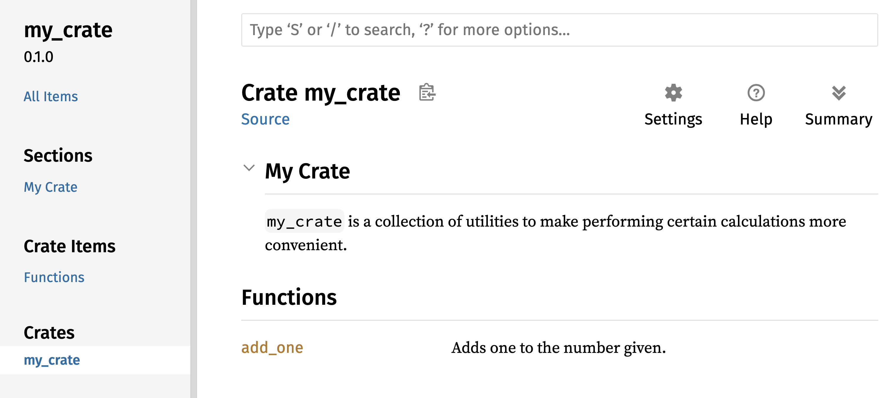

Bahasa Pemrograman Rust
oleh Steve Klabnik, Carol Nichols, dan Chris Krycho, dengan kontribusi dari Komunitas Rust
Versi naskah ini mengasumsikan kamu menggunakan Rust 1.99.1 (dirilis 2026-10-15)
atau yang lebih baru, dengan edition = "2024" di file Cargo.toml dari semua
proyek untuk mengonfigurasi agar menggunakan idiom Rust 2024 Edition. Lihat
bagian “Instalasi” di Bab 1 untuk petunjuk memasang
atau memperbarui Rust, dan lihat Lampiran E untuk
informasi tentang edition.
Format HTML tersedia secara daring di
https://doc.rust-lang.org/stable/book/
dan secara luring pada instalasi Rust yang dibuat dengan rustup; jalankan
rustup doc --book untuk membukanya.
Beberapa [terjemahan] komunitas juga tersedia.
Naskah ini tersedia dalam format buku cetak dan ebook dari No Starch Press.
🚨 Ingin pengalaman belajar yang lebih interaktif? Coba versi lain dari buku Rust yang menampilkan: kuis, penyorotan, visualisasi, dan lainnya: https://rust-book.cs.brown.edu
Prakata
Bahasa pemrograman Rust sudah menempuh jalan panjang dalam beberapa tahun saja—dari kelahirannya yang dirintis oleh segelintir penggiat awal, sampai menjadi salah satu bahasa pemrograman paling disukai dan paling diminati di dunia. Melihat ke belakang, wajar saja jika kekuatan dan janji Rust sampai menarik perhatian banyak orang dan mengukuhkan posisinya di pemrograman sistem. Yang tidak bisa dipastikan adalah pertumbuhan minat dan inovasi secara global yang menjalar lewat komunitas open source dan memicu adopsi luas di berbagai industri.
Saat ini, mudah sekadar menunjuk pada fitur-fitur hebat yang ditawarkan Rust untuk menjelaskan ledakan minat dan adopsi ini. Siapa yang tidak menginginkan keamanan memori, dan kinerja cepat, dan compiler yang ramah, dan perkakas yang hebat, di antara segudang fitur luar biasa lainnya? Bahasa Rust yang kamu lihat hari ini memadukan bertahun-tahun riset di bidang pemrograman sistem dengan kebijaksanaan praktis dari komunitas yang hidup dan penuh semangat. Bahasa ini dirancang dengan tujuan jelas dan dikerjakan dengan penuh perhatian, sehingga para developer mendapat alat yang memudahkan mereka menulis kode yang aman, cepat, dan andal.
Tetapi yang benar-benar membuat Rust istimewa adalah akarnya dalam memberdayakan kamu, sang pengguna, untuk mencapai tujuanmu. Ini adalah bahasa yang ingin kamu berhasil, dan prinsip pemberdayaan itu mengalir di inti komunitas yang membangun, merawat, dan memperjuangkan bahasa ini. Sejak edisi sebelumnya dari buku referensi definitif ini, Rust telah berkembang lebih jauh menjadi bahasa yang benar-benar global dan dipercaya. Proyek Rust kini didukung secara kokoh oleh Rust Foundation, yang juga berinvestasi dalam sejumlah inisiatif penting untuk memastikan Rust tetap aman, stabil, dan berkelanjutan.
Edisi The Rust Programming Language ini adalah pembaruan menyeluruh yang mencerminkan perkembangan bahasa ini selama bertahun-tahun sekaligus menghadirkan informasi baru yang berharga. Tetapi buku ini bukan sekadar panduan sintaks dan library—melainkan undangan untuk bergabung dengan komunitas yang menjunjung kualitas, kinerja, dan desain yang matang. Baik kamu seorang developer berpengalaman yang ingin mencoba Rust untuk pertama kalinya, maupun Rustacean andal yang ingin mengasah kemampuan, edisi ini punya sesuatu untuk setiap orang.
Perjalanan Rust adalah kisah kolaborasi, pembelajaran, dan iterasi. Pertumbuhan bahasa ini dan ekosistemnya adalah cerminan langsung dari komunitas yang hidup dan beragam di belakangnya. Kontribusi ribuan developer, mulai dari perancang inti bahasa hingga kontributor yang sesekali menyumbang, itulah yang membuat Rust menjadi alat yang begitu unik dan kuat. Dengan memegang buku ini, kamu tidak sekadar mempelajari bahasa pemrograman baru—kamu bergabung dengan sebuah gerakan untuk membuat perangkat lunak menjadi lebih baik, lebih aman, dan lebih menyenangkan untuk dikerjakan.
Selamat datang di komunitas Rust!
- Bec Rumbul, Direktur Eksekutif Rust Foundation
Pendahuluan
Catatan: Edisi buku ini sama dengan The Rust Programming Language yang tersedia dalam format cetak dan ebook dari No Starch Press.
Selamat datang di The Rust Programming Language, buku pengantar tentang Rust. Bahasa pemrograman Rust membantu kamu menulis perangkat lunak yang lebih cepat dan lebih andal. Dalam desain bahasa pemrograman, ergonomis di tingkat tinggi dan kendali di tingkat rendah sering saling bertentangan; Rust menantang dilema tersebut. Dengan menyeimbangkan kemampuan teknis yang kuat dan pengalaman pengembang yang menyenangkan, Rust memberi kamu pilihan untuk mengendalikan detail tingkat rendah (seperti penggunaan memori) tanpa kerepotan yang biasanya melekat pada kendali semacam itu.
Rust Ditujukan untuk Siapa
Rust cocok untuk banyak orang karena berbagai alasan. Mari kita lihat beberapa kelompok paling penting.
Tim Pengembang
Rust terbukti menjadi alat yang produktif untuk kolaborasi di antara tim pengembang besar dengan tingkat pengetahuan sistem yang bervariasi. Kode tingkat rentan terhadap berbagai bug halus yang, di sebagian besar bahasa lain, hanya bisa ditemukan lewat pengujian menyeluruh dan tinjauan kode ketat oleh pengembang berpengalaman. Di Rust, compiler memegang peran penjaga gerbang dengan menolak mengompilasi kode yang mengandung bug licik seperti itu, termasuk bug concurrency. Dengan bekerja bersama compiler, tim bisa menghabiskan waktu untuk fokus pada logika program, bukan mengejar bug.
Rust juga membawa perkembangan alat pengembang modern ke dunia pemrograman sistem:
- Cargo, dependency manager dan alat build yang disertakan, membuat penambahan, kompilasi, dan pengelolaan dependency menjadi mudah serta konsisten di seluruh ekosistem Rust.
- Alat format
rustfmtmemastikan gaya penulisan kode yang konsisten di antara pengembang. - Rust Language Server menggerakkan integrasi integrated development environment (IDE) untuk pelengkapan kode dan pesan error inline.
Dengan memakai alat-alat ini dan alat lain di ekosistem Rust, pengembang bisa tetap produktif saat menulis kode tingkat sistem.
Mahasiswa
Rust ditujukan bagi mahasiswa dan siapa pun yang tertarik mempelajari konsep sistem. Dengan memakai Rust, banyak orang mempelajari topik seperti pengembangan sistem operasi. Komunitasnya sangat ramah dan senang menjawab pertanyaan mahasiswa. Lewat usaha seperti buku ini, tim Rust ingin membuat konsep sistem lebih mudah diakses oleh lebih banyak orang, terutama yang baru belajar pemrograman.
Perusahaan
Ratusan perusahaan, besar maupun kecil, memakai Rust dalam produksi untuk berbagai tugas, termasuk tool command line, layanan web, tooling DevOps, perangkat tertanam, analisis dan transkoding audio-video, mata uang kriptografi, bioinformatika, mesin pencari, aplikasi Internet of Things, machine learning, dan bahkan bagian-bagian utama dari web browser Firefox.
Pengembang Open Source
Rust ditujukan bagi orang yang ingin membangun bahasa pemrograman Rust, komunitas, alat pengembang, dan library. Kami senang sekali kalau kamu ikut berkontribusi pada bahasa Rust.
Orang yang Menghargai Kecepatan dan Stabilitas
Rust ditujukan bagi orang yang mendambakan kecepatan dan stabilitas dalam sebuah bahasa. Kecepatan di sini mencakup dua hal: seberapa cepat kode Rust bisa berjalan, dan seberapa cepat Rust membiarkan kamu menulis program. Pemeriksaan compiler Rust menjamin stabilitas saat menambahkan fitur dan melakukan refactoring. Ini berbeda dengan kode warisan yang rapuh di bahasa tanpa pemeriksaan semacam itu, yang sering enggan diubah oleh pengembang. Dengan berusaha mewujudkan abstraksi biaya nol—fitur tingkat tinggi yang dikompilasi menjadi kode tingkat rendah secepat kode yang ditulis manual—Rust berusaha membuat kode yang aman juga menjadi kode yang cepat.
Bahasa Rust berharap bisa mendukung banyak pengguna lain; yang disebut di sini hanyalah beberapa pihak paling penting. Secara keseluruhan, ambisi terbesar Rust adalah menghilangkan trade-off yang sudah diterima programmer selama puluhan tahun dengan menyediakan keamanan sekaligus produktivitas, kecepatan sekaligus ergonomis. Cobalah Rust, dan lihat apakah pilihannya cocok untuk kamu.
Buku Ini Ditujukan untuk Siapa
Buku ini mengasumsikan kamu sudah menulis kode di bahasa pemrograman lain, tetapi tidak berasumsi bahasa yang mana. Kami berusaha membuat materi ini dapat diakses luas oleh orang dengan latar belakang pemrograman yang beragam. Kami tidak menghabiskan banyak waktu membahas apa itu pemrograman atau bagaimana cara berpikir tentangnya. Jika kamu benar-benar baru dalam pemrograman, kamu akan lebih terbantu dengan membuka buku yang khusus memberikan pengantar tentang pemrograman.
Cara Memakai Buku Ini
Secara umum, buku ini mengasumsikan kamu membacanya secara berurutan dari awal sampai akhir. Bab-bab belakang dibangun di atas konsep dari bab-bab sebelumnya, dan bab-bab awal mungkin tidak membahas detail suatu topik tertentu, tetapi akan membahasnya kembali di bab kemudian.
Kamu akan menemukan dua jenis bab dalam buku ini: bab konsep dan bab proyek. Di bab konsep, kamu akan mempelajari aspek tertentu dari Rust. Di bab proyek, kita akan membangun program kecil bersama, menerapkan apa yang sudah kamu pelajari sejauh ini. Bab 2, Bab 12, dan Bab 21 adalah bab proyek; selebihnya adalah bab konsep.
Bab 1 menjelaskan cara memasang Rust, cara menulis program “Hello, world!”, dan cara memakai Cargo, package manager dan alat build milik Rust. Bab 2 adalah pengantar praktis untuk menulis program di Rust, di mana kamu akan membangun sebuah permainan tebak-angka. Di sini kita membahas konsep pada tingkat tinggi, dan bab-bab selanjutnya akan memberikan detail tambahan. Jika kamu ingin langsung terjun sejak awal, Bab 2 adalah tempatnya. Jika kamu tipe pembelajar yang sangat teliti dan ingin menguasai setiap detail sebelum lanjut ke materi berikutnya, mungkin kamu ingin melompati Bab 2 dan langsung ke Bab 3, yang membahas fitur-fitur Rust yang mirip dengan bahasa pemrograman lain; setelah itu, kamu bisa kembali ke Bab 2 kapan pun ingin mengerjakan proyek yang menerapkan detail yang sudah kamu pelajari.
Di Bab 4, kamu akan mempelajari sistem ownership Rust. Bab 5
membahas struct dan method. Bab 6 membahas enum, ekspresi match, serta
konstruk kontrol if let dan let...else. Kamu akan memakai struct dan enum
untuk membuat tipe kustom.
Di Bab 7, kamu akan mempelajari sistem module Rust dan aturan privasi untuk mengorganisasi kode serta application programming interface (API) publiknya. Bab 8 membahas beberapa struktur data kumpulan yang disediakan standard library: vector, string, dan hash map. Bab 9 menjelajahi filosofi dan teknik penanganan error Rust.
Bab 10 membahas generic, trait, dan lifetime, yang memberimu kemampuan
mendefinisikan kode yang berlaku untuk banyak tipe. Bab 11 sepenuhnya
tentang test, yang bahkan dengan jaminan keamanan Rust tetap diperlukan
untuk memastikan logika programmu benar. Di Bab 12, kita akan membangun
implementasi kita sendiri dari sebagian fungsi tool grep pada command line
yang mencari teks di dalam file. Untuk ini, kita akan memakai banyak konsep
yang sudah kita bahas di bab-bab sebelumnya.
Bab 13 menjelajahi closure dan iterator: fitur Rust yang berasal dari bahasa pemrograman fungsional. Di Bab 14, kita akan mempelajari Cargo lebih dalam dan membahas praktik terbaik untuk berbagi library-mu dengan orang lain. Bab 15 membahas smart pointer yang disediakan standard library beserta trait yang memungkinkan fungsionalitasnya.
Di Bab 16, kita akan menelusuri berbagai model pemrograman konkurensi dan membahas bagaimana Rust membantu kamu memprogram dengan banyak thread tanpa takut. Di Bab 17, kita melanjutkan dari situ dengan menjelajahi sintaks async dan await milik Rust, bersama dengan task, future, dan stream, serta model konkurensi ringan yang mereka aktifkan.
Bab 18 membahas bagaimana idioma Rust dibandingkan dengan prinsip pemrograman berorientasi objek yang mungkin sudah kamu kenal. Bab 19 adalah referensi tentang pattern dan pencocokan pola, yang merupakan cara kuat untuk mengekspresikan ide di seluruh program Rust. Bab 20 berisi beragam topik lanjutan yang menarik, termasuk unsafe Rust, macro, dan penjelasan lebih lanjut tentang lifetime, trait, tipe, fungsi, dan closure.
Di Bab 21, kita akan menyelesaikan sebuah proyek di mana kita akan mengimplementasikan web server multithreaded tingkat rendah!
Terakhir, beberapa lampiran memuat informasi berguna tentang bahasa ini dalam format yang lebih menyerupai referensi. Lampiran A membahas keyword Rust, Lampiran B membahas operator dan simbol Rust, Lampiran C membahas trait yang bisa diturunkan yang disediakan standard library, Lampiran D membahas beberapa alat pengembangan yang berguna, dan Lampiran E menjelaskan edisi Rust. Di Lampiran F, kamu bisa menemukan terjemahan buku ini, dan di Lampiran G kita akan membahas bagaimana Rust dibuat dan apa itu Rust nightly.
Tidak ada cara yang salah untuk membaca buku ini: kalau kamu ingin melompati sebagian isi, silakan! Kamu mungkin harus kembali ke bab-bab sebelumnya jika mengalami kebingungan. Tapi lakukan apa pun yang paling menolongmu.
Bagian penting dari proses belajar Rust adalah belajar membaca pesan error yang ditampilkan compiler: pesan itu akan membawamu menuju kode yang berfungsi. Karena itu, kita akan memberikan banyak contoh yang tidak bisa dikompilasi beserta pesan error yang akan ditampilkan compiler pada masing-masing situasi. Ingat bahwa jika kamu menyalin dan menjalankan contoh acak, contoh itu mungkin tidak bisa dikompilasi! Pastikan kamu membaca teks di sekitarnya untuk melihat apakah contoh yang coba kamu jalankan memang sengaja dibuat error. Pada kebanyakan situasi, kita akan membawamu ke versi yang benar dari kode yang tidak bisa dikompilasi. Ferris juga akan membantu membedakan kode yang memang tidak dimaksudkan untuk berfungsi:
| Ferris | Arti |
|---|---|
| Kode ini tidak bisa dikompilasi! | |
 | Kode ini panics! |
| Kode ini tidak menghasilkan perilaku yang diinginkan. |
Pada kebanyakan situasi, kita akan membawamu ke versi yang benar dari kode yang tidak bisa dikompilasi.
Kode Sumber
File sumber yang dipakai untuk menyusun buku ini bisa ditemukan di GitHub.
Memulai
Mari mulai perjalanan belajar Rust kamu! Banyak hal yang harus dipelajari, tapi setiap perjalanan pasti dimulai dari suatu tempat. Di bab ini, kita akan membahas:
- Memasang Rust di Linux, macOS, dan Windows
- Menulis program yang mencetak
Hello, world! - Menggunakan
cargo, package manager dan sistem build milik Rust
Instalasi
Instalasi
Langkah pertama adalah memasang Rust. Kita akan mengunduh Rust melalui
rustup, sebuah tool command line untuk mengelola versi Rust dan tool pendukung
nya. Kamu memerlukan koneksi internet untuk pengunduhan ini.
Catatan: Jika karena alasan tertentu kamu tidak ingin memakai
rustup, lihat halaman metode instalasi Rust lainnya untuk lebih banyak opsi.
Langkah-langkah berikut memasang versi stable terbaru dari compiler Rust. Jaminan stabilitas Rust memastikan semua contoh di buku ini yang bisa mengompilasi akan tetap bisa mengompilasi dengan versi Rust yang lebih baru. Outputnya mungkin sedikit berbeda antar versi karena Rust sering memperbaiki pesan error dan warning. Singkatnya, versi stable Rust yang lebih baru apa pun yang kamu pasang dengan langkah-langkah ini seharusnya bekerja sebagaimana diharapkan dengan isi buku ini.
Notasi Command Line
Di bab ini dan di seluruh buku, kita akan menampilkan beberapa perintah yang
dipakai di terminal. Baris yang harus kamu masukkan di terminal selalu
dimulai dengan $. Kamu tidak perlu mengetik karakter $; itu adalah
prompt command line yang ditampilkan sebagai penanda awal setiap perintah.
Baris yang tidak dimulai dengan $ biasanya menampilkan output dari
perintah sebelumnya. Selain itu, contoh khusus PowerShell akan memakai >
alih-alih $.
Memasang rustup di Linux atau macOS
Jika kamu memakai Linux atau macOS, buka sebuah terminal dan masukkan perintah berikut:
$ curl --proto '=https' --tlsv1.2 https://sh.rustup.rs -sSf | sh
Perintah ini mengunduh sebuah skrip dan memulai instalasi tool rustup,
yang akan memasang versi stable terbaru Rust. Kamu mungkin akan diminta
memasukkan password. Jika instalasinya berhasil, baris berikut akan muncul:
Rust is installed now. Great!
Kamu juga memerlukan sebuah linker, yaitu program yang dipakai Rust untuk menggabungkan hasil kompilasinya menjadi satu file. Kemungkinan besar kamu sudah memilikinya. Jika kamu mendapat error linker, kamu harus memasang compiler C, yang biasanya sudah menyertakan linker. Compiler C juga berguna karena beberapa package Rust umum bergantung pada kode C dan memerlukan compiler C.
Di macOS, kamu bisa mendapatkan compiler C dengan menjalankan:
$ xcode-select --install
Pengguna Linux umumnya harus memasang GCC atau Clang, sesuai dokumentasi
distribusi mereka. Misalnya, jika kamu memakai Ubuntu, kamu bisa memasang
package build-essential.
Memasang rustup di Windows
Di Windows, buka https://www.rust-lang.org/tools/install dan ikuti petunjuk untuk memasang Rust. Pada suatu tahap dalam proses instalasi, kamu akan diminta memasang Visual Studio. Ini menyediakan linker dan library native yang dibutuhkan untuk mengompilasi program. Jika kamu memerlukan bantuan lebih lanjut untuk langkah ini, lihat https://rust-lang.github.io/rustup/installation/windows-msvc.html.
Sisa buku ini memakai perintah yang bisa jalan di cmd.exe dan PowerShell. Jika ada perbedaan tertentu, kita akan menjelaskan mana yang harus dipakai.
Pemecahan Masalah
Untuk memeriksa apakah Rust sudah terpasang dengan benar, buka sebuah shell dan masukkan baris ini:
$ rustc --version
Kamu akan melihat nomor versi, commit hash, dan tanggal commit dari versi stable terbaru yang telah dirilis, dalam format berikut:
rustc x.y.z (abcabcabc yyyy-mm-dd)
Jika kamu melihat informasi ini, berarti Rust berhasil kamu pasang! Jika kamu
tidak melihatnya, periksa apakah Rust sudah ada di variabel sistem %PATH%
kamu dengan cara berikut.
Di Windows CMD, gunakan:
> echo %PATH%
Di PowerShell, gunakan:
> echo $env:Path
Di Linux dan macOS, gunakan:
$ echo $PATH
Jika semuanya sudah benar tetapi Rust tetap tidak bekerja, ada banyak tempat di mana kamu bisa mendapatkan bantuan. Cari tahu cara menghubungi sesama Rustacean (julukan konyol yang kita pakai untuk diri sendiri) di halaman komunitas.
Memperbarui dan Menghapus Instalasi
Setelah Rust terpasang melalui rustup, memperbarui ke versi yang baru saja
rilis sangat mudah. Dari shell kamu, jalankan skrip pembaruan berikut:
$ rustup update
Untuk menghapus Rust dan rustup, jalankan skrip penghapusan berikut dari
shell kamu:
$ rustup self uninstall
Membaca Dokumentasi Lokal
Instalasi Rust juga menyertakan salinan dokumentasi secara lokal sehingga kamu
bisa membacanya secara offline. Jalankan rustup doc untuk membuka dokumentasi
lokal di browser kamu.
Setiap kali ada tipe atau fungsi yang disediakan oleh standard library dan kamu tidak yakin apa fungsinya atau cara menggunakannya, gunakan dokumentasi application programming interface (API) untuk mencari tahu!
Memakai Text Editor dan IDE
Buku ini tidak berasumsi apa pun tentang tool yang kamu pakai untuk menulis kode Rust. Hampir semua text editor bisa menyelesaikan pekerjaannya! Namun, banyak text editor dan integrated development environment (IDE) yang punya dukungan bawaan untuk Rust. Kamu selalu bisa menemukan daftar yang cukup terkini dari banyak editor dan IDE di halaman tools pada situs Rust.
Bekerja Offline dengan Buku Ini
Di beberapa contoh, kita akan memakai package Rust di luar standard library.
Untuk mengerjakan contoh-contoh itu, kamu perlu punya koneksi internet atau
telah mengunduh dependensi tersebut terlebih dahulu. Untuk mengunduh dependensi
terlebih dahulu, kamu bisa menjalankan perintah berikut. (Kita akan menjelaskan
apa itu cargo dan apa fungsi setiap perintah ini secara detail di kemudian
hari.)
$ cargo new get-dependencies
$ cd get-dependencies
$ cargo add rand@0.10.1 trpl@0.2.0
Ini akan menyimpan unduhan package-package tersebut ke cache sehingga kamu tidak
perlu mengunduhnya lagi nanti. Setelah kamu menjalankan perintah ini, kamu tidak
perlu menyimpan folder get-dependencies. Jika kamu sudah menjalankan perintah
ini, kamu bisa memakai flag --offline pada semua perintah cargo di sisa
buku ini untuk memakai versi yang tersimpan di cache ini alih-alih mencoba
mengakses jaringan.
Hello, World!
Hello, World!
Sekarang setelah kamu memasang Rust, saatnya menulis program Rust pertamamu.
Saat belajar bahasa baru, orang biasanya menulis program kecil yang mencetak
teks Hello, world! ke layar, jadi kita akan melakukan hal yang sama di sini!
Catatan: Buku ini mengasumsikan kamu sudah cukup mengenal command line. Rust tidak menuntut apa pun secara khusus soal editor, perkakas, atau tempat kode kamu disimpan, jadi kalau kamu lebih suka memakai IDE alih-alih command line, silakan pakai IDE favoritmu. Banyak IDE kini punya semacam dukungan Rust; periksa dokumentasi IDE tersebut untuk detailnya. Tim Rust berfokus pada penyediaan dukungan IDE yang baik lewat
rust-analyzer. Lihat Lampiran D untuk lebih banyak detail.
Penyiapan Direktori Proyek
Kamu akan mulai dengan membuat direktori untuk menyimpan kode Rust kamu. Bagi Rust, kode kamu tersimpan di mana pun tidak masalah, tapi untuk latihan dan proyek di buku ini, kita sarankan kamu membuat direktori projects di direktori home dan menyimpan semua proyekmu di sana.
Buka terminal dan masukkan perintah berikut untuk membuat direktori projects serta direktori untuk proyek “Hello, world!” di dalam direktori projects.
Untuk Linux, macOS, dan PowerShell di Windows, masukkan ini:
$ mkdir ~/projects
$ cd ~/projects
$ mkdir hello_world
$ cd hello_world
Untuk Windows CMD, masukkan ini:
> mkdir "%USERPROFILE%\projects"
> cd /d "%USERPROFILE%\projects"
> mkdir hello_world
> cd hello_world
Dasar-Dasar Program Rust
Selanjutnya, buat file sumber baru dan beri nama main.rs. File Rust selalu berakhiran ekstensi .rs. Jika nama file kamu memakai lebih dari satu kata, konvensinya adalah memisahkan kata itu dengan garis bawah. Sebagai contoh, gunakan hello_world.rs alih-alih helloworld.rs.
Sekarang buka file main.rs yang baru saja kamu buat dan masukkan kode pada Listing 1-1.
fn main() {
println!("Hello, world!");
}Hello, world!Simpan file itu lalu kembali ke jendela terminal kamu di direktori ~/projects/hello_world. Di Linux atau macOS, masukkan perintah berikut untuk mengompilasi dan menjalankan file:
$ rustc main.rs
$ ./main
Hello, world!
Di Windows, masukkan perintah .\main alih-alih ./main:
> rustc main.rs
> .\main
Hello, world!
Apa pun sistem operasi kamu, string Hello, world! seharusnya tercetak ke
terminal. Jika kamu tidak melihat keluaran ini, kembali ke bagian
“Pemecahan Masalah” di bagian Instalasi untuk
cara-cara mendapatkan bantuan.
Jika Hello, world! tercetak, selamat! Kamu sudah resmi menulis program Rust.
Dengan begitu, kamu seorang programmer Rust—selamat datang!
Anatomi Sebuah Program Rust
Mari kita tinjau program “Hello, world!” ini secara detail. Ini bagian pertama dari teka-teki:
fn main() {
}Baris-baris ini mendefinisikan fungsi bernama main. Fungsi main istimewa:
fungsi ini selalu kode pertama yang berjalan di setiap program Rust yang bisa
dieksekusi. Di sini, baris pertama mendeklarasikan fungsi bernama main yang
tidak memiliki parameter dan tidak mengembalikan apa pun. Jika ada parameter,
parameter itu diletakkan di dalam tanda kurung (()).
Badan fungsi dibungkus oleh {}. Rust mewajibkan kurung kurawal di sekeliling
semua badan fungsi. Gaya yang baik adalah menempatkan kurung kurawal pembuka
pada baris yang sama dengan deklarasi fungsi, dengan satu spasi di antaranya.
Catatan: Jika kamu ingin memakai gaya standar yang konsisten di semua proyek Rust, kamu bisa memakai tool formatter otomatis bernama
rustfmtuntuk memformat kode dengan gaya tertentu (lebih lanjut soalrustfmtdi Lampiran D). Tim Rust menyertakan tool ini dalam distribusi standar Rust, sama sepertirustc, jadi tool ini seharusnya sudah terpasang di komputer kamu!
Badan fungsi main berisi kode berikut:
#![allow(unused)]
fn main() {
println!("Hello, world!");
}Baris inilah yang melakukan semua pekerjaan di program kecil ini: mencetak teks ke layar. Ada tiga detail penting yang perlu kamu perhatikan.
Pertama, println! memanggil sebuah macro Rust. Jika yang dipanggil adalah
fungsi, penulisannya adalah println (tanpa !). Macro Rust adalah cara
menulis kode yang menghasilkan kode untuk memperluas sintaks Rust, dan kita
akan membahasnya lebih rinci di Bab 20. Untuk
sekarang, kamu hanya perlu tahu bahwa penggunaan ! berarti kamu memanggil
macro, bukan fungsi biasa, dan macro tidak selalu mengikuti aturan yang sama
dengan fungsi.
Kedua, kamu melihat string "Hello, world!". String itu kita oper sebagai
argumen ke println!, dan string dicetak ke layar.
Ketiga, kita mengakhiri baris dengan titik koma (;), yang menandai ekspresi
ini sudah selesai dan ekspresi berikutnya siap dimulai. Sebagian besar baris
kode Rust diakhiri dengan titik koma.
Kompilasi dan Eksekusi
Kamu baru saja menjalankan program yang baru dibuat, jadi mari kita periksa setiap langkah dalam prosesnya.
Sebelum menjalankan program Rust, kamu harus mengompilasinya memakai compiler
Rust: masukkan perintah rustc dan berikan nama file sumber kamu sebagai
argumennya, seperti ini:
$ rustc main.rs
Jika kamu punya latar belakang C atau C++, kamu akan melihat ini mirip dengan
gcc atau clang. Setelah kompilasi berhasil, Rust menghasilkan executable
binary.
Di Linux, macOS, dan PowerShell di Windows, kamu bisa melihat executable-nya
dengan memasukkan perintah ls di shell:
$ ls
main main.rs
Di Linux dan macOS, kamu akan melihat dua file. Di PowerShell pada Windows, kamu akan melihat tiga file yang sama seperti saat memakai CMD. Di CMD pada Windows, kamu akan memasukkan ini:
> dir /B %= the /B option says to only show the file names =%
main.exe
main.pdb
main.rs
Keluaran ini menunjukkan file kode sumber dengan ekstensi .rs, file executable (main.exe di Windows, tapi main di platform lainnya), dan, saat memakai Windows, file yang berisi informasi debugging dengan ekstensi .pdb. Dari sini, kamu menjalankan file main atau main.exe, seperti ini:
$ ./main # or .\main on Windows
Jika main.rs kamu adalah program “Hello, world!”, baris ini mencetak Hello, world! ke terminal kamu.
Jika kamu lebih terbiasa dengan bahasa dinamis seperti Ruby, Python, atau JavaScript, kamu mungkin belum terbiasa mengompilasi dan menjalankan program sebagai dua langkah yang terpisah. Rust adalah bahasa yang dikompilasi ahead-of-time, artinya kamu bisa mengompilasi program dan memberikan executable-nya ke orang lain, dan orang itu bisa menjalankannya bahkan tanpa memasang Rust. Jika kamu memberi seseorang file .rb, .py, atau .js, mereka perlu memasang implementasi Ruby, Python, atau JavaScript (masing-masing). Tapi di bahasa-bahasa itu, kamu hanya butuh satu perintah untuk mengompilasi dan menjalankan program kamu. Segalanya adalah trade-off dalam desain bahasa.
Mengompilasi dengan rustc saja sudah cukup untuk program sederhana, tapi
seiring proyek kamu bertumbuh, kamu akan perlu mengelola semua opsi dan
memudahkan proses berbagi kode. Selanjutnya, kita akan memperkenalkan kamu pada
tool Cargo, yang akan membantu kamu menulis program Rust yang dipakai di dunia
nyata.
Hello, Cargo!
Hello, Cargo!
Cargo adalah build system dan package manager untuk Rust. Kebanyakan Rustacean memakai tool ini untuk mengelola proyek Rust mereka, karena Cargo menangani banyak tugas untukmu: meng-build kode, mengunduh library yang dibutuhkan kode kamu, dan meng-build library-library tersebut. (Library yang dibutuhkan kode kamu kita sebut dependencies.)
Program Rust yang paling sederhana, seperti yang baru kita tulis sejauh ini, tidak punya dependency apa pun. Kalau kita meng-build proyek “Hello, world!” dengan Cargo, kita hanya akan memakai bagian Cargo yang menangani peng-build-an kode kamu. Begitu kamu menulis program Rust yang lebih kompleks, kamu akan menambahkan dependency, dan kalau kamu memulai proyek dengan Cargo, menambahkan dependency jadi jauh lebih mudah.
Karena mayoritas besar proyek Rust memakai Cargo, sisa buku ini mengasumsikan kamu juga memakai Cargo. Cargo sudah terpasang bersama Rust jika kamu memakai installer resmi yang dibahas di bagian “Installation”. Jika kamu memasang Rust lewat cara lain, cek apakah Cargo sudah terpasang dengan mengetik hal berikut di terminal kamu:
$ cargo --version
Jika kamu melihat nomor versi, berarti sudah terpasang! Jika kamu melihat error, seperti command not found, lihat dokumentasi metode pemasangan kamu untuk mengetahui cara memasang Cargo secara terpisah.
Membuat Proyek dengan Cargo
Ayo kita buat proyek baru memakai Cargo dan lihat bedanya dengan proyek “Hello, world!” asli kita. Kembali ke direktori projects kamu (atau di mana pun kamu menyimpan kode kamu). Lalu, di sistem operasi apa pun, jalankan ini:
$ cargo new hello_cargo
$ cd hello_cargo
Perintah pertama membuat direktori dan proyek baru bernama hello_cargo. Kita menamai proyek kita hello_cargo, dan Cargo membuat file-file di dalamnya di direktori dengan nama yang sama.
Masuk ke direktori hello_cargo dan daftarkan isinya. Kamu akan melihat Cargo sudah menghasilkan dua file dan satu direktori untuk kita: file Cargo.toml dan direktori src yang berisi file main.rs di dalamnya.
Cargo juga sudah menginisialisasi repository Git baru beserta file .gitignore. File Git tidak akan dihasilkan jika kamu menjalankan cargo new di dalam repository Git yang sudah ada; kamu bisa menimpa perilaku ini dengan memakai cargo new --vcs=git.
Catatan: Git adalah sistem kontrol versi yang umum dipakai. Kamu bisa mengubah
cargo newagar memakai sistem kontrol versi lain atau tanpa sistem kontrol versi sama sekali dengan memakai flag--vcs. Jalankancargo new --helpuntuk melihat pilihan yang tersedia.
Buka Cargo.toml dengan text editor pilihan kamu. Isinya kira-kira seperti kode pada Listing 1-2.
[package]
name = "hello_cargo"
version = "0.1.0"
edition = "2024"
[dependencies]
cargo newFile ini memakai format TOML (Tom’s Obvious, Minimal Language), format konfigurasi milik Cargo.
Baris pertama, [package], adalah judul bagian yang menandakan bahwa statement berikutnya mengonfigurasi sebuah package. Begitu kita menambahkan lebih banyak informasi ke file ini, kita akan menambahkan bagian-bagian lainnya.
Tiga baris berikutnya mengatur informasi konfigurasi yang dibutuhkan Cargo untuk mengompilasi program kamu: nama, versi, dan edisi Rust yang dipakai. Kita akan membahas kunci edition di Appendix E.
Baris terakhir, [dependencies], adalah awal dari bagian untuk kamu mencantumkan semua dependency proyek kamu. Di Rust, paket-paket kode disebut crates. Proyek ini belum membutuhkan crate lain, tapi proyek pertama di Bab 2 akan membutuhkannya, jadi saat itu kita akan memakai bagian dependencies ini.
Sekarang buka src/main.rs dan lihat isinya:
Filename: src/main.rs
fn main() {
println!("Hello, world!");
}Cargo sudah menghasilkan program “Hello, world!” untuk kamu, sama seperti yang kita tulis pada Listing 1-1! Sejauh ini, perbedaan antara proyek kita dan proyek hasil Cargo adalah Cargo menaruh kode di direktori src, sedangkan kita punya file konfigurasi Cargo.toml di direktori tingkat atas.
Cargo mengharapkan file source kamu berada di dalam direktori src. Direktori proyek tingkat atas hanya untuk file README, informasi lisensi, file konfigurasi, dan hal-hal lain yang tidak berhubungan dengan kode kamu. Memakai Cargo membantu kamu menata proyek. Ada tempat untuk segalanya, dan segalanya ada di tempatnya.
Jika kamu memulai proyek yang tidak memakai Cargo, seperti kita lakukan pada proyek “Hello, world!”, kamu bisa mengonversinya menjadi proyek yang memakai Cargo. Pindahkan kode proyek ke direktori src dan buat file Cargo.toml yang sesuai. Cara mudah untuk mendapatkan file Cargo.toml itu adalah menjalankan cargo init, yang akan membuatnya secara otomatis untukmu.
Meng-build dan Menjalankan Proyek Cargo
Sekarang mari kita lihat apa yang berbeda saat kita meng-build dan menjalankan program “Hello, world!” dengan Cargo! Dari direktori hello_cargo kamu, build proyek kamu dengan mengetik perintah berikut:
$ cargo build
Compiling hello_cargo v0.1.0 (file:///projects/hello_cargo)
Finished dev [unoptimized + debuginfo] target(s) in 2.85 secs
Perintah ini membuat file executable di target/debug/hello_cargo (atau target\debug\hello_cargo.exe di Windows), bukan di direktori kamu saat ini. Karena build bawaan adalah debug build, Cargo menaruh binary di direktori bernama debug. Kamu bisa menjalankan executable itu dengan perintah ini:
$ ./target/debug/hello_cargo # or .\target\debug\hello_cargo.exe on Windows
Hello, world!
Jika semuanya berjalan lancar, Hello, world! akan tercetak di terminal. Menjalankan cargo build untuk pertama kalinya juga membuat Cargo menghasilkan file baru di tingkat atas: Cargo.lock. File ini mencatat versi persis dari dependency di proyek kamu. Proyek ini tidak punya dependency, jadi file itu agak kosong. Kamu tidak perlu pernah mengubah file ini secara manual; Cargo mengelola isinya untukmu.
Kita baru saja meng-build proyek dengan cargo build dan menjalankannya dengan ./target/debug/hello_cargo, tapi kita juga bisa memakai cargo run untuk mengompilasi kode lalu menjalankan executable hasilnya, semuanya dalam satu perintah:
$ cargo run
Finished dev [unoptimized + debuginfo] target(s) in 0.0 secs
Running `target/debug/hello_cargo`
Hello, world!
Memakai cargo run lebih praktis daripada harus mengingat untuk menjalankan cargo build lalu memakai path lengkap ke binary, jadi kebanyakan developer memakai cargo run.
Perhatikan bahwa kali ini kita tidak melihat output yang menandakan Cargo sedang mengompilasi hello_cargo. Cargo tahu file-file itu tidak berubah, jadi ia tidak meng-build ulang, hanya menjalankan binary-nya. Jika kamu mengubah kode sumber kamu, Cargo akan meng-build ulang proyek sebelum menjalankannya, dan kamu akan melihat output ini:
$ cargo run
Compiling hello_cargo v0.1.0 (file:///projects/hello_cargo)
Finished dev [unoptimized + debuginfo] target(s) in 0.33 secs
Running `target/debug/hello_cargo`
Hello, world!
Cargo juga menyediakan perintah bernama cargo check. Perintah ini memeriksa kode kamu dengan cepat untuk memastikan kode itu bisa dikompilasi, tapi tidak menghasilkan executable:
$ cargo check
Checking hello_cargo v0.1.0 (file:///projects/hello_cargo)
Finished dev [unoptimized + debuginfo] target(s) in 0.32 secs
Mengapa kamu tidak menginginkan executable? Sering kali, cargo check jauh lebih cepat daripada cargo build karena ia melewati langkah pembuatan executable. Jika kamu terus-menerus memeriksa pekerjaan kamu selagi menulis kode, memakai cargo check akan mempercepat proses pemberitahuan apakah proyek kamu masih bisa dikompilasi! Karena itu, banyak Rustacean menjalankan cargo check secara berkala saat menulis program mereka untuk memastikan program itu bisa dikompilasi. Baru setelah itu, mereka menjalankan cargo build ketika sudah siap memakai executable-nya.
Ayo kita rangkum apa yang sudah kita pelajari sejauh ini tentang Cargo:
- Kita bisa membuat proyek memakai
cargo new. - Kita bisa meng-build proyek memakai
cargo build. - Kita bisa meng-build dan menjalankan proyek dalam satu langkah memakai
cargo run. - Kita bisa meng-build proyek tanpa menghasilkan binary untuk memeriksa error memakai
cargo check. - Alih-alih menyimpan hasil build di direktori yang sama dengan kode kita, Cargo menyimpannya di direktori target/debug.
Keuntungan tambahan memakai Cargo adalah perintahnya sama persis tidak peduli sistem operasi apa yang kamu pakai. Jadi, mulai sekarang, kita tidak lagi memberi instruksi khusus untuk Linux dan macOS versus Windows.
Meng-build untuk Release
Ketika proyek kamu akhirnya siap dirilis, kamu bisa memakai cargo build --release untuk mengompilasinya dengan optimasi. Perintah ini akan membuat executable di target/release alih-alih target/debug. Optimasi membuat kode Rust kamu berjalan lebih cepat, tapi mengaktifkannya memperpanjang waktu yang dibutuhkan program kamu untuk dikompilasi. Karena itu ada dua profile yang berbeda: satu untuk pengembangan, ketika kamu ingin meng-build ulang dengan cepat dan sering, dan satu lagi untuk meng-build program akhir yang akan kamu berikan ke pengguna, yang tidak akan di-build ulang berulang kali dan akan berjalan secepat mungkin. Jika kamu melakukan benchmark terhadap waktu jalan kode kamu, pastikan menjalankan cargo build --release dan mem-benchmark dengan executable di target/release.
Memanfaatkan Konvensi Cargo
Untuk proyek sederhana, Cargo tidak memberi banyak keunggulan dibanding hanya memakai rustc, tapi ia akan membuktikan nilainya begitu program kamu menjadi lebih rumit. Begitu program bertambah menjadi banyak file atau membutuhkan dependency, jauh lebih mudah membiarkan Cargo yang mengoordinasi proses build-nya.
Meskipun proyek hello_cargo tergolong sederhana, ia sekarang memakai banyak tooling nyata yang akan kamu pakai selama sisa karier Rust kamu. Faktanya, untuk mengerjakan proyek yang sudah ada, kamu bisa memakai perintah berikut untuk meng-clone kode memakai Git, pindah ke direktori proyek itu, lalu meng-build:
$ git clone example.org/someproject
$ cd someproject
$ cargo build
Untuk informasi lebih lanjut tentang Cargo, lihat dokumentasinya.
Ringkasan
Kamu sudah memulai perjalanan Rust kamu dengan langkah yang bagus! Di bab ini, kamu sudah mempelajari cara:
- Memasang versi Rust stabil terbaru memakai
rustup. - Memperbarui ke versi Rust yang lebih baru.
- Membuka dokumentasi yang terpasang secara lokal.
- Menulis dan menjalankan program “Hello, world!” memakai
rustcsecara langsung. - Membuat dan menjalankan proyek baru mengikuti konvensi Cargo.
Ini saat yang tepat untuk meng-build program yang lebih substansial agar terbiasa membaca dan menulis kode Rust. Jadi, di Bab 2, kita akan meng-build program permainan tebakan. Kalau kamu lebih suka mulai dengan mempelajari cara kerja konsep-konsep pemrograman umum di Rust, lihat Bab 3 lalu kembali ke Bab 2.
Memprogram Game Tebak-Tebakan
Ayo langsung praktik dengan Rust lewat sebuah proyek nyata! Bab ini memperkenalkan beberapa konsep Rust yang umum dengan menunjukkan cara menggunakannya dalam program sungguhan. Kamu akan belajar tentang let, match, method, fungsi terkait, crate eksternal, dan masih banyak lagi! Pada bab-bab berikutnya, kita akan membahas ide-ide ini lebih rinci. Di bab ini, kamu cukup berlatih dasar-dasarnya.
Kita akan mengimplementasikan sebuah soal pemrograman pemula yang klasik: game tebak-tebakan. Begini cara kerjanya: program akan menghasilkan bilangan bulat acak antara 1 dan 100. Lalu program meminta pemain memasukkan tebakan. Setelah tebakan dimasukkan, program memberi tahu apakah tebakan itu terlalu kecil atau terlalu besar. Jika tebakannya tepat, game akan mencetak pesan selamat dan keluar.
Menyiapkan Proyek Baru
Untuk menyiapkan proyek baru, buka direktori projects yang kamu buat di Bab 1 dan buat proyek baru dengan Cargo, seperti ini:
$ cargo new guessing_game
$ cd guessing_game
Perintah pertama, cargo new, menerima nama proyek (guessing_game) sebagai argumen pertama. Perintah kedua berpindah ke direktori proyek baru itu.
Lihat file Cargo.toml yang dihasilkan:
Filename: Cargo.toml
[package]
name = "guessing_game"
version = "0.1.0"
edition = "2024"
[dependencies]
Seperti yang kamu lihat di Bab 1, cargo new menghasilkan program “Hello, world!” untukmu. Lihat file src/main.rs:
Filename: src/main.rs
fn main() {
println!("Hello, world!");
}Sekarang ayo kompilasi program “Hello, world!” ini dan jalankan sekaligus dalam satu langkah dengan perintah cargo run:
$ cargo run
Compiling guessing_game v0.1.0 (file:///projects/guessing_game)
Finished `dev` profile [unoptimized + debuginfo] target(s) in 0.08s
Running `target/debug/guessing_game`
Hello, world!
Perintah run sangat berguna saat kamu perlu iterasi cepat pada sebuah proyek, seperti yang akan kita lakukan dalam game ini, menguji setiap iterasi dengan cepat sebelum lanjut ke berikutnya.
Buka lagi file src/main.rs. Kamu akan menulis semua kode di file ini.
Memproses Sebuah Tebakan
Bagian pertama dari program game tebak-tebakan akan meminta masukan pengguna, memproses masukan itu, dan memeriksa bahwa masukan sesuai bentuk yang diharapkan. Untuk mulai, kita izinkan pemain memasukkan sebuah tebakan. Ketik kode di Listing 2-1 ke dalam src/main.rs.
use std::io;
fn main() {
println!("Guess the number!");
println!("Please input your guess.");
let mut guess = String::new();
io::stdin()
.read_line(&mut guess)
.expect("Failed to read line");
println!("You guessed: {guess}");
}Kode ini memuat banyak informasi, jadi mari kita bahas baris demi baris. Untuk menerima masukan pengguna lalu mencetak hasilnya sebagai keluaran, kita perlu membawa library masukan/keluaran io ke dalam scope. Library io berasal dari standard library, yang dikenal sebagai std:
use std::io;
fn main() {
println!("Guess the number!");
println!("Please input your guess.");
let mut guess = String::new();
io::stdin()
.read_line(&mut guess)
.expect("Failed to read line");
println!("You guessed: {guess}");
}Secara default, Rust punya sekumpulan item yang didefinisikan di standard library dan dibawanya ke dalam scope setiap program. Kumpulan ini disebut prelude, dan kamu bisa melihat seluruh isinya di dokumentasi standard library.
Jika tipe yang ingin kamu gunakan tidak ada di prelude, kamu harus membawa tipe itu ke dalam scope secara eksplisit dengan statement use. Menggunakan library std::io memberimu sejumlah fitur berguna, termasuk kemampuan menerima masukan pengguna.
Seperti yang kamu lihat di Bab 1, fungsi main adalah titik masuk ke program:
use std::io;
fn main() {
println!("Guess the number!");
println!("Please input your guess.");
let mut guess = String::new();
io::stdin()
.read_line(&mut guess)
.expect("Failed to read line");
println!("You guessed: {guess}");
}Sintaks fn mendeklarasikan fungsi baru; tanda kurung, (), menunjukkan tidak ada parameter; dan kurung kurawal, {, memulai badan fungsi.
Seperti yang juga kamu pelajari di Bab 1, println! adalah macro yang mencetak string ke layar:
use std::io;
fn main() {
println!("Guess the number!");
println!("Please input your guess.");
let mut guess = String::new();
io::stdin()
.read_line(&mut guess)
.expect("Failed to read line");
println!("You guessed: {guess}");
}Kode ini mencetak prompt yang menjelaskan tentang game ini sekaligus meminta masukan dari pengguna.
Menyimpan Nilai dengan Variabel
Berikutnya, kita akan membuat sebuah variabel untuk menyimpan masukan pengguna, seperti ini:
use std::io;
fn main() {
println!("Guess the number!");
println!("Please input your guess.");
let mut guess = String::new();
io::stdin()
.read_line(&mut guess)
.expect("Failed to read line");
println!("You guessed: {guess}");
}Sekarang programnya jadi menarik! Ada banyak yang terjadi di satu baris kecil ini. Kita memakai statement let untuk membuat variabelnya. Berikut contoh lain:
let apples = 5;Baris ini membuat variabel baru bernama apples dan mengikatkannya ke nilai 5. Di Rust, variabel bersifat immutable secara default, artinya begitu kita memberi nilai ke variabel itu, nilainya tidak akan berubah. Kita akan membahas konsep ini secara rinci di bagian “Variables and Mutability” di Bab 3. Untuk membuat variabel menjadi mutable, kita tambahkan mut sebelum nama variabelnya:
let apples = 5; // immutable
let mut bananas = 5; // mutableCatatan: Sintaks
//memulai komentar yang berlanjut hingga akhir baris. Rust mengabaikan semua isi komentar. Kita akan membahas komentar lebih rinci di Bab 3.
Kembali ke program game tebak-tebakan, sekarang kamu tahu bahwa let mut guess akan memperkenalkan variabel mutable bernama guess. Tanda sama dengan (=) memberi tahu Rust bahwa kita ingin mengikat sesuatu ke variabel itu sekarang. Di sebelah kanan tanda sama adalah nilai yang diikat oleh guess, yaitu hasil pemanggilan String::new, sebuah fungsi yang mengembalikan instance baru dari String. String adalah tipe string yang disediakan standard library berupa potongan teks yang bisa diperluas dan berbasis UTF-8.
Sintaks :: di baris ::new menunjukkan bahwa new adalah fungsi terkait dari tipe String. Sebuah fungsi terkait adalah fungsi yang diimplementasikan pada sebuah tipe, dalam kasus ini String. Fungsi new ini membuat string baru yang kosong. Kamu akan menemukan fungsi new di banyak tipe karena itu nama yang lazim untuk fungsi yang membuat nilai baru dari semacam jenis tertentu.
Secara keseluruhan, baris let mut guess = String::new(); telah membuat variabel mutable yang saat ini terikat ke sebuah instance String baru yang kosong. Fiuh!
Menerima Masukan Pengguna
Ingat bahwa kita sudah menyertakan fungsionalitas masukan/keluaran dari standard library dengan use std::io; di baris pertama program. Sekarang kita akan memanggil fungsi stdin dari module io, yang memungkinkan kita menangani masukan pengguna:
use std::io;
fn main() {
println!("Guess the number!");
println!("Please input your guess.");
let mut guess = String::new();
io::stdin()
.read_line(&mut guess)
.expect("Failed to read line");
println!("You guessed: {guess}");
}Jika kita tidak mengimpor module io dengan use std::io; di awal program, kita tetap bisa menggunakan fungsi itu dengan menulis pemanggilan fungsi sebagai std::io::stdin. Fungsi stdin mengembalikan sebuah instance dari std::io::Stdin, yaitu tipe yang merepresentasikan handle ke standard input terminalmu.
Berikutnya, baris .read_line(&mut guess) memanggil method read_line pada handle standard input untuk mengambil masukan dari pengguna. Kita juga mengoper &mut guess sebagai argumen ke read_line untuk memberi tahu string mana yang akan menyimpan masukan pengguna. Pekerjaan utama read_line adalah mengambil apa pun yang diketik pengguna ke standard input dan menambahkannya ke dalam sebuah string (tanpa menimpa isinya), karena itu kita oper string itu sebagai argumen. Argumen string harus mutable agar method itu bisa mengubah isi string.
Tanda & menunjukkan bahwa argumen ini adalah sebuah reference, yang memberimu cara agar beberapa bagian kode-mu bisa mengakses satu data tanpa perlu menyalin data itu ke memori berkali-kali. Reference adalah fitur yang rumit, dan salah satu keunggulan utama Rust adalah betapa aman dan mudahnya menggunakan reference. Kamu tidak perlu tahu banyak detail itu untuk menyelesaikan program ini. Untuk saat ini, yang perlu kamu ketahui saja adalah bahwa seperti variabel, reference bersifat immutable secara default. Karena itu, kamu perlu menulis &mut guess alih-alih &guess untuk membuatnya mutable. (Bab 4 akan menjelaskan reference lebih menyeluruh.)
Menangani Kegagalan Potensial dengan Result
Kita masih mengerjakan baris kode yang sama. Kita kini membahas baris teks ketiga, tetapi perhatikan bahwa itu masih bagian dari satu baris kode logis. Bagian berikutnya adalah method ini:
use std::io;
fn main() {
println!("Guess the number!");
println!("Please input your guess.");
let mut guess = String::new();
io::stdin()
.read_line(&mut guess)
.expect("Failed to read line");
println!("You guessed: {guess}");
}Kita bisa saja menulis kode ini sebagai:
io::stdin().read_line(&mut guess).expect("Failed to read line");Namun, satu baris panjang sulit dibaca, jadi sebaiknya dipecah. Sering kali bijaksana untuk memasukkan baris baru dan whitespace lain untuk membantu memecah baris panjang saat kamu memanggil method dengan sintaks .method_name(). Sekarang mari kita bahas apa yang dilakukan baris ini.
Seperti disebutkan sebelumnya, read_line menaruh apa pun yang dimasukkan pengguna ke dalam string yang kita oper padanya, tetapi fungsi itu juga mengembalikan sebuah nilai Result. Result adalah sebuah enumeration, yang sering disebut enum, yaitu sebuah tipe yang bisa berada dalam salah satu dari beberapa keadaan yang mungkin. Kita menyebut tiap keadaan yang mungkin itu sebuah variant.
Bab 6 akan membahas enum lebih rinci. Tujuan tipe Result ini adalah mengkodekan informasi penanganan error.
Variant Result adalah Ok dan Err. Variant Ok menunjukkan operasi berhasil, dan di dalamnya berisi nilai yang berhasil dihasilkan. Variant Err berarti operasi gagal, dan di dalamnya berisi informasi tentang bagaimana atau mengapa operasi itu gagal.
Nilai bertipe Result, seperti nilai bertipe apa pun, punya method yang didefinisikan padanya. Sebuah instance Result punya expect method yang bisa kamu panggil. Jika instance Result ini adalah nilai Err, expect akan membuat program crash dan menampilkan pesan yang kamu berikan sebagai argumen ke expect. Jika method read_line mengembalikan Err, kemungkinan itu berasal dari error sistem operasi di baliknya. Jika instance Result ini adalah nilai Ok, expect akan mengambil nilai kembalian yang dipegang Ok dan mengembalikan hanya nilai itu kepadamu agar bisa kamu gunakan. Dalam kasus ini, nilainya adalah jumlah byte dalam masukan pengguna.
Jika kamu tidak memanggil expect, program akan tetap mengompilasi, tetapi kamu akan mendapat warning:
$ cargo build
Compiling guessing_game v0.1.0 (file:///projects/guessing_game)
warning: unused `Result` that must be used
--> src/main.rs:10:5
|
10 | io::stdin().read_line(&mut guess);
| ^^^^^^^^^^^^^^^^^^^^^^^^^^^^^^^^^
|
= note: this `Result` may be an `Err` variant, which should be handled
= note: `#[warn(unused_must_use)]` (part of `#[warn(unused)]`) on by default
help: use `let _ = ...` to ignore the resulting value
|
10 | let _ = io::stdin().read_line(&mut guess);
| +++++++
warning: `guessing_game` (bin "guessing_game") generated 1 warning
Finished `dev` profile [unoptimized + debuginfo] target(s) in 0.59s
Rust memperingatkan bahwa kamu belum memakai nilai Result yang dikembalikan dari read_line, yang menandakan program belum menangani error yang mungkin terjadi.
Cara yang tepat untuk menekan warning itu adalah dengan benar-benar menulis kode penanganan error, tetapi dalam kasus kita kita hanya ingin membuat program ini crash saat masalah terjadi, jadi kita bisa memakai expect. Kamu akan belajar tentang pemulihan dari error di Bab 9.
Mencetak Nilai dengan Placeholder println!
Selain kurung kurawal penutup, hanya ada satu baris lagi yang perlu dibahas dalam kode sejauh ini:
use std::io;
fn main() {
println!("Guess the number!");
println!("Please input your guess.");
let mut guess = String::new();
io::stdin()
.read_line(&mut guess)
.expect("Failed to read line");
println!("You guessed: {guess}");
}Baris ini mencetak string yang kini berisi masukan pengguna. Sekumpulan kurung kurawal {} adalah sebuah placeholder: bayangkan {} sebagai capit kepiting kecil yang mengunci sebuah nilai di tempatnya. Saat mencetak nilai sebuah variabel, nama variabelnya bisa diletakkan di dalam kurung kurawal. Saat mencetak hasil evaluasi sebuah ekspresi, letakkan kurung kurawal kosong di format string, lalu ikuti format string itu dengan daftar ekspresi yang dipisahkan koma untuk dicetak di tiap placeholder kurung kurawal kosong dengan urutan yang sama. Mencetak sebuah variabel sekaligus hasil sebuah ekspresi dalam satu pemanggilan println! akan terlihat seperti ini:
#![allow(unused)]
fn main() {
let x = 5;
let y = 10;
println!("x = {x} and y + 2 = {}", y + 2);
}Kode ini akan mencetak x = 5 and y + 2 = 12.
Menguji Bagian Pertama
Ayo uji bagian pertama dari game tebak-tebakan. Jalankan dengan cargo run:
$ cargo run
Compiling guessing_game v0.1.0 (file:///projects/guessing_game)
Finished `dev` profile [unoptimized + debuginfo] target(s) in 6.44s
Running `target/debug/guessing_game`
Guess the number!
Please input your guess.
6
You guessed: 6
Pada titik ini, bagian pertama game sudah selesai: kita menerima masukan dari keyboard lalu mencetaknya.
Menghasilkan Angka Rahasia
Berikutnya, kita perlu menghasilkan angka rahasia yang akan ditebak pengguna. Angka rahasia harus berbeda setiap kali agar game ini seru dimainkan berulang kali. Kita akan memakai angka acak antara 1 dan 100 agar game ini tidak terlalu sulit. Rust belum menyertakan fungsionalitas angka acak di standard library-nya. Namun, tim Rust menyediakan crate rand dengan fungsionalitas tersebut.
Menambah Fungsionalitas dengan Crate
Ingat bahwa crate adalah kumpulan file kode sumber Rust. Proyek yang sedang kita bangun adalah sebuah binary crate, yaitu sesuatu yang bisa dieksekusi. Crate rand adalah library crate, yang berisi kode yang dimaksudkan untuk digunakan di program lain dan tidak bisa dieksekusi sendirian.
Koordinasi crate eksternal oleh Cargo adalah bagian di mana Cargo benar-benar bersinar. Sebelum kita bisa menulis kode yang memakai rand, kita perlu mengubah file Cargo.toml agar menyertakan crate rand sebagai dependensi. Buka file itu sekarang dan tambahkan baris berikut di bagian bawah, di bawah header bagian [dependencies] yang dibuat Cargo untukmu. Pastikan menuliskan rand persis seperti di sini, dengan nomor versi ini, atau contoh kode dalam tutorial ini mungkin tidak akan berfungsi:
Filename: Cargo.toml
[dependencies]
rand = "0.10.1"
Di dalam file Cargo.toml, semua yang mengikuti sebuah header adalah bagian dari bagian itu dan berlanjut sampai bagian lain dimulai. Di [dependencies], kamu memberi tahu Cargo crate eksternal mana yang jadi dependensi proyekmu dan versi mana dari crate-crate itu yang kamu butuhkan. Dalam kasus ini, kita menetapkan crate rand dengan penanda versi semantik 0.10.1. Cargo memahami Semantic Versioning (kadang disebut SemVer), yaitu standar untuk menulis nomor versi. Penanda 0.10.1 sebenarnya adalah bentuk singkat dari ^0.10.1, yang berarti versi apa pun yang minimal 0.10.1 tetapi di bawah 0.11.0.
Cargo menganggap versi-versi ini punya API publik yang kompatibel dengan versi 0.10.1, dan spesifikasi ini memastikan kamu akan mendapat patch release terbaru yang tetap bisa mengompilasi kode di bab ini. Versi 0.11.0 ke atas tidak dijamin punya API yang sama dengan yang dipakai contoh-contoh berikut.
Sekarang, tanpa mengubah kode apa pun, ayo build proyeknya, seperti di Listing 2-2.
$ cargo build
Updating crates.io index
Locking 8 packages to latest Rust 1.96.0 compatible versions
Downloaded rand_core v0.10.1
Downloaded chacha20 v0.10.1
Downloaded rand v0.10.1
Downloaded 3 crates (162.9KiB) in 0.59s
Compiling libc v0.2.186
Compiling rand_core v0.10.1
Compiling getrandom v0.4.3
Compiling cfg-if v1.0.4
Compiling chacha20 v0.10.1
Compiling rand v0.10.1
Compiling guessing_game v0.1.0 (file:///projects/guessing_game)
Finished `dev` profile [unoptimized + debuginfo] target(s) in 2.03s
cargo build setelah menambahkan crate rand sebagai dependensiKamu mungkin melihat nomor versi yang berbeda (tetapi semuanya akan kompatibel dengan kode, berkat SemVer!) dan baris yang berbeda (tergantung sistem operasinya), serta baris-barisnya bisa dalam urutan yang berbeda.
Saat kita menyertakan dependensi eksternal, Cargo mengambil versi terbaru dari semua yang dibutuhkan dependensi itu dari registry, yaitu salinan data dari Crates.io. Crates.io adalah tempat orang-orang di ekosistem Rust membagikan proyek Rust open source mereka untuk dipakai orang lain.
Setelah memperbarui registry, Cargo memeriksa bagian [dependencies] dan mengunduh crate-crate yang tercantum tetapi belum diunduh. Dalam kasus ini, meskipun kita hanya mencantumkan rand sebagai dependensi, Cargo juga mengambil crate-crate lain yang dibutuhkan rand untuk bekerja. Setelah mengunduh crate-crate itu, Rust mengompilasinya lalu mengompilasi proyek dengan dependensi yang tersedia.
Jika kamu langsung menjalankan cargo build lagi tanpa mengubah apa pun, kamu tidak akan dapat keluaran apa pun selain baris Finished. Cargo tahu ia sudah mengunduh dan mengompilasi dependensi, dan kamu tidak mengubah apa pun tentangnya di file Cargo.toml-mu. Cargo juga tahu kamu tidak mengubah apa pun tentang kodenya, jadi ia tidak mengompilasi ulang kode itu juga. Tidak ada yang harus dikerjakan, jadi ia cukup keluar.
Jika kamu membuka file src/main.rs, membuat perubahan sepele, lalu menyimpannya dan build lagi, kamu hanya akan melihat dua baris keluaran:
$ cargo build
Compiling guessing_game v0.1.0 (file:///projects/guessing_game)
Finished `dev` profile [unoptimized + debuginfo] target(s) in 0.13s
Baris-baris ini menunjukkan Cargo hanya memperbarui build dengan perubahan kecilmu di file src/main.rs. Dependensimu tidak berubah, jadi Cargo tahu ia bisa memakai ulang apa yang sudah diunduh dan dikompilasi untuk dependensi itu.
Memastikan Build yang Reproduksibel
Punya Cargo sebuah mekanisme yang memastikan kamu bisa membangun ulang artefak yang sama setiap kali kamu atau orang lain membangun kodenya: Cargo hanya akan memakai versi-versi dependensi yang kamu tetapkan sampai kamu menyatakan sebaliknya. Sebagai contoh, misalkan minggu depan versi 0.10.2 dari crate rand dirilis, dan versi itu memuat perbaikan bug penting, tetapi juga memuat regresi yang akan merusak kode-mu. Untuk menanganinya, Rust membuat file Cargo.lock saat pertama kali kamu menjalankan cargo build, jadi kini kita punya file itu di direktori guessing_game.
Saat kamu build sebuah proyek untuk pertama kali, Cargo menentukan semua versi dependensi yang memenuhi kriteria lalu menulisnya ke file Cargo.lock. Saat kamu build proyekmu di kemudian hari, Cargo akan melihat file Cargo.lock sudah ada dan akan memakai versi-versi yang ditetapkan di sana alih-alih mengerjakan semua penentuan versi dari awal. Dengan begitu kamu otomatis mendapat build yang reproducible. Dengan kata lain, proyekmu akan tetap di 0.10.1 sampai kamu secara eksplisit meng-upgrade, berkat file Cargo.lock. Karena file Cargo.lock penting untuk build yang reproducible, file itu sering ikut dikirim ke source control bersama kode lain di proyekmu.
Meng-update Crate untuk Mendapat Versi Baru
Saat kamu mau meng-update sebuah crate, Cargo menyediakan perintah update, yang akan mengabaikan file Cargo.lock dan menentukan semua versi terbaru yang memenuhi spesifikasimu di Cargo.toml. Cargo lalu menulis versi-versi itu ke file Cargo.lock. Selain itu, secara default, Cargo hanya akan mencari versi yang lebih besar dari 0.10.1 dan kurang dari 0.11.0. Jika crate rand sudah merilis dua versi baru, 0.10.2 dan 0.999.0, kamu akan melihat hal berikut jika menjalankan cargo update:
$ cargo update
Updating crates.io index
Locking 1 package to latest Rust 1.96.0 compatible version
Updating rand v0.10.1 -> v0.10.2 (available: v0.999.0)
Cargo mengabaikan rilis 0.999.0. Pada titik ini, kamu juga akan melihat perubahan di file Cargo.lock-mu yang menandai bahwa versi crate rand yang kini kamu pakai adalah 0.10.2. Untuk memakai rand versi 0.999.0 atau versi apa pun di seri 0.999.x, kamu harus mengubah file Cargo.toml agar terlihat seperti ini (jangan benar-benar mengubahnya karena contoh-contoh berikut mengasumsikan kamu memakai rand 0.10):
[dependencies]
rand = "0.999.0"
Berikutnya saat kamu menjalankan cargo build, Cargo akan memperbarui registry crate yang tersedia dan mengevaluasi ulang kebutuhan rand-mu sesuai versi baru yang kamu tetapkan.
Masih banyak hal yang bisa dikatakan tentang Cargo dan ekosistemnya, yang akan kita bahas di Bab 14, tetapi untuk saat ini, itu semua yang perlu kamu ketahui. Cargo membuatnya sangat mudah untuk memakai ulang library, sehingga Rustacean bisa menulis proyek-proyek kecil yang disusun dari sejumlah package.
Menghasilkan Angka Acak
Ayo mulai memakai rand untuk menghasilkan angka yang akan ditebak. Langkah berikutnya adalah memperbarui src/main.rs, seperti di Listing 2-3.
use std::io;
use rand::prelude::*;
fn main() {
println!("Guess the number!");
let secret_number = rand::rng().random_range(1..=100);
println!("The secret number is: {secret_number}");
println!("Please input your guess.");
let mut guess = String::new();
io::stdin()
.read_line(&mut guess)
.expect("Failed to read line");
println!("You guessed: {guess}");
}Pertama, kita tambahkan baris use rand::prelude::*;. Module prelude berisi bagian-bagian yang paling sering dipakai dari crate rand, dan use membuat item-item itu tersedia di scope program kita.
Berikutnya, kita menambahkan dua baris di tengah. Pada baris pertama, kita memanggil fungsi rand::rng yang memberi kita pembangkit angka acak khusus yang akan kita gunakan: yang lokal untuk thread eksekusi saat ini dan di-seed oleh sistem operasi. Lalu, kita memanggil method random_range pada pembangkit angka acak itu. Method ini didefinisikan oleh trait RngExt yang merupakan bagian dari module rand::prelude yang kita bawa ke dalam scope dengan statement use rand::prelude::*;. Method random_range menerima sebuah ekspresi range sebagai argumen dan menghasilkan angka acak di dalam range itu. Jenis ekspresi range yang kita pakai di sini berbentuk start..=end dan inklusif di batas bawah serta atas, jadi kita perlu menetapkan 1..=100 untuk meminta angka antara 1 dan 100.
Catatan: Kamu tidak akan serta-merta tahu apa yang harus dibawa ke dalam scope serta method dan fungsi mana yang dipanggil dari sebuah crate, jadi tiap crate punya dokumentasi berisi petunjuk penggunaannya. Fitur keren lain dari Cargo adalah menjalankan perintah
cargo doc --openakan build dokumentasi yang disediakan semua dependensimu secara lokal lalu membukanya di browser-mu. Jika kamu tertarik dengan fungsionalitas lain di craterand, misalnya, jalankancargo doc --opendan klikranddi sidebar sebelah kiri.
Baris baru kedua mencetak angka rahasia. Ini berguna saat kita sedang mengembangkan program agar bisa menguji, tetapi kita akan menghapusnya dari versi akhir. Bukan game yang menarik jika program mencetak jawabannya begitu program dimulai!
Coba jalankan program beberapa kali:
$ cargo run
Compiling guessing_game v0.1.0 (file:///projects/guessing_game)
Finished `dev` profile [unoptimized + debuginfo] target(s) in 0.02s
Running `target/debug/guessing_game`
Guess the number!
The secret number is: 7
Please input your guess.
4
You guessed: 4
$ cargo run
Finished `dev` profile [unoptimized + debuginfo] target(s) in 0.02s
Running `target/debug/guessing_game`
Guess the number!
The secret number is: 83
Please input your guess.
5
You guessed: 5
Kamu seharusnya mendapat angka acak yang berbeda-beda, dan semuanya berada di antara 1 dan 100. Jika kamu mendapat warning, warning itu aman diabaikan. Jika kamu mendapat error, periksa bahwa kamu punya rand = "0.10.1" di Cargo.toml-mu karena versi rand di kemudian hari mungkin punya API yang berbeda, tetapi versi apa pun di seri 0.10 seharusnya berfungsi dengan kode di bab ini.
Membandingkan Tebakan dengan Angka Rahasia
Sekarang kita punya masukan pengguna dan angka acak, kita bisa membandingkannya. Langkah itu ditunjukkan di Listing 2-4. Perhatikan bahwa kode ini belum bisa dikompilasi, seperti yang akan kita jelaskan.
use std::cmp::Ordering;
use std::io;
use rand::prelude::*;
fn main() {
// --snip--
println!("Guess the number!");
let secret_number = rand::rng().random_range(1..=100);
println!("The secret number is: {secret_number}");
println!("Please input your guess.");
let mut guess = String::new();
io::stdin()
.read_line(&mut guess)
.expect("Failed to read line");
println!("You guessed: {guess}");
match guess.cmp(&secret_number) {
Ordering::Less => println!("Too small!"),
Ordering::Greater => println!("Too big!"),
Ordering::Equal => println!("You win!"),
}
}Pertama, kita tambahkan statement use lain, membawa tipe bernama std::cmp::Ordering ke dalam scope dari standard library. Tipe Ordering adalah enum lain dan punya variant Less, Greater, dan Equal. Ketiganya adalah tiga hasil yang mungkin saat kamu membandingkan dua nilai.
Lalu, kita tambahkan lima baris baru di bagian bawah yang memakai tipe Ordering. Method cmp membandingkan dua nilai dan bisa dipanggil pada apa pun yang bisa dibandingkan. Method itu menerima reference ke apa pun yang ingin kamu bandingkan: Di sini, ia membandingkan guess dengan secret_number. Lalu, method itu mengembalikan sebuah variant enum Ordering yang kita bawa ke dalam scope dengan statement use. Kita memakai ekspresi match untuk memutuskan apa yang harus dilakukan berikutnya berdasarkan variant Ordering mana yang dikembalikan dari pemanggilan cmp dengan nilai guess dan secret_number.
Sebuah ekspresi match tersusun atas arm. Sebuah arm terdiri dari sebuah pattern untuk dicocokkan, dan kode yang harus dijalankan jika nilai yang diberikan ke match cocok dengan pattern arm itu. Rust mengambil nilai yang diberikan ke match lalu memeriksa tiap pattern arm satu per satu. Pattern dan konstruk match adalah fitur Rust yang kuat: fitur-fitur itu memungkinkanmu menyatakan berbagai situasi yang mungkin dihadapi kode-mu, dan memastikan kamu menanganinya semua. Fitur-fitur ini akan dibahas rinci di Bab 6 dan Bab 19, masing-masing.
Ayo telusuri sebuah contoh dengan ekspresi match yang kita pakai di sini. Misalkan pengguna sudah menebak 50 dan angka rahasia yang dihasilkan secara acak kali ini adalah 38.
Saat kode membandingkan 50 dengan 38, method cmp akan mengembalikan Ordering::Greater karena 50 lebih besar dari 38. Ekspresi match menerima nilai Ordering::Greater lalu mulai memeriksa pattern tiap arm. Ia melihat pattern arm pertama, Ordering::Less, dan melihat bahwa nilai Ordering::Greater tidak cocok dengan Ordering::Less, jadi ia mengabaikan kode di arm itu dan lanjut ke arm berikutnya. Pattern arm berikutnya adalah Ordering::Greater, yang memang cocok dengan Ordering::Greater! Kode terkait di arm itu akan dieksekusi dan mencetak Too big! ke layar. Ekspresi match berakhir setelah kecocokan pertama yang berhasil, jadi ia tidak akan melihat arm terakhir dalam skenario ini.
Namun, kode di Listing 2-4 belum bisa dikompilasi. Ayo coba:
$ cargo build
Compiling libc v0.2.186
Compiling getrandom v0.4.3
Compiling rand_core v0.10.1
Compiling cfg-if v1.0.0
Compiling chacha20 v0.10.1
Compiling rand v0.10.1
Compiling guessing_game v0.1.0 (file:///projects/guessing_game)
error[E0308]: mismatched types
--> src/main.rs:23:21
|
23 | match guess.cmp(&secret_number) {
| --- ^^^^^^^^^^^^^^ expected `&String`, found `&{integer}`
| |
| arguments to this method are incorrect
|
= note: expected reference `&String`
found reference `&{integer}`
note: method defined here
--> /rustc/58cf8f9c35b355199727627d07ae34a4e2846d67/library/core/src/cmp.rs:1012:7
For more information about this error, try `rustc --explain E0308`.
error: could not compile `guessing_game` (bin "guessing_game") due to 1 previous error
Inti error menyatakan bahwa terdapat mismatched types. Rust punya sistem tipe yang kuat dan statis. Namun, Rust juga punya type inference. Saat kita menulis let mut guess = String::new(), Rust bisa menyimpulkan bahwa guess harus berupa String dan tidak membuat kita menulis tipe itu. secret_number, di sisi lain, adalah sebuah tipe angka. Beberapa tipe angka di Rust bisa bernilai antara 1 dan 100: i32, angka 32-bit; u32, angka unsigned 32-bit; i64, angka 64-bit; serta lainnya. Kecuali ditentukan sebaliknya, Rust secara default memakai i32, yang merupakan tipe dari secret_number kecuali kamu menambahkan informasi tipe di tempat lain yang membuat Rust menyimpulkan tipe numerik yang berbeda. Alasan error ini ada adalah karena Rust tidak bisa membandingkan sebuah string dengan sebuah tipe angka.
Pada akhirnya, kita ingin mengubah String yang dibaca program sebagai input menjadi sebuah tipe angka agar kita bisa membandingkannya secara numerik dengan angka rahasia. Kita melakukan itu dengan menambahkan baris ini ke badan fungsi main:
Filename: src/main.rs
use std::cmp::Ordering;
use std::io;
use rand::prelude::*;
fn main() {
println!("Guess the number!");
let secret_number = rand::rng().random_range(1..=100);
println!("The secret number is: {secret_number}");
println!("Please input your guess.");
// --snip--
let mut guess = String::new();
io::stdin()
.read_line(&mut guess)
.expect("Failed to read line");
let guess: u32 = guess.trim().parse().expect("Please type a number!");
println!("You guessed: {guess}");
match guess.cmp(&secret_number) {
Ordering::Less => println!("Too small!"),
Ordering::Greater => println!("Too big!"),
Ordering::Equal => println!("You win!"),
}
}Barisnya adalah:
let guess: u32 = guess.trim().parse().expect("Please type a number!");Kita membuat variabel bernama guess. Tetapi tunggu, bukankah program sudah punya variabel bernama guess? Memang, tetapi dengan membantu Rust mengizinkan kita menimpa nilai guess sebelumnya dengan yang baru. Shadowing memungkinkan kita memakai ulang nama variabel guess alih-alih memaksa kita membuat dua variabel unik, seperti guess_str dan guess, misalnya. Kita akan membahas ini lebih rinci di Bab 3, tetapi untuk saat ini, ketahui saja bahwa fitur ini sering digunakan saat kamu ingin mengubah sebuah nilai dari satu tipe ke tipe lain.
Kita mengikat variabel baru ini ke ekspresi guess.trim().parse(). guess dalam ekspresi itu merujuk ke variabel guess asli yang berisi input sebagai string. Method trim pada sebuah instance String akan menghilangkan whitespace di awal dan akhir, yang harus kita lakukan sebelum bisa mengubah string menjadi u32, yang hanya bisa berisi data numerik. Pengguna harus menekan enter untuk memuaskan read_line dan memasukkan tebakannya, yang menambahkan karakter newline ke string. Sebagai contoh, jika pengguna mengetik 5 lalu menekan enter, guess akan terlihat seperti ini: 5\n. \n mewakili “newline.” (Di Windows, menekan enter menghasilkan carriage return sekaligus newline, \r\n.) Method trim menghilangkan \n atau \r\n, menyisakan hanya 5.
parse method on strings mengubah string ke tipe lain. Di sini, kita memakainya untuk mengubah dari string menjadi angka. Kita perlu memberi tahu Rust tipe angka persis yang kita inginkan dengan memakai let guess: u32. Tanda titik dua (:) setelah guess memberi tahu Rust bahwa kita akan menganotasi tipe variabel itu. Punya Rust beberapa tipe angka bawaan; u32 yang terlihat di sini adalah bilangan bulat unsigned 32-bit. Ini pilihan default yang baik untuk angka positif kecil. Kamu akan belajar tentang tipe angka lain di Bab 3.
Selain itu, anotasi u32 dalam program contoh ini sekaligus perbandingan dengan secret_number berarti Rust akan menyimpulkan bahwa secret_number juga harus berupa u32. Jadi, kini perbandingannya antara dua nilai bertipe sama!
Method parse hanya bekerja pada karakter yang secara logis bisa diubah menjadi angka sehingga mudah menyebabkan error. Jika, misalnya, string berisi A👍%, tidak ada cara mengubahnya menjadi angka. Karena bisa gagal, method parse mengembalikan tipe Result, sama seperti method read_line (dibahas sebelumnya di “Handling Potential Failure with Result”). Kita akan menangani Result ini dengan cara yang sama memakai method expect lagi. Jika parse mengembalikan variant Err dari Result karena tidak bisa membuat angka dari string itu, pemanggilan expect akan membuat game crash dan mencetak pesan yang kita berikan. Jika parse berhasil mengubah string menjadi angka, ia akan mengembalikan variant Ok dari Result, dan expect akan mengembalikan angka yang kita inginkan dari nilai Ok itu.
Ayo jalankan programnya sekarang:
$ cargo run
Compiling guessing_game v0.1.0 (file:///projects/guessing_game)
Finished `dev` profile [unoptimized + debuginfo] target(s) in 0.26s
Running `target/debug/guessing_game`
Guess the number!
The secret number is: 58
Please input your guess.
76
You guessed: 76
Too big!
Bagus! Meskipun ada spasi sebelum tebakan, program tetap bisa menangkap bahwa pengguna menebak 76. Jalankan program beberapa kali untuk memverifikasi perilaku berbeda dengan berbagai jenis masukan: tebak angkanya dengan benar, tebak angka yang terlalu besar, dan tebak angka yang terlalu kecil.
Sebagian besar game sudah berfungsi sekarang, tetapi pengguna hanya bisa menebak sekali. Ayo ubah itu dengan menambahkan sebuah loop!
Mengizinkan Beberapa Tebakan dengan Looping
Kata kunci loop membuat loop tak terhingga. Kita akan menambahkan loop agar pengguna punya lebih banyak kesempatan menebak angkanya:
Filename: src/main.rs
use std::cmp::Ordering;
use std::io;
use rand::prelude::*;
fn main() {
println!("Guess the number!");
let secret_number = rand::rng().random_range(1..=100);
// --snip--
println!("The secret number is: {secret_number}");
loop {
println!("Please input your guess.");
// --snip--
let mut guess = String::new();
io::stdin()
.read_line(&mut guess)
.expect("Failed to read line");
let guess: u32 = guess.trim().parse().expect("Please type a number!");
println!("You guessed: {guess}");
match guess.cmp(&secret_number) {
Ordering::Less => println!("Too small!"),
Ordering::Greater => println!("Too big!"),
Ordering::Equal => println!("You win!"),
}
}
}Seperti yang bisa kamu lihat, kita memindahkan semua yang ada dari prompt masukan tebakan dan seterusnya ke dalam sebuah loop. Pastikan memberi indentasi empat spasi lagi pada baris-baris di dalam loop, lalu jalankan programnya lagi. Program kini akan terus meminta tebakan selamanya, yang sebenarnya memperkenalkan masalah baru. Sepertinya pengguna tidak bisa keluar!
Pengguna selalu bisa menyela program dengan pintasan keyboard ctrl-C. Tetapi ada cara lain untuk kabur dari monster rakus ini, seperti disebutkan dalam pembahasan parse di “Comparing the Guess to the Secret Number”: Jika pengguna memasukkan jawaban yang bukan angka, program akan crash. Kita bisa memanfaatkan itu untuk mengizinkan pengguna keluar, seperti ditunjukkan di sini:
$ cargo run
Compiling guessing_game v0.1.0 (file:///projects/guessing_game)
Finished `dev` profile [unoptimized + debuginfo] target(s) in 0.23s
Running `target/debug/guessing_game`
Guess the number!
The secret number is: 59
Please input your guess.
45
You guessed: 45
Too small!
Please input your guess.
60
You guessed: 60
Too big!
Please input your guess.
59
You guessed: 59
You win!
Please input your guess.
quit
thread 'main' (6694925) panicked at src/main.rs:28:47:
Please type a number!: ParseIntError { kind: InvalidDigit }
note: run with `RUST_BACKTRACE=1` environment variable to display a backtrace
Mengetik quit akan mengakhiri game, tetapi seperti yang akan kamu perhatikan, memasukkan masukan non-angka apa pun juga akan mengakhirinya. Ini kurang ideal, setidaknya begitu; kita ingin game juga berhenti saat angka yang benar berhasil ditebak.
Keluar Setelah Tebakan yang Benar
Ayo buat game keluar saat pengguna menang dengan menambahkan statement break:
Filename: src/main.rs
use std::cmp::Ordering;
use std::io;
use rand::prelude::*;
fn main() {
println!("Guess the number!");
let secret_number = rand::rng().random_range(1..=100);
println!("The secret number is: {secret_number}");
loop {
println!("Please input your guess.");
let mut guess = String::new();
io::stdin()
.read_line(&mut guess)
.expect("Failed to read line");
let guess: u32 = guess.trim().parse().expect("Please type a number!");
println!("You guessed: {guess}");
// --snip--
match guess.cmp(&secret_number) {
Ordering::Less => println!("Too small!"),
Ordering::Greater => println!("Too big!"),
Ordering::Equal => {
println!("You win!");
break;
}
}
}
}Menambahkan baris break setelah You win! membuat program keluar dari loop saat pengguna menebak angka rahasia dengan benar. Keluar dari loop juga berarti keluar dari program, karena loop itu adalah bagian terakhir dari main.
Menangani Masukan yang Tidak Valid
Untuk menyempurnakan perilaku game lebih jauh, alih-alih membuat program crash saat pengguna memasukkan non-angka, buat game mengabaikan non-angka agar pengguna bisa terus menebak. Kita bisa melakukan itu dengan mengubah baris tempat guess diubah dari String menjadi u32, seperti di Listing 2-5.
use std::cmp::Ordering;
use std::io;
use rand::prelude::*;
fn main() {
println!("Guess the number!");
let secret_number = rand::rng().random_range(1..=100);
println!("The secret number is: {secret_number}");
loop {
println!("Please input your guess.");
let mut guess = String::new();
// --snip--
io::stdin()
.read_line(&mut guess)
.expect("Failed to read line");
let guess: u32 = match guess.trim().parse() {
Ok(num) => num,
Err(_) => continue,
};
println!("You guessed: {guess}");
// --snip--
match guess.cmp(&secret_number) {
Ordering::Less => println!("Too small!"),
Ordering::Greater => println!("Too big!"),
Ordering::Equal => {
println!("You win!");
break;
}
}
}
}Kita beralih dari pemanggilan expect ke ekspresi match untuk berpindah dari crash saat error menjadi menangani error. Ingat bahwa parse mengembalikan tipe Result dan Result adalah enum yang punya variant Ok dan Err. Kita memakai ekspresi match di sini, seperti yang kita lakukan dengan hasil Ordering dari method cmp.
Jika parse berhasil mengubah string menjadi angka, ia akan mengembalikan sebuah nilai Ok yang berisi angka hasilnya. Nilai Ok itu akan cocok dengan pattern arm pertama, dan ekspresi match akan mengembalikan nilai num yang dihasilkan parse dan diletakkan di dalam nilai Ok. Angka itu akan berakhir tepat di tempat yang kita inginkan, yaitu di variabel guess baru yang kita buat.
Jika parse tidak berhasil mengubah string menjadi angka, ia akan mengembalikan sebuah nilai Err yang berinformasi lebih rinci tentang error itu. Nilai Err tidak cocok dengan pattern Ok(num) di arm match pertama, tetapi memang cocok dengan pattern Err(_) di arm kedua. Tanda bawah, _, adalah nilai catch-all; dalam contoh ini, kita menyatakan ingin mencocokkan semua nilai Err, tanpa peduli informasi apa pun di dalamnya. Jadi, program akan mengeksekusi kode arm kedua, continue, yang memberi tahu program untuk lanjut ke iterasi berikutnya dari loop dan meminta tebakan lain. Jadi, secara efektif, program mengabaikan semua error yang mungkin dihadapi parse!
Sekarang semua yang ada di program seharusnya berfungsi sebagaimana mestinya. Ayo coba:
$ cargo run
Compiling guessing_game v0.1.0 (file:///projects/guessing_game)
Finished `dev` profile [unoptimized + debuginfo] target(s) in 0.13s
Running `target/debug/guessing_game`
Guess the number!
The secret number is: 61
Please input your guess.
10
You guessed: 10
Too small!
Please input your guess.
99
You guessed: 99
Too big!
Please input your guess.
foo
Please input your guess.
61
You guessed: 61
You win!
Luar biasa! Dengan satu penyesuaian kecil terakhir, kita akan menyelesaikan game tebak-tebakan. Ingat bahwa program masih mencetak angka rahasia. Itu berguna untuk pengujian, tetapi merusak game. Ayo hapus println! yang mengeluarkan angka rahasia. Listing 2-6 menunjukkan kode akhirnya.
use std::cmp::Ordering;
use std::io;
use rand::prelude::*;
fn main() {
println!("Guess the number!");
let secret_number = rand::rng().random_range(1..=100);
loop {
println!("Please input your guess.");
let mut guess = String::new();
io::stdin()
.read_line(&mut guess)
.expect("Failed to read line");
let guess: u32 = match guess.trim().parse() {
Ok(num) => num,
Err(_) => continue,
};
println!("You guessed: {guess}");
match guess.cmp(&secret_number) {
Ordering::Less => println!("Too small!"),
Ordering::Greater => println!("Too big!"),
Ordering::Equal => {
println!("You win!");
break;
}
}
}
}Pada titik ini, kamu sudah berhasil membangun game tebak-tebakan. Selamat!
Ringkasan
Proyek ini adalah cara praktis memperkenalkan banyak konsep Rust baru kepadamu: let, match, fungsi, penggunaan crate eksternal, dan masih banyak lagi. Pada beberapa bab berikutnya, kamu akan mempelajari konsep-konsep ini lebih rinci. Bab 3 membahas konsep yang dimiliki sebagian besar bahasa pemrograman, seperti variabel, tipe data, dan fungsi, serta menunjukkan cara menggunakannya di Rust. Bab 4 menjelajahi ownership, sebuah fitur yang membuat Rust berbeda dari bahasa lain. Bab 5 membahas struct dan sintaks method, dan Bab 6 menjelaskan cara kerja enum.
Konsep Pemrograman Umum
Bab ini membahas konsep yang hampir selalu muncul di bahasa pemrograman mana pun beserta cara kerjanya di Rust. Banyak bahasa pemrograman berbagi kesamaan yang sama di intinya. Tidak ada konsep di bab ini yang khas Rust, tetapi kita akan membahasnya dalam konteks Rust dan menjelaskan konvensi penggunaannya.
Secara spesifik, kamu akan mempelajari variabel, tipe dasar, fungsi, komentar, dan alur kontrol. Fondasi ini ada di setiap program Rust, dan mempelajarinya sejak awal akan memberi kamu inti yang kuat untuk memulai.
Kata Kunci
Bahasa Rust punya sekumpulan kata kunci yang hanya boleh dipakai oleh bahasa itu sendiri, mirip dengan bahasa lain. Ingat bahwa kamu tidak boleh memakai kata-kata ini sebagai nama variabel atau fungsi. Sebagian besar kata kunci punya arti khusus, dan kamu akan memakainya untuk berbagai tugas di program Rust kamu; beberapa lainnya belum punya fungsi apa pun saat ini tetapi sudah dipesan untuk fitur yang mungkin ditambahkan ke Rust di kemudian hari. Daftar kata kunci bisa kamu lihat di Lampiran A.
Variabel dan Kemutabilitas
Variabel dan Mutability
Seperti yang disebutkan di bagian “Menyimpan Nilai dengan Variabel”, secara default variabel itu immutable. Ini salah satu dari banyak dorongan yang diberikan Rust padamu untuk menulis kode dengan cara yang memanfaatkan kemudahan dan keamanan yang ditawarkan Rust. Meski begitu, kamu tetap bisa membuat variabelmu mutable. Mari kita telusuri bagaimana dan mengapa Rust mendorongmu memilih immutability, serta mengapa terkadang kamu mungkin ingin menyimpang dari itu.
Ketika sebuah variabel immutable, begitu sebuah nilai terikat pada sebuah nama,
kamu tidak bisa mengubah nilai itu. Untuk mengilustrasikan hal ini, buat proyek
baru bernama variables di direktori projects kamu dengan menggunakan
cargo new variables.
Selanjutnya, di direktori variables baru kamu, buka src/main.rs dan ganti isinya dengan kode berikut, yang belum akan terkompilasi:
Filename: src/main.rs
fn main() {
let x = 5;
println!("The value of x is: {x}");
x = 6;
println!("The value of x is: {x}");
}Simpan dan jalankan program dengan cargo run. Kamu akan menerima pesan error
tentang error immutability, seperti pada output berikut:
$ cargo run
Compiling variables v0.1.0 (file:///projects/variables)
error[E0384]: cannot assign twice to immutable variable `x`
--> src/main.rs:4:5
|
2 | let x = 5;
| - first assignment to `x`
3 | println!("The value of x is: {x}");
4 | x = 6;
| ^^^^^ cannot assign twice to immutable variable
|
help: consider making this binding mutable
|
2 | let mut x = 5;
| +++
For more information about this error, try `rustc --explain E0384`.
error: could not compile `variables` (bin "variables") due to 1 previous error
Contoh ini menunjukkan bagaimana compiler membantumu menemukan error di programmu. Error compiler bisa membuat frustrasi, tapi sebenarnya itu hanya berarti programmu belum dengan aman melakukan apa yang kamu inginkan; itu bukan berarti kamu bukan programmer yang baik! Rustacean berpengalaman pun masih mendapatkan error compiler.
Kamu menerima pesan error cannot assign twice to immutable variable `x`
karena kamu mencoba menetapkan nilai kedua pada variabel immutable x.
Penting bagi kita untuk mendapatkan error compile-time ketika mencoba mengubah nilai yang ditetapkan immutable, karena situasi seperti ini bisa menimbulkan bug. Jika satu bagian kode kita bekerja dengan asumsi sebuah nilai tidak akan pernah berubah, sementara bagian kode lain mengubah nilai itu, maka bisa saja bagian pertama tidak melakukan apa yang dirancang untuk dilakukan. Penyebab bug semacam ini bisa sulit dilacak setelah kejadian, terutama ketika potongan kode kedua mengubah nilai itu hanya kadang-kadang. Compiler Rust menjamin bahwa saat kamu menyatakan sebuah nilai tidak akan berubah, nilai itu benar-benar tidak berubah, jadi kamu tidak perlu melacaknya sendiri. Dengan begitu, kode kamu lebih mudah direasoning.
Tapi mutability bisa sangat berguna dan bisa membuat kode lebih nyaman
ditulis. Meskipun variabel itu immutable secara default, kamu bisa membuatnya
mutable dengan menambahkan mut di depan nama variabel seperti yang kamu
lakukan di Bab 2. Menambahkan
mut juga menyampaikan niat kepada pembaca kode di masa depan, karena
menunjukkan bahwa bagian kode lain akan mengubah nilai variabel tersebut.
Sebagai contoh, mari ubah src/main.rs menjadi berikut:
Filename: src/main.rs
fn main() {
let mut x = 5;
println!("The value of x is: {x}");
x = 6;
println!("The value of x is: {x}");
}Ketika kita jalankan programnya sekarang, kita dapat ini:
$ cargo run
Compiling variables v0.1.0 (file:///projects/variables)
Finished `dev` profile [unoptimized + debuginfo] target(s) in 0.30s
Running `target/debug/variables`
The value of x is: 5
The value of x is: 6
Kita diperbolehkan mengubah nilai yang terikat pada x dari 5 ke 6 saat
mut digunakan. Pada akhirnya, memutuskan apakah akan menggunakan mutability
atau tidak terserah padamu dan tergantung pada apa yang kamu anggap paling
jelas pada situasi tertentu.
Mendeklarasikan Konstanta
Seperti variabel immutable, konstanta adalah nilai yang terikat pada sebuah nama dan tidak boleh berubah, tapi ada beberapa perbedaan antara konstanta dan variabel.
Pertama, kamu tidak boleh menggunakan mut pada konstanta. Konstanta bukan
hanya immutable secara default—mereka selalu immutable. Kamu mendeklarasikan
konstanta menggunakan keyword const alih-alih keyword let, dan tipe nilai
itu harus dianotasi. Kita akan membahas tipe dan anotasi tipe di bagian
selanjutnya, “Data Types”, jadi jangan khawatir
tentang detailnya sekarang. Cukup ketahui bahwa kamu harus selalu menganotasi
tipenya.
Konstanta bisa dideklarasikan di scope mana pun, termasuk scope global, yang membuatnya berguna untuk nilai yang perlu diketahui oleh banyak bagian kode.
Perbedaan terakhir adalah konstanta hanya boleh diset ke sebuah ekspresi konstanta, bukan hasil dari nilai yang hanya bisa dihitung pada runtime.
Berikut contoh deklarasi konstanta:
#![allow(unused)]
fn main() {
const THREE_HOURS_IN_SECONDS: u32 = 60 * 60 * 3;
}Nama konstanta itu adalah THREE_HOURS_IN_SECONDS, dan nilainya diset ke hasil
perkalian 60 (jumlah detik dalam satu menit) dengan 60 (jumlah menit dalam satu
jam) dengan 3 (jumlah jam yang ingin kita hitung dalam program ini). Konvensi
penamaan Rust untuk konstanta adalah menggunakan huruf kapital semua dengan
garis bawah di antara kata-katanya. Compiler mampu mengevaluasi kumpulan operasi
terbatas saat compile time, yang memungkinkan kita memilih untuk menulis nilai
ini dengan cara yang lebih mudah dipahami dan diverifikasi, alih-alih menyetel
konstanta ini ke nilai 10.800. Lihat bagian evaluasi konstanta di Rust
Reference untuk informasi lebih lanjut tentang operasi apa yang
bisa digunakan saat mendeklarasikan konstanta.
Konstanta berlaku selama program berjalan, di dalam scope tempat mereka dideklarasikan. Sifat ini membuat konstanta berguna untuk nilai-nilai di domain aplikasimu yang mungkin perlu diketahui oleh banyak bagian program, seperti jumlah poin maksimum yang boleh diperoleh setiap pemain dalam sebuah game, atau kecepatan cahaya.
Memberi nama pada nilai hardcoded yang digunakan di seluruh programmu sebagai konstanta berguna untuk menyampaikan makna nilai tersebut kepada para pemelihara kode di masa depan. Ini juga membantu untuk hanya punya satu tempat di kode kamu yang perlu diubah jika nilai hardcoded itu perlu diperbarui di masa depan.
Shadowing
Seperti yang kamu lihat di tutorial guessing game di Bab
2, kamu bisa
mendeklarasikan variabel baru dengan nama yang sama dengan variabel sebelumnya.
Rustacean menyebut variabel pertama di-shadowing oleh variabel kedua, yang
artinya variabel kedualah yang akan dilihat compiler ketika kamu menggunakan
nama variabel itu. Secara efektif, variabel kedua menaungi yang pertama,
mengambil setiap penggunaan nama variabel itu untuk dirinya sendiri sampai
dirinya ikut di-shadowing atau scope berakhir. Kita bisa men-shadow variabel
dengan menggunakan nama variabel yang sama dan mengulang penggunaan keyword
let seperti berikut:
Filename: src/main.rs
fn main() {
let x = 5;
let x = x + 1;
{
let x = x * 2;
println!("The value of x in the inner scope is: {x}");
}
println!("The value of x is: {x}");
}Program ini pertama mengikat x ke nilai 5. Lalu, ia membuat variabel baru
x dengan mengulang let x =, mengambil nilai awal dan menambahkan 1
sehingga nilai x menjadi 6. Kemudian, di dalam scope inner yang dibuat
dengan kurung kurawal, statement let ketiga juga men-shadow x dan membuat
variabel baru, mengalikan nilai sebelumnya dengan 2 sehingga x menjadi
12. Ketika scope itu berakhir, shadowing inner berakhir dan x kembali
menjadi 6. Ketika kita jalankan program ini, outputnya sebagai berikut:
$ cargo run
Compiling variables v0.1.0 (file:///projects/variables)
Finished `dev` profile [unoptimized + debuginfo] target(s) in 0.31s
Running `target/debug/variables`
The value of x in the inner scope is: 12
The value of x is: 6
Shadowing berbeda dari menandai sebuah variabel sebagai mut karena kita akan
mendapatkan error compile-time jika secara tidak sengaja mencoba menetapkan
ulang variabel ini tanpa menggunakan keyword let. Dengan menggunakan let,
kita bisa melakukan beberapa transformasi pada sebuah nilai, tapi variabelnya
tetap immutable setelah transformasi itu selesai.
Perbedaan lain antara mut dan shadowing adalah karena kita efektifnya membuat
variabel baru ketika menggunakan keyword let lagi, kita bisa mengubah tipe
nilai itu tapi tetap memakai nama yang sama. Sebagai contoh, misalkan program
kita meminta pengguna menunjukkan berapa banyak spasi yang mereka inginkan
di antara teks tertentu dengan memasukkan karakter spasi, lalu kita ingin
menyimpan input itu sebagai angka:
fn main() {
let spaces = " ";
let spaces = spaces.len();
}Variabel spaces pertama bertipe string, dan variabel spaces kedua bertipe
angka. Dengan begitu, shadowing membuat kita tidak perlu memikirkan nama
berbeda, seperti spaces_str dan spaces_num; sebagai gantinya, kita bisa
memakai ulang nama spaces yang lebih sederhana. Namun, jika kita mencoba
menggunakan mut untuk ini, seperti ditunjukkan di sini, kita akan mendapatkan
error compile-time:
fn main() {
let mut spaces = " ";
spaces = spaces.len();
}Error itu mengatakan kita tidak boleh memutasi tipe sebuah variabel:
$ cargo run
Compiling variables v0.1.0 (file:///projects/variables)
error[E0308]: mismatched types
--> src/main.rs:3:14
|
2 | let mut spaces = " ";
| ----- expected due to this value
3 | spaces = spaces.len();
| ^^^^^^^^^^^^ expected `&str`, found `usize`
For more information about this error, try `rustc --explain E0308`.
error: could not compile `variables` (bin "variables") due to 1 previous error
Sekarang setelah kita menelusuri cara kerja variabel, mari kita lihat lebih banyak data types yang bisa dimilikinya.
Tipe Data
Tipe Data
Setiap nilai di Rust memiliki suatu tipe data tertentu. Tipe itu memberi tahu Rust jenis data apa yang sedang kamu tentukan, sehingga Rust tahu cara bekerja dengan data tersebut. Kita akan melihat dua kelompok tipe data: skalar dan komposit.
Perlu diingat bahwa Rust adalah bahasa yang bertipe statis, artinya Rust
harus mengetahui tipe semua variabel pada waktu kompilasi. Biasanya compiler
bisa menyimpulkan tipe yang ingin kita pakai berdasarkan nilai dan cara kita
menggunakannya. Pada kasus di mana banyak tipe yang mungkin—seperti ketika kita
mengonversi String ke tipe numerik menggunakan parse di bagian
“Membandingkan Tebakannya dengan Angka
Rahasia” di Bab 2—kita
harus menambahkan anotasi tipe, seperti ini:
#![allow(unused)]
fn main() {
let guess: u32 = "42".parse().expect("Not a number!");
}Jika kita tidak menambahkan anotasi tipe : u32 seperti pada kode sebelumnya,
Rust akan menampilkan error berikut, yang berarti compiler butuh informasi
lebih dari kita untuk mengetahui tipe mana yang ingin kita pakai:
$ cargo build
Compiling no_type_annotations v0.1.0 (file:///projects/no_type_annotations)
error[E0284]: type annotations needed
--> src/main.rs:2:9
|
2 | let guess = "42".parse().expect("Not a number!");
| ^^^^^ ----- type must be known at this point
|
= note: cannot satisfy `<_ as FromStr>::Err == _`
= note: the type must also implement `FromStr`
note: required by a bound in `core::str::<impl str>::parse`
--> /rustc/58cf8f9c35b355199727627d07ae34a4e2846d67/library/core/src/str/mod.rs:2782:4
help: consider giving `guess` an explicit type
|
2 | let guess: /* Type */ = "42".parse().expect("Not a number!");
| ++++++++++++
For more information about this error, try `rustc --explain E0284`.
error: could not compile `no_type_annotations` (bin "no_type_annotations") due to 1 previous error
Kamu akan melihat anotasi tipe yang berbeda untuk tipe data lainnya.
Tipe Skalar
Tipe skalar merepresentasikan satu nilai. Rust punya empat tipe skalar utama: bilangan bulat, bilangan floating-point, Boolean, dan karakter. Mungkin kamu mengenalnya dari bahasa pemrograman lain. Mari kita bahas cara kerjanya di Rust.
Tipe Bilangan Bulat
Bilangan bulat adalah angka tanpa komponen pecahan. Kita sudah memakai satu
tipe bilangan bulat di Bab 2, yaitu tipe u32. Deklarasi tipe ini menunjukkan
bahwa nilai yang terkait dengannya harus berupa bilangan bulat signed (tipe
bilangan bulat signed diawali i, bukan u) yang memakan ruang 32 bit.
Tabel 3-1 menunjukkan tipe bilangan bulat bawaan di Rust. Kita bisa memakai
varian mana pun untuk mendeklarasikan tipe sebuah nilai bilangan bulat.
Tabel 3-1: Tipe Bilangan Bulat di Rust
| Panjang | Bertanda | Tanpa Tanda |
|---|---|---|
| 8-bit | i8 | u8 |
| 16-bit | i16 | u16 |
| 32-bit | i32 | u32 |
| 64-bit | i64 | u64 |
| 128-bit | i128 | u128 |
| Bergantung arsitektur | isize | usize |
Setiap varian bisa berupa signed atau unsigned dan punya ukuran yang eksplisit. Signed dan unsigned menunjukkan apakah sebuah angka bisa bernegatif—dengan kata lain, apakah angka itu perlu membawa tanda (signed), atau apakah angka itu hanya akan selalu positif sehingga bisa direpresentasikan tanpa tanda (unsigned). Seperti menulis angka di kertas: ketika tandanya penting, sebuah angka ditampilkan dengan tanda plus atau minus; tetapi ketika aman mengasumsikan angka itu positif, angka itu ditampilkan tanpa tanda. Angka signed disimpan menggunakan representasi two’s complement.
Setiap varian signed bisa menyimpan angka dari −(2n − 1) sampai
2n − 1 − 1 inklusif, di mana n adalah jumlah bit yang dipakai
varian tersebut. Jadi, sebuah i8 bisa menyimpan angka dari −(27)
sampai 27 − 1, yang sama dengan −128 sampai 127. Varian unsigned
bisa menyimpan angka dari 0 sampai 2n − 1, sehingga sebuah u8
bisa menyimpan angka dari 0 sampai 28 − 1, yang sama dengan 0
sampai 255.
Selain itu, tipe isize dan usize bergantung pada arsitektur komputer tempat
program kamu berjalan: 64 bit jika kamu berada di arsitektur 64-bit dan 32 bit
jika kamu berada di arsitektur 32-bit.
Kamu bisa menulis literal bilangan bulat dalam bentuk apa pun yang ditampilkan
di Tabel 3-2. Perhatikan bahwa literal angka yang bisa berupa beberapa tipe
numerik mengizinkan sebuah akhiran tipe, seperti 57u8, untuk menentukan
tipenya. Literal angka juga bisa memakai _ sebagai pemisah visual agar
angkanya lebih mudah dibaca, seperti 1_000, yang punya nilai sama dengan
jika kamu menulis 1000.
Tabel 3-2: Literal Bilangan Bulat di Rust
| Literal angka | Contoh |
|---|---|
| Desimal | 98_222 |
| Heksadesimal | 0xff |
| Oktal | 0o77 |
| Biner | 0b1111_0000 |
Byte (hanya u8) | b'A' |
Lalu bagaimana kamu tahu harus memakai tipe bilangan bulat yang mana? Jika
kamu ragu, nilai default Rust biasanya tempat yang baik untuk memulai: tipe
bilangan bulat secara default adalah i32. Situasi utama di mana kamu akan
memakai isize atau usize adalah saat mengindeks semacam kumpulan.
Overflow Bilangan Bulat
Misalnya kamu punya variabel bertipe u8 yang bisa menampung nilai antara 0
dan 255. Jika kamu mencoba mengubah variabel itu ke nilai di luar rentang
tersebut, seperti 256, overflow bilangan bulat akan terjadi, yang bisa
menghasilkan salah satu dari dua perilaku. Saat kamu mengompilasi dalam mode
debug, Rust menyertakan pemeriksaan overflow bilangan bulat yang membuat
program kamu panic pada runtime jika perilaku ini terjadi. Rust memakai
istilah panicking ketika program keluar karena sebuah error; kita akan
membahas panic lebih dalam di bagian “Error yang Tidak Bisa Dipulihkan dengan
panic!” di Bab 9.
Saat kamu mengompilasi dalam mode release dengan flag --release, Rust
tidak menyertakan pemeriksaan overflow bilangan bulat yang memicu panic.
Sebaliknya, jika overflow terjadi, Rust melakukan two’s complement
wrapping. Singkatnya, nilai yang lebih besar dari nilai maksimum yang bisa
ditampung tipe tersebut akan “wrap around” ke nilai minimum yang bisa
ditampung tipe itu. Pada kasus u8, nilai 256 menjadi 0, nilai 257 menjadi
1, dan seterusnya. Program tidak akan panic, tetapi variabel itu akan punya
nilai yang mungkin bukan yang kamu harapkan. Mengandalkan perilaku wrapping
dari overflow bilangan bulat dianggap sebagai sebuah error.
Untuk menangani kemungkinan overflow secara eksplisit, kamu bisa memakai kelompok method berikut yang disediakan library standar untuk tipe numerik primitif:
- Membungkus (wrap) di semua mode kompilasi dengan method
wrapping_*, sepertiwrapping_add. - Mengembalikan nilai
Nonejika terjadi overflow, dengan methodchecked_*. - Mengembalikan nilai serta Boolean yang menunjukkan apakah terjadi overflow,
dengan method
overflowing_*. - Menjenuhkan ke nilai minimum atau maksimum dengan method
saturating_*.
Tipe Floating-Point
Rust juga punya dua tipe primitif untuk bilangan floating-point, yaitu angka
yang punya titik desimal. Tipe floating-point di Rust adalah f32 dan f64,
yang berukuran 32 bit dan 64 bit secara berturut-turut. Tipe defaultnya adalah
f64 karena di CPU modern, kecepatannya kira-kira sama dengan f32 tetapi
mampu memberikan presisi lebih tinggi. Semua tipe floating-point bersifat
signed.
Berikut contoh yang menunjukkan bilangan floating-point dalam aksi:
Filename: src/main.rs
fn main() {
let x = 2.0; // f64
let y: f32 = 3.0; // f32
}Bilangan floating-point direpresentasikan sesuai standar IEEE-754.
Operasi Numerik
Rust mendukung operasi matematika dasar yang kamu harapkan untuk semua tipe
angka: penjumlahan, pengurangan, perkalian, pembagian, dan sisa bagi. Pembagian
bilangan bulat membuang bagian pecahannya menuju nol. Kode berikut menunjukkan
cara memakai setiap operasi numerik dalam sebuah statement let:
Filename: src/main.rs
fn main() {
// addition
let sum = 5 + 10;
// subtraction
let difference = 95.5 - 4.3;
// multiplication
let product = 4 * 30;
// division
let quotient = 56.7 / 32.2;
let truncated = -5 / 3; // Results in -1
// remainder
let remainder = 43 % 5;
}Setiap ekspresi dalam statement ini memakai sebuah operator matematika dan dievaluasi menjadi satu nilai, yang kemudian diikat ke sebuah variabel. Lampiran B berisi daftar semua operator yang disediakan Rust.
Tipe Boolean
Seperti kebanyakan bahasa pemrograman lain, tipe Boolean di Rust punya dua
nilai yang mungkin: true dan false. Boolean berukuran satu byte. Tipe
Boolean di Rust didefinisikan dengan bool. Sebagai contoh:
Filename: src/main.rs
fn main() {
let t = true;
let f: bool = false; // with explicit type annotation
}Cara utama memakai nilai Boolean adalah melalui kondisional, seperti ekspresi
if. Kita akan membahas cara kerja ekspresi if di Rust di bagian “Alur
Kontrol”.
Tipe Karakter
Tipe char di Rust adalah tipe alfabet paling primitif dalam bahasa ini.
Berikut beberapa contoh deklarasi nilai char:
Filename: src/main.rs
fn main() {
let c = 'z';
let z: char = 'ℤ'; // with explicit type annotation
let heart_eyed_cat = '😻';
}Perhatikan bahwa kita menulis literal char dengan tanda kutip tunggal,
berbeda dengan literal string yang memakai tanda kutip ganda. Tipe char di
Rust berukuran 4 byte dan merepresentasikan sebuah nilai skalar Unicode,
artinya ia bisa mewakili jauh lebih banyak dari sekadar ASCII. Huruf beraksen;
karakter Tionghoa, Jepang, dan Korea; emoji; serta spasi lebar nol semuanya
merupakan nilai char yang valid di Rust. Nilai skalar Unicode berkisar dari
U+0000 sampai U+D7FF dan U+E000 sampai U+10FFFF inklusif. Namun,
“karakter” sebenarnya bukan konsep dalam Unicode, jadi intuisi manusiawi kamu
tentang apa itu “karakter” mungkin tidak cocok dengan pengertian char di
Rust. Kita akan membahas topik ini secara detail di “Menyimpan Teks Terenkripsi
UTF-8 dengan String” di Bab 8.
Tipe Komposit
Tipe komposit bisa mengelompokkan beberapa nilai ke dalam satu tipe. Rust punya dua tipe komposit primitif: tuple dan array.
Tipe Tuple
Tuple adalah cara umum untuk mengelompokkan sejumlah nilai dengan berbagai tipe ke dalam satu tipe komposit. Tuple punya panjang tetap: sekali dideklarasikan, ukurannya tidak bisa membesar atau mengecil.
Kita membuat tuple dengan menulis daftar nilai yang dipisahkan koma di dalam tanda kurung bulat. Setiap posisi dalam tuple punya sebuah tipe, dan tipe dari nilai-nilai berbeda dalam tuple tidak harus sama. Pada contoh ini kita menambahkan anotasi tipe yang opsional:
Filename: src/main.rs
fn main() {
let tup: (i32, f64, u8) = (500, 6.4, 1);
}Variabel tup mengikat ke seluruh tuple karena tuple dianggap sebagai satu
elemen komposit. Untuk mengambil nilai-nilai individual dari sebuah tuple, kita
bisa memakai pencocokan pola untuk mendestruksi nilai tuple, seperti ini:
Filename: src/main.rs
fn main() {
let tup = (500, 6.4, 1);
let (x, y, z) = tup;
println!("The value of y is: {y}");
}Program ini pertama-tama membuat sebuah tuple dan mengikatnya ke variabel
tup. Lalu ia memakai sebuah pola bersama let untuk mengambil tup dan
mengubahnya menjadi tiga variabel terpisah, yaitu x, y, dan z. Hal ini
disebut destructuring karena memecah tuple tunggal tersebut menjadi tiga
bagian. Terakhir, program mencetak nilai y, yaitu 6.4.
Kita juga bisa mengakses elemen tuple secara langsung dengan titik (.)
diikuti indeks nilai yang ingin diakses. Sebagai contoh:
Filename: src/main.rs
fn main() {
let x: (i32, f64, u8) = (500, 6.4, 1);
let five_hundred = x.0;
let six_point_four = x.1;
let one = x.2;
}Program ini membuat tuple x lalu mengakses setiap elemennya menggunakan
indeks masing-masing. Seperti kebanyakan bahasa pemrograman, indeks pertama
dalam sebuah tuple adalah 0.
Tuple tanpa nilai apa pun punya nama khusus, yaitu unit. Nilai ini dan tipe
yang bersangkutan sama-sama ditulis () dan merepresentasikan nilai kosong
atau tipe kembalian kosong. Ekspresi secara implisit mengembalikan nilai unit
jika tidak mengembalikan nilai lain.
Tipe Array
Cara lain untuk punya kumpulan beberapa nilai adalah dengan sebuah array. Berbeda dengan tuple, setiap elemen array harus punya tipe yang sama. Berbeda dengan array di beberapa bahasa lain, array di Rust punya panjang tetap.
Kita menulis nilai dalam sebuah array sebagai daftar yang dipisahkan koma di dalam kurung siku:
Filename: src/main.rs
fn main() {
let a = [1, 2, 3, 4, 5];
}Array berguna ketika kamu ingin data kamu dialokasikan di stack, sama seperti tipe-tipe lain yang sudah kita lihat sejauh ini, alih-alih di heap (kita akan membahas stack dan heap lebih lanjut di Bab 4), atau ketika kamu ingin memastikan selalu punya jumlah elemen yang tetap. Namun, array tidak sefleksibel tipe vector. Vector adalah tipe kumpulan serupa yang disediakan library standar dan boleh membesar atau mengecil ukurannya karena isinya hidup di heap. Jika kamu ragu harus memakai array atau vector, kemungkinan besar kamu sebaiknya memakai vector. Bab 8 membahas vector lebih lanjut.
Namun, array lebih berguna ketika kamu tahu jumlah elemennya tidak akan berubah. Sebagai contoh, jika kamu memakai nama bulan dalam sebuah program, kamu mungkin akan memakai array alih-alih vector karena kamu tahu isinya selalu 12 elemen:
#![allow(unused)]
fn main() {
let months = ["January", "February", "March", "April", "May", "June", "July",
"August", "September", "October", "November", "December"];
}Kamu menulis tipe sebuah array dengan kurung siku berisi tipe setiap elemen, lalu titik koma, dan terakhir jumlah elemen dalam array, seperti ini:
#![allow(unused)]
fn main() {
let a: [i32; 5] = [1, 2, 3, 4, 5];
}Di sini, i32 adalah tipe setiap elemen. Setelah titik koma, angka 5
menunjukkan array berisi lima elemen.
Kamu juga bisa menginisialisasi array agar setiap elemennya punya nilai yang sama dengan menentukan nilai awal, diikuti titik koma, lalu panjang array di dalam kurung siku, seperti ini:
#![allow(unused)]
fn main() {
let a = [3; 5];
}Array bernama a akan berisi 5 elemen yang semuanya diatur ke nilai 3
pada awalnya. Ini sama dengan menulis let a = [3, 3, 3, 3, 3]; tetapi dengan
cara yang lebih ringkas.
Akses Elemen Array
Array adalah satu blok memori berukuran tetap yang sudah diketahui dan bisa dialokasikan di stack. Kamu bisa mengakses elemen array menggunakan indeks, seperti ini:
Filename: src/main.rs
fn main() {
let a = [1, 2, 3, 4, 5];
let first = a[0];
let second = a[1];
}Pada contoh ini, variabel bernama first akan mendapat nilai 1 karena nilai
itu berada di indeks [0] dalam array. Variabel bernama second akan mendapat
nilai 2 dari indeks [1] dalam array.
Akses Elemen Array yang Tidak Valid
Mari kita lihat apa yang terjadi jika kamu mencoba mengakses elemen array yang berada melewati akhir array. Misalnya kamu menjalankan kode berikut, mirip dengan game tebak-tebakan di Bab 2, untuk mendapatkan indeks array dari pengguna:
Filename: src/main.rs
use std::io;
fn main() {
let a = [1, 2, 3, 4, 5];
println!("Please enter an array index.");
let mut index = String::new();
io::stdin()
.read_line(&mut index)
.expect("Failed to read line");
let index: usize = index
.trim()
.parse()
.expect("Index entered was not a number");
let element = a[index];
println!("The value of the element at index {index} is: {element}");
}Kode ini berhasil dikompilasi. Jika kamu menjalankan kode ini dengan cargo run lalu memasukkan 0, 1, 2, 3, atau 4, program akan mencetak nilai
yang sesuai di indeks tersebut dalam array. Sebaliknya, jika kamu memasukkan
angka yang melewati akhir array, misalnya 10, kamu akan melihat keluaran
seperti ini:
thread 'main' panicked at src/main.rs:19:19:
index out of bounds: the len is 5 but the index is 10
note: run with `RUST_BACKTRACE=1` environment variable to display a backtrace
Program menghasilkan error runtime pada saat nilai tidak valid dipakai dalam
operasi indeks. Program keluar dengan pesan error dan tidak mengeksekusi
statement println! terakhir. Saat kamu mencoba mengakses elemen menggunakan
indeks, Rust akan memeriksa bahwa indeks yang kamu tentukan lebih kecil dari
panjang array. Jika indeksnya lebih besar atau sama dengan panjangnya, Rust
akan panic. Pemeriksaan ini harus terjadi pada runtime, terutama dalam kasus
ini, karena compiler tidak mungkin tahu nilai apa yang akan dimasukkan
pengguna saat menjalankan kode tersebut nanti.
Ini adalah contoh prinsip keamanan memori Rust dalam aksi. Di banyak bahasa tingkat rendah, pemeriksaan semacam ini tidak dilakukan, dan ketika kamu memberikan indeks yang salah, memori yang tidak valid bisa diakses. Rust melindungi kamu dari error semacam ini dengan langsung keluar, alih-alih mengizinkan akses memori itu terjadi lalu melanjutkan program. Bab 9 membahas lebih lanjut tentang penanganan error di Rust dan bagaimana kamu bisa menulis kode yang mudah dibaca dan aman, yang tidak panic maupun mengizinkan akses memori yang tidak valid.
Fungsi
Fungsi
Fungsi sangat lazim di kode Rust. Kamu sudah melihat salah satu fungsi paling
penting dalam bahasa ini: fungsi main, yang menjadi titik masuk banyak program.
Kamu juga sudah melihat keyword fn, yang dipakai untuk mendeklarasikan fungsi
baru.
Kode Rust memakai snake case sebagai gaya baku untuk nama fungsi dan variabel: semua huruf ditulis kecil dan kata-kata dipisahkan oleh garis bawah. Berikut program yang memuat contoh definisi fungsi:
Filename: src/main.rs
fn main() {
println!("Hello, world!");
another_function();
}
fn another_function() {
println!("Another function.");
}Kita mendefinisikan fungsi di Rust dengan menulis fn, diikuti nama fungsi dan
sepasang tanda kurung. Kurung kurawal memberi tahu compiler di mana badan fungsi
dimulai dan berakhir.
Kita bisa memanggil fungsi apa pun yang sudah kita definisikan dengan menulis
namanya, lalu sepasang tanda kurung. Karena another_function didefinisikan di
dalam program, fungsi itu bisa dipanggil dari dalam fungsi main. Perhatikan
bahwa kita mendefinisikan another_function setelah fungsi main di kode
sumber; kita juga bisa mendefinisikannya sebelumnya. Rust tidak peduli di mana
kamu mendefinisikan fungsi-fungsimu, asalkan fungsi tersebut didefinisikan di
suatu scope yang bisa dilihat oleh pemanggil.
Mari kita mulai proyek biner baru bernama functions untuk mengeksplorasi fungsi
lebih jauh. Letakkan contoh another_function di src/main.rs lalu jalankan.
Kamu akan melihat output berikut:
$ cargo run
Compiling functions v0.1.0 (file:///projects/functions)
Finished `dev` profile [unoptimized + debuginfo] target(s) in 0.28s
Running `target/debug/functions`
Hello, world!
Another function.
Baris-baris dieksekusi sesuai urutan kemunculannya di dalam fungsi main.
Pertama, pesan “Hello, world!” dicetak, lalu another_function dipanggil dan
pesan dari fungsi itu dicetak.
Parameter
Kita bisa mendefinisikan fungsi yang memiliki parameter, yaitu variabel khusus yang menjadi bagian dari signature fungsi. Ketika sebuah fungsi punya parameter, kamu bisa memberinya nilai konkret untuk parameter tersebut. Secara teknis, nilai konkret itu disebut argumen, tapi dalam percakapan sehari-hari orang cenderung memakai kata parameter dan argumen secara bergantian, baik untuk variabel di definisi maupun untuk nilai konkret yang dikirim saat memanggil fungsi.
Pada versi another_function berikut, kita menambahkan satu parameter:
Filename: src/main.rs
fn main() {
another_function(5);
}
fn another_function(x: i32) {
println!("The value of x is: {x}");
}Coba jalankan program ini; kamu akan mendapatkan output berikut:
$ cargo run
Compiling functions v0.1.0 (file:///projects/functions)
Finished `dev` profile [unoptimized + debuginfo] target(s) in 1.21s
Running `target/debug/functions`
The value of x is: 5
Deklarasi another_function punya satu parameter bernama x. Tipe x
ditentukan sebagai i32. Saat kita mengirim 5 ke another_function, macro
println! menempatkan 5 di tempat pasangan kurung kurawal berisi x pada
format string.
Di dalam signature fungsi, kamu wajib mendeklarasikan tipe setiap parameter. Ini adalah keputusan yang disengaja dalam desain Rust: mewajibkan anotasi tipe di definisi fungsi berarti hampir tidak pernah ada situasi di mana compiler meminta kamu menuliskan anotasi itu di bagian kode lain untuk menentukan tipe yang kamu maksud. Compiler juga bisa memberi pesan error yang lebih membantu jika ia mengetahui tipe apa yang diharapkan sebuah fungsi.
Saat mendefinisikan beberapa parameter, pisahkan deklarasi parameter dengan koma, seperti ini:
Filename: src/main.rs
fn main() {
print_labeled_measurement(5, 'h');
}
fn print_labeled_measurement(value: i32, unit_label: char) {
println!("The measurement is: {value}{unit_label}");
}Contoh ini membuat fungsi bernama print_labeled_measurement dengan dua
parameter. Parameter pertama bernama value bertipe i32. Parameter kedua
bernama unit_label bertipe char. Fungsi itu lalu mencetak teks yang memuat
baik value maupun unit_label.
Mari kita jalankan kode ini. Ganti isi file src/main.rs di proyek functions
kamu dengan contoh di atas, lalu jalankan dengan cargo run:
$ cargo run
Compiling functions v0.1.0 (file:///projects/functions)
Finished `dev` profile [unoptimized + debuginfo] target(s) in 0.31s
Running `target/debug/functions`
The measurement is: 5h
Karena kita memanggil fungsi tersebut dengan 5 sebagai nilai value dan 'h'
sebagai nilai unit_label, output program memuat kedua nilai itu.
Statement dan Ekspresi
Badan fungsi tersusun dari serangkaian statement yang secara opsional diakhiri sebuah ekspresi. Sejauh ini, fungsi-fungsi yang kita bahas belum memuat ekspresi penutup, tapi kamu sudah melihat ekspresi sebagai bagian dari sebuah statement. Karena Rust adalah bahasa berbasis ekspresi, perbedaan ini penting untuk kamu pahami. Bahasa lain tidak punya pemisahan yang sama, jadi mari kita lihat apa itu statement dan ekspresi, serta bagaimana perbedaan keduanya memengaruhi badan fungsi.
- Statement adalah instruksi yang menjalankan suatu aksi dan tidak mengembalikan nilai.
- Ekspresi dievaluasi menjadi nilai hasil.
Mari kita lihat beberapa contoh.
Sebenarnya kita sudah memakai statement dan ekspresi. Membuat variabel dan
membuatkannya sebuah nilai dengan keyword let adalah sebuah statement. Pada
Listing 3-1, let y = 6; adalah sebuah statement.
fn main() {
let y = 6;
}main function declaration containing one statementDefinisi fungsi juga merupakan statement; seluruh contoh di atas adalah sebuah statement dengan sendirinya. (Seperti yang akan kita lihat sebentar lagi, memanggil fungsi bukanlah statement, meski begitu.)
Statement tidak mengembalikan nilai. Karena itu, kamu tidak bisa memberikan
sebuah statement let ke variabel lain, seperti yang dicoba kode berikut; kamu
akan mendapatkan error:
Filename: src/main.rs
fn main() {
let x = (let y = 6);
}Saat kamu menjalankan program ini, error yang muncul akan terlihat seperti ini:
$ cargo run
Compiling functions v0.1.0 (file:///projects/functions)
error: expected expression, found `let` statement
--> src/main.rs:2:14
|
2 | let x = (let y = 6);
| ^^^
|
= note: only supported directly in conditions of `if` and `while` expressions
warning: unnecessary parentheses around assigned value
--> src/main.rs:2:13
|
2 | let x = (let y = 6);
| ^ ^
|
= note: `#[warn(unused_parens)]` (part of `#[warn(unused)]`) on by default
help: remove these parentheses
|
2 - let x = (let y = 6);
2 + let x = let y = 6;
|
warning: `functions` (bin "functions") generated 1 warning
error: could not compile `functions` (bin "functions") due to 1 previous error; 1 warning emitted
Statement let y = 6 tidak mengembalikan nilai, jadi tidak ada apa pun yang
bisa diikat oleh x. Ini berbeda dari yang terjadi di bahasa lain, seperti C
dan Ruby, di mana penugasan mengembalikan nilai yang ditugaskan. Di bahasa-bahasa
itu, kamu bisa menulis x = y = 6 dan membuat x dan y sama-sama bernilai 6; hal
itu tidak berlaku di Rust.
Ekspresi dievaluasi menjadi sebuah nilai dan menyusun sebagian besar sisa kode
yang akan kamu tulis di Rust. Pertimbangkan operasi aritmetika, seperti 5 + 6,
yang merupakan ekspresi yang dievaluasi menjadi nilai 11. Ekspresi bisa menjadi
bagian dari sebuah statement: Pada Listing 3-1, angka 6 pada statement
let y = 6; adalah ekspresi yang dievaluasi menjadi nilai 6. Memanggil sebuah
fungsi adalah ekspresi. Memanggil macro adalah ekspresi. Blok scope baru yang
dibuat dengan kurung kurawal juga merupakan ekspresi, misalnya:
Filename: src/main.rs
fn main() {
let y = {
let x = 3;
x + 1
};
println!("The value of y is: {y}");
}Ekspresi berikut:
{
let x = 3;
x + 1
}adalah sebuah blok yang, pada kasus ini, dievaluasi menjadi 4. Nilai itu
diikat ke y sebagai bagian dari statement let. Perhatikan baris x + 1 yang
tidak diakhiri titik koma, berbeda dari kebanyakan baris yang kamu lihat sejauh
ini. Ekspresi tidak diakhiri titik koma. Jika kamu menambahkan titik koma di
akhir sebuah ekspresi, kamu mengubahnya menjadi statement, dan statement itu
tidak akan mengembalikan nilai. Ingat hal ini saat kamu mengeksplorasi nilai
kembalian fungsi dan ekspresi pada bagian berikut.
Fungsi dengan Nilai Kembalian
Fungsi bisa mengembalikan nilai ke kode yang memanggilnya. Kita tidak memberi
nama pada nilai kembalian, tapi kita wajib mendeklarasikan tipenya setelah tanda
panah (->). Di Rust, nilai kembalian sebuah fungsi identik dengan nilai dari
ekspresi terakhir di dalam blok badan fungsi. Kamu bisa keluar lebih awal dari
sebuah fungsi dengan memakai keyword return dan menyebutkan sebuah nilai,
tapi sebagian besar fungsi mengembalikan ekspresi terakhir secara implisit.
Berikut contoh fungsi yang mengembalikan sebuah nilai:
Filename: src/main.rs
fn five() -> i32 {
5
}
fn main() {
let x = five();
println!("The value of x is: {x}");
}Tidak ada pemanggilan fungsi, macro, atau bahkan statement let di dalam fungsi
five—hanya angka 5 yang berdiri sendiri. Itu adalah fungsi yang sepenuhnya
valid di Rust. Perhatikan bahwa tipe kembalian fungsi juga dideklarasikan, yaitu
-> i32. Coba jalankan kode ini; outputnya akan terlihat seperti ini:
$ cargo run
Compiling functions v0.1.0 (file:///projects/functions)
Finished `dev` profile [unoptimized + debuginfo] target(s) in 0.30s
Running `target/debug/functions`
The value of x is: 5
Angka 5 di dalam five adalah nilai kembalian fungsi tersebut, itulah
mengapa tipe kembaliannya i32. Mari kita bahas ini lebih rinci. Ada dua bagian
penting: Pertama, baris let x = five(); menunjukkan bahwa kita memakai nilai
kembalian sebuah fungsi untuk menginisialisasi sebuah variabel. Karena fungsi
five mengembalikan 5, baris itu sama dengan baris berikut:
#![allow(unused)]
fn main() {
let x = 5;
}Kedua, fungsi five tidak punya parameter dan mendefinisikan tipe nilai
kembalian, tapi badan fungsi itu hanya berisi angka 5 yang kesepian tanpa
titik koma, karena angka itu adalah ekspresi yang nilainya ingin kita kembalikan.
Mari kita lihat contoh lain:
Filename: src/main.rs
fn main() {
let x = plus_one(5);
println!("The value of x is: {x}");
}
fn plus_one(x: i32) -> i32 {
x + 1
}Menjalankan kode ini akan mencetak The value of x is: 6. Tapi apa yang terjadi
jika kita menambahkan titik koma di akhir baris yang memuat x + 1, sehingga
baris itu berubah dari ekspresi menjadi statement?
Filename: src/main.rs
fn main() {
let x = plus_one(5);
println!("The value of x is: {x}");
}
fn plus_one(x: i32) -> i32 {
x + 1;
}Mengompilasi kode ini akan menghasilkan error sebagai berikut:
$ cargo run
Compiling functions v0.1.0 (file:///projects/functions)
error[E0308]: mismatched types
--> src/main.rs:7:24
|
7 | fn plus_one(x: i32) -> i32 {
| -------- ^^^ expected `i32`, found `()`
| |
| implicitly returns `()` as its body has no tail or `return` expression
8 | x + 1;
| - help: remove this semicolon to return this value
For more information about this error, try `rustc --explain E0308`.
error: could not compile `functions` (bin "functions") due to 1 previous error
Pesan error utama, mismatched types, menyingkap inti masalah dari kode ini.
Definisi fungsi plus_one menyatakan bahwa fungsi itu akan mengembalikan sebuah
i32, tapi statement tidak dievaluasi menjadi sebuah nilai, yang dinyatakan oleh
(), tipe unit. Karena itu, tidak ada nilai yang dikembalikan, dan hal itu
bertentangan dengan definisi fungsi sehingga menghasilkan error. Pada output ini,
Rust memberikan pesan yang mungkin bisa membantu memperbaiki masalah tersebut:
Rust menyarankan untuk menghapus titik koma, yang akan memperbaiki error itu.
Komentar
Komentar
Setiap programmer berusaha membuat kodenya mudah dipahami, tapi kadang penjelasan ekstra memang diperlukan. Dalam kasus seperti itu, programmer meninggalkan komentar di kode surnya—yang akan diabaikan compiler, tetapi biasanya berguna bagi orang yang membaca kode tersebut.
Berikut komentar sederhana:
#![allow(unused)]
fn main() {
// hello, world
}Di Rust, gaya komentar yang lazim diawali dengan dua garis miring, dan
komentarnya berakhir di akhir baris. Untuk komentar yang meluas ke lebih dari
satu baris, kamu perlu menulis // di setiap baris, seperti ini:
#![allow(unused)]
fn main() {
// So we're doing something complicated here, long enough that we need
// multiple lines of comments to do it! Whew! Hopefully, this comment will
// explain what's going on.
}Komentar juga bisa diletakkan di akhir baris yang berisi kode:
Filename: src/main.rs
fn main() {
let lucky_number = 7; // I'm feeling lucky today
}Tapi lebih sering kamu akan menemukannya dalam format ini, dengan komentar pada baris terpisah di atas kode yang ditandainya:
Filename: src/main.rs
fn main() {
// I'm feeling lucky today
let lucky_number = 7;
}Rust juga punya jenis komentar lain, yaitu komentar dokumentasi, yang akan kita bahas di bagian “Publishing a Crate to Crates.io” pada Bab 14.
Alur Kontrol
Alur Kontrol
Kemampuan menjalankan kode tertentu tergantung pada apakah sebuah kondisi
bernilai true, serta kemampuan menjalankan kode berulang selama kondisi itu
true, adalah blok dasar di hampir semua bahasa pemrograman. Konstruksi yang
paling umum untuk mengontrol alur eksekusi kode Rust adalah ekspresi if dan
loop.
Ekspresi if
Ekspresi if memungkinkan kamu bercabang dalam kode tergantung pada kondisi
tertentu. Kamu menyediakan sebuah kondisi, lalu menyatakan, “Jika kondisi ini
terpenuhi, jalankan blok kode ini. Jika kondisi tidak terpenuhi, jangan
jalankan blok kode ini.”
Buat proyek baru bernama branches di direktori projects kamu untuk
mengeksplorasi ekspresi if. Di file src/main.rs, masukkan kode berikut:
Filename: src/main.rs
fn main() {
let number = 3;
if number < 5 {
println!("condition was true");
} else {
println!("condition was false");
}
}Semua ekspresi if diawali dengan keyword if, diikuti sebuah kondisi. Pada
kasus ini, kondisinya memeriksa apakah variabel number bernilai kurang dari 5.
Blok kode yang dieksekusi jika kondisi bernilai true kita letakkan tepat
setelah kondisi, di dalam kurung kurawal. Blok kode yang terkait dengan kondisi
pada ekspresi if kadang disebut arms, sama seperti arm pada ekspresi
match yang kita bahas di bagian “Membandingkan Tebakan dengan Angka
Rahasia” di Bab 2.
Secara opsional, kita juga bisa menyertakan ekspresi else—yang memang kita
pilih di sini—untuk memberi program blok kode alternatif yang dieksekusi jika
kondisi bernilai false. Jika kamu tidak menyertakan ekspresi else dan
kondisinya false, program akan melewati blok if dan lanjut ke kode
berikutnya.
Coba jalankan kode ini; kamu akan melihat output berikut:
$ cargo run
Compiling branches v0.1.0 (file:///projects/branches)
Finished `dev` profile [unoptimized + debuginfo] target(s) in 0.31s
Running `target/debug/branches`
condition was true
Mari kita ubah nilai number menjadi nilai yang membuat kondisinya false
untuk melihat apa yang terjadi:
fn main() {
let number = 7;
if number < 5 {
println!("condition was true");
} else {
println!("condition was false");
}
}Jalankan program lagi, dan lihat outputnya:
$ cargo run
Compiling branches v0.1.0 (file:///projects/branches)
Finished `dev` profile [unoptimized + debuginfo] target(s) in 0.31s
Running `target/debug/branches`
condition was false
Perlu diperhatikan juga bahwa kondisi pada kode ini harus berupa bool.
Jika kondisinya bukan bool, kita akan mendapatkan error. Sebagai contoh,
coba jalankan kode berikut:
Filename: src/main.rs
fn main() {
let number = 3;
if number {
println!("number was three");
}
}Kali ini kondisi if bernilai 3, dan Rust melempar error:
$ cargo run
Compiling branches v0.1.0 (file:///projects/branches)
error[E0308]: mismatched types
--> src/main.rs:4:8
|
4 | if number {
| ^^^^^^ expected `bool`, found integer
For more information about this error, try `rustc --explain E0308`.
error: could not compile `branches` (bin "branches") due to 1 previous error
Error tersebut menunjukkan bahwa Rust mengharapkan bool tetapi menerima
sebuah integer. Berbeda dengan bahasa seperti Ruby dan JavaScript, Rust tidak
akan mencoba mengonversi tipe non-Boolean menjadi Boolean secara otomatis.
Kamu harus eksplisit dan selalu memberikan if sebuah Boolean sebagai
kondisinya. Misalnya, jika kita ingin blok kode if hanya dijalankan ketika
sebuah angka tidak sama dengan 0, kita bisa mengubah ekspresi if menjadi
berikut:
Filename: src/main.rs
fn main() {
let number = 3;
if number != 0 {
println!("number was something other than zero");
}
}Menjalankan kode ini akan mencetak number was something other than zero.
Menangani Beberapa Kondisi dengan else if
Kamu bisa menggunakan beberapa kondisi dengan menggabungkan if dan else
dalam ekspresi else if. Sebagai contoh:
Filename: src/main.rs
fn main() {
let number = 6;
if number % 4 == 0 {
println!("number is divisible by 4");
} else if number % 3 == 0 {
println!("number is divisible by 3");
} else if number % 2 == 0 {
println!("number is divisible by 2");
} else {
println!("number is not divisible by 4, 3, or 2");
}
}Program ini punya empat kemungkinan jalur eksekusi. Setelah menjalankannya, kamu akan melihat output berikut:
$ cargo run
Compiling branches v0.1.0 (file:///projects/branches)
Finished `dev` profile [unoptimized + debuginfo] target(s) in 0.31s
Running `target/debug/branches`
number is divisible by 3
Saat program ini dieksekusi, program memeriksa setiap ekspresi if bergantian,
lalu mengeksekusi body pertama yang kondisinya bernilai true. Perhatikan
bahwa meskipun 6 habis dibagi 2, kita tidak melihat output
number is divisible by 2, juga tidak melihat teks
number is not divisible by 4, 3, or 2 dari blok else. Itu karena Rust
hanya mengeksekusi blok untuk kondisi true pertama yang ditemukan; setelah
menemukannya, Rust tidak lagi memeriksa sisanya.
Terlalu banyak ekspresi else if bisa membuat kode kamu berantakan, jadi
kalau punya lebih dari satu, sebaiknya refactor kode kamu. Bab 6 menjelaskan
konstruksi bercabang Rust yang kuat bernama match untuk kasus seperti ini.
Menggunakan if dalam Statement let
Karena if adalah ekspresi, kita bisa menggunakannya di sisi kanan sebuah
statement let untuk menetapkan hasilnya ke sebuah variabel, seperti pada
Listing 3-2.
fn main() {
let condition = true;
let number = if condition { 5 } else { 6 };
println!("The value of number is: {number}");
}if ke sebuah variabelVariabel number akan terikat ke sebuah nilai berdasarkan hasil ekspresi
if. Jalankan kode ini untuk melihat apa yang terjadi:
$ cargo run
Compiling branches v0.1.0 (file:///projects/branches)
Finished `dev` profile [unoptimized + debuginfo] target(s) in 0.30s
Running `target/debug/branches`
The value of number is: 5
Ingat bahwa sebuah blok kode bernilai berupa ekspresi terakhir di dalamnya, dan
angka pun juga merupakan ekspresi. Pada kasus ini, nilai dari seluruh ekspresi
if tergantung pada blok kode mana yang dieksekusi. Artinya, nilai-nilai yang
berpotensi menjadi hasil dari setiap arm pada if harus bertipe sama; pada
Listing 3-2, hasil arm if dan arm else sama-sama integer i32. Jika
tipenya tidak cocok, seperti pada contoh berikut, kita akan mendapatkan error:
Filename: src/main.rs
fn main() {
let condition = true;
let number = if condition { 5 } else { "six" };
println!("The value of number is: {number}");
}Ketika kita mencoba mengompilasi kode ini, kita akan mendapatkan error. Arm
if dan else bertipe nilai yang tidak kompatibel, dan Rust menunjukkan
dengan tepat di mana masalahnya berada dalam program:
$ cargo run
Compiling branches v0.1.0 (file:///projects/branches)
error[E0308]: `if` and `else` have incompatible types
--> src/main.rs:4:44
|
4 | let number = if condition { 5 } else { "six" };
| - ^^^^^ expected integer, found `&str`
| |
| expected because of this
For more information about this error, try `rustc --explain E0308`.
error: could not compile `branches` (bin "branches") due to 1 previous error
Ekspresi di blok if bernilai sebuah integer, sedangkan ekspresi di blok
else bernilai sebuah string. Ini tidak akan bekerja, karena sebuah variabel
harus bertipe tunggal, dan Rust perlu mengetahui secara pasti saat kompilasi
tipe apa yang dimiliki variabel number. Dengan mengetahui tipe number,
compiler bisa memverifikasi bahwa tipe itu valid di setiap tempat kita
menggunakannya. Rust tidak akan bisa melakukan itu jika tipe number hanya
ditentukan saat runtime; compiler akan menjadi lebih rumit dan memberikan
jaminan yang lebih sedikit tentang kode jika harus melacak banyak tipe
hipotetis untuk setiap variabel.
Pengulangan dengan Loop
Sering kali berguna untuk mengeksekusi sebuah blok kode lebih dari sekali. Untuk tugas ini, Rust menyediakan beberapa loop, yang akan menjalankan kode di dalam loop body sampai akhir, lalu langsung mulai lagi dari awal. Untuk bereksperimen dengan loop, mari kita buat proyek baru bernama loops.
Rust punya tiga jenis loop: loop, while, dan for. Mari kita coba satu
per satu.
Mengulang Kode dengan loop
Keyword loop memberi tahu Rust untuk mengeksekusi sebuah blok kode
berulang-ulang, entah selamanya atau sampai kamu secara eksplisit menyuruhnya
berhenti.
Sebagai contoh, ubah file src/main.rs di direktori loops kamu menjadi seperti berikut:
Filename: src/main.rs
fn main() {
loop {
println!("again!");
}
}Saat kita menjalankan program ini, kita akan melihat again! tercetak
terus-menerus sampai kita menghentikan program secara manual. Sebagian besar
terminal mendukung shortcut keyboard ctrl-C untuk
memutus program yang terjebak dalam loop tanpa henti. Coba saja:
$ cargo run
Compiling loops v0.1.0 (file:///projects/loops)
Finished `dev` profile [unoptimized + debuginfo] target(s) in 0.08s
Running `target/debug/loops`
again!
again!
again!
again!
^Cagain!
Simbol ^C menunjukkan posisi di mana kamu menekan ctrl-C.
Kamu mungkin melihat, mungkin juga tidak, kata again! tercetak setelah ^C,
tergantung pada posisi kode dalam loop saat menerima sinyal interrupt.
Untungnya, Rust juga menyediakan cara untuk keluar dari loop menggunakan kode.
Kamu bisa menempatkan keyword break di dalam loop untuk memberi tahu program
kapan harus berhenti mengeksekusi loop. Ingat bahwa kita melakukan ini dalam
permainan tebak-tebakan di bagian “Keluar Setelah Tebakan yang
Benar” di Bab 2 untuk keluar
dari program saat pengguna memenangkan permainan dengan menebak angka yang
benar.
Kita juga menggunakan continue dalam permainan tebak-tebakan; dalam loop,
continue memberi tahu program untuk melewati sisa kode pada iterasi loop ini
dan lanjut ke iterasi berikutnya.
Mengembalikan Nilai dari Loop
Salah satu kegunaan loop adalah mencoba ulang operasi yang kamu tahu mungkin
gagal, seperti memeriksa apakah sebuah thread sudah menyelesaikan tugasnya.
Kamu mungkin juga perlu mengeluarkan hasil operasi itu dari loop agar bisa
dipakai oleh sisa kode kamu. Untuk melakukannya, tambahkan nilai yang ingin
kamu kembalikan setelah ekspresi break yang kamu gunakan untuk menghentikan
loop; nilai itu akan dikembalikan keluar dari loop sehingga kamu bisa
menggunakannya, seperti ini:
fn main() {
let mut counter = 0;
let result = loop {
counter += 1;
if counter == 10 {
break counter * 2;
}
};
println!("The result is {result}");
}Sebelum loop, kita mendeklarasikan variabel bernama counter dan
menginisialisasinya dengan 0. Lalu, kita mendeklarasikan variabel bernama
result untuk menyimpan nilai yang dikembalikan dari loop. Pada setiap iterasi
loop, kita menambahkan 1 ke variabel counter, lalu memeriksa apakah
counter sama dengan 10. Jika ya, kita menggunakan keyword break dengan
nilai counter * 2. Setelah loop, kita menggunakan titik koma untuk mengakhiri
statement yang menetapkan nilai ke result. Terakhir, kita mencetak nilai
dalam result, yang pada kasus ini adalah 20.
Kamu juga bisa return dari dalam loop. break hanya keluar dari loop saat
ini, sedangkan return selalu keluar dari fungsi saat ini.
Membedakan dengan Loop Label
Jika kamu punya loop di dalam loop, break dan continue berlaku untuk loop
terdalam pada titik itu. Kamu bisa secara opsional memberi loop label pada
sebuah loop, lalu menggunakannya bersama break atau continue untuk
menentukan bahwa keyword itu berlaku pada loop berlabel tersebut, bukan loop
terdalam. Loop label harus diawali kutip satu. Berikut contohnya dengan dua
loop bersarang:
fn main() {
let mut count = 0;
'counting_up: loop {
println!("count = {count}");
let mut remaining = 10;
loop {
println!("remaining = {remaining}");
if remaining == 9 {
break;
}
if count == 2 {
break 'counting_up;
}
remaining -= 1;
}
count += 1;
}
println!("End count = {count}");
}Loop luar punya label 'counting_up, dan akan menghitung naik dari 0 ke 2.
Loop dalam tanpa label menghitung turun dari 10 ke 9. break pertama yang
tidak menyebut label hanya akan keluar dari loop dalam. Statement
break 'counting_up; akan keluar dari loop luar. Kode ini mencetak:
$ cargo run
Compiling loops v0.1.0 (file:///projects/loops)
Finished `dev` profile [unoptimized + debuginfo] target(s) in 0.58s
Running `target/debug/loops`
count = 0
remaining = 10
remaining = 9
count = 1
remaining = 10
remaining = 9
count = 2
remaining = 10
End count = 2
Menyederhanakan Loop Kondisional dengan while
Sering kali sebuah program perlu mengevaluasi sebuah kondisi di dalam loop.
Selama kondisi bernilai true, loop berjalan. Ketika kondisi tidak lagi
true, program memanggil break dan menghentikan loop. Perilaku seperti ini
bisa diimplementasikan dengan menggabungkan loop, if, else, dan break;
kamu boleh mencobanya sekarang dalam sebuah program kalau mau. Namun, pola ini
begitu umum sehingga Rust punya konstruksi bawaan dalam bahasanya untuk ini,
yaitu loop while. Pada Listing 3-3, kita menggunakan while untuk
menjalankan program tiga kali dengan hitungan mundur setiap kali, lalu setelah
loop, mencetak sebuah pesan dan keluar.
fn main() {
let mut number = 3;
while number != 0 {
println!("{number}!");
number -= 1;
}
println!("LIFTOFF!!!");
}while untuk menjalankan kode selama kondisi bernilai trueKonstruksi ini menghilangkan banyak nesting yang akan diperlukan jika kamu
memakai loop, if, else, dan break, dan hasilnya lebih jelas. Selama
kondisi bernilai true, kode berjalan; jika tidak, kode keluar dari loop.
Mengulang Melalui Koleksi dengan for
Kamu bisa memilih memakai konstruksi while untuk mengulang elemen-elemen
sebuah koleksi, seperti array. Sebagai contoh, loop pada Listing 3-4 mencetak
setiap elemen dalam array a.
fn main() {
let a = [10, 20, 30, 40, 50];
let mut index = 0;
while index < 5 {
println!("the value is: {}", a[index]);
index += 1;
}
}whileDi sini, kode menghitung naik melalui elemen-elemen dalam array. Kode mulai
dari indeks 0, lalu berloop sampai mencapai indeks terakhir dalam array
(yaitu, ketika index < 5 tidak lagi true). Menjalankan kode ini akan
mencetak setiap elemen dalam array:
$ cargo run
Compiling loops v0.1.0 (file:///projects/loops)
Finished `dev` profile [unoptimized + debuginfo] target(s) in 0.32s
Running `target/debug/loops`
the value is: 10
the value is: 20
the value is: 30
the value is: 40
the value is: 50
Kelima nilai array muncul di terminal, sesuai harapan. Meskipun index akan
mencapai nilai 5 pada suatu saat, loop berhenti mengeksekusi sebelum sempat
mengambil nilai keenam dari array.
Namun, pendekatan ini rawan error; kita bisa membuat program panic jika nilai
indeks atau kondisi ujinya salah. Sebagai contoh, jika kamu mengubah definisi
array a menjadi empat elemen tetapi lupa memperbarui kondisinya menjadi
while index < 4, kode akan panic. Pendekatan ini juga lambat, karena
compiler menambahkan kode runtime untuk melakukan pengecekan kondisional
apakah indeks masih dalam batas array pada setiap iterasi loop.
Sebagai alternatif yang lebih ringkas, kamu bisa memakai loop for dan
mengeksekusi kode untuk setiap item dalam sebuah koleksi. Loop for terlihat
seperti kode pada Listing 3-5.
fn main() {
let a = [10, 20, 30, 40, 50];
for element in a {
println!("the value is: {element}");
}
}forSaat kita menjalankan kode ini, kita akan melihat output yang sama seperti pada
Listing 3-4. Lebih penting lagi, kita kini meningkatkan keamanan kode dan
menghilangkan kemungkinan bug yang muncul karena melewati akhir array atau
berhenti terlalu cepat sehingga melewatkan beberapa item. Kode mesin yang
dihasilkan loop for juga bisa lebih efisien karena indeks tidak perlu
dibandingkan dengan panjang array pada setiap iterasi.
Dengan loop for, kamu tidak perlu ingat mengubah kode lain jika mengubah
jumlah nilai dalam array, seperti yang harus kamu lakukan dengan metode pada
Listing 3-4.
Sifat aman dan ringkas loop for menjadikannya konstruksi loop yang paling
umum dipakai di Rust. Bahkan dalam situasi di mana kamu ingin menjalankan kode
tertentu sejumlah kali, seperti contoh hitungan mundur dengan loop while pada
Listing 3-3, kebanyakan Rustacean akan memakai loop for. Caranya adalah
dengan memakai Range yang disediakan standard library, yang menghasilkan
semua angka berurutan mulai dari satu angka dan berhenti sebelum angka lain.
Begini tampilan hitungan mundur tersebut menggunakan loop for dan metode lain
yang belum kita bahas, rev, untuk membalik range:
Filename: src/main.rs
fn main() {
for number in (1..4).rev() {
println!("{number}!");
}
println!("LIFTOFF!!!");
}Kode ini sedikit lebih rapi, bukan?
Ringkasan
Kamu berhasil! Ini bab yang cukup besar: kamu sudah belajar tentang variabel,
tipe data skalar dan komposit, fungsi, komentar, ekspresi if, dan loop! Untuk
mempraktikkan konsep yang dibahas di bab ini, coba buat program untuk melakukan
hal berikut:
- Mengonversi suhu antara Fahrenheit dan Celsius.
- Menghasilkan bilangan Fibonacci ke-n.
- Mencetak lirik lagu Natal “The Twelve Days of Christmas,” dengan memanfaatkan pengulangan dalam lagu itu.
Kalau kamu siap lanjut, kita akan membahas konsep Rust yang tidak umum ada di bahasa pemrograman lain: ownership.
Memahami Ownership
Ownership adalah fitur paling khas dari Rust dan berdampak mendalam pada seluruh bahasa. Fitur ini memungkinkan Rust menjamin keamanan memori tanpa perlu garbage collector, jadi penting bagi kamu untuk memahami cara kerja ownership. Di bab ini, kita akan membahas ownership serta beberapa fitur yang terkait: borrowing, slice, dan cara Rust menata data di memori.
Apa Itu Ownership?
Apa Itu Ownership?
Ownership adalah kumpulan aturan yang mengatur cara program Rust mengelola memori. Semua program harus mengelola cara mereka memakai memori komputer saat berjalan. Beberapa bahasa punya garbage collector yang secara rutin mencari memori yang sudah tidak terpakai selama program berjalan; di bahasa lain, programmer harus mengalokasikan dan membebaskan memori secara eksplisit. Rust memakai pendekatan ketiga: memori dikelola melalui sistem ownership dengan seperangkat aturan yang diperiksa compiler. Jika ada aturan yang dilanggar, program tidak akan terkompilasi. Tidak ada fitur ownership yang akan memperlambat program kamu saat dijalankan.
Karena ownership adalah konsep baru bagi banyak programmer, memang butuh waktu untuk membiasakan diri. Kabar baiknya, makin lama kamu mahir dengan Rust dan aturan sistem ownership, makin mudah kamu menulis kode yang aman dan efisien secara alami. Terus berlatih!
Setelah kamu paham ownership, kamu akan punya dasar yang kuat untuk memahami fitur-fitur yang membuat Rust unik. Di bab ini, kamu akan belajar ownership lewat beberapa contoh yang berfokus pada struktur data yang sangat umum: string.
Stack dan Heap
Banyak bahasa pemrograman tidak menuntut kamu memikirkan stack dan heap terlalu sering. Tapi di bahasa pemrograman sistem seperti Rust, apakah sebuah nilai berada di stack atau heap memengaruhi cara bahasa itu berperilaku dan alasan kamu harus mengambil keputusan tertentu. Beberapa bagian ownership akan dijelaskan berkaitan dengan stack dan heap di bagian akhir bab ini, jadi berikut penjelasan singkat sebagai bekal.
Stack dan heap sama-sama bagian memori yang bisa dipakai kode kamu saat runtime, tapi keduanya disusun dengan cara berbeda. Stack menyimpan nilai sesuai urutan diterimanya dan menghapus nilai dengan urutan terbalik. Ini disebut last in, first out (LIFO), atau masuk terakhir, keluar pertama. Bayangkan tumpukan piring: saat kamu menambah piring, kamu meletakkannya di atas tumpukan, dan saat butuh piring, kamu mengambilnya dari puncak. Menambah atau mengambil piring dari tengah atau bawah tumpukan tidak akan praktis! Menambah data disebut pushing onto the stack, dan menghapus data disebut popping off the stack. Semua data yang disimpan di stack harus berukuran tetap dan diketahui. Data yang ukurannya tidak diketahui saat kompilasi atau bisa berubah harus disimpan di heap.
Heap lebih tidak teratur: saat kamu menaruh data di heap, kamu meminta sejumlah ruang. Alokator memori menemukan ruang kosong di heap yang cukup besar, menandainya sedang dipakai, lalu mengembalikan sebuah pointer, yaitu alamat lokasi tersebut. Proses ini disebut allocating on the heap dan kadang disingkat hanya allocating (mendorong nilai ke stack tidak dianggap mengalokasikan). Karena pointer ke heap berukuran tetap dan diketahui, kamu bisa menyimpan pointer itu di stack; tapi saat kamu ingin data yang sebenarnya, kamu harus mengikuti pointer itu. Bayangkan kamu sedang duduk di restoran. Saat masuk, kamu menyebut berapa orang di rombonganmu, lalu petugas meja menemukan meja kosong yang muat untuk semuanya dan mengantar kalian ke sana. Jika ada anggota rombonganmu yang datang terlambat, dia bisa bertanya di mana kalian duduk untuk menemukanmu.
Mendorong ke stack lebih cepat daripada mengalokasikan di heap karena alokator tidak perlu mencari tempat menyimpan data baru; lokasinya selalu di puncak stack. Sebaliknya, mengalokasikan ruang di heap butuh lebih banyak kerja karena alokator harus lebih dulu menemukan ruang yang cukup besar untuk menampung data, lalu melakukan pencatatan agar alokasi berikutnya siap.
Mengakses data di heap umumnya lebih lambat daripada mengakses data di stack karena kamu harus mengikuti pointer untuk mencapainya. Prosesor modern lebih cepat jika melompat-lompat di memori lebih sedikit. Menjawaskan analogi tersebut, bayangkan seorang pelayan di restoran mencatat pesanan dari banyak meja. Paling efisien mengambil semua pesanan di satu meja dulu sebelum pindah ke meja berikutnya. Mengambil pesanan dari meja A, lalu meja B, lalu A lagi, lalu B lagi akan jauh lebih lambat. Dengan logika yang sama, prosesor biasanya bekerja lebih baik jika memproses data yang berdekatan dengan data lain (seperti di stack) ketimbang yang jauh (seperti bisa terjadi di heap).
Saat kode kamu memanggil sebuah fungsi, nilai yang diteruskan ke fungsi itu (termasuk, bisa jadi, pointer ke data di heap) dan variabel lokal fungsi akan didorong ke stack. Setelah fungsi selesai, nilai-nilai itu dikeluarkan dari stack.
Melacak bagian kode mana yang memakai data apa di heap, meminimalkan jumlah data duplikat di heap, dan membersihkan data yang tidak terpakai di heap supaya ruangmu tidak habis—semua itu adalah masalah yang diatasi oleh ownership. Setelah kamu paham ownership, kamu tidak akan terlalu sering memikirkan stack dan heap. Tapi mengetahui bahwa tujuan utama ownership adalah mengelola data heap bisa membantu menjelaskan mengapa ia bekerja sebagaimana ia bekerja.
Aturan Ownership
Pertama, mari kita lihat aturan ownership. Ingatlah aturan-aturan ini sambil kita menelaah contoh-contoh yang menggamparkannya:
- Setiap nilai di Rust memiliki owner (pemilik).
- Pada satu waktu, hanya boleh ada satu owner.
- Saat owner keluar dari scope, nilai itu akan di-drop.
Scope Variabel
Karena kita sudah melampaui sintaks dasar Rust, kita tidak akan menyertakan
seluruh kode fn main() { pada contoh, jadi kalau kamu mengikuti, pastikan
memasukkan contoh-contoh berikut ke dalam fungsi main secara manual. Dengan
begitu, contoh kita jadi lebih ringkas, sehingga kita fokus pada detail yang
sebenarnya, bukan kode boilerplate.
Sebagai contoh pertama tentang ownership, kita akan melihat scope dari beberapa variabel. Scope adalah rentang di dalam program tempat sebuah item berlaku. Perhatikan variabel berikut:
#![allow(unused)]
fn main() {
let s = "hello";
}Variabel s merujuk ke string literal, yaitu string yang nilainya di-hardcode
ke dalam teks program kita. Variabel itu berlaku sejak titik deklarasinya sampai
akhir scope saat ini. Listing 4-1 menunjukkan sebuah program dengan komentar
yang menandai di mana variabel s berlaku.
fn main() {
{ // s is not valid here, since it's not yet declared
let s = "hello"; // s is valid from this point forward
// do stuff with s
} // this scope is now over, and s is no longer valid
}Dengan kata lain, ada dua momen penting di sini:
- Saat
smasuk scope, ia berlaku. - Ia tetap berlaku sampai keluar dari scope.
Sampai di sini, hubungan antara scope dan masa berlaku variabel sama saja
dengan bahasa pemrograman lain. Sekarang kita bangun di atas pemahaman itu
dengan memperkenalkan tipe String.
Tipe String
Untuk menggambarkan aturan ownership, kita butuh tipe data yang lebih kompleks
daripada yang sudah kita bahas di bagian “Tipe Data”
di Bab 3. Tipe-tipe yang sudah dibahas berukuran tetap dan diketahui, bisa
disimpan di stack lalu dikeluarkan dari stack saat scope-nya selesai, dan bisa
disalin dengan cepat serta mudah untuk membuat instance baru yang independen
jika bagian kode lain perlu memakai nilai yang sama di scope berbeda. Tapi kita
ingin melihat data yang disimpan di heap dan menelusuri bagaimana Rust tahu
kapan harus membersihkan data itu, dan tipe String adalah contoh yang tepat.
Kita akan fokus pada bagian String yang berkaitan dengan ownership. Aspek-aspek
ini juga berlaku untuk tipe data kompleks lain, baik yang disediakan standard
library maupun yang kamu buat sendiri. Kita akan membahas aspek String yang
bukan soal ownership di Bab 8.
Kita sudah melihat string literal, yaitu nilai string yang di-hardcode ke dalam
program kita. String literal praktis, tapi tidak cocok untuk setiap situasi
tempat kita ingin memakai teks. Salah satu alasannya, string literal itu
immutable. Alasan lain, tidak semua nilai string bisa kita ketahui saat menulis
kode: misalnya, bagaimana kalau kita ingin menerima input pengguna lalu
menyimpannya? Untuk situasi seperti itulah Rust menyediakan tipe String. Tipe
ini mengelola data yang dialokasikan di heap sehingga mampu menyimpan jumlah teks
yang tidak kita ketahui saat kompilasi. Kamu bisa membuat String dari string
literal memakai fungsi from, seperti ini:
#![allow(unused)]
fn main() {
let s = String::from("hello");
}Operator dua titik dua :: memungkinkan kita menempatkan fungsi from ini di
dalam namespace tipe String, alih-alih memakai semacam nama seperti
string_from. Sintaks ini akan kita bahas lebih lanjut di bagian
“Method” di Bab 5, serta saat kita membahas
namespace bersama module di “Path untuk Merujuk ke Item di Pohon
Module” di Bab 7.
String seperti ini bisa dimutasi:
fn main() {
let mut s = String::from("hello");
s.push_str(", world!"); // push_str() appends a literal to a String
println!("{s}"); // this will print `hello, world!`
}Lalu, apa bedanya? Kenapa String bisa dimutasi tapi literal tidak? Bedanya
terletak pada cara kedua tipe ini menangani memori.
Memori dan Alokasi
Pada string literal, kita tahu isinya sejak saat kompilasi, jadi teksnya di-hardcode langsung ke executable final. Itulah sebabnya string literal cepat dan efisien. Tapi sifat itu hanya berasal dari sifat immutable string literal. Sayangnya, kita tidak bisa menaruh segumpal memori ke dalam binary untuk setiap potongan teks yang ukurannya tidak diketahui saat kompilasi dan bisa berubah selama program berjalan.
Dengan tipe String, untuk menopang teks yang mutable dan bisa bertambah, kita
perlu mengalokasikan sejumlah memori di heap—yang tidak diketahui saat
kompilasi—untuk menampung isinya. Artinya:
- Memori harus diminta dari alokator memori saat runtime.
- Kita butuh cara mengembalikan memori ini ke alokator setelah selesai memakai
Stringkita.
Bagian pertama dilakukan oleh kita: saat kita memanggil String::from,
implementasinya meminta memori yang dibutuhkannya. Hal ini berlaku di hampir
semua bahasa pemrograman.
Namun, bagian kedua berbeda. Di bahasa yang memiliki garbage collector (GC),
GC melacak dan membersihkan memori yang sudah tidak terpakai, dan kita tidak
perlu memikirkannya. Di sebagian besar bahasa tanpa GC, kitalah yang bertanggung
jawab menandai kapan memori sudah tidak dipakai lalu memanggil kode untuk
membebaskannya secara eksplisit, sama seperti saat kita memintanya.
Melakukannya dengan benar secara historis adalah masalah pemrograman yang sulit.
Jika kita lupa, memori terbuang. Jika terlalu cepat, kita dapat variabel yang
tidak valid. Jika melakukannya dua kali, itu juga bug. Kita harus memasangkan
tepat satu allocate dengan tepat satu free.
Rust menempuh jalan lain: memori dikembalikan secara otomatis begitu variabel
pemiliknya keluar dari scope. Berikut versi contoh scope kita dari Listing 4-1
yang memakai String alih-alih string literal:
fn main() {
{
let s = String::from("hello"); // s is valid from this point forward
// do stuff with s
} // this scope is now over, and s is no
// longer valid
}Ada titik alami tempat kita bisa mengembalikan memori yang dibutuhkan String
kita ke alokator: saat s keluar dari scope. Ketika sebuah variabel keluar
dari scope, Rust memanggil fungsi khusus untuk kita. Fungsi itu bernama drop,
dan di sanalah penulis String bisa menaruh kode untuk mengembalikan memori.
Rust memanggil drop secara otomatis di kurung kurawal penutup.
Catatan: Di C++, pola melepas resource di akhir lifetime sebuah item ini kadang disebut Resource Acquisition Is Initialization (RAII). Fungsi
dropdi Rust akan terasa familiar bagimu jika kamu sudah memakai pola RAII.
Pola ini berdampak besar pada cara kode Rust ditulis. Sekarang mungkin terlihat sederhana, tapi perilaku kode bisa tak terduga pada situasi yang lebih rumit ketika kita ingin beberapa variabel memakai data yang kita alokasikan di heap. Mari kita telusuri beberapa situasi itu sekarang.
Variabel dan Data yang Berinteraksi dengan Move
Beberapa variabel bisa berinteraksi dengan data yang sama dengan cara berbeda di Rust. Listing 4-2 menunjukkan contoh yang memakai integer.
fn main() {
let x = 5;
let y = x;
}x ke yKita mungkin bisa menebak apa yang dilakukan kode ini: “Ikat nilai 5 ke x;
lalu, salin nilai di x dan ikatkan ke y.” Sekarang kita punya dua variabel,
x dan y, dan keduanya bernilai 5. Memang begitu yang terjadi, karena
integer adalah nilai sederhana berukuran tetap yang diketahui, dan dua nilai
5 itu didorong ke stack.
Sekarang mari lihat versi String:
fn main() {
let s1 = String::from("hello");
let s2 = s1;
}Tampilannya sangat mirip, jadi kita mungkin mengira cara kerjanya sama: baris
kedua akan menyalin nilai di s1 lalu mengikatnya ke s2. Tapi bukan begitu
yang sebenarnya terjadi.
Perhatikan Gambar 4-1 untuk melihat apa yang terjadi pada String di balik
layar. String terdiri atas tiga bagian, ditampilkan di sebelah kiri: pointer
ke memori yang menampung isi string, sebuah length, dan sebuah capacity.
Kelompok data ini disimpan di stack. Di sebelah kanan adalah memori di heap
yang menampung isinya.

Gambar 4-1: Representasi dalam memori sebuah String
yang memegang nilai "hello" yang terikat ke s1
Length adalah seberapa banyak memori, dalam byte, yang saat ini dipakai isi
String itu. Capacity adalah total memori, dalam byte, yang diterima String
dari alokator. Perbedaan antara length dan capacity itu penting, tapi bukan
dalam konteks ini, jadi untuk sekarang abaikan saja capacity-nya.
Saat kita menugaskan s1 ke s2, data String disalin, artinya kita menyalin
pointer, length, dan capacity yang ada di stack. Kita tidak menyalin data di
heap yang dirujuk pointer itu. Dengan kata lain, representasi data dalam memori
tampak seperti Gambar 4-2.

Gambar 4-2: Representasi dalam memori variabel s2 yang
memiliki salinan pointer, length, dan capacity dari s1
Representasinya bukan seperti Gambar 4-3, yang merupakan tampilan memori jika
Rust justru menyalin data heap juga. Jika Rust melakukan itu, operasi
s2 = s1 bisa sangat mahal dari sisi performa runtime jika data di heap besar.

Gambar 4-3: Kemungkinan lain tentang apa yang dilakukan
s2 = s1 jika Rust juga menyalin data heap
Tadi kita sudah bilang, saat variabel keluar dari scope, Rust otomatis memanggil
fungsi drop dan membersihkan memori heap untuk variabel itu. Tapi Gambar 4-2
menunjukkan kedua pointer data menunjuk ke lokasi yang sama. Ini masalah: saat
s2 dan s1 keluar dari scope, keduanya akan berusaha membebaskan memori yang
sama. Ini dikenal sebagai error double free dan merupakan salah satu bug
keamanan memori yang kita sebut sebelumnya. Membebaskan memori dua kali bisa
menyebabkan korupsi memori, yang berpotensi menimbulkan kerentanan keamanan.
Untuk menjaga keamanan memori, setelah baris let s2 = s1;, Rust menganggap
s1 tidak lagi valid. Karena itu, Rust tidak perlu membebaskan apa pun saat
s1 keluar dari scope. Coba lihat apa yang terjadi saat kamu mencoba memakai
s1 setelah s2 dibuat; tidak akan jalan:
fn main() {
let s1 = String::from("hello");
let s2 = s1;
println!("{s1}, world!");
}Kamu akan mendapat error seperti ini karena Rust melarang kamu memakai reference yang sudah tidak valid:
$ cargo run
Compiling ownership v0.1.0 (file:///projects/ownership)
error[E0382]: borrow of moved value: `s1`
--> src/main.rs:5:16
|
2 | let s1 = String::from("hello");
| -- move occurs because `s1` has type `String`, which does not implement the `Copy` trait
3 | let s2 = s1;
| -- value moved here
4 |
5 | println!("{s1}, world!");
| ^^ value borrowed here after move
|
help: consider cloning the value if the performance cost is acceptable
|
3 | let s2 = s1.clone();
| ++++++++
For more information about this error, try `rustc --explain E0382`.
error: could not compile `ownership` (bin "ownership") due to 1 previous error
Jika kamu pernah mendengar istilah shallow copy dan deep copy saat bekerja
dengan bahasa lain, konsep menyalin pointer, length, dan capacity tanpa menyalin
data mungkin terdengar seperti membuat shallow copy. Tapi karena Rust juga
meniadakan variabel pertama, alih-alih disebut shallow copy, hal ini dikenal
sebagai move. Pada contoh ini, kita akan bilang s1 telah di-move ke s2.
Jadi, yang benar-benar terjadi ditampilkan di Gambar 4-4.

Gambar 4-4: Representasi dalam memori setelah s1
dinonaktifkan
Masalah kita selesai! Dengan hanya s2 yang valid, saat keluar dari scope
hanya dialah yang membebaskan memori, dan tugas pun selesai.
Selain itu, ada pilihan desain yang tersirat dari hal ini: Rust tidak akan pernah membuat salinan “dalam” dari data kamu secara otomatis. Karena itu, penyalinan otomatis apa pun bisa diasumsikan murah dari sisi performa runtime.
Scope dan Penugasan
Hal sebaliknya juga berlaku untuk hubungan antara scope, ownership, dan
pembebasan memori lewat fungsi drop. Saat kamu menugaskan nilai yang sama
sekali baru ke variabel yang sudah ada, Rust akan memanggil drop dan langsung
membebaskan memori nilai semula. Sebagai contoh, perhatikan kode ini:
fn main() {
let mut s = String::from("hello");
s = String::from("ahoy");
println!("{s}, world!");
}Awalnya kita deklarasikan variabel s dan mengikatnya ke String dengan nilai
"hello". Lalu, kita segera membuat String baru dengan nilai "ahoy" dan
menugaskannya ke s. Saat ini, tidak ada lagi yang merujuk nilai asli di heap.
Gambar 4-5 mengilustrasikan data stack dan heap saat ini:

Gambar 4-5: Representasi dalam memori setelah nilai awal diganti sepenuhnya
String asli itu pun segera keluar dari scope. Rust akan menjalankan fungsi drop
padanya dan memorinya langsung dibebaskan. Saat kita mencetak nilai di akhir,
hasilnya adalah "ahoy, world!".
Variabel dan Data yang Berinteraksi dengan Clone
Jika kita memang ingin menyalin data heap String secara mendalam, bukan
hanya data stack, kita bisa memakai method yang umum bernama clone. Kita akan
membahas sintaks method di Bab 5, tapi karena method adalah fitur yang umum di
banyak bahasa pemrograman, kamu mungkin sudah melihatnya sebelumnya.
Berikut contoh method clone dalam aksi:
fn main() {
let s1 = String::from("hello");
let s2 = s1.clone();
println!("s1 = {s1}, s2 = {s2}");
}Cara ini bekerja dengan baik dan secara eksplisit menghasilkan perilaku yang ditampilkan di Gambar 4-3, di mana data heap memang disalin.
Saat kamu melihat pemanggilan clone, kamu tahu ada kode sembarang yang
dijalankan dan kode itu bisa mahal. Itu penanda visual bahwa ada yang berbeda
sedang terjadi.
Data yang Hanya di Stack: Copy
Masih ada satu hal lagi yang belum kita bicarakan. Kode berikut yang memakai integer—sebagiannya ditampilkan di Listing 4-2—bekerja dan valid:
fn main() {
let x = 5;
let y = x;
println!("x = {x}, y = {y}");
}Tapi kode ini sepertinya bertentangan dengan yang baru kita pelajari: kita tidak
memanggil clone, tapi x tetap valid dan tidak di-move ke y.
Alasannya, tipe seperti integer yang ukurannya diketahui saat kompilasi
disimpan seluruhnya di stack, sehingga menyalin nilai yang sebenarnya bisa
dilakukan dengan cepat. Artinya, tidak ada alasan untuk membuat x tidak valid
setelah kita membuat variabel y. Dengan kata lain, tidak ada bedanya antara
penyalinan mendalam dan dangkal di sini, jadi memanggil clone tidak akan
berbeda dari penyalinan dangkal biasa, dan kita bisa menghilangkannya.
Rust punya anotasi khusus bernama trait Copy yang bisa kita berikan pada tipe
yang disimpan di stack, seperti integer (kita akan membahas trait lebih lanjut
di Bab 10). Jika sebuah tipe mengimplementasikan trait
Copy, variabel yang menggunakannya tidak di-move, melainkan disalin begitu
saja, sehingga tetap valid setelah ditugaskan ke variabel lain.
Rust tidak akan membiarkan kita memberi anotasi Copy pada tipe yang, atau
bagian mana pun dari tipe itu, sudah mengimplementasikan trait Drop. Jika
tipe itu membutuhkan perlakuan khusus saat nilai keluar dari scope dan kita
menambahkan anotasi Copy pada tipe tersebut, kita akan dapat error waktu
kompilasi. Untuk mempelajari cara menambahkan anotasi Copy pada tipe kamu
agar mengimplementasikan trait itu, lihat
“Trait yang Bisa Diturunkan” di Lampiran C.
Jadi, tipe mana yang mengimplementasikan trait Copy? Kamu bisa memeriksa
dokumentasi tipe terkait untuk memastikannya, tapi sebagai aturan umum,
sekumpulan nilai skalar sederhana bisa mengimplementasikan Copy, sedangkan
apa pun yang membutuhkan alokasi atau berupa resource tidak bisa
mengimplementasikan Copy. Berikut beberapa tipe yang mengimplementasikan
Copy:
- Semua tipe integer, seperti
u32. - Tipe Boolean,
bool, dengan nilaitruedanfalse. - Semua tipe floating-point, seperti
f64. - Tipe karakter,
char. - Tuple, jika hanya berisi tipe yang juga mengimplementasikan
Copy. Sebagai contoh,(i32, i32)mengimplementasikanCopy, sedangkan(i32, String)tidak.
Ownership dan Fungsi
Mekanisme meneruskan nilai ke sebuah fungsi mirip dengan saat menugaskan nilai ke variabel. Meneruskan variabel ke fungsi akan meng-move atau menyalin, sama seperti penugasan. Listing 4-3 berisi contoh dengan beberapa anotasi yang menunjukkan di mana variabel masuk dan keluar dari scope.
fn main() {
let s = String::from("hello"); // s comes into scope
takes_ownership(s); // s's value moves into the function...
// ... and so is no longer valid here
let x = 5; // x comes into scope
makes_copy(x); // Because i32 implements the Copy trait,
// x does NOT move into the function,
// so it's okay to use x afterward.
} // Here, x goes out of scope, then s. However, because s's value was moved,
// nothing special happens.
fn takes_ownership(some_string: String) { // some_string comes into scope
println!("{some_string}");
} // Here, some_string goes out of scope and `drop` is called. The backing
// memory is freed.
fn makes_copy(some_integer: i32) { // some_integer comes into scope
println!("{some_integer}");
} // Here, some_integer goes out of scope. Nothing special happens.Jika kita mencoba memakai s setelah pemanggilan takes_ownership, Rust akan
melempar error waktu kompilasi. Pemeriksaan statis ini melindungi kita dari
kesalahan. Coba tambahkan kode di main yang memakai s dan x untuk melihat
di mana kamu bisa memakainya dan di mana aturan ownership melarangnya.
Nilai Kembalian dan Scope
Mengembalikan nilai juga bisa memindahkan ownership. Listing 4-4 menunjukkan contoh fungsi yang mengembalikan suatu nilai, dengan anotasi serupa seperti di Listing 4-3.
fn main() {
let s1 = gives_ownership(); // gives_ownership moves its return
// value into s1
let s2 = String::from("hello"); // s2 comes into scope
let s3 = takes_and_gives_back(s2); // s2 is moved into
// takes_and_gives_back, which also
// moves its return value into s3
} // Here, s3 goes out of scope and is dropped. s2 was moved, so nothing
// happens. s1 goes out of scope and is dropped.
fn gives_ownership() -> String { // gives_ownership will move its
// return value into the function
// that calls it
let some_string = String::from("yours"); // some_string comes into scope
some_string // some_string is returned and
// moves out to the calling
// function
}
// This function takes a String and returns a String.
fn takes_and_gives_back(a_string: String) -> String {
// a_string comes into
// scope
a_string // a_string is returned and moves out to the calling function
}Ownership sebuah variabel selalu mengikuti pola yang sama: menugaskan nilai ke
variabel lain akan meng-move nilai itu. Saat variabel yang memuat data di heap
keluar dari scope, nilai itu akan dibersihkan oleh drop kecuali ownership
data sudah dipindahkan ke variabel lain.
Meski cara ini bekerja, mengambil ownership lalu mengembalikannya di setiap fungsi terasa merepotkan. Bagaimana kalau kita ingin membiarkan sebuah fungsi memakai nilai tanpa mengambil ownership? Cukup menjengkelkan jika apa pun yang kita teruskan juga harus dikembalikan bila kita ingin memakainya lagi, di luar data apa pun hasil dari badan fungsi yang mungkin ingin kita kembalikan juga.
Rust tetap membiarkan kita mengembalikan beberapa nilai dengan tuple, seperti ditampilkan di Listing 4-5.
fn main() {
let s1 = String::from("hello");
let (s2, len) = calculate_length(s1);
println!("The length of '{s2}' is {len}.");
}
fn calculate_length(s: String) -> (String, usize) {
let length = s.len(); // len() returns the length of a String
(s, length)
}Tapi cara ini terlalu berbelit dan banyak kerja untuk sebuah konsep yang seharusnya lazim. Untungnya, Rust punya fitur untuk memakai nilai tanpa memindahkan ownership: reference.
Reference dan Borrowing
Reference dan Borrowing
Masalah pada kode tuple di Listing 4-5 adalah kita harus mengembalikan
String ke fungsi yang memanggilnya agar String itu masih bisa kita pakai
setelah pemanggilan calculate_length, karena String-nya sudah dipindahkan
ke dalam calculate_length. Sebagai gantinya, kita bisa memberikan reference
ke nilai String itu. Reference itu mirip pointer: keduanya berisi alamat yang
bisa kita ikuti untuk mengakses data tersimpan di alamat tersebut, dan data itu
dimiliki oleh variabel lain. Beda dengan pointer, reference dijamin menunjuk ke
nilai valid bertipe tertentu selama reference itu masih ada.
Begini cara kamu mendefinisikan dan memakai fungsi calculate_length yang
menerima reference ke sebuah objek sebagai parameter, alih-alih mengambil
ownership atas nilai tersebut:
fn main() {
let s1 = String::from("hello");
let len = calculate_length(&s1);
println!("The length of '{s1}' is {len}.");
}
fn calculate_length(s: &String) -> usize {
s.len()
}Pertama, perhatikan bahwa seluruh kode tuple pada deklarasi variabel dan nilai
kembalian fungsi sudah hilang. Kedua, perhatikan bahwa kita mengoper &s1 ke
calculate_length dan pada tanda tangannya kita memakai &String alih-alih
String. Tanda ampersand itu adalah reference; dengannya kamu bisa merujuk ke
suatu nilai tanpa mengambil ownership-nya. Gambar 4-6 menggambarkan konsep ini.

Gambar 4-6: Diagram &String s yang menunjuk ke
String s1
Catatan: Kebalikan dari membuat reference dengan
&adalah dereferencing, yang dilakukan dengan operator dereference,*. Kita akan melihat beberapa kegunaan operator dereference di Bab 8 dan membahas detail dereferencing di Bab 15.
Mari kita lihat lebih dekat pemanggilan fungsi di sini:
fn main() {
let s1 = String::from("hello");
let len = calculate_length(&s1);
println!("The length of '{s1}' is {len}.");
}
fn calculate_length(s: &String) -> usize {
s.len()
}Sintaks &s1 membuat reference yang merujuk ke nilai s1 tetapi tidak
memiliki nilai itu. Karena reference itu tidak memiliki nilainya, nilai yang
ditunjuknya tidak akan di-drop saat reference berhenti dipakai.
Begitu pula, tanda tangan fungsi memakai & untuk menunjukkan bahwa tipe
parameter s adalah reference. Mari kita tambahkan beberapa anotasi penjelas:
fn main() {
let s1 = String::from("hello");
let len = calculate_length(&s1);
println!("The length of '{s1}' is {len}.");
}
fn calculate_length(s: &String) -> usize { // s is a reference to a String
s.len()
} // Here, s goes out of scope. But because s does not have ownership of what
// it refers to, the String is not dropped.Scope tempat variabel s berlaku sama seperti scope parameter fungsi mana pun,
tetapi nilai yang ditunjuk reference tidak di-drop saat s berhenti dipakai,
karena s tidak memiliki ownership. Ketika fungsi menerima reference sebagai
parameter alih-alih nilai sebenarnya, kita tidak perlu mengembalikan nilai itu
untuk mengembalikan ownership, karena memang sejak awal kita tidak pernah
memilikinya.
Tindakan membuat reference kita sebut borrowing. Seperti dalam kehidupan nyata: kalau seseorang memiliki sesuatu, kamu bisa meminjamnya darinya. Setelah selesai, kamu harus mengembalikannya. Kamu bukan pemiliknya.
Lalu, bagaimana kalau kita mencoba memodifikasi sesuatu yang sedang kita pinjam? Coba kode di Listing 4-6. Spoiler alert: kode itu tidak berhasil!
fn main() {
let s = String::from("hello");
change(&s);
}
fn change(some_string: &String) {
some_string.push_str(", world");
}Inilah error dari compiler:
$ cargo run
Compiling ownership v0.1.0 (file:///projects/ownership)
error[E0596]: cannot borrow `*some_string` as mutable, as it is behind a `&` reference
--> src/main.rs:8:5
|
8 | some_string.push_str(", world");
| ^^^^^^^^^^^ `some_string` is a `&` reference, so it cannot be borrowed as mutable
|
help: consider changing this to be a mutable reference
|
7 | fn change(some_string: &mut String) {
| +++
For more information about this error, try `rustc --explain E0596`.
error: could not compile `ownership` (bin "ownership") due to 1 previous error
Sama seperti variabel yang immutable secara default, reference juga begitu. Kita tidak boleh memodifikasi sesuatu yang sedang kita rujuk.
Reference Mutable
Kita bisa memperbaiki kode dari Listing 4-6 agar kita bisa memodifikasi nilai yang dipinjam, cukup dengan beberapa perubahan kecil yang memakai sebuah reference mutable:
fn main() {
let mut s = String::from("hello");
change(&mut s);
}
fn change(some_string: &mut String) {
some_string.push_str(", world");
}Pertama, kita ubah s menjadi mut. Lalu, kita buat reference mutable dengan
&mut s di tempat kita memanggil fungsi change, dan memperbarui tanda tangan
fungsi agar menerima reference mutable lewat some_string: &mut String. Dengan
begitu, jelas sekali bahwa fungsi change akan memutasi nilai yang dipinjamnya.
Reference mutable punya satu pembatasan besar: kalau kamu punya reference
mutable ke suatu nilai, kamu tidak boleh punya reference lain ke nilai itu.
Kode berikut yang mencoba membuat dua reference mutable ke s akan gagal:
fn main() {
let mut s = String::from("hello");
let r1 = &mut s;
let r2 = &mut s;
println!("{r1}, {r2}");
}Inilah error dari compiler:
$ cargo run
Compiling ownership v0.1.0 (file:///projects/ownership)
error[E0499]: cannot borrow `s` as mutable more than once at a time
--> src/main.rs:5:14
|
4 | let r1 = &mut s;
| ------ first mutable borrow occurs here
5 | let r2 = &mut s;
| ^^^^^^ second mutable borrow occurs here
6 |
7 | println!("{r1}, {r2}");
| -- first borrow later used here
For more information about this error, try `rustc --explain E0499`.
error: could not compile `ownership` (bin "ownership") due to 1 previous error
Error ini menyatakan bahwa kode itu tidak valid karena kita tidak bisa meminjam
s sebagai mutable lebih dari satu kali dalam satu waktu. Borrow pertama ada di
r1 dan harus bertahan sampai r1 dipakai di println!, tapi di antara
pembuatan reference mutable itu dan pemakaiannya, kita sudah mencoba membuat
reference mutable lain di r2 yang meminjam data yang sama dengan r1.
Pembatasan yang melarang banyak reference mutable pada data yang sama di waktu bersamaan tetap memungkinkan mutasi, hanya saja dengan cara yang sangat terkendali. Hal ini sering membuat Rustacean baru kesulitan, karena di kebanyakan bahasa kamu bebas memutasi kapan pun kamu mau. Keuntungan dari pembatasan ini adalah Rust bisa mencegah data race saat kompilasi. Sebuah data race mirip dengan race condition dan terjadi ketika tiga hal berikut terpenuhi:
- Dua pointer atau lebih mengakses data yang sama di waktu yang sama.
- Setidaknya satu dari pointer itu dipakai untuk menulis ke data tersebut.
- Tidak ada mekanisme apa pun yang dipakai untuk menyinkronkan akses ke data tersebut.
Data race menyebabkan undefined behavior dan bisa sulit didiagnosis serta diperbaiki saat kamu menelusurinya di runtime; Rust mencegah masalah ini dengan menolak mengompilasi kode yang mengandung data race!
Seperti biasa, kita bisa memakai kurung kurawal untuk membuat scope baru, sehingga boleh ada banyak reference mutable—hanya saja tidak bersamaan:
fn main() {
let mut s = String::from("hello");
{
let r1 = &mut s;
} // r1 goes out of scope here, so we can make a new reference with no problems.
let r2 = &mut s;
}Rust memberlakukan aturan serupa untuk menggabungkan reference mutable dan immutable. Kode berikut menghasilkan error:
fn main() {
let mut s = String::from("hello");
let r1 = &s; // no problem
let r2 = &s; // no problem
let r3 = &mut s; // BIG PROBLEM
println!("{r1}, {r2}, and {r3}");
}Inilah error dari compiler:
$ cargo run
Compiling ownership v0.1.0 (file:///projects/ownership)
error[E0502]: cannot borrow `s` as mutable because it is also borrowed as immutable
--> src/main.rs:6:14
|
4 | let r1 = &s; // no problem
| -- immutable borrow occurs here
5 | let r2 = &s; // no problem
6 | let r3 = &mut s; // BIG PROBLEM
| ^^^^^^ mutable borrow occurs here
7 |
8 | println!("{r1}, {r2}, and {r3}");
| -- immutable borrow later used here
For more information about this error, try `rustc --explain E0502`.
error: could not compile `ownership` (bin "ownership") due to 1 previous error
Fiuh! Kita juga tidak boleh punya reference mutable ketika kita sedang punya reference immutable ke nilai yang sama.
Pengguna reference immutable tidak mengharapkan nilainya tiba-tiba berubah tanpa mereka sadari! Namun, banyak reference immutable diizinkan karena siapa pun yang hanya membaca data tidak dapat memengaruhi cara orang lain membaca data itu.
Perhatikan bahwa scope sebuah reference dimulai dari tempat reference itu
diperkenalkan dan berlanjut sampai terakhir kali reference itu dipakai. Sebagai
contoh, kode berikut akan terkompilasi karena pemakaian terakhir reference
immutable ada di println!, sebelum reference mutable diperkenalkan:
fn main() {
let mut s = String::from("hello");
let r1 = &s; // no problem
let r2 = &s; // no problem
println!("{r1} and {r2}");
// Variables r1 and r2 will not be used after this point.
let r3 = &mut s; // no problem
println!("{r3}");
}Scope reference immutable r1 dan r2 berakhir setelah println! tempat
terakhir kali keduanya dipakai, yaitu sebelum reference mutable r3 dibuat.
Scope ini tidak saling tumpang tindih, jadi kode ini diizinkan: compiler bisa
melihat bahwa reference sudah tidak dipakai pada titik sebelum akhir scope.
Meski error borrowing kadang membuat frustrasi, ingatlah bahwa yang menunjukkan potensi bug lebih awal adalah Rust compiler (saat kompilasi, bukan saat runtime) dan menunjukkan tepat di mana masalahnya. Jadi, kamu tidak perlu menelusuri mengapa data kamu bukan seperti yang kamu kira.
Reference yang Menggantung
Di bahasa yang memakai pointer, mudah sekali membuat pointer menggantung—pointer yang merujuk ke lokasi memori yang mungkin sudah diberikan ke pihak lain—dengan membebaskan sebagian memori sambil tetap menyimpan pointer ke memori itu. Di Rust, sebaliknya, compiler menjamin reference tidak akan pernah menjadi reference yang menggantung: kalau kamu punya reference ke suatu data, compiler memastikan data itu tidak keluar scope sebelum reference-nya sendiri keluar scope.
Mari kita coba membuat reference yang menggantung untuk melihat bagaimana Rust mencegahnya dengan error waktu kompilasi:
fn main() {
let reference_to_nothing = dangle();
}
fn dangle() -> &String {
let s = String::from("hello");
&s
}Inilah error dari compiler:
$ cargo run
Compiling ownership v0.1.0 (file:///projects/ownership)
error[E0106]: missing lifetime specifier
--> src/main.rs:5:16
|
5 | fn dangle() -> &String {
| ^ expected named lifetime parameter
|
= help: this function's return type contains a borrowed value, but there is no value for it to be borrowed from
help: consider using the `'static` lifetime, but this is uncommon unless you're returning a borrowed value from a `const` or a `static`
|
5 | fn dangle() -> &'static String {
| +++++++
help: instead, you are more likely to want to return an owned value
|
5 - fn dangle() -> &String {
5 + fn dangle() -> String {
|
For more information about this error, try `rustc --explain E0106`.
error: could not compile `ownership` (bin "ownership") due to 1 previous error
Pesan error ini menunjuk ke fitur yang belum kita bahas: lifetime. Kita akan membahas lifetime secara detail di Bab 10. Tapi kalau kamu abaikan bagian tentang lifetime, pesan itu tetap memuat kunci mengapa kode ini bermasalah:
this function's return type contains a borrowed value, but there is no value
for it to be borrowed from
Mari kita lihat lebih dekat apa yang terjadi di setiap tahap kode dangle
kita:
fn main() {
let reference_to_nothing = dangle();
}
fn dangle() -> &String { // dangle returns a reference to a String
let s = String::from("hello"); // s is a new String
&s // we return a reference to the String, s
} // Here, s goes out of scope and is dropped, so its memory goes away.
// Danger!Karena s dibuat di dalam dangle, begitu kode dangle selesai, s akan
didealokasi. Tapi kita mencoba mengembalikan reference ke s. Artinya reference
itu akan menunjuk ke String yang tidak valid. Itu buruk! Rust tidak
membiarkan kita melakukan itu.
Solusinya di sini adalah mengembalikan String secara langsung:
fn main() {
let string = no_dangle();
}
fn no_dangle() -> String {
let s = String::from("hello");
s
}Cara ini berjalan tanpa masalah apa pun. Ownership dipindahkan keluar, dan tidak ada yang didealokasi.
Aturan Reference
Mari kita rangkum apa yang sudah kita bahas tentang reference:
- Pada satu waktu, kamu boleh punya satu reference mutable atau berapa pun banyaknya reference immutable.
- Reference harus selalu valid.
Selanjutnya, kita akan melihat jenis reference lain: slice.
Tipe Slice
Tipe Slice
Slices memungkinkan kamu mereferensikan urutan elemen yang berurutan di dalam sebuah collection. Slice adalah sejenis reference, sehingga tidak memiliki ownership.
Berikut sebuah masalah pemrograman kecil: tulis sebuah fungsi yang menerima string berisi kata-kata yang dipisahkan spasi dan mengembalikan kata pertama yang ditemukannya dalam string itu. Jika fungsi tidak menemukan spasi dalam string, berarti seluruh string itu adalah satu kata, jadi seluruh string harus dikembalikan.
Catatan: Untuk keperluan pengenalan slice, kita berasumsi hanya ASCII di bagian ini; pembahasan lebih menyeluruh tentang penanganan UTF-8 ada di bagian “Menyimpan Teks Berkode UTF-8 dengan String” di Bab 8.
Mari kita telusuri bagaimana menulis tanda tangan fungsi ini tanpa menggunakan slice, agar kamu memahami masalah yang akan diselesaikan oleh slice:
fn first_word(s: &String) -> ?Fungsi first_word memiliki parameter bertipe &String. Kita tidak memerlukan
ownership, jadi itu tidak masalah. (Dalam Rust yang idiomatic, fungsi tidak
mengambil ownership dari argumennya kecuali memang perlu, dan alasannya akan
jelas seiring kita melanjutkan.) Tapi apa yang harus kita kembalikan? Kita
sebenarnya tidak punya cara untuk membahas sebagian dari sebuah string.
Namun, kita bisa mengembalikan indeks akhir kata yang ditandai sebuah spasi.
Mari kita coba cara itu, seperti yang ditunjukkan Listing 4-7.
fn first_word(s: &String) -> usize {
let bytes = s.as_bytes();
for (i, &item) in bytes.iter().enumerate() {
if item == b' ' {
return i;
}
}
s.len()
}
fn main() {}first_word yang mengembalikan nilai indeks byte ke dalam parameter StringKarena kita perlu menelusuri String elemen per elemen dan memeriksa apakah
sebuah nilai adalah spasi, kita akan mengubah String menjadi array byte
dengan metode as_bytes.
fn first_word(s: &String) -> usize {
let bytes = s.as_bytes();
for (i, &item) in bytes.iter().enumerate() {
if item == b' ' {
return i;
}
}
s.len()
}
fn main() {}Selanjutnya, kita membuat iterator di atas array byte dengan metode iter:
fn first_word(s: &String) -> usize {
let bytes = s.as_bytes();
for (i, &item) in bytes.iter().enumerate() {
if item == b' ' {
return i;
}
}
s.len()
}
fn main() {}Kita akan membahas iterator lebih detail di Bab 13.
Untuk sekarang, ketahuilah bahwa iter adalah metode yang mengembalikan setiap
elemen dalam sebuah collection, dan enumerate membungkus hasil dari iter
sehingga mengembalikan setiap elemen sebagai bagian dari sebuah tuple. Elemen
pertama tuple yang dikembalikan enumerate adalah indeks, dan elemen kedua
adalah reference ke elemen tersebut. Ini sedikit lebih nyaman daripada menghitung
indeksnya sendiri.
Karena metode enumerate mengembalikan tuple, kita bisa menggunakan pattern
untuk mendestrukturisasi tuple itu. Kita akan membahas pattern lebih lanjut di
Bab 6. Di dalam loop for, kita menentukan pattern yang
memiliki i untuk indeks dalam tuple dan &item untuk byte tunggal dalam
tuple. Karena kita mendapatkan reference ke elemen dari .iter().enumerate(),
kita menggunakan & dalam pattern tersebut.
Di dalam loop for, kita mencari byte yang mewakili spasi dengan menggunakan
sintaks literal byte. Jika kita menemukan sebuah spasi, kita mengembalikan
posisinya. Kalau tidak, kita mengembalikan panjang string dengan menggunakan
s.len().
fn first_word(s: &String) -> usize {
let bytes = s.as_bytes();
for (i, &item) in bytes.iter().enumerate() {
if item == b' ' {
return i;
}
}
s.len()
}
fn main() {}Sekarang kita punya cara untuk mengetahui indeks akhir kata pertama dalam
string, tapi ada masalah. Kita mengembalikan sebuah usize yang berdiri
sendiri, dan angka itu hanya bermakna dalam konteks &String. Dengan kata
lain, karena merupakan nilai terpisah dari String, tidak ada jaminan angka
itu masih valid di kemudian hari. Perhatikan program di Listing 4-8 yang
menggunakan fungsi first_word dari Listing 4-7.
fn first_word(s: &String) -> usize {
let bytes = s.as_bytes();
for (i, &item) in bytes.iter().enumerate() {
if item == b' ' {
return i;
}
}
s.len()
}
fn main() {
let mut s = String::from("hello world");
let word = first_word(&s); // word will get the value 5
s.clear(); // this empties the String, making it equal to ""
// word still has the value 5 here, but s no longer has any content that we
// could meaningfully use with the value 5, so word is now totally invalid!
}first_word lalu mengubah isi StringProgram ini terkomilasi tanpa error apa pun, dan tetap begitu juga jika kita
menggunakan word setelah memanggil s.clear(). Karena word sama sekali
tidak terhubung dengan keadaan s, word masih berisi nilai 5. Kita bisa
menggunakan nilai 5 itu bersama variabel s untuk mencoba mengekstrak kata
pertama, tapi itu akan menjadi bug karena isi s sudah berubah sejak kita
menyimpan 5 di word.
Khawatir indeks di word keluar sinkron dengan data di s itu melelahkan dan
rawan error! Mengelola indeks-indeks ini jadi semakin rapuh jika kita menulis
fungsi second_word. Tanda tangannya akan terlihat seperti ini:
fn second_word(s: &String) -> (usize, usize) {Sekarang kita melacak indeks awal dan indeks akhir, dan kita punya semakin banyak nilai yang dihitung dari data pada keadaan tertentu tapi sama sekali tidak terikat dengan keadaan itu. Kita punya tiga variabel yang tidak saling terkait melayang-layang dan harus dijaga kesinkronannya.
Untungnya, Rust punya solusi untuk masalah ini: string slice.
String Slice
Sebuah string slice adalah reference ke urutan elemen yang berurutan dari
sebuah String, dan tampilannya seperti ini:
fn main() {
let s = String::from("hello world");
let hello = &s[0..5];
let world = &s[6..11];
}Alih-alih sebuah reference ke seluruh String, hello adalah reference ke
sebagian String, yang ditentukan oleh bagian tambahan [0..5]. Kita membuat
slice dengan cara menentukan rentang di dalam kurung siku berupa
[starting_index..ending_index], di mana starting_index adalah posisi
pertama dalam slice dan ending_index adalah satu lebih dari posisi terakhir
dalam slice. Secara internal, struktur data slice menyimpan posisi awal dan
panjang slice, yang sesuai dengan ending_index dikurangi
starting_index. Jadi, pada kasus let world = &s[6..11];, world akan
menjadi slice yang berisi pointer ke byte pada indeks 6 dari s dengan nilai
panjang 5.
Gambar 4-7 menunjukkan ini dalam sebuah diagram.

Gambar 4-7: Sebuah string slice yang merujuk ke
sebagian String
Dengan sintaks rentang .. milik Rust, jika kamu ingin mulai dari indeks 0,
kamu bisa menghilangkan nilai sebelum dua titik. Dengan kata lain, ini setara:
#![allow(unused)]
fn main() {
let s = String::from("hello");
let slice = &s[0..2];
let slice = &s[..2];
}Dengan cara yang sama, jika slice kamu menyertakan byte terakhir dari String,
kamu bisa menghilangkan angka di bagian akhir. Artinya ini setara:
#![allow(unused)]
fn main() {
let s = String::from("hello");
let len = s.len();
let slice = &s[3..len];
let slice = &s[3..];
}Kamu juga bisa menghilangkan kedua nilai untuk mengambil slice dari seluruh string. Jadi, ini setara:
#![allow(unused)]
fn main() {
let s = String::from("hello");
let len = s.len();
let slice = &s[0..len];
let slice = &s[..];
}Catatan: Indeks rentang string slice harus berada pada batas karakter UTF-8 yang valid. Jika kamu mencoba membuat string slice di tengah sebuah karakter multibyte, program kamu akan berhenti dengan error.
Dengan semua informasi ini, mari kita tulis ulang first_word agar
mengembalikan sebuah slice. Tipe yang menandai “string slice” ditulis sebagai
&str:
fn first_word(s: &String) -> &str {
let bytes = s.as_bytes();
for (i, &item) in bytes.iter().enumerate() {
if item == b' ' {
return &s[0..i];
}
}
&s[..]
}
fn main() {}Kita mendapatkan indeks akhir kata dengan cara yang sama seperti di Listing 4-7, yaitu dengan mencari kemunculan pertama sebuah spasi. Ketika kita menemukan sebuah spasi, kita mengembalikan sebuah string slice dengan menggunakan awal string dan indeks spasi tersebut sebagai indeks awal dan indeks akhir.
Sekarang saat kita memanggil first_word, kita mendapatkan kembali satu nilai
yang terikat pada data di bawahnya. Nilai itu tersusun dari sebuah reference ke
titik awal slice dan jumlah elemen dalam slice.
Mengembalikan sebuah slice juga akan berfungsi untuk fungsi second_word:
fn second_word(s: &String) -> &str {Sekarang kita punya sebuah API yang lugas dan jauh lebih sulit disalahgunakan,
karena compiler akan memastikan reference ke dalam String tetap valid. Ingat
bug pada program di Listing 4-8, saat kita mendapatkan indeks akhir kata pertama
lalu mengosongkan string sehingga indeks kita jadi tidak valid? Kode itu secara
logika salah, tapi tidak menunjukkan error apa pun secara langsung. Masalahnya
baru muncul nanti jika kita terus mencoba menggunakan indeks kata pertama pada
string yang sudah dikosongkan. Slice membuat bug semacam itu mustahil terjadi
dan memberi tahu kita jauh lebih cepat bahwa ada masalah pada kode kita.
Menggunakan versi slice dari first_word akan memunculkan error waktu
kompilasi:
fn first_word(s: &String) -> &str {
let bytes = s.as_bytes();
for (i, &item) in bytes.iter().enumerate() {
if item == b' ' {
return &s[0..i];
}
}
&s[..]
}
fn main() {
let mut s = String::from("hello world");
let word = first_word(&s);
s.clear(); // error!
println!("the first word is: {word}");
}Inilah error dari compiler:
$ cargo run
Compiling ownership v0.1.0 (file:///projects/ownership)
error[E0502]: cannot borrow `s` as mutable because it is also borrowed as immutable
--> src/main.rs:18:5
|
16 | let word = first_word(&s);
| -- immutable borrow occurs here
17 |
18 | s.clear(); // error!
| ^^^^^^^^^ mutable borrow occurs here
19 |
20 | println!("the first word is: {word}");
| ---- immutable borrow later used here
For more information about this error, try `rustc --explain E0502`.
error: could not compile `ownership` (bin "ownership") due to 1 previous error
Ingat aturan borrowing: jika kita punya sebuah reference immutable ke sesuatu,
kita tidak bisa sekaligus mengambil reference mutable. Karena clear perlu
memotong String, ia perlu mendapatkan reference mutable. println! setelah
pemanggilan clear menggunakan reference di word, jadi reference immutable
itu harus masih aktif pada titik tersebut. Rust melarang reference mutable di
clear dan reference immutable di word eksis pada saat yang sama, sehingga
kompilasi gagal. Tidak hanya Rust membuat API kita lebih mudah digunakan, tapi
juga menghilangkan seluruh kelas error pada waktu kompilasi!
Literal String sebagai Slice
Ingat bahwa kita pernah membahas literal string yang disimpan di dalam binary. Sekarang setelah kamu mengenal slice, kita bisa memahami literal string dengan benar:
#![allow(unused)]
fn main() {
let s = "Hello, world!";
}Tipe s di sini adalah &str: sebuah slice yang menunjuk ke titik spesifik
dalam binary tersebut. Inilah juga alasan literal string itu immutable; &str
adalah sebuah reference immutable.
String Slice sebagai Parameter
Mengetahui bahwa kamu bisa mengambil slice dari literal dan nilai String
membawa kita ke satu penyempurnaan lagi untuk first_word, yaitu tanda
tangannya:
fn first_word(s: &String) -> &str {Rustacean yang lebih berpengalaman akan menulis tanda tangan di Listing 4-9
sebagai gantinya, karena tanda tangan itu memungkinkan kita menggunakan fungsi
yang sama baik pada nilai &String maupun &str.
fn first_word(s: &str) -> &str {
let bytes = s.as_bytes();
for (i, &item) in bytes.iter().enumerate() {
if item == b' ' {
return &s[0..i];
}
}
&s[..]
}
fn main() {
let my_string = String::from("hello world");
// `first_word` works on slices of `String`s, whether partial or whole.
let word = first_word(&my_string[0..6]);
let word = first_word(&my_string[..]);
// `first_word` also works on references to `String`s, which are equivalent
// to whole slices of `String`s.
let word = first_word(&my_string);
let my_string_literal = "hello world";
// `first_word` works on slices of string literals, whether partial or
// whole.
let word = first_word(&my_string_literal[0..6]);
let word = first_word(&my_string_literal[..]);
// Because string literals *are* string slices already,
// this works too, without the slice syntax!
let word = first_word(my_string_literal);
}first_word dengan menggunakan string slice sebagai tipe parameter sJika kita punya sebuah string slice, kita bisa meneruskannya langsung. Jika
kita punya sebuah String, kita bisa meneruskan sebuah slice dari String
atau sebuah reference ke String. Fleksibilitas ini memanfaatkan deref coercions,
sebuah fitur yang akan kita bahas di bagian
“Menggunakan Deref Coercions dalam Fungsi dan Metode” di Bab 15.
Mendefinisikan sebuah fungsi yang menerima string slice alih-alih sebuah
reference ke String membuat API kita lebih umum dan berguna tanpa kehilangan
fungsi apa pun:
fn first_word(s: &str) -> &str {
let bytes = s.as_bytes();
for (i, &item) in bytes.iter().enumerate() {
if item == b' ' {
return &s[0..i];
}
}
&s[..]
}
fn main() {
let my_string = String::from("hello world");
// `first_word` works on slices of `String`s, whether partial or whole.
let word = first_word(&my_string[0..6]);
let word = first_word(&my_string[..]);
// `first_word` also works on references to `String`s, which are equivalent
// to whole slices of `String`s.
let word = first_word(&my_string);
let my_string_literal = "hello world";
// `first_word` works on slices of string literals, whether partial or
// whole.
let word = first_word(&my_string_literal[0..6]);
let word = first_word(&my_string_literal[..]);
// Because string literals *are* string slices already,
// this works too, without the slice syntax!
let word = first_word(my_string_literal);
}Slice Lainnya
String slice, seperti yang bisa kamu bayangkan, spesifik untuk string. Tapi ada tipe slice yang lebih umum. Perhatikan array ini:
#![allow(unused)]
fn main() {
let a = [1, 2, 3, 4, 5];
}Sama seperti kita mungkin ingin merujuk ke sebagian sebuah string, kita juga mungkin ingin merujuk ke sebagian sebuah array. Caranya seperti ini:
#![allow(unused)]
fn main() {
let a = [1, 2, 3, 4, 5];
let slice = &a[1..3];
assert_eq!(slice, &[2, 3]);
}Slice ini bertipe &[i32]. Cara kerjanya sama dengan string slice, yaitu
menyimpan sebuah reference ke elemen pertama beserta sebuah panjang. Kamu akan
menggunakan slice semacam ini untuk berbagai collection lain. Kita akan
membahas collection ini secara detail saat membahas vector di Bab 8.
Ringkasan
Konsep ownership, borrowing, dan slice menjamin keamanan memori dalam program Rust pada waktu kompilasi. Bahasa Rust memberi kamu kendali atas penggunaan memori dengan cara yang sama seperti bahasa pemrograman sistem lainnya. Tapi dengan adanya pemilik data yang secara otomatis membersihkan data tersebut saat pemilik keluar dari scope, kamu tidak perlu menulis dan men-debug kode ekstra untuk mendapatkan kendali itu.
Ownership memengaruhi banyak bagian lain dari cara kerja Rust, jadi kita akan
membahas konsep-konsep ini sepanjang sisa buku ini. Mari kita lanjut ke Bab 5
dan melihat cara mengelompokkan potongan data di dalam sebuah struct.
Menggunakan Struct untuk Menata Data yang Berkaitan
struct, atau structure, adalah tipe data kustom yang memungkinkan kamu menggabungkan sekaligus memberi nama pada beberapa nilai yang saling berkaitan sehingga membentuk satu kelompok bermakna. Jika kamu terbiasa dengan bahasa berorientasi objek, struct mirip dengan atribut data sebuah objek. Di bab ini, kita akan membandingkan tuple dengan struct untuk membangun di atas pengetahuan yang sudah kamu punya, sekaligus menunjukkan kapan struct menjadi cara yang lebih baik untuk mengelompokkan data.
Kita akan memperlihatkan cara mendefinisikan dan menginstansiasi struct. Kita akan membahas cara mendefinisikan fungsi terkait, khususnya jenis fungsi terkait yang disebut methods, untuk menentukan perilaku yang terkait dengan sebuah tipe struct. Struct dan enum (dibahas di Bab 6) adalah batu bata pembangun untuk membuat tipe baru di dalam domain programmu, sehingga kamu bisa memanfaatkan sepenuhnya pemeriksaan tipe saat kompilasi dari Rust.
Mendefinisikan dan Menginstansiasi Struct
Mendefinisikan dan Menginstansiasi Struct
Struct mirip dengan tuple, yang dibahas di bagian “Tipe Tuple”, karena keduanya menyimpan beberapa nilai yang saling terkait. Seperti tuple, bagian-bagian sebuah struct boleh bertipe berbeda. Bedanya dengan tuple, dalam struct kamu memberi nama pada setiap bagian data sehingga jelas apa arti nilai-nilai itu. Berkat nama inilah, struct lebih fleksibel daripada tuple: kamu tidak perlu bergantung pada urutan data untuk menentukan atau mengakses nilai sebuah instance.
Untuk mendefinisikan struct, kita menulis keyword struct dan memberi nama pada
keseluruhan struct itu. Nama struct sebaiknya menggambarkan arti dari
bagian-bagian data yang dikelompokkan. Kemudian, di dalam kurung kurawal, kita
mendefinisikan nama dan tipe dari bagian-bagian data tersebut, yang kita sebut
field. Sebagai contoh, Listing 5-1 menunjukkan struct yang menyimpan
informasi tentang akun pengguna.
struct User {
active: bool,
username: String,
email: String,
sign_in_count: u64,
}
fn main() {}UserSetelah sebuah struct didefinisikan, kita bisa memakainya dengan membuat
instance dari struct tersebut. Caranya, tentukan nilai konkret untuk setiap
field. Kita membuat instance dengan menyebut nama struct, lalu menambahkan
kurung kurawal yang berisi pasangan key: value, di mana key adalah nama
field dan value adalah data yang ingin kita simpan di field tersebut. Urutan
field tidak harus sama dengan urutan deklarasinya di dalam struct. Singkatnya,
definisi struct ibarat template umum bagi sebuah tipe, dan instance mengisi
template itu dengan data tertentu untuk menghasilkan nilai bertipe demikian.
Sebagai contoh, kita bisa mendeklarasikan sebuah pengguna tertentu seperti
Listing 5-2.
struct User {
active: bool,
username: String,
email: String,
sign_in_count: u64,
}
fn main() {
let user1 = User {
active: true,
username: String::from("someusername123"),
email: String::from("someone@example.com"),
sign_in_count: 1,
};
}UserUntuk mengambil nilai tertentu dari sebuah struct, kita memakai notasi titik.
Sebagai contoh, untuk mengakses alamat email pengguna ini, kita menulis
user1.email. Jika instance-nya mutable, kita bisa mengubah sebuah nilai
dengan notasi titik yang menempatkan nilai baru ke field tersebut. Listing 5-3
menunjukkan cara mengubah nilai pada field email sebuah instance User yang
mutable.
struct User {
active: bool,
username: String,
email: String,
sign_in_count: u64,
}
fn main() {
let mut user1 = User {
active: true,
username: String::from("someusername123"),
email: String::from("someone@example.com"),
sign_in_count: 1,
};
user1.email = String::from("anotheremail@example.com");
}email sebuah instance UserPerhatikan bahwa seluruh instance harus mutable; Rust tidak mengizinkan kita menandai hanya sebagian field sebagai mutable. Sama seperti ekspresi lain, kita bisa membentuk instance baru dari struct sebagai ekspresi terakhir di dalam badan fungsi untuk mengembalikan instance baru itu secara implisit.
Listing 5-4 menunjukkan fungsi build_user yang mengembalikan sebuah instance
User dengan email dan username yang diberikan. Field active mendapat nilai
true, dan sign_in_count mendapat nilai 1.
struct User {
active: bool,
username: String,
email: String,
sign_in_count: u64,
}
fn build_user(email: String, username: String) -> User {
User {
active: true,
username: username,
email: email,
sign_in_count: 1,
}
}
fn main() {
let user1 = build_user(
String::from("someone@example.com"),
String::from("someusername123"),
);
}build_user yang menerima email dan username lalu mengembalikan sebuah instance UserWajar jika nama parameter fungsi sama dengan nama field struct, tapi harus
mengulang nama dan variabel email dan username terasa sedikit menyebalkan.
Kalau struct punya lebih banyak field, mengulang setiap nama akan semakin
merepotkan. Untungnya, ada shorthand yang praktis!
Memakai Field Init Shorthand
Karena nama parameter dan nama field struct persis sama di Listing 5-4, kita
bisa memakai sintaks field init shorthand untuk menulis ulang build_user
agar perilakunya tetap sama persis, tapi tanpa mengulang username dan
email, seperti yang ditunjukkan Listing 5-5.
struct User {
active: bool,
username: String,
email: String,
sign_in_count: u64,
}
fn build_user(email: String, username: String) -> User {
User {
active: true,
username,
email,
sign_in_count: 1,
}
}
fn main() {
let user1 = build_user(
String::from("someone@example.com"),
String::from("someusername123"),
);
}build_user yang memakai field init shorthand karena parameter username dan email bernama sama dengan field structDi sini kita membuat instance baru dari struct User yang punya field bernama
email. Kita ingin mengisi nilai field email dengan nilai dari parameter
email fungsi build_user. Karena field email dan parameter email bernama
sama, kita cukup menulis email saja, bukan email: email.
Membuat Instance dengan Struct Update Syntax
Sering kali kita ingin membuat instance struct baru yang memuat sebagian besar nilai dari instance lain bertipe sama, tetapi dengan beberapa nilai yang diubah. Kamu bisa melakukannya memakai struct update syntax.
Pertama, Listing 5-6 menunjukkan cara membuat instance User baru di user2
dengan cara biasa, tanpa update syntax. Kita menetapkan nilai baru untuk
email, tapi selain itu memakai nilai-nilai dari user1 yang kita buat di
Listing 5-2.
struct User {
active: bool,
username: String,
email: String,
sign_in_count: u64,
}
fn main() {
// --snip--
let user1 = User {
email: String::from("someone@example.com"),
username: String::from("someusername123"),
active: true,
sign_in_count: 1,
};
let user2 = User {
active: user1.active,
username: user1.username,
email: String::from("another@example.com"),
sign_in_count: user1.sign_in_count,
};
}User baru dengan memakai semua nilai dari user1 kecuali satuDengan struct update syntax, kita bisa mencapai efek yang sama dengan kode yang
lebih sedikit, seperti yang ditunjukkan Listing 5-7. Sintaks .. menentukan
bahwa field-field yang tidak diisi secara eksplisit akan mendapat nilai yang
sama dengan field pada instance yang diberikan.
struct User {
active: bool,
username: String,
email: String,
sign_in_count: u64,
}
fn main() {
// --snip--
let user1 = User {
email: String::from("someone@example.com"),
username: String::from("someusername123"),
active: true,
sign_in_count: 1,
};
let user2 = User {
email: String::from("another@example.com"),
..user1
};
}email baru pada sebuah instance User, sambil memakai sisa nilai dari user1Kode pada Listing 5-7 juga membuat instance di user2 dengan nilai email
yang berbeda, tetapi nilai field username, active, dan sign_in_count
sama dengan milik user1. ..user1 harus diletakkan terakhir untuk
menandakan bahwa sisa field akan mengambil nilainya dari field yang
sepadan di user1, tapi kita boleh menentukan nilai untuk sebanyak mungkin
field yang kita mau, dalam urutan apa pun, tanpa peduli urutan field dalam
definisi struct.
Perhatikan bahwa struct update syntax memakai = seperti halnya assignment;
ini karena sintaks tersebut memindahkan data, seperti yang kita lihat di
bagian “Variabel dan Data Berinteraksi dengan Move”.
Pada contoh ini, kita tidak bisa lagi memakai user1 setelah membuat user2
karena String pada field username milik user1 sudah dipindahkan ke
user2. Jika kita memberi user2 nilai String baru untuk email dan
username, sehingga hanya nilai active dan sign_in_count yang diambil dari
user1, maka user1 akan tetap valid setelah user2 dibuat. Baik active
maupun sign_in_count bertipe yang mengimplementasikan trait Copy, jadi
perilaku yang kita bahas di bagian “Data Khusus Stack: Copy” akan berlaku. Kita juga masih bisa memakai user1.email pada contoh
ini, karena nilainya tidak dipindahkan keluar dari user1.
Membuat Tipe Berbeda dengan Tuple Struct
Rust juga mendukung struct yang mirip tuple, yang disebut tuple struct. Tuple struct punya tambahan makna dari nama struct-nya, tetapi field-fieldnya tidak punya nama; yang ada hanya tipe tiap field. Tuple struct berguna ketika kamu ingin memberi nama pada keseluruhan tuple sehingga tuple itu menjadi tipe yang berbeda dari tuple lain, dan ketika menamai setiap field seperti pada struct biasa akan terlalu panjang atau berlebihan.
Untuk mendefinisikan tuple struct, mulailah dengan keyword struct dan nama
struct, lalu ikuti dengan tipe-tipe di dalam tuple. Sebagai contoh, di sini
kita mendefinisikan dan memakai dua tuple struct bernama Color dan Point:
struct Color(i32, i32, i32);
struct Point(i32, i32, i32);
fn main() {
let black = Color(0, 0, 0);
let origin = Point(0, 0, 0);
}Perhatikan bahwa nilai black dan origin bertipe berbeda karena keduanya
adalah instance dari tuple struct yang berbeda. Setiap struct yang kamu
definisikan adalah tipe-nya sendiri, meski field-field di dalamnya boleh saja
bertipe sama. Sebagai contoh, fungsi yang menerima parameter bertipe Color
tidak bisa menerima Point sebagai argumen, meski kedua tipe tersusun atas
tiga nilai i32. Selain itu, instance tuple struct mirip tuple: kamu bisa
mendestruksinya menjadi bagian-bagian penyusunnya, dan kamu bisa memakai .
diikuti indeks untuk mengakses nilai tertentu. Bedanya dengan tuple, tuple
struct mengharuskan kamu menyebut nama struct-nya saat mendestruksi. Sebagai
contoh, kita akan menulis let Point(x, y, z) = origin; untuk mendestruksi
nilai di titik origin menjadi variabel bernama x, y, dan z.
Mendefinisikan Unit-Like Struct
Kamu juga bisa mendefinisikan struct yang tidak punya field sama sekali!
Struct ini disebut unit-like structs karena perilakunya mirip (), tipe unit
yang kita sebut di bagian “Tipe Tuple”. Unit-like
struct bisa berguna ketika kamu perlu mengimplementasikan sebuah trait pada
suatu tipe, tetapi tidak punya data yang ingin disimpan di tipe itu sendiri.
Kita akan membahas trait di Bab 10. Berikut contoh pendeklarasian dan
penginstansian sebuah unit struct bernama AlwaysEqual:
struct AlwaysEqual;
fn main() {
let subject = AlwaysEqual;
}Untuk mendefinisikan AlwaysEqual, kita memakai keyword struct, nama yang
kita inginkan, lalu titik koma. Tidak perlu kurung kurawal maupun kurung
biasa! Setelah itu, kita bisa membuat instance AlwaysEqual di variabel
subject dengan cara serupa: memakai nama yang kita definisikan, tanpa kurung
kurawal maupun kurung biasa. Bayangkan kelak kita mengimplementasikan
perilaku untuk tipe ini sehingga setiap instance AlwaysEqual selalu sama
dengan setiap instance tipe lain mana pun, misalnya untuk mendapatkan hasil
yang diketahui saat testing. Kita tidak butuh data apa pun untuk
mengimplementasikan perilaku itu! Di Bab 10 kamu akan melihat cara
mendefinisikan trait dan mengimplementasikannya pada tipe mana pun,
termasuk unit-like structs.
Ownership Data Struct
Pada definisi struct User di Listing 5-1, kita memakai tipe String yang
dimiliki (owned) alih-alih tipe string slice &str. Ini pilihan yang
disengaja, karena kita ingin setiap instance struct memiliki seluruh datanya
sendiri dan data itu valid selama struct-nya sendiri masih valid.
Struct juga bisa menyimpan reference ke data yang dimiliki pihak lain, tetapi untuk melakukannya kita perlu memakai lifetime, fitur Rust yang akan kita bahas di Bab 10. Lifetime memastikan bahwa data yang direferensikan sebuah struct selalu valid selama struct itu sendiri valid. Misalnya kamu mencoba menyimpan sebuah reference di dalam struct tanpa menentukan lifetime, seperti berikut di src/main.rs; ini tidak akan berhasil:
struct User {
active: bool,
username: &str,
email: &str,
sign_in_count: u64,
}
fn main() {
let user1 = User {
active: true,
username: "someusername123",
email: "someone@example.com",
sign_in_count: 1,
};
}Compiler akan mengeluh bahwa ia membutuhkan spesifier lifetime:
$ cargo run
Compiling structs v0.1.0 (file:///projects/structs)
error[E0106]: missing lifetime specifier
--> src/main.rs:3:15
|
3 | username: &str,
| ^ expected named lifetime parameter
|
help: consider introducing a named lifetime parameter
|
1 ~ struct User<'a> {
2 | active: bool,
3 ~ username: &'a str,
|
error[E0106]: missing lifetime specifier
--> src/main.rs:4:12
|
4 | email: &str,
| ^ expected named lifetime parameter
|
help: consider introducing a named lifetime parameter
|
1 ~ struct User<'a> {
2 | active: bool,
3 | username: &str,
4 ~ email: &'a str,
|
For more information about this error, try `rustc --explain E0106`.
error: could not compile `structs` (bin "structs") due to 2 previous errors
Di Bab 10, kita akan membahas cara memperbaiki error tersebut agar kamu bisa
menyimpan reference di dalam struct, tapi untuk sekarang, kita akan
mengatasi error semacam ini dengan memakai tipe owned seperti String
alih-alih reference seperti &str.
Contoh Program yang Menggunakan Struct
Contoh Program yang Menggunakan Struct
Untuk memahami kapan kita ingin menggunakan struct, mari kita tulis program yang menghitung luas sebuah persegi panjang. Kita akan mulai dengan variabel tunggal, lalu me-refactor program itu sampai kita menggantinya dengan struct.
Mari kita buat project binary baru dengan Cargo bernama rectangles yang menerima lebar dan tinggi sebuah persegi panjang dalam satuan piksel lalu menghitung luas persegi panjang itu. Listing 5-8 menunjukkan program singkat yang melakukan tepat hal tersebut di src/main.rs project kita.
fn main() {
let width1 = 30;
let height1 = 50;
println!(
"The area of the rectangle is {} square pixels.",
area(width1, height1)
);
}
fn area(width: u32, height: u32) -> u32 {
width * height
}Sekarang, jalankan program ini dengan cargo run:
$ cargo run
Compiling rectangles v0.1.0 (file:///projects/rectangles)
Finished `dev` profile [unoptimized + debuginfo] target(s) in 0.42s
Running `target/debug/rectangles`
The area of the rectangle is 1500 square pixels.
Kode ini berhasil menemukan luas persegi panjang dengan memanggil fungsi area untuk tiap dimensi, tapi masih ada yang bisa kita perbaiki agar kode ini lebih jelas dan mudah dibaca.
Masalah kode ini terlihat jelas dari signature area:
fn main() {
let width1 = 30;
let height1 = 50;
println!(
"The area of the rectangle is {} square pixels.",
area(width1, height1)
);
}
fn area(width: u32, height: u32) -> u32 {
width * height
}Fungsi area seharusnya menghitung luas satu persegi panjang, tapi fungsi yang kita tulis punya dua parameter, dan tidak ada satu pun bagian program kita yang menjelaskan bahwa kedua parameter itu saling berkaitan. Lebar dan tinggi akan lebih mudah dibaca dan diatur kalau kita kelompokkan bersama. Kita sudah membahas salah satu caranya di bagian “Tipe Tuple” Bab 3, yaitu dengan menggunakan tuple.
Refactoring dengan Tuple
Listing 5-9 menunjukkan versi lain dari program kita yang menggunakan tuple.
fn main() {
let rect1 = (30, 50);
println!(
"The area of the rectangle is {} square pixels.",
area(rect1)
);
}
fn area(dimensions: (u32, u32)) -> u32 {
dimensions.0 * dimensions.1
}Dalam satu hal, program ini lebih baik. Tuple memberi sedikit struktur, dan kini kita hanya mengoper satu argumen. Tapi di sisi lain, versi ini kurang jelas: tuple tidak memberi nama pada elemennya, jadi kita harus mengakses bagian tuple lewat indeks, sehingga perhitungan kita jadi kurang terlihat jelas.
Tertukarnya lebar dan tinggi tidak masalah untuk perhitungan luas, tapi kalau kita ingin menggambar persegi panjang di layar, itu jadi masalah! Kita harus selalu mengingat bahwa width ada di indeks tuple 0 dan height ada di indeks tuple 1. Bagi orang lain, hal itu justru lebih sulit ditebak dan diingat kalau mereka memakai kode kita. Karena kita belum menyampaikan makna data kita di dalam kode, error jadi lebih mudah muncul.
Refactoring dengan Struct
Kita menggunakan struct untuk menambah makna dengan memberi label pada data. Tuple yang kita pakai bisa kita ubah menjadi struct yang punya nama untuk keseluruhannya sekaligus nama untuk tiap bagiannya, seperti ditunjukkan Listing 5-10.
struct Rectangle {
width: u32,
height: u32,
}
fn main() {
let rect1 = Rectangle {
width: 30,
height: 50,
};
println!(
"The area of the rectangle is {} square pixels.",
area(&rect1)
);
}
fn area(rectangle: &Rectangle) -> u32 {
rectangle.width * rectangle.height
}RectangleDi sini kita sudah mendefinisikan sebuah struct dan menamainya Rectangle. Di dalam kurung kurawal, kita mendefinisikan field width dan height, yang keduanya bertipe u32. Lalu, di main, kita membuat sebuah instance Rectangle dengan lebar 30 dan tinggi 50.
Fungsi area kita kini didefinisikan dengan satu parameter yang kita beri nama rectangle, bertipe borrow immutable atas sebuah instance struct Rectangle. Seperti disebutkan di Bab 4, kita ingin meminjam struct itu alih-alih mengambil ownership-nya. Dengan begitu, main tetap memegang ownership dan bisa terus menggunakan rect1—itulah alasan kita memakai & pada signature fungsi dan pada saat kita memanggil fungsi itu.
Fungsi area mengakses field width dan height dari instance Rectangle (perhatikan bahwa mengakses field sebuah instance struct yang dipinjam tidak memindahkan nilai field itu, itulah sebabnya kamu sering melihat struct dipinjam). Signature fungsi area kita kini mengatakan persis apa yang kita maksud: hitung luas Rectangle menggunakan field width dan height-nya. Dengan begitu terlihat bahwa lebar dan tinggi saling berkaitan, dan kita memberi nama yang deskriptif pada nilai-nilai itu alih-alih memakai indeks tuple 0 dan 1. Ini sebuah kemenangan untuk kejelasan.
Menambah Kemampuan dengan Trait yang Di-derive
Akan sangat berguna kalau kita bisa mencetak sebuah instance Rectangle beserta nilai semua field-nya saat sedang debug program. Listing 5-11 mencoba memakai macro println! seperti yang kita gunakan di bab-bab sebelumnya. Tapi cara ini tidak akan berhasil.
struct Rectangle {
width: u32,
height: u32,
}
fn main() {
let rect1 = Rectangle {
width: 30,
height: 50,
};
println!("rect1 is {rect1}");
}RectangleKetika kita mengompilasi kode ini, kita mendapat error dengan pesan inti berikut:
error[E0277]: `Rectangle` doesn't implement `std::fmt::Display`
Macro println! bisa melakukan banyak jenis penataan, dan secara bawaan, kurung kurawal memberi tahu println! untuk memakai penataan yang dikenal sebagai Display: keluaran yang ditujukan langsung bagi pengguna akhir. Tipe-tipe primitif yang sudah kita lihat sejauh ini mengimplementasikan Display secara bawaan karena hanya ada satu cara kamu ingin menampilkan 1 atau tipe primitif lain kepada pengguna. Tapi dengan struct, cara println! menata keluarannya jadi tidak jelas karena ada lebih banyak kemungkinan tampilan: Mau pakai koma atau tidak? Mau mencetak kurung kurawalnya? Apakah semua field harus ditampilkan? Karena ambiguitas ini, Rust tidak menebak apa yang kita inginkan, dan struct tidak punya implementasi Display yang disediakan untuk dipakai bersama println! dan placeholder {}.
Kalau kita lanjut membaca error-nya, kita akan menemukan catatan yang membantu ini:
help: the trait `std::fmt::Display` is not implemented for `Rectangle`
--> src/main.rs:1:1
Mari kita coba! Pemanggilan macro println! kini akan menjadi println!("rect1 is {rect1:?}");. Menaruh spesifier :? di dalam kurung kurawal memberi tahu println! bahwa kita ingin memakai format keluaran bernama Debug. Trait Debug membuat kita bisa mencetak struct dengan cara yang berguna bagi developer sehingga kita bisa melihat nilainya saat debug kode.
Kompilasi kode dengan perubahan ini. Yah! Kita masih mendapat error:
error[E0277]: `Rectangle` doesn't implement `Debug`
Tapi sekali lagi, compiler memberi kita catatan yang membantu:
| required by this formatting parameter
|
Rust memang menyediakan kemampuan untuk mencetak informasi debug, tapi kita harus secara eksplisit memilih mengaktifkan kemampuan itu agar tersedia untuk struct kita. Caranya, kita menambahkan atribut luar #[derive(Debug)] tepat sebelum definisi struct, seperti ditunjukkan Listing 5-12.
#[derive(Debug)]
struct Rectangle {
width: u32,
height: u32,
}
fn main() {
let rect1 = Rectangle {
width: 30,
height: 50,
};
println!("rect1 is {rect1:?}");
}Debug dan mencetak instance Rectangle dengan penataan debugSekarang ketika kita menjalankan program, tidak ada error yang muncul, dan kita akan melihat keluaran berikut:
$ cargo run
Compiling rectangles v0.1.0 (file:///projects/rectangles)
Finished `dev` profile [unoptimized + debuginfo] target(s) in 0.48s
Running `target/debug/rectangles`
rect1 is Rectangle { width: 30, height: 50 }
Keren! Bukan keluaran yang paling cantik, tapi keluaran ini menampilkan nilai semua field dari instance tersebut, yang jelas sangat membantu saat debug. Kalau kita punya struct yang lebih besar, akan berguna kalau keluarannya sedikit lebih mudah dibaca; untuk itu, kita bisa memakai {:#?} alih-alih {:?} di dalam string println!. Pada contoh ini, gaya {:#?} akan menghasilkan keluaran berikut:
$ cargo run
Compiling rectangles v0.1.0 (file:///projects/rectangles)
Finished `dev` profile [unoptimized + debuginfo] target(s) in 0.48s
Running `target/debug/rectangles`
rect1 is Rectangle {
width: 30,
height: 50,
}
Cara lain untuk mencetak nilai dengan format Debug adalah memakai macro dbg!, yang mengambil ownership atas sebuah ekspresi (berbeda dengan println! yang mengambil reference), mencetak file dan nomor baris tempat pemanggilan macro dbg! itu berada di kode kamu beserta nilai hasil ekspresi tersebut, lalu mengembalikan ownership atas nilai itu.
Catatan: Memanggil macro
dbg!mencetak ke stream console standard error (stderr), berbeda denganprintln!yang mencetak ke stream console standard output (stdout). Kita akan membahasstderrdanstdoutlebih lanjut di bagian “Mengalihkan Error ke Standard Error” di Bab 12.
Berikut contoh di mana kita ingin melihat nilai yang ditetapkan ke field width, sekaligus nilai keseluruhan struct di rect1:
#[derive(Debug)]
struct Rectangle {
width: u32,
height: u32,
}
fn main() {
let scale = 2;
let rect1 = Rectangle {
width: dbg!(30 * scale),
height: 50,
};
dbg!(&rect1);
}Kita bisa membungkus ekspresi 30 * scale dengan dbg! dan, karena dbg! mengembalikan ownership atas nilai ekspresi itu, field width akan mendapat nilai yang sama seolah-olah tidak ada pemanggilan dbg! di sana. Kita tidak ingin dbg! mengambil ownership atas rect1, jadi pada pemanggilan berikutnya kita memakai reference ke rect1. Berikut keluaran dari contoh ini:
$ cargo run
Compiling rectangles v0.1.0 (file:///projects/rectangles)
Finished `dev` profile [unoptimized + debuginfo] target(s) in 0.61s
Running `target/debug/rectangles`
[src/main.rs:10:16] 30 * scale = 60
[src/main.rs:14:5] &rect1 = Rectangle {
width: 60,
height: 50,
}
Kita bisa melihat keluaran pertama berasal dari src/main.rs baris 10, tempat kita men-debug ekspresi 30 * scale, dan nilai hasilnya adalah 60 (penataan Debug yang diimplementasikan untuk integer hanya mencetak nilainya saja). Pemanggilan dbg! di baris 14 src/main.rs mengeluarkan nilai &rect1, yaitu struct Rectangle. Keluaran ini memakai penataan Debug yang rapi dari tipe Rectangle. Macro dbg! bisa sangat membantu ketika kamu berusaha memahami apa yang dilakukan kode kamu!
Selain trait Debug, Rust menyediakan sejumlah trait yang bisa kita gunakan bersama atribut derive untuk menambahkan perilaku berguna pada tipe kustom kita. Trait-trait beserta perilakunya terdaftar di Lampiran C. Kita akan membahas cara mengimplementasikan trait-trait itu dengan perilaku kustom, sekaligus cara membuat trait milikmu sendiri, di Bab 10. Selain derive, masih banyak atribut lain; untuk informasi lebih lanjut, lihat bagian “Atribut” pada Rust Reference.
Fungsi area kita sangat spesifik: ia hanya menghitung luas persegi panjang. Akan lebih baik kalau kita kaitkan perilaku ini lebih erat dengan struct Rectangle kita karena fungsi itu tidak akan bekerja dengan tipe lain. Mari kita lihat bagaimana kita bisa melanjutkan refactor kode ini dengan mengubah fungsi area menjadi method area yang didefinisikan pada tipe Rectangle kita.
Method
Method
Method mirip dengan fungsi: kita mendeklarasikannya dengan keyword fn beserta sebuah nama, method bisa punya parameter dan nilai balikan, dan di dalamnya ada kode yang dijalankan ketika method dipanggil dari tempat lain. Bedanya, method didefinisikan di dalam konteks sebuah struct (atau enum atau trait object, yang bahas masing-masing di Bab 6 dan Bab 18), dan parameter pertamanya selalu self, yang merepresentasikan instance struct tempat method itu dipanggil.
Sintaks Method
Mari kita ubah fungsi area yang menerima sebuah instance Rectangle sebagai parameter, menjadi sebuah method area yang didefinisikan pada struct Rectangle, seperti pada Listing 5-13.
#[derive(Debug)]
struct Rectangle {
width: u32,
height: u32,
}
impl Rectangle {
fn area(&self) -> u32 {
self.width * self.height
}
}
fn main() {
let rect1 = Rectangle {
width: 30,
height: 50,
};
println!(
"The area of the rectangle is {} square pixels.",
rect1.area()
);
}area pada struct RectangleUntuk mendefinisikan fungsi itu di dalam konteks Rectangle, kita mulai sebuah blok impl (implementation) untuk Rectangle. Semua isi blok impl ini akan diasosiasikan dengan tipe Rectangle. Lalu, kita pindahkan fungsi area ke dalam kurung kurawal impl dan mengubah parameter pertama (yang dalam kasus ini satu-satunya) menjadi self baik pada signature maupun di seluruh isi body. Di main, yang tadinya memanggil fungsi area dengan rect1 sebagai argumen, kita bisa memakai method syntax untuk memanggil method area pada instance Rectangle kita. Method syntax diletakkan setelah sebuah instance: kita tambahkan titik, lalu nama method, tanda kurung, dan argumen apa pun.
Pada signature area, kita memakai &self alih-alih rectangle: &Rectangle. &self sebenarnya adalah bentuk singkat dari self: &Self. Di dalam sebuah blok impl, tipe Self adalah alias untuk tipe yang menjadi isi blok impl tersebut. Method harus punya parameter bernama self bertipe Self sebagai parameter pertamanya, jadi Rust mengizinkan kamu menyingkatnya hanya dengan nama self di posisi parameter pertama. Perhatikan bahwa kita tetap perlu menulis & di depan bentuk singkat self untuk menunjukkan bahwa method ini meminjam instance Self, persis seperti yang kita lakukan pada rectangle: &Rectangle. Method bisa mengambil ownership atas self, meminjam self secara immutable seperti yang kita lakukan di sini, atau meminjam self secara mutable—sama seperti yang bisa dilakukan pada parameter lain.
Kita memilih &self di sini dengan alasan yang sama seperti kita memakai &Rectangle pada versi fungsinya: kita tidak ingin mengambil ownership, dan kita hanya ingin membaca data di dalam struct, bukan menulisnya. Kalau kita ingin mengubah instance yang dipanggil method tersebut sebagai bagian dari kerja method-nya, kita akan memakai &mut self sebagai parameter pertama. Method yang mengambil ownership atas instance dengan menulis self saja sebagai parameter pertama sangat jarang; teknik ini biasanya dipakai ketika method mengubah self menjadi sesuatu yang lain dan kamu ingin mencegah pemanggil memakai instance asli setelah transformasi itu.
Alasan utama memakai method alih-alih fungsi, selain tersedianya method syntax dan tidak perlu mengulang tipe self di signature setiap method, adalah masalah organisasi. Kita menaruh semua hal yang bisa dilakukan pada sebuah instance tipe dalam satu blok impl, alih-alih membuat pengguna kode kita di masa depan mencari kemampuan Rectangle di berbagai tempat dalam library yang kita sediakan.
Perhatikan bahwa kita boleh memberi sebuah method nama yang sama dengan salah satu field struct. Sebagai contoh, kita bisa mendefinisikan sebuah method pada Rectangle yang juga bernama width:
#[derive(Debug)]
struct Rectangle {
width: u32,
height: u32,
}
impl Rectangle {
fn width(&self) -> bool {
self.width > 0
}
}
fn main() {
let rect1 = Rectangle {
width: 30,
height: 50,
};
if rect1.width() {
println!("The rectangle has a nonzero width; it is {}", rect1.width);
}
}Di sini, kita memilih membuat method width mengembalikan true jika nilai pada field width instance lebih besar dari 0, dan false jika nilainya 0: kita bisa memakai field di dalam method dengan nama yang sama untuk tujuan apa pun. Di main, ketika kita menulis rect1.width lalu diikuti tanda kurung, Rust tahu yang kita maksud adalah method width. Ketika tanpa tanda kurung, Rust tahu yang kita maksud adalah field width.
Sering, tapi tidak selalu, ketika kita memberi sebuah method nama yang sama dengan sebuah field, kita ingin method itu hanya mengembalikan nilai di dalam field dan tidak melakukan apa pun lagi. Method seperti ini disebut getter, dan Rust tidak mengimplementasikannya secara otomatis untuk field struct seperti beberapa bahasa lain. Getter berguna karena kamu bisa membuat field itu private tetapi method-nya public, sehingga membuka akses baca-saja terhadap field tersebut sebagai bagian dari API publik tipe kita. Kita akan membahas apa itu public dan private serta cara menentukan sebuah field atau method sebagai public atau private di Bab 7.
Di Mana Operator ->?
Di C dan C++, ada dua operator berbeda untuk memanggil method: kamu memakai . jika memanggil method pada objek secara langsung, dan -> jika memanggil method pada pointer ke objek dan perlu men-dereference pointer itu terlebih dahulu. Dengan kata lain, jika object adalah sebuah pointer, object->something() mirip dengan (*object).something().
Rust tidak punya padanan untuk operator ->; sebagai gantinya, Rust punya fitur yang disebut automatic referencing and dereferencing. Memanggil method adalah salah satu dari sedikit tempat di Rust yang punya perilaku ini.
Begini cara kerjanya: ketika kamu memanggil method dengan object.something(), Rust otomatis menambahkan &, &mut, atau * agar object cocok dengan signature method-nya. Dengan kata lain, dua baris berikut ini sama saja:
#![allow(unused)]
fn main() {
#[derive(Debug,Copy,Clone)]
struct Point {
x: f64,
y: f64,
}
impl Point {
fn distance(&self, other: &Point) -> f64 {
let x_squared = f64::powi(other.x - self.x, 2);
let y_squared = f64::powi(other.y - self.y, 2);
f64::sqrt(x_squared + y_squared)
}
}
let p1 = Point { x: 0.0, y: 0.0 };
let p2 = Point { x: 5.0, y: 6.5 };
p1.distance(&p2);
(&p1).distance(&p2);
}Baris pertama jauh lebih rapi. Perilaku automatic referencing ini bisa terjadi karena method punya receiver yang jelas, yaitu tipe self. Dengan receiver dan nama sebuah method, Rust bisa memastikan secara pasti apakah method itu membaca (&self), mengubah (&mut self), atau mengonsumsi (self). Fakta bahwa Rust membuat borrowing menjadi implisit bagi receiver method adalah bagian besar dari menjadikan ownership terasa ergonomis dalam praktik.
Method dengan Lebih Banyak Parameter
Mari berlatih memakai method dengan mengimplementasikan method kedua pada struct Rectangle. Kali ini kita ingin sebuah instance Rectangle menerima instance Rectangle lain dan mengembalikan true jika Rectangle kedua muat sepenuhnya di dalam self (yaitu Rectangle pertama); selainnya, method harus mengembalikan false. Artinya, setelah kita mendefinisikan method can_hold, kita harus bisa menulis program yang ditampilkan pada Listing 5-14.
fn main() {
let rect1 = Rectangle {
width: 30,
height: 50,
};
let rect2 = Rectangle {
width: 10,
height: 40,
};
let rect3 = Rectangle {
width: 60,
height: 45,
};
println!("Can rect1 hold rect2? {}", rect1.can_hold(&rect2));
println!("Can rect1 hold rect3? {}", rect1.can_hold(&rect3));
}can_hold yang belum ditulisKeluaran yang diharapkan akan terlihat seperti berikut, karena kedua dimensi rect2 lebih kecil daripada dimensi rect1, sedangkan rect3 lebih lebar dari rect1:
Can rect1 hold rect2? true
Can rect1 hold rect3? false
Kita tahu kita ingin mendefinisikan sebuah method, jadi method itu akan berada di dalam blok impl Rectangle. Nama method-nya adalah can_hold, dan method itu menerima immutable borrow dari sebuah Rectangle lain sebagai parameter. Kita bisa mengetahui tipe parameter itu dengan melihat kode yang memanggil method: rect1.can_hold(&rect2) mengoper &rect2, yaitu immutable borrow ke rect2, sebuah instance Rectangle. Ini masuk akal karena kita hanya perlu membaca rect2 (bukan menulis, yang berarti kita butuh mutable borrow), dan kita ingin main tetap memiliki ownership atas rect2 agar bisa memakainya lagi setelah memanggil method can_hold. Nilai balikan can_hold berupa Boolean, dan implementasinya akan memeriksa apakah width dan height dari self lebih besar daripada width dan height dari Rectangle lainnya, masing-masing. Mari tambahkan method baru can_hold ke blok impl dari Listing 5-13, seperti ditampilkan pada Listing 5-15.
#[derive(Debug)]
struct Rectangle {
width: u32,
height: u32,
}
impl Rectangle {
fn area(&self) -> u32 {
self.width * self.height
}
fn can_hold(&self, other: &Rectangle) -> bool {
self.width > other.width && self.height > other.height
}
}
fn main() {
let rect1 = Rectangle {
width: 30,
height: 50,
};
let rect2 = Rectangle {
width: 10,
height: 40,
};
let rect3 = Rectangle {
width: 60,
height: 45,
};
println!("Can rect1 hold rect2? {}", rect1.can_hold(&rect2));
println!("Can rect1 hold rect3? {}", rect1.can_hold(&rect3));
}can_hold pada Rectangle yang menerima sebuah instance Rectangle lain sebagai parameterKetika kita menjalankan kode ini bersama fungsi main pada Listing 5-14, kita akan mendapat keluaran yang kita inginkan. Method bisa menerima beberapa parameter yang kita tambahkan pada signature setelah parameter self, dan parameter-parameter itu bekerja sama seperti parameter pada fungsi.
Fungsi Terkait
Semua fungsi yang didefinisikan di dalam sebuah blok impl disebut fungsi terkait (associated functions) karena diasosiasikan dengan tipe yang dinamai oleh impl tersebut. Kita bisa mendefinisikan fungsi terkait yang tidak punya self sebagai parameter pertama (dan karena itu bukan method) karena mereka tidak butuh instance tipe untuk bekerja. Kita sudah pernah memakai satu fungsi seperti ini: fungsi String::from yang didefinisikan pada tipe String.
Fungsi terkait yang bukan method sering dipakai sebagai konstruktor yang mengembalikan instance baru dari struct. Konstruktor ini sering diberi nama new, tapi new bukan nama khusus dan tidak bawaan bahasa. Sebagai contoh, kita bisa memilih menyediakan fungsi terkait bernama square yang menerima satu parameter dimensi dan memakainya baik sebagai width maupun height, sehingga lebih mudah membuat sebuah Rectangle persegi tanpa harus menyebut nilai yang sama dua kali:
Filename: src/main.rs
#[derive(Debug)]
struct Rectangle {
width: u32,
height: u32,
}
impl Rectangle {
fn square(size: u32) -> Self {
Self {
width: size,
height: size,
}
}
}
fn main() {
let sq = Rectangle::square(3);
}Keyword Self pada tipe balikan dan di dalam isi fungsi adalah alias untuk tipe yang muncul setelah keyword impl, yaitu Rectangle dalam kasus ini.
Untuk memanggil fungsi terkait ini, kita memakai sintaks :: bersama nama struct; let sq = Rectangle::square(3); adalah sebuah contoh. Fungsi ini berada dalam namespace milik struct: sintaks :: dipakai baik untuk fungsi terkait maupun namespace yang dibuat oleh module. Kita akan membahas module di Bab 7.
Beberapa Blok impl
Setiap struct boleh punya lebih dari satu blok impl. Sebagai contoh, Listing 5-15 setara dengan kode pada Listing 5-16, yang menaruh tiap method di blok impl-nya sendiri.
#[derive(Debug)]
struct Rectangle {
width: u32,
height: u32,
}
impl Rectangle {
fn area(&self) -> u32 {
self.width * self.height
}
}
impl Rectangle {
fn can_hold(&self, other: &Rectangle) -> bool {
self.width > other.width && self.height > other.height
}
}
fn main() {
let rect1 = Rectangle {
width: 30,
height: 50,
};
let rect2 = Rectangle {
width: 10,
height: 40,
};
let rect3 = Rectangle {
width: 60,
height: 45,
};
println!("Can rect1 hold rect2? {}", rect1.can_hold(&rect2));
println!("Can rect1 hold rect3? {}", rect1.can_hold(&rect3));
}implTidak ada alasan untuk memisahkan method-method ini ke beberapa blok impl di sini, tapi ini tetap sintaks yang valid. Kita akan melihat kasus di mana beberapa blok impl berguna pada Bab 10, ketika kita membahas tipe generic dan trait.
Ringkasan
Struct memungkinkan kamu membuat tipe kustom yang bermakna bagi domain kamu. Dengan memakai struct, kamu bisa menjaga bagian-bagian data yang saling terhubung tetap terhubung dan menamai tiap bagian agar kode kamu jelas. Di dalam blok impl, kamu bisa mendefinisikan fungsi yang diasosiasikan dengan tipe kamu, dan method adalah sejenis fungsi terkait yang memungkinkan kamu menentukan perilaku yang dimiliki oleh instance struct kamu.
Tapi struct bukan satu-satunya cara membuat tipe kustom: mari beralih ke fitur enum di Rust untuk menambahkan satu lagi ke kotak perkakasmu.
Enum dan Pencocokan Pola
Pada bab ini, kita akan membahas enumerasi, yang juga dikenal dengan sebutan
enum. Enum memungkinkan kamu mendefinisikan sebuah tipe dengan menyebutkan
varian-varian yang mungkin dimilikinya. Pertama, kita akan mendefinisikan dan
menggunakan sebuah enum untuk menunjukkan bagaimana enum bisa menyimpan makna
bersama dengan data. Selanjutnya, kita akan mengeksplorasi sebuah enum yang
sangat berguna bernama Option, yang menyatakan bahwa sebuah nilai bisa berupa
sesuatu atau tidak sama sekali. Lalu, kita akan melihat bagaimana pencocokan
pola dalam ekspresi match membuatnya mudah untuk menjalankan kode yang berbeda
untuk nilai enum yang berbeda. Terakhir, kita akan membahas bagaimana konstruksi
if let merupakan idiom praktis lain yang tersedia untuk menangani enum dalam
kode kamu.
Mendefinisikan Enum
Mendefinisikan Enum
Jika struct memberimu cara untuk mengelompokkan field dan data yang saling
berkaitan, seperti Rectangle dengan width dan height-nya, enum memberimu
cara untuk menyatakan bahwa sebuah nilai adalah salah satu dari sekumpulan
nilai yang mungkin. Sebagai contoh, kita mungkin ingin menyatakan bahwa
Rectangle adalah salah satu dari bentuk-bentuk yang mungkin, yang juga
mencakup Circle dan Triangle. Untuk melakukan itu, Rust mengizinkan kita
mengodekan kemungkinan-kemungkinan tersebut sebagai sebuah enum.
Mari kita lihat situasi yang ingin kita ekspresikan dalam kode untuk melihat mengapa enum berguna dan lebih tepat dibanding struct dalam kasus ini. Katakan kita harus bekerja dengan alamat IP. Saat ini, ada dua standar utama yang digunakan untuk alamat IP: versi empat dan versi enam. Karena hanya itulah kemungkinan alamat IP yang akan ditemui program kita, kita bisa mengenumerasi semua varian yang mungkin — di situlah istilah enumeration berasal.
Alamat IP mana pun bisa berupa alamat versi empat atau versi enam, tetapi tidak keduanya sekaligus. Sifat alamat IP inilah yang membuat struktur data enum tepat digunakan, karena nilai enum hanya bisa berupa salah satu variannya. Alamat versi empat dan versi enam tetap pada dasarnya merupakan alamat IP, jadi keduanya harus diperlakukan sebagai tipe yang sama ketika kode menangani situasi yang berlaku untuk segala jenis alamat IP.
Kita bisa mengekspresikan konsep ini dalam kode dengan mendefinisikan sebuah
enumerasi IpAddrKind dan menyebutkan jenis IP address yang mungkin, yaitu
V4 dan V6. Inilah varian dari enum tersebut:
enum IpAddrKind {
V4,
V6,
}
fn main() {
let four = IpAddrKind::V4;
let six = IpAddrKind::V6;
route(IpAddrKind::V4);
route(IpAddrKind::V6);
}
fn route(ip_kind: IpAddrKind) {}IpAddrKind kini menjadi tipe data kustom yang bisa kita gunakan di bagian
kode lainnya.
Nilai Enum
Kita bisa membuat instance dari masing-masing dua varian IpAddrKind seperti
ini:
enum IpAddrKind {
V4,
V6,
}
fn main() {
let four = IpAddrKind::V4;
let six = IpAddrKind::V6;
route(IpAddrKind::V4);
route(IpAddrKind::V6);
}
fn route(ip_kind: IpAddrKind) {}Perhatikan bahwa varian enum berada dalam namespace yang ditentukan oleh
identifikasinya, dan kita menggunakan dua titik dua untuk memisahkan keduanya.
Ini berguna karena kini kedua nilai IpAddrKind::V4 dan IpAddrKind::V6
memiliki tipe yang sama: IpAddrKind. Dengan begitu, misalnya, kita bisa
mendefinisikan sebuah fungsi yang menerima IpAddrKind apa pun:
enum IpAddrKind {
V4,
V6,
}
fn main() {
let four = IpAddrKind::V4;
let six = IpAddrKind::V6;
route(IpAddrKind::V4);
route(IpAddrKind::V6);
}
fn route(ip_kind: IpAddrKind) {}Dan kita bisa memanggil fungsi ini dengan varian mana pun:
enum IpAddrKind {
V4,
V6,
}
fn main() {
let four = IpAddrKind::V4;
let six = IpAddrKind::V6;
route(IpAddrKind::V4);
route(IpAddrKind::V6);
}
fn route(ip_kind: IpAddrKind) {}Menggunakan enum punya lebih banyak lagi keuntungannya. Jika kita pikirkan lagi tipe alamat IP kita, saat ini kita belum punya cara untuk menyimpan data alamat IP yang sebenarnya; kita hanya tahu jenis-nya. Mengingat kamu baru saja mempelajari struct di Bab 5, kamu mungkin tergoda untuk menyelesaikan masalah ini dengan struct seperti yang ditampilkan di Listing 6-1.
fn main() {
enum IpAddrKind {
V4,
V6,
}
struct IpAddr {
kind: IpAddrKind,
address: String,
}
let home = IpAddr {
kind: IpAddrKind::V4,
address: String::from("127.0.0.1"),
};
let loopback = IpAddr {
kind: IpAddrKind::V6,
address: String::from("::1"),
};
}IpAddrKind dari sebuah alamat IP menggunakan structDi sini, kita telah mendefinisikan struct IpAddr yang punya dua field: field
kind bertipe IpAddrKind (enum yang kita definisikan sebelumnya) dan field
address bertipe String. Kita punya dua instance struct ini. Yang pertama
adalah home, dengan nilai IpAddrKind::V4 sebagai kind-nya beserta data
alamat 127.0.0.1 yang terkait. Instance kedua adalah loopback. Instance ini
memiliki varian IpAddrKind lainnya sebagai nilai kind-nya, yaitu V6,
beserta alamat ::1 yang terkait dengannya. Kita telah menggunakan struct
untuk mengikat nilai kind dan address bersama, sehingga kini varian tersebut
terkait dengan nilainya.
Namun, mewakili konsep yang sama hanya dengan enum jauh lebih ringkas: Alih-alih
menaruh enum di dalam struct, kita bisa langsung menaruh data ke dalam setiap
varian enum. Definisi baru dari enum IpAddr ini menyatakan bahwa kedua varian
V4 dan V6 akan memiliki nilai String yang terkait:
fn main() {
enum IpAddr {
V4(String),
V6(String),
}
let home = IpAddr::V4(String::from("127.0.0.1"));
let loopback = IpAddr::V6(String::from("::1"));
}Kita melampirkan data ke setiap varian enum secara langsung, sehingga tidak
perlu struct tambahan. Di sini, kita juga lebih mudah melihat detail lain
tentang cara kerja enum: Nama setiap varian enum yang kita definisikan juga
menjadi sebuah fungsi yang membuat instance dari enum tersebut. Artinya,
IpAddr::V4() adalah pemanggilan fungsi yang menerima argumen String dan
mengembalikan sebuah instance tipe IpAddr. Kita otomatis mendapatkan fungsi
konstruktor ini sebagai hasil dari pendefinisian enum tersebut.
Ada keuntungan lain menggunakan enum alih-alih struct: Setiap varian bisa
memiliki tipe dan jumlah data terkait yang berbeda. Alamat IP versi empat akan
selalu punya empat komponen numerik dengan nilai antara 0 dan 255. Jika kita
ingin menyimpan alamat V4 sebagai empat nilai u8 tetapi tetap
mengekspresikan alamat V6 sebagai satu nilai String, hal itu tidak bisa
kita lakukan dengan struct. Enum menangani kasus ini dengan mudah:
fn main() {
enum IpAddr {
V4(u8, u8, u8, u8),
V6(String),
}
let home = IpAddr::V4(127, 0, 0, 1);
let loopback = IpAddr::V6(String::from("::1"));
}Kita telah menunjukkan beberapa cara berbeda untuk mendefinisikan struktur
data yang menyimpan alamat IP versi empat dan versi enam. Namun, ternyata
keinginan untuk menyimpan alamat IP dan mengodekan jenisnya begitu umum
sehingga standard library punya definisi yang bisa kita gunakan!
Mari kita lihat bagaimana standard library mendefinisikan IpAddr. Library
tersebut punya enum dan varian yang persis sama dengan yang kita definisikan
dan gunakan, tetapi ia menanamkan data alamat di dalam varian-varian tersebut
dalam bentuk dua struct berbeda, yang definisinya berbeda untuk tiap varian:
#![allow(unused)]
fn main() {
struct Ipv4Addr {
// --snip--
}
struct Ipv6Addr {
// --snip--
}
enum IpAddr {
V4(Ipv4Addr),
V6(Ipv6Addr),
}
}Kode ini menggambarkan bahwa kamu bisa menaruh data apa pun di dalam varian enum: string, tipe numerik, atau struct, sebagai contoh. Kamu bahkan bisa menyertakan enum lain! Selain itu, tipe dari standard library sering kali tidak jauh lebih rumit dari apa yang bisa kamu pikirkan sendiri.
Perhatikan bahwa meskipun standard library sudah berisi definisi untuk IpAddr,
kita tetap bisa membuat dan menggunakan definisi kita sendiri tanpa konflik
karena kita belum membawa definisi dari standard library tersebut ke dalam
scope kita. Kita akan membahas lebih lanjut tentang membawa tipe ke dalam scope
di Bab 7.
Mari kita lihat contoh lain dari sebuah enum di Listing 6-2: enum ini punya beragam tipe yang tertanam di dalam variannya.
enum Message {
Quit,
Move { x: i32, y: i32 },
Write(String),
ChangeColor(i32, i32, i32),
}
fn main() {}Message yang variannya menyimpan nilai dengan tipe dan jumlah berbedaEnum ini punya empat varian dengan tipe berbeda:
Quit: Tidak punya data sama sekaliMove: Memiliki field bernama, seperti structWrite: Memuat satu buahStringChangeColor: Memuat tiga nilaii32
Mendefinisikan enum dengan varian seperti pada Listing 6-2 mirip dengan
mendefinisikan beberapa definisi struct yang berbeda, kecuali enum tidak
menggunakan keyword struct dan semua varian dikelompokkan bersama di dalam
tipe Message. Struct berikut bisa menyimpan data yang sama dengan yang
disimpan oleh varian enum sebelumnya:
struct QuitMessage; // unit struct
struct MoveMessage {
x: i32,
y: i32,
}
struct WriteMessage(String); // tuple struct
struct ChangeColorMessage(i32, i32, i32); // tuple struct
fn main() {}Tetapi jika kita menggunakan struct yang berbeda-beda, yang masing-masing
memiliki tipe sendiri, kita tidak bisa semudah itu mendefinisikan fungsi yang
menerima segala jenis pesan seperti yang bisa kita lakukan dengan enum
Message pada Listing 6-2, yang merupakan satu tipe tunggal.
Masih ada satu kemiripan lain antara enum dan struct: Sama seperti kita bisa
mendefinisikan method pada struct menggunakan impl, kita juga bisa
mendefinisikan method pada enum. Berikut method bernama call yang bisa kita
definisikan pada enum Message kita:
fn main() {
enum Message {
Quit,
Move { x: i32, y: i32 },
Write(String),
ChangeColor(i32, i32, i32),
}
impl Message {
fn call(&self) {
// method body would be defined here
}
}
let m = Message::Write(String::from("hello"));
m.call();
}Badan method akan menggunakan self untuk mendapatkan nilai yang kita panggil
method-nya. Dalam contoh ini, kita telah membuat variabel m dengan nilai
Message::Write(String::from("hello")), dan itulah yang akan menjadi self
di dalam badan method call ketika m.call() berjalan.
Mari kita lihat enum lain di standard library yang sangat umum dan berguna:
Option.
Enum Option
Bagian ini membahas studi kasus tentang Option, sebuah enum lain yang
didefinisikan oleh standard library. Tipe Option mengodekan skenario yang
sangat umum, di mana sebuah nilai mungkin berisi sesuatu, atau mungkin kosong.
Sebagai contoh, jika kamu meminta item pertama pada list yang tidak kosong, kamu akan mendapatkan sebuah nilai. Jika kamu meminta item pertama pada list yang kosong, kamu tidak akan mendapatkan apa pun. Mengekspresikan konsep ini dalam sistem tipe berarti compiler bisa memeriksa apakah kamu sudah menangani semua kasus yang seharusnya kamu tangani; kemampuan ini bisa mencegah bug yang sangat umum terjadi di bahasa pemrograman lain.
Desain bahasa pemrograman sering dipikirkan dari sudut fitur apa saja yang kamu sertakan, tetapi fitur yang kamu kecualikan pun penting. Rust tidak punya fitur null yang dimiliki banyak bahasa lain. Null adalah nilai yang berarti tidak ada nilai di sana. Dalam bahasa yang punya null, variabel selalu bisa berada dalam salah satu dari dua keadaan: null atau bukan-null.
Dalam presentasinya tahun 2009 berjudul “Null References: The Billion Dollar Mistake,” Tony Hoare, penemu null, berkata begini:
Saya menyebutnya kesalahan sen dolar miliar saya. Saat itu, saya sedang merancang sistem tipe komprehensif pertama untuk reference dalam sebuah bahasa berorientasi objek. Tujuan saya adalah memastikan penggunaan reference apa pun harus benar-benar aman, dengan pemeriksaan yang dilakukan otomatis oleh compiler. Tetapi saya tidak bisa menahan godaan untuk memasukkan sebuah null reference, semata-mata karena itu terlalu mudah diimplementasikan. Hal ini telah menyebabkan kesalahan, kerentanan, dan crash sistem yang tak terhitung jumlahnya, yang mungkin telah menyebabkan penderitaan dan kerugian sen dolar miliar dalam empat puluh tahun terakhir.
Masalah dengan nilai null adalah jika kamu mencoba menggunakan nilai null sebagai nilai bukan-null, kamu akan mendapatkan error semacam ini. Karena sifat null atau bukan-null ini ada di mana-mana, sangatlah mudah untuk membuat kesalahan semacam ini.
Namun, konsep yang ingin diekspresikan oleh null tetap berguna: null adalah nilai yang saat ini tidak valid atau absen karena suatu alasan.
Masalahnya sebenarnya bukan pada konsepnya, melainkan pada implementasi
khususnya. Karena itu, Rust tidak punya null, tetapi ia punya sebuah enum yang
bisa mengodekan konsep keberadaan atau ketiadaan sebuah nilai. Enum ini adalah
Option<T>, dan ia didefinisikan oleh standard library
sebagai berikut:
#![allow(unused)]
fn main() {
enum Option<T> {
None,
Some(T),
}
}Enum Option<T> sangat berguna sehingga ikut disertakan dalam prelude; kamu
tidak perlu membawanya ke dalam scope secara eksplisit. Varian-variannya juga
ikut disertakan dalam prelude: Kamu bisa langsung menggunakan Some dan None
tanpa awalan Option::. Enum Option<T> tetap hanyalah enum biasa, dan
Some(T) serta None tetap merupakan varian bertipe Option<T>.
Sintaks <T> adalah fitur Rust yang belum kita bicarakan. Ini adalah parameter
tipe generic, dan kita akan membahas generic lebih rinci di Bab 10. Untuk
sekarang, yang perlu kamu ketahui hanya bahwa <T> berarti varian Some dari
enum Option bisa menampung satu buah data bertipe apa pun, dan bahwa setiap
tipe konkret yang dipakai menggantikan T membuat keseluruhan tipe
Option<T> menjadi tipe yang berbeda. Berikut beberapa contoh penggunaan
nilai Option untuk menampung tipe angka dan tipe char:
fn main() {
let some_number = Some(5);
let some_char = Some('e');
let absent_number: Option<i32> = None;
}Tipe dari some_number adalah Option<i32>. Tipe dari some_char adalah
Option<char>, yang merupakan tipe berbeda. Rust bisa menyimpulkan tipe-tipe
ini karena kita telah menentukan sebuah nilai di dalam varian Some. Untuk
absent_number, Rust mensyaratkan kita memberi anotasi tipe Option secara
keseluruhan: Compiler tidak bisa menyimpulkan tipe yang akan dipegang oleh
varian Some yang bersangkutan hanya dengan melihat nilai None. Di sini,
kita memberi tahu Rust bahwa kita menginginkan absent_number bertipe
Option<i32>.
Ketika kita punya nilai Some, kita tahu bahwa sebuah nilai ada, dan nilai
tersebut dipegang di dalam Some itu. Ketika kita punya nilai None, dalam
artian tertentu itu berarti hal yang sama dengan null: Kita tidak punya nilai
yang valid. Lalu, mengapa memiliki Option<T> lebih baik daripada memiliki
null?
Singkatnya, karena Option<T> dan T (di mana T bisa berupa tipe apa pun)
adalah tipe yang berbeda, compiler tidak akan membiarkan kita menggunakan nilai
Option<T> seolah-olah nilai itu pasti valid. Sebagai contoh, kode ini tidak
akan mengompilasi, karena mencoba menambahkan i8 dengan Option<i8>:
fn main() {
let x: i8 = 5;
let y: Option<i8> = Some(5);
let sum = x + y;
}Jika kita menjalankan kode ini, kita akan mendapatkan pesan error seperti ini:
$ cargo run
Compiling enums v0.1.0 (file:///projects/enums)
error[E0277]: cannot add `Option<i8>` to `i8`
--> src/main.rs:5:17
|
5 | let sum = x + y;
| ^ no implementation for `i8 + Option<i8>`
|
= help: the trait `Add<Option<i8>>` is not implemented for `i8`
help: the following other types implement trait `Add<Rhs>`
--> /rustc/58cf8f9c35b355199727627d07ae34a4e2846d67/library/core/src/ops/arith.rs:98:8
|
= note: `i8` implements `Add`
::: /rustc/58cf8f9c35b355199727627d07ae34a4e2846d67/library/core/src/ops/arith.rs:113:0
|
= note: in this macro invocation
--> /rustc/58cf8f9c35b355199727627d07ae34a4e2846d67/library/core/src/internal_macros.rs:22:8
|
= note: `&i8` implements `Add<i8>`
::: /rustc/58cf8f9c35b355199727627d07ae34a4e2846d67/library/core/src/internal_macros.rs:33:8
|
= note: `i8` implements `Add<&i8>`
::: /rustc/58cf8f9c35b355199727627d07ae34a4e2846d67/library/core/src/internal_macros.rs:44:8
|
= note: `&i8` implements `Add`
= note: this error originates in the macro `add_impl` (in Nightly builds, run with -Z macro-backtrace for more info)
For more information about this error, try `rustc --explain E0277`.
error: could not compile `enums` (bin "enums") due to 1 previous error
Luar biasa! Pada dasarnya, pesan error ini berarti Rust tidak mengerti cara
menambahkan i8 dengan Option<i8>, karena keduanya bertipe berbeda. Ketika
kita punya nilai bertipe seperti i8 di Rust, compiler akan memastikan bahwa
kita selalu punya nilai yang valid. Kita bisa melangkah dengan percaya diri
tanpa harus memeriksa null sebelum menggunakan nilai tersebut. Baru ketika kita
punya Option<i8> (atau tipe nilai apa pun yang sedang kita kerjakan) kita
perlu khawatir soal kemungkinan tidak punya nilai, dan compiler akan memastikan
kita menangani kasus tersebut sebelum menggunakan nilai itu.
Dengan kata lain, kamu harus mengonversi Option<T> menjadi T sebelum kamu
bisa melakukan operasi T dengannya. Secara umum, ini membantu menangkap salah
satu masalah paling umum dengan null: menganggap sesuatu bukan-null padahal
sebenarnya null.
Menghilangkan risiko asumsi yang keliru terhadap sebuah nilai bukan-null
membantu kamu lebih percaya diri dengan kodemu. Untuk punya nilai yang mungkin
null, kamu harus secara eksplisit memilihnya dengan membuat tipe nilai
tersebut menjadi Option<T>. Lalu, ketika kamu menggunakan nilai itu, kamu
diwajibkan menangani secara eksplisit kasus ketika nilai tersebut null. Di
mana pun sebuah nilai bertipe yang bukan Option<T>, kamu bisa dengan aman
mengasumsikan bahwa nilai tersebut bukan-null. Ini adalah keputusan desain yang
sengaja dibuat oleh Rust untuk membatasi penyebaran null dan meningkatkan
keamanan kode Rust.
Lalu bagaimana kamu mengeluarkan nilai T dari varian Some ketika kamu punya
nilai bertipe Option<T> agar bisa menggunakan nilai itu? Enum Option<T>
punya sangat banyak method yang berguna untuk berbagai situasi; kamu bisa
menjelajahinya di dokumentasinya. Membiasakan diri dengan
method-method pada Option<T> akan sangat berguna dalam perjalananmu
mempelajari Rust.
Secara umu, untuk menggunakan nilai Option<T>, kamu ingin punya kode yang
menangani setiap varian. Kamu ingin kode yang hanya berjalan ketika kamu punya
nilai Some(T), dan kode ini boleh menggunakan T di dalamnya. Kamu ingin
kode lain yang hanya berjalan jika kamu punya nilai None, dan kode tersebut
tidak punya nilai T yang tersedia. Ekspresi match adalah konstruk alur
kontrol yang melakukan tepat hal itu ketika digunakan dengan enum: Ia akan
menjalankan kode yang berbeda tergantung varian enum yang dimilikinya, dan
kode tersebut bisa menggunakan data di dalam nilai yang cocok.
Konstruksi Kontrol match
Konstruksi Alur Kontrol match
Rust punya konstruksi alur kontrol yang sangat powerful bernama match,
yang memungkinkan kamu membandingkan sebuah nilai terhadap serangkaian
pattern lalu mengeksekusi kode berdasarkan pattern mana yang cocok. Pattern
bisa terdiri dari nilai literal, nama variabel, wildcard, dan banyak hal
lain; Bab 19 membahas semua jenis
pattern dan apa gunanya. Kekuatan match berasal dari ekspresivitas
pattern serta fakta bahwa compiler memastikan semua kemungkinan kasus sudah
ditangani.
Bayangkan sebuah ekspresi match seperti mesin penghitung koin: koin
meluncur di lintasan yang berlubang-lubang dengan berbagai ukuran, dan
setiap koin jatuh lewat lubang pertama yang muat baginya. Begitu pula
dengan nilai: nilai melewati setiap pattern dalam sebuah match, dan pada
pattern pertama yang “muat,” nilai itu jatuh ke blok kode terkait untuk
dipakai saat eksekusi.
Soal koin, mari kita gunakan koin sebagai contoh penggunaan match! Kita
bisa menulis fungsi yang menerima koin AS yang jenisnya tidak diketahui
dan, dengan cara mirip mesin penghitung tadi, menentukan jenis koin itu
serta mengembalikan nilainya dalam sen, seperti pada Listing 6-3.
enum Coin {
Penny,
Nickel,
Dime,
Quarter,
}
fn value_in_cents(coin: Coin) -> u8 {
match coin {
Coin::Penny => 1,
Coin::Nickel => 5,
Coin::Dime => 10,
Coin::Quarter => 25,
}
}
fn main() {}match yang memakai varian-varian enum tersebut sebagai pattern-nyaMari kita bedah match di fungsi value_in_cents. Pertama, kita menulis
kata kunci match diikuti sebuah ekspresi, yang dalam hal ini adalah nilai
coin. Ini tampak sangat mirip dengan ekspresi kondisional yang dipakai
bersama if, tapi ada perbedaan besar: dengan if, kondisi harus
menghasilkan nilai Boolean, sedangkan di sini bisa bertipe apa pun. Tipe
coin pada contoh ini adalah enum Coin yang kita definisikan di baris
pertama.
Berikutnya adalah arm-arm match. Sebuah arm terdiri atas dua bagian:
sebuah pattern dan beberapa kode. Arm pertama di sini punya pattern berupa
nilai Coin::Penny, lalu operator => yang memisahkan pattern dengan kode
yang akan dijalankan. Kode di sini hanyalah nilai 1. Setiap arm dipisahkan
dari arm berikutnya dengan koma.
Saat ekspresi match dieksekusi, ia membandingkan nilai hasil terhadap
pattern setiap arm, secara berurutan. Jika sebuah pattern cocok dengan
nilai, kode yang terkait dengan pattern itu dijalankan. Jika pattern tidak
cocok, eksekusi berlanjut ke arm berikutnya, mirip seperti pada mesin
penghitung koin. Kita boleh punya arm sebanyak yang kita butuhkan: pada
Listing 6-3, match kita punya empat arm.
Kode pada setiap arm adalah sebuah ekspresi, dan nilai hasil ekspresi pada
arm yang cocok itulah yang menjadi nilai kembalian untuk seluruh ekspresi
match.
Biasanya kita tidak memakai kurung kurawal jika kode arm-nya pendek, seperti
pada Listing 6-3 yang tiap arm hanya mengembalikan sebuah nilai. Jika kamu
ingin menjalankan beberapa baris kode dalam sebuah arm, kamu harus memakai
kurung kurawal, dan koma setelah arm itu menjadi opsional. Sebagai contoh,
kode berikut mencetak “Lucky penny!” setiap kali method dipanggil dengan
Coin::Penny, tapi tetap mengembalikan nilai terakhir dari blok, yaitu
1:
enum Coin {
Penny,
Nickel,
Dime,
Quarter,
}
fn value_in_cents(coin: Coin) -> u8 {
match coin {
Coin::Penny => {
println!("Lucky penny!");
1
}
Coin::Nickel => 5,
Coin::Dime => 10,
Coin::Quarter => 25,
}
}
fn main() {}Pattern yang Mengikat ke Nilai
Fitur berguna lain dari arm match adalah kemampuannya mengikat ke
bagian-bagian nilai yang cocok dengan pattern. Dengan inilah kita bisa
mengekstrak nilai dari varian-varian enum.
Sebagai contoh, mari ubah salah satu varian enum kita agar menyimpan data
di dalamnya. Mulai tahun 1999 sampai 2008, Amerika Serikat mencetak koin
quarter dengan desain berbeda untuk masing-masing dari 50 negara bagian di
satu sisinya. Koin lain tidak punya desain negara bagian, jadi hanya
quarter yang punya nilai tambahan ini. Kita bisa menambahkan informasi ini
ke enum kita dengan mengubah varian Quarter agar memuat sebuah nilai
UsState yang tersimpan di dalamnya, seperti yang kita lakukan pada
Listing 6-4.
#[derive(Debug)] // so we can inspect the state in a minute
enum UsState {
Alabama,
Alaska,
// --snip--
}
enum Coin {
Penny,
Nickel,
Dime,
Quarter(UsState),
}
fn main() {}Coin yang varian Quarter-nya juga menyimpan sebuah nilai UsStateBayangkan seorang teman sedang berusaha mengumpulkan semua 50 koin quarter negara bagian. Sementara kita memisahkan kembalian menurut jenis koin, kita juga akan menyebutkan nama negara bagian yang terkait dengan setiap quarter, sehingga jika ada yang belum dimiliki teman kita, ia bisa menambahkannya ke koleksinya.
Dalam ekspresi match untuk kode ini, kita menambahkan variabel bernama
state ke pattern yang cocok dengan nilai varian Coin::Quarter. Saat
sebuah Coin::Quarter cocok, variabel state akan mengikat ke nilai
negara bagian dari quarter tersebut. Lalu, kita bisa memakai state di kode
arm itu, seperti ini:
#[derive(Debug)]
enum UsState {
Alabama,
Alaska,
// --snip--
}
enum Coin {
Penny,
Nickel,
Dime,
Quarter(UsState),
}
fn value_in_cents(coin: Coin) -> u8 {
match coin {
Coin::Penny => 1,
Coin::Nickel => 5,
Coin::Dime => 10,
Coin::Quarter(state) => {
println!("State quarter from {state:?}!");
25
}
}
}
fn main() {
value_in_cents(Coin::Quarter(UsState::Alaska));
}Jika kita memanggil value_in_cents(Coin::Quarter(UsState::Alaska)), coin
akan bernilai Coin::Quarter(UsState::Alaska). Saat kita membandingkan
nilai itu dengan tiap arm match, tidak ada yang cocok sampai kita mencapai
Coin::Quarter(state). Saat itu, binding untuk state akan bernilai
UsState::Alaska. Binding itu lalu bisa kita pakai dalam ekspresi
println!, sehingga nilai negara bagian di dalam varian enum Coin untuk
Quarter berhasil kita ambil.
Pattern match pada Option<T>
Di bagian sebelumnya, kita ingin mengambil nilai T di dalam kasus Some
saat memakai Option<T>; kita juga bisa menangani Option<T> dengan
match, seperti yang kita lakukan pada enum Coin! Alih-alih membandingkan
koin, kita akan membandingkan varian-varian Option<T>, tapi cara kerja
ekspresi match tetap sama.
Katakanlah kita ingin menulis fungsi yang menerima sebuah Option<i32> dan,
jika ada nilai di dalamnya, menambahkan 1 ke nilai itu. Jika tidak ada
nilai di dalamnya, fungsi harus mengembalikan nilai None dan tidak
mencoba melakukan operasi apa pun.
Fungsi ini sangat mudah ditulis berkat match, dan akan tampak seperti
Listing 6-5.
fn main() {
fn plus_one(x: Option<i32>) -> Option<i32> {
match x {
None => None,
Some(i) => Some(i + 1),
}
}
let five = Some(5);
let six = plus_one(five);
let none = plus_one(None);
}match pada sebuah Option<i32>Mari kita telusuri eksekusi pertama plus_one lebih rinci. Saat kita
memanggil plus_one(five), variabel x di badan plus_one akan bernilai
Some(5). Lalu kita bandingkan nilai itu dengan tiap arm match:
fn main() {
fn plus_one(x: Option<i32>) -> Option<i32> {
match x {
None => None,
Some(i) => Some(i + 1),
}
}
let five = Some(5);
let six = plus_one(five);
let none = plus_one(None);
}Nilai Some(5) tidak cocok dengan pattern None, jadi kita lanjut ke arm
berikutnya:
fn main() {
fn plus_one(x: Option<i32>) -> Option<i32> {
match x {
None => None,
Some(i) => Some(i + 1),
}
}
let five = Some(5);
let six = plus_one(five);
let none = plus_one(None);
}Apakah Some(5) cocok dengan Some(i)? Cocok! Varian kita sama. i
mengikat ke nilai yang terkandung dalam Some, sehingga i bernilai 5.
Kode di arm match lalu dijalankan, jadi kita menambahkan 1 ke nilai i dan
membuat nilai Some baru yang berisi total 6.
Kini pertimbangkan panggilan kedua plus_one pada Listing 6-5, di mana x
adalah None. Kita masuk ke match dan bandingkan dengan arm pertama:
fn main() {
fn plus_one(x: Option<i32>) -> Option<i32> {
match x {
None => None,
Some(i) => Some(i + 1),
}
}
let five = Some(5);
let six = plus_one(five);
let none = plus_one(None);
}Cocok! Tidak ada nilai untuk ditambahkan, jadi program berhenti dan
mengembalikan nilai None di sisi kanan =>. Karena arm pertama yang
cocok, tidak ada arm lain yang dibandingkan.
Kombinasi match dan enum berguna dalam banyak situasi. Kamu akan sering
melihat pola ini dalam kode Rust: match terhadap sebuah enum, mengikat
sebuah variabel ke data di dalamnya, lalu mengeksekusi kode berdasarkan
data itu. Awalnya sedikit membingungkan, tapi begitu terbiasa, kamu akan
berharap semua bahasa punya hal seperti ini. Ini memang konsisten jadi
favorit para pengguna.
Match Bersifat Ekshaustif
Ada satu aspek lain dari match yang perlu kita bahas: pattern pada
arm-armnya harus menutupi semua kemungkinan. Pertimbangkan versi fungsi
plus_one kita berikut ini, yang punya bug dan tidak akan mengompilasi:
fn main() {
fn plus_one(x: Option<i32>) -> Option<i32> {
match x {
Some(i) => Some(i + 1),
}
}
let five = Some(5);
let six = plus_one(five);
let none = plus_one(None);
}Kita tidak menangani kasus None, jadi kode ini akan menyebabkan bug.
Untungnya, Rust tahu cara menangkap bug semacam ini. Jika kita mencoba
mengompilasi kode ini, kita akan mendapatkan error berikut:
$ cargo run
Compiling enums v0.1.0 (file:///projects/enums)
error[E0004]: non-exhaustive patterns: `None` not covered
--> src/main.rs:3:15
|
3 | match x {
| ^ pattern `None` not covered
|
note: `Option<i32>` defined here
--> /rustc/58cf8f9c35b355199727627d07ae34a4e2846d67/library/core/src/option.rs:598:0
::: /rustc/58cf8f9c35b355199727627d07ae34a4e2846d67/library/core/src/option.rs:602:4
|
= note: not covered
= note: the matched value is of type `Option<i32>`
help: ensure that all possible cases are being handled by adding a match arm with a wildcard pattern or an explicit pattern as shown
|
4 ~ Some(i) => Some(i + 1),
5 ~ None => todo!(),
|
For more information about this error, try `rustc --explain E0004`.
error: could not compile `enums` (bin "enums") due to 1 previous error
Rust tahu kita belum menutupi setiap kemungkinan kasus, dan bahkan tahu
pattern mana yang kita lupakan! Match di Rust bersifat ekshaustif: kita
harus menghabiskan setiap kemungkinan terakhir agar kode itu valid.
Terutama pada kasus Option<T>, saat Rust mencegah kita lupa menangani
kasus None secara eksplisit, Rust melindungi kita dari asumsi bahwa kita
punya nilai padahal bisa jadi kita punya null, sehingga kesalahan senilai
satu miliar dolar yang dibahas sebelumnya menjadi mustahil terjadi.
Pattern Catch-All dan Placeholder _
Dengan enum, kita juga bisa mengambil tindakan khusus untuk beberapa nilai
tertentu, tapi untuk semua nilai lain mengambil satu tindakan default.
Bayangkan kita sedang membuat sebuah game di mana, jika kamu melempar angka
3 pada dadu, pemainmu tidak bergerak tapi malah mendapat topi baru yang
bagus. Jika melempar 7, pemain kehilangan topi bagus. Untuk semua nilai
lain, pemain bergerak sebanyak angka itu di papan permainan. Berikut sebuah
match yang mengimplementasikan logika itu, dengan hasil lemparan dadu
ditulis mati alih-alih nilai acak, dan semua logika lain direpresentasikan
sebagai fungsi tanpa badan karena mengimplementasikannya di luar cakupan
contoh ini:
fn main() {
let dice_roll = 9;
match dice_roll {
3 => add_fancy_hat(),
7 => remove_fancy_hat(),
other => move_player(other),
}
fn add_fancy_hat() {}
fn remove_fancy_hat() {}
fn move_player(num_spaces: u8) {}
}Pada dua arm pertama, pattern-nya adalah nilai literal 3 dan 7. Untuk
arm terakhir yang menutupi semua kemungkinan nilai lain, pattern-nya
adalah variabel yang kita beri nama other. Kode yang dijalankan untuk arm
other memakai variabel itu dengan meneruskannya ke fungsi move_player.
Kode ini mengompilasi meskipun kita belum mendaftar semua nilai yang
mungkin dimiliki sebuah u8, karena pattern terakhir akan cocok dengan
semua nilai yang tidak disebutkan secara khusus. Pattern catch-all ini
memenuhi syarat bahwa match harus ekshaustif. Perhatikan bahwa kita harus
menaruh arm catch-all di akhir karena pattern dievaluasi secara berurutan.
Jika kita menaruh arm catch-all lebih awal, arm-arm lain tidak akan pernah
dijalankan, jadi Rust akan memberi peringatan jika kita menambahkan arm
setelah sebuah catch-all!
Rust juga punya pattern yang bisa kita pakai saat menginginkan catch-all
tapi tidak ingin memakai nilai dalam pattern catch-all itu: _ adalah
pattern khusus yang cocok dengan nilai apa pun dan tidak mengikat nilai
tersebut. Ini memberi tahu Rust bahwa kita tidak akan memakai nilai itu,
sehingga Rust tidak akan memperingatkan kita tentang variabel yang tidak
terpakai.
Kita ubah aturan permainannya: Sekarang, jika kamu melempar angka selain 3
atau 7, kamu harus melempar lagi. Kita tidak perlu lagi memakai nilai
catch-all, jadi kita bisa mengubah kode untuk memakai _ alih-alih variabel
bernama other:
fn main() {
let dice_roll = 9;
match dice_roll {
3 => add_fancy_hat(),
7 => remove_fancy_hat(),
_ => reroll(),
}
fn add_fancy_hat() {}
fn remove_fancy_hat() {}
fn reroll() {}
}Contoh ini juga memenuhi syarat ekshaustif karena kita secara eksplisit mengabaikan semua nilai lain pada arm terakhir; tidak ada yang kita lupakan.
Terakhir, kita akan mengubah aturan permainan sekali lagi agar tidak terjadi
apa pun pada giliranmu jika kamu melempar angka selain 3 atau 7. Kita bisa
mengungkapkan hal itu dengan memakai nilai unit (tipe tuple kosong yang kita
sebutkan di bagian “Tipe Tuple”) sebagai kode yang
menyertai arm _:
fn main() {
let dice_roll = 9;
match dice_roll {
3 => add_fancy_hat(),
7 => remove_fancy_hat(),
_ => (),
}
fn add_fancy_hat() {}
fn remove_fancy_hat() {}
}Di sini, kita secara eksplisit memberi tahu Rust bahwa kita tidak akan memakai nilai lain yang tidak cocok dengan pattern pada arm sebelumnya, dan kita tidak ingin menjalankan kode apa pun pada kasus ini.
Masih banyak lagi tentang pattern dan pencocokan pola yang akan kita bahas
di Bab 19. Untuk sekarang, kita lanjut
ke sintaks if let, yang bisa berguna saat ekspresi match terasa terlalu
bertele-tele.
Alur Kontrol Ringkas dengan if let dan let...else
Alur Kontrol Ringkas dengan if let dan let...else
Sintaks if let memungkinkan kamu menggabungkan if dan let menjadi cara yang
lebih ringkas untuk menangani nilai yang cocok dengan satu pola sementara
mengabaikan sisanya. Perhatikan program pada Listing 6-6 yang melakukan match
pada nilai Option<u8> di variabel config_max, tetapi hanya ingin mengeksekusi
kode jika nilai tersebut adalah varian Some.
fn main() {
let config_max = Some(3u8);
match config_max {
Some(max) => println!("The maximum is configured to be {max}"),
_ => (),
}
}match yang hanya peduli mengeksekusi kode ketika nilainya SomeJika nilainya Some, kita mencetak nilai di dalam varian Some dengan
mengikat nilai tersebut ke variabel max di dalam pola. Kita tidak ingin
melakukan apa pun dengan nilai None. Untuk memenuhi ekspresi match, kita harus
menambahkan _ => () setelah memproses hanya satu varian, dan itu adalah
boilerplate yang menyebalkan untuk ditambahkan.
Sebagai gantinya, kita bisa menulisnya dengan cara yang lebih pendek memakai
if let. Kode berikut berperilaku sama dengan match di Listing 6-6:
fn main() {
let config_max = Some(3u8);
if let Some(max) = config_max {
println!("The maximum is configured to be {max}");
}
}Sintaks if let menerima sebuah pola dan sebuah ekspresi yang dipisahkan oleh
tanda sama dengan. Cara kerjanya sama dengan match, di mana ekspresi tersebut
diberikan ke match dan polanya adalah arm pertamanya. Dalam kasus ini, polanya
adalah Some(max), dan max terikat ke nilai di dalam Some. Setelah itu kita
bisa memakai max di dalam blok if let dengan cara yang sama seperti kita
memakai max di arm match yang bersangkutan. Kode di dalam blok if let
hanya berjalan jika nilai tersebut cocok dengan pola.
Memakai if let berarti lebih sedikit mengetik, lebih sedikit indentasi, dan
lebih sedikit boilerplate. Namun, kamu kehilangan pengecekan menyeluruh yang
dipaksakan match, yang memastikan kamu tidak lupa menangani satu kasus pun.
Pilihan antara match dan if let tergantung pada apa yang sedang kamu kerjakan
dalam situasi tertentu, dan apakah keuntungan dari sisi kerapian sepadan dengan
kehilangan pengecekan menyeluruh.
Dengan kata lain, kamu bisa memperlakukan if let sebagai gula sintaks untuk
sebuah match yang menjalankan kode ketika nilai cocok dengan satu pola, lalu
mengabaikan semua nilai lainnya.
Kita bisa menambahkan else pada sebuah if let. Blok kode yang menyertai
else sama dengan blok kode yang akan menyertai kasus _ pada ekspresi match
yang setara dengan if let dan else tersebut. Ingat kembali definisi enum
Coin di Listing 6-4, di mana varian Quarter juga menyimpan sebuah nilai
UsState. Jika kita ingin menghitung semua koin selain quarter yang kita lihat
sekaligus mengumumkan negara bagi setiap quarter, kita bisa melakukannya dengan
ekspresi match seperti ini:
#[derive(Debug)]
enum UsState {
Alabama,
Alaska,
// --snip--
}
enum Coin {
Penny,
Nickel,
Dime,
Quarter(UsState),
}
fn main() {
let coin = Coin::Penny;
let mut count = 0;
match coin {
Coin::Quarter(state) => println!("State quarter from {state:?}!"),
_ => count += 1,
}
}Atau kita bisa memakai ekspresi if let dan else, seperti ini:
#[derive(Debug)]
enum UsState {
Alabama,
Alaska,
// --snip--
}
enum Coin {
Penny,
Nickel,
Dime,
Quarter(UsState),
}
fn main() {
let coin = Coin::Penny;
let mut count = 0;
if let Coin::Quarter(state) = coin {
println!("State quarter from {state:?}!");
} else {
count += 1;
}
}Tetap di “Jalur Bahagia” dengan let...else
Pola yang umum adalah melakukan sejumlah komputasi ketika sebuah nilai tersedia,
dan mengembalikan nilai default sebaliknya. Menyinggung contoh koin dengan nilai
UsState tadi, jika kita ingin mengatakan sesuatu yang lucu tergantung pada
seberapa tua negara pada quarter tersebut, kita bisa menambahkan sebuah method
pada UsState untuk memeriksa usia sebuah negara, seperti ini:
#[derive(Debug)] // so we can inspect the state in a minute
enum UsState {
Alabama,
Alaska,
// --snip--
}
impl UsState {
fn existed_in(&self, year: u16) -> bool {
match self {
UsState::Alabama => year >= 1819,
UsState::Alaska => year >= 1959,
// -- snip --
}
}
}
enum Coin {
Penny,
Nickel,
Dime,
Quarter(UsState),
}
fn describe_state_quarter(coin: Coin) -> Option<String> {
if let Coin::Quarter(state) = coin {
if state.existed_in(1900) {
Some(format!("{state:?} is pretty old, for America!"))
} else {
Some(format!("{state:?} is relatively new."))
}
} else {
None
}
}
fn main() {
if let Some(desc) = describe_state_quarter(Coin::Quarter(UsState::Alaska)) {
println!("{desc}");
}
}Lalu, kita bisa memakai if let untuk match pada jenis koin, dengan memperkenalkan
sebuah variabel state di dalam body kondisi tersebut, seperti di Listing 6-7.
#[derive(Debug)] // so we can inspect the state in a minute
enum UsState {
Alabama,
Alaska,
// --snip--
}
impl UsState {
fn existed_in(&self, year: u16) -> bool {
match self {
UsState::Alabama => year >= 1819,
UsState::Alaska => year >= 1959,
// -- snip --
}
}
}
enum Coin {
Penny,
Nickel,
Dime,
Quarter(UsState),
}
fn describe_state_quarter(coin: Coin) -> Option<String> {
if let Coin::Quarter(state) = coin {
if state.existed_in(1900) {
Some(format!("{state:?} is pretty old, for America!"))
} else {
Some(format!("{state:?} is relatively new."))
}
} else {
None
}
}
fn main() {
if let Some(desc) = describe_state_quarter(Coin::Quarter(UsState::Alaska)) {
println!("{desc}");
}
}if letCara itu sudah cukup, tetapi pekerjanya didorong ke dalam body statement
if let. Jika pekerjaan yang harus dilakukan lebih rumit, bisa jadi sulit
mengikuti bagaimana cabang-cabang di tingkat atas saling berkaitan. Kita juga
bisa memanfaatkan kenyataan bahwa ekspresi menghasilkan sebuah nilai, baik untuk
menghasilkan state dari if let maupun untuk mengembalikan lebih awal, seperti
di Listing 6-8. (Kamu juga bisa melakukan hal serupa dengan match, tentu saja.)
#[derive(Debug)] // so we can inspect the state in a minute
enum UsState {
Alabama,
Alaska,
// --snip--
}
impl UsState {
fn existed_in(&self, year: u16) -> bool {
match self {
UsState::Alabama => year >= 1819,
UsState::Alaska => year >= 1959,
// -- snip --
}
}
}
enum Coin {
Penny,
Nickel,
Dime,
Quarter(UsState),
}
fn describe_state_quarter(coin: Coin) -> Option<String> {
let state = if let Coin::Quarter(state) = coin {
state
} else {
return None;
};
if state.existed_in(1900) {
Some(format!("{state:?} is pretty old, for America!"))
} else {
Some(format!("{state:?} is relatively new."))
}
}
fn main() {
if let Some(desc) = describe_state_quarter(Coin::Quarter(UsState::Alaska)) {
println!("{desc}");
}
}if let untuk menghasilkan sebuah nilai atau mengembalikan lebih awalIni pun sedikit menyebalkan untuk diikuti dengan caranya sendiri! Satu cabang
if let menghasilkan sebuah nilai, sementara cabang lainnya mengembalikan
keluar dari fungsi sepenuhnya.
Untuk membuat pola umum ini lebih enak diekspresikan, Rust punya let...else.
Sintaks let...else menerima sebuah pola di sisi kiri dan sebuah ekspresi di
sisi kanan, sangat mirip dengan if let, tetapi tanpa cabang if, hanya ada
cabang else. Jika polanya cocok, ia akan mengikat nilai dari pola tersebut ke
scope luar. Jika polanya tidak cocok, program akan mengalir ke arm else,
yang harus mengembalikan keluar dari fungsi.
Di Listing 6-9, kamu bisa melihat bagaimana tampilan Listing 6-8 ketika memakai
let...else menggantikan if let.
#[derive(Debug)] // so we can inspect the state in a minute
enum UsState {
Alabama,
Alaska,
// --snip--
}
impl UsState {
fn existed_in(&self, year: u16) -> bool {
match self {
UsState::Alabama => year >= 1819,
UsState::Alaska => year >= 1959,
// -- snip --
}
}
}
enum Coin {
Penny,
Nickel,
Dime,
Quarter(UsState),
}
fn describe_state_quarter(coin: Coin) -> Option<String> {
let Coin::Quarter(state) = coin else {
return None;
};
if state.existed_in(1900) {
Some(format!("{state:?} is pretty old, for America!"))
} else {
Some(format!("{state:?} is relatively new."))
}
}
fn main() {
if let Some(desc) = describe_state_quarter(Coin::Quarter(UsState::Alaska)) {
println!("{desc}");
}
}let...else untuk memperjelas alur melalui fungsiPerhatikan bahwa dengan cara ini ia tetap berada di “jalur bahagia” pada body
utama fungsi, tanpa harus punya alur kontrol yang jauh berbeda untuk dua cabang
sebagaimana halnya if let.
Jika kamu menghadapi situasi di mana logika programmu terlalu panjang untuk
diekspresikan dengan match, ingatlah bahwa if let dan let...else juga ada
di kotak perkakasmu sebagai programmer Rust.
Ringkasan
Kita telah membahas cara memakai enum untuk membuat tipe kustom yang bisa menjadi
salah satu dari sekumpulan nilai berenumerasi. Kita telah menunjukkan bagaimana
tipe Option<T> dari standard library membantumu memakai sistem tipe untuk
mencegah error. Ketika nilai enum memiliki data di dalamnya, kamu bisa memakai
match atau if let untuk mengekstrak dan memakai nilai-nilai tersebut,
tergantung pada berapa banyak kasus yang perlu kamu tangani.
Program Rust-mu kini bisa mengekspresikan konsep di domainmu memakai struct dan enum. Membuat tipe kustom untuk dipakai di API-mu memastikan tipe aman: compiler akan memastikan fungsi-fungsimu hanya menerima nilai dengan tipe yang diharapkan oleh masing-masing fungsi.
Untuk menyediakan sebuah API yang tersusun rapi bagi penggunamu, mudah dipakai, dan hanya mengekspos persis apa yang mereka butuhkan, sekarang mari kita beralih ke module-module Rust.
Package, Crate, dan Module
Semakin besar program yang kamu tulis, semakin penting pula cara kamu mengorganisasi kode. Dengan mengelompokkan fungsi yang saling berkaitan dan memisahkan kode berdasarkan fitur yang berbeda, kamu jadi lebih jelas di mana menemukan kode yang mengimplementasikan suatu fitur dan ke mana harus menuju ketika ingin mengubah cara kerja fitur tersebut.
Program yang kita tulis sejauh ini semuanya berada dalam satu module di satu file. Saat sebuah proyek bertambah besar, kamu sebaiknya mengorganisasi kode dengan memecahnya menjadi beberapa module, lalu beberapa file. Sebuah package bisa berisi beberapa binary crate dan secara opsional satu library crate. Saat package bertambah besar, kamu bisa mengekstrak bagian-bagiannya ke crate terpisah yang kemudian menjadi dependency eksternal. Bab ini membahas semua teknik tersebut. Untuk proyek yang sangat besar yang terdiri atas kumpulan package saling terkait dan berkembang bersama, Cargo menyediakan workspace, yang akan kita bahas di “Cargo Workspaces” pada Bab 14.
Kita juga akan membahas cara mengenkapsulasi detail implementasi, yang memungkinkan kamu menggunakan ulang kode pada tingkat yang lebih tinggi: begitu kamu mengimplementasikan suatu operasi, kode lain bisa memanggil kode kamu melalui interface publiknya tanpa perlu tahu bagaimana implementasinya bekerja. Cara kamu menulis kode menentukan bagian mana yang publik untuk digunakan kode lain dan bagian mana yang merupakan detail implementasi privat yang kamu simpan hak untuk mengubahnya. Ini adalah cara lain untuk membatasi jumlah detail yang harus kamu simpan di kepala.
Konsep yang berkaitan adalah scope: konteks bersarang tempat sebuah kode ditulis punya sekumpulan nama yang didefinisikan sebagai “berada di scope”. Saat membaca, menulis, dan mengompilasi kode, programmer dan compiler perlu tahu apakah nama tertentu di posisi tertentu merujuk ke variabel, fungsi, struct, enum, module, konstanta, atau item lain, dan apa arti item tersebut. Kamu bisa membuat scope dan mengubah nama mana yang masuk atau keluar dari scope. Kamu tidak bisa punya dua item dengan nama yang sama di scope yang sama; tersedia alat untuk menyelesaikan konflik nama.
Rust punya sejumlah fitur yang memungkinkan kamu mengelola organisasi kode, termasuk detail mana yang diekspos, detail mana yang bersifat privat, dan nama apa yang ada di setiap scope dalam programmu. Fitur-fitur ini, yang terkadang secara kolektif disebut module system, meliputi:
- Package: fitur Cargo yang memungkinkan kamu membangun, menguji, dan berbagi crate
- Crates: pohon module yang menghasilkan library atau executable
- Module dan use: memungkinkan kamu mengendalikan organisasi, scope, dan privasi dari path
- Path: cara menamai sebuah item, seperti struct, fungsi, atau module
Di bab ini, kita akan membahas semua fitur tersebut, mendiskusikan bagaimana fitur-fitur itu saling berinteraksi, dan menjelaskan cara menggunakannya untuk mengelola scope. Di akhir bab, kamu seharusnya punya pemahaman yang solid tentang module system dan bisa bekerja dengan scope layaknya seorang pro!
Package dan Crate
Package dan Crate
Bagian pertama dari sistem module yang akan kita bahas adalah package dan crate.
Crate adalah satuan kode terkecil yang diproses oleh compiler Rust pada satu
waktu. Bahkan kalau kamu menjalankan rustc alih-alih cargo dan mengirimkan
satu file kode sumber (seperti yang kita lakukan jauh sebelumnya di “Dasar
Program Rust” pada Bab 1), compiler tetap menganggap
file itu sebagai sebuah crate. Crate bisa berisi module, dan module tersebut
bisa didefinisikan di file lain yang ikut dikompilasi bersama crate-nya, seperti
yang akan kita lihat pada bagian-bagian berikutnya.
Crate bisa hadir dalam salah satu dari dua bentuk: binary crate atau library
crate. Binary crate adalah program yang bisa kamu kompilasi menjadi executable
yang bisa dijalankan, misalnya program command line atau server. Setiap binary
crate harus punya fungsi bernama main yang mendefinisikan apa yang terjadi
ketika executable dijalankan. Semua crate yang kita buat sejauh ini semuanya
binary crate.
Library crate tidak punya fungsi main dan tidak dikompilasi menjadi
executable. Sebagai gantinya, library crate mendefinisikan fungsionalitas yang
dipakai bersama oleh banyak proyek. Sebagai contoh, crate rand yang kita
gunakan di Bab 2 menyediakan fungsionalitas untuk
menghasilkan angka acak. Sebagian besar waktu, ketika Rustacean menyebut
“crate”, yang mereka maksud adalah library crate, dan mereka memakai “crate”
sebagai padanan konsep pemrograman umum yaitu “library”.
Crate root adalah file sumber tempat compiler Rust mulai bekerja, dan file itu membentuk root module dari crate kamu (kita akan menjelaskan module secara mendalam di “Mengontrol Scope dan Privasi dengan Module”).
Package adalah bundel berisi satu atau lebih crate yang menyediakan satu kumpulan fungsionalitas. Package berisi file Cargo.toml yang menjelaskan cara build crate-crate tersebut. Sebenarnya Cargo adalah sebuah package yang berisi binary crate untuk tool command line yang selama ini kamu pakai untuk build kode kamu. Package Cargo juga berisi sebuah library crate yang menjadi dependensi binary crate itu. Proyek lain bisa bergantung pada library crate Cargo untuk memakai logika yang sama dengan yang dipakai tool command line Cargo.
Sebuah package boleh berisi binary crate sebanyak yang kamu mau, tetapi paling banyak hanya satu library crate. Package wajib berisi minimal satu crate, baik itu library crate maupun binary crate.
Mari kita telusuri apa yang terjadi ketika kita membuat sebuah package.
Pertama, kita masukkan perintah cargo new my-project:
$ cargo new my-project
Created binary (application) `my-project` package
$ ls my-project
Cargo.toml
src
$ ls my-project/src
main.rs
Setelah menjalankan cargo new my-project, kita memakai ls untuk melihat apa
yang dibuat Cargo. Di direktori my-project ada file Cargo.toml, sehingga
kita punya sebuah package. Di sana juga ada direktori src yang berisi
file main.rs. Buka Cargo.toml di text editor kamu dan perhatikan bahwa tidak
ada penyebutan src/main.rs. Cargo mengikuti konvensi bahwa src/main.rs adalah
crate root dari binary crate yang namanya sama dengan nama package. Dengan cara
yang sama, Cargo tahu bahwa jika direktori package berisi src/lib.rs, berarti
package tersebut berisi library crate dengan nama yang sama dengan nama package,
dan src/lib.rs adalah crate root-nya. Cargo meneruskan file-file crate root
tersebut ke rustc untuk build library atau binary-nya.
Di sini, kita punya package yang hanya berisi src/main.rs, artinya package itu
hanya berisi sebuah binary crate bernama my-project. Jika sebuah package berisi
src/main.rs dan src/lib.rs, package itu punya dua crate: sebuah binary dan
sebuah library, keduanya bernama sama dengan nama package. Sebuah package bisa
punya beberapa binary crate dengan menempatkan file-file di direktori src/bin: Setiap file akan menjadi
binary crate yang terpisah.
Mengontrol Scope dan Privasi dengan Module
Mengontrol Scope dan Privasi dengan Module
Di bagian ini, kita akan membahas module dan bagian lain dari module system,
yaitu path, yang memungkinkan kamu menamai item; kata kunci use yang
membawa sebuah path ke dalam scope; serta kata kunci pub untuk membuat item
menjadi publik. Kita juga akan membahas kata kunci as, package eksternal,
dan operator glob.
Cheat Sheet Module
Sebelum masuk ke detail module dan path, berikut kami sajikan referensi cepat
tentang cara module, path, kata kunci use, dan kata kunci pub bekerja di
compiler, serta cara sebagian besar developer mengorganisasi kode mereka.
Sepanjang bab ini kita akan menelusuri contoh untuk setiap aturan tersebut,
tetapi bagian ini adalah tempat yang bagus untuk dikunjungi kembali sebagai
pengingat cara kerja module.
- Mulai dari crate root: Saat mengompilasi sebuah crate, compiler pertama kali mencari kode yang akan dikompilasi di file crate root (biasanya src/lib.rs untuk library crate dan src/main.rs untuk binary crate).
- Mendeklarasikan module: Di file crate root, kamu bisa mendeklarasikan
module baru; misalnya kamu mendeklarasikan module “garden” dengan
mod garden;. Compiler akan mencari kode module itu di tempat-tempat berikut:- Inline, di dalam kurung kurawal yang menggantikan titik koma setelah
mod garden - Di file src/garden.rs
- Di file src/garden/mod.rs
- Inline, di dalam kurung kurawal yang menggantikan titik koma setelah
- Mendeklarasikan submodule: Di file mana pun selain crate root, kamu bisa
mendeklarasikan submodule. Sebagai contoh, kamu mungkin mendeklarasikan
mod vegetables;di src/garden.rs. Compiler akan mencari kode submodule itu di dalam direktori yang dinamai sesuai module induknya, tepatnya di tempat-tempat berikut:- Inline, tepat setelah
mod vegetables, di dalam kurung kurawal sebagai pengganti titik koma - Di file src/garden/vegetables.rs
- Di file src/garden/vegetables/mod.rs
- Inline, tepat setelah
- Path ke kode di dalam module: Setelah sebuah module menjadi bagian dari
crate kamu, kamu bisa merujuk ke kode di module itu dari mana pun di dalam
crate yang sama, selama aturan privasi mengizinkan, dengan memakai path ke
kode tersebut. Sebagai contoh, tipe
Asparagusdi module garden vegetables akan ditemukan dicrate::garden::vegetables::Asparagus. - Privat vs. publik: Kode di dalam sebuah module bersifat privat terhadap
module induknya secara default. Untuk membuat sebuah module publik,
deklarasikan dengan
pub modalih-alihmod. Agar item di dalam module publik juga ikut publik, gunakanpubsebelum deklarasinya. - Kata kunci
use: Di dalam sebuah scope, kata kunciusemembuat jalan pintas ke suatu item agar kamu tidak perlu mengulang path yang panjang. Di scope mana pun yang bisa merujuk kecrate::garden::vegetables::Asparagus, kamu bisa membuat jalan pintas denganuse crate::garden::vegetables::Asparagus;, dan setelahnya kamu cukup menulisAsparagusuntuk memakai tipe itu di scope tersebut.
Di sini, kita membuat binary crate bernama backyard yang mengilustrasikan
aturan-aturan ini. Direktori crate, yang juga bernama backyard, berisi file
dan direktori berikut:
backyard
├── Cargo.lock
├── Cargo.toml
└── src
├── garden
│ └── vegetables.rs
├── garden.rs
└── main.rs
Dalam kasus ini, file crate root-nya adalah src/main.rs, dan isinya:
use crate::garden::vegetables::Asparagus;
pub mod garden;
fn main() {
let plant = Asparagus {};
println!("I'm growing {plant:?}!");
}Baris pub mod garden; memberi tahu compiler untuk menyertakan kode yang ia
temukan di src/garden.rs, yaitu:
pub mod vegetables;Di sini, pub mod vegetables; berarti kode di src/garden/vegetables.rs juga
ikut disertakan. Kode tersebut adalah:
#[derive(Debug)]
pub struct Asparagus {}Sekarang, mari kita masuk ke detail aturan-aturan itu dan membuktikannya secara langsung!
Mengelompokkan Kode yang Berkaitan dalam Module
Module memungkinkan kita mengorganisasi kode di dalam sebuah crate agar mudah dibaca dan mudah dipakai ulang. Module juga mengontrol privasi sebuah item karena kode di dalam module bersifat privat secara default. Item yang privat adalah detail implementasi internal yang tidak tersedia untuk dipakai dari luar. Kita bisa memilih membuat module dan isinya menjadi publik, sehingga kode eksternal bisa memakai dan bergantung padanya.
Sebagai contoh, kita tulis sebuah library crate yang menyediakan fungsionalitas sebuah restoran. Kita akan mendefinisikan signature fungsi-fungsi tersebut tetapi membiarkan body-nya kosong, supaya fokus kita pada organisasi kode, bukan pada implementasi sebuah restoran.
Di dunia restoran, sebagian bagian restoran disebut front of house dan sisanya back of house. Front of house adalah area yang didapati pelanggan; di situ penerima tamu menempatkan pelanggan, pelayan menerima pesanan dan pembayaran, dan bartender meracik minuman. Back of house adalah area tempat chef dan koki bekerja di dapur, tukang cuci piring membersihkan peralatan, dan manajer mengurus pekerjaan administratif.
Untuk menata crate kita seperti itu, kita bisa mengorganisasi fungsi-fungsi ke
dalam module bersarang. Buat library baru bernama restaurant dengan
menjalankan cargo new restaurant --lib. Lalu, masukkan kode pada Listing 7-1
ke dalam src/lib.rs untuk mendefinisikan beberapa module dan signature
fungsi; kode ini adalah bagian front of house.
mod front_of_house {
mod hosting {
fn add_to_waitlist() {}
fn seat_at_table() {}
}
mod serving {
fn take_order() {}
fn serve_order() {}
fn take_payment() {}
}
}front_of_house yang berisi module lain yang di dalamnya terdapat fungsiKita mendefinisikan sebuah module dengan kata kunci mod diikuti nama module
(dalam kasus ini, front_of_house). Lalu body module diletakkan di dalam
kurung kurawal. Di dalam module, kita bisa menempatkan module lain, seperti
pada kasus ini dengan module hosting dan serving. Module juga bisa
menyimpan definisi item lain, seperti struct, enum, konstanta, trait, dan
seperti pada Listing 7-1, fungsi.
Dengan memakai module, kita bisa mengelompokkan definisi yang berkaitan, lalu menamai alasan definisi itu berkaitan. Programmer yang memakai kode ini bisa menelusuri kode berdasarkan kelompok tersebut alih-alih harus membaca semua definisi, sehingga lebih mudah menemukan definisi yang relevan bagi mereka. Programmer yang menambahkan fungsionalitas baru ke kode ini pun tahu di mana harus menaruh kode agar program tetap terorganisasi.
Tadi, kita menyebut src/main.rs dan src/lib.rs sebagai crate root.
Penamaan itu karena isi kedua file tersebut membentuk module bernama crate di
root struktur module crate, yang dikenal sebagai pohon module.
Listing 7-2 menunjukkan pohon module untuk struktur pada Listing 7-1.
crate
└── front_of_house
├── hosting
│ ├── add_to_waitlist
│ └── seat_at_table
└── serving
├── take_order
├── serve_order
└── take_payment
Pohon ini menunjukkan bagaimana beberapa module bersarang di dalam module
lain; misalnya, hosting bersarang di dalam front_of_house. Pohon ini juga
menunjukkan bahwa beberapa module bersifat siblings, artinya mereka
didefinisikan di module yang sama; hosting dan serving adalah siblings yang
didefinisikan di dalam front_of_house. Jika module A berada di dalam module
B, kita menyebut module A sebagai child dari module B dan module B sebagai
parent dari module A. Perhatikan bahwa seluruh pohon module berakar pada
module implisit bernama crate.
Pohon module mungkin mengingatkan kamu pada pohon direktori di filesystem komputermu; perbandingan ini memang sangat tepat! Sama seperti direktori di filesystem, kamu memakai module untuk mengorganisasi kode. Dan sama seperti file di dalam sebuah direktori, kita memerlukan cara untuk menemukan module kita.
Path untuk Merujuk ke Sebuah Item di Pohon Module
Menunjuk ke Sebuah Item di Pohon Module dengan Path
Untuk memberi tahu Rust di mana menemukan sebuah item dalam pohon module, kita memakai path dengan cara yang sama seperti kita memakai path saat menelusuri file system. Untuk memanggil sebuah fungsi, kita perlu tahu path-nya.
Path punya dua bentuk:
- Absolute path adalah path lengkap yang dimulai dari akar crate; untuk kode
dari crate eksternal, path absolut diawali nama crate-nya, sedangkan untuk
kode dari crate saat ini, path absolut diawali literal
crate. - Relative path dimulai dari module saat ini dan memakai
self,super, atau sebuah identifier di module tersebut.
Path absolut maupun relative keduanya diikuti oleh satu atau lebih identifier
yang dipisahkan oleh double colon (::).
Kembali ke Listing 7-1, misalnya kita ingin memanggil fungsi add_to_waitlist.
Pertanyaannya sama saja dengan: apa path fungsi add_to_waitlist? Listing 7-3
memuat Listing 7-1 dengan sebagian module dan fungsi yang dihapus.
Kita akan menunjukkan dua cara memanggil fungsi add_to_waitlist dari fungsi
baru eat_at_restaurant yang didefinisikan di akar crate. Path-path ini sudah
benar, tapi masih ada masalah lain yang membuat contoh ini belum bisa
mengompilasi apa adanya. Kita akan menjelaskan alasannya sebentar lagi.
Fungsi eat_at_restaurant adalah bagian dari API publik library crate kita,
jadi kita tandai dengan keyword pub. Pada bagian “Mengekspos Path dengan
Keyword pub”, kita akan membahas pub lebih rinci.
mod front_of_house {
mod hosting {
fn add_to_waitlist() {}
}
}
pub fn eat_at_restaurant() {
// Absolute path
crate::front_of_house::hosting::add_to_waitlist();
// Relative path
front_of_house::hosting::add_to_waitlist();
}add_to_waitlist dengan path absolute dan relativePertama kali kita memanggil fungsi add_to_waitlist di eat_at_restaurant,
kita memakai path absolute. Fungsi add_to_waitlist didefinisikan di crate yang
sama dengan eat_at_restaurant, yang berarti kita bisa memakai keyword crate
untuk memulai path absolute. Setelah itu kita susuri module demi module sampai
tiba di add_to_waitlist. Bayangkan sebuah file system dengan struktur yang
sama: kita akan menuliskan path /front_of_house/hosting/add_to_waitlist untuk
menjalankan program add_to_waitlist; memakai nama crate untuk mulai dari
akar crate itu seperti memakai / untuk mulai dari root file system di shell.
Kedua kalinya kita memanggil add_to_waitlist di eat_at_restaurant, kita
memakai path relative. Path-nya diawali front_of_house, nama module yang
didefinisikan pada tingkat yang sama di pohon module dengan
eat_at_restaurant. Padanan file system-nya di sini adalah memakai path
front_of_house/hosting/add_to_waitlist. Diawali nama module berarti
path-nya relative.
Menentukan apakah memakai path relative atau absolute adalah keputusan yang
kamu buat berdasarkan proyekmu, dan keputusan itu bergantung pada mana yang
lebih mungkin: memindahkan kode definisi item terpisah dari kode yang
memakainya, atau memindahkannya bersamaan. Sebagai contoh, jika kita memindahkan
module front_of_house dan fungsi eat_at_restaurant ke dalam module bernama
customer_experience, kita perlu memperbarui path absolute ke
add_to_waitlist, tapi path relative-nya tetap valid. Sebaliknya, jika kita
memindahkan fungsi eat_at_restaurant sendirian ke module bernama dining,
path absolute ke pemanggilan add_to_waitlist tetap sama, tapi path
relative-nya perlu diperbarui. Secara umum kita lebih memilih path absolute
karena kemungkinan besar kita ingin memindahkan definisi kode dan pemanggilan
item secara terpisah satu sama lain.
Ayo coba mengompilasi Listing 7-3 dan cari tahu kenapa kode itu belum bisa dikompilasi! Error yang kita dapatkan ditampilkan di Listing 7-4.
$ cargo build
Compiling restaurant v0.1.0 (file:///projects/restaurant)
error[E0603]: module `hosting` is private
--> src/lib.rs:9:28
|
9 | crate::front_of_house::hosting::add_to_waitlist();
| ^^^^^^^ --------------- function `add_to_waitlist` is not publicly re-exported
| |
| private module
|
note: the module `hosting` is defined here
--> src/lib.rs:2:5
|
2 | mod hosting {
| ^^^^^^^^^^^
error[E0603]: module `hosting` is private
--> src/lib.rs:12:21
|
12 | front_of_house::hosting::add_to_waitlist();
| ^^^^^^^ --------------- function `add_to_waitlist` is not publicly re-exported
| |
| private module
|
note: the module `hosting` is defined here
--> src/lib.rs:2:5
|
2 | mod hosting {
| ^^^^^^^^^^^
For more information about this error, try `rustc --explain E0603`.
error: could not compile `restaurant` (lib) due to 2 previous errors
Pesan error menyatakan bahwa module hosting bersifat private. Dengan kata
lain, path untuk module hosting dan fungsi add_to_waitlist sudah benar,
tapi Rust tidak mengizinkan kita memakainya karena kita tidak punya akses ke
bagian yang private. Di Rust, semua item (fungsi, method, struct, enum, module,
dan konstanta) bersifat private terhadap module induknya secara default. Jika
kamu ingin membuat sebuah item seperti fungsi atau struct menjadi private, kamu
taruh item itu di dalam sebuah module.
Item di module induk tidak bisa memakai item private di dalam module anak, tapi item di module anak bisa memakai item di module leluhurnya. Ini karena module anak membungkus dan menyembunyikan detail implementasinya, sementara module anak tersebut bisa melihat konteks di mana ia didefinisikan. Lanjutkan metafora kita, bayangkan aturan privasi seperti kantor belakang sebuah restoran: yang terjadi di sana adalah hal private bagi para pelanggan restoran, tapi manajer kantor bisa melihat dan melakukan apa saja di restoran yang mereka kelola.
Rust memilih membuat sistem module bekerja dengan cara ini agar penyembunyian
detail implementasi inner menjadi default. Dengan begitu, kamu tahu bagian mana
dari kode inner yang boleh kamu ubah tanpa merusak kode luar. Meski begitu,
Rust tetap memberimu pilihan untuk mengekspos bagian inner dari kode module
anak ke module leluhur di luar dengan memakai keyword pub agar sebuah item
menjadi publik.
Mengekspos Path dengan Keyword pub
Kembali ke error pada Listing 7-4 yang memberi tahu kita bahwa module
hosting private. Kita ingin fungsi eat_at_restaurant di module induk punya
akses ke fungsi add_to_waitlist di module anak, jadi kita tandai module
hosting dengan keyword pub, seperti ditunjukkan Listing 7-5.
mod front_of_house {
pub mod hosting {
fn add_to_waitlist() {}
}
}
// -- snip --
pub fn eat_at_restaurant() {
// Absolute path
crate::front_of_house::hosting::add_to_waitlist();
// Relative path
front_of_house::hosting::add_to_waitlist();
}hosting sebagai pub agar bisa dipakai dari eat_at_restaurantSayangnya, kode pada Listing 7-5 tetap menghasilkan error compiler, seperti ditunjukkan Listing 7-6.
$ cargo build
Compiling restaurant v0.1.0 (file:///projects/restaurant)
error[E0603]: function `add_to_waitlist` is private
--> src/lib.rs:10:37
|
10 | crate::front_of_house::hosting::add_to_waitlist();
| ^^^^^^^^^^^^^^^ private function
|
note: the function `add_to_waitlist` is defined here
--> src/lib.rs:3:9
|
3 | fn add_to_waitlist() {}
| ^^^^^^^^^^^^^^^^^^^^
error[E0603]: function `add_to_waitlist` is private
--> src/lib.rs:13:30
|
13 | front_of_house::hosting::add_to_waitlist();
| ^^^^^^^^^^^^^^^ private function
|
note: the function `add_to_waitlist` is defined here
--> src/lib.rs:3:9
|
3 | fn add_to_waitlist() {}
| ^^^^^^^^^^^^^^^^^^^^
For more information about this error, try `rustc --explain E0603`.
error: could not compile `restaurant` (lib) due to 2 previous errors
Apa yang terjadi? Menambahkan keyword pub di depan mod hosting membuat
module tersebut publik. Dengan perubahan itu, jika kita bisa mengakses
front_of_house, kita bisa mengakses hosting. Tapi isi dari hosting
masih private; membuat module menjadi publik tidak membuat isinya publik.
Keyword pub pada sebuah module hanya memungkinkan kode di module leluhurnya
merujuk ke module tersebut, bukan mengakses kode innernya. Karena module adalah
wadah, tidak banyak yang bisa kita lakukan hanya dengan membuat module-nya
publik; kita perlu melangkah lebih jauh dan memilih membuat satu atau lebih item
di dalam module tersebut publik juga.
Error pada Listing 7-6 menyatakan bahwa fungsi add_to_waitlist private.
Aturan privasi berlaku untuk struct, enum, fungsi, dan method sama seperti
module.
Mari kita buat juga fungsi add_to_waitlist menjadi publik dengan
menambahkan keyword pub sebelum definisinya, seperti pada Listing 7-7.
mod front_of_house {
pub mod hosting {
pub fn add_to_waitlist() {}
}
}
// -- snip --
pub fn eat_at_restaurant() {
// Absolute path
crate::front_of_house::hosting::add_to_waitlist();
// Relative path
front_of_house::hosting::add_to_waitlist();
}pub ke mod hosting dan fn add_to_waitlist membuat kita bisa memanggil fungsi tersebut dari eat_at_restaurant.Sekarang kodenya bisa dikompilasi! Untuk melihat kenapa penambahan keyword pub
membuat kita bisa memakai path-path ini di eat_at_restaurant menurut aturan
privasi, mari kita bahas path absolute dan path relative-nya.
Pada path absolute, kita mulai dari crate, akar pohon module crate kita.
Module front_of_house didefinisikan di akar crate. Meski front_of_house
bukan publik, karena fungsi eat_at_restaurant didefinisikan di module yang
sama dengan front_of_house (yaitu eat_at_restaurant dan front_of_house
saudara), kita bisa merujuk ke front_of_house dari eat_at_restaurant.
Berikutnya adalah module hosting yang ditandai pub. Kita bisa mengakses
module induk dari hosting, jadi kita bisa mengakses hosting. Terakhir,
fungsi add_to_waitlist ditandai pub, dan kita bisa mengakses module
induknya, jadi pemanggilan fungsi ini berhasil!
Pada path relative, logikanya sama dengan path absolute kecuali pada langkah
pertama: alih-alih mulai dari akar crate, path-nya dimulai dari
front_of_house. Module front_of_house didefinisikan di dalam module yang
sama dengan eat_at_restaurant, jadi path relative yang dimulai dari module
tempat eat_at_restaurant didefinisikan berhasil dipakai. Lalu, karena
hosting dan add_to_waitlist ditandai pub, sisa path-nya berfungsi, dan
pemanggilan fungsi ini valid!
Jika kamu berencana membagikan library crate-mu agar proyek lain bisa memakai kode kamu, API publikmu adalah kontrak dengan pengguna crate kamu yang menentukan bagaimana mereka bisa berinteraksi dengan kode kamu. Ada banyak pertimbangan seputar mengelola perubahan pada API publikmu agar lebih mudah bagi orang untuk memakai crate kamu. Pertimbangan-pertimbangan itu di luar cakupan buku ini; jika kamu tertarik pada topik ini, lihat the Rust API Guidelines.
Praktik Terbaik untuk Package dengan Binary dan Library
Kita sudah menyebutkan bahwa sebuah package bisa berisi akar binary crate src/main.rs sekaligus akar library crate src/lib.rs, dan kedua crate tersebut akan memakai nama package secara default. Biasanya, package dengan pola yang memuat library crate dan binary crate sekaligus hanya punya kode secukupnya di binary crate untuk memulai executable yang memanggil kode yang didefinisikan di library crate. Dengan begitu, proyek lain bisa memanfaatkan sebagian besar fungsionalitas yang diberikan package karena kode library crate-nya bisa dibagikan.
Pohon module seharusnya didefinisikan di src/lib.rs. Setelah itu, item publik mana pun bisa dipakai di binary crate dengan memulai path dari nama package. Binary crate menjadi pengguna library crate seperti crate eksternal sepenuhnya memakai library crate: ia hanya bisa memakai API publik. Ini membantumu merancang API yang baik; bukan hanya kamu sebagai penulis, tapi kamu juga seorang klien!
Pada Bab 12, kita akan mendemonstrasikan praktik organisasi ini dengan program command line yang memuat binary crate sekaligus library crate.
Memulai Path Relative dengan super
Kita bisa membentuk path relative yang dimulai dari module induk, bukan dari
module saat ini atau akar crate, dengan memakai super di awal path. Ini
seperti memulai path file system dengan sintaks .. yang berarti pergi ke
direktori induk. Memakai super memungkinkan kita merujuk ke sebuah item yang
kita tahu berada di module induk, yang bisa mempermudah penataan ulang pohon
module saat module tersebut berkaitan erat dengan induknya tapi suatu saat
induknya mungkin dipindah ke tempat lain dalam pohon module.
Perhatikan kode pada Listing 7-8 yang memodelkan situasi di mana seorang koki
memperbaiki pesanan yang salah dan mengantarkannya sendiri kepada pelanggan.
Fungsi fix_incorrect_order yang didefinisikan di module back_of_house
memanggil fungsi deliver_order yang didefinisikan di module induk dengan
menentukan path ke deliver_order, diawali super.
fn deliver_order() {}
mod back_of_house {
fn fix_incorrect_order() {
cook_order();
super::deliver_order();
}
fn cook_order() {}
}superFungsi fix_incorrect_order berada di module back_of_house, jadi kita bisa
memakai super untuk pergi ke module induk back_of_house, yang dalam kasus
ini adalah crate, akarnya. Dari sana, kita mencari deliver_order dan
menemukannya. Sukses! Kami rasa module back_of_house dan fungsi
deliver_order kemungkinan akan tetap mempertahankan hubungan yang sama satu
sama lain dan dipindah bersamaan jika kita memutuskan menata ulang pohon module
crate. Karena itu kita memakai super agar nanti ada lebih sedikit tempat yang
perlu kita perbarui kodenya jika kode ini dipindah ke module lain.
Membuat Struct dan Enum Menjadi Publik
Kita juga bisa memakai pub untuk menandai struct dan enum sebagai publik,
tapi ada beberapa detail tambahan tentang penggunaan pub bersama struct dan
enum. Jika kita memakai pub sebelum sebuah definisi struct, kita membuat
struct tersebut publik, tapi field-field struct-nya tetap private. Kita bisa
membuat setiap field publik atau tidak, kasus demi kasus. Pada Listing 7-9,
kita mendefinisikan struct publik back_of_house::Breakfast dengan field
toast yang publik dan field seasonal_fruit yang private. Ini memodelkan
kasus di sebuah restoran di mana pelanggan bisa memilih jenis roti yang
menyertai hidangan, tapi koki yang memilih buah pendamping hidangan berdasarkan
musim dan stok yang tersedia. Buah yang tersedia cepat berubah, jadi pelanggan
tidak bisa memilih buahnya atau bahkan melihat buah apa yang akan mereka
dapatkan.
mod back_of_house {
pub struct Breakfast {
pub toast: String,
seasonal_fruit: String,
}
impl Breakfast {
pub fn summer(toast: &str) -> Breakfast {
Breakfast {
toast: String::from(toast),
seasonal_fruit: String::from("peaches"),
}
}
}
}
pub fn eat_at_restaurant() {
// Order a breakfast in the summer with Rye toast.
let mut meal = back_of_house::Breakfast::summer("Rye");
// Change our mind about what bread we'd like.
meal.toast = String::from("Wheat");
println!("I'd like {} toast please", meal.toast);
// The next line won't compile if we uncomment it; we're not allowed
// to see or modify the seasonal fruit that comes with the meal.
// meal.seasonal_fruit = String::from("blueberries");
}Karena field toast pada struct back_of_house::Breakfast publik, di
eat_at_restaurant kita bisa menulis dan membaca field toast dengan
notasi titik. Perhatikan bahwa kita tidak bisa memakai field seasonal_fruit
di eat_at_restaurant, karena seasonal_fruit private. Coba hapus tanda
komentar pada baris yang mengubah nilai field seasonal_fruit untuk melihat
error apa yang kamu dapatkan!
Perhatikan juga bahwa karena back_of_house::Breakfast punya field private,
struct tersebut perlu menyediakan fungsi terkait (associated function) publik
yang membuat instance Breakfast (di sini kita menamainya summer). Jika
Breakfast tidak punya fungsi seperti itu, kita tidak bisa membuat instance
Breakfast di eat_at_restaurant, karena kita tidak bisa mengatur nilai field
private seasonal_fruit di eat_at_restaurant.
Sebaliknya, jika kita membuat sebuah enum menjadi publik, semua variant-nya
menjadi publik. Kita hanya perlu pub sebelum keyword enum, seperti
ditunjukkan Listing 7-10.
mod back_of_house {
pub enum Appetizer {
Soup,
Salad,
}
}
pub fn eat_at_restaurant() {
let order1 = back_of_house::Appetizer::Soup;
let order2 = back_of_house::Appetizer::Salad;
}Karena kita membuat enum Appetizer publik, kita bisa memakai variant Soup
dan Salad di eat_at_restaurant.
Enum tidak terlalu berguna jika variant-nya tidak publik; akan merepotkan jika
harus menandai semua variant enum dengan pub di setiap kasus, jadi default
untuk variant enum adalah publik. Struct sering tetap berguna tanpa field-nya
publik, jadi field struct mengikuti aturan umum bahwa semuanya private secara
default kecuali ditandai dengan pub.
Ada satu situasi lagi yang melibatkan pub yang belum kita bahas, dan itu
adalah fitur module terakhir kita: keyword use. Kita akan membahas use
terlebih dulu, lalu kita akan menunjukkan cara menggabungkan pub dan use.
Membawa Path ke dalam Scope dengan Kata Kunci use
Membawa Path ke dalam Scope dengan Keyword use
Menulis path setiap kali ingin memanggil fungsi bisa terasa merepotkan dan
berulang. Pada Listing 7-7, entah kita memilih path absolut maupun relatif ke
fungsi add_to_waitlist, setiap kali kita ingin memanggil add_to_waitlist
kita juga harus menulis front_of_house dan hosting. Untungnya, ada cara
untuk menyederhanakan proses ini: kita bisa membuat jalan pintas ke sebuah path
dengan keyword use sekali saja, lalu memakai nama yang lebih pendek itu di
seluruh scope lainnya.
Pada Listing 7-11, kita membawa module crate::front_of_house::hosting ke
dalam scope fungsi eat_at_restaurant sehingga kita hanya perlu menulis
hosting::add_to_waitlist untuk memanggil fungsi add_to_waitlist di dalam
eat_at_restaurant.
mod front_of_house {
pub mod hosting {
pub fn add_to_waitlist() {}
}
}
use crate::front_of_house::hosting;
pub fn eat_at_restaurant() {
hosting::add_to_waitlist();
}useMenambahkan use beserta path dalam sebuah scope mirip dengan membuat symbolic
link di filesystem. Dengan menambahkan use crate::front_of_house::hosting di
akar crate, hosting kini menjadi nama yang valid di scope tersebut, seolah-olah
module hosting memang didefinisikan di akar crate. Path yang dibawa ke dalam
scope dengan use juga memeriksa privasi, sama seperti path lainnya.
Perhatikan bahwa use hanya membuat jalan pintas itu untuk scope tertentu
tempat use tersebut berada. Listing 7-12 memindahkan fungsi eat_at_restaurant
ke dalam sebuah module anak bernama customer, yang merupakan scope berbeda dari
statement use itu, sehingga isi fungsi tersebut tidak akan terkompilasi.
mod front_of_house {
pub mod hosting {
pub fn add_to_waitlist() {}
}
}
use crate::front_of_house::hosting;
mod customer {
pub fn eat_at_restaurant() {
hosting::add_to_waitlist();
}
}use hanya berlaku di scope tempatnya berada.Error compiler menunjukkan bahwa jalan pintas itu tidak lagi berlaku di dalam
module customer:
$ cargo build
Compiling restaurant v0.1.0 (file:///projects/restaurant)
error[E0433]: cannot find module or crate `hosting` in this scope
--> src/lib.rs:11:9
|
11 | hosting::add_to_waitlist();
| ^^^^^^^ use of unresolved module or unlinked crate `hosting`
|
= help: if you wanted to use a crate named `hosting`, use `cargo add hosting` to add it to your `Cargo.toml`
help: consider importing this module through its public re-export
|
10 + use crate::hosting;
|
warning: unused import: `crate::front_of_house::hosting`
--> src/lib.rs:7:5
|
7 | use crate::front_of_house::hosting;
| ^^^^^^^^^^^^^^^^^^^^^^^^^^^^^^
|
= note: `#[warn(unused_imports)]` (part of `#[warn(unused)]`) on by default
For more information about this error, try `rustc --explain E0433`.
warning: `restaurant` (lib) generated 1 warning
error: could not compile `restaurant` (lib) due to 1 previous error; 1 warning emitted
Perhatikan juga adanya peringatan bahwa use tersebut sudah tidak terpakai lagi
di scope-nya! Untuk mengatasi masalah ini, pindahkan use itu ke dalam module
customer juga, atau rujuk jalan pintas tersebut dari module induk dengan
super::hosting di dalam module anak customer.
Membuat Path use yang Idiomatis
Di Listing 7-11, kamu mungkin bertanya-tanya kenapa kita menulis
use crate::front_of_house::hosting lalu memanggil
hosting::add_to_waitlist di eat_at_restaurant, alih-alih menulis path use
sampai ke fungsi add_to_waitlist untuk mencapai hasil yang sama, seperti pada
Listing 7-13.
mod front_of_house {
pub mod hosting {
pub fn add_to_waitlist() {}
}
}
use crate::front_of_house::hosting::add_to_waitlist;
pub fn eat_at_restaurant() {
add_to_waitlist();
}add_to_waitlist ke dalam scope dengan use, yang bukan merupakan cara idiomatisMeskipun Listing 7-11 dan Listing 7-13 sama-sama menyelesaikan tugas yang
sama, Listing 7-11 adalah cara idiomatis untuk membawa sebuah fungsi ke dalam
scope dengan use. Membawa module induk dari fungsi tersebut ke dalam scope
dengan use berarti kita harus menyebut module induk itu saat memanggil
fungsinya. Menyebut module induk saat memanggil fungsi membuat jelas bahwa
fungsi tersebut bukan didefinisikan secara lokal, sementara tetap meminimalkan
pengulangan path lengkap. Kode pada Listing 7-13 tidak jelas soal di mana
add_to_waitlist didefinisikan.
Sebaliknya, saat membawa struct, enum, dan item lain dengan use, yang
idiomatis adalah menulis path lengkapnya. Listing 7-14 menunjukkan cara
idiomatis untuk membawa struct HashMap dari standard library ke dalam scope
sebuah binary crate.
use std::collections::HashMap;
fn main() {
let mut map = HashMap::new();
map.insert(1, 2);
}HashMap ke dalam scope secara idiomatisTidak ada alasan kuat di balik kebiasaan ini: itu hanyalah konvensi yang muncul dengan sendirinya, dan orang-orang sudah terbiasa membaca serta menulis kode Rust dengan cara begitu.
Pengecualian dari kebiasaan ini terjadi saat kita membawa dua item dengan nama
yang sama ke dalam scope lewat statement use, karena Rust tidak mengizinkan
hal itu. Listing 7-15 menunjukkan cara membawa dua tipe Result yang namanya
sama tetapi module induknya berbeda ke dalam scope, serta cara merujuknya.
use std::fmt;
use std::io;
fn function1() -> fmt::Result {
// --snip--
Ok(())
}
fn function2() -> io::Result<()> {
// --snip--
Ok(())
}Seperti yang bisa kamu lihat, menyebut module induk membedakan kedua tipe
Result itu. Jika kita menulis use std::fmt::Result dan
use std::io::Result, kita akan punya dua tipe Result dalam satu scope, dan
Rust tidak akan tahu mana yang kita maksud saat kita menulis Result.
Memberi Nama Baru dengan Keyword as
Ada solusi lain untuk masalah membawa dua tipe dengan nama yang sama ke dalam
scope yang sama dengan use: setelah path, kita bisa menulis as beserta nama
lokal yang baru, atau alias, untuk tipe tersebut. Listing 7-16 menunjukkan
cara lain untuk menulis kode pada Listing 7-15 dengan mengganti nama salah satu
tipe Result memakai as.
use std::fmt::Result;
use std::io::Result as IoResult;
fn function1() -> Result {
// --snip--
Ok(())
}
fn function2() -> IoResult<()> {
// --snip--
Ok(())
}asPada statement use kedua, kita memilih nama baru IoResult untuk tipe
std::io::Result, yang tidak akan bertabrakan dengan Result dari std::fmt
yang juga sudah kita bawa ke dalam scope. Listing 7-15 dan Listing 7-16 sama-sama
dianggap idiomatis, jadi pilihannya terserah kamu!
Mengekspor Ulang Nama dengan pub use
Saat kita membawa sebuah nama ke dalam scope dengan keyword use, nama itu
bersifat private untuk scope tempat kita mengimpornya. Agar kode di luar scope
tersebut bisa merujuk nama itu seolah-olah ia didefinisikan di scope tersebut,
kita bisa menggabungkan pub dan use. Teknik ini disebut re-exporting
(kemengeksporan ulang) karena kita membawa sebuah item ke dalam scope sekaligus
membuat item itu tersedia bagi orang lain untuk dibawa ke scope mereka.
Listing 7-17 menunjukkan kode dari Listing 7-11 dengan use di root module
diubah menjadi pub use.
mod front_of_house {
pub mod hosting {
pub fn add_to_waitlist() {}
}
}
pub use crate::front_of_house::hosting;
pub fn eat_at_restaurant() {
hosting::add_to_waitlist();
}pub useSebelum perubahan ini, kode eksternal harus memanggil fungsi add_to_waitlist
dengan menggunakan path
restaurant::front_of_house::hosting::add_to_waitlist(), yang juga mensyaratkan
module front_of_house ditandai sebagai pub. Karena pub use ini sudah
mengekspor ulang module hosting dari root module, kode eksternal kini bisa
memakai path restaurant::hosting::add_to_waitlist() sebagai gantinya.
Re-exporting berguna saat struktur internal kode kamu berbeda dari cara para
programmer yang memanggil kode kamu memandang domain tersebut. Sebagai contoh,
dalam metafora restoran ini, orang-orang yang menjalankan restoran berpikir soal
“front of house” dan “back of house.” Namun pelanggan yang mengunjungi restoran
kemungkinan tidak akan memikirkan bagian-bagian restoran dengan istilah
tersebut. Dengan pub use, kita bisa menulis kode dengan satu struktur tetapi
mengekspos struktur yang berbeda. Dengan begitu, library kita menjadi terorganisasi
baik baik untuk programmer yang mengerjakan library maupun programmer yang
memanggil library. Kita akan melihat contoh lain dari pub use dan pengaruhnya
terhadap dokumentasi crate kamu di “Mengekspor API Publik yang
Praktis” di Bab 14.
Menggunakan Package Eksternal
Di Bab 2, kita membuat sebuah proyek permainan tebakan yang memakai package
eksternal bernama rand untuk menghasilkan angka acak. Untuk memakai rand
di proyek kita, kita menambahkan baris berikut ke Cargo.toml:
rand = "0.10.1"
Menambahkan rand sebagai dependency di Cargo.toml memberi tahu Cargo untuk
mengunduh package rand beserta dependensinya dari crates.io
dan membuat rand tersedia bagi proyek kita.
Selanjutnya, untuk membawa definisi-definisi rand ke dalam scope package kita,
kita menambahkan sebuah baris use yang diawali nama crate, rand, lalu
mendaftarkan item-item yang ingin kita bawa ke dalam scope. Ingat bahwa di
“Menghasilkan Angka Acak” di Bab 2, kita membawa
item-item dari module rand::prelude ke dalam scope dan memanggil fungsi
rand::rng:
use std::io;
use rand::prelude::*;
fn main() {
println!("Guess the number!");
let secret_number = rand::rng().random_range(1..=100);
println!("The secret number is: {secret_number}");
println!("Please input your guess.");
let mut guess = String::new();
io::stdin()
.read_line(&mut guess)
.expect("Failed to read line");
println!("You guessed: {guess}");
}Anggota komunitas Rust telah membuat banyak package tersedia di
crates.io, dan menarik salah satunya ke dalam package kamu
melibatkan langkah-langkah yang sama: mendaftarkannya di file Cargo.toml
package kamu dan memakai use untuk membawa item dari crate mereka ke dalam
scope.
Perhatikan bahwa standard library std juga merupakan crate yang eksternal
terhadap package kita. Karena standard library dikirim bersama bahasa Rust, kita
tidak perlu mengubah Cargo.toml untuk menyertakan std. Namun kita perlu
merujuknya dengan use agar bisa membawa item dari sana ke dalam scope package
kita. Sebagai contoh, untuk HashMap kita akan memakai baris ini:
#![allow(unused)]
fn main() {
use std::collections::HashMap;
}Ini adalah path absolut yang diawali std, nama dari crate standard library.
Memakai Nested Path untuk Merapikan Daftar use
Jika kita memakai banyak item yang didefinisikan dalam crate atau module yang
sama, menuliskan setiap item di barisnya sendiri bisa memakan banyak ruang
vertikal di file kita. Sebagai contoh, dua statement use yang kita punya di
permainan tebakan pada Listing 2-4 membawa item-item dari std ke dalam scope:
// --snip--
use std::cmp::Ordering;
use std::io;
// --snip--
use rand::prelude::*;
fn main() {
println!("Guess the number!");
let secret_number = rand::rng().random_range(1..=100);
println!("The secret number is: {secret_number}");
println!("Please input your guess.");
let mut guess = String::new();
io::stdin()
.read_line(&mut guess)
.expect("Failed to read line");
println!("You guessed: {guess}");
match guess.cmp(&secret_number) {
Ordering::Less => println!("Too small!"),
Ordering::Greater => println!("Too big!"),
Ordering::Equal => println!("You win!"),
}
}Sebagai gantinya, kita bisa memakai nested path untuk membawa item-item yang sama ke dalam scope dalam satu baris. Caranya dengan menulis bagian path yang sama, diikuti dua titik dua, lalu kurung kurawal berisi daftar bagian-bagian path yang berbeda, seperti ditunjukkan Listing 7-18.
use rand::prelude::*;
// --snip--
use std::{cmp::Ordering, io};
// --snip--
fn main() {
println!("Guess the number!");
let secret_number = rand::rng().random_range(1..=100);
println!("The secret number is: {secret_number}");
println!("Please input your guess.");
let mut guess = String::new();
io::stdin()
.read_line(&mut guess)
.expect("Failed to read line");
let guess: u32 = guess.trim().parse().expect("Please type a number!");
println!("You guessed: {guess}");
match guess.cmp(&secret_number) {
Ordering::Less => println!("Too small!"),
Ordering::Greater => println!("Too big!"),
Ordering::Equal => println!("You win!"),
}
}Di program yang lebih besar, membawa banyak item ke dalam scope dari crate atau
module yang sama memakai nested path bisa mengurangi jumlah statement use
terpisah yang dibutuhkan secara drastis!
Kita bisa memakai nested path di tingkat mana pun dalam sebuah path, dan ini
berguna saat menggabungkan dua statement use yang memiliki subpath yang sama.
Sebagai contoh, Listing 7-19 menunjukkan dua statement use: satu yang membawa
std::io ke dalam scope dan satu yang membawa std::io::Write ke dalam scope.
use std::io;
use std::io::Write;use di mana salah satu merupakan subpath dari yang lainBagian yang sama dari kedua path ini adalah std::io, dan itu juga merupakan
path pertama yang lengkap. Untuk menggabungkan kedua path ini menjadi satu
statement use, kita bisa memakai self di dalam nested path, seperti
ditunjukkan Listing 7-20.
use std::io::{self, Write};useBaris ini membawa std::io dan std::io::Write ke dalam scope.
Mengimpor Item dengan Operator Glob
Jika kita ingin membawa semua item publik yang didefinisikan dalam sebuah
path ke dalam scope, kita bisa menulis path tersebut diikuti operator glob *:
#![allow(unused)]
fn main() {
use std::collections::*;
}Statement use ini membawa semua item publik yang didefinisikan di
std::collections ke dalam scope saat ini. Hati-hati saat memakai operator
glob! Glob bisa membuatnya lebih sulit untuk mengetahui nama-nama apa saja yang
berada di scope dan di mana nama yang dipakai di program kamu didefinisikan.
Selain itu, jika dependensi mengubah definisinya, apa yang kamu impor juga
berubah, yang bisa menyebabkan error compiler saat kamu meng-upgrade dependensi
misalnya dependensi tersebut menambahkan definisi dengan nama yang sama seperti
definisi milikmu di scope yang sama.
Operator glob sering dipakai saat melakukan test untuk membawa semua yang sedang
diuji ke dalam module tests; kita akan membahasnya di “Cara Menulis
Test” di Bab 11. Operator glob juga kadang
dipakai sebagai bagian dari pola prelude: lihat
dokumentasi standard library
untuk informasi lebih lanjut tentang pola tersebut.
Memisahkan Module ke File yang Berbeda
Memisahkan Module ke File yang Berbeda
Sejauh ini, semua contoh di bab ini mendefinisikan beberapa module dalam satu file. Ketika module sudah besar, kamu mungkin ingin memindahkan definisinya ke file terpisah agar kode lebih mudah dinavigasi.
Sebagai contoh, kita mulai dari kode pada Listing 7-17 yang berisi beberapa module restoran. Kita akan mengekstrak module-module itu ke dalam file, alih-alih mendefinisikan semuanya di file root crate. Dalam kasus ini, file root crate adalah src/lib.rs, tetapi prosedur ini juga berlaku untuk crate binary yang file root-nya adalah src/main.rs.
Pertama, kita ekstrak module front_of_house ke file-nya sendiri. Hapus kode di
dalam kurung kurawal untuk module front_of_house, sisakan hanya deklarasi
mod front_of_house;, sehingga src/lib.rs berisi kode seperti pada Listing
7-21. Perhatikan bahwa ini belum bisa dikompilasi sampai kita membuat file
src/front_of_house.rs seperti pada Listing 7-22.
mod front_of_house;
pub use crate::front_of_house::hosting;
pub fn eat_at_restaurant() {
hosting::add_to_waitlist();
}front_of_house yang body-nya akan berada di src/front_of_house.rsSelanjutnya, letakkan kode yang tadi ada di dalam kurung kurawal ke file baru
bernama src/front_of_house.rs, seperti pada Listing 7-22. Compiler tahu untuk
mencari di file ini karena ia menemukan deklarasi module di root crate dengan
nama front_of_house.
pub mod hosting {
pub fn add_to_waitlist() {}
}front_of_house di src/front_of_house.rsPerhatikan bahwa kamu hanya perlu memuat file menggunakan deklarasi mod
satu kali di pohon module-mu. Setelah compiler tahu file itu bagian dari
proyek (dan tahu di mana kode itu berada di pohon module berkat penempatan
pernyataan mod-mu), file lain di proyekmu sebaiknya merujuk ke kode file
tersebut lewat path ke tempat ia dideklarasikan, seperti yang dibahas di bagian
“Path untuk Merujuk ke Item di Pohon Module”. Dengan
kata lain, mod bukan operasi “include” seperti yang mungkin kamu lihat di
bahasa pemrograman lain.
Berikutnya, kita ekstrak module hosting ke file-nya sendiri. Prosesnya sedikit
berbeda karena hosting adalah child module dari front_of_house, bukan dari
module root. Kita akan menempatkan file untuk hosting di direktori baru yang
dinamai berdasarkan leluhurnya di pohon module, dalam kasus ini
src/front_of_house.
Untuk mulai memindahkan hosting, kita ubah src/front_of_house.rs agar
berisi hanya deklarasi module hosting:
pub mod hosting;Lalu, kita buat direktori src/front_of_house dan file hosting.rs untuk
menampung definisi yang dibuat di module hosting:
pub fn add_to_waitlist() {}Jika kita malah menaruh hosting.rs di direktori src, compiler akan
mengharapkan kode hosting.rs berada di module hosting yang dideklarasikan
di root crate, bukan sebagai child dari module front_of_house. Aturan compiler
tentang file mana yang harus diperiksa untuk kode module tertentu membuat
direktori dan file lebih cocok dengan pohon module.
Path File Alternatif
Sejauh ini kita sudah membahas path file paling idiomatik yang dipakai
compiler Rust, tetapi Rust juga mendukung gaya path file yang lebih lama.
Untuk module bernama front_of_house yang dideklarasikan di root crate,
compiler akan mencari kode module itu di:
- src/front_of_house.rs (yang kita bahas)
- src/front_of_house/mod.rs (gaya lama, path yang masih didukung)
Untuk module bernama hosting yang merupakan submodule dari
front_of_house, compiler akan mencari kode module itu di:
- src/front_of_house/hosting.rs (yang kita bahas)
- src/front_of_house/hosting/mod.rs (gaya lama, path yang masih didukung)
Jika kamu memakai kedua gaya untuk module yang sama, kamu akan mendapat error compiler. Memadukan kedua gaya untuk module yang berbeda dalam proyek yang sama itu boleh, tetapi bisa membingungkan bagi orang yang menelusuri proyekmu.
Kekurangan utama gaya yang memakai file bernama mod.rs adalah proyekmu bisa berakhir dengan banyak file bernama mod.rs, yang bisa membingungkan saat kamu membukanya bersamaan di editor.
Kita sudah memindahkan kode setiap module ke file terpisah, dan pohon module
tetap sama. Pemanggilan fungsi di eat_at_restaurant akan tetap berfungsi
tanpa perubahan apa pun, meskipun definisinya hidup di file yang berbeda.
Teknik ini memungkinkan kamu memindahkan module ke file baru seiring
bertambah besar ukurannya.
Perhatikan bahwa pernyataan pub use crate::front_of_house::hosting di
src/lib.rs juga tidak berubah, dan use pun tidak berdampak pada file mana
yang dikompilasi sebagai bagian dari crate. Kata kunci mod mendeklarasikan
module, dan Rust mencari kode yang masuk ke module itu di file dengan nama
sama dengan module tersebut.
Ringkasan
Rust memungkinkan kamu memecah package menjadi beberapa crate dan sebuah crate
menjadi module, sehingga kamu bisa merujuk ke item yang didefinisikan di satu
module dari module lain. Kamu bisa melakukan ini dengan menentukan path absolut
atau relatif. Path-path itu bisa dibawa ke scope dengan pernyataan use
sehingga kamu bisa memakai path yang lebih pendek saat item itu dipakai
berulang kali di scope tersebut. Kode module bersifat private secara default,
tetapi kamu bisa membuat definisinya publik dengan menambahkan kata kunci pub.
Di bab berikutnya, kita akan melihat beberapa struktur data collection di standard library yang bisa kamu pakai dalam kode yang sudah tersusun rapi.
Koleksi Umum
Standard library Rust berisi sejumlah struktur data yang sangat berguna yang disebut koleksi. Sebagian besar tipe data lain mewakili satu nilai tertentu, tetapi koleksi bisa menampung banyak nilai. Berbeda dengan tipe array dan tuple bawaan, data yang ditunjuk koleksi ini disimpan di heap, artinya jumlah datanya tidak perlu diketahui saat kompilasi dan bisa bertambah atau berkurang selama program berjalan. Setiap jenis koleksi punya kemampuan dan biaya yang berbeda, dan memilih yang tepat untuk situasimu saat ini adalah keterampilan yang akan kamu kembangkan seiring waktu. Di bab ini, kita akan membahas tiga koleksi yang sangat sering dipakai dalam program Rust:
- Vector memungkinkan kamu menyimpan sejumlah nilai yang bisa berubah di tempat yang berdekatan.
- String adalah kumpulan karakter. Tipe
Stringsudah kita sebutkan sebelumnya, tetapi di bab ini kita akan membahasnya secara mendalam. - Hash map memungkinkan kamu mengaitkan sebuah nilai dengan kunci tertentu. Hash map adalah implementasi khusus dari struktur data yang lebih umum bernama map.
Untuk mempelajari jenis koleksi lain yang disediakan oleh standard library, lihat dokumentasinya.
Kita akan membahas cara membuat dan memperbarui vector, string, serta hash map, juga hal yang membuat masing-masing istimewa.
Menyimpan Daftar Nilai dengan Vector
Menyimpan Daftar Nilai dengan Vector
Jenis koleksi pertama yang kita bahas adalah Vec<T>, yang juga dikenal sebagai
vector. Vector memungkinkan kamu menyimpan lebih dari satu nilai dalam satu
struktur data yang menaruh semua nilai tersebut bersebelahan di memori. Vector
hanya bisa menyimpan nilai dengan tipe yang sama. Vector berguna saat kamu punya
daftar item, misalnya baris teks dalam sebuah file atau harga-harga barang dalam
troli belanja.
Membuat Vector Baru
Untuk membuat vector baru yang kosong, kita memanggil fungsi Vec::new, seperti
ditampilkan pada Listing 8-1.
fn main() {
let v: Vec<i32> = Vec::new();
}i32Perhatikan bahwa kita menambahkan anotasi tipe di sini. Karena kita belum
memasukkan nilai apa pun ke dalam vector ini, Rust tidak tahu jenis elemen yang
kita simpan. Ini poin penting. Vector diimplementasikan dengan generic; kita
akan membahas cara memakai generic dengan tipe buatanmu sendiri di Bab 10.
Untuk saat ini, cukup ketahui bahwa tipe Vec<T> yang disediakan standard
library bisa menampung tipe apa pun. Saat kita membuat vector untuk menampung
tipe tertentu, kita bisa menyebutkan tipe tersebut di dalam kurung siku. Pada
Listing 8-1, kita sudah memberi tahu Rust bahwa Vec<T> di v akan menampung
elemen bertipe i32.
Lebih sering, kamu akan membuat Vec<T> dengan nilai awal, dan Rust akan
menyimpulkan tipe nilai yang ingin kamu simpan, sehingga jarang sekali kamu
perlu menulis anotasi tipe seperti ini. Rust menyediakan macro vec! yang
praktis; macro itu akan membuat vector baru yang menampung nilai-nilai yang kamu
berikan. Listing 8-2 membuat Vec<i32> baru yang menampung nilai 1, 2, dan
3. Tipe integer-nya adalah i32 karena itu adalah tipe integer bawaan, seperti
yang kita bahas di bagian “Tipe Data” pada Bab 3.
fn main() {
let v = vec![1, 2, 3];
}Karena kita sudah memberi nilai awal bertipe i32, Rust bisa menyimpulkan bahwa
tipe v adalah Vec<i32>, sehingga anotasi tipe tidak diperlukan. Selanjutnya,
kita akan melihat cara mengubah vector.
Memperbarui Vector
Untuk membuat vector lalu menambahkan elemen ke dalamnya, kita bisa memakai
metode push, seperti ditampilkan pada Listing 8-3.
fn main() {
let mut v = Vec::new();
v.push(5);
v.push(6);
v.push(7);
v.push(8);
}push method to add values to a vectorSeperti variabel lain, jika kita ingin bisa mengubah nilainya, kita perlu
membuatnya mutable dengan kata kunci mut, seperti dibahas di Bab 3. Angka-angka
yang kita masukkan semuanya bertipe i32, dan Rust menyimpulkan hal itu dari
datanya, jadi kita tidak perlu anotasi Vec<i32>.
Membaca Elemen Vector
Ada dua cara untuk mereferensikan nilai yang tersimpan di dalam vector: lewat
indeks atau dengan memakai metode get. Pada contoh-contoh berikut, kita
memberikan anotasi tipe pada nilai yang dikembalikan oleh fungsi-fungsi itu
agar lebih jelas.
Listing 8-4 menampilkan kedua cara mengakses sebuah nilai dalam vector, yaitu
sintaks indeks dan metode get.
fn main() {
let v = vec![1, 2, 3, 4, 5];
let third: &i32 = &v[2];
println!("The third element is {third}");
let third: Option<&i32> = v.get(2);
match third {
Some(third) => println!("The third element is {third}"),
None => println!("There is no third element."),
}
}get method to access an item in a vectorPerhatikan beberapa hal di sini. Kita memakai nilai indeks 2 untuk mengambil
elemen ketiga karena vector diindeks berdasarkan angka, dimulai dari nol.
Memakai & dan [] memberikan kita reference ke elemen pada nilai indeks
tersebut. Saat kita memakai metode get dengan indeks yang diteruskan sebagai
argumen, kita mendapat Option<&T> yang bisa dipakai bersama match.
Rust menyediakan dua cara untuk mereferensikan sebuah elemen agar kamu bisa memilih perilaku program saat kamu mencoba memakai nilai indeks yang berada di luar rentang elemen yang ada. Sebagai contoh, mari kita lihat apa yang terjadi saat kita punya vector berisi lima elemen lalu mencoba mengakses elemen pada indeks 100 dengan masing-masing teknik, seperti ditampilkan pada Listing 8-5.
fn main() {
let v = vec![1, 2, 3, 4, 5];
let does_not_exist = &v[100];
let does_not_exist = v.get(100);
}Saat kita menjalankan kode ini, cara pertama dengan [] akan membuat program
panic karena mereferensikan elemen yang tidak ada. Cara ini paling tepat dipakai
jika kamu ingin program crash ketika ada upaya mengakses elemen melewati akhir
vector.
Saat metode get diberikan indeks yang berada di luar vector, metode itu
mengembalikan None tanpa panic. Kamu akan memakai metode ini jika akses ke
elemen di luar rentang vector mungkin terjadi sesekali dalam keadaan normal.
Kode kamu lalu punya logika untuk menangani kondisi Some(&element) maupun
None, seperti dibahas di Bab 6. Sebagai contoh, indeksnya bisa berasal dari
inputan angka seorang pengguna. Jika mereka tidak sengaja memasukkan angka yang
terlalu besar dan program mendapat nilai None, kamu bisa memberi tahu pengguna
berapa banyak item yang ada di vector saat ini lalu memberi mereka kesempatan
lain untuk memasukkan nilai yang valid. Itu akan lebih ramah pengguna daripada
membuat program crash gara-gara salah ketik!
Saat program punya reference yang valid, borrow checker menegakkan aturan ownership dan borrowing (dibahas di Bab 4) untuk memastikan reference ini dan reference lain ke isi vector tetap valid. Ingat aturan yang menyatakan bahwa kamu tidak boleh punya reference mutable dan immutable dalam scope yang sama. Aturan itu berlaku pada Listing 8-6, di mana kita menahan reference immutable ke elemen pertama dalam sebuah vector lalu mencoba menambahkan elemen di akhir. Program ini tidak akan bisa berjalan jika kita juga mencoba merujuk ke elemen tersebut nanti di dalam fungsi.
fn main() {
let mut v = vec![1, 2, 3, 4, 5];
let first = &v[0];
v.push(6);
println!("The first element is: {first}");
}Mengompilasi kode ini akan menghasilkan error berikut:
$ cargo run
Compiling collections v0.1.0 (file:///projects/collections)
error[E0502]: cannot borrow `v` as mutable because it is also borrowed as immutable
--> src/main.rs:6:5
|
4 | let first = &v[0];
| - immutable borrow occurs here
5 |
6 | v.push(6);
| ^^^^^^^^^ mutable borrow occurs here
7 |
8 | println!("The first element is: {first}");
| ----- immutable borrow later used here
For more information about this error, try `rustc --explain E0502`.
error: could not compile `collections` (bin "collections") due to 1 previous error
Kode di Listing 8-6 mungkin terlihat seharusnya bisa bekerja: mengapa reference ke elemen pertama harus peduli dengan perubahan di akhir vector? Error ini muncul karena cara kerja vector: karena vector menaruh nilai-nilainya bersebelahan di memori, menambahkan elemen baru di akhir vector mungkin membutuhkan alokasi memori baru dan menyalin elemen-elemen lama ke ruang baru, jika ruangnya tidak cukup untuk menaruh semua elemen bersebelahan di tempat vector saat ini disimpan. Dalam kasus itu, reference ke elemen pertama akan menunjuk ke memori yang sudah dialokasikan ulang. Aturan borrowing mencegah program berada dalam kondisi seperti itu.
Catatan: Untuk lebih jauh tentang detail implementasi tipe
Vec<T>, lihat “The Rustonomicon”.
Mengiterasi Nilai dalam Vector
Untuk mengakses setiap elemen dalam sebuah vector bergantian, kita akan
mengiterasi semua elemen tersebut alih-alih memakai indeks untuk mengaksesnya
satu per satu. Listing 8-7 menunjukkan cara memakai loop for untuk mendapatkan
reference immutable ke setiap elemen dalam sebuah vector berisi nilai i32 lalu
mencetaknya.
fn main() {
let v = vec![100, 32, 57];
for i in &v {
println!("{i}");
}
}for loopKita juga bisa mengiterasi reference mutable ke setiap elemen dalam sebuah vector
mutable untuk mengubah semua elemennya. Loop for pada Listing 8-8 akan
menambahkan 50 ke setiap elemen.
fn main() {
let mut v = vec![100, 32, 57];
for i in &mut v {
*i += 50;
}
}Untuk mengubah nilai yang dirujuk oleh reference mutable, kita harus memakai
operator dereference * untuk mencapai nilai di dalam i sebelum kita bisa
memakai operator +=. Kita akan membahas operator dereference lebih lanjut di
bagian “Mengikuti Reference ke Nilai” pada Bab 15.
Mengiterasi sebuah vector, baik secara immutable maupun mutable, aman berkat
aturan borrow checker. Jika kita mencoba menyisipkan atau menghapus item di
dalam badan loop for pada Listing 8-7 dan Listing 8-8, kita akan mendapat
error compiler yang mirip dengan yang kita dapat pada kode di Listing 8-6.
Reference ke vector yang dipegang oleh loop for mencegah perubahan terhadap
seluruh vector secara bersamaan.
Memakai Enum untuk Menyimpan Beberapa Tipe
Vector hanya bisa menyimpan nilai dengan tipe yang sama. Hal ini bisa merepotkan; memang ada kasus penggunaan yang membutuhkan penyimpanan daftar item dengan tipe berbeda. Untungnya, varian-varian sebuah enum didefinisikan di bawah tipe enum yang sama, jadi saat kita butuh satu tipe untuk mewakili elemen-elemen dengan tipe berbeda, kita bisa mendefinisikan dan memakai sebuah enum!
Sebagai contoh, misalkan kita ingin mengambil nilai dari sebuah baris dalam spreadsheet di mana sebagian kolom pada baris itu berisi integer, sebagian angka floating-point, dan sebagian string. Kita bisa mendefinisikan sebuah enum yang varian-variannya akan menampung tipe-tipe nilai berbeda tersebut, dan semua varian enum akan dianggap bertipe sama, yaitu tipe enum-nya. Dengan begitu, kita bisa membuat vector untuk menampung enum itu dan pada akhirnya menampung tipe-tipe yang berbeda. Kita sudah mendemonstrasikannya pada Listing 8-9.
fn main() {
enum SpreadsheetCell {
Int(i32),
Float(f64),
Text(String),
}
let row = vec![
SpreadsheetCell::Int(3),
SpreadsheetCell::Text(String::from("blue")),
SpreadsheetCell::Float(10.12),
];
}Rust perlu mengetahui tipe-tipe apa yang akan ada di dalam vector pada waktu
compile agar Rust tahu persis berapa banyak memori di heap yang dibutuhkan untuk
menyimpan setiap elemen. Kita juga harus eksplisit soal tipe-tipe yang diizinkan
dalam vector ini. Jika Rust mengizinkan sebuah vector menampung tipe apa pun,
bisa jadi salah satu atau lebih dari tipe-tipe itu menimbulkan error saat
operasi-operandi dijalankan pada elemen-elemen vector. Memakai enum plus
ekspresi match berarti Rust akan menjamin pada waktu compile bahwa setiap
kemungkinan kasus tertangani, seperti dibahas di Bab 6.
Jika kamu tidak mengetahui kumpulan tipe lengkap yang akan diterima program saat runtime untuk disimpan dalam sebuah vector, teknik enum tidak akan bekerja. Sebagai gantinya, kamu bisa memakai trait object, yang akan kita bahas di Bab 18.
Setelah kita membahas beberapa cara paling umum memakai vector, pastikan kamu
meninjau dokumentasi API untuk semua metode berguna
yang didefinisikan pada Vec<T> oleh standard library. Sebagai contoh, selain
push, ada metode pop yang menghapus dan mengembalikan elemen terakhir.
Membuang Vector Juga Membuang Elemen-nya
Seperti struct lainnya, sebuah vector dibebaskan saat keluar dari scope, seperti
ditandai pada Listing 8-10.
fn main() {
{
let v = vec![1, 2, 3, 4];
// do stuff with v
} // <- v goes out of scope and is freed here
}Saat vector dibuang, seluruh isinya juga dibuang, artinya integer yang ditampung di dalamnya akan dibersihkan. Borrow checker memastikan bahwa reference apa pun ke isi sebuah vector hanya dipakai selama vector itu sendiri masih valid.
Mari kita lanjut ke jenis koleksi berikutnya: String!
Menyimpan Teks Berenkode UTF-8 dengan String
Menyimpan Teks Terkode UTF-8 dengan String
Kita sudah membahas string di Bab 4, tapi sekarang kita akan mempelajarinya lebih dalam. Pemula Rust (Rustacean baru) sering tersandung pada string karena tiga alasan sekaligus: kecenderungan Rust untuk menampilkan kemungkinan error, string sebagai struktur data yang lebih rumit daripada yang disangka banyak programmer, dan UTF-8. Kombinasi faktor ini bisa terasa sulit ketika kamu datang dari bahasa pemrograman lain.
Kita membahas string dalam konteks koleksi karena string diimplementasikan
sebagai sekumpulan byte, ditambah beberapa method yang memberi perilaku berguna
ketika byte-byte itu ditafsirkan sebagai teks. Di bagian ini, kita akan
membahas operasi pada String yang dimiliki setiap tipe koleksi, seperti
membuat, memperbarui, dan membaca. Kita juga akan membahas perbedaan String
dari koleksi lainnya, yaitu bagaimana pengindeksan pada String menjadi rumit
karena perbedaan cara manusia dan komputer menafsirkan data String.
Mendefinisikan String
Pertama, kita definisikan maksud istilah string. Rust hanya punya satu tipe
string di bahasa inti, yaitu string slice str yang biasanya muncul dalam
bentuk pinjaman, &str. Di Bab 4, kita membahas string slice, yaitu reference
ke data string terkode UTF-8 yang disimpan di tempat lain. Literal string,
misalnya, disimpan dalam binary program sehingga merupakan string slice.
Tipe String, yang disediakan oleh standard library Rust dan bukan bagian dari
bahasa inti, adalah tipe string yang bisa tumbuh, mutable, owned, dan terkode
UTF-8. Ketika Rustacean menyebut “string” di Rust, mereka mungkin merujuk pada
tipe String maupun string slice &str, bukan hanya salah satunya. Meski
bagian ini sebagian besar membahas String, kedua tipe itu sama-sama banyak
digunakan di standard library Rust, dan String serta string slice sama-sama
terkode UTF-8.
Membuat String Baru
Banyak operasi yang tersedia pada Vec<T> juga tersedia pada String, karena
String sebenarnya diimplementasikan sebagai pembungkus di sekitar vector byte
dengan sejumlah jaminan, batasan, dan kemampuan tambahan. Contoh fungsi yang
berperilaku sama pada Vec<T> dan String adalah fungsi new untuk membuat
instance, seperti ditunjukkan Listing 8-11.
fn main() {
let mut s = String::new();
}StringBaris ini membuat string kosong baru bernama s, yang selanjutnya bisa kita
isi dengan data. Sering kali kita punya data awal yang ingin dipakai untuk
memulai string. Untuk itu, kita memakai method to_string, yang tersedia pada
tipe mana pun yang mengimplementasikan trait Display, seperti halnya literal
string. Listing 8-12 menunjukkan dua contoh.
fn main() {
let data = "initial contents";
let s = data.to_string();
// The method also works on a literal directly:
let s = "initial contents".to_string();
}to_string method to create a String from a string literalKode ini membuat string yang berisi initial contents.
Kita juga bisa memakai fungsi String::from untuk membuat String dari
literal string. Kode di Listing 8-13 setara dengan kode di Listing 8-12 yang
memakai to_string.
fn main() {
let s = String::from("initial contents");
}String::from function to create a String from a string literalKarena string dipakai untuk banyak hal, kita bisa memakai berbagai API generik
untuk string, sehingga kita punya banyak pilihan. Beberapa di antaranya terlihat
redundan, tapi semuanya punya tempat! Dalam kasus ini, String::from dan
to_string melakukan hal yang sama, jadi mana yang kamu pilih hanya soal gaya
dan keterbacaan.
Ingat bahwa string terkode UTF-8, sehingga kita bisa memasukkan data apa pun yang terkode dengan benar ke dalamnya, seperti ditunjukkan Listing 8-14.
fn main() {
let hello = String::from("السلام عليكم");
let hello = String::from("Dobrý den");
let hello = String::from("Hello");
let hello = String::from("שלום");
let hello = String::from("नमस्ते");
let hello = String::from("こんにちは");
let hello = String::from("안녕하세요");
let hello = String::from("你好");
let hello = String::from("Olá");
let hello = String::from("Здравствуйте");
let hello = String::from("Hola");
}Semua ini adalah nilai String yang valid.
Memperbarui String
String bisa bertambah ukurannya dan isinya bisa berubah, sama seperti isi
Vec<T>, jika kamu menambahkan lebih banyak data ke dalamnya. Selain itu, kamu
bisa dengan nyaman memakai operator + atau macro format! untuk menggabungkan
nilai String.
Menambahkan dengan push_str atau push
Kita bisa menumbuhkan String dengan memakai method push_str untuk menambahkan
string slice, seperti ditunjukkan Listing 8-15.
fn main() {
let mut s = String::from("foo");
s.push_str("bar");
}String using the push_str methodSetelah dua baris ini, s akan berisi foobar. Method push_str menerima
string slice karena kita tidak selalu ingin mengambil ownership atas parameter
tersebut. Sebagai contoh, pada kode di Listing 8-16, kita ingin tetap bisa
memakai s2 setelah isinya ditambahkan ke s1.
fn main() {
let mut s1 = String::from("foo");
let s2 = "bar";
s1.push_str(s2);
println!("s2 is {s2}");
}StringJika method push_str mengambil ownership atas s2, kita tidak akan bisa
mencetak nilainya di baris terakhir. Namun, kode ini bekerja sebagaimana
diharapkan!
Method push menerima satu karakter sebagai parameter dan menambahkannya ke
String. Listing 8-17 menambahkan huruf l ke sebuah String dengan memakai
method push.
fn main() {
let mut s = String::from("lo");
s.push('l');
}String value using pushHasilnya, s akan berisi lol.
Menggabungkan dengan + atau format!
Sering kali kamu ingin menggabungkan dua string yang sudah ada. Salah satu cara
melakukannya adalah dengan memakai operator +, seperti ditunjukkan Listing
8-18.
fn main() {
let s1 = String::from("Hello, ");
let s2 = String::from("world!");
let s3 = s1 + &s2; // note s1 has been moved here and can no longer be used
}+ operator to combine two String values into a new String valueString s3 akan berisi Hello, world!. Alasan s1 tidak lagi valid setelah
penjumlahan, dan alasan kita memakai reference ke s2, terkait dengan
signature method yang dipanggil ketika kita memakai operator +. Operator +
memakai method add, yang signature-nya kurang lebih seperti ini:
fn add(self, s: &str) -> String {Di standard library, kamu akan melihat add didefinisikan dengan generic dan
associated type. Di sini kita sudah menggantinya dengan tipe konkret, yang
sebenarnya terjadi ketika kita memanggil method ini dengan nilai String. Kita
akan membahas generic di Bab 10. Signature ini memberi kita petunjuk yang kita
butuhkan untuk memahami bagian rumit dari operator +.
Pertama, s2 punya &, artinya kita menambahkan reference dari string kedua ke
string pertama. Ini karena parameter s pada fungsi add: kita hanya bisa
menambahkan string slice ke sebuah String; kita tidak bisa menambahkan dua
nilai String bersamaan. Tapi tunggu—tipe &s2 adalah &String, bukan &str
sebagaimana ditentukan pada parameter kedua add. Lalu, mengapa Listing 8-18
bisa mengompilasi?
Alasan kita bisa memakai &s2 dalam panggilan ke add adalah karena compiler
bisa mengubah argumen &String menjadi &str. Ketika kita memanggil method
add, Rust memakai deref coercion, yang di sini mengubah &s2 menjadi
&s2[..]. Kita akan membahas deref coercion lebih lanjut di Bab 15. Karena add
tidak mengambil ownership atas parameter s, s2 tetap menjadi String yang
valid setelah operasi ini.
Kedua, kita bisa melihat dari signature bahwa add mengambil ownership atas
self karena self tidak punya &. Artinya s1 di Listing 8-18 akan
di-move ke dalam panggilan add dan tidak lagi valid setelahnya. Jadi, meski
let s3 = s1 + &s2; terlihat seperti akan menyalin kedua string dan membuat
string baru, statement ini sebenarnya mengambil ownership atas s1, menambahkan
salinan isi s2, lalu mengembalikan ownership atas hasilnya. Dengan kata lain,
terlihat seperti melakukan banyak penyalinan, tapi sebenarnya tidak; implementasinya
lebih efisien daripada menyalin.
Jika kita perlu menggabungkan banyak string, perilaku operator + menjadi
rumit:
fn main() {
let s1 = String::from("tic");
let s2 = String::from("tac");
let s3 = String::from("toe");
let s = s1 + "-" + &s2 + "-" + &s3;
}Pada titik ini, s akan menjadi tic-tac-toe. Dengan semua karakter + dan "
itu, sulit melihat apa yang sebenarnya terjadi. Untuk menggabungkan string dengan
cara yang lebih rumit, kita bisa memakai macro format!:
fn main() {
let s1 = String::from("tic");
let s2 = String::from("tac");
let s3 = String::from("toe");
let s = format!("{s1}-{s2}-{s3}");
}Kode ini juga mengatur s menjadi tic-tac-toe. Macro format! bekerja seperti
println!, tapi alih-alih mencetak keluaran ke layar, ia mengembalikan String
yang berisi keluaran tersebut. Versi kode yang memakai format! jauh lebih mudah
dibaca, dan kode yang dihasilkan oleh macro format! memakai reference sehingga
panggilan ini tidak mengambil ownership atas parameternya.
Mengindeks String
Di banyak bahasa pemrograman lain, mengakses karakter individual dalam sebuah
string dengan merujuknya lewat indeks adalah operasi yang valid dan umum. Namun,
jika kamu mencoba mengakses bagian String dengan sintaks indeks di Rust, kamu
akan mendapatkan error. Perhatikan kode yang tidak valid di Listing 8-19.
fn main() {
let s1 = String::from("hi");
let h = s1[0];
}StringKode ini akan menghasilkan error berikut:
$ cargo run
Compiling collections v0.1.0 (file:///projects/collections)
error[E0277]: the type `str` cannot be indexed by `{integer}`
--> src/main.rs:3:16
|
3 | let h = s1[0];
| ^ string indices are ranges of `usize`
|
= help: the trait `SliceIndex<str>` is not implemented for `{integer}`
= note: you can use `.chars().nth()` or `.bytes().nth()`
for more information, see chapter 8 in The Book: <https://doc.rust-lang.org/book/ch08-02-strings.html#indexing-into-strings>
help: `usize` implements trait `SliceIndex<T>`
--> /rustc/58cf8f9c35b355199727627d07ae34a4e2846d67/library/core/src/slice/index.rs:179:0
|
= note: `SliceIndex<[T]>`
--> /rustc/58cf8f9c35b355199727627d07ae34a4e2846d67/library/core/src/bstr/traits.rs:197:0
|
= note: `SliceIndex<ByteStr>`
= note: required for `String` to implement `Index<{integer}>`
For more information about this error, try `rustc --explain E0277`.
error: could not compile `collections` (bin "collections") due to 1 previous error
Error itu bercerita: string Rust tidak mendukung pengindeksan. Tapi mengapa tidak? Untuk menjawab pertanyaan itu, kita perlu membahas bagaimana Rust menyimpan string di memori.
Representasi Internal
String adalah pembungkus di atas Vec<u8>. Mari kita lihat beberapa contoh
string terkode UTF-8 yang benar dari Listing 8-14. Pertama, yang ini:
fn main() {
let hello = String::from("السلام عليكم");
let hello = String::from("Dobrý den");
let hello = String::from("Hello");
let hello = String::from("שלום");
let hello = String::from("नमस्ते");
let hello = String::from("こんにちは");
let hello = String::from("안녕하세요");
let hello = String::from("你好");
let hello = String::from("Olá");
let hello = String::from("Здравствуйте");
let hello = String::from("Hola");
}Dalam kasus ini, len akan menjadi 4, yang berarti vector yang menyimpan
string "Hola" panjangnya 4 byte. Setiap huruf ini memakai 1 byte ketika
dikodekan dalam UTF-8. Namun, baris berikut mungkin mengejutkanmu (perhatikan
bahwa string ini dimulai dengan huruf Cyrillic kapital Ze, bukan angka 3):
fn main() {
let hello = String::from("السلام عليكم");
let hello = String::from("Dobrý den");
let hello = String::from("Hello");
let hello = String::from("שלום");
let hello = String::from("नमस्ते");
let hello = String::from("こんにちは");
let hello = String::from("안녕하세요");
let hello = String::from("你好");
let hello = String::from("Olá");
let hello = String::from("Здравствуйте");
let hello = String::from("Hola");
}Jika kamu ditanya berapa panjang string itu, kamu mungkin menjawab 12. Kenyataannya, jawaban Rust adalah 24: itulah jumlah byte yang dibutuhkan untuk mengkodekan “Здравствуйте” dalam UTF-8, karena setiap Unicode scalar value dalam string itu memakan 2 byte penyimpanan. Karena itu, indeks pada byte string tidak selalu berkorespondensi dengan Unicode scalar value yang valid. Untuk mendemokannya, perhatikan kode Rust yang tidak valid ini:
let hello = "Здравствуйте";
let answer = &hello[0];Kamu sudah tahu bahwa answer tidak akan menjadi З, huruf pertama. Ketika
dikodekan dalam UTF-8, byte pertama dari З adalah 208 dan byte kedua adalah
151, jadi tampaknya answer seharusnya menjadi 208, tapi 208 bukan
karakter yang valid dengan sendirinya. Mengembalikan 208 mungkin bukan yang
diinginkan pengguna jika mereka meminta huruf pertama string ini; namun, itu
adalah satu-satunya data yang dimiliki Rust pada indeks byte 0. Pengguna umumnya
tidak ingin nilai byte yang dikembalikan, bahkan jika string hanya berisi huruf
Latin: Jika &"hi"[0] adalah kode valid yang mengembalikan nilai byte, kode itu
akan mengembalikan 104, bukan h.
Jawabannya, untuk menghindari pengembalian nilai yang tidak terduga dan mencegah bug yang mungkin tidak langsung ditemukan, Rust tidak mengompilasi kode ini sama sekali dan mencegah kesalahpahaman sedini mungkin dalam proses pengembangan.
Byte, Scalar Value, dan Grapheme Cluster
Poin lain tentang UTF-8 adalah sebenarnya ada tiga cara relevan untuk melihat string dari sudut pandang Rust: sebagai byte, scalar value, dan grapheme cluster (yang paling mendekati apa yang kita sebut huruf).
Jika kita melihat kata Hindi “नमस्ते” yang ditulis dengan aksara Devanagari,
kata itu disimpan sebagai vector nilai u8 yang tampak seperti ini:
[224, 164, 168, 224, 164, 174, 224, 164, 184, 224, 165, 141, 224, 164, 164,
224, 165, 135]
Itu 18 byte dan itulah cara komputer pada akhirnya menyimpan data ini. Jika kita
melihatnya sebagai Unicode scalar value, yaitu tipe char milik Rust, byte-byte
tersebut tampak seperti ini:
['न', 'म', 'स', '्', 'त', 'े']
Ada enam nilai char di sini, tapi yang keempat dan keenam bukan huruf: keduanya
diakritik yang tidak bermakna sendirian. Terakhir, jika kita melihatnya sebagai
grapheme cluster, kita akan mendapat apa yang disebut orang sebagai empat huruf
penyusun kata Hindi:
["न", "म", "स्", "ते"]
Rust menyediakan cara-cara berbeda untuk menafsirkan data string mentah yang disimpan komputer sehingga setiap program bisa memilih tafsiran yang ia butuhkan, terlepas dari bahasa manusia mana data itu berasal.
Alasan terakhir Rust tidak mengizinkan kita mengindeks String untuk mendapatkan
karakter adalah karena operasi indeks diharapkan selalu berjalan dalam waktu
konstan (O(1)). Tapi mustahil menjamin performa itu dengan String, karena Rust
harus menelusuri isi dari awal sampai indeks untuk menentukan berapa banyak
karakter valid yang ada.
Memotong String
Mengindeks string sering kali buruk karena tidak jelas seharusnya tipe kembalian dari operasi indeks string berupa apa: nilai byte, karakter, grapheme cluster, atau string slice. Karena itu, jika kamu benar-benar perlu memakai indeks untuk membuat string slice, Rust meminta kamu lebih spesifik.
Alih-alih mengindeks dengan [] dan satu angka, kamu bisa memakai [] dengan
rentang untuk membuat string slice yang berisi byte tertentu:
#![allow(unused)]
fn main() {
let hello = "Здравствуйте";
let s = &hello[0..4];
}Di sini, s akan menjadi &str yang berisi 4 byte pertama string. Tadi kita
menyebut setiap karakter ini berukuran 2 byte, yang berarti s akan menjadi
Зд.
Jika kita mencoba memotong hanya sebagian byte dari sebuah karakter dengan
sesuatu seperti &hello[0..1], Rust akan panic di runtime dengan cara yang sama
seakan indeks tidak valid diakses pada sebuah vector:
$ cargo run
Compiling collections v0.1.0 (file:///projects/collections)
Finished `dev` profile [unoptimized + debuginfo] target(s) in 0.43s
Running `target/debug/collections`
thread 'main' (6017738) panicked at src/main.rs:4:19:
end byte index 1 is not a char boundary; it is inside 'З' (bytes 0..2 of string)
note: run with `RUST_BACKTRACE=1` environment variable to display a backtrace
Kamu harus berhati-hati ketika membuat string slice dengan rentang, karena melakukannya bisa membuat programmu crash.
Mengiterasi String
Cara terbaik untuk mengoperasikan potongan-potongan string adalah dengan
menyatakan secara eksplisit apakah kamu menginginkan karakter atau byte. Untuk
Unicode scalar value individual, gunakan method chars. Memanggil chars pada
“Зд” akan memisahkan dan mengembalikan dua nilai bertipe char, dan kamu bisa
mengiterasi hasilnya untuk mengakses setiap elemen:
#![allow(unused)]
fn main() {
for c in "Зд".chars() {
println!("{c}");
}
}Kode ini akan mencetak berikut:
З
д
Sebagai alternatif, method bytes mengembalikan setiap byte mentah, yang mungkin
lebih sesuai untuk domain kamu:
#![allow(unused)]
fn main() {
for b in "Зд".bytes() {
println!("{b}");
}
}Kode ini akan mencetak 4 byte penyusun string ini:
208
151
208
180
Tapi pastikan untuk selalu ingat bahwa Unicode scalar value yang valid bisa terdiri dari lebih dari 1 byte.
Mendapatkan grapheme cluster dari string, seperti pada aksara Devanagari, adalah hal yang rumit, sehingga fungsi ini tidak disediakan oleh standard library. Crate tersedia di crates.io jika itu adalah fungsionalitas yang kamu butuhkan.
Menangani Kerumitan String
Sebagai ringkasan, string itu rumit. Bahasa pemrograman yang berbeda membuat
pilihan berbeda tentang cara menyajikan kerumitan ini kepada programmer. Rust
memilih menjadikan penanganan String yang benar sebagai perilaku bawaan untuk
semua program Rust, yang berarti programmer harus berpikir lebih keras saat
menangani data UTF-8 sejak awal. Trade-off ini menampilkan lebih banyak kerumitan
string daripada yang terlihat di bahasa pemrograman lain, tapi mencegah kamu
dari kesulitan menangani error yang melibatkan karakter non-ASCII di kemudian
hari dalam siklus pengembanganmu.
Kabar baiknya, standard library menawarkan banyak fungsi yang dibangun di atas
tipe String dan &str untuk membantu menangani situasi yang rumit ini dengan
benar. Pastikan untuk memeriksa dokumentasi method berguna seperti contains
untuk mencari dalam string dan replace untuk mengganti bagian string dengan
string lain.
Mari kita beralih ke sesuatu yang sedikit lebih sederhana: hash map!
Menyimpan Kunci beserta Nilai Terkaitnya dalam Hash Map
Menyimpan Kunci dengan Nilai Terkait di Hash Map
Koleksi umum terakhir kita adalah hash map. Tipe HashMap<K, V> menyimpan pemetaan dari kunci bertipe K ke nilai bertipe V menggunakan sebuah hashing function yang menentukan bagaimana kunci dan nilai tersebut diletakkan di memori. Banyak bahasa pemrograman mendukung struktur data seperti ini, tetapi sering kali dengan nama berbeda, misalnya hash, map, object, hash table, dictionary, atau associative array, dan masih banyak lagi.
Hash map berguna saat kamu ingin mencari data bukan lewat indeks seperti pada vector, melainkan lewat kunci yang bisa bertipe apa saja. Sebagai contoh, dalam sebuah game kamu bisa menyimpan skor tiap tim di sebuah hash map, dengan nama tim sebagai kunci dan skor tim sebagai nilainya. Dengan nama tim, kamu bisa mengambil skor tim tersebut.
Kita akan membahas API dasar hash map di bagian ini, tetapi masih banyak lagi fitur menarik yang tersembunyi di fungsi-fungsi yang didefinisikan standard library pada HashMap<K, V>. Seperti biasa, periksa dokumentasi standard library untuk informasi lebih lanjut.
Membuat Hash Map Baru
Salah satu cara membuat hash map kosong adalah dengan memakai new dan menambahkan elemen menggunakan insert. Pada Listing 8-20, kita menyimpan skor dua tim yang bernama Blue dan Yellow. Tim Blue mulai dengan 10 poin, dan tim Yellow mulai dengan 50.
fn main() {
use std::collections::HashMap;
let mut scores = HashMap::new();
scores.insert(String::from("Blue"), 10);
scores.insert(String::from("Yellow"), 50);
}Perhatikan bahwa kita perlu lebih dulu melakukan use terhadap HashMap dari bagian collections di standard library. Dari tiga koleksi umum kita, yang paling jarang dipakai adalah ini, sehingga tidak ikut masuk dalam fitur yang otomatis dibawa ke scope oleh prelude. Hash map juga mendapat dukungan lebih sedikit dari standard library; sebagai contoh, tidak ada macro bawaan untuk membuatnya.
Sama seperti vector, hash map menyimpan datanya di heap. HashMap ini punya kunci bertipe String dan nilai bertipe i32. Seperti vector, hash map bersifat homogen: semua kunci harus bertipe sama, dan semua nilai juga harus bertipe sama.
Mengakses Nilai di Hash Map
Kita bisa mengambil sebuah nilai dari hash map dengan memberikan kunci ke method get, seperti ditunjukkan pada Listing 8-21.
fn main() {
use std::collections::HashMap;
let mut scores = HashMap::new();
scores.insert(String::from("Blue"), 10);
scores.insert(String::from("Yellow"), 50);
let team_name = String::from("Blue");
let score = scores.get(&team_name).copied().unwrap_or(0);
}Di sini, score akan berisi nilai yang terkait dengan tim Blue, yaitu 10. Method get mengembalikan Option<&V>; jika tidak ada nilai untuk kunci itu di hash map, get akan mengembalikan None. Program ini menangani Option tersebut dengan memanggil copied untuk mendapatkan Option<i32> alih-alih Option<&i32>, lalu unwrap_or untuk mengatur score menjadi nol jika scores tidak punya entri untuk kunci itu.
Kita bisa mengiterasi setiap pasangan kunci-nilai di hash map dengan cara yang mirip seperti pada vector, memakai loop for:
fn main() {
use std::collections::HashMap;
let mut scores = HashMap::new();
scores.insert(String::from("Blue"), 10);
scores.insert(String::from("Yellow"), 50);
for (key, value) in &scores {
println!("{key}: {value}");
}
}Kode ini akan mencetak setiap pasangan dalam urutan sembarang:
Yellow: 50
Blue: 10
Mengelola Ownership di Hash Map
Untuk tipe yang mengimplementasikan trait Copy, seperti i32, nilainya disalin ke dalam hash map. Untuk nilai yang dimiliki seperti String, nilainya akan dipindahkan dan hash map menjadi pemilik nilai-nilai itu, seperti ditunjukkan pada Listing 8-22.
fn main() {
use std::collections::HashMap;
let field_name = String::from("Favorite color");
let field_value = String::from("Blue");
let mut map = HashMap::new();
map.insert(field_name, field_value);
// field_name and field_value are invalid at this point, try using them and
// see what compiler error you get!
}Kita tidak bisa lagi memakai variabel field_name dan field_value setelah variabel itu dipindahkan ke dalam hash map lewat pemanggilan insert.
Jika kita menyisipkan reference ke nilai ke dalam hash map, nilainya tidak akan dipindahkan ke hash map. Nilai yang ditunjuk reference tersebut harus valid selama hash map masih valid. Kita akan membahas masalah ini lebih lanjut di “Memvalidasi Reference dengan Lifetimes” pada Bab 10.
Memperbarui Hash Map
Meskipun jumlah pasangan kunci dan nilai bisa bertambah, setiap kunci unik hanya boleh punya satu nilai terkait pada satu waktu (tetapi tidak sebaliknya: misalnya, tim Blue dan tim Yellow sama-sama boleh punya nilai 10 di hash map scores).
Saat kamu ingin mengubah data di hash map, kamu harus memutuskan bagaimana menangani kasus ketika sebuah kunci sudah punya nilai. Kamu bisa mengganti nilai lama dengan nilai baru tanpa peduli pada nilai lama. Kamu bisa menyimpan nilai lama dan mengabaikan nilai baru, hanya menambahkan nilai baru jika kunci itu belum punya nilai. Atau kamu bisa menggabungkan nilai lama dengan nilai baru. Mari kita lihat caranya masing-masing!
Menimpa Sebuah Nilai
Jika kita menyisipkan sebuah kunci dan nilai ke dalam hash map, lalu menyisipkan kunci yang sama dengan nilai berbeda, nilai yang terkait dengan kunci itu akan diganti. Meskipun kode pada Listing 8-23 memanggil insert dua kali, hash map hanya akan berisi satu pasangan kunci-nilai karena kita menyisipkan nilai untuk kunci tim Blue pada kedua panggilan itu.
fn main() {
use std::collections::HashMap;
let mut scores = HashMap::new();
scores.insert(String::from("Blue"), 10);
scores.insert(String::from("Blue"), 25);
println!("{scores:?}");
}Kode ini akan mencetak {"Blue": 25}. Nilai awal 10 sudah ditimpa.
Menambahkan Kunci dan Nilai Hanya Jika Kunci Belum Ada
Sering kali kita memeriksa apakah sebuah kunci sudah ada di hash map dengan sebuah nilai, lalu melakukan tindakan berikut: jika kunci memang sudah ada di hash map, nilai yang ada dibiarkan apa adanya; jika kunci belum ada, kuncinya disisipkan berserta nilainya.
Hash map punya API khusus untuk ini bernama entry yang menerima kunci yang ingin kamu periksa sebagai argumen. Nilai kembalian method entry adalah sebuah enum bernama Entry yang mewakili nilai yang mungkin ada dan mungkin juga tidak. Misalnya kita ingin memeriksa apakah kunci tim Yellow sudah punya nilai terkait. Jika belum, kita ingin menyisipkan nilai 50, dan hal yang sama untuk tim Blue. Dengan memakai API entry, kode akan terlihat seperti Listing 8-24.
fn main() {
use std::collections::HashMap;
let mut scores = HashMap::new();
scores.insert(String::from("Blue"), 10);
scores.entry(String::from("Yellow")).or_insert(50);
scores.entry(String::from("Blue")).or_insert(50);
println!("{scores:?}");
}entry method to only insert if the key does not already have a valueMethod or_insert pada Entry didefinisikan untuk mengembalikan reference mutable ke nilai untuk kunci Entry yang bersangkutan jika kunci itu ada, dan jika tidak ada, ia menyisipkan argumen sebagai nilai baru untuk kunci tersebut lalu mengembalikan reference mutable ke nilai baru itu. Teknik ini jauh lebih rapi daripada menulis logikanya sendiri dan, sebagai tambahan, lebih bersahabat dengan borrow checker.
Menjalankan kode pada Listing 8-24 akan mencetak {"Yellow": 50, "Blue": 10}. Panggilan entry pertama akan menyisipkan kunci tim Yellow dengan nilai 50 karena tim Yellow belum punya nilai. Panggilan entry kedua tidak akan mengubah hash map, karena tim Blue sudah punya nilai 10.
Memperbarui Nilai Berdasarkan Nilai Lama
Kasus penggunaan hash map yang umum lainnya adalah mencari nilai sebuah kunci, lalu memperbaruinya berdasarkan nilai lama. Sebagai contoh, Listing 8-25 menunjukkan kode yang menghitung berapa kali setiap kata muncul dalam sebuah teks. Kita memakai hash map dengan kata sebagai kunci dan menambah nilai tiap kunci untuk mencatat berapa kali kita menemukan kata itu. Jika ini kali pertama kita menemukan sebuah kata, kita akan lebih dulu menyisipkan nilai 0.
fn main() {
use std::collections::HashMap;
let text = "hello world wonderful world";
let mut map = HashMap::new();
for word in text.split_whitespace() {
let count = map.entry(word).or_insert(0);
*count += 1;
}
println!("{map:?}");
}Kode ini akan mencetak {"world": 2, "hello": 1, "wonderful": 1}. Kamu mungkin melihat pasangan kunci-nilai yang sama tercetak dengan urutan berbeda: ingat dari “Mengakses Nilai di Hash Map” bahwa iterasi atas hash map terjadi dalam urutan sembarang.
Method split_whitespace mengembalikan iterator atas subslice yang dipisah whitespace dari nilai di text. Method or_insert mengembalikan reference mutable (&mut V) ke nilai untuk kunci yang ditentukan. Di sini kita menyimpan reference mutable itu ke variabel count, sehingga untuk menetapkan nilai tersebut kita harus lebih dulu dereference count dengan tanda asterisk (*). Reference mutable keluar dari scope di akhir loop for, sehingga semua perubahan ini aman dan diizinkan oleh aturan borrowing.
Hashing Function
Secara bawaan, HashMap memakai hashing function bernama SipHash yang memberi ketahanan terhadap serangan denial-of-service (DoS) yang melibatkan hash table1. Ini bukan algoritma hashing tercepat yang tersedia, tetapi pertukaran keamanan lebih baik yang datang dari penurunan performanya sepadan. Jika kamu mem-profil kode dan menemukan bahwa fungsi hash bawaan terlalu lambat untuk kebutuhanmu, kamu bisa beralih ke fungsi lain dengan menentukan hasher yang berbeda. Sebuah hasher adalah tipe yang mengimplementasikan trait BuildHasher. Kita akan membahas trait dan cara mengimplementasikannya di Bab 10. Kamu tidak harus mengimplementasikan hasher sendiri dari nol; crates.io punya library yang dibagikan pengguna Rust lain dan menyediakan hasher untuk banyak algoritma hashing yang umum dipakai.
Ringkasan
Vector, string, dan hash map akan memberikan banyak sekali fungsionalitas yang dibutuhkan dalam program saat kamu perlu menyimpan, mengakses, dan memodifikasi data. Berikut beberapa latihan yang seharusnya sudah bisa kamu kerjakan:
- Dengan sebuah daftar bilangan bulat, gunakan vector dan kembalikan median (nilai di posisi tengah setelah diurutkan) dan modus (nilai yang paling sering muncul; hash map akan membantu di sini) dari daftar itu.
- Ubah string ke bahasa Pig Latin. Konsonan pertama setiap kata dipindahkan ke akhir kata dan ay ditambahkan, sehingga first menjadi irst-fay. Kata yang diawali huruf vokal justru mendapat hay di akhirnya (apple menjadi apple-hay). Perhatikan detail tentang pengkodean UTF-8!
- Dengan hash map dan vector, buat antarmuka teks yang memungkinkan pengguna menambahkan nama karyawan ke sebuah departemen di sebuah perusahaan; misalnya, “Add Sally to Engineering” atau “Add Amir to Sales.” Lalu, biarkan pengguna mengambil daftar semua orang di sebuah departemen atau semua orang di perusahaan per departemen, diurutkan secara alfabetis.
Dokumentasi API standard library menjelaskan method yang dimiliki vector, string, dan hash map dan akan membantu untuk latihan-latihan ini!
Kita mulai memasuki program yang lebih kompleks yang operasinya bisa gagal, jadi ini waktu yang tepat untuk membahas penanganan error. Itu yang akan kita lakukan berikutnya!
Penanganan Error
Error adalah bagian tak terelakkan dalam perangkat lunak, jadi Rust punya sejumlah fitur untuk menangani situasi ketika sesuatu tidak berjalan sesuai rencana. Dalam banyak kasus, Rust mengharuskan kamu mengakui kemungkinan munculnya error dan mengambil tindakan sebelum kode kamu bisa dikompilasi. Berkat keharusan ini, program kamu jadi lebih tangguh, karena kamu akan menemukan error dan menanganinya dengan tepat sebelum kode kamu dipakai di produksi!
Rust mengelompokkan error ke dalam dua kategori utama: error yang bisa dipulihkan (recoverable) dan error yang tidak bisa dipulihkan (unrecoverable). Untuk error yang bisa dipulihkan, misalnya error file tidak ditemukan, kita biasanya hanya perlu melaporkan masalahnya kepada pengguna lalu mencoba lagi operasinya. Error yang tidak bisa dipulihkan selalu menandakan adanya bug, seperti mencoba mengakses lokasi di luar akhir array, jadi kita ingin segera menghentikan program.
Kebanyakan bahasa tidak membedakan kedua jenis error ini dan menangani keduanya dengan cara yang sama, misalnya lewat mekanisme exception. Rust tidak punya exception. Sebagai gantinya, Rust menyediakan tipe Result<T, E> untuk error yang bisa dipulihkan dan macro panic! yang menghentikan eksekusi saat program menemui error yang tidak bisa dipulihkan. Bab ini membahas pemanggilan panic! terlebih dahulu, lalu berlanjut tentang mengembalikan nilai Result<T, E>. Selain itu, kita akan membahas hal-hal yang perlu dipertimbangkan saat memutuskan apakah akan mencoba memulihkan error atau menghentikan eksekusi.
Error Tak Pulihkan dengan panic!
Error yang Tidak Dapat Dipulihkan dengan panic!
Kadang hal buruk terjadi dalam kode kamu, dan kamu tidak bisa berbuat apa-apa. Dalam situasi seperti ini, Rust menyediakan macro panic!. Ada dua cara untuk memicu panic dalam praktiknya: melakukan tindakan yang membuat kode kita panic (misalnya mengakses array melewati ujungnya) atau memanggil macro panic! secara eksplisit. Dalam kedua kasus, kita menyebabkan panic pada program kita. Secara default, panic seperti ini akan mencetak pesan gagal, melakukan unwind, membersihkan stack, lalu keluar. Lewat sebuah environment variable, kamu juga bisa meminta Rust menampilkan call stack saat panic terjadi agar lebih mudah melacak sumber panic-nya.
Unwinding Stack atau Aborting saat Panic
Secara default, saat panic terjadi, program mulai melakukan unwinding, yang berarti Rust menelusuri stack ke atas dan membersihkan data dari setiap fungsi yang ditemuinya. Namun, menelusuri dan membersihkan itu banyak kerjaan. Karena itu Rust memberi kamu pilihan alternatif berupa aborting langsung, yang mengakhiri program tanpa pembersihan.
Memori yang dipakai program lalu perlu dibersihkan oleh sistem operasi. Jika di proyek kamu perlu membuat binary hasil kompilasi sekecil mungkin, kamu bisa beralih dari unwinding ke aborting saat panic dengan menambahkan panic = 'abort' pada bagian [profile] yang sesuai di file Cargo.toml kamu. Misalnya, jika kamu ingin abort saat panic dalam mode release, tambahkan ini:
[profile.release]
panic = 'abort'
Mari kita coba memanggil panic! dalam program sederhana:
fn main() {
panic!("crash and burn");
}Saat kamu menjalankan program, kamu akan melihat seperti ini:
$ cargo run
Compiling panic v0.1.0 (file:///projects/panic)
Finished `dev` profile [unoptimized + debuginfo] target(s) in 0.25s
Running `target/debug/panic`
thread 'main' (6018279) panicked at src/main.rs:2:5:
crash and burn
note: run with `RUST_BACKTRACE=1` environment variable to display a backtrace
Panggilan ke panic! menghasilkan pesan error pada dua baris terakhir. Baris pertama menampilkan pesan panic kita dan lokasi di kode sumber tempat panic terjadi: src/main.rs:2:5 berarti baris kedua, karakter kelima dari file src/main.rs kita.
Dalam kasus ini, baris yang ditunjuk adalah bagian dari kode kita, dan jika kita melihat ke baris itu, kita menemukan panggilan macro panic!. Dalam kasus lain, panggilan panic! mungkin ada di kode yang dipanggil kode kita, sehingga nama file dan nomor baris yang dilaporkan pesan error adalah milik kode orang lain tempat macro panic! dipanggil, bukan baris kode kita yang pada akhirnya menyebabkan panggilan panic! itu.
Kita bisa memakai backtrace dari fungsi-fungsi yang menjadi asal panggilan panic! untuk mencari tahu bagian kode kita yang menyebabkan masalah. Agar paham cara memakai backtrace panic!, mari kita lihat contoh lain dan lihat seperti apa saat panggilan panic! datang dari library karena bug di kode kita, bukan dari kode kita yang memanggil macro secara langsung. Listing 9-1 berisi kode yang mencoba mengakses indeks vector di luar rentang indeks yang valid.
fn main() {
let v = vec![1, 2, 3];
v[99];
}panic!Di sini, kita mencoba mengakses elemen ke-100 dari vector kita (yang berada di indeks 99 karena indeks mulai dari nol), padahal vector itu hanya punya tiga elemen. Dalam situasi ini, Rust akan panic. Memakai [] seharusnya mengembalikan sebuah elemen, tetapi jika kamu memberikan indeks yang tidak valid, tidak ada elemen yang bisa dikembalikan Rust dengan benar di sini.
Di C, mencoba membaca melewati ujung suatu struktur data adalah perilaku yang tidak terdefinisi. Kamu bisa saja mendapat apa pun yang ada di lokasi memori yang seharusnya sesuai dengan elemen itu dalam struktur data, meski memori itu bukan milik struktur tersebut. Ini disebut buffer overread dan bisa menimbulkan kerentanan keamanan jika penyerang bisa memanipulasi indeks sedemikian rupa sehingga bisa membaca data yang seharusnya tidak boleh dibacanya, yang tersimpan setelah struktur data itu.
Untuk melindungi program kamu dari kerentanan seperti ini, jika kamu mencoba membaca elemen pada indeks yang tidak ada, Rust akan menghentikan eksekusi dan menolak melanjutnya. Mari kita coba dan lihat:
$ cargo run
Compiling panic v0.1.0 (file:///projects/panic)
Finished `dev` profile [unoptimized + debuginfo] target(s) in 0.27s
Running `target/debug/panic`
thread 'main' (6017887) panicked at src/main.rs:4:6:
index out of bounds: the len is 3 but the index is 99
note: run with `RUST_BACKTRACE=1` environment variable to display a backtrace
Error ini menunjuk baris 4 dari main.rs kita tempat kita mencoba mengakses indeks 99 dari vector di v.
Baris note: memberi tahu kita bahwa kita bisa menyetel environment variable RUST_BACKTRACE untuk mendapatkan backtrace tentang apa persisnya yang menyebabkan error. Backtrace adalah daftar semua fungsi yang telah dipanggil untuk sampai ke titik ini. Backtrace di Rust bekerja seperti di bahasa lain: kunci membacanya adalah mulai dari atas dan baca sampai kamu melihat file yang kamu tulis sendiri. Di situlah masalah berawal. Baris-baris di atas titik itu adalah kode yang dipanggil kode kamu; baris-baris di bawahnya adalah kode yang memanggil kode kamu. Baris-baris sebelum dan sesudah ini bisa berisi kode inti Rust, kode standard library, atau crate yang kamu pakai. Mari kita coba mendapatkan backtrace dengan menyetel environment variable RUST_BACKTRACE ke nilai apa pun selain 0. Listing 9-2 menampilkan output yang mirip dengan yang akan kamu lihat.
$ RUST_BACKTRACE=1 cargo run
thread 'main' panicked at src/main.rs:4:6:
index out of bounds: the len is 3 but the index is 99
stack backtrace:
0: rust_begin_unwind
at /rustc/4d91de4e48198da2e33413efdcd9cd2cc0c46688/library/std/src/panicking.rs:692:5
1: core::panicking::panic_fmt
at /rustc/4d91de4e48198da2e33413efdcd9cd2cc0c46688/library/core/src/panicking.rs:75:14
2: core::panicking::panic_bounds_check
at /rustc/4d91de4e48198da2e33413efdcd9cd2cc0c46688/library/core/src/panicking.rs:273:5
3: <usize as core::slice::index::SliceIndex<[T]>>::index
at file:///home/.rustup/toolchains/1.85/lib/rustlib/src/rust/library/core/src/slice/index.rs:274:10
4: core::slice::index::<impl core::ops::index::Index<I> for [T]>::index
at file:///home/.rustup/toolchains/1.85/lib/rustlib/src/rust/library/core/src/slice/index.rs:16:9
5: <alloc::vec::Vec<T,A> as core::ops::index::Index<I>>::index
at file:///home/.rustup/toolchains/1.85/lib/rustlib/src/rust/library/alloc/src/vec/mod.rs:3361:9
6: panic::main
at ./src/main.rs:4:6
7: core::ops::function::FnOnce::call_once
at file:///home/.rustup/toolchains/1.85/lib/rustlib/src/rust/library/core/src/ops/function.rs:250:5
note: Some details are omitted, run with `RUST_BACKTRACE=full` for a verbose backtrace.
panic!, ditampilkan saat environment variable RUST_BACKTRACE disetelItu output yang sangat banyak! Output persis yang kamu lihat bisa berbeda tergantung sistem operasi dan versi Rust kamu. Agar backtrace memuat informasi ini, debug symbol harus aktif. Debug symbol aktif secara default saat memakai cargo build atau cargo run tanpa flag --release, seperti yang kita lakukan di sini.
Pada output di Listing 9-2, baris 6 backtrace menunjuk ke baris di proyek kita yang menyebabkan masalah: baris 4 dari src/main.rs. Jika kita tidak ingin program kita panic, kita sebaiknya memulai penyelidikan dari lokasi yang ditunjuk baris pertama yang menyebut file yang kita tulis. Di Listing 9-1, tempat kita sengaja menulis kode yang akan panic, cara memperbaikinya adalah dengan tidak meminta elemen di luar rentang indeks vector. Saat kode kamu panic suatu hari nanti, kamu perlu mencari tahu tindakan apa yang dilakukan kode dengan nilai apa sehingga menyebabkan panic, dan apa yang seharusnya dilakukan kode sebagai gantinya.
Kita akan kembali ke panic! dan kapan kita sebaiknya memakai atau tidak memakai panic! untuk menangani kondisi error di bagian “panic! atau Bukan panic!” nanti di bab ini. Berikutnya, kita akan melihat cara pulih dari error memakai Result.
Error yang Dapat Dipulihkan dengan Result
Error yang Bisa Dipulihkan dengan Result
Kebanyakan error tidak cukup serius sampai harus menghentikan program secara keseluruhan. Kadang, saat sebuah fungsi gagal, penyebabnya bisa kamu mengerti dan tangani dengan mudah. Misalnya, jika kamu mencoba membuka sebuah file dan operasi itu gagal karena file-nya tidak ada, kamu mungkin ingin membuat filenya alih-alih menghentikan proses.
Ingat dari “Menangani Kemungkinan Kegagalan dengan Result” di Bab 2 bahwa enum Result didefinisikan dengan dua varian, Ok dan
Err, seperti berikut:
#![allow(unused)]
fn main() {
enum Result<T, E> {
Ok(T),
Err(E),
}
}T dan E adalah parameter tipe generik: Kita akan membahas generic lebih
detail di Bab 10. Yang perlu kamu tahu sekarang adalah T mewakili tipe nilai
yang akan dikembalikan dalam kasus sukses di dalam varian Ok, dan E mewakili
tipe error yang akan dikembalikan dalam kasus gagal di dalam varian Err.
Karena Result punya parameter tipe generik ini, kita bisa memakai tipe Result
dan fungsi-fungsi yang didefinisikan di atasnya dalam banyak situasi berbeda,
di mana nilai sukses dan nilai error yang ingin kita kembalikan bisa berbeda.
Mari kita panggil sebuah fungsi yang mengembalikan nilai Result, karena fungsi
itu bisa saja gagal. Pada Listing 9-3, kita mencoba membuka sebuah file.
use std::fs::File;
fn main() {
let greeting_file_result = File::open("hello.txt");
}Tipe kembalian dari File::open adalah Result<T, E>. Parameter generik T
sudah diisi oleh implementasi File::open dengan tipe nilai sukses,
std::fs::File, yang merupakan sebuah handle file. Tipe E yang dipakai dalam
nilai error adalah std::io::Error. Tipe kembalian ini berarti pemanggilan
File::open bisa berhasil dan mengembalikan handle file yang bisa kita baca atau
tulis. Pemanggilan fungsi itu juga bisa gagal: misalnya, file-nya mungkin tidak
ada, atau kita mungkin tidak punya izin untuk mengaksesnya. Fungsi File::open
perlu punya cara untuk memberi tahu kita apakah pemanggilan itu berhasil atau
gagal, dan sekaligus memberi kita handle file atau informasi error. Informasi
itulah yang justru disampaikan oleh enum Result.
Pada kasus saat File::open berhasil, nilai di dalam variabel
greeting_file_result akan berupa sebuah instance Ok yang berisi handle file.
Pada kasus saat gagal, nilai di greeting_file_result akan berupa sebuah
instance Err yang berisi informasi lebih lanjut tentang jenis error yang
terjadi.
Kita perlu menambahkan kode pada Listing 9-3 untuk mengambil tindakan yang
berbeda bergantung pada nilai yang dikembalikan File::open. Listing 9-4
menunjukkan satu cara menangani Result memakai alat dasar, yaitu ekspresi
match yang sudah kita bahas di Bab 6.
use std::fs::File;
fn main() {
let greeting_file_result = File::open("hello.txt");
let greeting_file = match greeting_file_result {
Ok(file) => file,
Err(error) => panic!("Problem opening the file: {error:?}"),
};
}match untuk menangani varian Result yang mungkin dikembalikanPerhatikan bahwa, seperti enum Option, enum Result dan varian-variannya sudah
dimasukkan ke dalam scope oleh prelude, jadi kita tidak perlu menuliskan
Result:: sebelum varian Ok dan Err di cabang-cabang match.
Saat hasilnya Ok, kode ini akan mengembalikan nilai file di dalam varian
Ok, lalu kita menetapkan nilai handle file itu ke variabel greeting_file.
Setelah match, kita bisa memakai handle file tersebut untuk membaca atau
menulis.
Cabang match yang lain menangani kasus saat kita mendapat nilai Err dari
File::open. Pada contoh ini, kita memilih untuk memanggil macro panic!. Jika
tidak ada file bernama hello.txt di direktori saat ini dan kita menjalankan
kode ini, kita akan melihat keluaran berikut dari macro panic!:
$ cargo run
Compiling error-handling v0.1.0 (file:///projects/error-handling)
Finished `dev` profile [unoptimized + debuginfo] target(s) in 0.73s
Running `target/debug/error-handling`
thread 'main' (6018048) panicked at src/main.rs:8:23:
Problem opening the file: Os { code: 2, kind: NotFound, message: "No such file or directory" }
note: run with `RUST_BACKTRACE=1` environment variable to display a backtrace
Seperti biasa, keluaran ini memberi tahu kita dengan tepat apa yang salah.
Mencocokkan Berbagai Jenis Error
Kode di Listing 9-4 akan panic! tidak peduli mengapa File::open gagal.
Namun, kita ingin mengambil tindakan berbeda untuk alasan kegagalan yang
berbeda. Jika File::open gagal karena file-nya tidak ada, kita ingin membuat
filenya dan mengembalikan handle ke file baru itu. Jika File::open gagal karena
alasan lain—misalnya karena kita tidak punya izin untuk membuka file-nya—kita
tetap ingin kode-nya panic! dengan cara yang sama seperti di Listing 9-4. Untuk
itu, kita menambahkan ekspresi match di dalam, seperti yang ditunjukkan Listing
9-5.
use std::fs::File;
use std::io::ErrorKind;
fn main() {
let greeting_file_result = File::open("hello.txt");
let greeting_file = match greeting_file_result {
Ok(file) => file,
Err(error) => match error.kind() {
ErrorKind::NotFound => match File::create("hello.txt") {
Ok(fc) => fc,
Err(e) => panic!("Problem creating the file: {e:?}"),
},
_ => {
panic!("Problem opening the file: {error:?}");
}
},
};
}Tipe nilai yang dikembalikan File::open di dalam varian Err adalah
io::Error, sebuah struct yang disediakan oleh standard library. Struct ini
punya sebuah method, kind, yang bisa kita panggil untuk mendapatkan nilai
io::ErrorKind. Enum io::ErrorKind disediakan oleh standard library dan
mempunyai varian-varian yang mewakili berbagai jenis error yang mungkin
dihasilkan oleh operasi io. Varian yang ingin kita pakai adalah
ErrorKind::NotFound, yang menandakan file yang ingin kita buka belum ada.
Jadi, kita mencocokkan greeting_file_result, tetapi kita juga punya match di
dalam untuk error.kind().
Kondisi yang ingin kita cek di match dalam adalah apakah nilai yang
dikembalikan oleh error.kind() adalah varian NotFound dari enum
ErrorKind. Jika ya, kita mencoba membuat filenya dengan File::create.
Namun, karena File::create juga bisa gagal, kita butuh cabang kedua dalam
ekspresi match dalam itu. Saat file tidak bisa dibuat, pesan error yang
berbeda akan dicetak. Cabang kedua dari match luar tetap sama, sehingga
program melakukan panic pada error apa pun selain error file tidak ditemukan.
Alternatif Memakai match dengan Result<T, E>
Itu match yang cukup banyak! Ekspresi match sangat berguna, tetapi juga
tergolong primitif. Di Bab 13, kamu akan belajar tentang closure, yang dipakai
bersama banyak method yang didefinisikan pada Result<T, E>. Method-method ini
bisa lebih ringkas daripada memakai match saat menangani nilai Result<T, E>
dalam kode kamu.
Misalnya, ini cara lain untuk menulis logika yang sama seperti di Listing 9-5,
kali ini memakai closure dan method unwrap_or_else:
use std::fs::File;
use std::io::ErrorKind;
fn main() {
let greeting_file = File::open("hello.txt").unwrap_or_else(|error| {
if error.kind() == ErrorKind::NotFound {
File::create("hello.txt").unwrap_or_else(|error| {
panic!("Problem creating the file: {error:?}");
})
} else {
panic!("Problem opening the file: {error:?}");
}
});
}Meski kode ini punya perilaku yang sama dengan Listing 9-5, kode ini tidak
memuat ekspresi match apa pun dan lebih bersih dibaca. Kembali ke contoh ini
setelah kamu membaca Bab 13 dan lihat method unwrap_or_else dalam dokumentasi
standard library. Masih banyak method lain seperti ini yang bisa merapikan
ekspresi match bertingkat yang besar saat kamu menangani error.
Jalan Pintas untuk Panic saat Error
Memakai match sudah cukup baik, tetapi bisa agak panjang dan tidak selalu
menyampaikan maksud dengan jelas. Tipe Result<T, E> punya banyak method
pembantu yang didefinisikan di atasnya untuk melakukan berbagai tugas yang lebih
spesifik. Method unwrap adalah method jalan pintas yang diimplementasikan
persis seperti ekspresi match yang kita tulis di Listing 9-4. Jika nilai
Result adalah varian Ok, unwrap akan mengembalikan nilai di dalam Ok.
Jika Result adalah varian Err, unwrap akan memanggil macro panic! untuk
kita. Berikut contoh unwrap dalam aksi:
use std::fs::File;
fn main() {
let greeting_file = File::open("hello.txt").unwrap();
}Jika kita menjalankan kode ini tanpa file hello.txt, kita akan melihat pesan
error dari pemanggilan panic! yang dilakukan method unwrap:
thread 'main' panicked at src/main.rs:4:49:
called `Result::unwrap()` on an `Err` value: Os { code: 2, kind: NotFound, message: "No such file or directory" }
Demikian pula, method expect memungkinkan kita juga memilih pesan error
panic!. Memakai expect alih-alih unwrap serta memberikan pesan error yang
bagus bisa menyampaikan maksud kamu dan memudahkan pelacakan sumber panic.
Sintaks expect terlihat seperti ini:
use std::fs::File;
fn main() {
let greeting_file = File::open("hello.txt")
.expect("hello.txt should be included in this project");
}Kita memakai expect dengan cara yang sama seperti unwrap: untuk
mengembalikan handle file atau memanggil macro panic!. Pesan error yang dipakai
expect dalam pemanggilan panic!-nya akan berupa parameter yang kita berikan
ke expect, alih-alih pesan panic! bawaan yang dipakai unwrap. Berikut
tampilannya:
thread 'main' panicked at src/main.rs:5:10:
hello.txt should be included in this project: Os { code: 2, kind: NotFound, message: "No such file or directory" }
Pada kode siap produksi, kebanyakan Rustacean memilih expect daripada unwrap
dan memberikan lebih banyak konteks tentang mengapa suatu operasi diharapkan
selalu berhasil. Dengan begitu, jika asumsi kamu ternyata salah, kamu punya
lebih banyak informasi untuk dipakai saat melakukan debug.
Menyebarkan Error
Saat implementasi sebuah fungsi memanggil sesuatu yang bisa gagal, alih-alih menangani error itu di dalam fungsi tersebut, kamu bisa mengembalikan error itu ke kode pemanggil agar kode itulah yang memutuskan apa yang harus dilakukan. Ini dikenal dengan menyebarkan error dan memberi lebih banyak kendali kepada kode pemanggil, di mana mungkin ada lebih banyak informasi atau logika yang menentukan bagaimana error sebaiknya ditangani daripada yang tersedia dalam konteks kode kamu.
Misalnya, Listing 9-6 menunjukkan sebuah fungsi yang membaca nama pengguna dari sebuah file. Jika file-nya tidak ada atau tidak bisa dibaca, fungsi ini akan mengembalikan error-error itu ke kode yang memanggil fungsi tersebut.
#![allow(unused)]
fn main() {
use std::fs::File;
use std::io::{self, Read};
fn read_username_from_file() -> Result<String, io::Error> {
let username_file_result = File::open("hello.txt");
let mut username_file = match username_file_result {
Ok(file) => file,
Err(e) => return Err(e),
};
let mut username = String::new();
match username_file.read_to_string(&mut username) {
Ok(_) => Ok(username),
Err(e) => Err(e),
}
}
}matchFungsi ini bisa ditulis dengan jauh lebih pendek, tetapi kita akan mulai dengan
melakukan banyak hal secara manual untuk menjelajahi penanganan error; pada
akhirnya, kita akan menunjukkan cara yang lebih pendek. Mari kita lihat dulu
tipe kembalian fungsinya: Result<String, io::Error>. Ini berarti fungsi itu
mengembalikan nilai bertipe Result<T, E>, di mana parameter generik T sudah
diisi dengan tipe konkret String dan parameter tipe generik E sudah diisi
dengan tipe konkret io::Error.
Jika fungsi ini berhasil tanpa masalah, kode yang memanggil fungsi ini akan
menerima nilai Ok yang berisi sebuah String—username yang dibaca fungsi ini
dari file. Jika fungsi ini mengalami masalah, kode pemanggil akan menerima nilai
Err yang berisi sebuah instance io::Error dengan informasi lebih lanjut
tentang masalahnya. Kita memilih io::Error sebagai tipe kembalian fungsi ini
karena kebetulan itulah tipe nilai error yang dikembalikan oleh kedua operasi
yang kita panggil dalam tubuh fungsi ini dan bisa gagal: fungsi File::open dan
method read_to_string.
Tubuh fungsi dimulai dengan memanggil fungsi File::open. Lalu, kita menangani
nilai Result dengan match yang mirip dengan match di Listing 9-4. Jika
File::open berhasil, handle file dalam variabel pattern file menjadi nilai di
variabel mutable username_file, dan fungsi pun berlanjut. Pada kasus Err,
alih-alih memanggil panic!, kita memakai keyword return untuk kembali lebih
awal dari seluruh fungsi dan meneruskan nilai error dari File::open, yang kini
ada di variabel pattern e, kembali ke kode pemanggil sebagai nilai error fungsi
ini.
Jadi, jika kita punya handle file di username_file, fungsi lalu membuat String
baru di variabel username dan memanggil method read_to_string pada handle
file di username_file untuk membaca isi file ke dalam username. Method
read_to_string juga mengembalikan Result karena bisa gagal, meskipun
File::open sudah berhasil. Jadi, kita butuh match lain untuk menangani
Result itu: Jika read_to_string berhasil, maka fungsi kita berhasil, dan kita
mengembalikan username dari file yang sekarang ada di username dalam bungkus
Ok. Jika read_to_string gagal, kita mengembalikan nilai error dengan cara
yang sama seperti kita mengembalikan nilai error pada match yang menangani
kembalian File::open. Namun, kita tidak perlu secara eksplisit menuliskan
return, karena ini adalah ekspresi terakhir dalam fungsi.
Kode yang memanggil kode ini lalu akan menangani apakah ia mendapat nilai Ok
yang berisi username atau nilai Err yang berisi io::Error. Terserah kode
pemanggil untuk memutuskan apa yang harus dilakukan dengan nilai-nilai itu. Jika
kode pemanggil mendapat nilai Err, kode itu bisa memanggil panic! dan
meng crash program, memakai username bawaan, atau mencari username dari tempat
lain selain file, misalnya. Kita tidak punya cukup informasi tentang apa yang
sebenarnya sedang dilakukan kode pemanggil, jadi kita menyebarkan semua
informasi sukses atau error ke atas agar kode itulah yang menangani dengan
tepat.
Pola penyebaran error ini sangat umum di Rust, sampai-sampai Rust menyediakan
operator tanya ? untuk memudahkannya.
Jalan Pintas Operator ? untuk Menyebarkan Error
Listing 9-7 menunjukkan implementasi read_username_from_file yang punya
fungsionalitas sama seperti di Listing 9-6, tetapi implementasi ini memakai
operator ?.
#![allow(unused)]
fn main() {
use std::fs::File;
use std::io::{self, Read};
fn read_username_from_file() -> Result<String, io::Error> {
let mut username_file = File::open("hello.txt")?;
let mut username = String::new();
username_file.read_to_string(&mut username)?;
Ok(username)
}
}?? yang ditempatkan setelah nilai Result didefinisikan untuk bekerja hampir
sama seperti ekspresi match yang kita buat untuk menangani nilai Result di
Listing 9-6. Jika nilai Result adalah Ok, nilai di dalam Ok akan
dikembalikan dari ekspresi ini, dan program pun berlanjut. Jika nilainya Err,
maka Err akan dikembalikan dari seluruh fungsi seolah-olah kita memakai keyword
return, sehingga nilai error tersebut tersebar ke kode pemanggil.
Ada perbedaan antara apa yang dilakukan ekspresi match di Listing 9-6 dan apa
yang dilakukan operator ?: Nilai error yang dikenai operator ? melewati
fungsi from, yang didefinisikan dalam trait From di standard library dan
dipakai untuk mengonversi nilai dari satu tipe ke tipe lain. Saat operator ?
memanggil fungsi from, tipe error yang diterima dikonversi menjadi tipe error
yang didefinisikan dalam tipe kembalian fungsi saat ini. Ini berguna saat sebuah
fungsi mengembalikan satu tipe error untuk mewakili semua cara fungsi itu bisa
gagal, meskipun bagian-bagian tertentu bisa gagal karena banyak alasan berbeda.
Misalnya, kita bisa mengubah fungsi read_username_from_file di Listing 9-7
agar mengembalikan tipe error kustom bernama OurError yang kita definisikan.
Jika kita juga mendefinisikan impl From<io::Error> for OurError untuk
membangun sebuah instance OurError dari sebuah io::Error, maka pemanggilan
operator ? dalam tubuh read_username_from_file akan memanggil from dan
mengonversi tipe-tipe error tanpa perlu menambah kode apa pun ke dalam fungsi.
Dalam konteks Listing 9-7, ? di akhir pemanggilan File::open akan
mengembalikan nilai di dalam Ok ke variabel username_file. Jika terjadi
error, operator ? akan kembali lebih awal dari seluruh fungsi dan memberikan
nilai Err apa pun ke kode pemanggil. Hal yang sama berlaku untuk ? di akhir
pemanggilan read_to_string.
Operator ? menghilangkan banyak boilerplate dan membuat implementasi fungsi ini
lebih sederhana. Kita bahkan bisa mempersingkat kode ini lebih jauh dengan
merangkai pemanggilan method tepat setelah ?, seperti yang ditunjukkan Listing
9-8.
#![allow(unused)]
fn main() {
use std::fs::File;
use std::io::{self, Read};
fn read_username_from_file() -> Result<String, io::Error> {
let mut username = String::new();
File::open("hello.txt")?.read_to_string(&mut username)?;
Ok(username)
}
}?Kita memindahkan pembuatan String baru di username ke awal fungsi; bagian itu
tidak berubah. Alih-alih membuat variabel username_file, kita merangkai
pemanggilan read_to_string langsung ke hasil dari File::open("hello.txt")?.
Kita tetap punya ? di akhir pemanggilan read_to_string, dan kita tetap
mengembalikan nilai Ok yang berisi username saat File::open dan
read_to_string keduanya berhasil alih-alih mengembalikan error. Fungsionalitasnya
sekali lagi sama seperti di Listing 9-6 dan Listing 9-7; ini hanya cara lain yang
lebih ergonomis untuk menuliskannya.
Listing 9-9 menunjukkan cara membuat ini bahkan lebih pendek dengan memakai
fs::read_to_string.
#![allow(unused)]
fn main() {
use std::fs;
use std::io;
fn read_username_from_file() -> Result<String, io::Error> {
fs::read_to_string("hello.txt")
}
}fs::read_to_string alih-alih membuka lalu membaca fileMembaca sebuah file ke dalam string adalah operasi yang cukup umum, sehingga
standard library menyediakan fungsi fs::read_to_string yang praktis, yang
membuka file, membuat String baru, membaca isi file, memasukkan isinya ke
dalam String itu, dan mengembalikannya. Tentu saja, memakai fs::read_to_string
tidak memberi kita kesempatan untuk menjelaskan semua penanganan error, itulah
sebabnya kita melakukannya dengan cara panjang terlebih dahulu.
Di Mana Operator ? Bisa Dipakai
Operator ? hanya bisa dipakai dalam fungsi yang tipe kembaliannya kompatibel
dengan nilai yang dikenai ?. Ini karena operator ? didefinisikan untuk
melakukan pengembalian awal sebuah nilai dari fungsi, dengan cara yang sama
seperti ekspresi match yang kita buat di Listing 9-6. Di Listing 9-6, match
memakai nilai Result, dan cabang pengembalian awalnya mengembalikan nilai
Err(e). Tipe kembalian fungsi haruslah sebuah Result agar kompatibel dengan
return ini.
Di Listing 9-10, mari kita lihat error yang akan kita dapatkan jika memakai
operator ? dalam fungsi main dengan tipe kembalian yang tidak kompatibel
dengan tipe nilai yang kita kenai ?.
use std::fs::File;
fn main() {
let greeting_file = File::open("hello.txt")?;
}? dalam fungsi main yang mengembalikan () tidak akan terkompilasi.Kode ini membuka sebuah file, yang bisa saja gagal. Operator ? mengikuti nilai
Result yang dikembalikan File::open, tetapi fungsi main ini punya tipe
kembalian (), bukan Result. Saat kita mengompilasi kode ini, kita mendapat
pesan error berikut:
$ cargo run
Compiling error-handling v0.1.0 (file:///projects/error-handling)
error[E0277]: the `?` operator can only be used in a function that returns `Result` or `Option` (or another type that implements `FromResidual`)
--> src/main.rs:4:48
|
3 | fn main() {
| --------- this function should return `Result` or `Option` to accept `?`
4 | let greeting_file = File::open("hello.txt")?;
| ^ cannot use the `?` operator in a function that returns `()`
|
help: consider adding return type
|
3 ~ fn main() -> Result<(), Box<dyn std::error::Error>> {
4 | let greeting_file = File::open("hello.txt")?;
5 + Ok(())
|
For more information about this error, try `rustc --explain E0277`.
error: could not compile `error-handling` (bin "error-handling") due to 1 previous error
Error ini menunjukkan bahwa kita hanya boleh memakai operator ? dalam fungsi
yang mengembalikan Result, Option, atau tipe lain yang mengimplementasikan
FromResidual.
Untuk memperbaiki error itu, kamu punya dua pilihan. Salah satu pilihannya adalah
mengubah tipe kembalian fungsimu agar kompatibel dengan nilai yang kamu kenai
operator ?, selama tidak ada pembatasan yang melarangnya. Pilihan lainnya
adalah memakai match atau salah satu method Result<T, E> untuk menangani
Result<T, E> dengan cara yang sesuai.
Pesan error itu juga menyebutkan bahwa ? bisa dipakai dengan nilai Option<T>
juga. Sama seperti memakai ? pada Result, kamu hanya bisa memakai ? pada
Option dalam fungsi yang mengembalikan Option. Perilaku operator ? saat
dipakai pada Option<T> mirip dengan perilakunya saat dipakai pada Result<T, E>:
Jika nilainya None, maka None akan dikembalikan lebih awal dari fungsi pada
titik itu. Jika nilainya Some, nilai di dalam Some adalah nilai hasil dari
ekspresi tersebut, dan fungsi pun berlanjut. Listing 9-11 punya contoh fungsi yang
mencari karakter terakhir dari baris pertama dalam teks yang diberikan.
fn last_char_of_first_line(text: &str) -> Option<char> {
text.lines().next()?.chars().last()
}
fn main() {
assert_eq!(
last_char_of_first_line("Hello, world\nHow are you today?"),
Some('d')
);
assert_eq!(last_char_of_first_line(""), None);
assert_eq!(last_char_of_first_line("\nhi"), None);
}? pada nilai Option<T>Fungsi ini mengembalikan Option<char> karena memungkinkan ada karakter di sana,
tetapi juga memungkinkan tidak ada. Kode ini mengambil argumen string slice
text dan memanggil method lines padanya, yang mengembalikan sebuah iterator
atas baris-baris dalam string. Karena fungsi ini ingin memeriksa baris pertama,
fungsi memanggil next pada iterator itu untuk mendapatkan nilai pertama darinya.
Jika text adalah string kosong, pemanggilan next ini akan mengembalikan
None, dan dalam hal itu kita memakai ? untuk berhenti dan mengembalikan None
dari last_char_of_first_line. Jika text bukan string kosong, next akan
mengembalikan nilai Some yang berisi string slice dari baris pertama dalam
text.
? mengekstrak string slice itu, dan kita bisa memanggil chars pada string
slice tersebut untuk mendapatkan iterator atas karakter-karakterannya. Kita
tertarik pada karakter terakhir di baris pertama ini, jadi kita memanggil last
untuk mengembalikan item terakhir dalam iterator. Ini adalah Option karena
memungkinkan baris pertama adalah string kosong; misalnya, jika text diawali
dengan baris kosong tetapi punya karakter di baris lain, seperti "\nhi".
Namun, jika ada karakter terakhir di baris pertama, karakter itu akan
dikembalikan dalam varian Some. Operator ? di tengah memberi kita cara ringkas
untuk menyatakan logika ini, memungkinkan kita mengimplementasikan fungsi dalam
satu baris. Seandainya kita tidak bisa memakai operator ? pada Option, kita
harus mengimplementasikan logika ini dengan lebih banyak pemanggilan method atau
sebuah ekspresi match.
Perhatikan bahwa kamu bisa memakai operator ? pada sebuah Result dalam fungsi
yang mengembalikan Result, dan kamu bisa memakai operator ? pada sebuah
Option dalam fungsi yang mengembalikan Option, tetapi kamu tidak bisa
mencampur-adukkannya. Operator ? tidak akan otomatis mengonversi Result menjadi
Option atau sebaliknya; dalam kasus seperti itu, kamu bisa memakai method
seperti method ok pada Result atau method ok_or pada Option untuk melakukan
konversi secara eksplisit.
Sejauh ini, semua fungsi main yang kita pakai mengembalikan (). Fungsi main
bersifat khusus karena merupakan titik masuk dan titik keluar dari sebuah program
yang dapat dijalankan, dan ada batasan tentang apa yang boleh menjadi tipe
kembaliannya agar program berperilaku seperti yang diharapkan.
Untungnya, main juga bisa mengembalikan Result<(), E>. Listing 9-12 memuat kode
dari Listing 9-10, tetapi kita sudah mengubah tipe kembalian main menjadi
Result<(), Box<dyn Error>> dan menambahkan nilai kembalian Ok(()) di akhir.
Kode ini sekarang akan terkompilasi.
use std::error::Error;
use std::fs::File;
fn main() -> Result<(), Box<dyn Error>> {
let greeting_file = File::open("hello.txt")?;
Ok(())
}main agar mengembalikan Result<(), E> membolehkan pemakaian operator ? pada nilai Result.Tipe Box<dyn Error> adalah sebuah trait object, yang akan kita bahas dalam
“Memakai Trait Object untuk Abstraksi atas Perilaku Bersama”
di Bab 18. Untuk sementara, kamu bisa membaca Box<dyn Error> sebagai “jenis error
apa pun.” Memakai ? pada nilai Result dalam fungsi main dengan tipe error
Box<dyn Error> dibolehkan karena tipe itu membolehkan nilai Err apa pun
dikembalikan lebih awal. Meskipun tubuh fungsi main ini hanya akan pernah
mengembalikan error bertipe std::io::Error, dengan menentukan Box<dyn Error>,
tanda tangan ini akan tetap benar bahkan jika lebih banyak kode yang mengembalikan
error lain ditambahkan ke tubuh main.
Saat sebuah fungsi main mengembalikan Result<(), E>, program yang dapat
dijalankan akan keluar dengan nilai 0 jika main mengembalikan Ok(()) dan akan
keluar dengan nilai bukan nol jika main mengembalikan nilai Err. Program yang
dapat dijalankan yang ditulis dalam C mengembalikan bilangan bulat saat keluar:
Program yang keluar dengan sukses mengembalikan bilangan bulat 0, dan program
yang mengalami error mengembalikan bilangan bulat selain 0. Rust juga
mengembalikan bilangan bulat dari program yang dapat dijalankan agar kompatibel
dengan konvensi ini.
Fungsi main boleh mengembalikan tipe apa pun yang mengimplementasikan trait
std::process::Termination, yang memuat sebuah fungsi
report yang mengembalikan ExitCode. Konsultasikan dokumentasi standard library
untuk informasi lebih lanjut tentang mengimplementasikan trait Termination bagi
tipe-tipe kamu sendiri.
Sekarang setelah kita membahas detail tentang memanggil panic! atau
mengembalikan Result, mari kita kembali ke topik tentang cara memutuskan mana
yang tepat dipakai dalam kasus yang mana.
panic! atau Tidak panic!
panic! atau Tidak panic!
Jadi, bagaimana kamu memutuskan kapan harus memanggil panic! dan kapan harus mengembalikan Result? Saat kode melakukan panic, tak ada jalan untuk pulih. Kamu bisa saja memanggil panic! untuk situasi error apa pun, baik ada kemungkinan pulih atau tidak, tetapi dengan begitu kamu mengambil keputusan atas nama kode yang memanggil bahwa suatu situasi tidak bisa dipulihkan. Saat kamu memilih untuk mengembalikan nilai Result, kamu memberi kode pemanggil sejumlah pilihan. Kode itu bisa mencoba pulih dengan cara yang sesuai untuk situasinya, atau memutuskan bahwa nilai Err dalam kasus ini tidak bisa dipulihkan, lalu memanggil panic! untuk mengubah error yang bisa dipulihkan menjadi tidak bisa dipulihkan. Karena itu, mengembalikan Result adalah pilihan awal yang baik saat kamu mendefinisikan fungsi yang mungkin gagal.
Dalam situasi seperti contoh, kode prototipe, dan test, lebih tepat menulis kode yang melakukan panic daripada mengembalikan Result. Mari kita lihat alasannya, lalu bahas situasi di mana compiler tidak bisa mengetahui bahwa kegagalan mustahil terjadi, tetapi kamu sebagai manusia bisa. Bab ini akan ditutup dengan beberapa pedoman umum tentang cara memutuskan apakah akan melakukan panic di kode library.
Contoh, Kode Prototipe, dan Test
Saat kamu menulis contoh untuk mengilustrasikan suatu konsep, menyertakan kode penanganan error yang tangguh justru bisa membuat contoh itu kurang jelas. Dalam contoh, sudah dipahami bahwa pemanggilan metode seperti unwrap yang bisa melakukan panic dimaksudkan sebagai placeholder untuk cara yang ingin kamu pakai agar aplikasi menangani error—cara yang bisa berbeda tergantung pada apa yang dilakukan kode kamu lainnya.
Demikian pula, metode unwrap dan expect sangat berguna saat kamu membuat prototipe dan belum siap memutuskan cara menangani error. Keduanya meninggalkan penanda yang jelas di kode kamu untuk nanti, saat kamu siap membuat program menjadi lebih tangguh.
Jika sebuah pemanggilan metode gagal dalam sebuah test, kamu ingin seluruh test itu gagal, meski metode tersebut bukan fungsionalitas yang sedang diuji. Karena panic! adalah cara sebuah test ditandai sebagai gagal, memanggil unwrap atau expect justru merupakan hal yang tepat.
Saat Kamu Punya Informasi Lebih Banyak daripada Compiler
Memanggil expect juga tepat saat kamu punya logika lain yang memastikan Result akan berisi nilai Ok, tetapi logika itu bukan sesuatu yang dipahami compiler. Kamu tetap akan memiliki nilai Result yang perlu ditangani: Operasi apa pun yang kamu panggil masih mungkin gagal secara umum, meski secara logika mustahil dalam situasi khusus kamu. Jika kamu bisa memastikan dengan memeriksa kode secara manual bahwa kamu tidak akan pernah mendapat varian Err, maka sangat boleh memanggil expect dan mendokumentasikan alasan kamu yakin tidak akan pernah ada varian Err di teks argumennya. Ini contohnya:
fn main() {
use std::net::IpAddr;
let home: IpAddr = "127.0.0.1"
.parse()
.expect("Hardcoded IP address should be valid");
}Kita membuat instance IpAddr dengan mengurai string yang ditanam langsung di kode. Kita bisa melihat bahwa 127.0.0.1 adalah alamat IP yang valid, jadi boleh saja memakai expect di sini. Namun, string yang valid dan ditanam langsung itu tidak mengubah tipe kembalian metode parse: Kita tetap mendapat nilai Result, dan compiler tetap akan menyuruh kita menangani Result itu seolah varian Err mungkin terjadi, karena compiler tidak cukup pintar untuk melihat bahwa string ini selalu merupakan alamat IP yang valid. Seandainya string alamat IP itu berasal dari pengguna, bukan ditanam di program, dan dengan demikian memang punya kemungkinan gagal, kita tentu ingin menangani Result dengan cara yang lebih tangguh. Menyebut asumsi bahwa alamat IP ini ditanam langsung akan mengingatkan kita untuk mengganti expect dengan kode penanganan error yang lebih baik jika kelak kita perlu mengambil alamat IP dari sumber lain.
Pedoman Penanganan Error
Sebaiknya biarkan kode kamu melakukan panic ketika ada kemungkinan kode itu berakhir dalam keadaan buruk. Dalam konteks ini, keadaan buruk terjadi ketika suatu asumsi, jaminan, kontrak, atau invarian dilanggar—misalnya ketika nilai yang tidak valid, nilai yang bertentangan, atau nilai yang hilang diberikan ke kode kamu—serta satu atau lebih dari kondisi berikut:
- Keadaan buruk itu sesuatu yang tidak terduga, bukan sesuatu yang kemungkinan besar akan terjadi sesekali, seperti pengguna memasukkan data dengan format yang salah.
- Kode kamu setelah titik ini perlu mengandalkan asumsi bahwa keadaan buruk itu tidak terjadi, daripada memeriksa masalah itu di setiap langkah.
- Tidak ada cara yang baik untuk menyandikan informasi ini ke dalam tipe yang kamu pakai. Kita akan membahas contohnya dalam “Menyandikan Keadaan dan Perilaku sebagai Tipe” di Bab 18.
Jika seseorang memanggil kode kamu dan memberikan nilai yang tidak masuk akal, sebaiknya kembalikan error jika memungkinkan agar pengguna library bisa memutuskan apa yang ingin mereka lakukan dalam kasus itu. Namun, dalam situasi di mana melanjutkan bisa saja tidak aman atau merugikan, pilihan terbaik mungkin memanggil panic! dan memberi tahu pengguna library bahwa ada bug di kode mereka, supaya mereka bisa memperbaikinya saat pengembangan. Begitu pula, panic! sering tepat dipakai jika kamu memanggil kode eksternal yang tidak bisa kamu kendalikan dan mengembalikan keadaan yang tidak valid yang tidak ada cara bagimu untuk memperbaikinya.
Namun, ketika kegagalan memang diperkirakan terjadi, lebih tepat mengembalikan Result daripada memanggil panic!. Contohnya adalah parser yang diberi data yang rusak atau permintaan HTTP yang mengembalikan status yang menandakan kamu telah mencapai batas jumlah permintaan. Dalam kasus ini, mengembalikan Result menunjukkan bahwa kegagalan adalah kemungkinan yang memang diharapkan dan kode pemanggil harus memutuskan cara menanganinya.
Ketika kode kamu melakukan operasi yang bisa membahayakan pengguna jika dipanggil dengan nilai yang tidak valid, kode kamu harus memverifikasi dulu bahwa nilainya valid dan melakukan panic jika tidak valid. Ini terutama demi alasan keamanan: Mencoba memproses data yang tidak valid bisa membuat kode kamu rentan. Ini adalah alasan utama standard library memanggil panic! jika kamu mencoba mengakses memori di luar batas: Mencoba mengakses memori yang bukan milik struktur data saat ini adalah masalah keamanan yang umum. Fungsi sering kali memiliki kontrak: perilakunya hanya dijamin jika input memenuhi persyaratan tertentu. Melakukan panic saat kontrak dilanggar masuk akal karena pelanggaran kontrak selalu menandakan bug di sisi pemanggil, dan ini bukan jenis error yang ingin kamu paksa ditangani secara eksplisit oleh kode pemanggil. Malah, tidak ada cara yang masuk akal bagi kode pemanggil untuk pulih; programmer yang memanggillah yang perlu memperbaiki kodenya. Kontrak sebuah fungsi, terutama ketika pelanggarannya akan menyebabkan panic, sebaiknya dijelaskan di dokumentasi API fungsi tersebut.
Namun, memiliki banyak pemeriksaan error di semua fungsi kamu akan terasa bertele-tele dan menjengkelkan. Untungnya, kamu bisa memakai sistem tipe Rust (dan dengan demikian pemeriksaan tipe yang dilakukan compiler) untuk melakukan banyak pemeriksaan itu untukmu. Jika fungsi kamu memiliki tipe tertentu sebagai parameter, kamu bisa melanjutkan logika kode dengan keyakinan bahwa compiler sudah memastikan kamu memiliki nilai yang valid. Misalnya, jika kamu memiliki tipe tertentu alih-alih Option, program kamu mengharapkan sesuatu daripada tidak ada apa-apa. Kode kamu lalu tidak perlu menangani dua kasus untuk varian Some dan None: ia hanya perlu satu kasus, yaitu memang memiliki nilai. Kode yang mencoba meneruskan “tidak ada” ke fungsi kamu bahkan tidak akan terkompilasi, jadi fungsi kamu tidak perlu memeriksa kasus itu saat runtime. Contoh lain adalah memakai tipe integer tak bertanda seperti u32, yang memastikan parameter tidak pernah negatif.
Tipe Kustom untuk Validasi
Mari kita selangkah lebih jauh dengan gagasan memakai sistem tipe Rust untuk memastikan kita memiliki nilai yang valid, dan melihat pembuatan tipe kustom untuk validasi. Ingat permainan tebak-tebakan di Bab 2, di mana kode kita meminta pengguna menebak angka antara 1 dan 100. Kita tidak pernah memvalidasi apakah tebakan pengguna berada di rentang itu sebelum membandingkannya dengan angka rahasia; kita hanya memvalidasi bahwa tebakannya positif. Dalam kasus ini, akibatnya tidak terlalu parah: Keluaran “Terlalu tinggi” atau “Terlalu rendah” tetap benar. Namun, akan berguna jika kita menuntun pengguna agar menebak angka yang valid, dan memberikan perilaku yang berbeda ketika pengguna menebak angka di luar rentang dibandingkan ketika mereka, misalnya, mengetik huruf.
Satu cara melakukan ini adalah mengurai tebakan sebagai i32, bukan hanya u32, agar angka negatif juga mungkin, lalu menambahkan pemeriksaan apakah angkanya berada dalam rentang, seperti ini:
use std::cmp::Ordering;
use std::io;
use rand::prelude::*;
fn main() {
println!("Guess the number!");
let secret_number = rand::rng().random_range(1..=100);
loop {
// --snip--
println!("Please input your guess.");
let mut guess = String::new();
io::stdin()
.read_line(&mut guess)
.expect("Failed to read line");
let guess: i32 = match guess.trim().parse() {
Ok(num) => num,
Err(_) => continue,
};
if guess < 1 || guess > 100 {
println!("The secret number will be between 1 and 100.");
continue;
}
match guess.cmp(&secret_number) {
// --snip--
Ordering::Less => println!("Too small!"),
Ordering::Greater => println!("Too big!"),
Ordering::Equal => {
println!("You win!");
break;
}
}
}
}Ekspresi if memeriksa apakah nilai kita di luar rentang, memberi tahu pengguna tentang masalah itu, dan memanggil continue untuk memulai iterasi berikutnya dari loop dan meminta tebakan lain. Setelah ekspresi if, kita bisa melanjutkan perbandingan antara guess dan angka rahasia dengan keyakinan bahwa guess berada antara 1 dan 100.
Namun, ini bukan solusi yang ideal: Seandainya sangat penting bahwa program hanya beroperasi pada nilai antara 1 dan 100, dan ada banyak fungsi dengan persyaratan seperti itu, memiliki pemeriksaan seperti ini di setiap fungsi akan melelahkan (dan bisa berdampak pada performa).
Sebagai gantinya, kita bisa membuat tipe baru di module khusus dan menaruh validasi di dalam fungsi yang membuat instance tipe itu, daripada mengulang validasi di mana-mana. Dengan begitu, aman bagi fungsi untuk memakai tipe baru itu di signature mereka dan dengan percaya diri memakai nilai yang mereka terima. Listing 9-13 menunjukkan salah satu cara mendefinisikan tipe Guess yang hanya akan membuat instance Guess jika fungsi new menerima nilai antara 1 dan 100.
#![allow(unused)]
fn main() {
pub struct Guess {
value: i32,
}
impl Guess {
pub fn new(value: i32) -> Guess {
if value < 1 || value > 100 {
panic!("Guess value must be between 1 and 100, got {value}.");
}
Guess { value }
}
pub fn value(&self) -> i32 {
self.value
}
}
}Guess yang hanya akan melanjutkan dengan nilai antara 1 dan 100Perlu dicatat bahwa kode dalam src/guessing_game.rs ini bergantung pada penambahan deklarasi module mod guessing_game; di src/lib.rs yang belum kita tampilkan di sini. Di dalam file module baru itu, kita mendefinisikan struct bernama Guess yang memiliki field bernama value yang menyimpan i32. Di sinilah angka itu akan disimpan.
Lalu, kita mengimplementasikan fungsi asosiasi bernama new pada Guess yang membuat instance nilai Guess. Fungsi new didefinisikan dengan satu parameter bernama value bertipe i32 dan mengembalikan Guess. Kode di tubuh fungsi new menguji value untuk memastikan nilainya antara 1 dan 100. Jika value tidak lolos uji ini, kita memanggil panic!, yang akan memberi tahu programmer yang menulis kode pemanggil bahwa mereka punya bug yang perlu diperbaiki, karena membuat Guess dengan value di luar rentang itu akan melanggar kontrak yang diandalkan Guess::new. Kondisi-kondisi di mana Guess::new bisa melakukan panic sebaiknya dibahas di dokumentasi API yang menghadap publik; kita akan membahas konvensi dokumentasi untuk menandai kemungkinan panic! dalam dokumentasi API yang kamu buat di Bab 14. Jika value lolos uji, kita membuat Guess baru dengan field value diisi dari parameter value, lalu mengembalikan Guess itu.
Selanjutnya, kita mengimplementasikan metode bernama value yang meminjam self, tidak punya parameter lain, dan mengembalikan i32. Jenis metode ini kadang disebut getter karena tujuannya mengambil data dari field-nya lalu mengembalikannya. Metode publik ini diperlukan karena field value dari struct Guess bersifat private. Penting bahwa field value itu private agar kode yang memakai struct Guess tidak boleh menetapkan value secara langsung: Kode di luar module guessing_game harus memakai fungsi Guess::new untuk membuat instance Guess, sehingga tidak ada cara bagi sebuah Guess untuk memiliki value yang belum diperiksa oleh kondisi di fungsi Guess::new.
Sebuah fungsi yang memiliki parameter atau hanya mengembalikan angka antara 1 dan 100 lalu bisa menyatakan di signature-nya bahwa ia menerima atau mengembalikan Guess, bukan i32, dan tidak perlu melakukan pemeriksaan tambahan di tubuhnya.
Ringkasan
Fitur penanganan error Rust dirancang untuk membantumu menulis kode yang lebih tangguh. Macro panic! menandakan bahwa program kamu berada dalam keadaan yang tidak bisa ditangani, dan membiarkan kamu memerintahkan proses untuk berhenti alih-alih mencoba melanjutkan dengan nilai yang tidak valid atau salah. Enum Result memakai sistem tipe Rust untuk menunjukkan bahwa operasi bisa gagal dengan cara yang masih bisa dipulihkan oleh kode kamu. Kamu bisa memakai Result untuk memberi tahu kode yang memanggil kode kamu bahwa ia juga perlu menangani kemungkinan berhasil atau gagal. Memakai panic! dan Result dalam situasi yang tepat akan membuat kode kamu lebih andal saat menghadapi masalah yang tak terelakkan.
Setelah kamu melihat cara-cara berguna standard library memakai generic dengan enum Option dan Result, kita akan membahas cara kerja generic dan cara memakainya dalam kode kamu.
Generic Types, Traits, dan Lifetimes
Setiap bahasa pemrograman punya alat untuk menangani duplikasi konsep secara efektif. Di Rust, salah satu alat itu adalah generics: pengganti abstrak untuk tipe konkret atau properti lain. Kita bisa mengungkapkan perilaku generics atau bagaimana mereka berhubungan dengan generics lain tanpa perlu tahu apa yang akan mengisi tempat itu saat kode dikompilasi dan dijalankan.
Fungsi bisa menerima parameter bertipe generic, bukan tipe konkret seperti i32 atau String, dengan cara yang sama seperti mereka menerima parameter bernilai tak dikenal untuk menjalankan kode yang sama pada beberapa nilai konkret. Sebenarnya, kita sudah memakai generics di Bab 6 dengan Option<T>, di Bab 8 dengan Vec<T> dan HashMap<K, V>, serta di Bab 9 dengan Result<T, E>. Di bab ini, kamu akan mempelajari cara mendefinisikan tipe, fungsi, dan metode buatanmu sendiri dengan generics!
Pertama, kita akan meninjau cara mengekstrak fungsi untuk mengurangi duplikasi kode. Lalu kita akan memakai teknik yang sama untuk membuat fungsi generic dari dua fungsi yang hanya berbeda pada tipe parameternya. Kita juga akan menjelaskan cara memakai tipe generic dalam definisi struct dan enum.
Selanjutnya, kamu akan belajar cara memakai trait untuk mendefinisikan perilaku secara generic. Kamu bisa menggabungkan trait dengan tipe generic untuk membatasi sebuah tipe generic agar hanya menerima tipe-tipe yang punya perilaku tertentu, bukan sembarang tipe.
Terakhir, kita akan membahas lifetimes: varian generics yang memberi compiler informasi tentang bagaimana reference saling berhubungan. Lifetime memungkinkan kita memberi compiler informasi yang cukup tentang nilai yang dipinjam, sehingga ia bisa memastikan reference tetap valid dalam lebih banyak situasi dibanding jika kita tidak membantu.
Menghilangkan Duplikasi dengan Mengekstrak Fungsi
Generics memungkinkan kita mengganti tipe-tipe spesifik dengan placeholder yang mewakili banyak tipe guna menghilangkan duplikasi kode. Sebelum menyelami sintaks generics, mari kita lihat dulu cara menghilangkan duplikasi dengan cara yang tidak melibatkan tipe generic, yaitu dengan mengekstrak fungsi yang mengganti nilai-nilai spesifik dengan placeholder yang mewakili banyak nilai. Setelah itu, kita akan menerapkan teknik yang sama untuk mengekstrak fungsi generic! Dengan mempelajari cara mengenali kode duplikat yang bisa kamu ekstrak menjadi fungsi, kamu akan mulai mengenali kode duplikat yang bisa memakai generics.
Kita mulai dengan program pendek di Listing 10-1 yang mencari angka terbesar dalam sebuah daftar.
fn main() {
let number_list = vec![34, 50, 25, 100, 65];
let mut largest = &number_list[0];
for number in &number_list {
if number > largest {
largest = number;
}
}
println!("The largest number is {largest}");
assert_eq!(*largest, 100);
}Kita menyimpan daftar bilangan bulat dalam variabel number_list dan menempatkan reference ke angka pertama dalam daftar itu ke dalam variabel bernama largest. Lalu kita mengiterasi semua angka dalam daftar, dan jika angka saat ini lebih besar dari angka yang tersimpan di largest, kita mengganti reference di variabel itu. Namun, jika angka saat ini lebih kecil atau sama dengan angka terbesar yang pernah terlihat sejauh ini, variabelnya tidak berubah, dan kode berpindah ke angka berikutnya dalam daftar. Setelah mempertimbangkan semua angka dalam daftar, largest seharusnya merujuk ke angka terbesar, yang dalam kasus ini adalah 100.
Sekarang kita diminta mencari angka terbesar dalam dua daftar angka yang berbeda. Untuk melakukannya, kita bisa memilih menduplikasi kode di Listing 10-1 dan memakai logika yang sama di dua tempat berbeda dalam program, seperti ditunjukkan Listing 10-2.
fn main() {
let number_list = vec![34, 50, 25, 100, 65];
let mut largest = &number_list[0];
for number in &number_list {
if number > largest {
largest = number;
}
}
println!("The largest number is {largest}");
let number_list = vec![102, 34, 6000, 89, 54, 2, 43, 8];
let mut largest = &number_list[0];
for number in &number_list {
if number > largest {
largest = number;
}
}
println!("The largest number is {largest}");
}Meski kode ini berfungsi, menduplikasi kode itu melelahkan dan rawan error. Kita juga harus ingat untuk memperbarui kode di banyak tempat ketika ingin mengubahnya.
Untuk menghilangkan duplikasi ini, kita akan membuat abstraksi dengan mendefinisikan fungsi yang beroperasi pada daftar bilangan bulat apa pun yang diteruskan sebagai parameter. Solusi ini membuat kode kita lebih jelas dan memungkinkan kita mengungkapkan konsep mencari angka terbesar dalam sebuah daftar secara abstrak.
Di Listing 10-3, kita mengekstrak kode yang mencari angka terbesar menjadi sebuah fungsi bernama largest. Lalu kita memanggil fungsi itu untuk mencari angka terbesar dalam dua daftar dari Listing 10-2. Kita juga bisa memakai fungsi tersebut pada daftar i32 lain apa pun yang mungkin kita punya nanti.
fn largest(list: &[i32]) -> &i32 {
let mut largest = &list[0];
for item in list {
if item > largest {
largest = item;
}
}
largest
}
fn main() {
let number_list = vec![34, 50, 25, 100, 65];
let result = largest(&number_list);
println!("The largest number is {result}");
assert_eq!(*result, 100);
let number_list = vec![102, 34, 6000, 89, 54, 2, 43, 8];
let result = largest(&number_list);
println!("The largest number is {result}");
assert_eq!(*result, 6000);
}Fungsi largest punya parameter bernama list, yang mewakili slice i32 konkret apa pun yang mungkin kita teruskan ke fungsi itu. Akibatnya, saat kita memanggil fungsi tersebut, kode berjalan pada nilai-nilai spesifik yang kita teruskan.
Ringkasnya, berikut langkah-langkah yang kita ambil untuk mengubah kode dari Listing 10-2 menjadi Listing 10-3:
- Kenali kode yang duplikat.
- Ekstrak kode duplikat itu ke dalam badan fungsi, dan tentukan input serta nilai kembalian dari kode itu dalam signature fungsi.
- Perbarui dua tempat kode duplikat itu agar memanggil fungsi tersebut.
Selanjutnya, kita akan memakai langkah-langkah yang sama dengan generics untuk mengurangi duplikasi kode. Sama seperti badan fungsi yang bisa beroperasi pada list abstrak alih-alih nilai-nilai spesifik, generics memungkinkan kode beroperasi pada tipe-tipe abstrak.
Sebagai contoh, misalkan kita punya dua fungsi: satu yang mencari item terbesar dalam slice nilai i32, dan satu lagi yang mencari item terbesar dalam slice nilai char. Bagaimana kita menghilangkan duplikasi itu? Mari cari tahu!
Tipe Data Generic
Tipe Data Generic
Kita memakai generic untuk membuat definisi bagi item seperti tanda tangan fungsi atau struct, yang kemudian bisa kita pakai dengan banyak tipe data konkret yang berbeda. Mari kita lihat dulu cara mendefinisikan fungsi, struct, enum, dan method menggunakan generic. Setelah itu, kita akan membahas bagaimana generic memengaruhi performa kode.
Di Dalam Definisi Fungsi
Saat mendefinisikan fungsi yang memakai generic, kita menaruh generic di tanda tangan fungsi, tepat di tempat yang biasa kita pakai untuk menentukan tipe data parameter dan nilai kembalian. Dengan begitu, kode kita jadi lebih fleksibel dan memberi lebih banyak kemampuan kepada siapa pun yang memanggil fungsi tersebut, sekaligus mencegah duplikasi kode.
Melanjutkan fungsi largest kita, Listing 10-4 menampilkan dua fungsi yang sama-sama
mencari nilai terbesar dalam sebuah slice. Setelah itu, kita akan menggabungkan
keduanya menjadi satu fungsi yang memakai generic.
fn largest_i32(list: &[i32]) -> &i32 {
let mut largest = &list[0];
for item in list {
if item > largest {
largest = item;
}
}
largest
}
fn largest_char(list: &[char]) -> &char {
let mut largest = &list[0];
for item in list {
if item > largest {
largest = item;
}
}
largest
}
fn main() {
let number_list = vec![34, 50, 25, 100, 65];
let result = largest_i32(&number_list);
println!("The largest number is {result}");
assert_eq!(*result, 100);
let char_list = vec!['y', 'm', 'a', 'q'];
let result = largest_char(&char_list);
println!("The largest char is {result}");
assert_eq!(*result, 'y');
}Fungsi largest_i32 adalah fungsi yang kita ekstrak di Listing 10-3 untuk mencari
i32 terbesar dalam sebuah slice. Fungsi largest_char mencari char terbesar
dalam sebuah slice. Isi kedua fungsi itu sama, jadi mari kita hilangkan duplikasi
dengan memperkenalkan parameter tipe generic dalam satu fungsi.
Untuk memparameterisasi tipe dalam satu fungsi baru, kita perlu memberi nama pada
parameter tipe itu, sama seperti yang kita lakukan pada parameter nilai fungsi.
Kamu bisa memakai identifier apa pun sebagai nama parameter tipe. Namun kita akan
memakai T karena, sesuai konvensi, nama parameter tipe di Rust itu pendek, sering
kali hanya satu huruf, dan konvensi penamaan tipe Rust memakai UpperCamelCase.
Karena T adalah kependekan dari type, itulah pilihan default kebanyakan
programmer Rust.
Saat kita memakai sebuah parameter di dalam isi fungsi, kita harus mendeklarasikan
nama parameter itu di tanda tangan agar compiler tahu apa arti nama tersebut.
Begitu pula saat kita memakai nama parameter tipe di tanda tangan fungsi, kita harus
mendeklarasikan nama parameter tipe itu sebelum memakainya. Untuk mendefinisikan
fungsi largest yang generic, kita menaruh deklarasi nama tipe di dalam tanda
kurung sudut, <>, antara nama fungsi dan daftar parameter, seperti ini:
fn largest<T>(list: &[T]) -> &T {Kita membaca definisi ini sebagai “Fungsi largest bersifat generic untuk suatu
tipe T.” Fungsi ini punya satu parameter bernama list, yaitu slice dari nilai-
nilai bertipe T. Fungsi largest akan mengembalikan reference ke sebuah nilai
dengan tipe T yang sama.
Listing 10-5 menampilkan definisi fungsi largest gabungan yang memakai tipe data
generic di tanda tangannya. Listing itu juga menunjukkan cara kita bisa memanggil
fungsi tersebut dengan slice berisi nilai i32 maupun nilai char. Perhatikan
bahwa kode ini belum bisa dikompilasi.
fn largest<T>(list: &[T]) -> &T {
let mut largest = &list[0];
for item in list {
if item > largest {
largest = item;
}
}
largest
}
fn main() {
let number_list = vec![34, 50, 25, 100, 65];
let result = largest(&number_list);
println!("The largest number is {result}");
let char_list = vec!['y', 'm', 'a', 'q'];
let result = largest(&char_list);
println!("The largest char is {result}");
}largest yang memakai parameter tipe generic; ini belum bisa dikompilasiJika kita mengompilasi kode ini sekarang, kita akan mendapat error ini:
$ cargo run
Compiling chapter10 v0.1.0 (file:///projects/chapter10)
error[E0369]: binary operation `>` cannot be applied to type `&T`
--> src/main.rs:5:17
|
5 | if item > largest {
| ---- ^ ------- &T
| |
| &T
|
help: consider restricting type parameter `T` with trait `PartialOrd`
|
1 | fn largest<T: std::cmp::PartialOrd>(list: &[T]) -> &T {
| ++++++++++++++++++++++
For more information about this error, try `rustc --explain E0369`.
error: could not compile `chapter10` (bin "chapter10") due to 1 previous error
Teks bantuan menyebut std::cmp::PartialOrd, yang merupakan sebuah trait, dan kita
akan membahas trait di bagian berikutnya. Untuk sementara, ketahuilah bahwa error
ini menyatakan isi fungsi largest tidak akan bekerja untuk semua tipe yang mungkin
dipakai T. Karena kita ingin membandingkan nilai bertipe T di dalam isi fungsi,
kita hanya bisa memakai tipe-tipe yang nilainya bisa diurutkan. Untuk mengaktifkan
perbandingan, pustaka standar menyediakan trait std::cmp::PartialOrd yang bisa
kamu implementasikan pada tipe-tipe (lihat Lampiran C untuk penjelasan lebih lanjut
tentang trait ini). Untuk memperbaiki Listing 10-5, kita bisa mengikuti saran dari
teks bantuan dan membatasi tipe yang sah untuk T hanya pada tipe-tipe yang
mengimplementasikan PartialOrd. Listing itu lalu akan bisa dikompilasi, karena
pustaka standar mengimplementasikan PartialOrd pada i32 maupun char.
Di Dalam Definisi Struct
Kita juga bisa mendefinisikan struct agar memakai parameter tipe generic pada satu
atau lebih field dengan sintaks <>. Listing 10-6 mendefinisikan struct Point<T>
untuk menyimpan nilai koordinat x dan y dari tipe apa pun.
struct Point<T> {
x: T,
y: T,
}
fn main() {
let integer = Point { x: 5, y: 10 };
let float = Point { x: 1.0, y: 4.0 };
}Point<T> yang menyimpan nilai x dan y bertipe TSintaks untuk memakai generic dalam definisi struct mirip dengan yang dipakai dalam definisi fungsi. Pertama, kita mendeklarasikan nama parameter tipe di dalam tanda kurung sudut tepat setelah nama struct. Lalu, kita memakai tipe generic itu di dalam definisi struct pada tempat-tempat yang seharusnya kita sebutkan tipe data konkret.
Perhatikan bahwa karena kita hanya memakai satu tipe generic untuk mendefinisikan
Point<T>, definisi ini menyatakan bahwa struct Point<T> bersifat generic untuk
suatu tipe T, dan field x serta y keduanya bertipe sama, apa pun tipe itu.
Jika kita membuat instance Point<T> yang nilainya bertipe berbeda, seperti di
Listing 10-7, kode kita tidak akan bisa dikompilasi.
struct Point<T> {
x: T,
y: T,
}
fn main() {
let wont_work = Point { x: 5, y: 4.0 };
}x dan y harus bertipe sama karena keduanya memakai tipe data generic T yang sama.Pada contoh ini, saat kita menetapkan nilai integer 5 ke x, kita memberi tahu
compiler bahwa tipe generic T akan menjadi integer untuk instance Point<T> ini.
Lalu, saat kita menetapkan 4.0 untuk y, yang telah kita definisikan bertipe sama
dengan x, kita akan mendapat error ketidaksesuaian tipe seperti ini:
$ cargo run
Compiling chapter10 v0.1.0 (file:///projects/chapter10)
error[E0308]: mismatched types
--> src/main.rs:7:38
|
7 | let wont_work = Point { x: 5, y: 4.0 };
| ^^^ expected integer, found floating-point number
For more information about this error, try `rustc --explain E0308`.
error: could not compile `chapter10` (bin "chapter10") due to 1 previous error
Untuk mendefinisikan struct Point di mana x dan y sama-sama generic tetapi
boleh bertipe berbeda, kita bisa memakai beberapa parameter tipe generic. Misalnya,
di Listing 10-8 kita mengubah definisi Point agar bersifat generic untuk tipe T
dan U, dengan x bertipe T dan y bertipe U.
struct Point<T, U> {
x: T,
y: U,
}
fn main() {
let both_integer = Point { x: 5, y: 10 };
let both_float = Point { x: 1.0, y: 4.0 };
let integer_and_float = Point { x: 5, y: 4.0 };
}Point<T, U> yang generic untuk dua tipe sehingga x dan y bisa berisi nilai bertipe berbedaSekarang semua instance Point yang ditampilkan diperbolehkan! Kamu bisa memakai
parameter tipe generic sebanyak yang kamu mau dalam sebuah definisi, tetapi memakai
lebih dari beberapa saja bisa membuat kode sulit dibaca. Jika kamu merasa perlu
banyak tipe generic dalam kode, itu bisa jadi tanda bahwa kode perlu dipecah menjadi
bagian-bagian yang lebih kecil.
Di Dalam Definisi Enum
Sama seperti yang kita lakukan pada struct, kita bisa mendefinisikan enum agar
menyimpan tipe data generic di variant-nya. Mari kita lihat sekali lagi enum
Option<T> yang disediakan pustaka standar dan kita pakai di Bab 6:
#![allow(unused)]
fn main() {
enum Option<T> {
Some(T),
None,
}
}Definisi ini sekarang seharusnya lebih masuk akal bagimu. Seperti yang kamu lihat,
enum Option<T> bersifat generic untuk tipe T dan punya dua variant: Some, yang
menyimpan satu nilai bertipe T, dan variant None yang tidak menyimpan nilai apa
pun. Dengan memakai enum Option<T>, kita bisa menyampaikan konsep abstrak dari
sebuah nilai opsional, dan karena Option<T> itu generic, kita bisa memakai
abstraksi ini tidak peduli apa pun tipe nilai opsionalnya.
Enum juga bisa memakai beberapa tipe generic. Definisi enum Result yang kita pakai
di Bab 9 adalah salah satu contohnya:
#![allow(unused)]
fn main() {
enum Result<T, E> {
Ok(T),
Err(E),
}
}Enum Result bersifat generic untuk dua tipe, T dan E, dan punya dua variant:
Ok, yang menyimpan nilai bertipe T, dan Err, yang menyimpan nilai bertipe E.
Definisi ini membuat enum Result nyaman dipakai di mana pun kita punya operasi
yang bisa berhasil (mengembalikan nilai dari suatu tipe T) atau gagal
(mengembalikan error dari suatu tipe E). Faktanya, inilah yang kita pakai untuk
membuka file di Listing 9-3, di mana T diisi dengan tipe std::fs::File saat file
berhasil dibuka dan E diisi dengan tipe std::io::Error saat ada masalah saat
membuka file.
Saat kamu mengenali situasi dalam kode di mana ada beberapa definisi struct atau enum yang hanya berbeda pada tipe nilai yang mereka simpan, kamu bisa menghindari duplikasi dengan memakai tipe generic sebagai gantinya.
Di Dalam Definisi Method
Kita bisa mengimplementasikan method pada struct dan enum (seperti yang kita lakukan
di Bab 5) dan memakai tipe generic pula dalam definisinya. Listing 10-9 menampilkan
struct Point<T> yang kita definisikan di Listing 10-6 dengan sebuah method bernama
x yang diimplementasikan padanya.
struct Point<T> {
x: T,
y: T,
}
impl<T> Point<T> {
fn x(&self) -> &T {
&self.x
}
}
fn main() {
let p = Point { x: 5, y: 10 };
println!("p.x = {}", p.x());
}x pada struct Point<T> yang akan mengembalikan reference ke field x bertipe TDi sini, kita telah mendefinisikan method bernama x pada Point<T> yang
mengembalikan reference ke data di field x.
Perhatikan bahwa kita harus mendeklarasikan T tepat setelah impl agar bisa
memakai T untuk menyatakan bahwa kita mengimplementasikan method pada tipe
Point<T>. Dengan mendeklarasikan T sebagai tipe generic setelah impl, Rust bisa
mengenali bahwa tipe di dalam tanda kurung sudut pada Point adalah tipe generic,
bukan tipe konkret. Kita sebenarnya bisa memilih nama yang berbeda untuk parameter
generic ini dibanding parameter generic yang dideklarasikan dalam definisi struct,
tetapi memakai nama yang sama adalah hal yang lazim. Jika kamu menulis sebuah method
dalam impl yang mendeklarasikan tipe generic, method itu akan didefinisikan pada
semua instance tipe tersebut, tidak peduli tipe konkret apa yang akhirnya
menggantikan tipe generic itu.
Kita juga bisa menentukan batasan pada tipe generic saat mendefinisikan method pada
tipe itu. Misalnya, kita bisa mengimplementasikan method hanya pada instance
Point<f32>, alih-alih pada instance Point<T> dengan tipe generic apa pun. Di
Listing 10-10, kita memakai tipe konkret f32, yang berarti kita tidak
mendeklarasikan tipe apa pun setelah impl.
struct Point<T> {
x: T,
y: T,
}
impl<T> Point<T> {
fn x(&self) -> &T {
&self.x
}
}
impl Point<f32> {
fn distance_from_origin(&self) -> f32 {
(self.x.powi(2) + self.y.powi(2)).sqrt()
}
}
fn main() {
let p = Point { x: 5, y: 10 };
println!("p.x = {}", p.x());
}impl yang hanya berlaku untuk struct dengan tipe konkret tertentu bagi parameter tipe generic TKode ini berarti tipe Point<f32> akan punya method distance_from_origin;
instance lain dari Point<T> di mana T bukan bertipe f32 tidak akan punya
method ini. Method tersebut mengukur seberapa jauh titik kita dari titik di
koordinat (0.0, 0.0) dan memakai operasi matematika yang hanya tersedia untuk tipe
angka-desimal.
Parameter tipe generic dalam definisi struct tidak selalu sama dengan yang kita
pakai dalam tanda tangan method struct yang sama. Listing 10-11 memakai tipe generic
X1 dan Y1 untuk struct Point serta X2 dan Y2 untuk tanda tangan method
mixup agar contohnya lebih jelas. Method itu membuat instance Point baru dengan
nilai x dari Point self (bertipe X1) dan nilai y dari Point yang
diteruskan (bertipe Y2).
struct Point<X1, Y1> {
x: X1,
y: Y1,
}
impl<X1, Y1> Point<X1, Y1> {
fn mixup<X2, Y2>(self, other: Point<X2, Y2>) -> Point<X1, Y2> {
Point {
x: self.x,
y: other.y,
}
}
}
fn main() {
let p1 = Point { x: 5, y: 10.4 };
let p2 = Point { x: "Hello", y: 'c' };
let p3 = p1.mixup(p2);
println!("p3.x = {}, p3.y = {}", p3.x, p3.y);
}Di main, kita telah mendefinisikan Point yang x-nya bertipe i32 (dengan nilai
5) dan y-nya bertipe f64 (dengan nilai 10.4). Variabel p2 adalah struct
Point yang x-nya berupa string slice (dengan nilai "Hello") dan y-nya berupa
char (dengan nilai c). Memanggil mixup pada p1 dengan argumen p2 memberi
kita p3, yang akan punya i32 untuk x karena x berasal dari p1. Variabel
p3 akan punya char untuk y karena y berasal dari p2. Pemanggilan macro
println! akan mencetak p3.x = 5, p3.y = c.
Tujuan contoh ini adalah menunjukkan situasi di mana sebagian parameter generic
dideklarasikan dengan impl dan sebagian lagi dideklarasikan bersama definisi
method. Di sini, parameter generic X1 dan Y1 dideklarasikan setelah impl
karena keduanya mengikuti definisi struct. Parameter generic X2 dan Y2
dideklarasikan setelah fn mixup karena keduanya hanya relevan bagi method itu.
Performa Kode yang Memakai Generic
Kamu mungkin bertanya-tanya apakah ada biaya saat runtime saat memakai parameter tipe generic. Kabar baiknya, memakai tipe generic tidak membuat programmu berjalan lebih lambat dibandingkan saat memakai tipe konkret.
Rust mewujudkan hal ini dengan melakukan monomorfisasi pada kode yang memakai generic saat waktu kompilasi. Monomorfisasi adalah proses mengubah kode generic menjadi kode spesifik dengan mengisi tipe-tipe konkret yang dipakai saat dikompilasi. Dalam proses ini, compiler melakukan kebalikan dari langkah-langkah yang kita pakai untuk membuat fungsi generic di Listing 10-5: compiler melihat semua tempat di mana kode generic dipanggil dan menghasilkan kode untuk tipe-tipe konkret yang dipakai saat memanggil kode generic tersebut.
Mari kita lihat cara kerjanya dengan memakai enum generic Option<T> dari pustaka
standar:
#![allow(unused)]
fn main() {
let integer = Some(5);
let float = Some(5.0);
}Saat Rust mengompilasi kode ini, Rust melakukan monomorfisasi. Selama proses itu,
compiler membaca nilai-nilai yang dipakai dalam instance Option<T> dan mengenali
dua macam Option<T>: salah satunya bertipe i32 dan yang lain bertipe f64.
Dengan demikian, compiler mengembangkan definisi generic Option<T> menjadi dua
definisi yang dikhususkan untuk i32 dan f64, sehingga definisi generic itu
digantikan oleh definisi-definisi spesifik tersebut.
Versi hasil monomorfisasi dari kode itu tampak seperti berikut (compiler memakai nama yang berbeda dari yang kita pakai di sini untuk keperluan ilustrasi):
enum Option_i32 {
Some(i32),
None,
}
enum Option_f64 {
Some(f64),
None,
}
fn main() {
let integer = Option_i32::Some(5);
let float = Option_f64::Some(5.0);
}Option<T> yang generic digantikan dengan definisi-definisi spesifik yang dibuat
oleh compiler. Karena Rust mengompilasi kode generic menjadi kode yang menyebutkan
tipe di setiap instance, kita tidak membayar biaya runtime apa pun untuk memakai
generic. Saat kode dijalankan, kode itu bekerja persis seperti seandainya kita
menduplikasi setiap definisi secara manual. Proses monomorfisasi inilah yang membuat
generic Rust sangat efisien di runtime.
Mendefinisikan Perilaku Bersama dengan Trait
Mendefinisikan Perilaku Bersama dengan Trait
Sebuah trait mendefinisikan fungsionalitas yang dimiliki suatu tipe dan bisa dibagikan dengan tipe lain. Kita bisa memakai trait untuk mendefinisikan perilaku bersama secara abstrak. Kita bisa memakai trait bounds untuk menentukan bahwa sebuah tipe generic boleh berupa tipe apa pun yang memiliki perilaku tertentu.
Catatan: Trait mirip dengan fitur yang sering disebut interfaces di bahasa lain, meski ada beberapa perbedaan.
Mendefinisikan Sebuah Trait
Perilaku suatu tipe terdiri dari method-method yang bisa kita panggil pada tipe itu. Tipe-tipe yang berbeda memiliki perilaku yang sama jika kita bisa memanggil method yang sama pada semuanya. Definisi trait adalah cara untuk mengelompokkan signature method guna mendefinisikan sekumpulan perilaku yang diperlukan untuk mencapai suatu tujuan.
Misalnya, katakanlah kita punya beberapa struct yang menyimpan berbagai jenis dan jumlah teks: struct NewsArticle yang menyimpan sebuah berita yang dilaporkan dari lokasi tertentu, dan SocialPost yang paling banyak berisi 280 karakter beserta metadata yang menunjukkan apakah postingan itu baru, repost, atau balasan untuk postingan lain.
Kita ingin membuat library crate agregator media bernama aggregator yang bisa menampilkan ringkasan data yang mungkin tersimpan dalam instance NewsArticle atau SocialPost. Untuk melakukan itu, kita memerlukan ringkasan dari tiap tipe, dan kita akan memintanya dengan memanggil method summarize pada sebuah instance. Listing 10-12 menunjukkan definisi trait Summary publik yang menyatakan perilaku ini.
pub trait Summary {
fn summarize(&self) -> String;
}Summary yang terdiri dari perilaku yang disediakan oleh method summarizeDi sini, kita mendeklarasikan trait dengan kata kunci trait lalu nama trait-nya, dalam hal ini Summary. Kita juga mendeklarasikan trait itu sebagai pub agar crate yang bergantung pada crate ini bisa memakai trait itu juga, seperti yang akan kita lihat pada beberapa contoh. Di dalam tanda kurung kurawal, kita mendeklarasikan signature method yang menggambarkan perilaku tipe-tipe yang mengimplementasikan trait ini, yang dalam hal ini adalah fn summarize(&self) -> String.
Setelah signature method, alih-alih memberikan implementasi di dalam kurung kurawal, kita memakai titik koma. Tiap tipe yang mengimplementasikan trait ini harus menyediakan perilakunya sendiri untuk isi method tersebut. compiler akan memastikan bahwa tipe apa pun yang memiliki trait Summary akan memiliki method summarize yang didefinisikan persis dengan signature ini.
Sebuah trait bisa memiliki beberapa method di dalamnya: signature method ditulis satu per baris, dan tiap baris diakhiri titik koma.
Mengimplementasikan Trait pada Sebuah Tipe
Setelah kita mendefinisikan signature yang diinginkan untuk method-method trait Summary, kita bisa mengimplementasikannya pada tipe-tipe di agregator media kita. Listing 10-13 menunjukkan implementasi trait Summary pada struct NewsArticle yang memakai judul, penulis, dan lokasi untuk membuat nilai yang dikembalikan summarize. Untuk struct SocialPost, kita mendefinisikan summarize sebagai nama pengguna diikuti seluruh teks postingan, dengan asumsi isi postingan sudah dibatasi 280 karakter.
pub trait Summary {
fn summarize(&self) -> String;
}
pub struct NewsArticle {
pub headline: String,
pub location: String,
pub author: String,
pub content: String,
}
impl Summary for NewsArticle {
fn summarize(&self) -> String {
format!("{}, by {} ({})", self.headline, self.author, self.location)
}
}
pub struct SocialPost {
pub username: String,
pub content: String,
pub reply: bool,
pub repost: bool,
}
impl Summary for SocialPost {
fn summarize(&self) -> String {
format!("{}: {}", self.username, self.content)
}
}Summary pada tipe NewsArticle dan SocialPostMengimplementasikan trait pada sebuah tipe mirip dengan mengimplementasikan method biasa. Bedanya, setelah impl kita menuliskan nama trait yang ingin kita implementasikan, lalu memakai kata kunci for, lalu menentukan nama tipe yang ingin kita beri implementasi trait tersebut. Di dalam blok impl, kita menuliskan signature method yang telah didefinisikan dalam definisi trait. Alih-alih menambahkan titik koma setelah tiap signature, kita memakai kurung kurawal dan mengisi isi method dengan perilaku spesifik yang kita inginkan dari method-method trait itu untuk tipe tertentu tersebut.
Setelah library mengimplementasikan trait Summary pada NewsArticle dan SocialPost, pengguna crate bisa memanggil method trait pada instance NewsArticle dan SocialPost dengan cara yang sama seperti kita memanggil method biasa. Satu-satunya perbedaan adalah pengguna harus membawa trait itu ke dalam scope, selain tipe-tipenya. Berikut contoh bagaimana sebuah binary crate bisa memakai library crate aggregator kita:
use aggregator::{SocialPost, Summary};
fn main() {
let post = SocialPost {
username: String::from("horse_ebooks"),
content: String::from(
"of course, as you probably already know, people",
),
reply: false,
repost: false,
};
println!("1 new post: {}", post.summarize());
}Kode ini mencetak 1 new post: horse_ebooks: of course, as you probably already know, people.
Crate lain yang bergantung pada crate aggregator juga bisa membawa trait Summary ke dalam scope untuk mengimplementasikan Summary pada tipe mereka sendiri. Satu pembatasan yang perlu dicatat: kita bisa mengimplementasikan sebuah trait pada sebuah tipe hanya jika trait-nya, tipe-nya, atau keduanya, lokal terhadap crate kita. Misalnya, kita bisa mengimplementasikan trait library standar seperti Display pada tipe buatan sendiri seperti SocialPost sebagai bagian dari fungsionalitas crate aggregator kita karena tipe SocialPost lokal terhadap crate aggregator kita. Kita juga bisa mengimplementasikan Summary pada Vec<T> di crate aggregator kita karena trait Summary lokal terhadap crate aggregator kita.
Tapi kita tidak bisa mengimplementasikan trait eksternal pada tipe eksternal. Misalnya, kita tidak bisa mengimplementasikan trait Display pada Vec<T> di dalam crate aggregator kita, karena Display dan Vec<T> sama-sama didefinisikan di library standar dan tidak lokal terhadap crate aggregator kita. Pembatasan ini bagian dari sifat yang disebut coherence, lebih tepatnya orphan rule, yang dinamakan demikian karena tipe induknya tidak hadir. Aturan ini memastikan kode orang lain tidak bisa merusak kode kamu, dan sebaliknya. Tanpa aturan itu, dua crate bisa mengimplementasikan trait yang sama untuk tipe yang sama, dan Rust tidak akan tahu implementasi mana yang harus dipakai.
Memakai Implementasi Default
Kadang berguna untuk memiliki perilaku default untuk sebagian atau semua method dalam sebuah trait, daripada mewajibkan implementasi untuk semua method pada setiap tipe. Dengan begitu, saat kita mengimplementasikan trait pada tipe tertentu, kita bisa mempertahankan atau menimpa perilaku default tiap method.
Pada Listing 10-14, kita menentukan string default untuk method summarize dari trait Summary, alih-alih hanya mendefinisikan signature method-nya seperti yang kita lakukan pada Listing 10-12.
pub trait Summary {
fn summarize(&self) -> String {
String::from("(Read more...)")
}
}
pub struct NewsArticle {
pub headline: String,
pub location: String,
pub author: String,
pub content: String,
}
impl Summary for NewsArticle {}
pub struct SocialPost {
pub username: String,
pub content: String,
pub reply: bool,
pub repost: bool,
}
impl Summary for SocialPost {
fn summarize(&self) -> String {
format!("{}: {}", self.username, self.content)
}
}Summary dengan implementasi default dari method summarizeUntuk memakai implementasi default guna merangkum instance NewsArticle, kita menentukan blok impl kosong dengan impl Summary for NewsArticle {}.
Meski kita tidak lagi mendefinisikan method summarize pada NewsArticle secara langsung, kita sudah menyediakan implementasi default dan menentukan bahwa NewsArticle mengimplementasikan trait Summary. Hasilnya, kita tetap bisa memanggil method summarize pada instance NewsArticle, seperti ini:
use aggregator::{self, NewsArticle, Summary};
fn main() {
let article = NewsArticle {
headline: String::from("Penguins win the Stanley Cup Championship!"),
location: String::from("Pittsburgh, PA, USA"),
author: String::from("Iceburgh"),
content: String::from(
"The Pittsburgh Penguins once again are the best \
hockey team in the NHL.",
),
};
println!("New article available! {}", article.summarize());
}Kode ini mencetak New article available! (Read more...).
Membuat implementasi default tidak mengharuskan kita mengubah apa pun pada implementasi Summary untuk SocialPost di Listing 10-13. Alasannya, sintaks untuk menimpa implementasi default sama dengan sintaks untuk mengimplementasikan method trait yang tidak memiliki implementasi default.
Implementasi default bisa memanggil method lain dalam trait yang sama, meski method-method itu tidak memiliki implementasi default. Dengan cara ini, sebuah trait bisa menyediakan banyak fungsionalitas yang berguna dan hanya meminta implementator menentukan sebagian kecil saja. Misalnya, kita bisa mendefinisikan trait Summary dengan method summarize_author yang implementasinya wajib, lalu mendefinisikan method summarize yang memiliki implementasi default yang memanggil method summarize_author:
pub trait Summary {
fn summarize_author(&self) -> String;
fn summarize(&self) -> String {
format!("(Read more from {}...)", self.summarize_author())
}
}
pub struct SocialPost {
pub username: String,
pub content: String,
pub reply: bool,
pub repost: bool,
}
impl Summary for SocialPost {
fn summarize_author(&self) -> String {
format!("@{}", self.username)
}
}Untuk memakai versi Summary ini, kita hanya perlu mendefinisikan summarize_author saat mengimplementasikan trait pada sebuah tipe:
pub trait Summary {
fn summarize_author(&self) -> String;
fn summarize(&self) -> String {
format!("(Read more from {}...)", self.summarize_author())
}
}
pub struct SocialPost {
pub username: String,
pub content: String,
pub reply: bool,
pub repost: bool,
}
impl Summary for SocialPost {
fn summarize_author(&self) -> String {
format!("@{}", self.username)
}
}Setelah kita mendefinisikan summarize_author, kita bisa memanggil summarize pada instance struct SocialPost, dan implementasi default summarize akan memanggil definisi summarize_author yang sudah kita berikan. Karena kita telah mengimplementasikan summarize_author, trait Summary memberi kita perilaku method summarize tanpa meminta kita menulis kode lagi. Begini tampilannya:
use aggregator::{self, SocialPost, Summary};
fn main() {
let post = SocialPost {
username: String::from("horse_ebooks"),
content: String::from(
"of course, as you probably already know, people",
),
reply: false,
repost: false,
};
println!("1 new post: {}", post.summarize());
}Kode ini mencetak 1 new post: (Read more from @horse_ebooks...).
Perlu dicatat bahwa kita tidak bisa memanggil implementasi default dari implementasi yang menimpanya pada method yang sama.
Memakai Trait sebagai Parameter
Sekarang kamu tahu cara mendefinisikan dan mengimplementasikan trait, kita bisa menjelajahi cara memakai trait untuk mendefinisikan fungsi yang menerima banyak tipe berbeda. Kita akan memakai trait Summary yang sudah kita implementasikan pada tipe NewsArticle dan SocialPost di Listing 10-13 untuk mendefinisikan fungsi notify yang memanggil method summarize pada parameter item-nya, yang berupa tipe tertentu yang mengimplementasikan trait Summary. Untuk melakukan ini, kita memakai sintaks impl Trait, seperti ini:
pub trait Summary {
fn summarize(&self) -> String;
}
pub struct NewsArticle {
pub headline: String,
pub location: String,
pub author: String,
pub content: String,
}
impl Summary for NewsArticle {
fn summarize(&self) -> String {
format!("{}, by {} ({})", self.headline, self.author, self.location)
}
}
pub struct SocialPost {
pub username: String,
pub content: String,
pub reply: bool,
pub repost: bool,
}
impl Summary for SocialPost {
fn summarize(&self) -> String {
format!("{}: {}", self.username, self.content)
}
}
pub fn notify(item: &impl Summary) {
println!("Breaking news! {}", item.summarize());
}Alih-alih menentukan tipe konkret untuk parameter item, kita menuliskan kata kunci impl dan nama trait. Parameter ini menerima tipe apa pun yang mengimplementasikan trait yang ditentukan. Di dalam isi notify, kita bisa memanggil method-method pada item yang berasal dari trait Summary, seperti summarize. Kita bisa memanggil notify dan memberikan instance NewsArticle atau SocialPost apa pun. Kode yang memanggil fungsi itu dengan tipe lain, seperti String atau i32, tidak akan terompilasi, karena tipe-tipe itu tidak mengimplementasikan Summary.
Sintaks Trait Bound
Sintaks impl Trait berhasil untuk kasus yang sederhana, tetapi sebenarnya adalah syntax sugar untuk bentuk yang lebih panjang yang disebut trait bound; tampilannya seperti ini:
pub fn notify<T: Summary>(item: &T) {
println!("Breaking news! {}", item.summarize());
}Bentuk yang lebih panjang ini setara dengan contoh di bagian sebelumnya, tetapi lebih panjang lebar. Kita menaruh trait bound bersama deklarasi parameter tipe generic, setelah titik dua dan di dalam tanda kurung sudut.
Sintaks impl Trait praktis dan menghasilkan kode yang lebih ringkas pada kasus sederhana, sementara sintaks trait bound yang lengkap bisa menyuarakan kompleksitas yang lebih tinggi dalam kasus lain. Misalnya, kita bisa memiliki dua parameter yang mengimplementasikan Summary. Melakukannya dengan sintaks impl Trait tampak seperti ini:
pub fn notify(item1: &impl Summary, item2: &impl Summary) {Memakai impl Trait tepat jika kita ingin fungsi ini mengizinkan item1 dan item2 memiliki tipe yang berbeda (selama keduanya mengimplementasikan Summary). Namun, jika kita ingin memaksa kedua parameter memiliki tipe yang sama, kita harus memakai trait bound, seperti ini:
pub fn notify<T: Summary>(item1: &T, item2: &T) {Tipe generic T yang ditentukan sebagai tipe parameter item1 dan item2 membatasi fungsi tersebut sehingga tipe konkret dari nilai yang diberikan sebagai argumen untuk item1 dan item2 harus sama.
Beberapa Trait Bound dengan Sintaks +
Kita juga bisa menentukan lebih dari satu trait bound. Katakanlah kita ingin notify memakai format tampilan serta summarize pada item: kita menentukan dalam definisi notify bahwa item harus mengimplementasikan Display dan Summary. Kita bisa melakukan itu dengan sintaks +:
pub fn notify(item: &(impl Summary + Display)) {Sintaks + juga berlaku untuk trait bound pada tipe generic:
pub fn notify<T: Summary + Display>(item: &T) {Dengan kedua trait bound ditentukan, isi notify bisa memanggil summarize dan memakai {} untuk memformat item.
Trait Bound yang Lebih Jelas dengan Klausa where
Memakai terlalu banyak trait bound ada kerugiannya. Tiap generic memiliki trait bound-nya sendiri, sehingga fungsi dengan beberapa parameter tipe generic bisa memuat banyak informasi trait bound di antara nama fungsi dan daftar parameternya, membuat signature fungsi sulit dibaca. Karena itu, Rust menyediakan sintaks alternatif untuk menentukan trait bound di dalam klausa where setelah signature fungsi. Jadi, alih-alih menulis ini:
fn some_function<T: Display + Clone, U: Clone + Debug>(t: &T, u: &U) -> i32 {kita bisa memakai klausa where, seperti ini:
fn some_function<T, U>(t: &T, u: &U) -> i32
where
T: Display + Clone,
U: Clone + Debug,
{
unimplemented!()
}Signature fungsi ini lebih rapi: nama fungsi, daftar parameter, dan tipe kembalian berdekatan, seperti fungsi yang tidak memiliki banyak trait bound.
Mengembalikan Tipe yang Mengimplementasikan Trait
Kita juga bisa memakai sintaks impl Trait pada posisi kembalian untuk mengembalikan nilai dari tipe tertentu yang mengimplementasikan sebuah trait, seperti yang ditunjukkan di sini:
pub trait Summary {
fn summarize(&self) -> String;
}
pub struct NewsArticle {
pub headline: String,
pub location: String,
pub author: String,
pub content: String,
}
impl Summary for NewsArticle {
fn summarize(&self) -> String {
format!("{}, by {} ({})", self.headline, self.author, self.location)
}
}
pub struct SocialPost {
pub username: String,
pub content: String,
pub reply: bool,
pub repost: bool,
}
impl Summary for SocialPost {
fn summarize(&self) -> String {
format!("{}: {}", self.username, self.content)
}
}
fn returns_summarizable() -> impl Summary {
SocialPost {
username: String::from("horse_ebooks"),
content: String::from(
"of course, as you probably already know, people",
),
reply: false,
repost: false,
}
}Dengan memakai impl Summary sebagai tipe kembalian, kita menentukan bahwa fungsi returns_summarizable mengembalikan tipe tertentu yang mengimplementasikan trait Summary tanpa menyebut tipe konkretnya. Dalam hal ini, returns_summarizable mengembalikan SocialPost, tetapi kode yang memanggil fungsi ini tidak perlu mengetahui hal itu.
Kemampuan untuk menentukan tipe kembalian hanya berdasarkan trait yang diimplementasikannya sangat berguna dalam konteks closure dan iterator, yang akan kita bahas di Bab 13. Closure dan iterator menciptakan tipe yang hanya diketahui compiler atau tipe yang sangat panjang untuk dituliskan. Sintaks impl Trait memungkinkan kamu menentukan secara ringkas bahwa sebuah fungsi mengembalikan tipe tertentu yang mengimplementasikan trait Iterator tanpa perlu menuliskan tipe yang sangat panjang.
Namun, kamu hanya bisa memakai impl Trait jika mengembalikan satu tipe tunggal. Misalnya, kode ini yang mengembalikan NewsArticle atau SocialPost dengan tipe kembalian ditentukan sebagai impl Summary tidak akan berhasil:
pub trait Summary {
fn summarize(&self) -> String;
}
pub struct NewsArticle {
pub headline: String,
pub location: String,
pub author: String,
pub content: String,
}
impl Summary for NewsArticle {
fn summarize(&self) -> String {
format!("{}, by {} ({})", self.headline, self.author, self.location)
}
}
pub struct SocialPost {
pub username: String,
pub content: String,
pub reply: bool,
pub repost: bool,
}
impl Summary for SocialPost {
fn summarize(&self) -> String {
format!("{}: {}", self.username, self.content)
}
}
fn returns_summarizable(switch: bool) -> impl Summary {
if switch {
NewsArticle {
headline: String::from(
"Penguins win the Stanley Cup Championship!",
),
location: String::from("Pittsburgh, PA, USA"),
author: String::from("Iceburgh"),
content: String::from(
"The Pittsburgh Penguins once again are the best \
hockey team in the NHL.",
),
}
} else {
SocialPost {
username: String::from("horse_ebooks"),
content: String::from(
"of course, as you probably already know, people",
),
reply: false,
repost: false,
}
}
}Mengembalikan NewsArticle atau SocialPost tidak diperbolehkan karena pembatasan pada cara sintaks impl Trait diimplementasikan di compiler. Kita akan membahas cara menulis fungsi dengan perilaku seperti itu di bagian “Memakai Trait Object untuk Mengabstraksi Perilaku Bersama” Bab 18.
Memakai Trait Bound untuk Mengimplementasikan Method secara Bersyarat
Dengan memakai trait bound pada blok impl yang memakai parameter tipe generic, kita bisa mengimplementasikan method secara bersyarat untuk tipe-tipe yang mengimplementasikan trait yang ditentukan. Misalnya, tipe Pair<T> di Listing 10-15 selalu mengimplementasikan fungsi new untuk mengembalikan instance baru dari Pair<T> (ingat dari bagian “Sintaks Method” Bab 5 bahwa Self adalah alias untuk tipe dari blok impl, dalam hal ini Pair<T>). Namun pada blok impl berikutnya, Pair<T> hanya mengimplementasikan method cmp_display jika tipe dalamnya T mengimplementasikan trait PartialOrd yang memungkinkan perbandingan dan trait Display yang memungkinkan pencetakan.
use std::fmt::Display;
struct Pair<T> {
x: T,
y: T,
}
impl<T> Pair<T> {
fn new(x: T, y: T) -> Self {
Self { x, y }
}
}
impl<T: Display + PartialOrd> Pair<T> {
fn cmp_display(&self) {
if self.x >= self.y {
println!("The largest member is x = {}", self.x);
} else {
println!("The largest member is y = {}", self.y);
}
}
}Kita juga bisa mengimplementasikan sebuah trait secara bersyarat untuk tipe apa pun yang mengimplementasikan trait lain. Implementasi sebuah trait pada tipe apa pun yang memenuhi trait bound disebut blanket implementations dan digunakan secara luas di library standar Rust. Misalnya, library standar mengimplementasikan trait ToString pada tipe apa pun yang mengimplementasikan trait Display. Blok impl di library standar tampak mirip dengan kode ini:
impl<T: Display> ToString for T {
// --snip--
}Karena library standar memiliki blanket implementation ini, kita bisa memanggil method to_string yang didefinisikan oleh trait ToString pada tipe apa pun yang mengimplementasikan trait Display. Misalnya, kita bisa mengubah bilangan bulat menjadi nilai String yang bersesuaian seperti ini karena bilangan bulat mengimplementasikan Display:
#![allow(unused)]
fn main() {
let s = 3.to_string();
}Blanket implementation muncul dalam dokumentasi trait pada bagian “Implementors”.
Trait dan trait bound memungkinkan kita menulis kode yang memakai parameter tipe generic untuk mengurangi duplikasi, sekaligus memberi tahu compiler bahwa kita ingin tipe generic itu memiliki perilaku tertentu. compiler lalu bisa memakai informasi trait bound untuk memeriksa bahwa semua tipe konkret yang dipakai dengan kode kita menyediakan perilaku yang benar. Pada bahasa dengan pengetikan dinamis, kita akan mendapat error saat runtime jika memanggil method pada tipe yang tidak mendefinisikan method itu. Tetapi Rust memindahkan error-error ini ke waktu kompilasi sehingga kita dipaksa memperbaiki masalahnya sebelum kode kita sempat berjalan. Selain itu, kita tidak perlu menulis kode yang memeriksa perilaku saat runtime, karena kita sudah memeriksanya saat kompilasi. Dengan begitu, performanya meningkat tanpa harus mengorbankan fleksibilitas generic.
Memvalidasi Reference dengan Lifetime
Memvalidasi Reference dengan Lifetime
Lifetime adalah jenis generic lain yang sudah kita pakai. Alih-alih memastikan bahwa sebuah tipe punya perilaku yang kita inginkan, lifetime memastikan reference tetap valid selama kita membutuhkannya.
Satu detail yang tidak kita bahas di bagian “References and Borrowing” Bab 4 adalah bahwa setiap reference di Rust punya lifetime, yaitu scope di mana reference tersebut valid. Pada umumnya, lifetime bersifat implisit dan disimpulkan, sama seperti tipe yang juga kebanyakan disimpulkan. Kita hanya perlu menganotasi tipe ketika ada beberapa tipe yang memungkinkan. Dengan cara yang serupa, kita harus menganotasi lifetime ketika lifetime dari beberapa reference bisa saling berhubungan dalam beberapa cara yang berbeda. Rust meminta kita menganotasi hubungan tersebut menggunakan generic lifetime parameter untuk memastikan bahwa reference yang benar-benar dipakai saat runtime pasti valid.
Menganotasi lifetime bahkan bukan konsep yang dimiliki kebanyakan bahasa pemrograman lain, jadi ini akan terasa asing. Meski kita tidak akan membahas lifetime secara menyeluruh di bab ini, kita akan membahas cara-cara umum kamu akan menemui sintaks lifetime supaya kamu bisa nyaman dengan konsep ini.
Dangling References
Tujuan utama lifetime adalah mencegah dangling reference, yaitu reference yang, jika boleh ada, akan membuat program merujuk ke data selain data yang seharusnya dirujuk. Perhatikan program di Listing 10-16, yang punya outer scope dan inner scope.
fn main() {
let r;
{
let x = 5;
r = &x;
}
println!("r: {r}");
}Catatan: Contoh di Listing 10-16, 10-17, dan 10-23 mendeklarasikan variabel tanpa memberi nilai awal, sehingga nama variabel tersebut ada di outer scope. Sekilas, ini mungkin tampak bertentangan dengan Rust yang tidak punya nilai null. Namun, jika kita mencoba memakai variabel sebelum memberinya nilai, kita akan mendapat error saat kompilasi, yang menunjukkan bahwa Rust memang tidak mengizinkan nilai null.
Outer scope mendeklarasikan variabel bernama r tanpa nilai awal, dan inner scope mendeklarasikan variabel bernama x dengan nilai awal 5. Di dalam inner scope, kita mencoba mengisi r dengan reference ke x. Lalu inner scope berakhir, dan kita mencoba mencetak nilai di r. Kode ini tidak akan dikompilasi, karena nilai yang dirujuk r sudah keluar dari scope sebelum kita memakainya. Berikut pesan error-nya:
$ cargo run
Compiling chapter10 v0.1.0 (file:///projects/chapter10)
error[E0597]: `x` does not live long enough
--> src/main.rs:6:13
|
5 | let x = 5;
| - binding `x` declared here
6 | r = &x;
| ^^ borrowed value does not live long enough
7 | }
| - `x` dropped here while still borrowed
8 |
9 | println!("r: {r}");
| - borrow later used here
For more information about this error, try `rustc --explain E0597`.
error: could not compile `chapter10` (bin "chapter10") due to 1 previous error
Pesan error mengatakan bahwa variabel x “tidak hidup cukup lama.” Alasannya, x akan keluar dari scope ketika inner scope berakhir di baris 7. Tapi r masih valid di outer scope; karena scope-nya lebih besar, kita bilang r “hidup lebih lama.” Jika Rust mengizinkan kode ini berjalan, r akan merujuk ke memori yang sudah dibebaskan ketika x keluar dari scope, dan apa pun yang kita coba lakukan dengan r tidak akan bekerja dengan benar. Jadi, bagaimana Rust menentukan bahwa kode ini tidak valid? Ia memakai borrow checker.
The Borrow Checker
Compiler Rust punya borrow checker yang membandingkan scope untuk menentukan apakah semua borrowing valid. Listing 10-17 menunjukkan kode yang sama dengan Listing 10-16, tetapi dengan anotasi yang menampilkan lifetime dari variabel-variabel tersebut.
fn main() {
let r; // ---------+-- 'a
// |
{ // |
let x = 5; // -+-- 'b |
r = &x; // | |
} // -+ |
// |
println!("r: {r}"); // |
} // ---------+r dan x, masing-masing bernama 'a dan 'bDi sini, kita menganotasi lifetime r dengan 'a dan lifetime x dengan 'b. Seperti yang kamu lihat, blok 'b di dalam jauh lebih kecil daripada blok lifetime 'a di luar. Saat kompilasi, Rust membandingkan ukuran kedua lifetime dan melihat bahwa r punya lifetime 'a, tetapi merujuk ke memori dengan lifetime 'b. Program ditolak karena 'b lebih pendek daripada 'a: objek yang dirujuk tidak hidup selama reference-nya.
Listing 10-18 memperbaiki kode sehingga tidak punya dangling reference dan dapat dikompilasi tanpa error.
fn main() {
let x = 5; // ----------+-- 'b
// |
let r = &x; // --+-- 'a |
// | |
println!("r: {r}"); // | |
// --+ |
} // ----------+Di sini, x punya lifetime 'b, yang dalam kasus ini lebih besar daripada 'a. Ini berarti r boleh merujuk x karena Rust tahu bahwa reference di r akan selalu valid selama x valid.
Sekarang kamu tahu di mana lifetime dari reference itu berada dan bagaimana Rust menganalisisnya untuk memastikan reference selalu valid, mari kita jelajahi generic lifetime pada parameter dan nilai kembalian fungsi.
Generic Lifetime pada Fungsi
Kita akan menulis fungsi yang mengembalikan string slice yang lebih panjang dari dua string slice. Fungsi ini menerima dua string slice dan mengembalikan satu string slice. Setelah kita mengimplementasikan fungsi longest, kode di Listing 10-19 seharusnya mencetak The longest string is abcd.
fn main() {
let string1 = String::from("abcd");
let string2 = "xyz";
let result = longest(string1.as_str(), string2);
println!("The longest string is {result}");
}main yang memanggil fungsi longest untuk mencari string slice yang lebih panjang dari dua string slicePerhatikan bahwa kita ingin fungsi menerima string slice, yang merupakan reference, bukan string, karena kita tidak ingin fungsi longest mengambil ownership atas parameternya. Lihat “String Slices as Parameters” di Bab 4 untuk pembahasan lebih lanjut mengapa parameter yang kita pakai di Listing 10-19 adalah parameter yang kita inginkan.
Jika kita coba mengimplementasikan fungsi longest seperti di Listing 10-20, kode itu tidak akan dikompilasi.
fn main() {
let string1 = String::from("abcd");
let string2 = "xyz";
let result = longest(string1.as_str(), string2);
println!("The longest string is {result}");
}
fn longest(x: &str, y: &str) -> &str {
if x.len() > y.len() { x } else { y }
}longest yang mengembalikan string slice lebih panjang dari dua string slice, tetapi belum bisa dikompilasiSebaliknya, kita mendapat error berikut yang membahas lifetime:
$ cargo run
Compiling chapter10 v0.1.0 (file:///projects/chapter10)
error[E0106]: missing lifetime specifier
--> src/main.rs:9:33
|
9 | fn longest(x: &str, y: &str) -> &str {
| ---- ---- ^ expected named lifetime parameter
|
= help: this function's return type contains a borrowed value, but the signature does not say whether it is borrowed from `x` or `y`
help: consider introducing a named lifetime parameter
|
9 | fn longest<'a>(x: &'a str, y: &'a str) -> &'a str {
| ++++ ++ ++ ++
For more information about this error, try `rustc --explain E0106`.
error: could not compile `chapter10` (bin "chapter10") due to 1 previous error
Teks bantuan menunjukkan bahwa tipe kembalian perlu generic lifetime parameter, karena Rust tidak bisa tahu apakah reference yang dikembalikan merujuk ke x atau y. Sebenarnya, kita juga tidak tahu, karena blok if di badan fungsi ini mengembalikan reference ke x dan blok else mengembalikan reference ke y!
Saat mendefinisikan fungsi ini, kita tidak tahu nilai konkret yang akan diberikan, sehingga kita tidak tahu apakah kasus if atau else yang akan dijalankan. Kita juga tidak tahu lifetime konkret dari reference yang akan diberikan, jadi kita tidak bisa melihat scope seperti yang kita lakukan di Listing 10-17 dan 10-18 untuk menentukan apakah reference yang kita kembalikan akan selalu valid. Borrow checker juga tidak bisa menentukannya, karena ia tidak tahu bagaimana lifetime x dan y berhubungan dengan lifetime nilai kembalian. Untuk memperbaiki error ini, kita akan menambahkan generic lifetime parameter yang mendefinisikan hubungan antar reference sehingga borrow checker bisa melakukan analisisnya.
Sintaks Anotasi Lifetime
Anotasi lifetime tidak mengubah berapa lama reference mana pun hidup. Sebaliknya, anotasi itu menggambarkan hubungan antar lifetime dari beberapa reference tanpa memengaruhi lifetime-nya sendiri. Sama seperti fungsi bisa menerima tipe apa pun ketika signature menentukan generic type parameter, fungsi bisa menerima reference dengan lifetime apa pun dengan menentukan generic lifetime parameter.
Anotasi lifetime punya sintaks yang agak tidak biasa: nama lifetime parameter harus diawali apostrof (') dan biasanya semuanya huruf kecil serta sangat pendek, seperti generic type. Kebanyakan orang memakai nama 'a untuk anotasi lifetime pertama. Kita menaruh anotasi lifetime parameter setelah & dari sebuah reference, dengan spasi untuk memisahkan anotasi dari tipe reference tersebut.
Berikut beberapa contoh—sebuah reference ke i32 tanpa lifetime parameter, sebuah reference ke i32 yang punya lifetime parameter bernama 'a, dan sebuah mutable reference ke i32 yang juga punya lifetime 'a:
&i32 // a reference
&'a i32 // a reference with an explicit lifetime
&'a mut i32 // a mutable reference with an explicit lifetimeSatu anotasi lifetime saja tidak punya banyak makna, karena anotasi bertujuan memberi tahu Rust bagaimana generic lifetime parameter dari beberapa reference saling berhubungan. Mari kita lihat bagaimana anotasi lifetime saling berhubungan dalam konteks fungsi longest.
Pada Signature Fungsi
Untuk memakai anotasi lifetime di signature fungsi, kita perlu mendeklarasikan generic lifetime parameter di dalam tanda kurung sudut antara nama fungsi dan daftar parameter, sama seperti yang kita lakukan dengan generic type parameter.
Kita ingin signature menyampaikan batasan berikut: reference yang dikembalikan akan valid selama kedua parameter valid. Inilah hubungan antara lifetime parameter dan nilai kembalian. Kita akan menamai lifetime itu 'a, lalu menambahkannya ke setiap reference, seperti ditunjukkan di Listing 10-21.
fn main() {
let string1 = String::from("abcd");
let string2 = "xyz";
let result = longest(string1.as_str(), string2);
println!("The longest string is {result}");
}
fn longest<'a>(x: &'a str, y: &'a str) -> &'a str {
if x.len() > y.len() { x } else { y }
}longest yang menentukan bahwa semua reference di signature harus punya lifetime 'a yang samaKode ini seharusnya dikompilasi dan menghasilkan hasil yang kita inginkan saat dipakai dengan fungsi main di Listing 10-19.
Signature fungsi sekarang memberi tahu Rust bahwa untuk suatu lifetime 'a, fungsi menerima dua parameter, keduanya string slice yang hidup setidaknya selama lifetime 'a. Signature fungsi juga memberi tahu Rust bahwa string slice yang dikembalikan fungsi akan hidup setidaknya selama lifetime 'a. Praktiknya, ini berarti lifetime dari reference yang dikembalikan fungsi longest sama dengan lifetime yang lebih kecil dari nilai-nilai yang dirujuk oleh argumen fungsi. Hubungan-hubungan inilah yang ingin kita pakai Rust saat menganalisis kode ini.
Ingat, ketika kita menentukan lifetime parameter di signature fungsi ini, kita tidak mengubah lifetime nilai apa pun yang diberikan maupun dikembalikan. Sebaliknya, kita menentukan bahwa borrow checker harus menolak nilai apa pun yang tidak mematuhi batasan ini. Perhatikan bahwa fungsi longest tidak perlu tahu persis berapa lama x dan y akan hidup, cukup bahwa ada suatu scope yang bisa menggantikan 'a dan memenuhi signature ini.
Saat menganotasi lifetime di fungsi, anotasi ditaruh di signature fungsi, bukan di badan fungsi. Anotasi lifetime menjadi bagian dari kontrak fungsi, mirip seperti tipe di dalam signature. Dengan signature fungsi yang memuat kontrak lifetime, analisis yang dilakukan compiler Rust jadi lebih sederhana. Jika ada masalah pada cara fungsi dianotasi atau cara fungsi dipanggil, error compiler bisa menunjuk ke bagian kode dan batasan yang bersangkutan dengan lebih tepat. Seandainya compiler Rust justru melakukan lebih banyak penyimpulan tentang hubungan lifetime yang kita maksud, compiler mungkin hanya bisa menunjuk ke pemakaian kode kita yang jauh dari penyebab masalahnya.
Saat kita memberikan reference konkret ke longest, lifetime konkret yang menggantikan 'a adalah bagian dari scope x yang tumpang tindih dengan scope y. Dengan kata lain, generic lifetime 'a akan mendapat lifetime konkret yang sama dengan lifetime x dan y yang lebih kecil. Karena kita menganotasi reference yang dikembalikan dengan lifetime parameter 'a yang sama, reference yang dikembalikan juga akan valid selama lifetime x dan y yang lebih kecil.
Mari kita lihat bagaimana anotasi lifetime membatasi fungsi longest dengan memberikan reference yang punya lifetime konkret berbeda. Listing 10-22 adalah contoh yang sederhana.
fn main() {
let string1 = String::from("long string is long");
{
let string2 = String::from("xyz");
let result = longest(string1.as_str(), string2.as_str());
println!("The longest string is {result}");
}
}
fn longest<'a>(x: &'a str, y: &'a str) -> &'a str {
if x.len() > y.len() { x } else { y }
}longest dengan reference ke nilai String yang punya lifetime konkret berbedaPada contoh ini, string1 valid sampai akhir outer scope, string2 valid sampai akhir inner scope, dan result merujuk ke sesuatu yang valid sampai akhir inner scope. Jalankan kode ini dan kamu akan melihat bahwa borrow checker menyetujuinya; kode akan dikompilasi dan mencetak The longest string is long string is long.
Berikutnya, mari kita coba contoh yang menunjukkan bahwa lifetime reference di result haruslah lifetime yang lebih kecil dari kedua argumen. Kita akan memindahkan deklarasi variabel result ke luar inner scope, tetapi tetap membiarkan pengisian nilainya di dalam scope bersama string2. Lalu, kita memindahkan println! yang memakai result ke luar inner scope, setelah inner scope berakhir. Kode di Listing 10-23 tidak akan dikompilasi.
fn main() {
let string1 = String::from("long string is long");
let result;
{
let string2 = String::from("xyz");
result = longest(string1.as_str(), string2.as_str());
}
println!("The longest string is {result}");
}
fn longest<'a>(x: &'a str, y: &'a str) -> &'a str {
if x.len() > y.len() { x } else { y }
}result setelah string2 keluar dari scopeSaat kita mencoba mengompilasi kode ini, kita mendapat error ini:
$ cargo run
Compiling chapter10 v0.1.0 (file:///projects/chapter10)
error[E0597]: `string2` does not live long enough
--> src/main.rs:6:44
|
5 | let string2 = String::from("xyz");
| ------- binding `string2` declared here
6 | result = longest(string1.as_str(), string2.as_str());
| ^^^^^^^ borrowed value does not live long enough
7 | }
| - `string2` dropped here while still borrowed
8 | println!("The longest string is {result}");
| ------ borrow later used here
For more information about this error, try `rustc --explain E0597`.
error: could not compile `chapter10` (bin "chapter10") due to 1 previous error
Error menunjukkan bahwa agar result valid untuk statement println!, string2 perlu valid sampai akhir outer scope. Rust tahu hal ini karena kita menganotasi lifetime parameter fungsi dan nilai kembalian memakai lifetime parameter 'a yang sama.
Sebagai manusia, kita bisa melihat kode ini dan tahu bahwa string1 lebih panjang daripada string2, sehingga result akan berisi reference ke string1. Karena string1 belum keluar dari scope, reference ke string1 akan tetap valid untuk statement println!. Namun, compiler tidak bisa melihat bahwa reference itu valid dalam kasus ini. Kita sudah memberi tahu Rust bahwa lifetime reference yang dikembalikan fungsi longest sama dengan lifetime yang lebih kecil dari reference yang diberikan. Karena itu, borrow checker melarang kode di Listing 10-23 karena kemungkinan punya reference yang tidak valid.
Coba rancang lebih banyak percobaan yang memvariasikan nilai dan lifetime reference yang diberikan ke fungsi longest, serta cara reference yang dikembalikan dipakai. Buatlah dugaan apakah percobaanmu akan lolos borrow checker sebelum kamu mengompilasi; lalu, cek apakah dugaanmu benar!
Hubungan
Cara kamu menentukan lifetime parameter bergantung pada apa yang dilakukan fungsimu. Misalnya, jika kita mengubah implementasi fungsi longest untuk selalu mengembalikan parameter pertama, bukan string slice terpanjang, kita tidak perlu menentukan lifetime pada parameter y. Kode berikut akan dikompilasi:
fn main() {
let string1 = String::from("abcd");
let string2 = "efghijklmnopqrstuvwxyz";
let result = longest(string1.as_str(), string2);
println!("The longest string is {result}");
}
fn longest<'a>(x: &'a str, y: &str) -> &'a str {
x
}Kita sudah menentukan lifetime parameter 'a untuk parameter x dan tipe kembalian, tetapi bukan untuk parameter y, karena lifetime y tidak punya hubungan apa pun dengan lifetime x maupun nilai kembalian.
Saat mengembalikan reference dari fungsi, lifetime parameter untuk tipe kembalian perlu cocok dengan lifetime parameter salah satu parameter. Jika reference yang dikembalikan tidak merujuk ke salah satu parameter, reference itu harus merujuk ke nilai yang dibuat di dalam fungsi ini. Namun, itu akan menjadi dangling reference karena nilainya akan keluar dari scope di akhir fungsi. Perhatikan upaya implementasi fungsi longest ini yang tidak akan dikompilasi:
fn main() {
let string1 = String::from("abcd");
let string2 = "xyz";
let result = longest(string1.as_str(), string2);
println!("The longest string is {result}");
}
fn longest<'a>(x: &str, y: &str) -> &'a str {
let result = String::from("really long string");
result.as_str()
}Di sini, meski kita sudah menentukan lifetime parameter 'a untuk tipe kembalian, implementasi ini tetap gagal dikompilasi karena lifetime nilai kembalian sama sekali tidak berhubungan dengan lifetime parameter. Berikut pesan error yang kita dapatkan:
$ cargo run
Compiling chapter10 v0.1.0 (file:///projects/chapter10)
error[E0515]: cannot return value referencing local variable `result`
--> src/main.rs:11:5
|
11 | result.as_str()
| ------^^^^^^^^^
| |
| returns a value referencing data owned by the current function
| `result` is borrowed here
For more information about this error, try `rustc --explain E0515`.
error: could not compile `chapter10` (bin "chapter10") due to 1 previous error
Masalahnya, result keluar dari scope dan dibersihkan di akhir fungsi longest. Kita juga mencoba mengembalikan reference ke result dari fungsi tersebut. Tidak ada cara kita menentukan lifetime parameter yang bisa mengubah dangling reference itu, dan Rust tidak akan membiarkan kita membuat dangling reference. Dalam kasus ini, perbaikan terbaik adalah mengembalikan tipe data yang dimiliki (owned), bukan reference, sehingga fungsi yang memanggilnya yang bertanggung jawab membersihkan nilainya.
Pada akhirnya, sintaks lifetime adalah soal menghubungkan lifetime dari berbagai parameter dan nilai kembalian fungsi. Setelah terhubung, Rust punya cukup informasi untuk mengizinkan operasi yang aman bagi memori dan melarang operasi yang akan membuat dangling pointer atau melanggar keamanan memori.
Pada Definisi Struct
Sejauh ini, semua struct yang kita definisikan menyimpan tipe yang dimiliki (owned). Kita bisa mendefinisikan struct untuk menyimpan reference, tetapi dalam hal itu kita perlu menambahkan anotasi lifetime pada setiap reference di definisi struct tersebut. Listing 10-24 punya struct bernama ImportantExcerpt yang menyimpan sebuah string slice.
struct ImportantExcerpt<'a> {
part: &'a str,
}
fn main() {
let novel = String::from("Call me Ishmael. Some years ago...");
let first_sentence = novel.split('.').next().unwrap();
let i = ImportantExcerpt {
part: first_sentence,
};
}Struct ini punya satu field, part, yang menyimpan string slice, yaitu sebuah reference. Sama seperti generic data type, kita mendeklarasikan nama generic lifetime parameter di dalam tanda kurung sudut setelah nama struct supaya bisa memakai lifetime parameter itu di badan definisi struct. Anotasi ini berarti instance ImportantExcerpt tidak bisa hidup lebih lama daripada reference yang disimpannya di field part.
Fungsi main di sini membuat instance struct ImportantExcerpt yang menyimpan reference ke kalimat pertama dari String yang dimiliki variabel novel. Data di novel sudah ada sebelum instance ImportantExcerpt dibuat. Selain itu, novel tidak keluar dari scope sampai setelah ImportantExcerpt keluar dari scope, sehingga reference di instance ImportantExcerpt itu valid.
Elisi Lifetime
Kamu sudah belajar bahwa setiap reference punya lifetime dan bahwa kamu perlu menentukan lifetime parameter untuk fungsi atau struct yang memakai reference. Namun, kita punya fungsi di Listing 4-9, ditampilkan lagi di Listing 10-25, yang bisa dikompilasi tanpa anotasi lifetime.
fn first_word(s: &str) -> &str {
let bytes = s.as_bytes();
for (i, &item) in bytes.iter().enumerate() {
if item == b' ' {
return &s[0..i];
}
}
&s[..]
}
fn main() {
let my_string = String::from("hello world");
// first_word works on slices of `String`s
let word = first_word(&my_string[..]);
let my_string_literal = "hello world";
// first_word works on slices of string literals
let word = first_word(&my_string_literal[..]);
// Because string literals *are* string slices already,
// this works too, without the slice syntax!
let word = first_word(my_string_literal);
}Alasan fungsi ini bisa dikompilasi tanpa anotasi lifetime bersifat historis: Pada versi awal Rust (sebelum 1.0), kode ini tidak akan dikompilasi, karena setiap reference membutuhkan lifetime eksplisit. Pada saat itu, signature fungsinya akan ditulis begini:
fn first_word<'a>(s: &'a str) -> &'a str {Setelah menulis banyak kode Rust, tim Rust mendapati bahwa programmer Rust mengetik anotasi lifetime yang sama berulang kali dalam situasi tertentu. Situasi-situasi itu bisa diprediksi dan mengikuti beberapa pola yang pasti. Para pengembang memasukkan pola-pola ini ke dalam kode compiler sehingga borrow checker bisa menyimpulkan lifetime dalam situasi tersebut tanpa membutuhkan anotasi eksplisit.
Sejarah Rust ini relevan karena mungkin saja lebih banyak pola pasti akan muncul dan ditambahkan ke compiler. Di masa depan, mungkin anotasi lifetime yang dibutuhkan akan lebih sedikit lagi.
Pola-pola yang diprogramkan ke dalam analisis reference Rust disebut aturan elisi lifetime. Ini bukan aturan yang harus diikuti programmer; ini sekumpulan kasus tertentu yang akan dipertimbangkan compiler, dan jika kodemu cocok dengan kasus-kasus itu, kamu tidak perlu menulis lifetime secara eksplisit.
Aturan elisi tidak memberikan penyimpulan penuh. Jika masih ada ambiguitas tentang lifetime reference setelah Rust menerapkan aturan-aturan itu, compiler tidak akan menebak seperti apa lifetime reference yang tersisa. Alih-alih menebak, compiler akan memberi kamu error yang bisa kamu atasi dengan menambahkan anotasi lifetime.
Lifetime pada parameter fungsi atau method disebut input lifetimes, dan lifetime pada nilai kembalian disebut output lifetimes.
Compiler memakai tiga aturan untuk menentukan lifetime reference ketika tidak ada anotasi eksplisit. Aturan pertama berlaku untuk input lifetime, dan aturan kedua serta ketiga berlaku untuk output lifetime. Jika compiler sudah melewati ketiga aturan hingga akhir dan masih ada reference yang tidak bisa ditentukan lifetime-nya, compiler akan berhenti dengan error. Aturan-aturan ini berlaku untuk definisi fn maupun blok impl.
Aturan pertama adalah compiler menetapkan sebuah lifetime parameter untuk setiap parameter yang berupa reference. Dengan kata lain, fungsi dengan satu parameter mendapat satu lifetime parameter: fn foo<'a>(x: &'a i32); fungsi dengan dua parameter mendapat dua lifetime parameter terpisah: fn foo<'a, 'b>(x: &'a i32, y: &'b i32); dan seterusnya.
Aturan kedua adalah, jika hanya ada tepat satu input lifetime parameter, lifetime itu ditetapkan ke semua output lifetime parameter: fn foo<'a>(x: &'a i32) -> &'a i32.
Aturan ketiga adalah, jika ada beberapa input lifetime parameter, tetapi salah satunya adalah &self atau &mut self karena ini sebuah method, maka lifetime self ditetapkan ke semua output lifetime parameter. Aturan ketiga ini membuat method jauh lebih enak dibaca dan ditulis karena lebih sedikit simbol yang diperlukan.
Mari kita berpura-pura menjadi compiler. Kita akan menerapkan aturan-aturan ini untuk menentukan lifetime reference di signature fungsi first_word di Listing 10-25. Signature awalnya tanpa lifetime yang terkait dengan reference mana pun:
fn first_word(s: &str) -> &str {Lalu, compiler menerapkan aturan pertama, yang menentukan bahwa setiap parameter mendapat lifetime sendiri. Kita menamainya 'a seperti biasa, sehingga sekarang signature-nya begini:
fn first_word<'a>(s: &'a str) -> &str {Aturan kedua berlaku karena hanya ada tepat satu input lifetime. Aturan kedua menentukan bahwa lifetime dari satu parameter input itu ditetapkan ke output lifetime, sehingga signature sekarang begini:
fn first_word<'a>(s: &'a str) -> &'a str {Sekarang semua reference di signature fungsi ini punya lifetime, dan compiler bisa melanjutkan analisisnya tanpa perlu programmer menganotasi lifetime di signature fungsi ini.
Mari kita lihat contoh lain, kali ini memakai fungsi longest yang belum punya lifetime parameter ketika kita mulai mengerjakannya di Listing 10-20:
fn longest(x: &str, y: &str) -> &str {Mari terapkan aturan pertama: Setiap parameter mendapat lifetime sendiri. Kali ini kita punya dua parameter, bukan satu, jadi kita punya dua lifetime:
fn longest<'a, 'b>(x: &'a str, y: &'b str) -> &str {Kamu bisa melihat bahwa aturan kedua tidak berlaku, karena ada lebih dari satu input lifetime. Aturan ketiga juga tidak berlaku, karena longest adalah fungsi, bukan method, jadi tidak ada parameter yang berupa self. Setelah melewati ketiga aturan, kita masih belum bisa menentukan seperti apa lifetime tipe kembalian itu. Inilah alasan kita mendapat error saat mencoba mengompilasi kode di Listing 10-20: compiler sudah melewati aturan elisi lifetime, tetapi tetap belum bisa menentukan semua lifetime reference di signature.
Karena aturan ketiga hanya benar-benar berlaku di signature method, berikutnya kita akan melihat lifetime dalam konteks itu untuk memahami mengapa aturan ketiga membuat kita jarang perlu menganotasi lifetime di signature method.
Pada Definisi Method
Saat kita mengimplementasikan method pada struct yang punya lifetime, kita memakai sintaks yang sama seperti generic type parameter, seperti ditunjukkan di Listing 10-11. Di mana kita mendeklarasikan dan memakai lifetime parameter bergantung pada apakah lifetime itu terkait dengan field struct ataupun parameter dan nilai kembalian method.
Nama lifetime untuk field struct selalu perlu dideklarasikan setelah kata kunci impl, lalu dipakai setelah nama struct, karena lifetime itu adalah bagian dari tipe struct.
Di signature method di dalam blok impl, reference mungkin terikat pada lifetime reference di field struct, atau bisa juga independen. Selain itu, aturan elisi lifetime sering kali membuat anotasi lifetime tidak diperlukan di signature method. Mari kita lihat beberapa contoh memakai struct bernama ImportantExcerpt yang kita definisikan di Listing 10-24.
Pertama, kita akan memakai method bernama level yang hanya punya satu parameter berupa reference ke self dan nilai kembalian berupa i32, yang bukan reference ke apa pun:
struct ImportantExcerpt<'a> {
part: &'a str,
}
impl<'a> ImportantExcerpt<'a> {
fn level(&self) -> i32 {
3
}
}
impl<'a> ImportantExcerpt<'a> {
fn announce_and_return_part(&self, announcement: &str) -> &str {
println!("Attention please: {announcement}");
self.part
}
}
fn main() {
let novel = String::from("Call me Ishmael. Some years ago...");
let first_sentence = novel.split('.').next().unwrap();
let i = ImportantExcerpt {
part: first_sentence,
};
}Deklarasi lifetime parameter setelah impl dan pemakaiannya setelah nama tipe memang wajib, tetapi berkat aturan elisi pertama, kita tidak perlu menganotasi lifetime reference ke self.
Berikut contoh di mana aturan elisi lifetime ketiga berlaku:
struct ImportantExcerpt<'a> {
part: &'a str,
}
impl<'a> ImportantExcerpt<'a> {
fn level(&self) -> i32 {
3
}
}
impl<'a> ImportantExcerpt<'a> {
fn announce_and_return_part(&self, announcement: &str) -> &str {
println!("Attention please: {announcement}");
self.part
}
}
fn main() {
let novel = String::from("Call me Ishmael. Some years ago...");
let first_sentence = novel.split('.').next().unwrap();
let i = ImportantExcerpt {
part: first_sentence,
};
}Ada dua input lifetime, sehingga Rust menerapkan aturan elisi lifetime pertama dan memberi &self serta announcement masing-masing lifetime sendiri. Lalu, karena salah satu parameter adalah &self, tipe kembalian mendapat lifetime &self, dan semua lifetime sudah terpenuhi.
Lifetime Statis
Satu lifetime khusus yang perlu kita bahas adalah 'static, yang menandakan bahwa reference yang bersangkutan bisa hidup selama program berjalan. Semua string literal punya lifetime 'static, yang bisa kita anotasi seperti ini:
#![allow(unused)]
fn main() {
let s: &'static str = "I have a static lifetime.";
}Teks string ini disimpan langsung di biner program, yang selalu tersedia. Karena itu, lifetime semua string literal adalah 'static.
Kamu mungkin melihat saran di pesan error untuk memakai lifetime 'static. Namun, sebelum menentukan 'static sebagai lifetime sebuah reference, pikirkan apakah reference yang kamu punya benar-benar hidup selama program kamu berjalan, dan apakah kamu memang menginginkannya. Pada umumnya, pesan error yang menyarankan lifetime 'static muncul karena upaya membuat dangling reference atau ketidaksesuaian lifetime yang tersedia. Dalam kasus seperti itu, solusinya adalah memperbaiki masalah tersebut, bukan menentukan lifetime 'static.
Generic Type Parameter, Trait Bound, dan Lifetime
Mari kita lihat sekilas sintaks menentukan generic type parameter, trait bound, dan lifetime semuanya dalam satu fungsi!
fn main() {
let string1 = String::from("abcd");
let string2 = "xyz";
let result = longest_with_an_announcement(
string1.as_str(),
string2,
"Today is someone's birthday!",
);
println!("The longest string is {result}");
}
use std::fmt::Display;
fn longest_with_an_announcement<'a, T>(
x: &'a str,
y: &'a str,
ann: T,
) -> &'a str
where
T: Display,
{
println!("Announcement! {ann}");
if x.len() > y.len() { x } else { y }
}Ini adalah fungsi longest dari Listing 10-21 yang mengembalikan string slice yang lebih panjang dari dua string slice. Tetapi sekarang fungsi itu punya parameter tambahan bernama ann bertipe generic T, yang bisa diisi oleh tipe apa pun yang mengimplementasikan trait Display seperti yang ditentukan klausa where. Parameter tambahan ini akan dicetak memakai {}, itulah sebabnya trait bound Display diperlukan. Karena lifetime adalah salah satu jenis generic, deklarasi lifetime parameter 'a dan generic type parameter T ditaruh dalam daftar yang sama di dalam tanda kurung sudut setelah nama fungsi.
Ringkasan
Kita sudah membahas banyak hal di bab ini! Sekarang kamu sudah tahu tentang generic type parameter, trait dan trait bound, serta generic lifetime parameter, kamu siap menulis kode tanpa pengulangan yang bekerja dalam banyak situasi berbeda. Generic type parameter memungkinkan kamu menerapkan kode ke tipe yang berbeda. Trait dan trait bound memastikan bahwa meski tipenya generic, tipe itu akan punya perilaku yang dibutuhkan kode. Kamu sudah belajar memakai anotasi lifetime untuk memastikan kode yang fleksibel ini tidak punya dangling reference. Dan semua analisis ini terjadi saat kompilasi, sehingga tidak memengaruhi performa runtime!
Percaya atau tidak, masih banyak lagi yang bisa dipelajari tentang topik yang kita bahas di bab ini: Bab 18 membahas trait object, cara lain memakai trait. Ada juga skenario yang lebih kompleks yang melibatkan anotasi lifetime, yang hanya akan kamu butuhkan dalam kasus yang sangat lanjutan; untuk itu, sebaiknya kamu membaca Rust Reference. Tapi berikutnya, kamu akan belajar cara menulis test di Rust supaya bisa memastikan kodemu bekerja sebagaimana mestinya.
Menulis Test Otomatis
Dalam esai tahun 1972-nya, “The Humble Programmer,” Edsger W. Dijkstra berkata bahwa “menguji program bisa menjadi cara yang sangat efektif untuk menunjukkan adanya bug, tetapi sama sekali tidak memadai untuk membuktikan bahwa bug itu tidak ada.” Namun itu bukan berarti kita tidak boleh berusaha menguji sebanyak mungkin!
Kebenaran dalam program kita adalah sejauh mana kode kita melakukan apa yang kita maksud. Rust dirancang dengan perhatian yang besar terhadap kebenaran program, tetapi kebenaran itu kompleks dan tidak mudah dibuktikan. Sistem tipe Rust menanggung bagian besar dari beban ini, tetapi sistem tipe tidak bisa menangkap semuanya. Oleh karena itu, Rust menyediakan dukungan untuk menulis test perangkat lunak otomatis.
Misalkan kita menulis fungsi add_two yang menambahkan 2 pada angka apa pun yang diberikan kepadanya. Signature fungsi ini menerima sebuah integer sebagai parameter dan mengembalikan integer sebagai hasil. Saat kita mengimplementasikan dan mengompilasi fungsi itu, Rust melakukan semua pengecekan tipe dan pengecekan borrowing yang sudah kamu pelajari sejauh ini untuk memastikan, misalnya, bahwa kita tidak memberikan nilai String atau reference yang tidak valid ke fungsi ini. Tetapi Rust tidak bisa memeriksa apakah fungsi ini akan melakukan tepat apa yang kita maksud, yaitu mengembalikan parameter ditambah 2—bukan, misalnya, parameter ditambah 10 atau parameter dikurangi 50! Di sinilah test berperan.
Kita bisa menulis test yang menegaskan, misalnya, bahwa saat kita memberikan 3 ke fungsi add_two, nilai yang dikembalikan adalah 5. Kita bisa menjalankan test-test ini kapan pun kita mengubah kode, untuk memastikan perilaku yang sudah benar tidak berubah.
Menguji adalah keterampilan yang kompleks: meski kita tidak bisa membahas dalam satu bab setiap detail tentang cara menulis test yang baik, dalam bab ini kita akan mendiskusikan mekanika fasilitas testing Rust. Kita akan berbicara tentang anotasi dan macro yang tersedia untukmu saat menulis test, perilaku default dan opsi yang disediakan untuk menjalankan test, serta cara mengorganisasi test menjadi unit test dan integration test.
Cara Menulis Test
Cara Menulis Test
Test adalah fungsi Rust yang memverifikasi bahwa kode non-test berjalan sebagaimana mestinya. Isi dari fungsi test biasanya melakukan tiga tindakan ini:
- Menyiapkan data atau state yang dibutuhkan.
- Menjalankan kode yang ingin kamu test.
- Memastikan bahwa hasilnya sesuai dengan yang kamu harapkan.
Mari kita lihat fitur-fitur yang disediakan Rust khusus untuk menulis test yang melakukan tindakan-tindakan ini, antara lain atribut test, beberapa macro, dan atribut should_panic.
Menyusun Fungsi Test
Paling sederhana, sebuah test dalam Rust adalah fungsi yang diberi anotasi atribut test. Atribut adalah metadata tentang bagian-bagian kode Rust; salah satu contohnya adalah atribut derive yang kita pakai pada struct di Bab 5. Untuk mengubah sebuah fungsi menjadi fungsi test, tambahkan #[test] pada baris sebelum fn. Saat kamu menjalankan test dengan perintah cargo test, Rust membangun biner test runner yang menjalankan fungsi-fungsi yang diberi anotasi dan melaporkan apakah setiap fungsi test lulus atau gagal.
Setiap kali kita membuat proyek library baru dengan Cargo, sebuah module test beserta sebuah fungsi test di dalamnya otomatis dibuatkan untuk kita. Module ini memberi kamu templat untuk menulis test sehingga kamu tidak perlu mencari tahu struktur dan sintaks pastinya setiap kali memulai proyek baru. Kamu bisa menambahkan sebanyak mana pun fungsi test dan module test yang kamu mau!
Kita akan menjelajahi beberapa aspek cara kerja test dengan bereksperimen pada test templat sebelum kita benar-benar mengetes kode apa pun. Lalu, kita akan menulis beberapa test dunia nyata yang memanggil kode yang sudah kita tulis dan memastikan bahwa perilakunya benar.
Mari kita buat proyek library baru bernama adder yang akan menjumlahkan dua angka:
$ cargo new adder --lib
Created library `adder` project
$ cd adder
Isi file src/lib.rs di library adder kamu harusnya terlihat seperti Daftar 11-1.
pub fn add(left: u64, right: u64) -> u64 {
left + right
}
#[cfg(test)]
mod tests {
use super::*;
#[test]
fn it_works() {
let result = add(2, 2);
assert_eq!(result, 4);
}
}cargo newFile ini dimulai dengan sebuah fungsi add contoh agar kita punya sesuatu untuk ditest.
Untuk sekarang, mari kita fokus hanya pada fungsi it_works. Perhatikan anotasi #[test]: atribut ini menandakan bahwa ini adalah fungsi test, sehingga test runner tahu harus memperlakukan fungsi ini sebagai test. Kita mungkin juga punya fungsi non-test di module tests untuk membantu menyiapkan skenario umum atau melakukan operasi yang biasa dilakukan, jadi kita selalu perlu menandakan fungsi mana yang merupakan test.
Isi fungsi contoh tersebut menggunakan macro assert_eq! untuk memastikan bahwa result, yang berisi hasil pemanggilan add dengan 2 dan 2, sama dengan 4. Assertion ini menjadi contoh format untuk test pada umumnya. Mari kita jalankan untuk melihat bahwa test ini lulus.
Perintah cargo test menjalankan semua test di proyek kita, seperti yang ditunjukkan Daftar 11-2.
$ cargo test
Compiling adder v0.1.0 (file:///projects/adder)
Finished `test` profile [unoptimized + debuginfo] target(s) in 0.57s
Running unittests src/lib.rs (target/debug/deps/adder-01ad14159ff659ab)
running 1 test
test tests::it_works ... ok
test result: ok. 1 passed; 0 failed; 0 ignored; 0 measured; 0 filtered out; finished in 0.00s
Doc-tests adder
running 0 tests
test result: ok. 0 passed; 0 failed; 0 ignored; 0 measured; 0 filtered out; finished in 0.00s
Cargo mengompilasi dan menjalankan test tersebut. Kita melihat baris running 1 test. Baris berikutnya menampilkan nama fungsi test yang dibuat, yaitu tests::it_works, dan bahwa hasil menjalankan test itu adalah ok. Ringkasan keseluruhan test result: ok. berarti semua test lulus, dan bagian yang bertuliskan 1 passed; 0 failed menjumlahkan test yang lulus dan yang gagal.
Dimungkinkan untuk menandai sebuah test sebagai diabaikan agar tidak dijalankan dalam situasi tertentu; kita akan membahasnya di bagian “Mengabaikan Test Kecuali Diminta Secara Khusus” nanti dalam bab ini. Karena kita belum melakukan itu di sini, ringkasan menampilkan 0 ignored. Kita juga bisa memberikan argumen pada perintah cargo test untuk hanya menjalankan test yang namanya cocok dengan sebuah string; ini disebut filtering, dan kita akan membahasnya di bagian “Menjalankan Sebagian Test berdasarkan Nama”. Di sini, kita tidak memfilter test yang dijalankan, sehingga akhir ringkasan menampilkan 0 filtered out.
Statistik 0 measured untuk test benchmark yang mengukur kinerja. Test benchmark, pada saat tulisan ini dibuat, hanya tersedia di Rust nightly. Lihat dokumentasi tentang test benchmark untuk mempelajari lebih lanjut.
Bagian berikutnya dari keluaran test yang dimulai dari Doc-tests adder adalah hasil dari documentation test. Kita belum punya documentation test apa pun, tetapi Rust bisa mengompilasi contoh kode apa pun yang muncul di dokumentasi API kita. Fitur ini membantu menjaga dokumentasi dan kode kamu tetap sinkron! Kita akan membahas cara menulis documentation test di bagian “Komentar Dokumentasi sebagai Test” Bab 14. Untuk sekarang, kita abaikan keluaran Doc-tests.
Mari kita mulai menyesuaikan test sesuai kebutuhan kita. Pertama, ubah nama fungsi it_works menjadi nama lain, misalnya exploration, seperti ini:
Nama file: src/lib.rs
pub fn add(left: u64, right: u64) -> u64 {
left + right
}
#[cfg(test)]
mod tests {
use super::*;
#[test]
fn exploration() {
let result = add(2, 2);
assert_eq!(result, 4);
}
}Lalu, jalankan cargo test lagi. Keluaran sekarang menampilkan exploration, bukan it_works:
$ cargo test
Compiling adder v0.1.0 (file:///projects/adder)
Finished `test` profile [unoptimized + debuginfo] target(s) in 0.59s
Running unittests src/lib.rs (target/debug/deps/adder-92948b65e88960b4)
running 1 test
test tests::exploration ... ok
test result: ok. 1 passed; 0 failed; 0 ignored; 0 measured; 0 filtered out; finished in 0.00s
Doc-tests adder
running 0 tests
test result: ok. 0 passed; 0 failed; 0 ignored; 0 measured; 0 filtered out; finished in 0.00s
Sekarang kita akan menambahkan test lagi, tetapi kali ini kita buat test yang gagal! Sebuah test gagal ketika ada sesuatu di dalam fungsi test yang panic. Setiap test dijalankan di thread baru, dan ketika thread utama melihat bahwa thread test telah mati, test ditandai sebagai gagal. Di Bab 9, kita sudah berbicara bahwa cara paling sederhana untuk panic adalah memanggil macro panic!. Masukkan test baru sebagai fungsi bernama another, sehingga file src/lib.rs kamu terlihat seperti Daftar 11-3.
pub fn add(left: u64, right: u64) -> u64 {
left + right
}
#[cfg(test)]
mod tests {
use super::*;
#[test]
fn exploration() {
let result = add(2, 2);
assert_eq!(result, 4);
}
#[test]
fn another() {
panic!("Make this test fail");
}
}panic!Jalankan test lagi menggunakan cargo test. Keluarannya harusnya terlihat seperti Daftar 11-4, yang menunjukkan bahwa test exploration kita lulus dan another gagal.
$ cargo test
Compiling adder v0.1.0 (file:///projects/adder)
Finished `test` profile [unoptimized + debuginfo] target(s) in 0.72s
Running unittests src/lib.rs (target/debug/deps/adder-92948b65e88960b4)
running 2 tests
test tests::another ... FAILED
test tests::exploration ... ok
failures:
---- tests::another stdout ----
thread 'tests::another' (6019162) panicked at src/lib.rs:17:9:
Make this test fail
note: run with `RUST_BACKTRACE=1` environment variable to display a backtrace
failures:
tests::another
test result: FAILED. 1 passed; 1 failed; 0 ignored; 0 measured; 0 filtered out; finished in 0.00s
error: test failed, to rerun pass `--lib`
Alih-alih ok, baris test tests::another menampilkan FAILED. Dua bagian baru muncul di antara hasil per test dan ringkasan: yang pertama menampilkan alasan terperinci untuk setiap kegagalan test. Dalam kasus ini, kita mendapat rincian bahwa tests::another gagal karena panic dengan pesan Make this test fail pada baris 17 di file src/lib.rs. Bagian berikutnya hanya mencantumkan nama semua test yang gagal, yang berguna ketika ada banyak test dan banyak keluaran rinci tentang test yang gagal. Kita bisa memakai nama test yang gagal untuk menjalankan hanya test itu agar lebih mudah di-debug; kita akan berbicara lebih banyak tentang cara menjalankan test di bagian “Mengontrol Cara Test Dijalankan”.
Baris ringkasan muncul di akhir: Secara keseluruhan, hasil test kita adalah FAILED. Kita punya satu test yang lulus dan satu yang gagal.
Sekarang setelah kamu melihat seperti apa hasil test dalam berbagai skenario, mari kita lihat beberapa macro selain panic! yang berguna dalam test.
Memeriksa Hasil dengan assert!
Macro assert!, yang disediakan oleh library standar, berguna ketika kamu ingin memastikan bahwa suatu kondisi dalam test bernilai true. Kita memberikan macro assert! sebuah argumen yang mengevaluasi ke nilai Boolean. Jika nilainya true, tidak ada yang terjadi dan test lulus. Jika nilainya false, macro assert! memanggil panic! untuk membuat test gagal. Memakai macro assert! membantu kita memeriksa bahwa kode kita berjalan sesuai yang kita maksud.
Di Bab 5, Daftar 5-15, kita memakai struct Rectangle dan method can_hold, yang diulang di sini pada Daftar 11-5. Mari kita letakkan kode ini di file src/lib.rs, lalu tulis beberapa test untuknya memakai macro assert!.
#[derive(Debug)]
struct Rectangle {
width: u32,
height: u32,
}
impl Rectangle {
fn can_hold(&self, other: &Rectangle) -> bool {
self.width > other.width && self.height > other.height
}
}Rectangle dan method can_hold-nya dari Bab 5Method can_hold mengembalikan nilai Boolean, yang berarti ini adalah kasus penggunaan yang pas untuk macro assert!. Di Daftar 11-6, kita menulis test yang mencoba method can_hold dengan membuat instance Rectangle yang lebar 8 dan tinggi 7, lalu memastikan bahwa instance itu bisa menampung instance Rectangle lain yang lebar 5 dan tinggi 1.
#[derive(Debug)]
struct Rectangle {
width: u32,
height: u32,
}
impl Rectangle {
fn can_hold(&self, other: &Rectangle) -> bool {
self.width > other.width && self.height > other.height
}
}
#[cfg(test)]
mod tests {
use super::*;
#[test]
fn larger_can_hold_smaller() {
let larger = Rectangle {
width: 8,
height: 7,
};
let smaller = Rectangle {
width: 5,
height: 1,
};
assert!(larger.can_hold(&smaller));
}
}can_hold yang memeriksa apakah persegi panjang yang lebih besar memang bisa menampung persegi panjang yang lebih kecilPerhatikan baris use super::*; di dalam module tests. Module tests adalah module biasa yang mengikuti aturan visibilitas seperti biasa yang kita bahas di Bab 7 pada bagian “Path untuk Merujuk ke Item di Pohon Module”. Karena module tests adalah module dalam, kita perlu membawa kode yang ditest di module luar ke dalam scope module dalam. Kita memakai glob di sini, sehingga apa pun yang kita definisikan di module luar tersedia bagi module tests ini.
Kita menamai test kita larger_can_hold_smaller, dan kita sudah membuat dua instance Rectangle yang kita butuhkan. Lalu, kita memanggil macro assert! dan memberikan hasil pemanggilan larger.can_hold(&smaller). Ekspresi ini seharusnya mengembalikan true, jadi test kita harusnya lulus. Mari kita lihat!
$ cargo test
Compiling rectangle v0.1.0 (file:///projects/rectangle)
Finished `test` profile [unoptimized + debuginfo] target(s) in 0.66s
Running unittests src/lib.rs (target/debug/deps/rectangle-6584c4561e48942e)
running 1 test
test tests::larger_can_hold_smaller ... ok
test result: ok. 1 passed; 0 failed; 0 ignored; 0 measured; 0 filtered out; finished in 0.00s
Doc-tests rectangle
running 0 tests
test result: ok. 0 passed; 0 failed; 0 ignored; 0 measured; 0 filtered out; finished in 0.00s
Test itu memang lulus! Mari kita tambahkan test lagi, kali ini memastikan bahwa persegi panjang yang lebih kecil tidak bisa menampung persegi panjang yang lebih besar:
Nama file: src/lib.rs
#[derive(Debug)]
struct Rectangle {
width: u32,
height: u32,
}
impl Rectangle {
fn can_hold(&self, other: &Rectangle) -> bool {
self.width > other.width && self.height > other.height
}
}
#[cfg(test)]
mod tests {
use super::*;
#[test]
fn larger_can_hold_smaller() {
// --snip--
let larger = Rectangle {
width: 8,
height: 7,
};
let smaller = Rectangle {
width: 5,
height: 1,
};
assert!(larger.can_hold(&smaller));
}
#[test]
fn smaller_cannot_hold_larger() {
let larger = Rectangle {
width: 8,
height: 7,
};
let smaller = Rectangle {
width: 5,
height: 1,
};
assert!(!smaller.can_hold(&larger));
}
}Karena hasil yang benar dari fungsi can_hold dalam kasus ini adalah false, kita perlu membalik hasil itu sebelum memberikannya ke macro assert!. Dengan demikian, test kita akan lulus jika can_hold mengembalikan false:
$ cargo test
Compiling rectangle v0.1.0 (file:///projects/rectangle)
Finished `test` profile [unoptimized + debuginfo] target(s) in 0.66s
Running unittests src/lib.rs (target/debug/deps/rectangle-6584c4561e48942e)
running 2 tests
test tests::larger_can_hold_smaller ... ok
test tests::smaller_cannot_hold_larger ... ok
test result: ok. 2 passed; 0 failed; 0 ignored; 0 measured; 0 filtered out; finished in 0.00s
Doc-tests rectangle
running 0 tests
test result: ok. 0 passed; 0 failed; 0 ignored; 0 measured; 0 filtered out; finished in 0.00s
Dua test yang lulus! Sekarang mari kita lihat apa yang terjadi pada hasil test ketika kita memasukkan bug ke dalam kode. Kita akan mengubah implementasi method can_hold dengan mengganti tanda lebih besar (>) dengan tanda lebih kecil (<) saat membandingkan lebar:
#[derive(Debug)]
struct Rectangle {
width: u32,
height: u32,
}
// --snip--
impl Rectangle {
fn can_hold(&self, other: &Rectangle) -> bool {
self.width < other.width && self.height > other.height
}
}
#[cfg(test)]
mod tests {
use super::*;
#[test]
fn larger_can_hold_smaller() {
let larger = Rectangle {
width: 8,
height: 7,
};
let smaller = Rectangle {
width: 5,
height: 1,
};
assert!(larger.can_hold(&smaller));
}
#[test]
fn smaller_cannot_hold_larger() {
let larger = Rectangle {
width: 8,
height: 7,
};
let smaller = Rectangle {
width: 5,
height: 1,
};
assert!(!smaller.can_hold(&larger));
}
}Menjalankan test sekarang menghasilkan ini:
$ cargo test
Compiling rectangle v0.1.0 (file:///projects/rectangle)
Finished `test` profile [unoptimized + debuginfo] target(s) in 0.66s
Running unittests src/lib.rs (target/debug/deps/rectangle-6584c4561e48942e)
running 2 tests
test tests::larger_can_hold_smaller ... FAILED
test tests::smaller_cannot_hold_larger ... ok
failures:
---- tests::larger_can_hold_smaller stdout ----
thread 'tests::larger_can_hold_smaller' (6020788) panicked at src/lib.rs:28:9:
assertion failed: larger.can_hold(&smaller)
note: run with `RUST_BACKTRACE=1` environment variable to display a backtrace
failures:
tests::larger_can_hold_smaller
test result: FAILED. 1 passed; 1 failed; 0 ignored; 0 measured; 0 filtered out; finished in 0.00s
error: test failed, to rerun pass `--lib`
Test kita berhasil menangkap bug! Karena larger.width adalah 8 dan smaller.width adalah 5, perbandingan lebar di can_hold sekarang mengembalikan false: 8 tidak lebih kecil dari 5.
Menguji Kesetaraan dengan assert_eq! dan assert_ne!
Cara umum untuk memverifikasi fungsi adalah menguji kesetaraan antara hasil kode yang ditest dan nilai yang kamu harapkan dikembalikan kode itu. Kamu bisa melakukan ini dengan memakai macro assert! dan memberinya ekspresi yang memakai operator ==. Namun, test semacam ini sangat umum sehingga library standar menyediakan sepasang macro—assert_eq! dan assert_ne!—untuk melakukan test ini dengan lebih praktis. Kedua macro ini membandingkan dua argumen untuk kesetaraan atau ketidaksetaraan. Keduanya juga akan mencetak kedua nilai jika assertion gagal, sehingga lebih mudah melihat mengapa test gagal; sebaliknya, macro assert! hanya menunjukkan bahwa ia mendapat nilai false untuk ekspresi ==, tanpa mencetak nilai-nilai yang menyebabkan nilai false itu.
Di Daftar 11-7, kita menulis fungsi bernama add_two yang menambahkan 2 pada parameternya, lalu kita test fungsi ini memakai macro assert_eq!.
pub fn add_two(a: u64) -> u64 {
a + 2
}
#[cfg(test)]
mod tests {
use super::*;
#[test]
fn it_adds_two() {
let result = add_two(2);
assert_eq!(result, 4);
}
}add_two memakai macro assert_eq!Mari kita cek bahwa test ini lulus!
$ cargo test
Compiling adder v0.1.0 (file:///projects/adder)
Finished `test` profile [unoptimized + debuginfo] target(s) in 0.58s
Running unittests src/lib.rs (target/debug/deps/adder-92948b65e88960b4)
running 1 test
test tests::it_adds_two ... ok
test result: ok. 1 passed; 0 failed; 0 ignored; 0 measured; 0 filtered out; finished in 0.00s
Doc-tests adder
running 0 tests
test result: ok. 0 passed; 0 failed; 0 ignored; 0 measured; 0 filtered out; finished in 0.00s
Kita membuat variabel bernama result yang menyimpan hasil pemanggilan add_two(2). Lalu, kita memberikan result dan 4 sebagai argumen macro assert_eq!. Baris keluaran untuk test ini adalah test tests::it_adds_two ... ok, dan teks ok menunjukkan bahwa test kita lulus!
Mari kita masukkan bug ke dalam kode untuk melihat seperti apa assert_eq! ketika gagal. Ubah implementasi fungsi add_two sehingga menambahkan 3:
pub fn add_two(a: u64) -> u64 {
a + 3
}
#[cfg(test)]
mod tests {
use super::*;
#[test]
fn it_adds_two() {
let result = add_two(2);
assert_eq!(result, 4);
}
}Jalankan test lagi:
$ cargo test
Compiling adder v0.1.0 (file:///projects/adder)
Finished `test` profile [unoptimized + debuginfo] target(s) in 0.61s
Running unittests src/lib.rs (target/debug/deps/adder-92948b65e88960b4)
running 1 test
test tests::it_adds_two ... FAILED
failures:
---- tests::it_adds_two stdout ----
thread 'tests::it_adds_two' (6020955) panicked at src/lib.rs:12:9:
assertion `left == right` failed
left: 5
right: 4
note: run with `RUST_BACKTRACE=1` environment variable to display a backtrace
failures:
tests::it_adds_two
test result: FAILED. 0 passed; 1 failed; 0 ignored; 0 measured; 0 filtered out; finished in 0.00s
error: test failed, to rerun pass `--lib`
Test kita menangkap bug! Test tests::it_adds_two gagal, dan pesannya memberi tahu kita bahwa assertion yang gagal adalah left == right serta apa nilai left dan right-nya. Pesan ini membantu kita mulai melakukan debug: argumen left, tempat kita menyimpan hasil add_two(2), adalah 5, tetapi argumen right adalah 4. Kamu bisa bayangkan betapa bergunanya ini ketika ada banyak test yang berjalan.
Perlu dicatat bahwa di beberapa bahasa dan framework test, parameter fungsi assertion kesetaraan disebut expected dan actual, dan urutan kita menentukan argumen itu penting. Namun, di Rust keduanya disebut left dan right, dan urutan kita menentukan nilai yang kita harapkan serta nilai yang dihasilkan kode tidak penting. Kita bisa menulis assertion dalam test ini sebagai assert_eq!(4, result), yang akan menghasilkan pesan kegagalan yang sama yaitu assertion `left == right` failed.
Macro assert_ne! akan lulus jika dua nilai yang kita berikan tidak sama dan akan gagal jika keduanya sama. Macro ini paling berguna untuk kasus ketika kita tidak yakin apa nilai sesuatu akan menjadi, tetapi kita tahu nilai itu pasti tidak boleh menjadi apa. Misalnya, jika kita mengetes fungsi yang dijamin akan mengubah inputnya dengan cara tertentu, tetapi cara input itu diubah bergantung pada hari dalam seminggu saat kita menjalankan test, hal terbaik untuk ditegaskan mungkin bahwa keluaran fungsi tidak sama dengan inputnya.
Di balik permukaan, macro assert_eq! dan assert_ne! memakai operator == dan !=. Saat assertion gagal, kedua macro ini mencetak argumennya memakai format debug, yang berarti nilai yang dibandingkan harus mengimplementasikan trait PartialEq dan Debug. Semua tipe primitif dan sebagian besar tipe di library standar mengimplementasikan trait ini. Untuk struct dan enum yang kamu definisikan sendiri, kamu perlu mengimplementasikan PartialEq untuk menyatakan kesetaraan tipe-tipe itu. Kamu juga perlu mengimplementasikan Debug untuk mencetak nilai ketika assertion gagal. Karena kedua trait tersebut adalah trait yang bisa diturunkan (derivable), seperti disebutkan di Daftar 5-12 Bab 5, ini biasanya semudah menambahkan anotasi #[derive(PartialEq, Debug)] pada definisi struct atau enum kamu. Lihat Lampiran C, “Trait yang Bisa Diturunkan,” untuk rincian lebih lanjut tentang trait ini dan trait lain yang bisa diturunkan.
Menambahkan Pesan Kegagalan Kustom
Kamu juga bisa menambahkan pesan kustom untuk dicetak bersama pesan kegagalan sebagai argumen opsional pada macro assert!, assert_eq!, dan assert_ne!. Argumen apa pun yang ditentukan setelah argumen wajib diteruskan ke macro format! (dibahas di “Menggabungkan dengan + atau format!” Bab 8), jadi kamu bisa memberikan string format yang berisi placeholder {} dan nilai-nilai untuk mengisi placeholder itu. Pesan kustom berguna untuk mendokumentasikan maksud sebuah assertion; ketika test gagal, kamu akan lebih paham apa masalahnya dengan kode kamu.
Misalnya, kita punya fungsi yang menyapa orang berdasarkan nama, dan kita ingin mengetes bahwa nama yang kita berikan ke fungsi itu muncul di keluaran:
Nama file: src/lib.rs
pub fn greeting(name: &str) -> String {
format!("Hello {name}!")
}
#[cfg(test)]
mod tests {
use super::*;
#[test]
fn greeting_contains_name() {
let result = greeting("Carol");
assert!(result.contains("Carol"));
}
}Persyaratan program ini belum disepakati, dan kita cukup yakin teks Hello di awal sapaan akan berubah. Kita memutuskan tidak ingin harus memperbarui test ketika persyaratan berubah, jadi alih-alih memeriksa kesetaraan persis dengan nilai yang dikembalikan fungsi greeting, kita cukup memastikan bahwa keluarannya mengandung teks dari parameter masukan.
Sekarang mari kita masukkan bug ke kode ini dengan mengubah greeting agar tidak menyertakan name, untuk melihat seperti apa kegagalan test bawaan:
pub fn greeting(name: &str) -> String {
String::from("Hello!")
}
#[cfg(test)]
mod tests {
use super::*;
#[test]
fn greeting_contains_name() {
let result = greeting("Carol");
assert!(result.contains("Carol"));
}
}Menjalankan test ini menghasilkan sebagai berikut:
$ cargo test
Compiling greeter v0.1.0 (file:///projects/greeter)
Finished `test` profile [unoptimized + debuginfo] target(s) in 0.91s
Running unittests src/lib.rs (target/debug/deps/greeter-170b942eb5bf5e3a)
running 1 test
test tests::greeting_contains_name ... FAILED
failures:
---- tests::greeting_contains_name stdout ----
thread 'tests::greeting_contains_name' (6021143) panicked at src/lib.rs:12:9:
assertion failed: result.contains("Carol")
note: run with `RUST_BACKTRACE=1` environment variable to display a backtrace
failures:
tests::greeting_contains_name
test result: FAILED. 0 passed; 1 failed; 0 ignored; 0 measured; 0 filtered out; finished in 0.00s
error: test failed, to rerun pass `--lib`
Hasil ini hanya menunjukkan bahwa assertion gagal dan di baris mana assertion itu berada. Pesan kegagalan yang lebih berguna akan mencetak nilai dari fungsi greeting. Mari kita tambahkan pesan kegagalan kustom yang terdiri dari string format dengan placeholder yang diisi nilai aktual yang kita dapat dari fungsi greeting:
pub fn greeting(name: &str) -> String {
String::from("Hello!")
}
#[cfg(test)]
mod tests {
use super::*;
#[test]
fn greeting_contains_name() {
let result = greeting("Carol");
assert!(
result.contains("Carol"),
"Greeting did not contain name, value was `{result}`"
);
}
}Sekarang saat kita menjalankan test, kita akan mendapat pesan error yang lebih informatif:
$ cargo test
Compiling greeter v0.1.0 (file:///projects/greeter)
Finished `test` profile [unoptimized + debuginfo] target(s) in 0.93s
Running unittests src/lib.rs (target/debug/deps/greeter-170b942eb5bf5e3a)
running 1 test
test tests::greeting_contains_name ... FAILED
failures:
---- tests::greeting_contains_name stdout ----
thread 'tests::greeting_contains_name' (6021333) panicked at src/lib.rs:12:9:
Greeting did not contain name, value was `Hello!`
note: run with `RUST_BACKTRACE=1` environment variable to display a backtrace
failures:
tests::greeting_contains_name
test result: FAILED. 0 passed; 1 failed; 0 ignored; 0 measured; 0 filtered out; finished in 0.00s
error: test failed, to rerun pass `--lib`
Kita bisa melihat nilai yang benar-benar kita dapat di keluaran test, yang membantu kita melakukan debug tentang apa yang terjadi alih-alih apa yang kita harapkan terjadi.
Memeriksa Panic dengan should_panic
Selain memeriksa nilai kembalian, penting juga untuk memeriksa bahwa kode kita menangani kondisi error sesuai yang kita harapkan. Misalnya, pertimbangkan tipe Guess yang kita buat di Bab 9, Daftar 9-13. Kode lain yang memakai Guess bergantung pada jaminan bahwa instance Guess hanya berisi nilai antara 1 dan 100. Kita bisa menulis test yang memastikan bahwa percobaan membuat instance Guess dengan nilai di luar rentang itu menyebabkan panic.
Kita melakukan ini dengan menambahkan atribut should_panic pada fungsi test kita. Test lulus jika kode di dalam fungsi itu panic; test gagal jika kode di dalam fungsi itu tidak panic.
Daftar 11-8 menampilkan test yang memeriksa bahwa kondisi error dari Guess::new terjadi pada saat yang kita harapkan.
pub struct Guess {
value: i32,
}
impl Guess {
pub fn new(value: i32) -> Guess {
if value < 1 || value > 100 {
panic!("Guess value must be between 1 and 100, got {value}.");
}
Guess { value }
}
}
#[cfg(test)]
mod tests {
use super::*;
#[test]
#[should_panic]
fn greater_than_100() {
Guess::new(200);
}
}panic!Kita menempatkan atribut #[should_panic] setelah atribut #[test] dan sebelum fungsi test yang dikenainya. Mari kita lihat hasilnya ketika test ini lulus:
$ cargo test
Compiling guessing_game v0.1.0 (file:///projects/guessing_game)
Finished `test` profile [unoptimized + debuginfo] target(s) in 0.58s
Running unittests src/lib.rs (target/debug/deps/guessing_game-57d70c3acb738f4d)
running 1 test
test tests::greater_than_100 - should panic ... ok
test result: ok. 1 passed; 0 failed; 0 ignored; 0 measured; 0 filtered out; finished in 0.00s
Doc-tests guessing_game
running 0 tests
test result: ok. 0 passed; 0 failed; 0 ignored; 0 measured; 0 filtered out; finished in 0.00s
Terlihat bagus! Sekarang mari kita masukkan bug ke dalam kode dengan menghapus kondisi bahwa fungsi new akan panic jika nilainya lebih dari 100:
pub struct Guess {
value: i32,
}
// --snip--
impl Guess {
pub fn new(value: i32) -> Guess {
if value < 1 {
panic!("Guess value must be between 1 and 100, got {value}.");
}
Guess { value }
}
}
#[cfg(test)]
mod tests {
use super::*;
#[test]
#[should_panic]
fn greater_than_100() {
Guess::new(200);
}
}Saat kita menjalankan test di Daftar 11-8, test itu akan gagal:
$ cargo test
Compiling guessing_game v0.1.0 (file:///projects/guessing_game)
Finished `test` profile [unoptimized + debuginfo] target(s) in 0.62s
Running unittests src/lib.rs (target/debug/deps/guessing_game-57d70c3acb738f4d)
running 1 test
test tests::greater_than_100 - should panic ... FAILED
failures:
---- tests::greater_than_100 stdout ----
note: test did not panic as expected at src/lib.rs:21:8
failures:
tests::greater_than_100
test result: FAILED. 0 passed; 1 failed; 0 ignored; 0 measured; 0 filtered out; finished in 0.00s
error: test failed, to rerun pass `--lib`
Kita tidak mendapat pesan yang terlalu membantu dalam kasus ini, tetapi ketika melihat fungsi testnya, kita mendapati bahwa ia diberi anotasi #[should_panic]. Kegagalan yang kita dapat berarti kode di dalam fungsi test itu tidak menyebabkan panic.
Test yang memakai should_panic bisa kurang tepat. Sebuah test should_panic akan lulus meskipun test panic karena alasan yang berbeda dari yang kita harapkan. Agar test should_panic lebih tepat, kita bisa menambahkan parameter opsional expected pada atribut should_panic. Test harness akan memastikan bahwa pesan kegagalan mengandung teks yang diberikan. Misalnya, pertimbangkan kode Guess yang dimodifikasi di Daftar 11-9, di mana fungsi new panic dengan pesan berbeda bergantung pada apakah nilainya terlalu kecil atau terlalu besar.
pub struct Guess {
value: i32,
}
// --snip--
impl Guess {
pub fn new(value: i32) -> Guess {
if value < 1 {
panic!(
"Guess value must be greater than or equal to 1, got {value}."
);
} else if value > 100 {
panic!(
"Guess value must be less than or equal to 100, got {value}."
);
}
Guess { value }
}
}
#[cfg(test)]
mod tests {
use super::*;
#[test]
#[should_panic(expected = "less than or equal to 100")]
fn greater_than_100() {
Guess::new(200);
}
}panic! dengan pesan panic yang berisi substring tertentuTest ini akan lulus karena nilai yang kita letakkan pada parameter expected atribut should_panic adalah substring dari pesan yang dipakai Guess::new saat panic. Kita bisa saja menentukan seluruh pesan panic yang kita harapkan, yang dalam kasus ini adalah Guess value must be less than or equal to 100, got 200. Apa yang kamu pilih untuk ditentukan bergantung pada seberapa unik atau dinamis pesan panic itu dan seberapa tepat kamu ingin test kamu. Dalam kasus ini, substring dari pesan panic sudah cukup untuk memastikan bahwa kode dalam fungsi test menjalankan cabang else if value > 100.
Untuk melihat apa yang terjadi ketika test should_panic dengan pesan expected gagal, mari kita masukkan bug lagi ke dalam kode dengan menukar isi blok if value < 1 dan else if value > 100:
pub struct Guess {
value: i32,
}
impl Guess {
pub fn new(value: i32) -> Guess {
if value < 1 {
panic!(
"Guess value must be less than or equal to 100, got {value}."
);
} else if value > 100 {
panic!(
"Guess value must be greater than or equal to 1, got {value}."
);
}
Guess { value }
}
}
#[cfg(test)]
mod tests {
use super::*;
#[test]
#[should_panic(expected = "less than or equal to 100")]
fn greater_than_100() {
Guess::new(200);
}
}Kali ini saat kita menjalankan test should_panic, test itu akan gagal:
$ cargo test
Compiling guessing_game v0.1.0 (file:///projects/guessing_game)
Finished `test` profile [unoptimized + debuginfo] target(s) in 0.66s
Running unittests src/lib.rs (target/debug/deps/guessing_game-57d70c3acb738f4d)
running 1 test
test tests::greater_than_100 - should panic ... FAILED
failures:
---- tests::greater_than_100 stdout ----
thread 'tests::greater_than_100' (6021675) panicked at src/lib.rs:12:13:
Guess value must be greater than or equal to 1, got 200.
note: run with `RUST_BACKTRACE=1` environment variable to display a backtrace
note: panic did not contain expected string
panic message: "Guess value must be greater than or equal to 1, got 200."
expected substring: "less than or equal to 100"
failures:
tests::greater_than_100
test result: FAILED. 0 passed; 1 failed; 0 ignored; 0 measured; 0 filtered out; finished in 0.00s
error: test failed, to rerun pass `--lib`
Pesan kegagalan menunjukkan bahwa test ini memang panic seperti yang kita harapkan, tetapi pesan panicnya tidak memuat string yang diharapkan less than or equal to 100. Pesan panic yang benar-benar kita dapat dalam kasus ini adalah Guess value must be greater than or equal to 1, got 200. Sekarang kita bisa mulai mencari tahu di mana bug kita!
Memakai Result<T, E> dalam Test
Semua test kita sejauh ini panic saat gagal. Kita juga bisa menulis test yang memakai Result<T, E>! Ini test dari Daftar 11-1, yang ditulis ulang untuk memakai Result<T, E> dan mengembalikan Err alih-alih panic:
pub fn add(left: u64, right: u64) -> u64 {
left + right
}
#[cfg(test)]
mod tests {
use super::*;
#[test]
fn it_works() -> Result<(), String> {
let result = add(2, 2);
if result == 4 {
Ok(())
} else {
Err(String::from("two plus two does not equal four"))
}
}
}Fungsi it_works sekarang memiliki tipe kembalian Result<(), String>. Di dalam badan fungsi, alih-alih memanggil macro assert_eq!, kita mengembalikan Ok(()) ketika test lulus dan Err yang berisi String ketika test gagal.
Menulis test sehingga mengembalikan Result<T, E> memungkinkan kamu memakai operator tanda tanya di dalam badan test, yang bisa menjadi cara praktis untuk menulis test yang seharusnya gagal jika ada operasi di dalamnya yang mengembalikan varian Err.
Kamu tidak bisa memakai anotasi #[should_panic] pada test yang memakai Result<T, E>. Untuk menyatakan bahwa sebuah operasi mengembalikan varian Err, jangan pakai operator tanda tanya pada nilai Result<T, E> itu. Sebagai gantinya, pakai assert!(value.is_err()).
Sekarang setelah kamu tahu beberapa cara menulis test, mari kita lihat apa yang terjadi saat kita menjalankan test dan menjelajahi berbagai opsi yang bisa kita pakai dengan cargo test.
Mengontrol Cara Test Dijalankan
Mengontrol Cara Test Dijalankan
Sama seperti cargo run yang mengompilasi kode kamu lalu menjalankan biner yang
dihasilkan, cargo test mengompilasi kode kamu dalam mode test dan menjalankan
biner test yang dihasilkan. Secara default, biner yang dihasilkan cargo test
menjalankan semua test secara paralel dan menangkap output yang dibuat selama
test berjalan, sehingga output itu tidak ditampilkan dan output yang berkaitan
dengan hasil test lebih mudah dibaca. Namun, kamu bisa menentukan opsi command
line untuk mengubah perilaku default ini.
Sebagian opsi command line ditujukan ke cargo test, dan sebagian lagi ke biner
test yang dihasilkan. Untuk memisahkan kedua jenis argumen ini, tuliskan argumen
untuk cargo test lebih dulu, lalu pemisah --, kemudian argumen untuk biner
test. Menjalankan cargo test --help menampilkan opsi yang bisa kamu pakai
dengan cargo test, sedangkan cargo test -- --help menampilkan opsi yang bisa
dipakai setelah pemisah. Opsi-opsi ini juga didokumentasikan di bagian “Tests”
dalam The rustc Book.
Menjalankan Test Secara Paralel atau Berurutan
Saat kamu menjalankan beberapa test, secara default test-test itu berjalan secara paralel menggunakan thread, sehingga selesai lebih cepat dan kamu mendapat umpan balik lebih awal. Karena test-test itu berjalan bersamaan, kamu harus memastikan test-test kamu tidak saling bergantung atau bergantung pada state bersama, termasuk lingkungan bersama, seperti direktori kerja saat ini atau variabel lingkungan.
Misalnya, anggaplah setiap test kamu menjalankan kode yang membuat file di disk bernama test-output.txt dan menulis sejumlah data ke file itu. Lalu, setiap test membaca data di file tersebut dan menegaskan bahwa file itu berisi nilai tertentu yang berbeda di setiap test. Karena test-test itu berjalan bersamaan, satu test bisa menimpa file di antara waktu test lain menulis dan membaca file itu. Test kedua lalu gagal—bukan karena kodenya salah, melainkan karena test-test itu saling mengganggu saat berjalan secara paralel. Salah satu solusinya adalah memastikan setiap test menulis ke file yang berbeda; solusi lainnya adalah menjalankan test satu per satu.
Jika kamu tidak ingin menjalankan test secara paralel atau ingin kontrol yang
lebih detail atas jumlah thread yang dipakai, kamu bisa mengirimkan flag
--test-threads beserta jumlah thread yang ingin kamu gunakan ke biner test.
Perhatikan contoh berikut:
$ cargo test -- --test-threads=1
Kita menetapkan jumlah thread test menjadi 1, memberi tahu program untuk tidak
memakai paralelisme sama sekali. Menjalankan test dengan satu thread memang
lebih lama dibanding menjalankannya secara paralel, tetapi test-test itu tidak
akan saling mengganggu jika mereka berbagi state.
Menampilkan Output Fungsi
Secara default, jika sebuah test lulus, library test Rust menangkap apa pun yang
dicetak ke standard output. Misalnya, jika kita memanggil println! di dalam
test dan test itu lulus, kita tidak akan melihat output println! itu di
terminal; kita hanya akan melihat baris yang menandakan test itu lulus. Jika
test gagal, kita akan melihat apa pun yang dicetak ke standard output bersama
pesan kegagalan lainnya.
Sebagai contoh, Listing 11-10 berisi fungsi sederhana yang mencetak nilai parameternya dan mengembalikan 10, serta sebuah test yang lulus dan sebuah test yang gagal.
fn prints_and_returns_10(a: i32) -> i32 {
println!("I got the value {a}");
10
}
#[cfg(test)]
mod tests {
use super::*;
#[test]
fn this_test_will_pass() {
let value = prints_and_returns_10(4);
assert_eq!(value, 10);
}
#[test]
fn this_test_will_fail() {
let value = prints_and_returns_10(8);
assert_eq!(value, 5);
}
}println!Saat kita menjalankan test-test ini dengan cargo test, kita akan melihat
output berikut:
$ cargo test
Compiling silly-function v0.1.0 (file:///projects/silly-function)
Finished `test` profile [unoptimized + debuginfo] target(s) in 0.58s
Running unittests src/lib.rs (target/debug/deps/silly_function-160869f38cff9166)
running 2 tests
test tests::this_test_will_fail ... FAILED
test tests::this_test_will_pass ... ok
failures:
---- tests::this_test_will_fail stdout ----
I got the value 8
thread 'tests::this_test_will_fail' (6019863) panicked at src/lib.rs:19:9:
assertion `left == right` failed
left: 10
right: 5
note: run with `RUST_BACKTRACE=1` environment variable to display a backtrace
failures:
tests::this_test_will_fail
test result: FAILED. 1 passed; 1 failed; 0 ignored; 0 measured; 0 filtered out; finished in 0.00s
error: test failed, to rerun pass `--lib`
Perhatikan bahwa di seluruh output ini kita tidak melihat I got the value 4,
yang dicetak saat test yang lulus berjalan. Output itu sudah ditangkap. Output
dari test yang gagal, I got the value 8, muncul di bagian ringkasan hasil
test, yang juga menampilkan penyebab kegagalan test itu.
Jika kita ingin melihat nilai yang dicetak oleh test yang lulus juga, kita bisa
meminta Rust untuk menampilkan output test yang berhasil dengan --show-output:
$ cargo test -- --show-output
Saat kita menjalankan kembali test di Listing 11-10 dengan flag --show-output,
kita melihat output berikut:
$ cargo test -- --show-output
Compiling silly-function v0.1.0 (file:///projects/silly-function)
Finished `test` profile [unoptimized + debuginfo] target(s) in 0.60s
Running unittests src/lib.rs (target/debug/deps/silly_function-160869f38cff9166)
running 2 tests
test tests::this_test_will_fail ... FAILED
test tests::this_test_will_pass ... ok
successes:
---- tests::this_test_will_pass stdout ----
I got the value 4
successes:
tests::this_test_will_pass
failures:
---- tests::this_test_will_fail stdout ----
I got the value 8
thread 'tests::this_test_will_fail' (6022313) panicked at src/lib.rs:19:9:
assertion `left == right` failed
left: 10
right: 5
note: run with `RUST_BACKTRACE=1` environment variable to display a backtrace
failures:
tests::this_test_will_fail
test result: FAILED. 1 passed; 1 failed; 0 ignored; 0 measured; 0 filtered out; finished in 0.00s
error: test failed, to rerun pass `--lib`
Menjalankan Sebagian Test Berdasarkan Nama
Menjalankan seluruh rangkaian test kadang bisa memakan waktu lama. Jika kamu
sedang mengerjakan kode di area tertentu, kamu mungkin ingin menjalankan hanya
test yang berkaitan dengan kode itu. Kamu bisa memilih test mana yang dijalankan
dengan memberikan nama satu atau beberapa test yang ingin kamu jalankan sebagai
argumen ke cargo test.
Untuk menunjukkan cara menjalankan sebagian test, kita akan membuat tiga test
untuk fungsi add_two kita, seperti yang ditunjukkan di Listing 11-11, lalu
memilih mana yang akan dijalankan.
pub fn add_two(a: u64) -> u64 {
a + 2
}
#[cfg(test)]
mod tests {
use super::*;
#[test]
fn add_two_and_two() {
let result = add_two(2);
assert_eq!(result, 4);
}
#[test]
fn add_three_and_two() {
let result = add_two(3);
assert_eq!(result, 5);
}
#[test]
fn one_hundred() {
let result = add_two(100);
assert_eq!(result, 102);
}
}Jika kita menjalankan test tanpa memberikan argumen apa pun, seperti yang kita lihat sebelumnya, semua test akan berjalan secara paralel:
$ cargo test
Compiling adder v0.1.0 (file:///projects/adder)
Finished `test` profile [unoptimized + debuginfo] target(s) in 0.62s
Running unittests src/lib.rs (target/debug/deps/adder-92948b65e88960b4)
running 3 tests
test tests::add_three_and_two ... ok
test tests::add_two_and_two ... ok
test tests::one_hundred ... ok
test result: ok. 3 passed; 0 failed; 0 ignored; 0 measured; 0 filtered out; finished in 0.00s
Doc-tests adder
running 0 tests
test result: ok. 0 passed; 0 failed; 0 ignored; 0 measured; 0 filtered out; finished in 0.00s
Menjalankan Satu Test
Kita bisa memberikan nama fungsi test mana pun ke cargo test untuk menjalankan
hanya test itu:
$ cargo test one_hundred
Compiling adder v0.1.0 (file:///projects/adder)
Finished `test` profile [unoptimized + debuginfo] target(s) in 0.69s
Running unittests src/lib.rs (target/debug/deps/adder-92948b65e88960b4)
running 1 test
test tests::one_hundred ... ok
test result: ok. 1 passed; 0 failed; 0 ignored; 0 measured; 2 filtered out; finished in 0.00s
Hanya test bernama one_hundred yang dijalankan; dua test lainnya tidak cocok
dengan nama itu. Output test memberi tahu kita bahwa ada test lain yang tidak
dijalankan dengan menampilkan 2 filtered out di akhir.
Kita tidak bisa menentukan nama beberapa test dengan cara ini; hanya nilai
pertama yang diberikan ke cargo test yang dipakai. Tetapi ada cara untuk
menjalankan beberapa test.
Memfilter untuk Menjalankan Beberapa Test
Kita bisa menentukan sebagian nama test, dan test mana pun yang namanya cocok
dengan nilai itu akan dijalankan. Misalnya, karena dua nama test kita mengandung
add, kita bisa menjalankan keduanya dengan cargo test add:
$ cargo test add
Compiling adder v0.1.0 (file:///projects/adder)
Finished `test` profile [unoptimized + debuginfo] target(s) in 0.61s
Running unittests src/lib.rs (target/debug/deps/adder-92948b65e88960b4)
running 2 tests
test tests::add_three_and_two ... ok
test tests::add_two_and_two ... ok
test result: ok. 2 passed; 0 failed; 0 ignored; 0 measured; 1 filtered out; finished in 0.00s
Perintah ini menjalankan semua test yang memiliki add di namanya dan menyaring
test bernama one_hundred. Perhatikan juga bahwa module tempat sebuah test
berada menjadi bagian dari nama test itu, sehingga kita bisa menjalankan semua
test dalam sebuah module dengan memfilter berdasarkan nama module-nya.
Mengabaikan Test Kecuali Diminta Secara Khusus
Kadang beberapa test tertentu bisa sangat memakan waktu untuk dijalankan,
sehingga kamu mungkin ingin mengecualikannya pada sebagian besar jalannya
cargo test. Alih-alih mencantumkan sebagai argumen semua test yang memang ingin
kamu jalankan, kamu bisa menandai test yang memakan waktu itu dengan atribut
ignore agar dikecualikan, seperti yang ditunjukkan di sini:
Nama file: src/lib.rs
pub fn add(left: u64, right: u64) -> u64 {
left + right
}
#[cfg(test)]
mod tests {
use super::*;
#[test]
fn it_works() {
let result = add(2, 2);
assert_eq!(result, 4);
}
#[test]
#[ignore]
fn expensive_test() {
// code that takes an hour to run
}
}Setelah #[test], kita menambahkan baris #[ignore] pada test yang ingin kita
kecualikan. Sekarang saat kita menjalankan test, it_works berjalan, tetapi
expensive_test tidak:
$ cargo test
Compiling adder v0.1.0 (file:///projects/adder)
Finished `test` profile [unoptimized + debuginfo] target(s) in 0.60s
Running unittests src/lib.rs (target/debug/deps/adder-92948b65e88960b4)
running 2 tests
test tests::expensive_test ... ignored
test tests::it_works ... ok
test result: ok. 1 passed; 0 failed; 1 ignored; 0 measured; 0 filtered out; finished in 0.00s
Doc-tests adder
running 0 tests
test result: ok. 0 passed; 0 failed; 0 ignored; 0 measured; 0 filtered out; finished in 0.00s
Fungsi expensive_test tercantum sebagai ignored. Jika kita ingin menjalankan
hanya test yang diabaikan, kita bisa memakai cargo test -- --ignored:
$ cargo test -- --ignored
Compiling adder v0.1.0 (file:///projects/adder)
Finished `test` profile [unoptimized + debuginfo] target(s) in 0.61s
Running unittests src/lib.rs (target/debug/deps/adder-92948b65e88960b4)
running 1 test
test tests::expensive_test ... ok
test result: ok. 1 passed; 0 failed; 0 ignored; 0 measured; 1 filtered out; finished in 0.00s
Doc-tests adder
running 0 tests
test result: ok. 0 passed; 0 failed; 0 ignored; 0 measured; 0 filtered out; finished in 0.00s
Dengan mengontrol test mana yang dijalankan, kamu bisa memastikan hasil
cargo test dikembalikan dengan cepat. Saat tibanya waktu yang tepat untuk
memeriksa hasil test ignored dan kamu punya waktu untuk menunggu, kamu bisa
menjalankan cargo test -- --ignored sebagai gantinya. Jika kamu ingin
menjalankan semua test, baik yang diabaikan maupun tidak, kamu bisa menjalankan
cargo test -- --include-ignored.
Organisasi Test
Organisasi Test
Seperti yang disebutkan di awal bab ini, testing adalah disiplin yang kompleks, dan tiap orang memakai istilah serta cara pengorganisasian yang berbeda. Komunitas Rust memandang test dalam dua kategori utama: unit test dan integration test. Unit test berukuran kecil dan lebih terfokus, menguji satu module secara terpisah pada satu waktu, serta bisa menguji antarmuka private. Integration test sepenuhnya berada di luar library kamu dan memakai kode kamu seperti layaknya kode eksternal lainnya, hanya menggunakan antarmuka publik dan bisa jadi melibatkan beberapa module dalam satu test.
Menulis kedua jenis test itu penting untuk memastikan bagian-bagian library kamu melakukan apa yang kamu harapkan, baik secara terpisah maupun bersama-sama.
Unit Test
Tujuan unit test adalah menguji setiap unit kode secara terpisah dari kode lainnya agar kita bisa dengan cepat menemukan bagian mana yang bekerja dan mana yang tidak sesuai harapan. Kamu akan meletakkan unit test di direktori src, di dalam setiap file yang berisi kode yang diuji. Kebiasaannya, kamu membuat module bernama tests di tiap file untuk menampung fungsi-fungsi test, lalu menandai module itu dengan cfg(test).
Module tests dan #[cfg(test)]
Anotasi #[cfg(test)] pada module tests memberi tahu Rust untuk mengompilasi dan menjalankan kode test hanya saat kamu menjalankan cargo test, bukan saat menjalankan cargo build. Ini menghemat waktu kompilasi saat kamu hanya ingin membangun library, sekaligus menghemat ruang pada hasil kompilasi karena test tidak ikut disertakan. Kamu akan melihat bahwa karena integration test ditempatkan di direktori lain, mereka tidak memerlukan anotasi #[cfg(test)]. Namun, karena unit test berada di file yang sama dengan kode, kamu memakai #[cfg(test)] untuk menentukan bahwa test-test itu tidak boleh disertakan dalam hasil kompilasi.
Ingatlah bahwa saat kita membuat proyek baru adder di bagian pertama bab ini, Cargo menghasilkan kode ini untuk kita:
Filename: src/lib.rs
pub fn add(left: u64, right: u64) -> u64 {
left + right
}
#[cfg(test)]
mod tests {
use super::*;
#[test]
fn it_works() {
let result = add(2, 2);
assert_eq!(result, 4);
}
}Pada module tests yang dihasilkan otomatis itu, atribut cfg adalah singkatan dari configuration dan memberi tahu Rust bahwa item setelahnya hanya boleh disertakan apabila ada opsi konfigurasi tertentu. Dalam kasus ini, opsi konfigurasi tersebut adalah test, yang disediakan Rust untuk mengompilasi dan menjalankan test. Dengan memakai atribut cfg, Cargo mengompilasi kode test kita hanya jika kita secara aktif menjalankan test dengan cargo test. Ini juga mencakup fungsi-fungsi pembantu yang mungkin ada di dalam module ini, selain fungsi-fungsi yang ditandai dengan #[test].
Test Fungsi Private
Ada perdebatan di kalangan komunitas testing soal apakah fungsi private sebaiknya diuji langsung atau tidak, dan bahasa lain ada yang membuat pengujian fungsi private menjadi sulit atau bahkan mustahil. Apapun aliran testing yang kamu ikuti, aturan privasi Rust tetap mengizinkan kamu menguji fungsi private. Perhatikan kode pada Listing 11-12 dengan fungsi private internal_adder.
pub fn add_two(a: u64) -> u64 {
internal_adder(a, 2)
}
fn internal_adder(left: u64, right: u64) -> u64 {
left + right
}
#[cfg(test)]
mod tests {
use super::*;
#[test]
fn internal() {
let result = internal_adder(2, 2);
assert_eq!(result, 4);
}
}Perhatikan bahwa fungsi internal_adder tidak ditandai sebagai pub. Test hanyalah kode Rust, dan module tests hanyalah module biasa. Seperti yang kita bahas di “Paths for Referring to an Item in the Module Tree”, item di dalam module anak bisa memakai item dari module induknya. Dalam test ini, kita membawa semua item milik induk module tests ke dalam scope dengan use super::*, lalu test itu bisa memanggil internal_adder. Kalau kamu berpendapat bahwa fungsi private tidak perlu diuji, tidak ada satupun dalam Rust yang memaksamu melakukannya.
Integration Test
Di Rust, integration test sepenuhnya berada di luar library kamu. Mereka memakai library kamu seperti kode lainnya, yang berarti mereka hanya bisa memanggil fungsi-fungsi yang merupakan bagian dari API publik library kamu. Tujuannya adalah menguji apakah banyak bagian dari library kamu bekerja bersama dengan benar. Unit kode yang bekerja dengan benar secara mandiri bisa saja bermasalah saat digabungkan, jadi cakupan test pada kode yang sudah terintegrasi juga penting. Untuk membuat integration test, kamu pertama-tama memerlukan direktori tests.
Direktori tests
Kita membuat direktori tests di level teratas direktori proyek, bersebelahan dengan src. Cargo tahu bahwa ia harus mencari file integration test di direktori ini. Setelah itu, kita bisa membuat sebanyak apapun file test yang kita mau, dan Cargo akan mengompilasi masing-masing file sebagai crate tersendiri.
Mari kita buat sebuah integration test. Dengan kode dari Listing 11-12 masih berada di file src/lib.rs, buatlah direktori tests, lalu buat file baru bernama tests/integration_test.rs. Struktur direktori kamu seharusnya terlihat seperti ini:
adder
├── Cargo.lock
├── Cargo.toml
├── src
│ └── lib.rs
└── tests
└── integration_test.rs
Masukkan kode dari Listing 11-13 ke dalam file tests/integration_test.rs.
use adder::add_two;
#[test]
fn it_adds_two() {
let result = add_two(2);
assert_eq!(result, 4);
}adder crateSetiap file di direktori tests adalah crate tersendiri, jadi kita perlu membawa library kita ke dalam scope tiap crate test. Untuk itulah kita menambahkan use adder::add_two; di bagian atas kode, yang tidak kita perlukan pada unit test.
Kita tidak perlu menandai kode apapun di tests/integration_test.rs dengan #[cfg(test)]. Cargo memperlakukan direktori tests secara khusus dan hanya mengompilasi file-file di direktori ini saat kita menjalankan cargo test. Sekarang jalankan cargo test:
$ cargo test
Compiling adder v0.1.0 (file:///projects/adder)
Finished `test` profile [unoptimized + debuginfo] target(s) in 1.31s
Running unittests src/lib.rs (target/debug/deps/adder-1082c4b063a8fbe6)
running 1 test
test tests::internal ... ok
test result: ok. 1 passed; 0 failed; 0 ignored; 0 measured; 0 filtered out; finished in 0.00s
Running tests/integration_test.rs (target/debug/deps/integration_test-1082c4b063a8fbe6)
running 1 test
test it_adds_two ... ok
test result: ok. 1 passed; 0 failed; 0 ignored; 0 measured; 0 filtered out; finished in 0.00s
Doc-tests adder
running 0 tests
test result: ok. 0 passed; 0 failed; 0 ignored; 0 measured; 0 filtered out; finished in 0.00s
Tiga bagian pada keluaran itu mencakup unit test, integration test, dan doc test. Perhatikan bahwa jika ada test yang gagal di sebuah bagian, bagian-bagian setelahnya tidak akan dijalankan. Misalnya, jika sebuah unit test gagal, tidak akan ada keluaran untuk integration test dan doc test, karena test-test itu hanya akan dijalankan jika semua unit test lulus.
Bagian pertama untuk unit test sama seperti yang terus kita lihat: satu baris untuk setiap unit test (satu bernama internal yang kita tambahkan di Listing 11-12), lalu satu baris ringkasan untuk unit test.
Bagian integration test dimulai dengan baris Running tests/integration_test.rs. Berikutnya, ada satu baris untuk setiap fungsi test dalam integration test itu dan satu baris ringkasan untuk hasil integration test tepat sebelum bagian Doc-tests adder dimulai.
Setiap file integration test punya bagiannya sendiri, jadi kalau kita menambahkan lebih banyak file di direktori tests, akan ada lebih banyak bagian integration test.
Kita tetap bisa menjalankan satu fungsi integration test tertentu dengan menentukan nama fungsi itu sebagai argumen untuk cargo test. Untuk menjalankan semua test di dalam satu file integration test tertentu, gunakan argumen --test dari cargo test yang diikuti nama file tersebut:
$ cargo test --test integration_test
Compiling adder v0.1.0 (file:///projects/adder)
Finished `test` profile [unoptimized + debuginfo] target(s) in 0.64s
Running tests/integration_test.rs (target/debug/deps/integration_test-82e7799c1bc62298)
running 1 test
test it_adds_two ... ok
test result: ok. 1 passed; 0 failed; 0 ignored; 0 measured; 0 filtered out; finished in 0.00s
Perintah ini hanya menjalankan test-test di dalam file tests/integration_test.rs.
Submodule dalam Integration Test
Saat kamu menambahkan lebih banyak integration test, kamu mungkin ingin membuat lebih banyak file di direktori tests untuk membantu mengorganisasinya; misalnya, kamu bisa mengelompokkan fungsi-fungsi test berdasarkan fungsionalitas yang mereka uji. Seperti disebutkan sebelumnya, setiap file di direktori tests dikompilasi sebagai crate tersendiri, yang berguna untuk membuat scope terpisah agar lebih menyerupai cara pemakai akhir memakai crate kamu. Namun, ini berarti file-file di direktori tests tidak berperilaku sama seperti file-file di src, seperti yang kamu pelajari di Bab 7 tentang cara memisahkan kode ke dalam module dan file.
Perbedaan perilaku file-file di direktori tests ini paling terasa saat kamu memiliki sekumpulan fungsi pembantu yang dipakai di beberapa file integration test, lalu kamu mencoba mengikuti langkah-langkah di bagian “Separating Modules into Different Files” Bab 7 untuk mengekstraknya menjadi module bersama. Misalnya, jika kita membuat tests/common.rs dan meletakkan fungsi bernama setup di dalamnya, kita bisa menambahkan kode ke setup yang ingin kita panggil dari beberapa fungsi test di beberapa file test:
Filename: tests/common.rs
pub fn setup() {
// setup code specific to your library's tests would go here
}Saat kita menjalankan test lagi, kita akan melihat bagian baru pada keluaran test untuk file common.rs, meskipun file ini tidak berisi fungsi test apapun dan kita juga tidak memanggil fungsi setup dari mana pun:
$ cargo test
Compiling adder v0.1.0 (file:///projects/adder)
Finished `test` profile [unoptimized + debuginfo] target(s) in 0.89s
Running unittests src/lib.rs (target/debug/deps/adder-92948b65e88960b4)
running 1 test
test tests::internal ... ok
test result: ok. 1 passed; 0 failed; 0 ignored; 0 measured; 0 filtered out; finished in 0.00s
Running tests/common.rs (target/debug/deps/common-92948b65e88960b4)
running 0 tests
test result: ok. 0 passed; 0 failed; 0 ignored; 0 measured; 0 filtered out; finished in 0.00s
Running tests/integration_test.rs (target/debug/deps/integration_test-92948b65e88960b4)
running 1 test
test it_adds_two ... ok
test result: ok. 1 passed; 0 failed; 0 ignored; 0 measured; 0 filtered out; finished in 0.00s
Doc-tests adder
running 0 tests
test result: ok. 0 passed; 0 failed; 0 ignored; 0 measured; 0 filtered out; finished in 0.00s
Munculnya common di hasil test dengan tampilan running 0 tests bukanlah yang kita inginkan. Kita hanya ingin berbagi kode dengan file-file integration test lainnya. Untuk menghindari common muncul di keluaran test, alih-alih membuat tests/common.rs, kita akan membuat tests/common/mod.rs. Sekarang direktori proyek terlihat seperti ini:
├── Cargo.lock
├── Cargo.toml
├── src
│ └── lib.rs
└── tests
├── common
│ └── mod.rs
└── integration_test.rs
Ini adalah konvensi penamaan lama yang juga masih dipahami Rust dan kita singgung di “Alternate File Paths” Bab 7. Menamai file dengan cara ini memberi tahu Rust agar tidak memperlakukan module common sebagai file integration test. Saat kita memindahkan kode fungsi setup ke tests/common/mod.rs dan menghapus file tests/common.rs, bagian itu di keluaran test tidak akan muncul lagi. File-file di dalam subdirectory direktori tests tidak dikompilasi sebagai crate terpisah atau punya bagian tersendiri di keluaran test.
Setelah kita membuat tests/common/mod.rs, kita bisa memakainya dari file integration test manapun sebagai sebuah module. Berikut contoh memanggil fungsi setup dari test it_adds_two di tests/integration_test.rs:
Filename: tests/integration_test.rs
use adder::add_two;
mod common;
#[test]
fn it_adds_two() {
common::setup();
let result = add_two(2);
assert_eq!(result, 4);
}Perhatikan bahwa deklarasi mod common; sama dengan deklarasi module yang kita tunjukkan di Listing 7-21. Lalu, di dalam fungsi test, kita bisa memanggil fungsi common::setup().
Integration Test untuk Crate Biner
Jika proyek kita adalah crate biner yang hanya berisi file src/main.rs dan tidak punya file src/lib.rs, kita tidak bisa membuat integration test di direktori tests lalu membawa fungsi-fungsi yang didefinisikan di file src/main.rs ke dalam scope dengan pernyataan use. Hanya crate library yang mengekspos fungsi yang bisa dipakai crate lain; crate biner memang ditujukan untuk dijalankan sendiri.
Ini adalah salah satu alasan mengapa proyek Rust yang menyediakan biner punya file src/main.rs yang sederhana yang memanggil logika yang berada di file src/lib.rs. Dengan struktur seperti itu, integration test bisa menguji crate library dengan use agar fungsionalitas penting tersedia. Jika fungsionalitas penting itu bekerja, sedikit kode di file src/main.rs juga akan bekerja, dan sedikit kode itu tidak perlu diuji.
Ringkasan
Fitur testing Rust menyediakan cara untuk menentukan bagaimana kode seharusnya bekerja guna memastikan kode itu terus bekerja sesuai harapan, bahkan saat kamu melakukan perubahan. Unit test menguji bagian-bagian berbeda dari sebuah library secara terpisah dan bisa menguji detail implementasi private. Integration test memeriksa apakah banyak bagian dari library bekerja bersama dengan benar, dan mereka memakai API publik library untuk menguji kode dengan cara yang sama seperti kode eksternal akan memakainya. Meskipun sistem tipe dan aturan ownership Rust membantu mencegah beberapa jenis bug, test tetap penting untuk mengurangi bug logika yang berkaitan dengan perilaku yang diharapkan dari kode kamu.
Mari kita gabungkan pengetahuan yang kamu pelajari di bab ini dan bab-bab sebelumnya untuk mengerjakan sebuah proyek!
Proyek I/O: Membangun Program Command Line
Bab ini merangkum banyak keterampilan yang sudah kamu pelajari sejauh ini dan mengeksplorasi beberapa fitur library standar lainnya. Kita akan membangun sebuah tool command line yang berinteraksi dengan file serta input/output command line untuk mempraktikkan beberapa konsep Rust yang sudah kamu kuasai.
Kecepatan, keamanan, keluaran berupa satu binary, dan dukungan lintas platform dari
Rust menjadikannya bahasa yang ideal untuk membuat tool command line. Maka, untuk
proyek kita, kita akan membuat versi sendiri dari tool pencarian command line klasik
grep (globally search a regular expression and print). Pada
penggunaan paling sederhana, grep mencari string tertentu di dalam file tertentu.
Untuk melakukan itu, grep menerima path file dan string sebagai argumennya. Lalu,
ia membaca file tersebut, mencari baris-baris di dalamnya yang memuat argumen string
itu, dan menampilkan baris-baris tersebut.
Sambil berjalan, kita akan menunjukkan cara membuat tool command line kita memakai
fitur terminal yang juga dipakai banyak tool command line lain. Kita akan membaca
nilai sebuah environment variable agar pengguna bisa mengonfigurasi perilaku tool
kita. Kita juga akan menampilkan pesan error ke stream console standard error
(stderr) alih-alih ke standard output (stdout), sehingga misalnya pengguna bisa
mengalihkan keluaran yang berhasil ke file sambil tetap melihat pesan error di layar.
Salah satu anggota komunitas Rust, Andrew Gallant, sudah membuat versi grep yang
lengkap fiturnya dan sangat cepat, bernama ripgrep. Jika dibandingkan, versi kita
akan terbilang sederhana, tetapi bab ini akan memberimu sebagian pengetahuan dasar
yang kamu butuhkan untuk memahami proyek dunia nyata seperti ripgrep.
Proyek grep kita akan menggabungkan sejumlah konsep yang sudah kamu pelajari
sejauh ini:
- Mengatur kode (Bab 7)
- Memakai vector dan string (Bab 8)
- Menangani error (Bab 9)
- Memakai trait dan lifetime di tempat yang tepat (Bab 10)
- Menulis test (Bab 11)
Kita juga akan memperkenalkan secara singkat closure, iterator, dan trait object, yang akan dibahas lebih rinci di Bab 13 dan Bab 18.
Menerima Argumen Command Line
Menerima Argumen Command Line
Mari kita buat proyek baru dengan, seperti biasa, cargo new. Kita akan menyebut proyek kita minigrep agar berbeda dari tool grep yang mungkin sudah ada di sistem kamu:
$ cargo new minigrep
Created binary (application) `minigrep` project
$ cd minigrep
Tugas pertama adalah membuat minigrep menerima dua argumen command line: path file dan string yang dicari. Dengan kata lain, kita ingin bisa menjalankan program kita dengan cargo run, dua tanda hubung untuk menandakan bahwa argumen setelahnya ditujukan untuk program kita, bukan untuk cargo, sebuah string yang dicari, dan path ke file tempat mencari, seperti ini:
$ cargo run -- searchstring example-filename.txt
Saat ini, program yang dihasilkan oleh cargo new belum bisa memproses argumen yang kita berikan. Beberapa library yang sudah ada di crates.io bisa membantu menulis program yang menerima argumen command line, tetapi karena kamu baru belajar konsep ini, mari kita terapkan kemampuan ini sendiri.
Membaca Nilai Argumen
Agar minigrep bisa membaca nilai argumen command line yang kita berikan kepadanya, kita membutuhkan fungsi std::env::args yang disediakan oleh library standar Rust. Fungsi ini mengembalikan iterator berisi argumen command line yang diberikan kepada minigrep. Kita akan membahas iterator secara lengkap di Chapter 13. Untuk sekarang, kamu hanya perlu tahu dua hal tentang iterator: iterator menghasilkan serangkaian nilai, dan kita bisa memanggil method collect pada iterator untuk mengubahnya menjadi sebuah koleksi, seperti vector, yang berisi semua elemen yang dihasilkan iterator tersebut.
Kode di Listing 12-1 memungkinkan program minigrep kamu membaca argumen command line apa pun yang diberikan kepadanya, lalu mengumpulkan nilainya ke dalam sebuah vector.
use std::env;
fn main() {
let args: Vec<String> = env::args().collect();
dbg!(args);
}Pertama, kita memasukkan module std::env ke dalam scope dengan statement use agar bisa menggunakan fungsi args-nya. Perhatikan bahwa fungsi std::env::args bersarang dua tingkat di dalam module. Seperti yang kita bahas di Chapter 7, ketika fungsi yang diinginkan bersarang di lebih dari satu module, kita memilih untuk memasukkan module induknya ke dalam scope alih-alih fungsinya. Dengan begitu, kita bisa dengan mudah menggunakan fungsi lain dari std::env. Cara ini juga lebih tidak ambigu daripada menambahkan use std::env::args lalu memanggil fungsinya cukup dengan args, karena args bisa dengan mudah dikira sebagai fungsi yang didefinisikan di module saat ini.
Fungsi args dan Unicode yang Tidak Valid
Perhatikan bahwa std::env::args akan panic jika ada argumen yang mengandung Unicode tidak valid. Jika program kamu perlu menerima argumen yang mengandung Unicode tidak valid, gunakan std::env::args_os sebagai gantinya. Fungsi itu mengembalikan iterator yang menghasilkan nilai OsString, bukan nilai String. Kita memilih memakai std::env::args di sini demi kesederhanaan karena nilai OsString berbeda-beda tiap platform dan lebih sulit dikerjakan daripada nilai String.
Di baris pertama main, kita memanggil env::args, lalu langsung menggunakan collect untuk mengubah iterator menjadi vector yang berisi semua nilai yang dihasilkan iterator tersebut. Kita bisa memakai fungsi collect untuk membuat berbagai macam koleksi, jadi kita secara eksplisit memberi anotasi tipe pada args untuk menentukan bahwa kita menginginkan vector berisi string. Meski kamu sangat jarang perlu memberi anotasi tipe di Rust, collect adalah salah satu fungsi yang sering kali perlu diberi anotasi karena Rust tidak bisa menyimpulkan jenis koleksi yang kamu inginkan.
Terakhir, kita mencetak vector tersebut menggunakan macro debug. Mari kita coba jalankan kode ini, pertama tanpa argumen, lalu dengan dua argumen:
$ cargo run
Compiling minigrep v0.1.0 (file:///projects/minigrep)
Finished `dev` profile [unoptimized + debuginfo] target(s) in 0.61s
Running `target/debug/minigrep`
[src/main.rs:5:5] args = [
"target/debug/minigrep",
]
$ cargo run -- needle haystack
Compiling minigrep v0.1.0 (file:///projects/minigrep)
Finished `dev` profile [unoptimized + debuginfo] target(s) in 1.57s
Running `target/debug/minigrep needle haystack`
[src/main.rs:5:5] args = [
"target/debug/minigrep",
"needle",
"haystack",
]
Perhatikan bahwa nilai pertama dalam vector adalah "target/debug/minigrep", yaitu nama binary kita. Ini sesuai dengan perilaku daftar argumen di C, yang memungkinkan program memakai nama yang dipakai untuk memanggilnya saat dijalankan. Sering kali berguna untuk bisa mengakses nama program, misalnya jika kamu ingin mencetaknya di pesan atau mengubah perilaku program berdasarkan alias command line yang dipakai untuk memanggilnya. Namun untuk kebutuhan bab ini, kita akan mengabaikannya dan hanya menyimpan dua argumen yang kita butuhkan.
Menyimpan Nilai Argumen dalam Variabel
Saat ini program sudah bisa mengakses nilai-nilai yang ditentukan sebagai argumen command line. Sekarang kita perlu menyimpan nilai kedua argumen itu dalam variabel agar bisa memakainya di seluruh sisa program. Kita melakukan itu di Listing 12-2.
use std::env;
fn main() {
let args: Vec<String> = env::args().collect();
let query = &args[1];
let file_path = &args[2];
println!("Searching for {query}");
println!("In file {file_path}");
}Seperti yang kita lihat saat mencetak vector, nama program menempati nilai pertama di vector pada args[0], jadi kita mulai argumen dari indeks 1. Argumen pertama yang diterima minigrep adalah string yang kita cari, jadi kita memasukkan reference ke argumen pertama ke dalam variabel query. Argumen kedua adalah path file, jadi kita memasukkan reference ke argumen kedua ke dalam variabel file_path.
Kita sementara mencetak nilai variabel-variabel ini untuk membuktikan bahwa kode bekerja sesuai rencana. Mari jalankan lagi program ini dengan argumen test dan sample.txt:
$ cargo run -- test sample.txt
Compiling minigrep v0.1.0 (file:///projects/minigrep)
Finished `dev` profile [unoptimized + debuginfo] target(s) in 0.0s
Running `target/debug/minigrep test sample.txt`
Searching for test
In file sample.txt
Mantap, programnya berhasil! Nilai argumen yang kita butuhkan tersimpan di variabel yang tepat. Nanti kita akan menambahkan penanganan error untuk mengatasi sejumlah situasi yang berpotensi bermasalah, misalnya saat pengguna tidak memberikan argumen; untuk sekarang, kita abaikan dulu situasi itu dan kerjakan penambahan kemampuan membaca file.
Membaca File
Membaca File
Sekarang kita akan menambahkan fungsionalitas untuk membaca file yang ditentukan dalam argumen file_path. Pertama, kita butuh sebuah file contoh untuk mengujinya. Kita akan memakai file dengan sedikit teks dalam beberapa baris yang berisi beberapa kata yang berulang. Listing 12-3 berisi puisi Emily Dickinson yang sangat cocok! Buatlah sebuah file bernama poem.txt di level root proyekmu, lalu masukkan puisi “I’m Nobody! Who are you?”
I'm nobody! Who are you?
Are you nobody, too?
Then there's a pair of us - don't tell!
They'd banish us, you know.
How dreary to be somebody!
How public, like a frog
To tell your name the livelong day
To an admiring bog!
Dengan teks sudah tersedia, edit src/main.rs dan tambahkan kode untuk membaca file, seperti yang ditunjukkan pada Listing 12-4.
use std::env;
use std::fs;
fn main() {
// --snip--
let args: Vec<String> = env::args().collect();
let query = &args[1];
let file_path = &args[2];
println!("Searching for {query}");
println!("In file {file_path}");
let contents = fs::read_to_string(file_path)
.expect("Should have been able to read the file");
println!("With text:\n{contents}");
}Pertama, kita mengambil bagian yang relevan dari library standar dengan statement use: kita membutuhkan std::fs untuk menangani file.
Di main, statement baru fs::read_to_string menerima file_path, membuka file tersebut, dan mengembalikan nilai bertipe std::io::Result<String> yang berisi isi file.
Setelah itu, kita menambahkan lagi statement println! sementara yang mencetak nilai contents setelah file dibaca, supaya kita bisa memeriksa bahwa program berjalan dengan baik sejauh ini.
Mari jalankan kode ini dengan string apa pun sebagai argumen command line pertama (karena kita belum mengimplementasikan bagian pencarian) dan file poem.txt sebagai argumen kedua:
$ cargo run -- the poem.txt
Compiling minigrep v0.1.0 (file:///projects/minigrep)
Finished `dev` profile [unoptimized + debuginfo] target(s) in 0.0s
Running `target/debug/minigrep the poem.txt`
Searching for the
In file poem.txt
With text:
I'm nobody! Who are you?
Are you nobody, too?
Then there's a pair of us - don't tell!
They'd banish us, you know.
How dreary to be somebody!
How public, like a frog
To tell your name the livelong day
To an admiring bog!
Bagus! Kode tersebut membaca lalu mencetak isi file. Namun, kode ini punya beberapa kelemahan. Saat ini, fungsi main punya banyak tanggung jawab: secara umum, fungsi menjadi lebih jelas dan lebih mudah dirawat jika setiap fungsi hanya bertanggung jawab atas satu ide. Masalah lainnya adalah kita belum menangani error sebaik yang bisa kita lakukan. Programnya masih kecil, jadi kelemahan-kelemahan ini bukan masalah besar, tetapi seiring pertumbuhan program, akan lebih sulit memperbaikinya dengan rapi. Sebaiknya mulai refactor lebih awal saat mengembangkan program, karena jauh lebih mudah merefactor kode dalam jumlah kecil. Itu yang akan kita lakukan berikutnya.
Merefaktor untuk Meningkatkan Modularity dan Penanganan Error
Refactoring untuk Meningkatkan Modularitas dan Penanganan Error
Untuk memperbaiki program kita, kita akan mengatasi empat masalah yang berkaitan dengan struktur program dan cara ia menangani potensi error. Pertama, fungsi main kita sekarang melakukan dua tugas: mengurai argumen dan membaca file. Saat program kita bertambah besar, jumlah tugas terpisah yang ditangani fungsi main akan terus bertambah. Semakin banyak tanggung jawab suatu fungsi, semakin sulit dipahami, semakin sulit diuji, dan semakin sulit diubah tanpa merusak bagian lain. Sebaiknya kita memisahkan fungsionalitas agar setiap fungsi bertanggung jawab atas satu tugas.
Masalah ini juga berkaitan dengan masalah kedua: Meskipun query dan file_path adalah variabel konfigurasi program kita, variabel seperti contents dipakai untuk menjalankan logika program. Semakin panjang main, semakin banyak variabel yang perlu kita bawa ke dalam scope; semakin banyak variabel di dalam scope, semakin sulit kita melacak tujuan masing-masing. Sebaiknya kita mengelompokkan variabel konfigurasi ke dalam satu struktur agar tujuannya menjadi jelas.
Masalah ketiga adalah kita memakai expect untuk mencetak pesan error saat membaca file gagal, tetapi pesannya hanya Should have been able to read the file. Membaca file bisa gagal dengan berbagai cara: misalnya, filenya tidak ada, atau kita tidak punya izin untuk membukanya. Saat ini, apa pun situasinya, kita akan mencetak pesan error yang sama untuk semuanya, sehingga pengguna tidak mendapat informasi apa pun!
Keempat, kita memakai expect untuk menangani error, dan jika pengguna menjalankan program kita tanpa memberikan argumen yang cukup, mereka akan mendapat error index out of bounds dari Rust yang tidak menjelaskan masalahnya dengan jelas. Akan lebih baik jika semua kode penanganan error berada di satu tempat, sehingga orang yang merawat kode ini kelak hanya perlu melihat satu tempat jika logika penanganan error perlu diubah. Dengan mengumpulkan semua kode penanganan error di satu tempat, kita juga memastikan pesan yang kita cetak benar-benar bermakna bagi pengguna akhir kita.
Mari kita atasi keempat masalah ini dengan me-refactoring proyek kita.
Memisahkan Tanggung Jawab dalam Proyek Biner
Masalah organisasi dalam membebankan tanggung jawab atas banyak tugas kepada fungsi main umum terjadi di banyak proyek biner. Akibatnya, banyak programmer Rust merasa terbantu dengan memisahkan tanggung jawab yang berbeda dalam program biner ketika fungsi main mulai membesar. Proses ini terdiri dari langkah-langkah berikut:
- Pecah programmu menjadi file main.rs dan file lib.rs, lalu pindahkan logika program ke lib.rs.
- Selama logika penguraian command line masih sederhana, logika itu boleh tetap berada di fungsi
main. - Saat logika penguraian command line mulai rumit, ekstrak dari fungsi
mainke fungsi atau tipe lain.
Tanggung jawab yang tersisa di fungsi main setelah proses ini sebaiknya dibatasi pada hal-hal berikut:
- Memanggil logika penguraian command line dengan nilai-nilai argumen
- Menyiapkan konfigurasi lain yang diperlukan
- Memanggil fungsi
rundi lib.rs - Menangani error jika
runmengembalikan error
Pola ini bertujuan memisahkan tanggung jawab: main.rs menangani menjalankan program, sementara lib.rs menangani seluruh logika tugas yang sedang dikerjakan. Karena kamu tidak bisa menguji fungsi main secara langsung, struktur ini memungkinkan kamu menguji semua logika program dengan memindahkannya keluar dari main. Kode yang tersisa di fungsi main akan cukup pendek sehingga kebenarannya bisa diverifikasi hanya dengan membacanya. Mari kita kerjakan ulang program kita mengikuti proses ini.
Mengekstrak Parser Argumen
Kita akan mengekstrak fungsionalitas penguraian argumen ke dalam fungsi yang akan dipanggil main. Listing 12-5 menunjukkan awal baru fungsi main yang memanggil fungsi baru parse_config, yang akan kita definisikan di src/main.rs.
use std::env;
use std::fs;
fn main() {
let args: Vec<String> = env::args().collect();
let (query, file_path) = parse_config(&args);
// --snip--
println!("Searching for {query}");
println!("In file {file_path}");
let contents = fs::read_to_string(file_path)
.expect("Should have been able to read the file");
println!("With text:\n{contents}");
}
fn parse_config(args: &[String]) -> (&str, &str) {
let query = &args[1];
let file_path = &args[2];
(query, file_path)
}parse_config dari mainKita tetap mengumpulkan argumen command line ke dalam vector, tetapi alih-alih menetapkan nilai argumen pada indeks 1 ke variabel query dan nilai argumen pada indeks 2 ke variabel file_path di dalam fungsi main, kita meneruskan seluruh vector ke fungsi parse_config. Fungsi parse_config kini memegang logika yang menentukan argumen mana masuk ke variabel mana, lalu mengembalikan nilai-nilai itu ke main. Kita tetap membuat variabel query dan file_path di main, tetapi main tidak lagi bertugas menentukan bagaimana argumen command line dan variabel saling berhubungan.
Perubahan ini mungkin terasa berlebihan untuk program kita yang kecil, tetapi kita sedang me-refactoring dengan langkah-langkah kecil dan bertahap. Setelah melakukan perubahan ini, jalankan lagi programnya untuk memastikan penguraian argumen tetap berfungsi. Sebaiknya kamu sering mengecek progres agar lebih mudah menemukan penyebab masalah saat muncul.
Mengelompokkan Nilai Konfigurasi
Kita bisa mengambil satu langkah kecil lagi untuk memperbaiki fungsi parse_config. Saat ini kita mengembalikan tuple, lalu langsung memecah tuple itu menjadi bagian-bagian terpisah lagi. Ini pertanda bahwa abstraksi kita mungkin belum tepat.
Indikator lain yang menunjukkan masih ada ruang untuk perbaikan adalah bagian config pada parse_config, yang menyiratkan bahwa dua nilai yang kita kembalikan saling terkait dan keduanya merupakan bagian dari satu nilai konfigurasi. Saat ini kita belum menyampaikan makna itu lewat struktur data, selain dengan mengelompokkan kedua nilai ke dalam tuple. Sebagai gantinya, kita akan memasukkan kedua nilai itu ke dalam satu struct dan memberi setiap field struct nama yang bermakna. Dengan begitu, orang yang merawat kode ini kelak lebih mudah memahami hubungan antarnilai dan tujuan masing-masing.
Listing 12-6 menunjukkan perbaikan pada fungsi parse_config.
use std::env;
use std::fs;
fn main() {
let args: Vec<String> = env::args().collect();
let config = parse_config(&args);
println!("Searching for {}", config.query);
println!("In file {}", config.file_path);
let contents = fs::read_to_string(config.file_path)
.expect("Should have been able to read the file");
// --snip--
println!("With text:\n{contents}");
}
struct Config {
query: String,
file_path: String,
}
fn parse_config(args: &[String]) -> Config {
let query = args[1].clone();
let file_path = args[2].clone();
Config { query, file_path }
}parse_config agar mengembalikan instance struct ConfigKita telah menambahkan struct bernama Config dengan field bernama query dan file_path. Tanda tangan parse_config sekarang menunjukkan bahwa fungsi itu mengembalikan nilai Config. Di tubuh parse_config, dulu kita mengembalikan string slice yang merujuk ke nilai String di args; sekarang kita mendefinisikan Config agar berisi nilai String yang dimiliki sendiri. Variabel args di main adalah pemilik nilai-nilai argumen dan hanya meminjamkannya ke fungsi parse_config, yang berarti kita akan melanggar aturan borrowing Rust jika Config mencoba mengambil kepemilikan nilai di args.
Ada beberapa cara untuk mengelola data String; cara termudah, meski agak boros, adalah memanggil method clone pada nilai-nilai itu. Ini akan membuat salinan penuh data agar bisa dimiliki oleh instance Config, yang memakan lebih banyak waktu dan memori daripada menyimpan reference ke data string tersebut. Namun, meng-clone data juga membuat kode kita sangat lugas karena kita tidak perlu mengelola lifetime dari reference-reference itu; dalam situasi ini, mengorbankan sedikit kinerja demi kesederhanaan adalah kompromi yang sepadan.
Kompromi Memakai clone
Ada kecenderungan di kalangan Rustacean untuk menghindari clone saat memperbaiki masalah ownership karena biaya runtime-nya. Di
Bab 13, kamu akan belajar memakai metode yang lebih efisien
dalam situasi seperti ini. Tapi untuk sekarang, tidak apa-apa menyalin beberapa
string demi terus maju, karena salinan itu hanya kamu buat sekali, dan path file
serta string query-mu sangat kecil. Lebih baik punya program yang berfungsi meski
agak boros daripada mencoba mengoptimalkan kode secara berlebihan pada percobaan
pertama. Saat kamu makin berpengalaman dengan Rust, akan lebih mudah mulai dengan
solusi paling efisien, tetapi untuk sekarang, memanggil clone sudah sepenuhnya
boleh.
Kita telah memperbarui main agar menyimpan instance Config yang dikembalikan parse_config ke dalam variabel bernama config, dan kita memperbarui kode yang sebelumnya memakai variabel query dan file_path secara terpisah agar sekarang memakai field pada struct Config.
Sekarang kode kita lebih jelas menyampaikan bahwa query dan file_path saling terkait serta bertujuan mengonfigurasi cara program bekerja. Kode mana pun yang memakai nilai-nilai ini tahu harus mencarinya di instance config, pada field yang diberi nama sesuai tujuannya.
Membuat Constructor untuk Config
Sejauh ini, kita telah mengekstrak logika penguraian argumen command line dari main dan menempatkannya di fungsi parse_config. Hal itu membantu kita melihat bahwa nilai query dan file_path saling terkait, dan hubungan itu sebaiknya tercermin dalam kode kita. Lalu kita menambahkan struct Config untuk memberi nama pada tujuan bersama query dan file_path, serta agar parse_config bisa mengembalikan nilai-nilai itu dengan nama sebagai field struct.
Karena kini tujuan fungsi parse_config adalah membuat instance Config, kita bisa mengubah parse_config dari fungsi biasa menjadi fungsi bernama new yang berkaitan dengan struct Config. Perubahan ini membuat kode lebih idiomatik. Kita bisa membuat instance tipe di standard library, seperti String, dengan memanggil String::new. Begitu pula, dengan mengubah parse_config menjadi fungsi new yang terkait dengan Config, kita bisa membuat instance Config lewat Config::new. Listing 12-7 menunjukkan perubahan yang perlu kita lakukan.
use std::env;
use std::fs;
fn main() {
let args: Vec<String> = env::args().collect();
let config = Config::new(&args);
println!("Searching for {}", config.query);
println!("In file {}", config.file_path);
let contents = fs::read_to_string(config.file_path)
.expect("Should have been able to read the file");
println!("With text:\n{contents}");
// --snip--
}
// --snip--
struct Config {
query: String,
file_path: String,
}
impl Config {
fn new(args: &[String]) -> Config {
let query = args[1].clone();
let file_path = args[2].clone();
Config { query, file_path }
}
}parse_config menjadi Config::newKita telah memperbarui main: tempat dulu kita memanggil parse_config, sekarang kita memanggil Config::new. Kita mengubah nama parse_config menjadi new dan memindahkannya ke dalam blok impl, yang mengaitkan fungsi new dengan Config. Coba kompilasi lagi kode ini untuk memastikan semuanya berfungsi.
Memperbaiki Penanganan Error
Sekarang kita akan memperbaiki penanganan error. Ingat bahwa mencoba mengakses nilai di vector args pada indeks 1 atau indeks 2 akan membuat program panic jika vector itu berisi kurang dari tiga item. Coba jalankan program tanpa argumen; tampilannya akan seperti ini:
$ cargo run
Compiling minigrep v0.1.0 (file:///projects/minigrep)
Finished `dev` profile [unoptimized + debuginfo] target(s) in 0.0s
Running `target/debug/minigrep`
thread 'main' (6023615) panicked at src/main.rs:27:21:
index out of bounds: the len is 1 but the index is 1
note: run with `RUST_BACKTRACE=1` environment variable to display a backtrace
Baris index out of bounds: the len is 1 but the index is 1 adalah pesan error yang ditujukan untuk programmer. Pesan itu tidak membantu pengguna akhir kita memahami apa yang seharus mereka lakukan. Mari kita perbaiki sekarang.
Memperbaiki Pesan Error
Di Listing 12-8, kita menambahkan pengecekan di fungsi new untuk memastikan slice cukup panjang sebelum mengakses indeks 1 dan indeks 2. Jika slice tidak cukup panjang, program akan panic dan menampilkan pesan error yang lebih baik.
use std::env;
use std::fs;
fn main() {
let args: Vec<String> = env::args().collect();
let config = Config::new(&args);
println!("Searching for {}", config.query);
println!("In file {}", config.file_path);
let contents = fs::read_to_string(config.file_path)
.expect("Should have been able to read the file");
println!("With text:\n{contents}");
}
struct Config {
query: String,
file_path: String,
}
impl Config {
// --snip--
fn new(args: &[String]) -> Config {
if args.len() < 3 {
panic!("not enough arguments");
}
// --snip--
let query = args[1].clone();
let file_path = args[2].clone();
Config { query, file_path }
}
}Kode ini mirip dengan fungsi Guess::new yang kita tulis di Listing 9-13, tempat kita memanggil panic! ketika argumen value berada di luar rentang nilai yang valid. Alih-alih memeriksa rentang nilai, di sini kita memeriksa bahwa panjang args minimal 3, sehingga sisa fungsi bisa berjalan dengan anggapan kondisi itu terpenuhi. Jika args berisi kurang dari tiga item, kondisi tersebut akan bernilai true, dan kita memanggil macro panic! untuk menghentikan program seketika.
Dengan beberapa baris kode tambahan di new, mari jalankan lagi program tanpa argumen untuk melihat seperti apa error-nya sekarang:
$ cargo run
Compiling minigrep v0.1.0 (file:///projects/minigrep)
Finished `dev` profile [unoptimized + debuginfo] target(s) in 0.0s
Running `target/debug/minigrep`
thread 'main' (6023776) panicked at src/main.rs:26:13:
not enough arguments
note: run with `RUST_BACKTRACE=1` environment variable to display a backtrace
Hasil ini lebih baik: kita sekarang punya pesan error yang masuk akal. Namun, ada juga informasi tambahan yang tidak ingin kita berikan kepada pengguna. Mungkin teknik yang kita pakai di Listing 9-13 bukanlah pilihan terbaik di sini: memanggil panic! lebih cocok untuk masalah pemrograman daripada masalah penggunaan, seperti yang dibahas di Bab 9. Sebagai gantinya, kita akan memakai teknik lain yang kamu pelajari di Bab 9—mengembalikan Result yang menandakan baik keberhasilan maupun error.
Mengembalikan Result Alih-alih Memanggil panic!
Sebagai gantinya, kita bisa mengembalikan nilai Result yang berisi instance Config saat berhasil dan menjelaskan masalahnya saat gagal. Kita juga akan mengubah nama fungsi dari new menjadi build, karena banyak programmer mengira fungsi new tidak akan pernah gagal. Saat Config::build berkomunikasi dengan main, kita bisa memakai tipe Result untuk menandakan bahwa ada masalah. Lalu kita bisa mengubah main agar menerjemahkan varian Err menjadi error yang lebih praktis bagi pengguna, tanpa teks tambahan tentang thread 'main' dan RUST_BACKTRACE yang muncul akibat panggilan panic!.
Listing 12-9 menunjukkan perubahan yang perlu kita lakukan pada nilai kembalian fungsi yang kini bernama Config::build, serta tubuh fungsi yang diperlukan agar mengembalikan Result. Perhatikan bahwa kode ini belum akan terkompilasi sampai kita memperbarui main juga, yang akan kita lakukan di listing berikutnya.
use std::env;
use std::fs;
fn main() {
let args: Vec<String> = env::args().collect();
let config = Config::new(&args);
println!("Searching for {}", config.query);
println!("In file {}", config.file_path);
let contents = fs::read_to_string(config.file_path)
.expect("Should have been able to read the file");
println!("With text:\n{contents}");
}
struct Config {
query: String,
file_path: String,
}
impl Config {
fn build(args: &[String]) -> Result<Config, &'static str> {
if args.len() < 3 {
return Err("not enough arguments");
}
let query = args[1].clone();
let file_path = args[2].clone();
Ok(Config { query, file_path })
}
}Result dari Config::buildFungsi build kita mengembalikan Result dengan instance Config saat berhasil dan string literal saat gagal. Nilai error kita selalu berupa string literal yang memiliki lifetime 'static.
Kita membuat dua perubahan di tubuh fungsi: alih-alih memanggil panic! saat pengguna tidak memberikan argumen yang cukup, sekarang kita mengembalikan nilai Err, dan kita membungkus nilai kembalian Config dengan Ok. Perubahan ini membuat fungsi sesuai dengan tanda tangan tipenya yang baru.
Dengan mengembalikan nilai Err dari Config::build, fungsi main bisa menangani nilai Result yang dikembalikan build dan menghentikan proses dengan lebih rapi saat terjadi error.
Memanggil Config::build dan Menangani Error
Untuk menangani kondisi error dan mencetak pesan yang ramah pengguna, kita perlu memperbarui main agar menangani Result yang dikembalikan Config::build, seperti ditunjukkan Listing 12-10. Kita juga akan mengambil alih tanggung jawab keluar dari command line tool dengan kode error bukan nol dari panic!, lalu menerapkannya sendiri. Status keluar bukan nol adalah konvensi untuk memberi tahu proses yang memanggil program kita bahwa program berakhir dalam keadaan error.
use std::env;
use std::fs;
use std::process;
fn main() {
let args: Vec<String> = env::args().collect();
let config = Config::build(&args).unwrap_or_else(|err| {
println!("Problem parsing arguments: {err}");
process::exit(1);
});
// --snip--
println!("Searching for {}", config.query);
println!("In file {}", config.file_path);
let contents = fs::read_to_string(config.file_path)
.expect("Should have been able to read the file");
println!("With text:\n{contents}");
}
struct Config {
query: String,
file_path: String,
}
impl Config {
fn build(args: &[String]) -> Result<Config, &'static str> {
if args.len() < 3 {
return Err("not enough arguments");
}
let query = args[1].clone();
let file_path = args[2].clone();
Ok(Config { query, file_path })
}
}Config gagalDi listing ini, kita memakai method yang belum kita bahas secara rinci: unwrap_or_else, yang didefinisikan pada Result<T, E> oleh standard library. Dengan unwrap_or_else, kita bisa menentukan penanganan error sendiri yang bukan panic!. Jika Result bernilai Ok, perilaku method ini mirip unwrap: ia mengembalikan nilai dalam yang dibungkus Ok. Namun, jika nilainya adalah Err, method ini memanggil kode di dalam closure, yaitu fungsi anonim yang kita definisikan dan berikan sebagai argumen kepada unwrap_or_else. Kita akan membahas closure lebih rinci di Bab 13. Untuk sekarang, kamu hanya perlu tahu bahwa unwrap_or_else akan meneruskan nilai dalam dari Err—dalam kasus ini string statis "not enough arguments" yang kita tambahkan di Listing 12-9—ke closure kita lewat argumen err yang muncul di antara dua tanda pipa vertikal. Kode di dalam closure lalu bisa memakai nilai err saat dijalankan.
Kita menambahkan baris use baru untuk membawa process dari standard library ke dalam scope. Kode di dalam closure yang dijalankan saat error hanya dua baris: kita mencetak nilai err, lalu memanggil process::exit. Fungsi process::exit akan menghentikan program seketika dan mengembalikan angka yang diberikan sebagai kode status keluar. Ini mirip penanganan berbasis panic! yang kita pakai di Listing 12-8, tetapi kini kita tidak mendapat semua keluaran tambahan itu. Mari kita coba:
$ cargo run
Compiling minigrep v0.1.0 (file:///projects/minigrep)
Finished `dev` profile [unoptimized + debuginfo] target(s) in 0.48s
Running `target/debug/minigrep`
Problem parsing arguments: not enough arguments
Bagus! Keluaran ini jauh lebih ramah bagi pengguna kita.
Mengekstrak Logika dari main
Setelah selesai me-refactoring penguraian konfigurasi, mari kita beralih ke logika program. Seperti yang kita katakan di “Memisahkan Tanggung Jawab dalam Proyek Biner”, kita akan mengekstrak fungsi bernama run yang menampung semua logika yang saat ini ada di main dan tidak berkaitan dengan penyiapan konfigurasi atau penanganan error. Setelah selesai, fungsi main akan ringkas dan mudah diverifikasi hanya dengan dibaca, dan kita bisa menulis test untuk semua logika lainnya.
Listing 12-11 menunjukkan perbaikan kecil dan bertahap dengan mengekstrak fungsi run.
use std::env;
use std::fs;
use std::process;
fn main() {
// --snip--
let args: Vec<String> = env::args().collect();
let config = Config::build(&args).unwrap_or_else(|err| {
println!("Problem parsing arguments: {err}");
process::exit(1);
});
println!("Searching for {}", config.query);
println!("In file {}", config.file_path);
run(config);
}
fn run(config: Config) {
let contents = fs::read_to_string(config.file_path)
.expect("Should have been able to read the file");
println!("With text:\n{contents}");
}
// --snip--
struct Config {
query: String,
file_path: String,
}
impl Config {
fn build(args: &[String]) -> Result<Config, &'static str> {
if args.len() < 3 {
return Err("not enough arguments");
}
let query = args[1].clone();
let file_path = args[2].clone();
Ok(Config { query, file_path })
}
}run yang berisi sisa logika programFungsi run sekarang berisi semua logika yang tersisa dari main, mulai dari membaca file. Fungsi run menerima instance Config sebagai argumen.
Mengembalikan Error dari run
Dengan logika program yang tersisa sudah dipisahkan ke dalam fungsi run, kita bisa memperbaiki penanganan error seperti yang kita lakukan pada Config::build di Listing 12-9. Alih-alih membiarkan program panic karena memanggil expect, fungsi run akan mengembalikan Result<T, E> saat terjadi masalah. Ini memungkinkan kita mengumpulkan lebih banyak logika penanganan error di main dengan cara yang ramah pengguna. Listing 12-12 menunjukkan perubahan yang perlu kita lakukan pada tanda tangan dan tubuh run.
use std::env;
use std::fs;
use std::process;
use std::error::Error;
// --snip--
fn main() {
let args: Vec<String> = env::args().collect();
let config = Config::build(&args).unwrap_or_else(|err| {
println!("Problem parsing arguments: {err}");
process::exit(1);
});
println!("Searching for {}", config.query);
println!("In file {}", config.file_path);
run(config);
}
fn run(config: Config) -> Result<(), Box<dyn Error>> {
let contents = fs::read_to_string(config.file_path)?;
println!("With text:\n{contents}");
Ok(())
}
struct Config {
query: String,
file_path: String,
}
impl Config {
fn build(args: &[String]) -> Result<Config, &'static str> {
if args.len() < 3 {
return Err("not enough arguments");
}
let query = args[1].clone();
let file_path = args[2].clone();
Ok(Config { query, file_path })
}
}run agar mengembalikan ResultKita membuat tiga perubahan penting di sini. Pertama, kita mengubah tipe kembalian fungsi run menjadi Result<(), Box<dyn Error>>. Sebelumnya fungsi ini mengembalikan tipe unit, (), dan kita tetap memakainya sebagai nilai yang dikembalikan dalam kasus Ok.
Untuk tipe error-nya, kita memakai trait object Box<dyn Error> (dan kita membawa std::error::Error ke dalam scope dengan statement use di bagian atas). Kita akan membahas trait object di Bab 18. Untuk sekarang, cukup ketahuilah bahwa Box<dyn Error> berarti fungsi akan mengembalikan tipe yang mengimplementasikan trait Error, tetapi kita tidak perlu menentukan secara spesifik tipe nilai kembaliannya. Ini memberi kita keleluasaan untuk mengembalikan nilai error yang bisa berbeda tipenya dalam kasus error yang berbeda. Keyword dyn adalah singkatan dari dynamic.
Kedua, kita menghapus panggilan expect dan menggantinya dengan operator ?, seperti yang kita bahas di Bab 9. Alih-alih panic! saat terjadi error, ? akan mengembalikan nilai error dari fungsi saat ini agar ditangani oleh pemanggilnya.
Ketiga, fungsi run sekarang mengembalikan nilai Ok saat berhasil. Kita mendeklarasikan tipe keberhasilan run sebagai () di tanda tangan, yang berarti kita perlu membungkus nilai tipe unit itu di dalam nilai Ok. Sintaks Ok(()) ini mungkin tampak agak aneh pada awalnya. Namun, memakai () seperti itu adalah cara idiomatik untuk menandakan bahwa kita memanggil run hanya demi efek sampingnya; fungsi itu tidak mengembalikan nilai yang kita butuhkan.
Saat kamu menjalankan kode ini, kode tersebut akan terkompilasi tetapi menampilkan peringatan:
$ cargo run -- the poem.txt
Compiling minigrep v0.1.0 (file:///projects/minigrep)
warning: unused `Result` that must be used
--> src/main.rs:19:5
|
19 | run(config);
| ^^^^^^^^^^^
|
= note: this `Result` may be an `Err` variant, which should be handled
= note: `#[warn(unused_must_use)]` (part of `#[warn(unused)]`) on by default
help: use `let _ = ...` to ignore the resulting value
|
19 | let _ = run(config);
| +++++++
warning: `minigrep` (bin "minigrep") generated 1 warning
Finished `dev` profile [unoptimized + debuginfo] target(s) in 0.71s
Running `target/debug/minigrep the poem.txt`
Searching for the
In file poem.txt
With text:
I'm nobody! Who are you?
Are you nobody, too?
Then there's a pair of us - don't tell!
They'd banish us, you know.
How dreary to be somebody!
How public, like a frog
To tell your name the livelong day
To an admiring bog!
Rust memberi tahu kita bahwa kode kita mengabaikan nilai Result, dan nilai Result itu mungkin menandakan terjadi error. Kita tidak memeriksa apakah ada error atau tidak, dan compiler mengingatkan kita bahwa kita mungkin seharusnya punya kode penanganan error di sini! Mari kita perbaiki masalah itu sekarang.
Menangani Error yang Dikembalikan run di main
Kita akan memeriksa error dan menanganinya dengan teknik yang mirip dengan yang kita pakai pada Config::build di Listing 12-10, tetapi dengan sedikit perbedaan:
Nama file: src/main.rs
use std::env;
use std::error::Error;
use std::fs;
use std::process;
fn main() {
// --snip--
let args: Vec<String> = env::args().collect();
let config = Config::build(&args).unwrap_or_else(|err| {
println!("Problem parsing arguments: {err}");
process::exit(1);
});
println!("Searching for {}", config.query);
println!("In file {}", config.file_path);
if let Err(e) = run(config) {
println!("Application error: {e}");
process::exit(1);
}
}
fn run(config: Config) -> Result<(), Box<dyn Error>> {
let contents = fs::read_to_string(config.file_path)?;
println!("With text:\n{contents}");
Ok(())
}
struct Config {
query: String,
file_path: String,
}
impl Config {
fn build(args: &[String]) -> Result<Config, &'static str> {
if args.len() < 3 {
return Err("not enough arguments");
}
let query = args[1].clone();
let file_path = args[2].clone();
Ok(Config { query, file_path })
}
}Kita memakai if let, bukan unwrap_or_else, untuk memeriksa apakah run mengembalikan nilai Err dan memanggil process::exit(1) jika ya. Fungsi run tidak mengembalikan nilai yang ingin kita unwrap seperti halnya Config::build yang mengembalikan instance Config. Karena run mengembalikan () saat berhasil, kita hanya peduli mendeteksi error, jadi kita tidak perlu unwrap_or_else untuk mengembalikan nilai yang dibuka, yang nilainya hanya ().
Tubuh if let dan unwrap_or_else sama dalam kedua kasus: kita mencetak error lalu keluar.
Memecah Kode ke dalam Library Crate
Proyek minigrep kita sekarang terlihat bagus! Selanjutnya kita akan memecah file src/main.rs dan memindahkan sebagian kode ke file src/lib.rs. Dengan begitu, kita bisa menguji kode itu dan memiliki file src/main.rs dengan lebih sedikit tanggung jawab.
Mari kita definisikan kode yang bertugas mencari teks di src/lib.rs, bukan di src/main.rs. Ini memungkinkan kita—atau siapa pun yang memakai library minigrep kita—memanggil fungsi pencarian dari lebih banyak konteks daripada sekadar binary minigrep kita.
Pertama, mari kita definisikan tanda tangan fungsi search di src/lib.rs seperti ditunjukkan Listing 12-13, dengan tubuh yang memanggil macro unimplemented!. Kita akan menjelaskan tanda tangan itu lebih rinci saat mengisi implementasinya.
pub fn search<'a>(query: &str, contents: &'a str) -> Vec<&'a str> {
unimplemented!();
}search di src/lib.rsKita memakai keyword pub pada definisi fungsi untuk menandakan search sebagai bagian dari API publik library crate kita. Kini kita punya library crate yang bisa dipakai dari binary crate kita dan bisa kita uji!
Sekarang kita perlu membawa kode yang didefinisikan di src/lib.rs ke dalam scope binary crate di src/main.rs dan memanggilnya, seperti ditunjukkan Listing 12-14.
use std::env;
use std::error::Error;
use std::fs;
use std::process;
// --snip--
use minigrep::search;
fn main() {
// --snip--
let args: Vec<String> = env::args().collect();
let config = Config::build(&args).unwrap_or_else(|err| {
println!("Problem parsing arguments: {err}");
process::exit(1);
});
if let Err(e) = run(config) {
println!("Application error: {e}");
process::exit(1);
}
}
// --snip--
struct Config {
query: String,
file_path: String,
}
impl Config {
fn build(args: &[String]) -> Result<Config, &'static str> {
if args.len() < 3 {
return Err("not enough arguments");
}
let query = args[1].clone();
let file_path = args[2].clone();
Ok(Config { query, file_path })
}
}
fn run(config: Config) -> Result<(), Box<dyn Error>> {
let contents = fs::read_to_string(config.file_path)?;
for line in search(&config.query, &contents) {
println!("{line}");
}
Ok(())
}search dari library crate minigrep di src/main.rsKita menambahkan baris use minigrep::search untuk membawa fungsi search dari library crate ke dalam scope binary crate. Lalu, di fungsi run, alih-alih mencetak isi file, kita memanggil fungsi search dan meneruskan nilai config.query serta contents sebagai argumen. Setelah itu, run memakai loop for untuk mencetak setiap baris yang dikembalikan search dan cocok dengan query. Ini juga saat yang tepat untuk menghapus panggilan println! di fungsi main yang menampilkan query dan path file, agar program kita hanya mencetak hasil pencarian (jika tidak ada error).
Perhatikan bahwa fungsi search akan mengumpulkan semua hasil ke dalam vector yang dikembalikannya sebelum ada pencetakan. Implementasi ini bisa lambat menampilkan hasil saat mencari file besar, karena hasil tidak dicetak begitu ditemukan; kita akan membahas kemungkinan cara memperbaikinya dengan iterator di Bab 13.
Wah, itu banyak sekali pekerjaannya! Tetapi kita sudah menyiapkan diri untuk sukses di kemudian hari. Sekarang menangani error jauh lebih mudah, dan kode kita lebih modular. Hampir semua pekerjaan kita dari sekarang akan dilakukan di src/lib.rs.
Mari kita manfaatkan modularitas yang baru kita dapatkan dengan melakukan sesuatu yang dulu sulit dilakukan pada kode lama, tetapi mudah pada kode baru: kita akan menulis beberapa test!
Menambah Fungsionalitas dengan Test Driven Development
Menambahkan Fungsionalitas dengan Test-Driven Development
Sekarang setelah logika pencarian di src/lib.rs terpisah dari fungsi main, jauh lebih mudah menulis test untuk fungsionalitas inti kode kita. Kita bisa memanggil fungsi secara langsung dengan berbagai argumen dan memeriksa nilai kembalian tanpa harus memanggil binary kita dari command line.
Di bagian ini, kita akan menambahkan logika pencarian ke program minigrep menggunakan proses test-driven development (TDD) dengan langkah-langkah berikut:
- Tulis test yang gagal, lalu jalankan untuk memastikan test itu gagal karena alasan yang kamu harapkan.
- Tulis atau ubah kode secukupnya agar test baru tersebut lulus.
- Refactor kode yang baru saja kamu tambahkan atau ubah, dan pastikan test tetap lulus.
- Ulangi dari langkah 1!
Meski TDD hanya salah satu dari banyak cara menulis perangkat lunak, pendekatan ini bisa membantu membentuk desain kode. Menulis test sebelum menulis kode yang membuatnya lulus membantu menjaga cakupan test tetap tinggi sepanjang proses.
Kita akan menggunakan pendekatan test-driven untuk mengimplementasikan fungsionalitas yang benar-benar mencari string query dalam isi file dan menghasilkan daftar baris yang cocok dengan query. Kita akan menambahkan fungsionalitas ini dalam sebuah fungsi bernama search.
Menulis Test yang Gagal
Di src/lib.rs, kita akan menambahkan module tests dengan sebuah fungsi test, seperti yang kita lakukan di Bab 11. Fungsi test ini menentukan perilaku yang kita inginkan dari fungsi search: fungsi itu akan menerima sebuah query dan teks yang akan dicari, lalu mengembalikan hanya baris-baris dari teks tersebut yang mengandung query. Listing 12-15 menunjukkan test ini.
pub fn search<'a>(query: &str, contents: &'a str) -> Vec<&'a str> {
unimplemented!();
}
// --snip--
#[cfg(test)]
mod tests {
use super::*;
#[test]
fn one_result() {
let query = "duct";
let contents = "\
Rust:
safe, fast, productive.
Pick three.";
assert_eq!(vec!["safe, fast, productive."], search(query, contents));
}
}search bagi fungsionalitas yang kita inginkanTest ini mencari string "duct". Teks yang kita cari terdiri dari tiga baris, dan hanya satu yang mengandung "duct" (perhatikan bahwa backslash setelah tanda kutip ganda di awal memberi tahu Rust untuk tidak menaruh karakter newline di awal isi string literal ini). Kita menegaskan bahwa nilai yang dikembalikan dari fungsi search hanya berisi baris yang kita harapkan.
Jika kita menjalankan test ini, saat ini test akan gagal karena macro unimplemented! melakukan panic dengan pesan “not implemented”. Sesuai prinsip TDD, kita akan mengambil langkah kecil dengan menambahkan kode secukupnya agar test tidak panic saat memanggil fungsi itu, yaitu dengan mendefinisikan fungsi search untuk selalu mengembalikan vector kosong, seperti ditunjukkan pada Listing 12-16. Setelah itu, test seharusnya bisa dikompilasi dan tetap gagal karena vector kosong tidak cocok dengan vector yang berisi baris "safe, fast, productive.".
pub fn search<'a>(query: &str, contents: &'a str) -> Vec<&'a str> {
vec![]
}
#[cfg(test)]
mod tests {
use super::*;
#[test]
fn one_result() {
let query = "duct";
let contents = "\
Rust:
safe, fast, productive.
Pick three.";
assert_eq!(vec!["safe, fast, productive."], search(query, contents));
}
}search secukupnya agar memanggilnya tidak menyebabkan panicSekarang mari kita bahas mengapa kita perlu mendefinisikan lifetime 'a secara eksplisit dalam signature search dan menggunakan lifetime itu pada argumen contents serta nilai kembalian. Ingat di Bab 10 bahwa parameter lifetime menentukan lifetime argumen mana yang terhubung dengan lifetime nilai kembalian. Dalam kasus ini, kita menunjukkan bahwa vector yang dikembalikan seharusnya berisi string slice yang mereferensikan slice dari argumen contents (bukan dari argumen query).
Dengan kata lain, kita memberi tahu Rust bahwa data yang dikembalikan oleh fungsi search akan hidup selama data yang diberikan ke fungsi search melalui argumen contents. Ini penting! Data yang direferensikan oleh sebuah slice harus tetap valid agar reference-nya valid; jika compiler mengira kita membuat string slice dari query, bukan dari contents, pemeriksaan keamanannya akan menjadi salah.
Jika kita lupa menuliskan anotasi lifetime dan mencoba mengompilasi fungsi ini, kita akan mendapatkan error ini:
$ cargo build
Compiling minigrep v0.1.0 (file:///projects/minigrep)
error[E0106]: missing lifetime specifier
--> src/lib.rs:1:51
|
1 | pub fn search(query: &str, contents: &str) -> Vec<&str> {
| ---- ---- ^ expected named lifetime parameter
|
= help: this function's return type contains a borrowed value, but the signature does not say whether it is borrowed from `query` or `contents`
help: consider introducing a named lifetime parameter
|
1 | pub fn search<'a>(query: &'a str, contents: &'a str) -> Vec<&'a str> {
| ++++ ++ ++ ++
For more information about this error, try `rustc --explain E0106`.
error: could not compile `minigrep` (lib) due to 1 previous error
Rust tidak bisa tahu parameter mana dari dua parameter yang kita butuhkan untuk hasil keluaran, jadi kita harus memberitahunya secara eksplisit. Perhatikan bahwa teks bantuan menyarankan penggunaan parameter lifetime yang sama untuk semua parameter dan tipe keluaran—dan saran itu salah! Karena contents adalah parameter yang berisi seluruh teks kita dan kita ingin mengembalikan bagian-bagian teks itu yang cocok, kita tahu bahwa contents adalah satu-satunya parameter yang harus dihubungkan dengan nilai kembalian menggunakan sintaks lifetime.
Bahasa pemrograman lain tidak mengharuskan kamu menghubungkan argumen dengan nilai kembalian dalam signature, tetapi praktik ini akan terasa lebih mudah seiring berjalannya waktu. Kamu bisa membandingkan contoh ini dengan contoh-contoh di bagian “Validating References with Lifetimes” di Bab 10.
Menulis Kode agar Test Lulus
Saat ini, test kita gagal karena kita selalu mengembalikan vector kosong. Untuk memperbaikinya dan mengimplementasikan search, program kita perlu mengikuti langkah-langkah ini:
- Iterasi melalui setiap baris dari isi teks.
- Periksa apakah baris tersebut mengandung string query kita.
- Jika iya, tambahkan ke daftar nilai yang akan kita kembalikan.
- Jika tidak, tidak usah melakukan apa pun.
- Kembalikan daftar hasil yang cocok.
Mari kita bahas setiap langkah, dimulai dengan iterasi melalui baris.
Mengiterasi Baris dengan Method lines
Rust punya method yang berguna untuk melakukan iterasi string baris per baris, bernama lines, yang bekerja seperti ditunjukkan pada Listing 12-17. Perhatikan bahwa kode ini belum bisa dikompilasi.
pub fn search<'a>(query: &str, contents: &'a str) -> Vec<&'a str> {
for line in contents.lines() {
// do something with line
}
}
#[cfg(test)]
mod tests {
use super::*;
#[test]
fn one_result() {
let query = "duct";
let contents = "\
Rust:
safe, fast, productive.
Pick three.";
assert_eq!(vec!["safe, fast, productive."], search(query, contents));
}
}contentsMethod lines mengembalikan sebuah iterator. Kita akan membahas iterator secara mendalam di Bab 13. Namun ingat bahwa kamu sudah melihat cara menggunakan iterator seperti ini di Listing 3-5, di mana kita menggunakan loop for bersama iterator untuk menjalankan beberapa kode pada setiap item dalam sebuah collection.
Mencari Query di Setiap Baris
Berikutnya, kita akan memeriksa apakah baris saat ini mengandung string query kita. Untungnya, string punya method bernama contains yang melakukan ini untuk kita! Tambahkan pemanggilan method contains di dalam fungsi search, seperti ditunjukkan pada Listing 12-18. Perhatikan bahwa kode ini masih belum bisa dikompilasi.
pub fn search<'a>(query: &str, contents: &'a str) -> Vec<&'a str> {
for line in contents.lines() {
if line.contains(query) {
// do something with line
}
}
}
#[cfg(test)]
mod tests {
use super::*;
#[test]
fn one_result() {
let query = "duct";
let contents = "\
Rust:
safe, fast, productive.
Pick three.";
assert_eq!(vec!["safe, fast, productive."], search(query, contents));
}
}querySaat ini, kita sedang membangun fungsionalitasnya. Agar kode bisa dikompilasi, kita perlu mengembalikan nilai dari tubuh fungsi, seperti yang sudah kita nyatakan dalam signature fungsi tersebut.
Menyimpan Baris yang Cocok
Untuk menyelesaikan fungsi ini, kita butuh cara menyimpan baris-baris yang cocok yang ingin kita kembalikan. Untuk itu, kita bisa membuat vector mutable sebelum loop for dan memanggil method push untuk menyimpan sebuah line ke dalam vector. Setelah loop for, kita mengembalikan vector tersebut, seperti ditunjukkan pada Listing 12-19.
pub fn search<'a>(query: &str, contents: &'a str) -> Vec<&'a str> {
let mut results = Vec::new();
for line in contents.lines() {
if line.contains(query) {
results.push(line);
}
}
results
}
#[cfg(test)]
mod tests {
use super::*;
#[test]
fn one_result() {
let query = "duct";
let contents = "\
Rust:
safe, fast, productive.
Pick three.";
assert_eq!(vec!["safe, fast, productive."], search(query, contents));
}
}Sekarang fungsi search seharusnya hanya mengembalikan baris-baris yang mengandung query, dan test kita seharusnya lulus. Mari kita jalankan test-nya:
$ cargo test
Compiling minigrep v0.1.0 (file:///projects/minigrep)
Finished `test` profile [unoptimized + debuginfo] target(s) in 1.22s
Running unittests src/lib.rs (target/debug/deps/minigrep-9cd200e5fac0fc94)
running 1 test
test tests::one_result ... ok
test result: ok. 1 passed; 0 failed; 0 ignored; 0 measured; 0 filtered out; finished in 0.01s
Running unittests src/main.rs (target/debug/deps/minigrep-9cd200e5fac0fc94)
running 0 tests
test result: ok. 0 passed; 0 failed; 0 ignored; 0 measured; 0 filtered out; finished in 0.00s
Doc-tests minigrep
running 0 tests
test result: ok. 0 passed; 0 failed; 0 ignored; 0 measured; 0 filtered out; finished in 0.00s
Test kita lulus, jadi kita tahu fungsinya bekerja!
Pada titik ini, kita bisa mempertimbangkan peluang untuk me-refactor implementasi fungsi search sambil tetap menjaga test agar fungsionalitasnya tetap sama. Kode di dalam fungsi search sebenarnya tidak terlalu buruk, tetapi belum memanfaatkan beberapa fitur berguna dari iterator. Kita akan kembali ke contoh ini di Bab 13, di mana kita akan menjelajahi iterator secara detail dan melihat cara memperbaikinya.
Sekarang seluruh program seharusnya sudah bekerja! Mari kita coba, pertama dengan sebuah kata yang seharusnya mengembalikan tepat satu baris dari puisi Emily Dickinson: frog.
$ cargo run -- frog poem.txt
Compiling minigrep v0.1.0 (file:///projects/minigrep)
Finished `dev` profile [unoptimized + debuginfo] target(s) in 0.38s
Running `target/debug/minigrep frog poem.txt`
How public, like a frog
Keren! Sekarang mari kita coba kata yang akan cocok dengan beberapa baris, seperti body:
$ cargo run -- body poem.txt
Compiling minigrep v0.1.0 (file:///projects/minigrep)
Finished `dev` profile [unoptimized + debuginfo] target(s) in 0.0s
Running `target/debug/minigrep body poem.txt`
I'm nobody! Who are you?
Are you nobody, too?
How dreary to be somebody!
Dan terakhir, mari kita pastikan bahwa kita tidak mendapat baris sama sekali saat mencari kata yang tidak ada di mana pun dalam puisi itu, seperti monomorphization:
$ cargo run -- monomorphization poem.txt
Compiling minigrep v0.1.0 (file:///projects/minigrep)
Finished `dev` profile [unoptimized + debuginfo] target(s) in 0.0s
Running `target/debug/minigrep monomorphization poem.txt`
Luar biasa! Kita sudah membangun versi mini kita sendiri dari sebuah tool klasik dan banyak belajar tentang cara menyusun aplikasi. Kita juga belajar sedikit tentang input dan output file, lifetime, testing, dan parsing command line.
Untuk melengkapi proyek ini, kita akan singgung singkat cara bekerja dengan environment variables dan cara mencetak ke standard error, keduanya berguna saat kamu menulis program command line.
Bekerja dengan Variabel Lingkungan
Bekerja dengan Environment Variable
Kita akan menyempurnakan biner minigrep dengan menambahkan fitur ekstra: opsi pencarian yang tidak membedakan huruf besar-kecil yang bisa dinyalakan pengguna lewat sebuah environment variable. Kita bisa saja menjadikan fitur ini sebagai opsi command line dan mewajibkan pengguna mengetikkannya setiap kali ingin menggunakannya, tetapi dengan menjadikannya sebuah environment variable, pengguna cukup mengaturnya sekali lalu semua pencarian mereka dalam sesi terminal itu menjadi tidak membedakan huruf besar-kecil.
Menulis Test yang Gagal untuk Pencarian yang Tidak Membedakan Huruf Besar-Kecil
Pertama, kita tambahkan fungsi baru search_case_insensitive ke library minigrep yang akan dipanggil ketika environment variable memiliki nilai. Kita terus mengikuti proses TDD, jadi langkah pertama kembali adalah menulis test yang gagal. Kita akan menambahkan test baru untuk fungsi search_case_insensitive dan mengganti nama test lama kita dari one_result menjadi case_sensitive agar perbedaan antara kedua test menjadi jelas, seperti yang ditunjukkan pada Listing 12-20.
pub fn search<'a>(query: &str, contents: &'a str) -> Vec<&'a str> {
let mut results = Vec::new();
for line in contents.lines() {
if line.contains(query) {
results.push(line);
}
}
results
}
#[cfg(test)]
mod tests {
use super::*;
#[test]
fn case_sensitive() {
let query = "duct";
let contents = "\
Rust:
safe, fast, productive.
Pick three.
Duct tape.";
assert_eq!(vec!["safe, fast, productive."], search(query, contents));
}
#[test]
fn case_insensitive() {
let query = "rUsT";
let contents = "\
Rust:
safe, fast, productive.
Pick three.
Trust me.";
assert_eq!(
vec!["Rust:", "Trust me."],
search_case_insensitive(query, contents)
);
}
}Perhatikan bahwa kita juga mengedit contents pada test lama. Kita menambahkan baris baru dengan teks "Duct tape." yang memakai huruf D kapital yang seharusnya tidak cocok dengan query "duct" ketika kita mencari dengan cara yang membedakan huruf besar-kecil. Mengubah test lama dengan cara ini membantu memastikan kita tidak tanpa sengaja merusak fungsi pencarian yang membedakan huruf besar-kecil yang sudah kita terapkan. Test ini seharusnya lulus sekarang dan harus terus lulus saat kita mengerjakan pencarian yang tidak membedakan huruf besar-kecil.
Test baru untuk pencarian yang tidak membedakan huruf besar-kecil memakai "rUsT" sebagai query. Pada fungsi search_case_insensitive yang akan kita tambahkan, query "rUsT" harus cocok dengan baris yang berisi "Rust:" dengan R kapital dan cocok dengan baris "Trust me." meskipun keduanya memiliki huruf yang berbeda dari query. Ini adalah test kita yang gagal, dan ia akan gagal dikompilasi karena kita belum mendefinisikan fungsi search_case_insensitive. Silakan tambahkan implementasi kerangka yang selalu mengembalikan vector kosong, mirip dengan yang kita lakukan untuk fungsi search pada Listing 12-16, untuk melihat test tersebut terkompilasi dan gagal.
Mengimplementasikan Fungsi search_case_insensitive
Fungsi search_case_insensitive, yang ditunjukkan pada Listing 12-21, hampir sama dengan fungsi search. Satu-satunya perbedaan adalah kita akan mengubah query dan setiap line menjadi huruf kecil, sehingga apa pun huruf pada argumen masukan, keduanya akan memiliki huruf yang sama ketika kita memeriksa apakah baris tersebut memuat query.
pub fn search<'a>(query: &str, contents: &'a str) -> Vec<&'a str> {
let mut results = Vec::new();
for line in contents.lines() {
if line.contains(query) {
results.push(line);
}
}
results
}
pub fn search_case_insensitive<'a>(
query: &str,
contents: &'a str,
) -> Vec<&'a str> {
let query = query.to_lowercase();
let mut results = Vec::new();
for line in contents.lines() {
if line.to_lowercase().contains(&query) {
results.push(line);
}
}
results
}
#[cfg(test)]
mod tests {
use super::*;
#[test]
fn case_sensitive() {
let query = "duct";
let contents = "\
Rust:
safe, fast, productive.
Pick three.
Duct tape.";
assert_eq!(vec!["safe, fast, productive."], search(query, contents));
}
#[test]
fn case_insensitive() {
let query = "rUsT";
let contents = "\
Rust:
safe, fast, productive.
Pick three.
Trust me.";
assert_eq!(
vec!["Rust:", "Trust me."],
search_case_insensitive(query, contents)
);
}
}search_case_insensitive untuk mengubah query dan baris menjadi huruf kecil sebelum membandingkannyaPertama, kita mengubah string query menjadi huruf kecil dan menyimpannya dalam variabel baru dengan nama yang sama, sehingga menimpa query yang semula. Memanggil to_lowercase pada query itu perlu agar, apa pun query pengguna—"rust", "RUST", "Rust", atau "rUsT"—kita memperlakukannya seolah-olah "rust" dan tidak mempedulikan hurufnya. Meskipun to_lowercase menangani Unicode dasar, hasilnya tidak 100 persen akurat. Jika kita menulis aplikasi sungguhan, kita pasti ingin melakukan sedikit lebih banyak di sini, tetapi bagian ini membahas environment variable, bukan Unicode, jadi kita biarkan saja di sini.
Perhatikan bahwa query sekarang adalah String, bukan string slice, karena memanggil to_lowercase menciptakan data baru alih-alih mereferensikan data yang sudah ada. Misalkan query-nya "rUsT": string slice itu tidak memuat u atau t huruf kecil yang bisa kita pakai, jadi kita harus mengalokasikan String baru yang berisi "rust". Ketika kita sekarang meneruskan query sebagai argumen ke method contains, kita perlu menambahkan ampersand karena signature contains didefinisikan untuk menerima string slice.
Berikutnya, kita menambahkan panggilan to_lowercase pada setiap line untuk mengubah semua karakter menjadi huruf kecil. Sekarang setelah line dan query diubah ke huruf kecil, kita akan menemukan kecocokan apa pun huruf pada query.
Mari kita lihat apakah implementasi ini lolos pada test-test:
$ cargo test
Compiling minigrep v0.1.0 (file:///projects/minigrep)
Finished `test` profile [unoptimized + debuginfo] target(s) in 1.33s
Running unittests src/lib.rs (target/debug/deps/minigrep-9cd200e5fac0fc94)
running 2 tests
test tests::case_insensitive ... ok
test tests::case_sensitive ... ok
test result: ok. 2 passed; 0 failed; 0 ignored; 0 measured; 0 filtered out; finished in 0.00s
Running unittests src/main.rs (target/debug/deps/minigrep-9cd200e5fac0fc94)
running 0 tests
test result: ok. 0 passed; 0 failed; 0 ignored; 0 measured; 0 filtered out; finished in 0.00s
Doc-tests minigrep
running 0 tests
test result: ok. 0 passed; 0 failed; 0 ignored; 0 measured; 0 filtered out; finished in 0.00s
Hebat! Semua lolos. Sekarang mari kita panggil fungsi baru search_case_insensitive dari fungsi run. Pertama, kita akan menambahkan opsi konfigurasi ke struct Config untuk beralih antara pencarian yang membedakan dan yang tidak membedakan huruf besar-kecil. Menambahkan field ini akan menimbulkan error compiler karena kita belum menginisialisasi field ini di mana pun:
Nama file: src/main.rs
use std::env;
use std::error::Error;
use std::fs;
use std::process;
use minigrep::{search, search_case_insensitive};
// --snip--
fn main() {
let args: Vec<String> = env::args().collect();
let config = Config::build(&args).unwrap_or_else(|err| {
println!("Problem parsing arguments: {err}");
process::exit(1);
});
if let Err(e) = run(config) {
println!("Application error: {e}");
process::exit(1);
}
}
pub struct Config {
pub query: String,
pub file_path: String,
pub ignore_case: bool,
}
impl Config {
fn build(args: &[String]) -> Result<Config, &'static str> {
if args.len() < 3 {
return Err("not enough arguments");
}
let query = args[1].clone();
let file_path = args[2].clone();
Ok(Config { query, file_path })
}
}
fn run(config: Config) -> Result<(), Box<dyn Error>> {
let contents = fs::read_to_string(config.file_path)?;
let results = if config.ignore_case {
search_case_insensitive(&config.query, &contents)
} else {
search(&config.query, &contents)
};
for line in results {
println!("{line}");
}
Ok(())
}Kita menambahkan field ignore_case yang menyimpan nilai Boolean. Berikutnya, kita perlu membuat fungsi run memeriksa nilai field ignore_case dan memakainya untuk memutuskan apakah akan memanggil fungsi search atau fungsi search_case_insensitive, seperti yang ditunjukkan pada Listing 12-22. Ini masih belum akan terkompilasi.
use std::env;
use std::error::Error;
use std::fs;
use std::process;
use minigrep::{search, search_case_insensitive};
// --snip--
fn main() {
let args: Vec<String> = env::args().collect();
let config = Config::build(&args).unwrap_or_else(|err| {
println!("Problem parsing arguments: {err}");
process::exit(1);
});
if let Err(e) = run(config) {
println!("Application error: {e}");
process::exit(1);
}
}
pub struct Config {
pub query: String,
pub file_path: String,
pub ignore_case: bool,
}
impl Config {
fn build(args: &[String]) -> Result<Config, &'static str> {
if args.len() < 3 {
return Err("not enough arguments");
}
let query = args[1].clone();
let file_path = args[2].clone();
Ok(Config { query, file_path })
}
}
fn run(config: Config) -> Result<(), Box<dyn Error>> {
let contents = fs::read_to_string(config.file_path)?;
let results = if config.ignore_case {
search_case_insensitive(&config.query, &contents)
} else {
search(&config.query, &contents)
};
for line in results {
println!("{line}");
}
Ok(())
}search atau search_case_insensitive berdasarkan nilai di config.ignore_caseAkhirnya, kita perlu memeriksa environment variable tersebut. Fungsi-fungsi untuk bekerja dengan environment variable ada di module env dalam standard library, yang sudah berada dalam scope di bagian atas src/main.rs. Kita akan memakai fungsi var dari module env untuk memeriksa apakah ada nilai yang sudah ditetapkan untuk environment variable bernama IGNORE_CASE, seperti yang ditunjukkan pada Listing 12-23.
use std::env;
use std::error::Error;
use std::fs;
use std::process;
use minigrep::{search, search_case_insensitive};
fn main() {
let args: Vec<String> = env::args().collect();
let config = Config::build(&args).unwrap_or_else(|err| {
println!("Problem parsing arguments: {err}");
process::exit(1);
});
if let Err(e) = run(config) {
println!("Application error: {e}");
process::exit(1);
}
}
pub struct Config {
pub query: String,
pub file_path: String,
pub ignore_case: bool,
}
impl Config {
fn build(args: &[String]) -> Result<Config, &'static str> {
if args.len() < 3 {
return Err("not enough arguments");
}
let query = args[1].clone();
let file_path = args[2].clone();
let ignore_case = env::var("IGNORE_CASE").is_ok();
Ok(Config {
query,
file_path,
ignore_case,
})
}
}
fn run(config: Config) -> Result<(), Box<dyn Error>> {
let contents = fs::read_to_string(config.file_path)?;
let results = if config.ignore_case {
search_case_insensitive(&config.query, &contents)
} else {
search(&config.query, &contents)
};
for line in results {
println!("{line}");
}
Ok(())
}IGNORE_CASEDi sini kita membuat variabel baru, ignore_case. Untuk menetapkan nilainya, kita memanggil fungsi env::var dan meneruskan nama environment variable IGNORE_CASE kepadanya. Fungsi env::var mengembalikan Result yang akan menjadi varian Ok yang sukses dan memuat nilai environment variable jika variable tersebut ditetapkan ke suatu nilai. Ia akan mengembalikan varian Err jika environment variable itu tidak ditetapkan.
Kita memakai method is_ok pada Result untuk memeriksa apakah environment variable sudah ditetapkan, yang berarti program harus melakukan pencarian yang tidak membedakan huruf besar-kecil. Jika environment variable IGNORE_CASE tidak ditetapkan ke apa pun, is_ok akan mengembalikan false dan program akan melakukan pencarian yang membedakan huruf besar-kecil. Kita tidak peduli dengan nilai environment variable itu, hanya apakah ia ditetapkan atau tidak, jadi kita memeriksa is_ok alih-alih memakai unwrap, expect, atau method lain yang sudah kita lihat pada Result.
Kita meneruskan nilai dalam variabel ignore_case ke instance Config agar fungsi run bisa membaca nilai itu dan memutuskan apakah akan memanggil search_case_insensitive atau search, seperti yang kita terapkan pada Listing 12-22.
Mari kita coba! Pertama, kita akan menjalankan program tanpa environment variable ditetapkan dan dengan query to, yang seharusnya cocok dengan baris apa pun yang memuat kata to dalam huruf kecil semua:
$ cargo run -- to poem.txt
Compiling minigrep v0.1.0 (file:///projects/minigrep)
Finished `dev` profile [unoptimized + debuginfo] target(s) in 0.0s
Running `target/debug/minigrep to poem.txt`
Are you nobody, too?
How dreary to be somebody!
Tampaknya itu masih berhasil! Sekarang mari kita jalankan program dengan IGNORE_CASE ditetapkan ke 1 tetapi dengan query to yang sama:
$ IGNORE_CASE=1 cargo run -- to poem.txt
Jika kamu memakai PowerShell, kamu perlu menetapkan environment variable dan menjalankan program sebagai perintah-perintah terpisah:
PS> $Env:IGNORE_CASE=1; cargo run -- to poem.txt
Ini akan membuat IGNORE_CASE tetap berlaku selama sisa sesi shell kamu. Nilainya bisa dihapus dengan cmdlet Remove-Item:
PS> Remove-Item Env:IGNORE_CASE
Kita seharusnya mendapat baris-baris yang memuat to yang mungkin memiliki huruf kapital:
Are you nobody, too?
How dreary to be somebody!
To tell your name the livelong day
To an admiring bog!
Luar biasa, kita juga mendapat baris-baris yang memuat To! Program minigrep kita sekarang bisa melakukan pencarian yang tidak membedakan huruf besar-kecil yang dikendalikan oleh environment variable. Sekarang kamu tahu cara mengelola opsi yang ditetapkan baik lewat argumen command line maupun environment variable.
Beberapa program mengizinkan argumen dan environment variable untuk konfigurasi yang sama. Dalam kasus seperti itu, program memutuskan mana yang lebih diutamakan. Untuk latihan mandiri lainnya, coba kendalikan sensitivitas huruf besar-kecil lewat argumen command line atau environment variable. Putuskan apakah argumen command line atau environment variable yang harus diutamakan jika program dijalankan dengan salah satunya ditetapkan untuk membedakan huruf besar-kecil dan yang lain untuk mengabaikannya.
Module std::env memuat banyak fitur berguna lain untuk bekerja dengan environment variable: lihat dokumentasinya untuk mengetahui apa saja yang tersedia.
Mengalihkan Error ke Standard Error
Mengarahkan Error ke Standard Error
Saat ini, kita menulis seluruh output ke terminal menggunakan macro println!. Di sebagian besar terminal, ada dua jenis output: standard output (stdout) untuk informasi umum dan standard error (stderr) untuk pesan error. Pembedaan ini memungkinkan pengguna memilih untuk mengarahkan output program yang berhasil ke sebuah file, tetapi tetap menampilkan pesan error di layar.
Macro println! hanya bisa mencetak ke standard output, jadi kita perlu memakai sesuatu yang lain untuk mencetak ke standard error.
Memeriksa ke Mana Error Ditulis
Pertama, mari kita lihat bagaimana konten yang dicetak oleh minigrep saat ini ditulis ke standard output, termasuk pesan error yang sebenarnya ingin kita tulis ke standard error. Kita akan melakukannya dengan mengarahkan aliran standard output ke sebuah file sambil sengaja memicu sebuah error. Kita tidak akan mengarahkan aliran standard error, sehingga konten apa pun yang dikirim ke standard error akan tetap tampil di layar.
Program command line seharusnya mengirim pesan error ke aliran standard error agar kita tetap bisa melihat pesan error di layar meskipun kita mengarahkan aliran standard output ke sebuah file. Program kita saat ini belum berperilaku baik: sebentar lagi kita akan melihat bahwa program justru menyimpan output pesan error ke dalam file!
Untuk mendemonstrasikan perilaku ini, kita akan menjalankan program dengan > dan path file output.txt yang ingin kita jadikan tujuan aliran standard output. Kita tidak akan memberikan argumen apa pun, yang seharusnya memicu sebuah error:
$ cargo run > output.txt
Sintaks > memberi tahu shell untuk menulis isi standard output ke output.txt, bukan ke layar. Kita tidak melihat pesan error yang kita harapkan tampil di layar, yang berarti pesan itu pasti berakhir di file. Begini isi output.txt:
Problem parsing arguments: not enough arguments
Yup, pesan error kita dicetak ke standard output. Akan jauh lebih berguna jika pesan error seperti ini dicetak ke standard error, sehingga hanya data dari proses yang berhasil yang masuk ke file. Kita akan mengubahnya.
Mencetak Error ke Standard Error
Kita akan memakai kode pada Listing 12-24 untuk mengubah cara pesan error dicetak. Berkat refactoring yang kita lakukan sebelumnya dalam bab ini, semua kode yang mencetak pesan error berkumpul dalam satu fungsi, main. Pustaka standar menyediakan macro eprintln! yang mencetak ke aliran standard error, jadi mari kita ubah dua tempat di mana kita memanggil println! untuk mencetak error agar memakai eprintln!.
use std::env;
use std::error::Error;
use std::fs;
use std::process;
use minigrep::{search, search_case_insensitive};
fn main() {
let args: Vec<String> = env::args().collect();
let config = Config::build(&args).unwrap_or_else(|err| {
eprintln!("Problem parsing arguments: {err}");
process::exit(1);
});
if let Err(e) = run(config) {
eprintln!("Application error: {e}");
process::exit(1);
}
}
pub struct Config {
pub query: String,
pub file_path: String,
pub ignore_case: bool,
}
impl Config {
fn build(args: &[String]) -> Result<Config, &'static str> {
if args.len() < 3 {
return Err("not enough arguments");
}
let query = args[1].clone();
let file_path = args[2].clone();
let ignore_case = env::var("IGNORE_CASE").is_ok();
Ok(Config {
query,
file_path,
ignore_case,
})
}
}
fn run(config: Config) -> Result<(), Box<dyn Error>> {
let contents = fs::read_to_string(config.file_path)?;
let results = if config.ignore_case {
search_case_insensitive(&config.query, &contents)
} else {
search(&config.query, &contents)
};
for line in results {
println!("{line}");
}
Ok(())
}eprintln!Sekarang mari kita jalankan lagi program dengan cara yang sama, tanpa argumen apa pun dan mengarahkan standard output dengan >:
$ cargo run > output.txt
Problem parsing arguments: not enough arguments
Sekarang kita melihat error di layar dan output.txt tidak berisi apa pun—itulah perilaku yang kita harapkan dari program command line.
Mari kita jalankan lagi program dengan argumen yang tidak memicu error, tetapi tetap mengarahkan standard output ke sebuah file, seperti ini:
$ cargo run -- to poem.txt > output.txt
Kita tidak akan melihat output apa pun di terminal, dan output.txt akan berisi hasil kita:
Nama file: output.txt
Are you nobody, too?
How dreary to be somebody!
Ini menunjukkan bahwa kita kini memakai standard output untuk output yang berhasil dan standard error untuk output error, sebagaimana mestinya.
Ringkasan
Bab ini mengulas kembali beberapa konsep utama yang sudah kamu pelajari sejauh ini dan membahas cara melakukan operasi I/O umum di Rust. Dengan memakai argumen command line, file, variabel lingkungan, dan macro eprintln! untuk mencetak error, kamu kini siap menulis aplikasi command line. Dipadukan dengan konsep-konsep di bab sebelumnya, kode kamu akan terstruktur dengan rapi, menyimpan data secara efektif dalam struktur data yang tepat, menangani error dengan baik, dan memiliki pengujian yang memadai.
Berikutnya, kita akan menjelajahi beberapa fitur Rust yang dipengaruhi oleh bahasa fungsional: closure dan iterator.
Fitur Bahasa Fungsional: Iterator dan Closure
Desain Rust mengambil inspirasi dari banyak bahasa dan teknik yang sudah ada, dan salah satu pengaruh besarnya adalah functional programming. Pemrograman dengan gaya fungsional sering memakai fungsi sebagai nilai: meneruskannya sebagai argumen, mengembalikannya dari fungsi lain, menyimpannya dalam variabel untuk dijalankan nanti, dan sebagainya.
Di bab ini, kita tidak akan berdebat soal apa yang termasuk functional programming dan apa yang tidak. Sebaliknya, kita akan membahas beberapa fitur Rust yang mirip dengan fitur di banyak bahasa yang sering disebut fungsional.
Lebih spesifiknya, kita akan membahas:
- Closure, konstruksi seperti fungsi yang bisa kamu simpan dalam variabel
- Iterator, cara memproses serangkaian elemen
- Cara memakai closure dan iterator untuk memperbaiki proyek I/O di Bab 12
- Performa closure dan iterator (spoiler: keduanya lebih cepat dari yang kamu kira!)
Kita sudah membahas beberapa fitur Rust lain, seperti pencocokan pola dan enum, yang juga dipengaruhi gaya fungsional. Karena menguasai closure dan iterator adalah bagian penting untuk menulis kode Rust yang cepat dan idiomatik, kita akan mendedikasikan seluruh bab ini untuk keduanya.
Closure
Closures
Closure di Rust adalah fungsi anonim yang bisa kamu simpan dalam variabel atau teruskan sebagai argumen ke fungsi lain. Kamu bisa membuat closure di satu tempat, lalu memanggilnya di tempat lain untuk mengevaluasinya dalam konteks yang berbeda. Berbeda dengan fungsi, closure bisa menangkap nilai dari scope tempat ia didefinisikan. Kita akan menunjukkan bagaimana fitur-fitur closure ini memungkinkan penggunaan kembali kode dan penyesuaian perilaku.
Menangkap Lingkungan
Pertama, kita akan melihat bagaimana closure bisa menangkap nilai dari lingkungan tempat ia didefinisikan untuk digunakan nanti. Berikut skenarionya: Sesekali, perusahaan kaos kita memberikan kaos edisi terbatas dan eksklusif kepada seseorang di daftar mailing kita sebagai promosi. Orang-orang di daftar mailing bisa secara opsional menambahkan warna favorit mereka ke profil. Jika orang yang terpilih mendapat kaos gratis sudah menentukan warna favoritnya, ia mendapat kaos dengan warna itu. Jika orang tersebut belum menentukan warna favorit, ia mendapat kaos warna apa pun yang saat ini paling banyak dimiliki perusahaan.
Ada banyak cara untuk menerapkan ini. Untuk contoh ini, kita akan memakai enum bernama ShirtColor yang memiliki varian Red dan Blue (kita batasi jumlah warnanya agar sederhana). Kita merepresentasikan inventaris perusahaan dengan struct Inventory yang memiliki field bernama shirts berisi Vec<ShirtColor> yang mewakili warna kaos yang saat ini tersedia. Metode giveaway yang didefinisikan pada Inventory menerima preferensi warna kaos opsional dari pemenang kaos gratis, lalu mengembalikan warna kaos yang akan diterima orang tersebut. Susunan ini ditunjukkan pada Listing 13-1.
#[derive(Debug, PartialEq, Copy, Clone)]
enum ShirtColor {
Red,
Blue,
}
struct Inventory {
shirts: Vec<ShirtColor>,
}
impl Inventory {
fn giveaway(&self, user_preference: Option<ShirtColor>) -> ShirtColor {
user_preference.unwrap_or_else(|| self.most_stocked())
}
fn most_stocked(&self) -> ShirtColor {
let mut num_red = 0;
let mut num_blue = 0;
for color in &self.shirts {
match color {
ShirtColor::Red => num_red += 1,
ShirtColor::Blue => num_blue += 1,
}
}
if num_red > num_blue {
ShirtColor::Red
} else {
ShirtColor::Blue
}
}
}
fn main() {
let store = Inventory {
shirts: vec![ShirtColor::Blue, ShirtColor::Red, ShirtColor::Blue],
};
let user_pref1 = Some(ShirtColor::Red);
let giveaway1 = store.giveaway(user_pref1);
println!(
"The user with preference {:?} gets {:?}",
user_pref1, giveaway1
);
let user_pref2 = None;
let giveaway2 = store.giveaway(user_pref2);
println!(
"The user with preference {:?} gets {:?}",
user_pref2, giveaway2
);
}store yang didefinisikan di main masih memiliki dua kaos biru dan satu kaos merah yang belum dibagikan untuk promosi edisi terbatas ini. Kita memanggil metode giveaway untuk pengguna yang menyukai kaos merah dan pengguna yang tidak punya preferensi apa pun.
Sekali lagi, kode ini bisa diterapkan dengan banyak cara, dan di sini, agar fokus tetap pada closure, kita memakai konsep-konsep yang sudah kamu pelajari, kecuali isi metode giveaway yang memakai closure. Di metode giveaway, kita menerima preferensi pengguna sebagai parameter bertipe Option<ShirtColor> dan memanggil metode unwrap_or_else pada user_preference. Metode unwrap_or_else pada Option<T> didefinisikan oleh pustaka standar. Metode ini menerima satu argumen: sebuah closure tanpa argumen apa pun yang mengembalikan nilai T (tipe yang sama seperti yang disimpan di varian Some dari Option<T>, dalam kasus ini ShirtColor). Jika Option<T> adalah varian Some, unwrap_or_else mengembalikan nilai di dalam Some tersebut. Jika Option<T> adalah varian None, unwrap_or_else memanggil closure dan mengembalikan nilai yang dikembalikan closure itu.
Kita menentukan ekspresi closure || self.most_stocked() sebagai argumen untuk unwrap_or_else. Ini adalah closure yang tidak menerima parameter (jika closure itu memiliki parameter, parameternya akan muncul di antara dua tanda pipa vertikal). Isi closure memanggil self.most_stocked(). Kita mendefinisikan closure di sini, dan implementasi unwrap_or_else akan mengevaluasi closure itu nanti jika hasilnya dibutuhkan.
Menjalankan kode ini mencetak hal berikut:
$ cargo run
Compiling shirt-company v0.1.0 (file:///projects/shirt-company)
Finished `dev` profile [unoptimized + debuginfo] target(s) in 0.27s
Running `target/debug/shirt-company`
The user with preference Some(Red) gets Red
The user with preference None gets Blue
Satu hal menarik di sini adalah kita telah meneruskan closure yang memanggil self.most_stocked() pada instance Inventory saat ini. Pustaka standar tidak perlu tahu apa pun tentang tipe Inventory atau ShirtColor yang kita definisikan, maupun logika yang ingin kita pakai dalam skenario ini. Closure menangkap reference immutable ke instance Inventory pada self, lalu meneruskannya beserta kode yang kita tentukan ke metode unwrap_or_else. Fungsi, di sisi lain, tidak bisa menangkap lingkungannya dengan cara seperti ini.
Menyimpulkan dan Menganotasi Tipe Closure
Ada lebih banyak perbedaan antara fungsi dan closure. Closure biasanya tidak mengharuskan kamu menganotasi tipe parameter atau nilai pengembalian seperti yang dilakukan fungsi fn. Anotasi tipe diperlukan pada fungsi karena tipe merupakan bagian dari antarmuka eksplisit yang diekspos kepada pengguna. Mendefinisikan antarmuka ini dengan ketat penting untuk memastikan semua orang sepakat tentang tipe nilai apa yang dipakai dan dikembalikan suatu fungsi. Closure, sebaliknya, tidak dipakai dalam antarmuka yang terekspos seperti itu: closure disimpan dalam variabel, dan dipakai tanpa perlu diberi nama atau diekspos kepada pengguna library kita.
Closure biasanya pendek dan hanya relevan dalam konteks yang sempit, bukan dalam skenario sembarangan. Dalam konteks yang terbatas ini, compiler bisa menyimpulkan tipe parameter dan tipe pengembalian, mirip dengan cara ia menyimpulkan tipe sebagian besar variabel (ada kasus langka di mana compiler juga membutuhkan anotasi tipe closure).
Sama seperti variabel, kita bisa menambahkan anotasi tipe jika ingin lebih eksplisit dan jelas, meski harus lebih panjang dari yang benar-benar diperlukan. Menganotasi tipe untuk closure akan terlihat seperti definisi pada Listing 13-2. Pada contoh ini, kita mendefinisikan closure dan menyimpannya dalam variabel, alih-alih mendefinisikan closure tepat di tempat kita meneruskannya sebagai argumen seperti yang kita lakukan di Listing 13-1.
use std::thread;
use std::time::Duration;
fn generate_workout(intensity: u32, random_number: u32) {
let expensive_closure = |num: u32| -> u32 {
println!("calculating slowly...");
thread::sleep(Duration::from_secs(2));
num
};
if intensity < 25 {
println!("Today, do {} pushups!", expensive_closure(intensity));
println!("Next, do {} situps!", expensive_closure(intensity));
} else {
if random_number == 3 {
println!("Take a break today! Remember to stay hydrated!");
} else {
println!(
"Today, run for {} minutes!",
expensive_closure(intensity)
);
}
}
}
fn main() {
let simulated_user_specified_value = 10;
let simulated_random_number = 7;
generate_workout(simulated_user_specified_value, simulated_random_number);
}Dengan anotasi tipe ditambahkan, sintaks closure tampak lebih mirip sintaks fungsi. Di sini, kita mendefinisikan fungsi yang menambahkan 1 pada parameternya dan closure yang perilakunya sama, sebagai perbandingan. Kita menambahkan beberapa spasi agar bagian-bagian yang relevan sejajar. Ini mengilustrasikan bahwa sintaks closure mirip sintaks fungsi, kecuali penggunaan pipa dan jumlah sintaks yang bersifat opsional:
fn add_one_v1 (x: u32) -> u32 { x + 1 }
let add_one_v2 = |x: u32| -> u32 { x + 1 };
let add_one_v3 = |x| { x + 1 };
let add_one_v4 = |x| x + 1 ;Baris pertama menunjukkan definisi fungsi dan baris kedua menunjukkan definisi closure yang dianotasi lengkap. Pada baris ketiga, kita menghapus anotasi tipe dari definisi closure. Pada baris keempat, kita menghapus kurung kurawal, yang bersifat opsional karena isi closure hanya memiliki satu ekspresi. Semua ini adalah definisi yang valid dan akan menghasilkan perilaku yang sama saat dipanggil. Baris add_one_v3 dan add_one_v4 mengharuskan closure dievaluasi agar bisa dikompilasi, karena tipenya akan disimpulkan dari cara penggunaannya. Ini mirip dengan let v = Vec::new(); yang membutuhkan anotasi tipe atau nilai dari suatu tipe untuk dimasukkan ke dalam Vec agar Rust bisa menyimpulkan tipenya.
Untuk definisi closure, compiler akan menyimpulkan satu tipe konkret untuk setiap parameter dan untuk nilai pengembaliannya. Misalnya, Listing 13-3 menunjukkan definisi closure pendek yang hanya mengembalikan nilai yang diterimanya sebagai parameter. Closure ini tidak terlalu berguna kecuali untuk keperluan contoh ini. Perhatikan bahwa kita tidak menambahkan anotasi tipe apa pun pada definisinya. Karena tidak ada anotasi tipe, kita bisa memanggil closure dengan tipe apa pun, yang dalam hal ini kita lakukan dengan String pada pemanggilan pertama. Jika kita lalu mencoba memanggil example_closure dengan bilangan bulat, kita akan mendapat error.
fn main() {
let example_closure = |x| x;
let s = example_closure(String::from("hello"));
let n = example_closure(5);
}Compiler memberi kita error ini:
$ cargo run
Compiling closure-example v0.1.0 (file:///projects/closure-example)
error[E0308]: mismatched types
--> src/main.rs:5:29
|
5 | let n = example_closure(5);
| --------------- ^ expected `String`, found integer
| |
| arguments to this function are incorrect
|
note: expected because the closure was earlier called with an argument of type `String`
--> src/main.rs:4:29
|
4 | let s = example_closure(String::from("hello"));
| --------------- ^^^^^^^^^^^^^^^^^^^^^ expected because this argument is of type `String`
| |
| in this closure call
note: closure parameter defined here
--> src/main.rs:2:28
|
2 | let example_closure = |x| x;
| ^
help: try using a conversion method
|
5 | let n = example_closure(5.to_string());
| ++++++++++++
For more information about this error, try `rustc --explain E0308`.
error: could not compile `closure-example` (bin "closure-example") due to 1 previous error
Pertama kali kita memanggil example_closure dengan nilai String, compiler menyimpulkan tipe x dan tipe pengembalian closure adalah String. Tipe-tipe itu lalu terkunci pada closure di example_closure, dan kita mendapat error tipe saat mencoba memakai tipe lain dengan closure yang sama.
Menangkap Reference atau Memindahkan Ownership
Closure bisa menangkap nilai dari lingkungannya dengan tiga cara, yang secara langsung sesuai dengan tiga cara fungsi menerima parameter: borrowing immutable, borrowing mutable, atau mengambil ownership. Closure akan memutuskan mana yang dipakai berdasarkan apa yang dilakukan isi fungsi terhadap nilai yang ditangkap.
Pada Listing 13-4, kita mendefinisikan closure yang menangkap reference immutable ke vector bernama list, karena ia hanya butuh reference immutable untuk mencetak nilainya.
fn main() {
let list = vec![1, 2, 3];
println!("Before defining closure: {list:?}");
let only_borrows = || println!("From closure: {list:?}");
println!("Before calling closure: {list:?}");
only_borrows();
println!("After calling closure: {list:?}");
}Contoh ini juga menunjukkan bahwa sebuah variabel bisa terikat pada definisi closure, dan kita bisa memanggil closure itu belakangan dengan memakai nama variabel dan tanda kurung seolah-olah nama variabel itu adalah nama fungsi.
Karena kita bisa memiliki beberapa reference immutable ke list secara bersamaan, list tetap bisa diakses dari kode sebelum definisi closure, setelah definisi closure tetapi sebelum closure dipanggil, dan setelah closure dipanggil. Kode ini dikompilasi, dijalankan, dan mencetak:
$ cargo run
Compiling closure-example v0.1.0 (file:///projects/closure-example)
Finished `dev` profile [unoptimized + debuginfo] target(s) in 0.43s
Running `target/debug/closure-example`
Before defining closure: [1, 2, 3]
Before calling closure: [1, 2, 3]
From closure: [1, 2, 3]
After calling closure: [1, 2, 3]
Berikutnya, pada Listing 13-5, kita mengubah isi closure agar menambahkan elemen ke vector list. Sekarang closure menangkap reference mutable.
fn main() {
let mut list = vec![1, 2, 3];
println!("Before defining closure: {list:?}");
let mut borrows_mutably = || list.push(7);
borrows_mutably();
println!("After calling closure: {list:?}");
}Kode ini dikompilasi, dijalankan, dan mencetak:
$ cargo run
Compiling closure-example v0.1.0 (file:///projects/closure-example)
Finished `dev` profile [unoptimized + debuginfo] target(s) in 0.43s
Running `target/debug/closure-example`
Before defining closure: [1, 2, 3]
After calling closure: [1, 2, 3, 7]
Perhatikan bahwa tidak ada lagi println! di antara definisi dan pemanggilan closure borrows_mutably: Saat borrows_mutably didefinisikan, ia menangkap reference mutable ke list. Kita tidak memakai closure itu lagi setelah dipanggil, sehingga borrowing mutable berakhir. Di antara definisi closure dan pemanggilan closure, borrowing immutable untuk mencetak tidak diperbolehkan, karena borrowing lain tidak diizinkan saat ada borrowing mutable. Coba tambahkan println! di sana untuk melihat pesan error apa yang kamu dapatkan!
Jika kamu ingin memaksa closure mengambil ownership atas nilai-nilai yang digunakannya dari lingkungan, meskipun isi closure itu sebenarnya tidak benar-benar membutuhkan ownership, kamu bisa memakai kata kunci move sebelum daftar parameter.
Teknik ini paling berguna saat meneruskan closure ke thread baru untuk memindahkan data sehingga dimiliki oleh thread baru itu. Kita akan membahas thread dan alasan memakainya secara rinci di Bab 16 saat berbicara tentang konkurensi, tetapi untuk sekarang, mari kita lihat secara singkat cara memunculkan thread baru memakai closure yang membutuhkan kata kunci move. Listing 13-6 menunjukkan Listing 13-4 yang diubah untuk mencetak vector di thread baru, bukan di thread utama.
use std::thread;
fn main() {
let list = vec![1, 2, 3];
println!("Before defining closure: {list:?}");
thread::spawn(move || println!("From thread: {list:?}"))
.join()
.unwrap();
}move untuk memaksa closure bagi thread mengambil ownership atas listKita memunculkan thread baru dengan memberikan closure untuk dijalankan sebagai argumen. Isi closure mencetak daftar tersebut. Di Listing 13-4, closure hanya menangkap list memakai reference immutable karena itu adalah akses paling sedikit ke list yang dibutuhkan untuk mencetaknya. Pada contoh ini, meskipun isi closure masih hanya membutuhkan reference immutable, kita perlu menentukan bahwa list harus dipindahkan ke dalam closure dengan menaruh kata kunci move di awal definisi closure. Jika thread utama melakukan lebih banyak operasi sebelum memanggil join pada thread baru, thread baru bisa selesai sebelum sisa thread utama selesai, atau thread utama bisa selesai lebih dulu. Jika thread utama tetap menyimpan ownership atas list tetapi berakhir lebih dulu daripada thread baru dan menghapus list, reference immutable di thread itu akan menjadi tidak valid. Karena itu, compiler mengharuskan list dipindahkan ke dalam closure yang diberikan ke thread baru agar reference tetap valid. Coba hapus kata kunci move atau pakai list di thread utama setelah closure didefinisikan untuk melihat error compiler apa yang kamu dapatkan!
Memindahkan Nilai yang Ditangkap Keluar dari Closure
Setelah closure menangkap reference atau ownership atas nilai dari lingkungan tempat ia didefinisikan (sehingga memengaruhi apa, jika ada, yang dipindahkan ke dalam closure), kode di dalam isi closure menentukan apa yang terjadi pada reference atau nilai tersebut saat closure dievaluasi nanti (sehingga memengaruhi apa, jika ada, yang dipindahkan keluar dari closure).
Sebuah isi closure bisa melakukan salah satu dari hal-hal berikut: memindahkan nilai yang ditangkap ke luar closure, mengubah nilai yang ditangkap, tidak memindahkan maupun mengubah nilai itu, atau tidak menangkap apa pun dari lingkungan sejak awal.
Cara closure menangkap dan mengelola nilai dari lingkungan memengaruhi trait mana yang diimplementasikan closure, dan trait adalah cara fungsi serta struct menentukan jenis closure apa yang bisa mereka pakai. Closure akan secara otomatis mengimplementasikan satu, dua, atau ketiga Fn trait ini, secara aditif, tergantung bagaimana isi closure mengelola nilai tersebut:
FnOnceberlaku untuk closure yang bisa dipanggil sekali. Semua closure mengimplementasikan setidaknya trait ini karena semua closure bisa dipanggil. Closure yang memindahkan nilai yang ditangkap keluar dari isinya hanya akan mengimplementasikanFnOncedan tidak satu punFntrait lainnya, karena ia hanya bisa dipanggil sekali.FnMutberlaku untuk closure yang tidak memindahkan nilai yang ditangkap keluar dari isinya, tetapi mungkin mengubah nilai yang ditangkap itu. Closure seperti ini bisa dipanggil lebih dari sekali.Fnberlaku untuk closure yang tidak memindahkan nilai yang ditangkap keluar dari isinya dan tidak mengubah nilai yang ditangkap, juga closure yang tidak menangkap apa pun dari lingkungannya. Closure ini bisa dipanggil lebih dari sekali tanpa mengubah lingkungannya, yang penting dalam kasus seperti memanggil closure beberapa kali secara konkuren.
Mari kita lihat definisi metode unwrap_or_else pada Option<T> yang kita pakai di Listing 13-1:
impl<T> Option<T> {
pub fn unwrap_or_else<F>(self, f: F) -> T
where
F: FnOnce() -> T
{
match self {
Some(x) => x,
None => f(),
}
}
}Ingat bahwa T adalah tipe generic yang mewakili tipe nilai di varian Some dari sebuah Option. Tipe T itu juga merupakan tipe pengembalian fungsi unwrap_or_else: Kode yang memanggil unwrap_or_else pada Option<String>, misalnya, akan mendapat sebuah String.
Berikutnya, perhatikan bahwa fungsi unwrap_or_else memiliki parameter tipe generic tambahan F. Tipe F adalah tipe dari parameter bernama f, yaitu closure yang kita berikan saat memanggil unwrap_or_else.
Trait bound yang ditentukan pada tipe generic F adalah FnOnce() -> T, yang berarti F harus bisa dipanggil sekali, tidak menerima argumen, dan mengembalikan sebuah T. Memakai FnOnce dalam trait bound menyatakan batasan bahwa unwrap_or_else tidak akan memanggil f lebih dari sekali. Di dalam isi unwrap_or_else, kita bisa melihat bahwa jika Option adalah Some, f tidak akan dipanggil. Jika Option adalah None, f akan dipanggil sekali. Karena semua closure mengimplementasikan FnOnce, unwrap_or_else menerima ketiga jenis closure dan sefleksibel mungkin.
Catatan: Jika apa yang ingin kita lakukan tidak memerlukan penangkapan nilai dari lingkungan, kita bisa memakai nama fungsi alih-alih closure di tempat yang membutuhkan sesuatu yang mengimplementasikan salah satu
Fntrait. Misalnya, pada nilaiOption<Vec<T>>, kita bisa memanggilunwrap_or_else(Vec::new)untuk mendapat vector baru yang kosong jika nilainya adalahNone. Compiler secara otomatis mengimplementasikanFntrait mana pun yang sesuai untuk definisi fungsi.
Sekarang mari kita lihat metode pustaka standar sort_by_key, yang didefinisikan pada slice, untuk melihat bagaimana metode itu berbeda dari unwrap_or_else dan mengapa sort_by_key memakai FnMut, bukan FnOnce, sebagai trait bound. Closure menerima satu argumen berupa reference ke item saat ini dalam slice yang sedang dipertimbangkan, lalu mengembalikan nilai bertipe K yang bisa diurutkan. Fungsi ini berguna saat kamu ingin mengurutkan slice berdasarkan atribut tertentu dari setiap item. Di Listing 13-7, kita punya daftar instance Rectangle, dan kita memakai sort_by_key untuk mengurutkannya berdasarkan atribut width dari yang terendah ke tertinggi.
#[derive(Debug)]
struct Rectangle {
width: u32,
height: u32,
}
fn main() {
let mut list = [
Rectangle { width: 10, height: 1 },
Rectangle { width: 3, height: 5 },
Rectangle { width: 7, height: 12 },
];
list.sort_by_key(|r| r.width);
println!("{list:#?}");
}sort_by_key untuk mengurutkan persegi panjang berdasarkan lebarKode ini mencetak:
$ cargo run
Compiling rectangles v0.1.0 (file:///projects/rectangles)
Finished `dev` profile [unoptimized + debuginfo] target(s) in 0.41s
Running `target/debug/rectangles`
[
Rectangle {
width: 3,
height: 5,
},
Rectangle {
width: 7,
height: 12,
},
Rectangle {
width: 10,
height: 1,
},
]
Alasan sort_by_key didefinisikan untuk menerima closure FnMut adalah karena ia memanggil closure itu berkali-kali: sekali untuk setiap item dalam slice. Closure |r| r.width tidak menangkap, mengubah, atau memindahkan apa pun dari lingkungannya, sehingga memenuhi persyaratan trait bound.
Sebaliknya, Listing 13-8 menunjukkan contoh closure yang hanya mengimplementasikan trait FnOnce, karena ia memindahkan sebuah nilai keluar dari lingkungan. Compiler tidak akan mengizinkan kita memakai closure ini dengan sort_by_key.
#[derive(Debug)]
struct Rectangle {
width: u32,
height: u32,
}
fn main() {
let mut list = [
Rectangle { width: 10, height: 1 },
Rectangle { width: 3, height: 5 },
Rectangle { width: 7, height: 12 },
];
let mut sort_operations = vec![];
let value = String::from("closure called");
list.sort_by_key(|r| {
sort_operations.push(value);
r.width
});
println!("{list:#?}");
}FnOnce dengan sort_by_keyIni adalah cara yang dibuat-buat dan berbelit (yang tidak berhasil) untuk mencoba menghitung berapa kali sort_by_key memanggil closure saat mengurutkan list. Kode ini mencoba melakukan penghitungan itu dengan mendorong value—sebuah String dari lingkungan closure—ke dalam vector sort_operations. Closure menangkap value, lalu memindahkan value keluar dari closure dengan mentransfer ownership value ke vector sort_operations. Closure ini bisa dipanggil sekali; mencoba memanggilnya kedua kalinya tidak akan berhasil, karena value tidak lagi ada di lingkungan untuk didorong ke sort_operations lagi! Karena itu, closure ini hanya mengimplementasikan FnOnce. Saat kita mencoba mengompilasi kode ini, kita mendapat error bahwa value tidak bisa dipindahkan keluar dari closure karena closure harus mengimplementasikan FnMut:
$ cargo run
Compiling rectangles v0.1.0 (file:///projects/rectangles)
error[E0507]: cannot move out of `value`, a captured variable in an `FnMut` closure
--> src/main.rs:18:30
|
15 | let value = String::from("closure called");
| ----- ------------------------------ move occurs because `value` has type `String`, which does not implement the `Copy` trait
| |
| captured outer variable
16 |
17 | list.sort_by_key(|r| {
| --- captured by this `FnMut` closure
18 | sort_operations.push(value);
| ^^^^^ `value` is moved here
|
help: `Fn` and `FnMut` closures require captured values to be able to be consumed multiple times, but `FnOnce` closures may consume them only once
--> /rustc/58cf8f9c35b355199727627d07ae34a4e2846d67/library/alloc/src/slice.rs:249:11
help: consider cloning the value if the performance cost is acceptable
|
18 | sort_operations.push(value.clone());
| ++++++++
For more information about this error, try `rustc --explain E0507`.
error: could not compile `rectangles` (bin "rectangles") due to 1 previous error
Error itu menunjuk ke baris dalam isi closure yang memindahkan value keluar dari lingkungan. Untuk memperbaikinya, kita perlu mengubah isi closure agar tidak memindahkan nilai keluar dari lingkungan. Menyimpan penghitung di lingkungan dan menambah nilainya di dalam isi closure adalah cara yang lebih lugas untuk menghitung berapa kali closure dipanggil. Closure di Listing 13-9 bekerja dengan sort_by_key karena hanya menangkap reference mutable ke penghitung num_sort_operations, sehingga bisa dipanggil lebih dari sekali.
#[derive(Debug)]
struct Rectangle {
width: u32,
height: u32,
}
fn main() {
let mut list = [
Rectangle { width: 10, height: 1 },
Rectangle { width: 3, height: 5 },
Rectangle { width: 7, height: 12 },
];
let mut num_sort_operations = 0;
list.sort_by_key(|r| {
num_sort_operations += 1;
r.width
});
println!("{list:#?}, sorted in {num_sort_operations} operations");
}FnMut dengan sort_by_key diperbolehkan.Fn trait penting saat mendefinisikan atau memakai fungsi atau tipe yang memanfaatkan closure. Di bagian berikutnya, kita akan membahas iterator. Banyak metode iterator menerima argumen closure, jadi ingat detail-detail closure ini saat kita lanjut!
Memproses Serangkaian Item dengan Iterator
Memproses Serangkaian Item dengan Iterator
Pola iterator memungkinkan kamu melakukan suatu tugas pada serangkaian item satu per satu. Sebuah iterator bertanggung jawab atas logika untuk mengiterasi setiap item dan menentukan kapan rangkaian tersebut selesai. Saat memakai iterator, kamu tidak perlu menerapkan kembali logika itu sendiri.
Di Rust, iterator bersifat lazy, artinya tidak ada efek apa pun sampai kamu memanggil metode yang mengonsumsi iterator tersebut hingga habis. Misalnya, kode di Listing 13-10 membuat iterator atas item-item dalam vector v1 dengan memanggil metode iter yang didefinisikan pada Vec<T>. Kode ini sendiri tidak melakukan apa pun yang berguna.
fn main() {
let v1 = vec![1, 2, 3];
let v1_iter = v1.iter();
}Iterator disimpan dalam variabel v1_iter. Setelah iterator dibuat, kita bisa memakainya dengan berbagai cara. Di Listing 3-5, kita mengiterasi sebuah array memakai loop for untuk menjalankan sejumlah kode pada setiap itemnya. Di balik layar, hal ini secara implisit membuat lalu mengonsumsi sebuah iterator, tetapi sampai sekarang kita belum membahas secara rinci cara kerjanya.
Pada contoh di Listing 13-11, kita memisahkan pembuatan iterator dari pemakaian iterator di dalam loop for. Saat loop for dipanggil dengan iterator dalam v1_iter, setiap elemen dalam iterator dipakai dalam satu iterasi loop, yang mencetak setiap nilai.
fn main() {
let v1 = vec![1, 2, 3];
let v1_iter = v1.iter();
for val in v1_iter {
println!("Got: {val}");
}
}forPada bahasa yang tidak menyediakan iterator di library standarnya, kamu akan menulis fungsionalitas yang sama dengan memulai sebuah variabel pada indeks 0, memakai variabel itu untuk mengakses vector dan mengambil sebuah nilai, lalu menambah nilai variabel tersebut di dalam loop sampai mencapai total jumlah item di vector.
Iterator menangani semua logika itu untukmu, mengurangi kode berulang yang bisa saja membuatmu membuat kesalahan. Iterator memberi kamu lebih banyak fleksibilitas untuk memakai logika yang sama dengan berbagai macam rangkaian, tidak hanya struktur data yang bisa diakses lewat indeks seperti vector. Mari kita lihat bagaimana iterator melakukan itu.
Trait Iterator dan Metode next
Semua iterator mengimplementasikan trait bernama Iterator yang didefinisikan di library standar. Definisi trait itu terlihat seperti ini:
#![allow(unused)]
fn main() {
pub trait Iterator {
type Item;
fn next(&mut self) -> Option<Self::Item>;
// methods with default implementations elided
}
}Perhatikan bahwa definisi ini memakai beberapa sintaks baru: type Item dan Self::Item, yang mendefinisikan sebuah tipe terasosiasi dengan trait tersebut. Kita akan membahas tipe terasosiasi secara mendalam di Bab 20. Untuk sekarang, yang perlu kamu tahu adalah kode ini menyatakan bahwa mengimplementasikan trait Iterator mengharuskanmu mendefinisikan juga sebuah tipe Item, dan tipe Item ini dipakai dalam tipe kembalian metode next. Dengan kata lain, tipe Item adalah tipe yang dikembalikan oleh iterator.
Trait Iterator hanya mewajibkan implementornya mendefinisikan satu metode: metode next, yang mengembalikan satu item iterator pada satu waktu, dibungkus dalam Some, dan ketika iterasi selesai, mengembalikan None.
Kita bisa memanggil metode next langsung pada iterator; Listing 13-12 menunjukkan nilai apa yang dikembalikan dari pemanggilan next berulang kali pada iterator yang dibuat dari vector tersebut.
#[cfg(test)]
mod tests {
#[test]
fn iterator_demonstration() {
let v1 = vec![1, 2, 3];
let mut v1_iter = v1.iter();
assert_eq!(v1_iter.next(), Some(&1));
assert_eq!(v1_iter.next(), Some(&2));
assert_eq!(v1_iter.next(), Some(&3));
assert_eq!(v1_iter.next(), None);
}
}next pada sebuah iteratorPerhatikan bahwa kita perlu membuat v1_iter menjadi mutable: Memanggil metode next pada sebuah iterator mengubah keadaan internal yang dipakai iterator untuk melacak posisinya dalam rangkaian. Dengan kata lain, kode ini mengonsumsi, atau menggunakan habis, iterator itu. Setiap pemanggilan next memakan satu item dari iterator. Kita tidak perlu membuat v1_iter mutable saat memakai loop for, karena loop itu mengambil ownership v1_iter dan membuatnya mutable di balik layar.
Perhatikan juga bahwa nilai yang kita dapat dari pemanggilan next adalah reference immutable terhadap nilai-nilai di dalam vector. Metode iter menghasilkan iterator atas reference immutable. Jika kita ingin membuat iterator yang mengambil ownership v1 dan mengembalikan nilai-nilai yang dimiliki, kita bisa memanggil into_iter alih-alih iter. Begitu pula, jika kita ingin mengiterasi reference mutable, kita bisa memanggil iter_mut alih-alih iter.
Metode yang Mengonsumsi Iterator
Trait Iterator memiliki sejumlah metode berbeda dengan implementasi default yang disediakan library standar; kamu bisa mempelajari metode-metode ini lewat dokumentasi API library standar untuk trait Iterator. Beberapa metode ini memanggil metode next dalam definisinya, itulah sebabnya kamu wajib mengimplementasikan metode next saat mengimplementasikan trait Iterator.
Metode yang memanggil next disebut consuming adapter karena memanggilnya menggunakan habis iterator. Salah satu contohnya adalah metode sum, yang mengambil ownership iterator dan mengiterasi item-itemnya dengan berulang kali memanggil next, sehingga mengonsumsi iterator itu. Saat mengiterasi, metode ini menjumlahkan setiap item ke total yang terus bertambah dan mengembalikan total tersebut ketika iterasi selesai. Listing 13-13 berisi test yang menunjukkan penggunaan metode sum.
#[cfg(test)]
mod tests {
#[test]
fn iterator_sum() {
let v1 = vec![1, 2, 3];
let v1_iter = v1.iter();
let total: i32 = v1_iter.sum();
assert_eq!(total, 6);
}
}sum untuk mendapatkan total semua item dalam iteratorKita tidak boleh memakai v1_iter setelah pemanggilan sum, karena sum mengambil ownership iterator yang dipanggil padanya.
Metode yang Menghasilkan Iterator Lain
Iterator adapter adalah metode yang didefinisikan pada trait Iterator yang tidak mengonsumsi iterator. Sebaliknya, metode ini menghasilkan iterator lain dengan mengubah suatu aspek dari iterator asal.
Listing 13-14 menunjukkan contoh pemanggilan metode iterator adapter map, yang menerima sebuah closure untuk dipanggil pada setiap item saat item-item diiterasi. Metode map mengembalikan iterator baru yang menghasilkan item-item yang telah diubah. Closure di sini membuat iterator baru di mana setiap item dari vector akan ditambah 1.
fn main() {
let v1: Vec<i32> = vec![1, 2, 3];
v1.iter().map(|x| x + 1);
}map untuk membuat iterator baruAkan tetapi, kode ini menghasilkan sebuah warning:
$ cargo run
Compiling iterators v0.1.0 (file:///projects/iterators)
warning: unused `Map` that must be used
--> src/main.rs:4:5
|
4 | v1.iter().map(|x| x + 1);
| ^^^^^^^^^^^^^^^^^^^^^^^^
|
= note: iterators are lazy and do nothing unless consumed
= note: `#[warn(unused_must_use)]` (part of `#[warn(unused)]`) on by default
help: use `let _ = ...` to ignore the resulting value
|
4 | let _ = v1.iter().map(|x| x + 1);
| +++++++
warning: `iterators` (bin "iterators") generated 1 warning
Finished `dev` profile [unoptimized + debuginfo] target(s) in 0.47s
Running `target/debug/iterators`
Kode di Listing 13-14 tidak melakukan apa pun; closure yang kita tentukan tidak pernah dipanggil. Warning itu mengingatkan kita alasannya: iterator adapter bersifat lazy, dan kita perlu mengonsumsi iterator di sini.
Untuk memperbaiki warning ini dan mengonsumsi iterator, kita akan memakai metode collect, yang sudah kita pakai bersama env::args di Listing 12-1. Metode ini mengonsumsi iterator dan mengumpulkan nilai-nilai yang dihasilkan ke dalam sebuah tipe data koleksi.
Di Listing 13-15, kita mengumpulkan hasil iterasi atas iterator yang dikembalikan dari pemanggilan map ke dalam sebuah vector. Vector ini pada akhirnya akan berisi setiap item dari vector asal, yang telah ditambah 1.
fn main() {
let v1: Vec<i32> = vec![1, 2, 3];
let v2: Vec<_> = v1.iter().map(|x| x + 1).collect();
assert_eq!(v2, vec![2, 3, 4]);
}map untuk membuat iterator baru, lalu memanggil metode collect untuk mengonsumsi iterator baru itu dan membuat sebuah vectorKarena map menerima sebuah closure, kita bisa menentukan operasi apa pun yang ingin kita lakukan pada setiap item. Ini adalah contoh yang bagus tentang bagaimana closure memungkinkan kamu menyesuaikan sebagian perilaku sambil tetap menggunakan kembali perilaku iterasi yang disediakan trait Iterator.
Kamu bisa merangkai beberapa pemanggilan iterator adapter untuk melakukan tindakan kompleks dengan cara yang mudah dibaca. Tetapi karena semua iterator bersifat lazy, kamu harus memanggil salah satu metode consuming adapter untuk mendapatkan hasil dari pemanggilan iterator adapter.
Closure yang Menangkap Lingkungannya
Banyak iterator adapter menerima closure sebagai argumen, dan umumnya closure yang kita tentukan sebagai argumen iterator adapter adalah closure yang menangkap lingkungannya.
Untuk contoh ini, kita akan memakai metode filter yang menerima sebuah closure. Closure itu menerima satu item dari iterator dan mengembalikan sebuah bool. Jika closure mengembalikan true, nilai itu akan disertakan dalam iterator yang dihasilkan filter. Jika closure mengembalikan false, nilai itu tidak akan disertakan.
Di Listing 13-16, kita memakai filter dengan sebuah closure yang menangkap variabel shoe_size dari lingkungannya untuk mengiterasi koleksi instance struct Shoe. Fungsi ini akan mengembalikan hanya sepatu yang berukuran sesuai yang ditentukan.
#[derive(PartialEq, Debug)]
struct Shoe {
size: u32,
style: String,
}
fn shoes_in_size(shoes: Vec<Shoe>, shoe_size: u32) -> Vec<Shoe> {
shoes.into_iter().filter(|s| s.size == shoe_size).collect()
}
#[cfg(test)]
mod tests {
use super::*;
#[test]
fn filters_by_size() {
let shoes = vec![
Shoe {
size: 10,
style: String::from("sneaker"),
},
Shoe {
size: 13,
style: String::from("sandal"),
},
Shoe {
size: 10,
style: String::from("boot"),
},
];
let in_my_size = shoes_in_size(shoes, 10);
assert_eq!(
in_my_size,
vec![
Shoe {
size: 10,
style: String::from("sneaker")
},
Shoe {
size: 10,
style: String::from("boot")
},
]
);
}
}filter dengan closure yang menangkap shoe_sizeFungsi shoes_in_size mengambil ownership sebuah vector berisi sepatu dan sebuah ukuran sepatu sebagai parameter. Fungsi ini mengembalikan vector yang berisi hanya sepatu dengan ukuran yang ditentukan.
Di dalam tubuh shoes_in_size, kita memanggil into_iter untuk membuat iterator yang mengambil ownership vector tersebut. Lalu, kita memanggil filter untuk mengadaptasi iterator itu menjadi iterator baru yang hanya berisi elemen-elemen yang membuat closure mengembalikan true.
Closure itu menangkap parameter shoe_size dari lingkungannya dan membandingkan nilainya dengan ukuran setiap sepatu, hanya menyimpan sepatu dengan ukuran yang ditentukan. Terakhir, pemanggilan collect mengumpulkan nilai-nilai yang dikembalikan oleh iterator yang telah diadaptasi ke dalam sebuah vector yang dikembalikan oleh fungsi.
Test tersebut menunjukkan bahwa ketika kita memanggil shoes_in_size, kita mendapatkan kembali hanya sepatu yang ukurannya sama dengan nilai yang kita tentukan.
Menyempurnakan Proyek I/O Kita
Meningkatkan Proyek I/O Kita
Dengan pengetahuan baru tentang iterator ini, kita bisa meningkatkan proyek I/O dari Bab 12 dengan memakai iterator untuk membuat beberapa bagian kode lebih jelas dan lebih ringkas. Mari kita lihat bagaimana iterator bisa menyempurnakan implementasi fungsi Config::build dan fungsi search.
Menghapus clone dengan Iterator
Di Listing 12-6, kita menambahkan kode yang mengambil slice nilai String dan membuat instance struct Config dengan mengindeks slice itu serta meng-clone nilainya, sehingga struct Config bisa memiliki nilai-nilai tersebut. Di Listing 13-17, kita menampilkan ulang implementasi fungsi Config::build seperti yang ada di Listing 12-23.
use std::env;
use std::error::Error;
use std::fs;
use std::process;
use minigrep::{search, search_case_insensitive};
fn main() {
let args: Vec<String> = env::args().collect();
let config = Config::build(&args).unwrap_or_else(|err| {
println!("Problem parsing arguments: {err}");
process::exit(1);
});
if let Err(e) = run(config) {
println!("Application error: {e}");
process::exit(1);
}
}
pub struct Config {
pub query: String,
pub file_path: String,
pub ignore_case: bool,
}
impl Config {
fn build(args: &[String]) -> Result<Config, &'static str> {
if args.len() < 3 {
return Err("not enough arguments");
}
let query = args[1].clone();
let file_path = args[2].clone();
let ignore_case = env::var("IGNORE_CASE").is_ok();
Ok(Config {
query,
file_path,
ignore_case,
})
}
}
fn run(config: Config) -> Result<(), Box<dyn Error>> {
let contents = fs::read_to_string(config.file_path)?;
let results = if config.ignore_case {
search_case_insensitive(&config.query, &contents)
} else {
search(&config.query, &contents)
};
for line in results {
println!("{line}");
}
Ok(())
}Config::build dari Listing 12-23Saat itu, kita bilang supaya jangan khawatir tentang pemanggilan clone yang tidak efisien karena akan kita hapus kelak. Nah, waktunya sudah tiba!
Kita membutuhkan clone di sini karena parameter args berupa slice dengan elemen String, tetapi fungsi build tidak memiliki args. Untuk mengembalikan ownership sebuah instance Config, kita harus meng-clone nilai dari field query dan file_path pada Config supaya instance Config itu bisa memiliki nilainya sendiri.
Dengan pengetahuan baru tentang iterator, kita bisa mengubah fungsi build agar mengambil alih ownership sebuah iterator sebagai argumennya, alih-alih meminjam slice. Kita akan memakai kemampuan iterator menggantikan kode yang memeriksa panjang slice dan mengindeks lokasi tertentu. Ini membuat apa yang dilakukan Config::build lebih jelas, karena iterator-lah yang akan mengakses nilainya.
Begitu Config::build mengambil alih ownership iterator dan berhenti memakai operasi indeks yang meminjam, kita bisa memindahkan nilai String dari iterator ke dalam Config, alih-alih memanggil clone dan membuat alokasi baru.
Memakai Iterator yang Dikembalikan Secara Langsung
Buka file src/main.rs proyek I/O kamu, yang seharusnya terlihat seperti ini:
Nama file: src/main.rs
use std::env;
use std::error::Error;
use std::fs;
use std::process;
use minigrep::{search, search_case_insensitive};
fn main() {
let args: Vec<String> = env::args().collect();
let config = Config::build(&args).unwrap_or_else(|err| {
eprintln!("Problem parsing arguments: {err}");
process::exit(1);
});
// --snip--
if let Err(e) = run(config) {
eprintln!("Application error: {e}");
process::exit(1);
}
}
pub struct Config {
pub query: String,
pub file_path: String,
pub ignore_case: bool,
}
impl Config {
fn build(args: &[String]) -> Result<Config, &'static str> {
if args.len() < 3 {
return Err("not enough arguments");
}
let query = args[1].clone();
let file_path = args[2].clone();
let ignore_case = env::var("IGNORE_CASE").is_ok();
Ok(Config {
query,
file_path,
ignore_case,
})
}
}
fn run(config: Config) -> Result<(), Box<dyn Error>> {
let contents = fs::read_to_string(config.file_path)?;
let results = if config.ignore_case {
search_case_insensitive(&config.query, &contents)
} else {
search(&config.query, &contents)
};
for line in results {
println!("{line}");
}
Ok(())
}Pertama, kita akan mengubah awal fungsi main yang kita punya di Listing 12-24 menjadi kode di Listing 13-18, yang kali ini memakai iterator. Kode ini belum akan terkompilasi sampai kita memperbarui Config::build juga.
use std::env;
use std::error::Error;
use std::fs;
use std::process;
use minigrep::{search, search_case_insensitive};
fn main() {
let config = Config::build(env::args()).unwrap_or_else(|err| {
eprintln!("Problem parsing arguments: {err}");
process::exit(1);
});
// --snip--
if let Err(e) = run(config) {
eprintln!("Application error: {e}");
process::exit(1);
}
}
pub struct Config {
pub query: String,
pub file_path: String,
pub ignore_case: bool,
}
impl Config {
fn build(args: &[String]) -> Result<Config, &'static str> {
if args.len() < 3 {
return Err("not enough arguments");
}
let query = args[1].clone();
let file_path = args[2].clone();
let ignore_case = env::var("IGNORE_CASE").is_ok();
Ok(Config {
query,
file_path,
ignore_case,
})
}
}
fn run(config: Config) -> Result<(), Box<dyn Error>> {
let contents = fs::read_to_string(config.file_path)?;
let results = if config.ignore_case {
search_case_insensitive(&config.query, &contents)
} else {
search(&config.query, &contents)
};
for line in results {
println!("{line}");
}
Ok(())
}env::args ke Config::buildFungsi env::args mengembalikan sebuah iterator! Alih-alih mengumpulkan nilai iterator ke dalam vector lalu meneruskan slice ke Config::build, sekarang kita meneruskan ownership iterator yang dikembalikan env::args langsung ke Config::build.
Selanjutnya, kita perlu memperbarui definisi Config::build. Mari ubah signature Config::build menjadi seperti di Listing 13-19. Kode ini masih belum akan terkompilasi karena kita perlu memperbarui tubuh fungsinya.
use std::env;
use std::error::Error;
use std::fs;
use std::process;
use minigrep::{search, search_case_insensitive};
fn main() {
let config = Config::build(env::args()).unwrap_or_else(|err| {
eprintln!("Problem parsing arguments: {err}");
process::exit(1);
});
if let Err(e) = run(config) {
eprintln!("Application error: {e}");
process::exit(1);
}
}
pub struct Config {
pub query: String,
pub file_path: String,
pub ignore_case: bool,
}
impl Config {
fn build(
mut args: impl Iterator<Item = String>,
) -> Result<Config, &'static str> {
// --snip--
if args.len() < 3 {
return Err("not enough arguments");
}
let query = args[1].clone();
let file_path = args[2].clone();
let ignore_case = env::var("IGNORE_CASE").is_ok();
Ok(Config {
query,
file_path,
ignore_case,
})
}
}
fn run(config: Config) -> Result<(), Box<dyn Error>> {
let contents = fs::read_to_string(config.file_path)?;
let results = if config.ignore_case {
search_case_insensitive(&config.query, &contents)
} else {
search(&config.query, &contents)
};
for line in results {
println!("{line}");
}
Ok(())
}Config::build agar menerima iteratorDokumentasi standard library untuk fungsi env::args menunjukkan bahwa tipe iterator yang dikembalikannya adalah std::env::Args, dan tipe itu mengimplementasikan trait Iterator serta mengembalikan nilai String.
Kita sudah memperbarui signature fungsi Config::build sehingga parameter args memiliki tipe generic dengan trait bound impl Iterator<Item = String>, bukan &[String]. Penggunaan sintaks impl Trait yang kita bahas di bagian “Memakai Trait sebagai Parameter” dari Bab 10 ini berarti args bisa berupa tipe apa pun yang mengimplementasikan trait Iterator dan mengembalikan item String.
Karena kita mengambil alih ownership args dan akan mengubah args dengan mengiterasinya, kita bisa menambahkan kata kunci mut pada deklarasi parameter args supaya bersifat mutable.
Memakai Metode Trait Iterator
Selanjutnya, kita akan memperbaiki tubuh Config::build. Karena args mengimplementasikan trait Iterator, kita tahu kita bisa memanggil metode next padanya! Listing 13-20 memperbarui kode dari Listing 12-23 agar memakai metode next.
use std::env;
use std::error::Error;
use std::fs;
use std::process;
use minigrep::{search, search_case_insensitive};
fn main() {
let config = Config::build(env::args()).unwrap_or_else(|err| {
eprintln!("Problem parsing arguments: {err}");
process::exit(1);
});
if let Err(e) = run(config) {
eprintln!("Application error: {e}");
process::exit(1);
}
}
pub struct Config {
pub query: String,
pub file_path: String,
pub ignore_case: bool,
}
impl Config {
fn build(
mut args: impl Iterator<Item = String>,
) -> Result<Config, &'static str> {
args.next();
let query = match args.next() {
Some(arg) => arg,
None => return Err("Didn't get a query string"),
};
let file_path = match args.next() {
Some(arg) => arg,
None => return Err("Didn't get a file path"),
};
let ignore_case = env::var("IGNORE_CASE").is_ok();
Ok(Config {
query,
file_path,
ignore_case,
})
}
}
fn run(config: Config) -> Result<(), Box<dyn Error>> {
let contents = fs::read_to_string(config.file_path)?;
let results = if config.ignore_case {
search_case_insensitive(&config.query, &contents)
} else {
search(&config.query, &contents)
};
for line in results {
println!("{line}");
}
Ok(())
}Config::build agar memakai metode iteratorIngat bahwa nilai pertama dalam kembalian env::args adalah nama program. Kita ingin mengabaikannya dan lanjut ke nilai berikutnya, jadi pertama kita memanggil next dan tidak melakukan apa pun dengan nilai kembaliannya. Lalu kita memanggil next lagi untuk mendapatkan nilai yang akan kita masukkan ke field query dari Config. Jika next mengembalikan Some, kita memakai match untuk mengambil nilainya. Jika mengembalikan None, itu berarti argumen yang diberikan tidak cukup, dan kita kembali lebih awal dengan nilai Err. Kita melakukan hal yang sama untuk nilai file_path.
Memperjelas Kode dengan Iterator Adapter
Kita juga bisa memanfaatkan iterator dalam fungsi search di proyek I/O kita, yang ditampilkan ulang di Listing 13-21 seperti yang ada di Listing 12-19.
pub fn search<'a>(query: &str, contents: &'a str) -> Vec<&'a str> {
let mut results = Vec::new();
for line in contents.lines() {
if line.contains(query) {
results.push(line);
}
}
results
}
#[cfg(test)]
mod tests {
use super::*;
#[test]
fn one_result() {
let query = "duct";
let contents = "\
Rust:
safe, fast, productive.
Pick three.";
assert_eq!(vec!["safe, fast, productive."], search(query, contents));
}
}search dari Listing 12-19Kita bisa menulis kode ini lebih ringkas dengan memakai metode iterator adapter. Dengan begitu, kita juga bisa menghindari vector results perantara yang mutable. Gaya pemrograman fungsional lebih suka meminimalkan jumlah state mutable agar kode lebih jelas. Menghilangkan state mutable ini bisa membuka peluang untuk pengembangan di kemudian hari yang menjalankan pencarian secara paralel, karena kita tidak perlu mengelola akses konkuren ke vector results. Listing 13-22 menunjukkan perubahan ini.
pub fn search<'a>(query: &str, contents: &'a str) -> Vec<&'a str> {
contents
.lines()
.filter(|line| line.contains(query))
.collect()
}
pub fn search_case_insensitive<'a>(
query: &str,
contents: &'a str,
) -> Vec<&'a str> {
let query = query.to_lowercase();
let mut results = Vec::new();
for line in contents.lines() {
if line.to_lowercase().contains(&query) {
results.push(line);
}
}
results
}
#[cfg(test)]
mod tests {
use super::*;
#[test]
fn case_sensitive() {
let query = "duct";
let contents = "\
Rust:
safe, fast, productive.
Pick three.
Duct tape.";
assert_eq!(vec!["safe, fast, productive."], search(query, contents));
}
#[test]
fn case_insensitive() {
let query = "rUsT";
let contents = "\
Rust:
safe, fast, productive.
Pick three.
Trust me.";
assert_eq!(
vec!["Rust:", "Trust me."],
search_case_insensitive(query, contents)
);
}
}searchIngat bahwa tujuan fungsi search adalah mengembalikan semua baris dalam contents yang mengandung query. Mirip dengan contoh filter di Listing 13-16, kode ini memakai adapter filter untuk menyimpan hanya baris yang membuat line.contains(query) mengembalikan true. Lalu kita mengumpulkan baris-baris yang cocok ke vector lain dengan collect. Jauh lebih sederhana! Silakan lakukan perubahan yang sama untuk memakai metode iterator pada fungsi search_case_insensitive juga.
Untuk penyempurnaan lebih lanjut, kembalikan sebuah iterator dari fungsi search dengan menghapus pemanggilan collect dan mengubah tipe kembalian menjadi impl Iterator<Item = &'a str> sehingga fungsi itu menjadi sebuah iterator adapter. Perhatikan bahwa kamu juga perlu memperbarui test! Cari pada file besar memakai alat minigrep kamu sebelum dan sesudah perubahan ini untuk melihat perbedaan perilakunya. Sebelum perubahan ini, program tidak akan mencetak hasil apa pun sampai semua hasil terkumpul, tetapi setelah perubahan, hasil akan dicetak begitu setiap baris yang cocok ditemukan, karena loop for dalam fungsi run bisa memanfaatkan sifat malas iterator.
Memilih Antara Loop dan Iterator
Pertanyaan logis berikutnya adalah gaya mana yang sebaiknya kamu pilih dalam kode kamu sendiri, dan mengapa: implementasi awal di Listing 13-21 atau versi yang memakai iterator di Listing 13-22 (dengan asumsi kita mengumpulkan semua hasil sebelum mengembalikannya, bukan mengembalikan iterator). Kebanyakan programmer Rust lebih suka gaya iterator. Agak lebih sulit dipahami pada awalnya, tetapi begitu kamu terbiasa dengan berbagai iterator adapter dan cara kerjanya, iterator bisa lebih mudah dipahami. Alih-alih repot dengan berbagai bagian loop dan pembentukan vector baru, kode berfokus pada tujuan tingkat tinggi dari loop itu. Ini menyembunyikan sebagian kode yang umum, sehingga lebih mudah melihat konsep yang unik bagi kode ini, misalnya kondisi filter yang harus dipenuhi setiap elemen dalam iterator.
Tapi apakah kedua implementasi ini benar-benar setara? Pertimbangan awalnya mungkin loop yang lebih rendah levelnya akan lebih cepat. Mari kita bicara soal performa.
Performa dalam Loop vs. Iterator
Performa pada Loop vs. Iterator
Untuk menentukan apakah sebaiknya memakai loop atau iterator, kamu perlu tahu implementasi mana yang lebih cepat: versi fungsi search dengan for loop eksplisit atau versi dengan iterator.
Kami menjalankan benchmark dengan memuat seluruh isi The Adventures of Sherlock Holmes karya Sir Arthur Conan Doyle ke dalam sebuah String, lalu mencari kata the di dalamnya. Berikut hasil benchmark untuk versi search yang memakai for loop dan versi yang memakai iterator:
test bench_search_for ... bench: 19,620,300 ns/iter (+/- 915,700)
test bench_search_iter ... bench: 19,234,900 ns/iter (+/- 657,200)
Kedua implementasi punya performa yang mirip! Kita tidak akan menjelaskan kode benchmark di sini karena tujuannya bukan membuktikan bahwa kedua versi itu setara, melainkan memberi gambaran umum tentang bagaimana perbandingan performa kedua implementasi tersebut.
Untuk benchmark yang lebih menyeluruh, kamu bisa mencoba berbagai teks dengan berbagai ukuran sebagai contents, kata-kata berbeda dan kata dengan panjang berbeda sebagai query, serta segala macam variasi lainnya. Intinya begini: meski iterator adalah abstraksi tingkat tinggi, hasil kompilasinya kira-kira sama dengan kode yang kamu tulis sendiri secara manual di tingkat rendah. Iterator adalah salah satu zero-cost abstractions milik Rust, yang maksudnya memakai abstraksi itu tidak menimbulkan biaya tambahan saat runtime. Ini mirip dengan cara Bjarne Stroustrup, perancang dan implementor awal C++, mendefinisikan zero-overhead dalam pidato utamanya di ETAPS 2012 yang berjudul “Foundations of C++”:
Secara umum, implementasi C++ mengikuti prinsip zero-overhead: apa yang tidak kamu gunakan, tidak kamu bayar. Lebih jauh: apa yang kamu gunakan, kamu tidak mungkin menulisnya lebih baik dengan tangan.
Dalam banyak kasus, kode Rust yang memakai iterator dikompilasi menjadi assembly yang sama dengan yang akan kamu tulis sendiri. Optimisasi seperti loop unrolling dan menghilangkan bounds checking pada akses array tetap berlaku sehingga kode hasilnya jadi sangat efisien. Sekarang setelah kamu tahu ini, kamu bisa memakai iterator dan closure tanpa rasa khawatir! Keduanya membuat kode terasa lebih tinggi levelnya, tetapi tidak membebani performa runtime.
Ringkasan
Closure dan iterator adalah fitur Rust yang terinspirasi dari ide-ide bahasa pemrograman fungsional. Keduanya membantu kemampuan Rust mengekspresikan ide tingkat tinggi dengan jelas sambil tetap menjaga performa setara kode tingkat rendah. Cara closure dan iterator diimplementasikan membuat performa runtime tidak terpengaruh. Ini bagian dari tujuan Rust untuk terus berusaha menyediakan zero-cost abstractions.
Sekarang setelah kita meningkatkan daya ekspresi proyek I/O kita, mari kita lihat beberapa fitur cargo lain yang akan membantu kita berbagi proyek ini dengan dunia.
Lebih Lanjut Tentang Cargo dan Crates.io
Sejauh ini, kita baru memakai fitur paling dasar Cargo untuk membuild, menjalankan, dan mengetest kode kita, padahal Cargo bisa jauh lebih banyak. Di bab ini, kita akan membahas beberapa fitur lain yang lebih lanjut untuk menunjukkan cara melakukan hal-hal berikut:
- Menyesuaikan build kamu lewat release profile.
- Menerbitkan library di crates.io.
- Mengatur proyek besar dengan workspace.
- Memasang binary dari crates.io.
- Mengembangkan Cargo dengan perintah kustom.
Cargo bahkan bisa lebih banyak lagi daripada yang kita bahas di bab ini, jadi untuk penjelasan lengkap semua fiturnya, lihat dokumentasinya.
Menyesuaikan Build dengan Release Profile
Menyesuaikan Build dengan Profil Release
Di Rust, profil release adalah profil yang sudah ditentukan dan bisa disesuaikan, dengan konfigurasi berbeda yang memberi programmer lebih banyak kendali atas beragam opsi pengompilasian kode. Setiap profil dikonfigurasi secara terpisah dari profil lainnya.
Cargo punya dua profil utama: profil dev yang dipakai Cargo saat kamu menjalankan cargo build, dan profil release yang dipakai Cargo saat kamu menjalankan cargo build --release. Profil dev didefinisikan dengan default yang bagus untuk pengembangan, sedangkan profil release punya default yang bagus untuk build release.
Nama-nama profil ini mungkin sudah akrab dari keluaran build kamu:
$ cargo build
Finished `dev` profile [unoptimized + debuginfo] target(s) in 0.00s
$ cargo build --release
Finished `release` profile [optimized] target(s) in 0.32s
dev dan release adalah profil-profil berbeda yang dipakai compiler.
Cargo punya pengaturan default untuk masing-masing profil yang berlaku saat kamu belum menambahkan secara eksplisit bagian [profile.*] apa pun di file Cargo.toml proyekmu. Dengan menambahkan bagian [profile.*] untuk profil mana pun yang ingin kamu sesuaikan, kamu menimpa sebagian dari pengaturan default. Misalnya, ini nilai default untuk pengaturan opt-level pada profil dev dan release:
Filename: Cargo.toml
[profile.dev]
opt-level = 0
[profile.release]
opt-level = 3
Pengaturan opt-level mengontrol jumlah optimasi yang akan diterapkan Rust pada kode kamu, dalam rentang 0 sampai 3. Makin banyak optimasi diterapkan, makin lama waktu kompilasi, jadi kalau kamu sedang mengembangkan dan sering mengompilasi kode, kamu akan ingin lebih sedikit optimasi agar kompilasi lebih cepat meski kode yang dihasilkan berjalan lebih lambat. Karena itu, opt-level default untuk dev adalah 0. Saat kamu siap merilis kode, sebaiknya luangkan lebih banyak waktu untuk kompilasi. Kamu hanya akan mengompilasi sekali dalam mode release, tapi menjalankan program hasil kompilasi berkali-kali, jadi mode release menukar waktu kompilasi yang lebih lama dengan kode yang berjalan lebih cepat. Itulah sebabnya opt-level default untuk profil release adalah 3.
Kamu bisa menimpa pengaturan default dengan menambahkan nilai berbeda untuknya di Cargo.toml. Misalnya, kalau kita ingin memakai tingkat optimasi 1 pada profil pengembangan, kita bisa menambahkan dua baris ini ke file Cargo.toml proyek kita:
Filename: Cargo.toml
[profile.dev]
opt-level = 1
Kode ini menimpa pengaturan default 0. Sekarang saat kita menjalankan cargo build, Cargo akan memakai default profil dev plus penyesuaian kita pada opt-level. Karena kita menetapkan opt-level ke 1, Cargo akan menerapkan lebih banyak optimasi daripada default, tapi tidak sebanyak build release.
Untuk daftar lengkap opsi konfigurasi dan default tiap profil, lihat dokumentasi Cargo.
Menerbitkan Crate ke Crates.io
Menerbitkan Crate ke Crates.io
Kita sudah memakai package dari crates.io sebagai dependensi proyek, tetapi kamu juga bisa berbagi kode dengan orang lain dengan menerbitkan package-mu sendiri. Registry crate di crates.io mendistribusikan kode sumber package-mu, jadi tempat ini terutama menjadi host bagi kode open source.
Rust dan Cargo punya fitur-fitur yang membuat package yang kamu terbitkan lebih mudah ditemukan dan dipakai orang. Selanjutnya kita akan membahas beberapa fitur itu, lalu menjelaskan cara menerbitkan sebuah package.
Membuat Komentar Dokumentasi yang Berguna
Mendokumentasikan package dengan akurat membantu pengguna lain tahu cara dan kapan memakainya, jadi ada baiknya meluangkan waktu untuk menulis dokumentasi. Di Bab 3, kita sudah membahas cara memberi komentar pada kode Rust dengan dua garis miring, //. Rust juga punya jenis komentar khusus untuk dokumentasi, yang disebut documentation comment, yang akan menghasilkan dokumentasi HTML. HTML ini menampilkan isi komentar dokumentasi untuk item API publik yang ditujukan kepada programmer yang ingin tahu cara memakai crate-mu, bukan cara crate-mu diimplementasikan.
Komentar dokumentasi memakai tiga garis miring, ///, bukan dua, dan mendukung notasi Markdown untuk memformat teks. Letakkan komentar dokumentasi tepat sebelum item yang didokumentasikannya. Listing 14-1 menunjukkan komentar dokumentasi untuk fungsi add_one di crate bernama my_crate.
/// Adds one to the number given.
///
/// # Examples
///
/// ```
/// let arg = 5;
/// let answer = my_crate::add_one(arg);
///
/// assert_eq!(6, answer);
/// ```
pub fn add_one(x: i32) -> i32 {
x + 1
}Di sini, kita memberi deskripsi tentang apa yang dilakukan fungsi add_one, memulai bagian dengan judul Examples, lalu menyediakan kode yang menunjukkan cara memakai fungsi add_one. Kita bisa menghasilkan dokumentasi HTML dari komentar dokumentasi ini dengan menjalankan cargo doc. Perintah ini menjalankan tool rustdoc yang didistribusikan bersama Rust dan menaruh dokumentasi HTML yang dihasilkan di direktori target/doc.
Untuk kemudahan, menjalankan cargo doc --open akan membangun HTML untuk dokumentasi crate-mu saat ini (serta dokumentasi semua dependensi crate-mu) dan membuka hasilnya di browser web. Buka fungsi add_one, dan kamu akan melihat bagaimana teks di komentar dokumentasi dirender, seperti yang ditunjukkan pada Gambar 14-1.

Gambar 14-1: Dokumentasi HTML untuk fungsi add_one
Bagian-Bagian yang Umum Dipakai
Kita memakai judul Markdown # Examples di Listing 14-1 untuk membuat bagian di HTML dengan judul “Examples.” Berikut beberapa bagian lain yang biasa dipakai penulis crate dalam dokumentasinya:
- Panics: Skenario-skenario di mana fungsi yang didokumentasikan bisa mengalami panic. Pemanggil fungsi yang tidak ingin programnya panic harus memastikan mereka tidak memanggil fungsi ini dalam situasi-situasi tersebut.
- Errors: Jika fungsi mengembalikan
Result, mendeskripsikan jenis-jenis error yang mungkin terjadi dan kondisi apa yang bisa menyebabkan error itu dikembalikan akan membantu pemanggil, supaya mereka bisa menulis kode untuk menangani berbagai jenis error dengan cara yang berbeda. - Safety: Jika fungsi tersebut
unsafeuntuk dipanggil (kita membahas hal ini di Bab 20), sebaiknya ada bagian yang menjelaskan mengapa fungsi itu unsafe dan menjabarkan invariant yang diharapkan dipenuhi oleh pemanggil.
Kebanyakan komentar dokumentasi tidak memerlukan semua bagian ini, tetapi daftar ini berguna sebagai pengingat akan aspek-aspek kode yang ingin diketahui pengguna.
Komentar Dokumentasi sebagai Test
Menambahkan blok kode contoh di komentar dokumentasi membantu menunjukkan cara memakai library-mu dan punya keuntungan tambahan: menjalankan cargo test akan menjalankan contoh-contoh kode di dokumentasimu sebagai test! Tidak ada yang lebih baik daripada dokumentasi dengan contoh. Tetapi tidak ada yang lebih buruk daripada contoh yang tidak berfungsi karena kode sudah berubah sejak dokumentasi ditulis. Jika kita menjalankan cargo test dengan dokumentasi untuk fungsi add_one dari Listing 14-1, kita akan melihat bagian di hasil test yang tampak seperti ini:
Doc-tests my_crate
running 1 test
test src/lib.rs - add_one (line 5) ... ok
test result: ok. 1 passed; 0 failed; 0 ignored; 0 measured; 0 filtered out; finished in 0.27s
Sekarang, jika kita mengubah fungsi atau contohnya sehingga assert_eq! di contoh mengalami panic, lalu menjalankan cargo test lagi, kita akan melihat bahwa doc test mendeteksi contoh dan kode sudah tidak sinkron satu sama lain!
Komentar pada Item yang Mengandungnya
Gaya komentar doc //! menambahkan dokumentasi pada item yang mengandung komentar itu, bukan pada item yang mengikuti komentar. Kita biasanya memakai komentar doc ini di dalam file root crate (src/lib.rs sesuai konvensi) atau di dalam sebuah module untuk mendokumentasikan crate atau module secara keseluruhan.
Misalnya, untuk menambahkan dokumentasi yang menjelaskan tujuan crate my_crate yang berisi fungsi add_one, kita menambahkan komentar dokumentasi yang diawali //! di awal file src/lib.rs, seperti yang ditunjukkan pada Listing 14-2.
//! # My Crate
//!
//! `my_crate` is a collection of utilities to make performing certain
//! calculations more convenient.
/// Adds one to the number given.
// --snip--
///
/// # Examples
///
/// ```
/// let arg = 5;
/// let answer = my_crate::add_one(arg);
///
/// assert_eq!(6, answer);
/// ```
pub fn add_one(x: i32) -> i32 {
x + 1
}my_crate secara keseluruhanPerhatikan bahwa tidak ada kode setelah baris terakhir yang diawali //!. Karena kita mengawali komentar dengan //!, bukan ///, kita mendokumentasikan item yang mengandung komentar ini, bukan item yang mengikutinya. Dalam hal ini, item itu adalah file src/lib.rs, yaitu root crate. Komentar-komentar ini mendeskripsikan seluruh crate.
Saat kita menjalankan cargo doc --open, komentar-komentar ini akan tampil di halaman depan dokumentasi my_crate, di atas daftar item publik di crate, seperti yang ditunjukkan pada Gambar 14-2.
Komentar dokumentasi di dalam item sangat berguna untuk mendeskripsikan crate dan module. Pakailah untuk menjelaskan tujuan keseluruhan dari wadah itu, agar pengguna paham bagaimana crate disusun.

Gambar 14-2: Dokumentasi my_crate yang dirender, termasuk komentar yang mendeskripsikan crate secara keseluruhan
Mengekspor API Publik yang Nyaman Dipakai
Struktur API publik-mu menjadi pertimbangan utama saat menerbitkan crate. Orang-orang yang memakai crate-mu tidak sepaham kamu soal strukturnya, dan mereka bisa kesulitan menemukan bagian yang ingin dipakai jika crate-mu punya hierarki module yang besar.
Di Bab 7, kita sudah membahas cara membuat item menjadi publik dengan keyword pub, dan cara membawa item ke dalam scope dengan keyword use. Akan tetapi, struktur yang masuk akal bagi kamu saat mengembangkan crate belum tentu nyaman bagi pengguna. Kamu mungkin ingin menyusun struct-struct-mu dalam hierarki beberapa level, tetapi orang yang ingin memakai tipe yang kamu definisikan jauh di dalam hierarki bisa kesulitan mengetahui bahwa tipe itu ada. Mereka juga bisa merasa kesulitan harus menulis use my_crate::some_module::another_module::UsefulType; alih-alih use my_crate::UsefulType;.
Kabar baiknya, jika struktur itu tidak nyaman dipakai orang lain dari library lain, kamu tidak perlu menyusun ulang struktur internalmu. Sebagai gantinya, kamu bisa mengekspor ulang item dengan pub use untuk membuat struktur publik yang berbeda dari struktur privatmu. Mengekspor ulang mengambil item publik di satu lokasi dan membuatnya publik di lokasi lain, seolah-olah item itu didefinisikan di lokasi tersebut.
Misalnya, kita membuat library bernama art untuk memodelkan konsep-konsep seni. Di dalam library ini ada dua module: module kinds yang berisi dua enum bernama PrimaryColor dan SecondaryColor, dan module utils yang berisi fungsi bernama mix, seperti yang ditunjukkan pada Listing 14-3.
//! # Art
//!
//! A library for modeling artistic concepts.
pub mod kinds {
/// The primary colors according to the RYB color model.
pub enum PrimaryColor {
Red,
Yellow,
Blue,
}
/// The secondary colors according to the RYB color model.
pub enum SecondaryColor {
Orange,
Green,
Purple,
}
}
pub mod utils {
use crate::kinds::*;
/// Combines two primary colors in equal amounts to create
/// a secondary color.
pub fn mix(c1: PrimaryColor, c2: PrimaryColor) -> SecondaryColor {
// --snip--
unimplemented!();
}
}art dengan item-item yang disusun dalam module kinds dan utilsGambar 14-3 menunjukkan tampilan halaman depan dokumentasi crate ini yang dihasilkan oleh cargo doc.

Gambar 14-3: Halaman depan dokumentasi art yang mencantumkan module kinds dan utils
Perhatikan bahwa tipe PrimaryColor dan SecondaryColor tidak tercantum di halaman depan, demikian juga fungsi mix. Kita harus mengklik kinds dan utils untuk melihatnya.
Crate lain yang bergantung pada library ini memerlukan statement use yang membawa item dari art ke dalam scope, dengan menyebutkan struktur module yang saat ini didefinisikan. Listing 14-4 menunjukkan contoh crate yang memakai item PrimaryColor dan mix dari crate art.
use art::kinds::PrimaryColor;
use art::utils::mix;
fn main() {
let red = PrimaryColor::Red;
let yellow = PrimaryColor::Yellow;
mix(red, yellow);
}art dengan struktur internalnya dieksporPenulis kode di Listing 14-4, yang memakai crate art, harus mencari tahu bahwa PrimaryColor ada di module kinds dan mix ada di module utils. Struktur module crate art lebih relevan bagi pengembang yang mengerjakan crate art daripada bagi orang yang memakainya. Struktur internal itu tidak memberi informasi berguna bagi orang yang ingin memahami cara memakai crate art, malah menimbulkan kebingungan karena pengembang yang memakainya harus mencari tahu ke mana harus melihat, dan harus menyebut nama module di statement use.
Untuk menghapus struktur internal dari API publik, kita bisa mengubah kode crate art di Listing 14-3 dengan menambahkan statement pub use untuk mengekspor ulang item-item di level teratas, seperti yang ditunjukkan pada Listing 14-5.
//! # Art
//!
//! A library for modeling artistic concepts.
pub use self::kinds::PrimaryColor;
pub use self::kinds::SecondaryColor;
pub use self::utils::mix;
pub mod kinds {
// --snip--
/// The primary colors according to the RYB color model.
pub enum PrimaryColor {
Red,
Yellow,
Blue,
}
/// The secondary colors according to the RYB color model.
pub enum SecondaryColor {
Orange,
Green,
Purple,
}
}
pub mod utils {
// --snip--
use crate::kinds::*;
/// Combines two primary colors in equal amounts to create
/// a secondary color.
pub fn mix(c1: PrimaryColor, c2: PrimaryColor) -> SecondaryColor {
SecondaryColor::Orange
}
}pub use untuk mengekspor ulang itemDokumentasi API yang dihasilkan cargo doc untuk crate ini sekarang akan mencantumkan dan menautkan hasil ekspor ulang di halaman depan, seperti yang ditunjukkan pada Gambar 14-4, sehingga tipe PrimaryColor dan SecondaryColor serta fungsi mix lebih mudah ditemukan.

Gambar 14-4: Halaman depan dokumentasi art yang mencantumkan hasil ekspor ulang
Pengguna crate art tetap bisa melihat dan memakai struktur internal dari Listing 14-3 seperti yang ditunjukkan di Listing 14-4, atau mereka bisa memakai struktur yang lebih nyaman di Listing 14-5, seperti yang ditunjukkan pada Listing 14-6.
use art::PrimaryColor;
use art::mix;
fn main() {
// --snip--
let red = PrimaryColor::Red;
let yellow = PrimaryColor::Yellow;
mix(red, yellow);
}artDalam kasus dengan banyak module bertingkat, mengekspor ulang tipe-tipe di level teratas dengan pub use bisa membuat perbedaan besar bagi pengalaman orang-orang yang memakai crate. Penggunaan umum lain dari pub use adalah mengekspor ulang definisi dari sebuah dependensi di crate saat ini, supaya definisi crate itu menjadi bagian dari API publik crate-mu.
Membuat struktur API publik yang berguna lebih mirip seni daripada sains, dan kamu bisa mengulang-ulang untuk menemukan API yang paling cocok bagi pengguna. Memilih pub use memberi kamu fleksibilitas dalam menyusun crate secara internal dan memisahkan struktur internal itu dari apa yang kamu tunjukkan kepada pengguna. Lihatlah kode beberapa crate yang sudah kamu pasang untuk melihat apakah struktur internal mereka berbeda dari API publiknya.
Menyiapkan Akun Crates.io
Sebelum bisa menerbitkan crate apa pun, kamu perlu membuat akun di crates.io dan mendapatkan token API. Untuk melakukannya, buka halaman utama di crates.io dan masuk lewat akun GitHub. (Saat ini akun GitHub memang diwajibkan, tetapi situs ini mungkin akan mendukung cara lain untuk membuat akun di masa depan.) Setelah masuk, buka pengaturan akunmu di https://crates.io/me/ dan ambil API key-mu. Lalu, jalankan perintah cargo login dan tempel API key-mu saat diminta, seperti ini:
$ cargo login
abcdefghijklmnopqrstuvwxyz012345
Perintah ini memberi tahu Cargo tentang token API-mu dan menyimpannya secara lokal di ~/.cargo/credentials.toml. Perlu diingat bahwa token ini bersifat rahasia: jangan bagikan kepada siapa pun. Jika kamu membagikannya kepada siapa pun dengan alasan apa pun, kamu harus mencabutnya dan membuat token baru di crates.io.
Menambahkan Metadata ke Crate Baru
Misalkan kamu punya crate yang ingin diterbitkan. Sebelum menerbitkannya, kamu perlu menambahkan beberapa metadata di bagian [package] dari file Cargo.toml crate itu.
Crate-mu memerlukan nama yang unik. Saat mengerjakan crate secara lokal, kamu bisa memberi nama apa pun yang kamu mau. Namun, nama crate di crates.io dialokasikan berdasarkan siapa cepat dia dapat. Begitu sebuah nama crate diambil, tidak ada orang lain yang bisa menerbitkan crate dengan nama itu. Sebelum mencoba menerbitkan crate, carilah nama yang ingin kamu pakai. Jika nama itu sudah dipakai, kamu harus mencari nama lain dan mengubah field name di file Cargo.toml pada bagian [package] agar memakai nama baru untuk penerbitan, seperti ini:
Filename: Cargo.toml
[package]
name = "guessing_game"
Bahkan jika kamu sudah memilih nama yang unik, saat menjalankan cargo publish untuk menerbitkan crate pada tahap ini, kamu akan mendapat peringatan lalu sebuah error:
$ cargo publish
Updating crates.io index
warning: manifest has no description, license, license-file, documentation, homepage or repository.
See https://doc.rust-lang.org/cargo/reference/manifest.html#package-metadata for more info.
--snip--
error: failed to publish to registry at https://crates.io
Caused by:
the remote server responded with an error (status 400 Bad Request): missing or empty metadata fields: description, license. Please see https://doc.rust-lang.org/cargo/reference/manifest.html for more information on configuring these fields
Ini menghasilkan error karena kamu kehilangan beberapa informasi penting: deskripsi dan lisensi wajib diisi agar orang tahu apa yang dilakukan crate-mu dan dengan syarat apa mereka boleh memakainya. Di Cargo.toml, tambahkan deskripsi yang cukup satu atau dua kalimat, karena deskripsi ini akan muncul bersama crate-mu di hasil pencarian. Untuk field license, kamu perlu memberikan nilai identifier lisensi. Software Package Data Exchange (SPDX) milik Linux Foundation mencantumkan identifier yang bisa kamu pakai untuk nilai ini. Misalnya, untuk menyatakan bahwa kamu melisensikan crate-mu dengan MIT License, tambahkan identifier MIT:
Filename: Cargo.toml
[package]
name = "guessing_game"
license = "MIT"
Jika kamu ingin memakai lisensi yang tidak tercantum di SPDX, kamu perlu meletakkan teks lisensi itu di sebuah file, menyertakan file tersebut dalam proyekmu, lalu memakai license-file untuk menentukan nama file itu, alih-alih memakai key license.
Panduan tentang lisensi mana yang tepat untuk proyekmu berada di luar cakupan buku ini. Banyak orang di komunitas Rust melisensikan proyek mereka dengan cara yang sama seperti Rust, yaitu memakai lisensi ganda MIT OR Apache-2.0. Praktik ini menunjukkan bahwa kamu juga bisa menentukan beberapa identifier lisensi yang dipisahkan dengan OR untuk memberi proyekmu beberapa lisensi.
Dengan nama yang unik, versi, deskripsi, dan lisensi yang sudah ditambahkan, file Cargo.toml untuk proyek yang siap diterbitkan mungkin tampak seperti ini:
Filename: Cargo.toml
[package]
name = "guessing_game"
version = "0.1.0"
edition = "2024"
description = "A fun game where you guess what number the computer has chosen."
license = "MIT OR Apache-2.0"
[dependencies]
Dokumentasi Cargo menjelaskan metadata lain yang bisa kamu tentukan supaya orang lain lebih mudah menemukan dan memakai crate-mu.
Menerbitkan ke Crates.io
Sekarang setelah kamu membuat akun, menyimpan token API, memilih nama untuk crate-mu, dan menentukan metadata yang diperlukan, kamu siap menerbitkan! Menerbitkan crate berarti mengunggah versi tertentu ke crates.io agar bisa dipakai orang lain.
Hati-hati, karena penerbitan bersifat permanen. Versi yang sudah diterbitkan tidak bisa ditimpa, dan kode tidak bisa dihapus kecuali dalam kondisi tertentu. Salah satu tujuan utama Crates.io adalah menjadi arsip kode permanen, supaya build semua proyek yang bergantung pada crate dari crates.io tetap berfungsi. Mengizinkan penghapusan versi akan membuat tujuan itu mustahil dicapai. Namun, tidak ada batas jumlah versi crate yang bisa kamu terbitkan.
Jalankan lagi perintah cargo publish. Sekarang seharusnya berhasil:
$ cargo publish
Updating crates.io index
Packaging guessing_game v0.1.0 (file:///projects/guessing_game)
Packaged 6 files, 1.2KiB (895.0B compressed)
Verifying guessing_game v0.1.0 (file:///projects/guessing_game)
Compiling guessing_game v0.1.0
(file:///projects/guessing_game/target/package/guessing_game-0.1.0)
Finished `dev` profile [unoptimized + debuginfo] target(s) in 0.19s
Uploading guessing_game v0.1.0 (file:///projects/guessing_game)
Uploaded guessing_game v0.1.0 to registry `crates-io`
note: waiting for `guessing_game v0.1.0` to be available at registry
`crates-io`.
You may press ctrl-c to skip waiting; the crate should be available shortly.
Published guessing_game v0.1.0 at registry `crates-io`
Selamat! Sekarang kamu sudah berbagi kode dengan komunitas Rust, dan siapa pun bisa dengan mudah menambahkan crate-mu sebagai dependensi proyek mereka.
Menerbitkan Versi Baru dari Crate yang Sudah Ada
Saat kamu sudah membuat perubahan pada crate dan siap merilis versi baru, kamu mengubah nilai version yang ditentukan di file Cargo.toml lalu menerbitkannya lagi. Pakai aturan Semantic Versioning untuk memutuskan nomor versi berikutnya yang tepat, bergantung pada jenis perubahan yang kamu buat. Lalu, jalankan cargo publish untuk mengunggah versi baru itu.
Menghentikan Penggunaan Versi dari Crates.io
Meski kamu tidak bisa menghapus versi-versi sebelumnya dari sebuah crate, kamu bisa mencegah proyek-proyek baru menambahkannya sebagai dependensi baru. Ini berguna ketika suatu versi crate rusak karena satu alasan atau lain. Dalam situasi seperti itu, Cargo mendukung yank terhadap versi crate.
Yank terhadap sebuah versi mencegah proyek baru bergantung pada versi itu, sambil membiarkan semua proyek yang sudah bergantung padanya tetap berjalan. Pada dasarnya, yank berarti semua proyek yang punya Cargo.lock tidak akan rusak, dan setiap Cargo.lock yang dibuat di masa depan tidak akan memakai versi yang di-yank.
Untuk men-yank sebuah versi crate, di direktori crate yang sudah kamu terbitkan sebelumnya, jalankan cargo yank dan tentukan versi mana yang ingin di-yank. Misalnya, jika kita sudah menerbitkan crate bernama guessing_game versi 1.0.1 dan ingin men-yank-nya, maka kita menjalankan perintah berikut di direktori proyek guessing_game:
$ cargo yank --vers 1.0.1
Updating crates.io index
Yank guessing_game@1.0.1
Dengan menambahkan --undo pada perintah, kamu juga bisa membatalkan yank dan mengizinkan proyek mulai bergantung lagi pada sebuah versi:
$ cargo yank --vers 1.0.1 --undo
Updating crates.io index
Unyank guessing_game@1.0.1
Sebuah yank tidak menghapus kode apa pun. Misalnya, yank tidak bisa menghapus rahasia yang tidak sengaja terunggah. Jika itu terjadi, kamu harus segera mereset rahasia-rahasia itu.
Workspace Cargo
Cargo Workspaces
Di Bab 12, kita membangun sebuah package yang berisi sebuah binary crate dan sebuah library crate. Seiring proyekmu berkembang, mungkin kamu mendapati library crate terus membesar dan ingin memecah package lebih lanjut menjadi beberapa library crate. Cargo menyediakan fitur bernama workspaces yang bisa membantu mengelola beberapa package terkait yang dikembangkan secara bersamaan.
Membuat Workspace
Sebuah workspace adalah kumpulan package yang berbagi Cargo.lock dan direktori output yang sama. Mari kita buat sebuah proyek memakai workspace—kita akan memakai kode yang sederhana agar bisa fokus pada struktur workspacenya. Ada beberapa cara menyusun workspace, jadi kita akan menunjukkan satu cara yang umum. Kita akan membuat workspace yang berisi satu binary dan dua library. Binary yang menyediakan fungsi utama akan bergantung pada kedua library itu. Satu library menyediakan fungsi add_one dan library lainnya fungsi add_two. Ketiga crate ini akan menjadi bagian dari workspace yang sama. Kita mulai dengan membuat direktori baru untuk workspace:
$ mkdir add
$ cd add
Berikutnya, di direktori add, kita membuat file Cargo.toml yang akan mengonfigurasi seluruh workspace. File ini tidak akan punya bagian [package]. Sebaliknya, file ini dimulai dengan bagian [workspace] yang memungkinkan kita menambahkan anggota ke dalam workspace. Kita juga memastikan memakai versi terbaru dan terbaik dari algoritma resolver Cargo di workspace dengan menetapkan nilai resolver menjadi "3":
Nama file: Cargo.toml
[workspace]
resolver = "3"
Berikutnya, kita akan membuat binary crate adder dengan menjalankan cargo new di dalam direktori add:
$ cargo new adder
Created binary (application) `adder` package
Adding `adder` as member of workspace at `file:///projects/add`
Menjalankan cargo new di dalam workspace juga otomatis menambahkan package yang baru dibuat ke kunci members dalam definisi [workspace] di Cargo.toml workspace, seperti ini:
[workspace]
resolver = "3"
members = ["adder"]
Pada titik ini, kita bisa build workspace dengan menjalankan cargo build. File-file di direktori add milikmu seharusnya terlihat seperti ini:
├── Cargo.lock
├── Cargo.toml
├── adder
│ ├── Cargo.toml
│ └── src
│ └── main.rs
└── target
Workspace punya satu direktori target di level teratas tempat hasil kompilasi ditempatkan; package adder tidak punya direktori target-nya sendiri. Bahkan jika kita menjalankan cargo build dari dalam direktori adder, hasil kompilasinya tetap akan berakhir di add/target, bukan add/adder/target. Cargo menyusun direktori target di dalam workspace seperti ini karena crate-crate dalam workspace memang dirancang untuk saling bergantung. Jika setiap crate punya direktori target-nya sendiri, masing-masing crate harus mengompilasi ulang setiap crate lain di workspace untuk menaruh hasil kompilasinya di direktori target-nya sendiri. Dengan berbagi satu direktori target, para crate bisa menghindari build ulang yang tidak perlu.
Membuat Package Kedua di dalam Workspace
Berikutnya, mari kita buat package anggota lain di workspace dan menamainya add_one. Hasilkan sebuah library crate baru bernama add_one:
$ cargo new add_one --lib
Created library `add_one` package
Adding `add_one` as member of workspace at `file:///projects/add`
Cargo.toml di level teratas sekarang akan menyertakan path add_one dalam daftar members:
Nama file: Cargo.toml
[workspace]
resolver = "3"
members = ["adder", "add_one"]
Direktori add milikmu sekarang seharusnya punya direktori dan file-file ini:
├── Cargo.lock
├── Cargo.toml
├── add_one
│ ├── Cargo.toml
│ └── src
│ └── lib.rs
├── adder
│ ├── Cargo.toml
│ └── src
│ └── main.rs
└── target
Di file add_one/src/lib.rs, mari kita tambahkan fungsi add_one:
Nama file: add_one/src/lib.rs
pub fn add_one(x: i32) -> i32 {
x + 1
}Sekarang kita bisa membuat package adder yang berisi binary bergantung pada package add_one yang berisi library kita. Pertama, kita perlu menambahkan dependensi path pada add_one ke adder/Cargo.toml.
Nama file: adder/Cargo.toml
[dependencies]
add_one = { path = "../add_one" }
Cargo tidak mengasumsikan bahwa crate-crate dalam workspace akan saling bergantung, jadi kita perlu menyatakan hubungan dependensinya secara eksplisit.
Berikutnya, mari kita pakai fungsi add_one (dari crate add_one) di dalam crate adder. Buka file adder/src/main.rs dan ubah fungsi main agar memanggil fungsi add_one, seperti pada Listing 14-7.
fn main() {
let num = 10;
println!("Hello, world! {num} plus one is {}!", add_one::add_one(num));
}add_one dari crate adderMari build workspace dengan menjalankan cargo build di direktori add level teratas!
$ cargo build
Compiling add_one v0.1.0 (file:///projects/add/add_one)
Compiling adder v0.1.0 (file:///projects/add/adder)
Finished `dev` profile [unoptimized + debuginfo] target(s) in 0.22s
Untuk menjalankan binary crate dari direktori add, kita bisa menentukan package mana di workspace yang ingin dijalankan dengan memakai argumen -p dan nama package bersama cargo run:
$ cargo run -p adder
Finished `dev` profile [unoptimized + debuginfo] target(s) in 0.00s
Running `target/debug/adder`
Hello, world! 10 plus one is 11!
Ini menjalankan kode di adder/src/main.rs, yang bergantung pada crate add_one.
Bergantung pada Package Eksternal
Perhatikan bahwa workspace hanya punya satu file Cargo.lock di level teratas, bukan sebuah Cargo.lock di direktori masing-masing crate. Ini memastikan semua crate memakai versi yang sama dari semua dependensi. Jika kita menambahkan package rand ke file adder/Cargo.toml dan add_one/Cargo.toml, Cargo akan menyelesaikan keduanya menjadi satu versi rand dan mencatatnya di Cargo.lock yang satu itu. Dengan membuat semua crate di workspace memakai dependensi yang sama, para crate akan selalu kompatibel satu sama lain. Mari tambahkan crate rand ke bagian [dependencies] di file add_one/Cargo.toml agar kita bisa memakai crate rand di dalam crate add_one:
Nama file: add_one/Cargo.toml
[dependencies]
rand = "0.10.1"
Sekarang kita bisa menambahkan use rand; ke file add_one/src/lib.rs, dan build seluruh workspace dengan menjalankan cargo build di direktori add akan mengambil dan mengompilasi crate rand. Kita akan mendapat satu warning karena kita tidak merujuk ke rand yang sudah kita bawa ke scope:
$ cargo build
Updating crates.io index
Downloaded rand v0.10.1
--snip--
Compiling rand v0.10.1
Compiling add_one v0.1.0 (file:///projects/add/add_one)
warning: unused import: `rand`
--> add_one/src/lib.rs:1:5
|
1 | use rand;
| ^^^^
|
= note: `#[warn(unused_imports)]` (part of `#[warn(unused)]`) on by default
warning: `add_one` (lib) generated 1 warning (run `cargo fix --lib -p add_one` to apply 1 suggestion)
Compiling adder v0.1.0 (file:///projects/add/adder)
Finished `dev` profile [unoptimized + debuginfo] target(s) in 0.95s
Cargo.lock di level teratas sekarang berisi informasi tentang dependensi add_one pada rand. Namun, meskipun rand dipakai di suatu tempat di workspace, kita tidak bisa memakainya di crate lain dalam workspace kecuali kita menambahkan rand ke file Cargo.toml mereka juga. Misalnya, jika kita menambahkan use rand; ke file adder/src/main.rs untuk package adder, kita akan mendapat error:
$ cargo build
--snip--
Compiling adder v0.1.0 (file:///projects/add/adder)
error[E0432]: unresolved import `rand`
--> adder/src/main.rs:2:5
|
2 | use rand;
| ^^^^ no external crate `rand`
Untuk memperbaikinya, edit file Cargo.toml untuk package adder dan nyatakan bahwa rand juga merupakan dependensinya. Build package adder akan menambahkan rand ke daftar dependensi untuk adder di Cargo.lock, tetapi tidak ada salinan tambahan rand yang akan diunduh. Cargo akan memastikan setiap crate di setiap package dalam workspace yang memakai package rand memakai versi yang sama selama mereka menentukan versi rand yang kompatibel, sehingga menghemat ruang dan memastikan crate-crate di workspace kompatibel satu sama lain.
Jika crate-crate di workspace menentukan versi yang tidak kompatibel dari dependensi yang sama, Cargo akan menyelesaikan masing-masing, tetapi tetap berusaha menyelesaikan sesedikit mungkin versi.
Menambahkan Test ke dalam Workspace
Sebagai penyempurnaan lain, mari kita tambahkan test untuk fungsi add_one::add_one di dalam crate add_one:
Nama file: add_one/src/lib.rs
pub fn add_one(x: i32) -> i32 {
x + 1
}
#[cfg(test)]
mod tests {
use super::*;
#[test]
fn it_works() {
assert_eq!(3, add_one(2));
}
}Sekarang jalankan cargo test di direktori add level teratas. Menjalankan cargo test di workspace yang disusun seperti ini akan menjalankan test untuk semua crate di workspace:
$ cargo test
Compiling add_one v0.1.0 (file:///projects/add/add_one)
Compiling adder v0.1.0 (file:///projects/add/adder)
Finished `test` profile [unoptimized + debuginfo] target(s) in 0.20s
Running unittests src/lib.rs (target/debug/deps/add_one-93c49ee75dc46543)
running 1 test
test tests::it_works ... ok
test result: ok. 1 passed; 0 failed; 0 ignored; 0 measured; 0 filtered out; finished in 0.00s
Running unittests src/main.rs (target/debug/deps/adder-3a47283c568d2b6a)
running 0 tests
test result: ok. 0 passed; 0 failed; 0 ignored; 0 measured; 0 filtered out; finished in 0.00s
Doc-tests add_one
running 0 tests
test result: ok. 0 passed; 0 failed; 0 ignored; 0 measured; 0 filtered out; finished in 0.00s
Bagian pertama dari output menunjukkan bahwa test it_works di crate add_one lulus. Bagian berikutnya menunjukkan bahwa tidak ada test yang ditemukan di crate adder, lalu bagian terakhir menunjukkan bahwa tidak ada documentation test yang ditemukan di crate add_one.
Kita juga bisa menjalankan test untuk satu crate tertentu di workspace dari direktori level teratas dengan memakai flag -p dan menentukan nama crate yang ingin kita test:
$ cargo test -p add_one
Finished `test` profile [unoptimized + debuginfo] target(s) in 0.00s
Running unittests src/lib.rs (target/debug/deps/add_one-93c49ee75dc46543)
running 1 test
test tests::it_works ... ok
test result: ok. 1 passed; 0 failed; 0 ignored; 0 measured; 0 filtered out; finished in 0.00s
Doc-tests add_one
running 0 tests
test result: ok. 0 passed; 0 failed; 0 ignored; 0 measured; 0 filtered out; finished in 0.00s
Output ini menunjukkan cargo test hanya menjalankan test untuk crate add_one dan tidak menjalankan test crate adder.
Jika kamu mempublikasikan crate-crate di workspace ke crates.io, setiap crate di workspace perlu dipublikasikan secara terpisah. Seperti cargo test, kita bisa mempublikasikan satu crate tertentu di workspace dengan memakai flag -p dan menentukan nama crate yang ingin kita publikasikan.
Untuk latihan tambahan, tambahkan crate add_two ke workspace ini dengan cara yang mirip dengan crate add_one!
Seiring proyekmu bertumbuh, pertimbangkan untuk memakai workspace: ini memungkinkan kamu bekerja dengan komponen-komponen yang lebih kecil dan lebih mudah dipahami daripada satu gumpalan kode besar. Selain itu, menyimpan crate-crate dalam workspace bisa membuat koordinasi antarcrate lebih mudah jika mereka sering diubah bersamaan.
Menginstal Binary dengan cargo install
Menginstal binary dengan cargo install
Perintah cargo install memungkinkan kamu menginstal dan menggunakan binary crate secara lokal. Ini bukan untuk menggantikan package sistem; perintah ini dimaksudkan sebagai cara praktis bagi pengembang Rust untuk menginstal alat yang dibagikan orang lain di crates.io. Perlu diingat bahwa kamu hanya bisa menginstal package yang memiliki binary target. Binary target adalah program yang bisa dijalankan dan dibuat jika crate memiliki file src/main.rs atau file lain yang ditentukan sebagai binary, berbeda dengan library target yang tidak bisa dijalankan sendiri tetapi cocok disertakan dalam program lain. Biasanya, crate memiliki informasi di file README tentang apakah sebuah crate itu library, memiliki binary target, atau keduanya.
Semua binary yang diinstal dengan cargo install disimpan di folder bin dari root instalasi. Jika kamu menginstal Rust menggunakan rustup.rs dan tidak punya konfigurasi khusus, direktori ini akan menjadi $HOME/.cargo/bin. Pastikan direktori ini ada di $PATH kamu agar bisa menjalankan program yang telah kamu instal dengan cargo install.
Misalnya, di Bab 12 kita menyebutkan bahwa ada implementasi Rust dari alat grep bernama ripgrep untuk mencari file. Untuk menginstal ripgrep, kita bisa menjalankan perintah berikut:
$ cargo install ripgrep
Updating crates.io index
Downloaded ripgrep v14.1.1
Downloaded 1 crate (213.6 KB) in 0.40s
Installing ripgrep v14.1.1
--snip--
Compiling grep v0.3.2
Finished `release` profile [optimized + debuginfo] target(s) in 6.73s
Installing ~/.cargo/bin/rg
Installed package `ripgrep v14.1.1` (executable `rg`)
Baris kedua dari terakhir pada output menunjukkan lokasi dan nama binary yang terinstal, yang dalam kasus ripgrep adalah rg. Selama direktori instalasi ada di $PATH kamu, seperti yang disebutkan sebelumnya, kamu bisa menjalankan rg --help dan mulai menggunakan alat pencarian file yang lebih cepat dan lebih khas Rust!
Memperluas Cargo dengan Command Kustom
Memperluas Cargo dengan Perintah Kustom
Cargo dirancang agar kamu bisa memperluasnya dengan subcommand baru tanpa harus
memodifikasinya. Jika sebuah binary di $PATH-mu bernama cargo-something, kamu
bisa menjalankannya seolah-olah itu adalah subcommand Cargo dengan menjalankan
cargo something. Perintah kustom seperti ini juga tercantum saat kamu
menjalankan cargo --list. Karena kamu bisa memakai cargo install untuk memasang
ekstensi lalu menjalankannya persis seperti peralatan bawaan Cargo, itulah salah
satu keuntungan desain Cargo yang sangat praktis!
Ringkasan
Berbagi kode dengan Cargo dan crates.io adalah salah satu hal yang membuat ekosistem Rust berguna untuk banyak tugas. Standard library Rust kecil dan stabil, tetapi crate mudah dibagikan, dipakai, dan dikembangkan dengan jadwal yang berbeda dari bahasanya. Jangan malu untuk membagikan kode yang berguna bagimu di crates.io; besar kemungkinan kode itu juga berguna bagi orang lain!
Smart Pointers
Pointer adalah konsep umum untuk variabel yang berisi alamat di memori. Alamat itu merujuk ke, atau “menunjuk”, data lain. Jenis pointer yang paling umum di Rust adalah reference, yang sudah kamu pelajari di Bab 4. Reference ditandai dengan simbol & dan meminjam nilai yang ditunjuknya. Selain merujuk ke data, reference tidak punya kemampuan khusus apa pun, dan tidak menimbulkan biaya tambahan.
Di sisi lain, smart pointer adalah struktur data yang bertindak seperti pointer, tapi juga punya metadata dan kemampuan tambahan. Konsep smart pointer tidak eksklusif untuk Rust: smart pointer berasal dari C++ dan juga ada di bahasa lain. Rust punya beragam smart pointer di standard library yang menyediakan fungsionalitas lebih daripada yang bisa diberikan reference. Untuk memahami konsep umumnya, kita akan melihat beberapa contoh smart pointer yang berbeda, termasuk sebuah tipe smart pointer reference counting. Pointer ini memungkinkan kamu membuat data memiliki beberapa pemilik dengan mencatat jumlah pemiliknya, dan saat tidak ada pemilik yang tersisa, membersihkan data itu.
Di Rust, dengan konsep ownership dan borrowing, ada satu perbedaan lagi antara reference dan smart pointer: jika reference hanya meminjam data, dalam banyak kasus smart pointer memiliki data yang ditunjuknya.
Smart pointer biasanya diimplementasikan dengan struct. Tidak seperti struct biasa, smart pointer mengimplementasikan trait Deref dan Drop. Trait Deref membuat instance struct smart pointer berperilaku seperti reference, sehingga kamu bisa menulis kode yang bekerja dengan reference maupun smart pointer. Trait Drop memungkinkan kamu menyesuaikan kode yang dijalankan saat instance smart pointer keluar dari scope. Di bab ini, kita akan membahas kedua trait itu dan menunjukkan alasan pentingnya bagi smart pointer.
Karena pola smart pointer adalah pola desain umum yang sering dipakai di Rust, bab ini tidak akan membahas setiap smart pointer yang ada. Banyak library punya smart pointer mereka sendiri, dan kamu bahkan bisa menulisnya sendiri. Kita akan membahas smart pointer yang paling umum di standard library:
Box<T>, untuk mengalokasikan nilai di heapRc<T>, tipe reference counting yang memungkinkan multiple ownershipRef<T>danRefMut<T>, yang diakses lewatRefCell<T>, tipe yang menegakkan aturan borrowing saat runtime alih-alih saat compile time
Selain itu, kita akan membahas pola interior mutability, saat tipe immutable mengekspos API untuk mengubah nilai di dalamnya. Kita juga akan membahas reference cycle: bagaimana siklus itu bisa membocorkan memori dan cara mencegahnya.
Mari kita mulai!
Menggunakan Box<T> untuk Menunjuk Data di Heap
Menggunakan Box<T> untuk Menunjuk ke Data di Heap
Smart pointer yang paling sederhana adalah box, yang tipenya ditulis Box<T>. Box memungkinkan kamu menyimpan data di heap alih-alih di stack. Yang tersisa di stack hanyalah pointer ke data di heap itu. Lihat Bab 4 untuk mengulas kembali perbedaan antara stack dan heap.
Box tidak punya overhead performa, selain menyimpan datanya di heap alih-alih di stack. Tetapi box juga tidak punya banyak kemampuan ekstra. Kamu akan paling sering menggunakannya dalam situasi-situasi ini:
- Saat kamu punya tipe yang ukurannya tidak bisa diketahui saat mengompilasi, dan kamu ingin memakai nilai dari tipe itu dalam konteks yang membutuhkan ukuran pasti
- Saat kamu punya sekumpulan data besar, dan kamu ingin memindahkan ownership tetapi memastikan data itu tidak akan disalin saat melakukannya
- Saat kamu ingin memiliki sebuah nilai, dan yang kamu pedulikan hanyalah bahwa nilainya bertipe yang mengimplementasikan trait tertentu, bukan tipe spesifik tertentu
Kita akan mendemonstrasikan situasi pertama dalam “Mengaktifkan Tipe Rekursif dengan Box”. Pada kasus kedua, memindahkan ownership dari sekumpulan data besar bisa memakan waktu lama karena datanya disalin-salin di stack. Untuk meningkatkan performa dalam situasi ini, kita bisa menyimpan data besar itu di heap di dalam sebuah box. Dengan begitu, hanya sedikit data pointer yang disalin-salin di stack, sementara data yang ditunjuknya tetap berada di satu tempat di heap. Kasus ketiga dikenal sebagai trait object, dan “Menggunakan Trait Object untuk Abstraksi atas Perilaku Bersama” di Bab 18 dikhususkan untuk topik itu. Jadi, apa yang kamu pelajari di sini akan kamu pakai lagi di bagian itu!
Menyimpan Data di Heap
Sebelum membahas kasus penggunaan penyimpanan di heap untuk Box<T>, kita akan membahas sintaksnya dan cara berinteraksi dengan nilai yang disimpan di dalam Box<T>.
Listing 15-1 menunjukkan cara memakai box untuk menyimpan nilai i32 di heap.
fn main() {
let b = Box::new(5);
println!("b = {b}");
}i32 di heap menggunakan boxKita mendefinisikan variabel b dengan nilai berupa Box yang menunjuk ke nilai 5, yang dialokasikan di heap. Program ini akan mencetak b = 5; dalam kasus ini, kita bisa mengakses data di dalam box dengan cara yang serupa seperti ketika data itu berada di stack. Sama seperti nilai yang dimiliki (owned), ketika box keluar dari scope—seperti b di akhir main—memorinya akan dibebaskan. Pembebasan itu terjadi baik pada box (yang disimpan di stack) maupun pada data yang ditunjuknya (yang disimpan di heap).
Menaruh satu nilai di heap tidak terlalu berguna, jadi kamu tidak akan sering memakai box dengan cara seperti ini. Menyimpan nilai seperti satu i32 di stack—tempat nilai itu disimpan secara default—lebih tepat dalam sebagian besar situasi. Mari kita lihat sebuah kasus di mana box memungkinkan kita mendefinisikan tipe yang tidak boleh kita definisikan jika kita tidak punya box.
Mengaktifkan Tipe Rekursif dengan Box
Sebuah nilai dari tipe rekursif bisa memiliki nilai lain dengan tipe yang sama sebagai bagian dari dirinya. Tipe rekursif menimbulkan masalah karena Rust perlu tahu saat mengompilasi berapa banyak ruang yang dibutuhkan sebuah tipe. Akan tetapi, nilai-nilai tipe rekursif bisa saling bersarang secara teori hingga tak terhingga, sehingga Rust tidak bisa tahu berapa banyak ruang yang dibutuhkan nilainya. Karena box punya ukuran yang diketahui, kita bisa mengaktifkan tipe rekursif dengan menyisipkan sebuah box dalam definisi tipe rekursif itu.
Sebagai contoh tipe rekursif, mari kita bahas cons list. Ini adalah tipe data yang umum ditemukan di bahasa pemrograman fungsional. Tipe cons list yang akan kita definisikan cukup sederhana, kecuali bagian rekursinya; karena itu, konsep-konsep dalam contoh yang akan kita kerjakan akan berguna kapan pun kamu berhadapan dengan situasi yang lebih kompleks yang melibatkan tipe rekursif.
Memahami Cons List
Sebuah cons list adalah struktur data yang berasal dari bahasa pemrograman Lisp dan turunannya, terdiri dari pasangan-pasangan bersarang, dan merupakan versi Lisp dari linked list. Namanya berasal dari fungsi cons (singkatan dari construct function) dalam Lisp yang membentuk pasangan baru dari dua argumennya. Dengan memanggil cons pada sebuah pasangan yang terdiri dari sebuah nilai dan pasangan lainnya, kita bisa membentuk cons list yang tersusun dari pasangan-pasangan rekursif.
Misalnya, berikut ini representasi pseudocode dari sebuah cons list yang berisi daftar 1, 2, 3, dengan setiap pasangan di dalam tanda kurung:
(1, (2, (3, Nil)))
Setiap item dalam cons list berisi dua elemen: nilai dari item saat ini dan nilai dari item berikutnya. Item terakhir dalam daftar hanya berisi sebuah nilai bernama Nil tanpa item berikutnya. Sebuah cons list dibentuk dengan memanggil fungsi cons secara rekursif. Nama baku untuk menandai kasus dasar dari rekursi ini adalah Nil. Perhatikan bahwa ini berbeda dengan konsep “null” atau “nil” yang dibahas di Bab 6, yang merupakan nilai yang tidak valid atau tidak ada.
Cons list bukanlah struktur data yang umum dipakai di Rust. Sebagian besar waktu ketika kamu punya daftar item di Rust, Vec<T> adalah pilihan yang lebih baik. Tipe data rekursif lain yang lebih kompleks memang berguna dalam berbagai situasi, tetapi dengan mulai dari cons list di bab ini, kita bisa menjelajahi bagaimana box memungkinkan kita mendefinisikan tipe data rekursif tanpa banyak gangguan.
Listing 15-2 berisi definisi enum untuk sebuah cons list. Perhatikan bahwa kode ini belum bisa dikompilasi, karena tipe List tidak punya ukuran yang diketahui—seperti yang akan kita tunjukkan.
enum List {
Cons(i32, List),
Nil,
}
fn main() {}i32Catatan: Kita mengimplementasikan cons list yang hanya menyimpan nilai
i32demi kebutuhan contoh ini. Kita bisa saja mengimplementasikannya dengan generic, seperti yang kita bahas di Bab 10, untuk mendefinisikan tipe cons list yang bisa menyimpan nilai dari tipe apa pun.
Memakai tipe List untuk menyimpan daftar 1, 2, 3 akan terlihat seperti kode di Listing 15-3.
enum List {
Cons(i32, List),
Nil,
}
// --snip--
use crate::List::{Cons, Nil};
fn main() {
let list = Cons(1, Cons(2, Cons(3, Nil)));
}List untuk menyimpan daftar 1, 2, 3Nilai Cons pertama menyimpan 1 dan nilai List lainnya. Nilai List ini adalah nilai Cons lain yang menyimpan 2 dan nilai List lainnya. Nilai List itu adalah satu nilai Cons lagi yang menyimpan 3 dan sebuah nilai List, yang akhirnya adalah Nil—varian non-rekursif yang menandai akhir dari daftar.
Jika kita mencoba mengompilasi kode di Listing 15-3, kita mendapat error seperti yang ditunjukkan di Listing 15-4.
$ cargo run
Compiling cons-list v0.1.0 (file:///projects/cons-list)
error[E0072]: recursive type `List` has infinite size
--> src/main.rs:1:1
|
1 | enum List {
| ^^^^^^^^^
2 | Cons(i32, List),
| ---- recursive without indirection
|
help: insert some indirection (e.g., a `Box`, `Rc`, or `&`) to break the cycle
|
2 | Cons(i32, Box<List>),
| ++++ +
For more information about this error, try `rustc --explain E0072`.
error: could not compile `cons-list` (bin "cons-list") due to 1 previous error
Error itu menunjukkan bahwa tipe ini “berukuran tak terhingga”. Alasannya adalah kita mendefinisikan List dengan sebuah varian yang bersifat rekursif: varian itu menyimpan nilai lain dari dirinya secara langsung. Akibatnya, Rust tidak bisa mengetahui berapa banyak ruang yang dibutuhkan untuk menyimpan nilai List. Mari kita uraikan mengapa kita mendapat error ini. Pertama, kita akan melihat bagaimana Rust memutuskan berapa banyak ruang yang dibutuhkan untuk menyimpan nilai dari tipe non-rekursif.
Menghitung Ukuran Tipe Non-Rekursif
Ingat enum Message yang kita definisikan di Listing 6-2 ketika membahas definisi enum di Bab 6:
enum Message {
Quit,
Move { x: i32, y: i32 },
Write(String),
ChangeColor(i32, i32, i32),
}
fn main() {}Untuk menentukan berapa banyak ruang yang harus dialokasikan bagi nilai Message, Rust memeriksa setiap varian untuk melihat varian mana yang membutuhkan ruang paling besar. Rust melihat bahwa Message::Quit tidak membutuhkan ruang sama sekali, Message::Move membutuhkan ruang yang cukup untuk menyimpan dua nilai i32, dan seterusnya. Karena hanya satu varian yang akan dipakai, ruang paling besar yang dibutuhkan nilai Message adalah ruang yang dibutuhkan untuk menyimpan varian terbesarnya.
Bandingkan ini dengan apa yang terjadi ketika Rust mencoba menentukan berapa banyak ruang yang dibutuhkan tipe rekursif seperti enum List di Listing 15-2. Compiler mulai dengan melihat varian Cons, yang menyimpan nilai bertipe i32 dan nilai bertipe List. Jadi, Cons membutuhkan ruang sebesar ukuran sebuah i32 ditambah ukuran sebuah List. Untuk mengetahui berapa banyak memori yang dibutuhkan tipe List, compiler melihat varian-variannya, mulai dari varian Cons. Varian Cons menyimpan nilai bertipe i32 dan nilai bertipe List, dan proses ini berlanjut tanpa henti, seperti yang ditunjukkan pada Gambar 15-1.
![Sebuah cons list tak terhingga: sebuah persegi panjang berlabel 'Cons' yang dibagi menjadi dua persegi panjang lebih kecil. Persegi panjang kecil pertama memuat label 'i32', dan persegi panjang kecil kedua memuat label 'Cons' serta versi yang lebih kecil dari persegi panjang 'Cons' bagian luar. Persegi-persegi panjang 'Cons' terus memuat versi dirinya yang semakin kecil hingga persegi panjang terkecil yang masih cukup besar memuat simbol tak terhingga, menandakan bahwa pengulangan ini berlangsung selamanya.](img/trpl15-01.svg)
Gambar 15-1: Sebuah List tak terhingga yang terdiri dari
varian-varian Cons tak terhingga
Mendapatkan Tipe Rekursif dengan Ukuran yang Diketahui
Karena Rust tidak bisa mengetahui berapa banyak ruang yang harus dialokasikan untuk tipe yang didefinisikan secara rekursif, compiler memberikan error dengan saran yang membantu ini:
help: insert some indirection (e.g., a `Box`, `Rc`, or `&`) to break the cycle
|
2 | Cons(i32, Box<List>),
| ++++ +
Dalam saran ini, indireksi berarti bahwa alih-alih menyimpan nilai secara langsung, kita harus mengubah struktur data untuk menyimpan nilai itu secara tidak langsung, yaitu dengan menyimpan pointer ke nilai tersebut.
Karena Box<T> adalah pointer, Rust selalu tahu berapa banyak ruang yang dibutuhkan Box<T>: ukuran sebuah pointer tidak berubah berdasarkan jumlah data yang ditunjuknya. Ini berarti kita bisa meletakkan Box<T> di dalam varian Cons, alih-alih nilai List lain secara langsung. Box<T> itu akan menunjuk ke nilai List berikutnya yang berada di heap, bukan di dalam varian Cons. Secara konseptual, kita tetap punya sebuah daftar, yang dibuat dari daftar-daftar yang menyimpan daftar lain, tetapi implementasi ini sekarang lebih seperti meletakkan item-item bersebelahan, bukan di dalam satu sama lain.
Kita bisa mengubah definisi enum List di Listing 15-2 dan pemakaian List di Listing 15-3 menjadi kode di Listing 15-5, yang akan bisa dikompilasi.
enum List {
Cons(i32, Box<List>),
Nil,
}
use crate::List::{Cons, Nil};
fn main() {
let list = Cons(1, Box::new(Cons(2, Box::new(Cons(3, Box::new(Nil))))));
}List yang memakai Box<T> agar punya ukuran yang diketahuiVarian Cons membutuhkan ukuran sebuah i32 ditambah ruang untuk menyimpan data pointer box itu. Varian Nil tidak menyimpan nilai apa pun, jadi ia membutuhkan lebih sedikit ruang di stack daripada varian Cons. Sekarang kita tahu bahwa nilai List apa pun akan memakan ukuran sebuah i32 ditambah ukuran data pointer sebuah box. Dengan memakai box, kita telah memutus rantai rekursif tak terhingga itu, sehingga compiler bisa mengetahui ukuran yang dibutuhkan untuk menyimpan nilai List. Gambar 15-2 menunjukkan tampilan varian Cons sekarang.

Gambar 15-2: Sebuah List yang tidak berukuran tak terhingga,
karena Cons menyimpan sebuah Box
Box hanya menyediakan indireksi dan alokasi di heap; box tidak punya kemampuan khusus lain seperti yang akan kita lihat pada tipe-tipe smart pointer lainnya. Box juga tidak punya overhead performa yang ditimbulkan kemampuan-kemampuan khusus itu, jadi box bisa berguna dalam kasus seperti cons list, di mana indireksi adalah satu-satunya fitur yang kita butuhkan. Kita akan melihat lebih banyak kasus penggunaan box di Bab 18.
Tipe Box<T> adalah smart pointer karena ia mengimplementasikan trait Deref, yang memungkinkan nilai Box<T> diperlakukan seperti reference. Ketika nilai Box<T> keluar dari scope, data di heap yang ditunjuk box itu juga dibersihkan berkat implementasi trait Drop. Kedua trait ini akan semakin penting bagi fungsionalitas yang diberikan tipe-tipe smart pointer lain yang akan kita bahas di sisa bab ini. Mari kita bahas kedua trait ini lebih lanjut.
Memperlakukan Smart Pointer Seperti Reference Biasa
Memperlakukan Smart Pointer Seperti Reference Biasa
Dengan mengimplementasikan trait Deref, kamu bisa mengatur perilaku operator
dereference * (jangan tertukar dengan operator perkalian atau glob). Kalau
Deref diimplementasikan sedemikian rupa sehingga smart pointer bisa
diperlakukan seperti reference biasa, kamu bisa menulis kode yang bekerja pada
reference lalu memakai kode itu juga pada smart pointer.
Mula-mula, kita lihat dulu cara kerja operator dereference pada reference biasa.
Setelah itu, kita coba mendefinisikan tipe sendiri yang berperilaku seperti
Box<T> dan melihat mengapa operator dereference tidak bekerja seperti
reference pada tipe baru kita. Kita akan menjelajahi bagaimana mengimplementasikan
trait Deref membuat smart pointer bisa bekerja dengan cara yang mirip
reference. Lalu, kita bahas fitur deref coercion di Rust dan cara fitur itu
membiarkan kita bekerja dengan reference maupun smart pointer.
Mengikuti Reference ke Nilainya
Reference biasa adalah salah satu jenis pointer, dan cara mudah membayangkan
pointer adalah sebagai panah yang menunjuk ke nilai yang tersimpan di tempat
lain. Di Listing 15-6, kita membuat reference ke nilai i32, lalu memakai
operator dereference untuk mengikuti reference itu ke nilainya.
fn main() {
let x = 5;
let y = &x;
assert_eq!(5, x);
assert_eq!(5, *y);
}i32Variabel x menyimpan nilai i32 sebesar 5. Kita menetapkan y sebagai
reference ke x. Kita bisa menegaskan bahwa x sama dengan 5. Namun, kalau
kita ingin menegaskan nilai di dalam y, kita harus memakai *y untuk
mengikuti reference itu ke nilai yang ditunjuknya (makanya disebut
dereference) agar compiler bisa membandingkan nilai yang sebenarnya. Setelah
kita mendereference y, kita bisa mengakses nilai integer yang ditunjuk y
lalu membandingkannya dengan 5.
Kalau kita mencoba menulis assert_eq!(5, y); sebagai gantinya, kita akan
mendapat error kompilasi ini:
$ cargo run
Compiling deref-example v0.1.0 (file:///projects/deref-example)
error[E0277]: can't compare `{integer}` with `&{integer}`
--> src/main.rs:6:5
|
6 | assert_eq!(5, y);
| ^^^^^^^^^^^^^^^^ no implementation for `{integer} == &{integer}`
|
= help: the trait `PartialEq<&{integer}>` is not implemented for `{integer}`
= help: the following other types implement trait `PartialEq<Rhs>`:
f128
f16
f32
f64
i128
i16
i32
i64
and 8 others
For more information about this error, try `rustc --explain E0277`.
error: could not compile `deref-example` (bin "deref-example") due to 1 previous error
Membandingkan sebuah angka dengan reference ke angka tidak diperbolehkan karena keduanya bertipe berbeda. Kita harus memakai operator dereference untuk mengikuti reference itu ke nilai yang ditunjuknya.
Memakai Box<T> Seperti Reference
Kita bisa menulis ulang kode di Listing 15-6 agar memakai Box<T> sebagai
pengganti reference; operator dereference yang dipakai pada Box<T> di Listing
15-7 bekerja dengan cara yang sama seperti operator dereference pada reference
di Listing 15-6.
fn main() {
let x = 5;
let y = Box::new(x);
assert_eq!(5, x);
assert_eq!(5, *y);
}Box<i32>Perbedaan utama antara Listing 15-7 dan Listing 15-6 adalah di sini kita
menetapkan y sebagai sebuah instance box yang menunjuk ke salinan nilai x,
bukan reference yang menunjuk ke nilai x. Pada penegasan terakhir, kita bisa
memakai operator dereference untuk mengikuti pointer milik box itu dengan cara
yang sama seperti saat y masih berupa reference. Berikutnya, kita akan
menjelajahi apa yang istimewa dari Box<T> sehingga kita bisa memakai operator
dereference, dengan mendefinisikan tipe box kita sendiri.
Mendefinisikan Smart Pointer Sendiri
Mari kita bangun tipe pembungkus yang mirip dengan tipe Box<T> yang
disediakan pustaka standar, agar kita bisa merasakan bagaimana tipe smart
pointer berperilaku berbeda dari reference secara bawaan. Setelah itu, kita lihat
cara menambahkan kemampuan memakai operator dereference.
Catatan: Ada satu perbedaan besar antara tipe
MyBox<T>yang akan kita bangun danBox<T>yang asli: versi kita tidak akan menyimpan datanya di heap. Kita memusatkan contoh ini padaDeref, jadi tempat data itu sebenarnya disimpan kurang penting dibanding perilaku menyerupai pointer.
Tipe Box<T> pada akhirnya didefinisikan sebagai tuple struct dengan satu
elemen, jadi Listing 15-8 mendefinisikan tipe MyBox<T> dengan cara yang sama.
Kita juga akan mendefinisikan fungsi new agar sepadan dengan fungsi new yang
didefinisikan pada Box<T>.
struct MyBox<T>(T);
impl<T> MyBox<T> {
fn new(x: T) -> MyBox<T> {
MyBox(x)
}
}
fn main() {}MyBox<T>Kita mendefinisikan struct bernama MyBox dan mendeklarasikan parameter generic
T karena kita ingin tipe kita bisa menyimpan nilai dari tipe apa pun. Tipe
MyBox adalah tuple struct dengan satu elemen bertipe T. Fungsi MyBox::new
menerima satu parameter bertipe T dan mengembalikan instance MyBox yang
menyimpan nilai yang diberikan.
Mari kita coba menambahkan fungsi main dari Listing 15-7 ke Listing 15-8 dan
mengubahnya agar memakai tipe MyBox<T> yang sudah kita definisikan, bukan
Box<T>. Kode di Listing 15-9 tidak akan terkompilasi karena Rust belum tahu
cara mendereference MyBox.
struct MyBox<T>(T);
impl<T> MyBox<T> {
fn new(x: T) -> MyBox<T> {
MyBox(x)
}
}
fn main() {
let x = 5;
let y = MyBox::new(x);
assert_eq!(5, x);
assert_eq!(5, *y);
}MyBox<T> dengan cara yang sama seperti kita memakai reference dan Box<T>Berikut error kompilasi yang dihasilkan:
$ cargo run
Compiling deref-example v0.1.0 (file:///projects/deref-example)
error[E0614]: type `MyBox<{integer}>` cannot be dereferenced
--> src/main.rs:14:19
|
14 | assert_eq!(5, *y);
| ^^ can't be dereferenced
For more information about this error, try `rustc --explain E0614`.
error: could not compile `deref-example` (bin "deref-example") due to 1 previous error
Tipe MyBox<T> kita belum bisa didereference karena kita belum
mengimplementasikan kemampuan itu pada tipe kita. Agar dereferencing dengan
operator * bisa dilakukan, kita mengimplementasikan trait Deref.
Mengimplementasikan Trait Deref
Seperti yang kita bahas di “Mengimplementasikan Trait pada Tipe” di Bab 10, untuk mengimplementasikan sebuah trait kita perlu
menyediakan implementasi untuk method-method wajibnya. Trait Deref, yang
disediakan pustaka standar, mewajibkan kita mengimplementasikan satu method
bernama deref yang meminjam self dan mengembalikan reference ke data di
dalamnya. Listing 15-10 berisi implementasi Deref yang bisa ditambahkan ke
definisi MyBox<T>.
use std::ops::Deref;
impl<T> Deref for MyBox<T> {
type Target = T;
fn deref(&self) -> &Self::Target {
&self.0
}
}
struct MyBox<T>(T);
impl<T> MyBox<T> {
fn new(x: T) -> MyBox<T> {
MyBox(x)
}
}
fn main() {
let x = 5;
let y = MyBox::new(x);
assert_eq!(5, x);
assert_eq!(5, *y);
}Deref pada MyBox<T>Sintaks type Target = T; mendefinisikan associated type yang dipakai oleh
trait Deref. Associated type adalah cara yang sedikit berbeda untuk
mendeklarasikan parameter generic, tetapi kamu tidak perlu memikirkannya
sekarang; kita akan membahasnya lebih rinci di Bab 20.
Kita mengisi tubuh method deref dengan &self.0 agar deref mengembalikan
reference ke nilai yang ingin kita akses dengan operator *; ingat dari
“Membuat Tipe Berbeda dengan Tuple Struct” di Bab 5 bahwa .0 mengakses nilai pertama dalam tuple struct. Fungsi main
di Listing 15-9 yang memanggil * pada nilai MyBox<T> sekarang bisa
terkompilasi, dan penegasan-penegasannya lolos!
Tanpa trait Deref, compiler hanya bisa mendereference reference &. Method
deref memberi compiler kemampuan untuk mengambil nilai dari tipe apa pun yang
mengimplementasikan Deref lalu memanggil method deref guna mendapatkan
reference yang tahu cara didereference.
Saat kita menulis *y di Listing 15-9, di balik layar Rust sebenarnya menjalankan
kode ini:
*(y.deref())Rust mengganti operator * dengan panggilan ke method deref, lalu melakukan
dereference biasa, sehingga kita tidak perlu memikirkan apakah harus memanggil
method deref atau tidak. Fitur Rust ini membiarkan kita menulis kode yang
bekerja dengan cara yang sama, baik kita punya reference biasa maupun tipe yang
mengimplementasikan Deref.
Alasan method deref mengembalikan reference ke nilai, dan dereference biasa di
luar tanda kurung pada *(y.deref()) tetap diperlukan, berkaitan dengan sistem
ownership. Kalau method deref mengembalikan nilai secara langsung, bukan
reference ke nilai itu, nilai tersebut akan dipindahkan keluar dari self. Kita
tidak ingin mengambil ownership atas nilai di dalam MyBox<T> dalam kasus ini,
maupun dalam kebanyakan kasus saat kita memakai operator dereference.
Perhatikan bahwa operator * diganti dengan panggilan ke method deref lalu
panggilan ke operator * hanya sekali, setiap kali kita memakai * dalam kode
kita. Karena penggantian operator * itu tidak berulang tanpa henti, kita
akhirnya mendapat data bertipe i32, yang cocok dengan 5 pada assert_eq! di
Listing 15-9.
Memakai Deref Coercion dalam Fungsi dan Method
Deref coercion mengubah reference ke tipe yang mengimplementasikan trait
Deref menjadi reference ke tipe lain. Misalnya, deref coercion bisa mengubah
&String menjadi &str karena String mengimplementasikan trait Deref
sedemikian rupa sehingga mengembalikan &str. Deref coercion adalah kemudahan
yang Rust lakukan pada argumen fungsi dan method, dan hanya bekerja pada
tipe-tipe yang mengimplementasikan trait Deref. Hal ini terjadi otomatis saat
kita memberikan reference ke nilai dari suatu tipe sebagai argumen kepada fungsi
atau method yang tipenya tidak cocok dengan parameter dalam definisi fungsi atau
method itu. Rangkaian panggilan ke method deref mengubah tipe yang kita
berikan menjadi tipe yang dibutuhkan parameter.
Deref coercion ditambahkan ke Rust agar programmer yang menulis panggilan fungsi
dan method tidak perlu menambahkan terlalu banyak reference dan dereference
eksplisit dengan & dan *. Fitur deref coercion juga membiarkan kita menulis
lebih banyak kode yang bisa bekerja baik dengan reference maupun smart pointer.
Untuk melihat deref coercion beraksi, mari kita pakai tipe MyBox<T> yang kita
definisikan di Listing 15-8 beserta implementasi Deref yang kita tambahkan di
Listing 15-10. Listing 15-11 menampilkan definisi fungsi yang memiliki parameter
string slice.
fn hello(name: &str) {
println!("Hello, {name}!");
}
fn main() {}hello yang memiliki parameter name bertipe &strKita bisa memanggil fungsi hello dengan string slice sebagai argumen, misalnya
hello("Rust");. Deref coercion memungkinkan kita memanggil hello dengan
reference ke nilai bertipe MyBox<String>, seperti yang ditampilkan Listing
15-12.
use std::ops::Deref;
impl<T> Deref for MyBox<T> {
type Target = T;
fn deref(&self) -> &T {
&self.0
}
}
struct MyBox<T>(T);
impl<T> MyBox<T> {
fn new(x: T) -> MyBox<T> {
MyBox(x)
}
}
fn hello(name: &str) {
println!("Hello, {name}!");
}
fn main() {
let m = MyBox::new(String::from("Rust"));
hello(&m);
}hello dengan reference ke nilai MyBox<String>, yang berhasil karena deref coercionDi sini kita memanggil fungsi hello dengan argumen &m, yaitu reference ke
nilai MyBox<String>. Karena kita mengimplementasikan trait Deref pada
MyBox<T> di Listing 15-10, Rust bisa mengubah &MyBox<String> menjadi
&String dengan memanggil deref. Pustaka standar menyediakan implementasi
Deref pada String yang mengembalikan string slice, dan ini ada di dokumentasi
API untuk Deref. Rust memanggil deref lagi untuk mengubah &String menjadi
&str, yang cocok dengan definisi fungsi hello.
Kalau Rust tidak mengimplementasikan deref coercion, kita harus menulis kode di
Listing 15-13, bukan kode di Listing 15-12, untuk memanggil hello dengan nilai
bertipe &MyBox<String>.
use std::ops::Deref;
impl<T> Deref for MyBox<T> {
type Target = T;
fn deref(&self) -> &T {
&self.0
}
}
struct MyBox<T>(T);
impl<T> MyBox<T> {
fn new(x: T) -> MyBox<T> {
MyBox(x)
}
}
fn hello(name: &str) {
println!("Hello, {name}!");
}
fn main() {
let m = MyBox::new(String::from("Rust"));
hello(&(*m)[..]);
}(*m) mendereference MyBox<String> menjadi String. Lalu, & dan [..]
mengambil string slice dari String yang sama dengan keseluruhan string agar
cocok dengan tanda tangan hello. Kode tanpa deref coercion ini lebih sulit
dibaca, ditulis, dan dipahami dengan semua simbol itu terlibat. Deref coercion
membiarkan Rust menangani konversi-konversi ini untuk kita secara otomatis.
Saat trait Deref didefinisikan untuk tipe-tipe yang terlibat, Rust akan
menganalisis tipe-tipe itu dan memakai Deref::deref sebanyak yang diperlukan
untuk mendapatkan reference yang cocok dengan tipe parameter. Jumlah pemanggilan
Deref::deref yang perlu disisipkan ditentukan saat kompilasi, jadi tidak ada
penalti runtime saat memanfaatkan deref coercion!
Menangani Deref Coercion dengan Reference Mutable
Sama seperti kamu memakai trait Deref untuk menimpa operator * pada reference
immutable, kamu bisa memakai trait DerefMut untuk menimpa operator * pada
reference mutable.
Rust melakukan deref coercion saat menemukan tipe dan implementasi trait dalam tiga kasus:
- Dari
&Tke&UsaatT: Deref<Target=U> - Dari
&mut Tke&mut UsaatT: DerefMut<Target=U> - Dari
&mut Tke&UsaatT: Deref<Target=U>
Dua kasus pertama sama, hanya saja kasus kedua melibatkan mutabilitas. Kasus
pertama menyatakan bahwa kalau kamu punya &T, dan T mengimplementasikan
Deref ke suatu tipe U, kamu bisa mendapat &U secara transparan. Kasus kedua
menyatakan hal yang sama terjadi pada reference mutable.
Kasus ketiga lebih rumit: Rust juga akan mengubah reference mutable menjadi immutable. Namun sebaliknya tidak mungkin: reference immutable tidak akan pernah diubah menjadi reference mutable. Karena aturan borrowing, kalau kamu punya reference mutable, reference mutable itu harus menjadi satu-satunya reference ke data tersebut (jika tidak, program tidak akan terkompilasi). Mengubah satu reference mutable menjadi satu reference immutable tidak akan pernah melanggar aturan borrowing. Mengubah reference immutable menjadi reference mutable mensyaratkan bahwa reference immutable awal itu adalah satu-satunya reference immutable ke data tersebut, tetapi aturan borrowing tidak menjamin hal itu. Oleh karena itu, Rust tidak bisa mengasumsikan bahwa mengubah reference immutable menjadi reference mutable itu mungkin.
Menjalankan Kode saat Pembersihan dengan Trait Drop
Menjalankan Kode saat Pembersihan dengan Trait Drop
Trait kedua yang penting bagi pola smart pointer adalah Drop, yang membiarkan
kamu menentukan apa yang terjadi ketika sebuah nilai akan keluar dari scope. Kamu
bisa menyediakan implementasi trait Drop pada tipe apa pun, dan kode tersebut
dapat dipakai untuk melepaskan sumber daya seperti file atau koneksi jaringan.
Kita memperkenalkan Drop dalam konteks smart pointer karena fungsi trait Drop
hampir selalu dipakai saat mengimplementasikan sebuah smart pointer. Misalnya,
ketika sebuah Box<T> di-drop, ia akan membebaskan ruang di heap yang ditunjuk
oleh box tersebut.
Pada beberapa bahasa, untuk beberapa tipe, programmer harus memanggil kode untuk membebaskan memori atau sumber daya setiap kali selesai memakai sebuah instance dari tipe tersebut. Contohnya meliputi file handle, socket, dan lock. Jika programmer lupa, sistem bisa menjadi kewalahan dan crash. Di Rust, kamu bisa menentukan bahwa sepotong kode tertentu dijalankan setiap kali sebuah nilai keluar dari scope, dan compiler akan menyisipkan kode itu secara otomatis. Hasilnya, kamu tidak perlu repot memasang kode pembersihan di mana-mana dalam program setiap kali sebuah instance dari suatu tipe selesai dipakai—kamu tetap tidak akan membocorkan sumber daya!
Kamu menentukan kode yang dijalankan ketika sebuah nilai keluar dari scope dengan
mengimplementasikan trait Drop. Trait Drop mewajibkan kamu mengimplementasikan
satu metode bernama drop yang menerima reference mutable ke self. Untuk
melihat kapan Rust memanggil drop, mari kita implementasikan drop dengan
pernyataan println! untuk sementara ini.
Listing 15-14 menunjukkan sebuah struct CustomSmartPointer yang satu-satunya
fungsi khususnya adalah mencetak Dropping CustomSmartPointer! ketika instance
keluar dari scope, agar kita bisa melihat kapan Rust menjalankan metode drop.
struct CustomSmartPointer {
data: String,
}
impl Drop for CustomSmartPointer {
fn drop(&mut self) {
println!("Dropping CustomSmartPointer with data `{}`!", self.data);
}
}
fn main() {
let c = CustomSmartPointer {
data: String::from("my stuff"),
};
let d = CustomSmartPointer {
data: String::from("other stuff"),
};
println!("CustomSmartPointers created");
}CustomSmartPointer yang mengimplementasikan trait Drop di tempat kita akan meletakkan kode pembersihanTrait Drop sudah termasuk dalam prelude, jadi kita tidak perlu membawanya ke
dalam scope. Kita mengimplementasikan trait Drop pada CustomSmartPointer dan
menyediakan implementasi metode drop yang memanggil println!. Tubuh metode
drop adalah tempat kamu meletakkan logika apa pun yang ingin kamu jalankan
ketika sebuah instance dari tipemu keluar dari scope. Di sini kita mencetak
beberapa teks agar terlihat secara visual kapan Rust akan memanggil drop.
Di main, kita membuat dua instance CustomSmartPointer lalu mencetak
CustomSmartPointers created. Di akhir main, instance CustomSmartPointer
kita akan keluar dari scope, dan Rust akan memanggil kode yang kita letakkan di
dalam metode drop, lalu mencetak pesan terakhir kita. Perhatikan bahwa kita
tidak perlu memanggil metode drop secara eksplisit.
Ketika kita menjalankan program ini, kita akan melihat keluaran berikut:
$ cargo run
Compiling drop-example v0.1.0 (file:///projects/drop-example)
Finished `dev` profile [unoptimized + debuginfo] target(s) in 0.60s
Running `target/debug/drop-example`
CustomSmartPointers created
Dropping CustomSmartPointer with data `other stuff`!
Dropping CustomSmartPointer with data `my stuff`!
Rust otomatis memanggil drop untuk kita ketika instance kita keluar dari scope,
menjalankan kode yang kita tentukan. Variabel di-drop dalam urutan terbalik dari
urutan pembuatannya, jadi d di-drop sebelum c. Tujuan contoh ini adalah
memberi kamu gambaran visual tentang cara kerja metode drop; biasanya kamu akan
menentukan kode pembersihan yang dibutuhkan tipemu, bukan sebuah pesan cetak.
Sayangnya, menonaktifkan fungsi drop otomatis itu tidak langsung gampang.
Menonaktifkan drop biasanya memang tidak perlu; seluruh tujuan trait Drop
adalah agar semuanya ditangani secara otomatis. Namun, kadang kamu mungkin ingin
membersihkan sebuah nilai lebih awal. Salah satu contohnya adalah saat memakai
smart pointer yang mengelola lock: Kamu mungkin ingin memaksa metode drop yang
melepaskan lock itu agar kode lain dalam scope yang sama bisa mendapatkan lock
tersebut. Rust tidak mengizinkan kamu memanggil metode drop dari trait Drop
secara manual; sebagai gantinya, kamu harus memanggil fungsi std::mem::drop
yang disediakan oleh library standar jika ingin memaksa sebuah nilai di-drop
sebelum akhir scope-nya.
Mencoba memanggil metode drop dari trait Drop secara manual dengan mengubah
fungsi main dari Listing 15-14 tidak akan berhasil, seperti yang ditunjukkan
dalam Listing 15-15.
struct CustomSmartPointer {
data: String,
}
impl Drop for CustomSmartPointer {
fn drop(&mut self) {
println!("Dropping CustomSmartPointer with data `{}`!", self.data);
}
}
fn main() {
let c = CustomSmartPointer {
data: String::from("some data"),
};
println!("CustomSmartPointer created");
c.drop();
println!("CustomSmartPointer dropped before the end of main");
}drop dari trait Drop secara manual untuk membersihkan lebih awalKetika kita mencoba mengompilasi kode ini, kita akan mendapat error ini:
$ cargo run
Compiling drop-example v0.1.0 (file:///projects/drop-example)
error[E0040]: explicit use of destructor method
--> src/main.rs:16:7
|
16 | c.drop();
| ^^^^ explicit destructor calls not allowed
|
help: consider using `drop` function
|
16 - c.drop();
16 + drop(c);
|
For more information about this error, try `rustc --explain E0040`.
error: could not compile `drop-example` (bin "drop-example") due to 1 previous error
Pesan error ini menyatakan bahwa kita tidak diperbolehkan memanggil drop secara
eksplisit. Pesan error tersebut memakai istilah destructor, yaitu istilah umum
dalam pemrograman untuk fungsi yang membersihkan sebuah instance. Sebuah
destructor mirip dengan constructor, yang membuat sebuah instance. Fungsi
drop di Rust adalah salah satu destructor tertentu.
Rust tidak membiarkan kita memanggil drop secara eksplisit, karena Rust tetap
akan memanggil drop pada nilai itu secara otomatis di akhir main. Hal itu akan
menyebabkan error double free karena Rust mencoba membersihkan nilai yang sama
dua kali.
Kita tidak bisa menonaktifkan penyisipan otomatis drop ketika sebuah nilai
keluar dari scope, dan kita tidak bisa memanggil metode drop secara eksplisit.
Jadi, jika kita perlu memaksa sebuah nilai dibersihkan lebih awal, kita memakai
fungsi std::mem::drop.
Fungsi std::mem::drop berbeda dengan metode drop dalam trait Drop. Kita
memanggilnya dengan memberikan sebagai argumen nilai yang ingin kita paksa
untuk di-drop. Fungsi ini ada dalam prelude, jadi kita bisa mengubah main dalam
Listing 15-15 agar memanggil fungsi drop, seperti yang ditunjukkan dalam Listing
15-16.
struct CustomSmartPointer {
data: String,
}
impl Drop for CustomSmartPointer {
fn drop(&mut self) {
println!("Dropping CustomSmartPointer with data `{}`!", self.data);
}
}
fn main() {
let c = CustomSmartPointer {
data: String::from("some data"),
};
println!("CustomSmartPointer created");
drop(c);
println!("CustomSmartPointer dropped before the end of main");
}std::mem::drop untuk secara eksplisit me-drop sebuah nilai sebelum ia keluar dari scopeMenjalankan kode ini akan mencetak hal berikut:
$ cargo run
Compiling drop-example v0.1.0 (file:///projects/drop-example)
Finished `dev` profile [unoptimized + debuginfo] target(s) in 0.73s
Running `target/debug/drop-example`
CustomSmartPointer created
Dropping CustomSmartPointer with data `some data`!
CustomSmartPointer dropped before the end of main
Teks Dropping CustomSmartPointer with data `some data`! dicetak di antara
teks CustomSmartPointer created dan CustomSmartPointer dropped before the end of main, menunjukkan bahwa kode metode drop dipanggil untuk me-drop c pada
titik itu.
Kamu bisa memakai kode yang ditentukan dalam implementasi trait Drop dengan
berbagai cara agar pembersihan menjadi mudah dan aman: Misalnya, kamu bisa
memakainya untuk membuat alokator memorimu sendiri! Dengan trait Drop dan
sistem ownership Rust, kamu tidak perlu mengingat untuk membersihkan, karena
Rust melakukannya secara otomatis.
Kamu juga tidak perlu khawatir akan masalah yang timbul akibat tidak sengaja
membersihkan nilai yang masih dipakai: Sistem ownership yang memastikan reference
selalu valid juga memastikan bahwa drop hanya dipanggil sekali ketika nilai
tersebut tidak lagi dipakai.
Sekarang setelah kita mempelajari Box<T> dan beberapa karakteristik smart
pointer, mari kita lihat beberapa smart pointer lain yang didefinisikan dalam
library standar.
Rc<T>, Smart Pointer Berbasis Reference Counting
Rc<T>, the Reference-Counted Smart Pointer
Pada sebagian besar kasus, ownership sudah jelas: kamu tahu persis variabel mana yang memiliki suatu nilai. Namun, ada kalanya sebuah nilai bisa memiliki beberapa pemilik. Misalnya, dalam struktur data graph, beberapa edge bisa menunjuk ke node yang sama, dan secara konseptual node itu dimiliki oleh semua edge yang menunjuknya. Sebuah node seharusnya tidak dibersihkan selama masih ada edge yang menunjuknya, dan dengan demikian masih punya pemilik.
Kamu harus mengaktifkan multiple ownership secara eksplisit dengan memakai tipe Rust Rc<T>, singkatan dari reference counting. Tipe Rc<T> mencatat jumlah reference ke suatu nilai untuk menentukan apakah nilai itu masih digunakan atau tidak. Jika jumlah reference ke sebuah nilai nol, nilai itu bisa dibersihkan tanpa membuat reference mana pun menjadi tidak valid.
Bayangkan Rc<T> sebagai sebuah TV di ruang keluarga. Saat seseorang masuk untuk menonton, mereka menyalakannya. Orang lain bisa masuk ke ruangan dan ikut menonton. Saat orang terakhir meninggalkan ruangan, mereka mematikan TV karena sudah tidak dipakai lagi. Jika seseorang mematikan TV sementara yang lain masih menonton, pasti akan terjadi keributan dari penonton yang tersisa!
Kita memakai tipe Rc<T> saat kita ingin mengalokasikan data di heap agar bisa dibaca oleh beberapa bagian program, dan kita tidak bisa menentukan saat kompilasi bagian mana yang akan selesai menggunakan data itu paling akhir. Jika kita tahu bagian mana yang paling terakhir selesai, kita bisa saja menjadikan bagian itu sebagai pemilik data, dan aturan ownership normal yang ditegakkan saat kompilasi akan berlaku.
Perlu dicatat bahwa Rc<T> hanya untuk dipakai dalam skenario single-threaded. Saat kita membahas concurrency di Bab 16, kita akan membahas cara melakukan reference counting dalam program multithreaded.
Berbagi Data
Mari kembali ke contoh cons list di Listing 15-5. Ingat bahwa kita mendefinisikannya memakai Box<T>. Kali ini, kita akan membuat dua list yang keduanya berbagi ownership atas list ketiga. Secara konseptual, hasilnya mirip dengan Gambar 15-3.
![Sebuah linked list dengan label 'a' yang menunjuk ke tiga elemen. Elemen pertama berisi bilangan bulat 5 dan menunjuk ke elemen kedua. Elemen kedua berisi bilangan bulat 10 dan menunjuk ke elemen ketiga. Elemen ketiga berisi nilai 'Nil' yang menandakan akhir dari list; elemen itu tidak menunjuk ke mana pun. Sebuah linked list dengan label 'b' menunjuk ke sebuah elemen yang berisi bilangan bulat 3 dan menunjuk ke elemen pertama dari list 'a'. Sebuah linked list dengan label 'c' menunjuk ke sebuah elemen yang berisi bilangan bulat 4 dan juga menunjuk ke elemen pertama dari list 'a' sehingga ekor dari list 'b' dan 'c' keduanya adalah list 'a'.](img/trpl15-03.svg)
Gambar 15-3: Dua list, b dan c, yang berbagi ownership atas
list ketiga, a
Kita akan membuat list a yang berisi 5 lalu 10. Setelah itu, kita membuat dua list lagi: b yang dimulai dengan 3 dan c yang dimulai dengan 4. Baik list b maupun c kemudian akan lanjut ke list a pertama yang berisi 5 dan 10. Dengan kata lain, kedua list itu akan berbagi list pertama yang berisi 5 dan 10.
Mencoba menerapkan skenario ini memakai definisi List kita dengan Box<T> tidak akan berhasil, seperti yang ditunjukkan di Listing 15-17.
enum List {
Cons(i32, Box<List>),
Nil,
}
use crate::List::{Cons, Nil};
fn main() {
let a = Cons(5, Box::new(Cons(10, Box::new(Nil))));
let b = Cons(3, Box::new(a));
let c = Cons(4, Box::new(a));
}Box<T> dan mencoba berbagi ownership atas list ketigaSaat kita mengompilasi kode ini, kita mendapat error ini:
$ cargo run
Compiling cons-list v0.1.0 (file:///projects/cons-list)
error[E0382]: use of moved value: `a`
--> src/main.rs:11:30
|
9 | let a = Cons(5, Box::new(Cons(10, Box::new(Nil))));
| - move occurs because `a` has type `List`, which does not implement the `Copy` trait
10 | let b = Cons(3, Box::new(a));
| - value moved here
11 | let c = Cons(4, Box::new(a));
| ^ value used here after move
|
note: if `List` implemented `Clone`, you could clone the value
--> src/main.rs:1:1
|
1 | enum List {
| ^^^^^^^^^ consider implementing `Clone` for this type
...
10 | let b = Cons(3, Box::new(a));
| - you could clone this value
For more information about this error, try `rustc --explain E0382`.
error: could not compile `cons-list` (bin "cons-list") due to 1 previous error
Varian Cons memiliki data yang mereka simpan, jadi saat kita membuat list b, a dipindahkan ke dalam b dan b memiliki a. Lalu, saat kita mencoba memakai a lagi ketika membuat c, kita tidak diizinkan karena a sudah dipindahkan.
Kita bisa mengubah definisi Cons agar menyimpan reference sebagai gantinya, tetapi saat itu kita harus menentukan parameter lifetime. Dengan menentukan parameter lifetime, kita menyatakan bahwa setiap elemen dalam list akan hidup setidaknya selama list itu sendiri. Hal itu memang berlaku untuk elemen dan list di Listing 15-17, tetapi tidak untuk setiap skenario.
Sebagai gantinya, kita akan mengubah definisi List untuk memakai Rc<T> sebagai pengganti Box<T>, seperti yang ditunjukkan di Listing 15-18. Sekarang, setiap varian Cons akan menyimpan sebuah nilai dan sebuah Rc<T> yang menunjuk ke sebuah List. Saat kita membuat b, alih-alih mengambil ownership atas a, kita akan meng-clone Rc<List> yang dipegang a, sehingga jumlah reference naik dari satu menjadi dua dan a serta b berbagi ownership atas data di Rc<List> itu. Kita juga akan meng-clone a saat membuat c, menaikkan jumlah reference dari dua menjadi tiga. Setiap kali kita memanggil Rc::clone, jumlah reference ke data di dalam Rc<List> bertambah, dan data itu tidak akan dibersihkan selama masih ada reference ke sana.
enum List {
Cons(i32, Rc<List>),
Nil,
}
use crate::List::{Cons, Nil};
use std::rc::Rc;
fn main() {
let a = Rc::new(Cons(5, Rc::new(Cons(10, Rc::new(Nil)))));
let b = Cons(3, Rc::clone(&a));
let c = Cons(4, Rc::clone(&a));
}List yang memakai Rc<T>Kita perlu menambahkan statement use untuk membawa Rc<T> ke dalam scope karena tipe itu tidak ada di prelude. Di main, kita membuat list yang berisi 5 dan 10, lalu menyimpannya dalam Rc<List> baru di a. Setelah itu, saat membuat b dan c, kita memanggil fungsi Rc::clone dan memberikan reference ke Rc<List> di a sebagai argumen.
Kita bisa saja memanggil a.clone() alih-alih Rc::clone(&a), tetapi kebiasaan di Rust adalah memakai Rc::clone dalam kasus ini. Implementasi Rc::clone tidak membuat salinan mendalam dari seluruh data seperti yang dilakukan implementasi clone pada kebanyakan tipe. Panggilan ke Rc::clone hanya menambah jumlah reference, yang tidak memakan banyak waktu. Sementara itu, salinan mendalam bisa memakan waktu lama. Dengan memakai Rc::clone untuk reference counting, kita bisa membedakan secara visual antara clone yang menyalin mendalam dan clone yang hanya menambah jumlah reference. Saat mencari masalah performa dalam kode, kita hanya perlu memeriksa clone yang menyalin mendalam dan bisa mengabaikan panggilan ke Rc::clone.
Meng-clone untuk Menambah Jumlah Reference
Mari ubah contoh yang sedang kita kerjakan di Listing 15-18 agar kita bisa melihat jumlah reference berubah saat kita membuat dan membuang reference ke Rc<List> di a.
Di Listing 15-19, kita akan mengubah main agar punya scope di dalamnya di sekitar list c; dengan begitu, kita bisa melihat bagaimana jumlah reference berubah saat c keluar dari scope.
enum List {
Cons(i32, Rc<List>),
Nil,
}
use crate::List::{Cons, Nil};
use std::rc::Rc;
// --snip--
fn main() {
let a = Rc::new(Cons(5, Rc::new(Cons(10, Rc::new(Nil)))));
println!("count after creating a = {}", Rc::strong_count(&a));
let b = Cons(3, Rc::clone(&a));
println!("count after creating b = {}", Rc::strong_count(&a));
{
let c = Cons(4, Rc::clone(&a));
println!("count after creating c = {}", Rc::strong_count(&a));
}
println!("count after c goes out of scope = {}", Rc::strong_count(&a));
}Di setiap titik dalam program saat jumlah reference berubah, kita mencetak jumlah itu, yang kita dapat dengan memanggil fungsi Rc::strong_count. Fungsi ini dinamai strong_count, bukan count, karena tipe Rc<T> juga punya weak_count; kita akan melihat kegunaan weak_count di “Mencegah Reference Cycle Memakai Weak<T>”.
Kode ini mencetak hal berikut:
$ cargo run
Compiling cons-list v0.1.0 (file:///projects/cons-list)
Finished `dev` profile [unoptimized + debuginfo] target(s) in 0.45s
Running `target/debug/cons-list`
count after creating a = 1
count after creating b = 2
count after creating c = 3
count after c goes out of scope = 2
Kita bisa melihat bahwa Rc<List> di a awalnya memiliki jumlah reference 1; lalu, setiap kali kita memanggil clone, jumlahnya naik 1. Saat c keluar dari scope, jumlahnya turun 1. Kita tidak perlu memanggil fungsi untuk menurunkan jumlah reference seperti halnya kita harus memanggil Rc::clone untuk menaikkannya: implementasi trait Drop menurunkan jumlah reference secara otomatis saat nilai Rc<T> keluar dari scope.
Yang tidak bisa kita lihat dalam contoh ini adalah saat b lalu a keluar dari scope di akhir main, jumlahnya menjadi 0, dan Rc<List> dibersihkan sepenuhnya. Memakai Rc<T> memungkinkan sebuah nilai memiliki beberapa pemilik, dan jumlah itu memastikan nilai tetap valid selama salah satu pemiliknya masih ada.
Melalui immutable reference, Rc<T> memungkinkan kamu berbagi data antar beberapa bagian program untuk dibaca saja. Jika Rc<T> juga mengizinkan kamu memiliki beberapa mutable reference, kamu bisa melanggar salah satu aturan borrowing yang dibahas di Bab 4: Beberapa mutable borrow ke tempat yang sama bisa menyebabkan data race dan inkonsistensi. Tetapi kemampuan mengubah data itu sangat berguna! Di bagian berikutnya, kita akan membahas pola interior mutability dan tipe RefCell<T> yang bisa kamu pakai bersama Rc<T> untuk mengatasi batasan immutability ini.
RefCell<T> dan Pola Interior Mutability
RefCell<T> dan Pola Interior Mutability
Interior mutability adalah pola desain di Rust yang memungkinkan kamu mengubah data bahkan ketika ada reference immutable ke data itu; biasanya, aturan borrowing melarang tindakan ini. Untuk mengubah data, pola ini memakai kode unsafe di dalam struktur data guna melonggarkan aturan biasa Rust yang mengatur perubahan dan borrowing. Kode unsafe memberi tahu compiler bahwa kita memeriksa aturan itu secara manual, bukan bergantung pada compiler untuk melakukannya; kita akan membahas kode unsafe lebih lanjut di Bab 20.
Kita bisa memakai tipe yang mengikuti pola interior mutability hanya ketika kita bisa memastikan aturan borrowing akan dipatuhi saat runtime, meski compiler tidak bisa menjaminnya. Kode unsafe yang terlibat lalu dibungkus dalam API yang aman, dan tipe di luarnya tetap immutable.
Mari kita jelajahi konsep ini dengan melihat tipe RefCell<T> yang mengikuti pola interior mutability.
Menegakkan Aturan Borrowing saat Runtime
Tidak seperti Rc<T>, tipe RefCell<T> mewakili ownership tunggal atas data yang disimpannya. Jadi, apa yang membuat RefCell<T> berbeda dari tipe seperti Box<T>? Ingat aturan borrowing yang kamu pelajari di Bab 4:
- Pada waktu tertentu, kamu bisa memiliki entah satu mutable reference atau sejumlah immutable reference (tapi tidak keduanya).
- Reference harus selalu valid.
Dengan reference dan Box<T>, invarian aturan borrowing ditegakkan saat compile time. Dengan RefCell<T>, invarian ini ditegakkan saat runtime. Dengan reference, jika kamu melanggar aturan ini, kamu akan mendapat error dari compiler. Dengan RefCell<T>, jika kamu melanggar aturan ini, program kamu akan panic dan keluar.
Keuntungan memeriksa aturan borrowing saat compile time adalah error akan tertangkap lebih awal dalam proses pengembangan, dan tidak ada dampak pada performa runtime karena semua analisis sudah selesai sebelumnya. Atas alasan itu, memeriksa aturan borrowing saat compile time adalah pilihan terbaik dalam sebagian besar kasus, dan itulah sebabnya ini menjadi pilihan default Rust.
Keuntungan memeriksa aturan borrowing saat runtime justru adalah beberapa skenario yang aman terhadap memori jadi diperbolehkan, padahal pemeriksaan compile time akan melarangnya. Analisis statis, seperti yang dilakukan compiler Rust, pada dasarnya konservatif. Beberapa sifat kode mustahil terdeteksi hanya dengan menganalisis kodenya: Contoh paling terkenal adalah Halting Problem, yang berada di luar cakupan buku ini tetapi merupakan topik menarik untuk diteliti.
Karena sebagian analisis mustahil dilakukan, jika compiler Rust tidak bisa memastikan kode mematuhi aturan ownership, compiler bisa menolak program yang sebenarnya benar; dengan begitu, compiler bersifat konservatif. Jika Rust menerima program yang salah, pengguna tidak bisa mempercayai jaminan yang diberikan Rust. Namun, jika Rust menolak program yang benar, programmer hanya akan merasa tidak nyaman, dan tidak ada hal katastropik yang terjadi. Tipe RefCell<T> berguna ketika kamu yakin kode kamu mematuhi aturan borrowing, tetapi compiler tidak bisa memahami dan menjaminnya.
Mirip dengan Rc<T>, RefCell<T> hanya dipakai dalam skenario single-threaded dan akan memberi error saat compile time jika kamu mencoba menggunakannya dalam konteks multithreaded. Kita akan membahas cara mendapatkan fungsionalitas RefCell<T> dalam program multithreaded di Bab 16.
Berikut ringkasan alasan memilih Box<T>, Rc<T>, atau RefCell<T>:
Rc<T>memungkinkan banyak owner atas data yang sama;Box<T>danRefCell<T>memiliki satu owner.Box<T>membolehkan borrow immutable atau mutable yang diperiksa saat compile time;Rc<T>hanya membolehkan borrow immutable yang diperiksa saat compile time;RefCell<T>membolehkan borrow immutable atau mutable yang diperiksa saat runtime.- Karena
RefCell<T>membolehkan borrow mutable yang diperiksa saat runtime, kamu bisa mengubah nilai di dalamRefCell<T>bahkan ketikaRefCell<T>itu sendiri immutable.
Mengubah nilai di dalam nilai yang immutable adalah pola interior mutability. Mari kita lihat situasi di mana interior mutability berguna dan kita telusuri bagaimana hal itu bisa terjadi.
Memakai Interior Mutability
Konsekuensi dari aturan borrowing adalah ketika kamu memiliki nilai immutable, kamu tidak bisa meminjamnya secara mutable. Misalnya, kode ini tidak akan terkompilasi:
fn main() {
let x = 5;
let y = &mut x;
}Jika kamu mencoba mengompilasi kode ini, kamu akan mendapat error berikut:
$ cargo run
Compiling borrowing v0.1.0 (file:///projects/borrowing)
error[E0596]: cannot borrow `x` as mutable, as it is not declared as mutable
--> src/main.rs:3:13
|
3 | let y = &mut x;
| ^^^^^^ cannot borrow as mutable
|
help: consider changing this to be mutable
|
2 | let mut x = 5;
| +++
For more information about this error, try `rustc --explain E0596`.
error: could not compile `borrowing` (bin "borrowing") due to 1 previous error
Namun, ada situasi di mana sebuah nilai akan lebih berguna jika bisa mengubah dirinya sendiri di dalam method-nya, tetapi tampak immutable bagi kode lain. Kode di luar method nilai itu tidak bisa mengubahnya. Memakai RefCell<T> adalah salah satu cara untuk mendapatkan kemampuan interior mutability, tetapi RefCell<T> tidak sepenuhnya mengakali aturan borrowing: borrow checker di compiler membolehkan interior mutability ini, dan aturan borrowing justru diperiksa saat runtime. Jika kamu melanggar aturan itu, kamu akan mendapat panic!, bukan error dari compiler.
Mari kita bahas contoh praktis di mana kita bisa memakai RefCell<T> untuk mengubah nilai immutable dan melihat mengapa hal itu berguna.
Menguji dengan Mock Object
Kadang saat menguji, programmer memakai sebuah tipe sebagai pengganti tipe lain untuk mengamati perilaku tertentu dan memastikan perilaku itu diterapkan dengan benar. Tipe pengganti ini disebut test double. Bayangkan seperti pemeran pengganti dalam pembuatan film, di mana seseorang turun tangan menggantikan aktor untuk melakukan adegan yang sangat sulit. Test double berperan sebagai pengganti tipe lain ketika kita menjalankan test. Mock object adalah jenis test double tertentu yang mencatat apa yang terjadi selama sebuah test sehingga kamu bisa memastikan tindakan yang tepat benar-benar terjadi.
Rust tidak punya object dalam pengertian yang sama seperti bahasa lain, dan Rust juga tidak menyediakan fungsionalitas mock object bawaan di standard library seperti beberapa bahasa lain. Meski begitu, kamu tentu bisa membuat struct yang berfungsi sama seperti mock object.
Berikut skenario yang akan kita uji: Kita akan membuat library yang memantau sebuah nilai terhadap nilai maksimum dan mengirim pesan berdasarkan seberapa dekat nilai saat ini dengan nilai maksimum itu. Misalnya, library ini bisa dipakai untuk melacak kuota pengguna atas jumlah panggilan API yang boleh mereka lakukan.
Library kita hanya akan menyediakan fungsionalitas untuk memantau seberapa dekat sebuah nilai dengan nilai maksimum serta pesan apa yang harus dikirim pada waktu apa. Aplikasi yang memakai library kita diharapkan menyediakan mekanisme pengiriman pesannya: aplikasi bisa menampilkan pesan langsung ke pengguna, mengirim email, mengirim pesan teks, atau melakukan hal lain. Library tidak perlu tahu detail itu. Yang dibutuhkannya hanyalah sesuatu yang mengimplementasikan trait yang akan kita sediakan, bernama Messenger. Listing 15-20 menampilkan kode library itu.
pub trait Messenger {
fn send(&self, msg: &str);
}
pub struct LimitTracker<'a, T: Messenger> {
messenger: &'a T,
value: usize,
max: usize,
}
impl<'a, T> LimitTracker<'a, T>
where
T: Messenger,
{
pub fn new(messenger: &'a T, max: usize) -> LimitTracker<'a, T> {
LimitTracker {
messenger,
value: 0,
max,
}
}
pub fn set_value(&mut self, value: usize) {
self.value = value;
let percentage_of_max = self.value as f64 / self.max as f64;
if percentage_of_max >= 1.0 {
self.messenger.send("Error: You are over your quota!");
} else if percentage_of_max >= 0.9 {
self.messenger
.send("Urgent warning: You've used up over 90% of your quota!");
} else if percentage_of_max >= 0.75 {
self.messenger
.send("Warning: You've used up over 75% of your quota!");
}
}
}Satu bagian penting dari kode ini adalah trait Messenger memiliki satu method bernama send yang menerima immutable reference ke self dan teks pesan. Trait ini adalah antarmuka yang harus diimplementasikan mock object kita agar mock bisa dipakai seperti object sungguhan. Bagian penting lainnya adalah kita ingin menguji perilaku method set_value pada LimitTracker. Kita bisa mengubah nilai yang kita berikan untuk parameter value, tetapi set_value tidak mengembalikan apa pun yang bisa kita jadikan dasar assertion. Kita ingin bisa menyatakan bahwa jika kita membuat LimitTracker dengan sesuatu yang mengimplementasikan trait Messenger dan nilai tertentu untuk max, messenger tersebut akan diperintahkan mengirim pesan yang tepat ketika kita memberikan angka berbeda untuk value.
Kita butuh mock object yang, alih-alih mengirim email atau pesan teks saat kita memanggil send, hanya mencatat pesan-pesan yang diperintahkan kepadanya. Kita bisa membuat instance baru mock object, membuat LimitTracker yang memakai mock itu, memanggil method set_value pada LimitTracker, lalu memeriksa bahwa mock object memiliki pesan yang kita harapkan. Listing 15-21 menunjukkan percobaan mengimplementasikan mock object untuk melakukan persis itu, tetapi borrow checker tidak mengizinkannya.
pub trait Messenger {
fn send(&self, msg: &str);
}
pub struct LimitTracker<'a, T: Messenger> {
messenger: &'a T,
value: usize,
max: usize,
}
impl<'a, T> LimitTracker<'a, T>
where
T: Messenger,
{
pub fn new(messenger: &'a T, max: usize) -> LimitTracker<'a, T> {
LimitTracker {
messenger,
value: 0,
max,
}
}
pub fn set_value(&mut self, value: usize) {
self.value = value;
let percentage_of_max = self.value as f64 / self.max as f64;
if percentage_of_max >= 1.0 {
self.messenger.send("Error: You are over your quota!");
} else if percentage_of_max >= 0.9 {
self.messenger
.send("Urgent warning: You've used up over 90% of your quota!");
} else if percentage_of_max >= 0.75 {
self.messenger
.send("Warning: You've used up over 75% of your quota!");
}
}
}
#[cfg(test)]
mod tests {
use super::*;
struct MockMessenger {
sent_messages: Vec<String>,
}
impl MockMessenger {
fn new() -> MockMessenger {
MockMessenger {
sent_messages: vec![],
}
}
}
impl Messenger for MockMessenger {
fn send(&self, message: &str) {
self.sent_messages.push(String::from(message));
}
}
#[test]
fn it_sends_an_over_75_percent_warning_message() {
let mock_messenger = MockMessenger::new();
let mut limit_tracker = LimitTracker::new(&mock_messenger, 100);
limit_tracker.set_value(80);
assert_eq!(mock_messenger.sent_messages.len(), 1);
}
}MockMessenger yang tidak diizinkan oleh borrow checkerKode test ini mendefinisikan struct MockMessenger yang memiliki field sent_messages berupa Vec berisi nilai String untuk mencatat pesan-pesan yang diperintahkan kepadanya. Kita juga mendefinisikan fungsi asosiasi new agar mudah membuat nilai MockMessenger baru yang diawali dengan daftar pesan kosong. Lalu kita mengimplementasikan trait Messenger untuk MockMessenger supaya bisa memberikan MockMessenger kepada LimitTracker. Dalam definisi method send, kita mengambil pesan yang diterima sebagai parameter dan menyimpannya ke dalam daftar sent_messages milik MockMessenger.
Dalam test ini, kita menguji apa yang terjadi ketika LimitTracker diperintahkan menetapkan value ke sesuatu yang lebih dari 75 persen dari nilai max. Pertama, kita membuat MockMessenger baru, yang akan dimulai dengan daftar pesan kosong. Lalu, kita membuat LimitTracker baru dan memberinya reference ke MockMessenger baru itu serta nilai max sebesar 100. Kita memanggil method set_value pada LimitTracker dengan nilai 80, yang lebih dari 75 persen dari 100. Setelah itu, kita memastikan daftar pesan yang dicatat MockMessenger kini berisi satu pesan.
Namun, ada satu masalah dengan test ini, seperti yang terlihat di sini:
$ cargo test
Compiling limit-tracker v0.1.0 (file:///projects/limit-tracker)
error[E0596]: cannot borrow `self.sent_messages` as mutable, as it is behind a `&` reference
--> src/lib.rs:58:13
|
58 | self.sent_messages.push(String::from(message));
| ^^^^^^^^^^^^^^^^^^ `self` is a `&` reference, so it cannot be borrowed as mutable
|
help: consider changing this to be a mutable reference in the `impl` method and the `trait` definition
|
2 ~ fn send(&mut self, msg: &str);
3 | }
...
56 | impl Messenger for MockMessenger {
57 ~ fn send(&mut self, message: &str) {
|
For more information about this error, try `rustc --explain E0596`.
error: could not compile `limit-tracker` (lib test) due to 1 previous error
Kita tidak bisa mengubah MockMessenger untuk mencatat pesan, karena method send menerima immutable reference ke self. Kita juga tidak bisa mengikuti saran dari teks error untuk memakai &mut self baik pada method di impl maupun pada definisi trait. Kita tidak ingin mengubah trait Messenger hanya demi keperluan testing. Sebaliknya, kita perlu menemukan cara agar kode test kita bekerja dengan benar pada desain yang sudah ada.
Ini adalah situasi di mana interior mutability bisa membantu! Kita akan menyimpan sent_messages di dalam RefCell<T>, lalu method send bisa mengubah sent_messages untuk menyimpan pesan-pesan yang kita lihat. Listing 15-22 menunjukkan tampilannya.
pub trait Messenger {
fn send(&self, msg: &str);
}
pub struct LimitTracker<'a, T: Messenger> {
messenger: &'a T,
value: usize,
max: usize,
}
impl<'a, T> LimitTracker<'a, T>
where
T: Messenger,
{
pub fn new(messenger: &'a T, max: usize) -> LimitTracker<'a, T> {
LimitTracker {
messenger,
value: 0,
max,
}
}
pub fn set_value(&mut self, value: usize) {
self.value = value;
let percentage_of_max = self.value as f64 / self.max as f64;
if percentage_of_max >= 1.0 {
self.messenger.send("Error: You are over your quota!");
} else if percentage_of_max >= 0.9 {
self.messenger
.send("Urgent warning: You've used up over 90% of your quota!");
} else if percentage_of_max >= 0.75 {
self.messenger
.send("Warning: You've used up over 75% of your quota!");
}
}
}
#[cfg(test)]
mod tests {
use super::*;
use std::cell::RefCell;
struct MockMessenger {
sent_messages: RefCell<Vec<String>>,
}
impl MockMessenger {
fn new() -> MockMessenger {
MockMessenger {
sent_messages: RefCell::new(vec![]),
}
}
}
impl Messenger for MockMessenger {
fn send(&self, message: &str) {
self.sent_messages.borrow_mut().push(String::from(message));
}
}
#[test]
fn it_sends_an_over_75_percent_warning_message() {
// --snip--
let mock_messenger = MockMessenger::new();
let mut limit_tracker = LimitTracker::new(&mock_messenger, 100);
limit_tracker.set_value(80);
assert_eq!(mock_messenger.sent_messages.borrow().len(), 1);
}
}RefCell<T> untuk mengubah nilai dalam saat nilai luar dianggap immutableField sent_messages kini bertipe RefCell<Vec<String>>, bukan Vec<String>. Di fungsi new, kita membuat instance RefCell<Vec<String>> baru di sekitar vector kosong.
Untuk implementasi method send, parameter pertama tetap berupa immutable borrow dari self, yang sesuai dengan definisi trait. Kita memanggil borrow_mut pada RefCell<Vec<String>> di self.sent_messages untuk mendapatkan mutable reference ke nilai di dalam RefCell<Vec<String>>, yaitu vector itu. Lalu, kita bisa memanggil push pada mutable reference ke vector tersebut untuk mencatat pesan-pesan yang dikirim selama test.
Perubahan terakhir yang harus kita lakukan ada pada assertion: Untuk melihat berapa banyak item di dalam vector bagian dalam, kita memanggil borrow pada RefCell<Vec<String>> untuk mendapatkan immutable reference ke vector tersebut.
Setelah kamu melihat cara memakai RefCell<T>, mari kita pelajari lebih dalam cara kerjanya!
Melacak Borrow saat Runtime
Saat membuat immutable dan mutable reference, kita memakai sintaks & dan &mut. Dengan RefCell<T>, kita memakai method borrow dan borrow_mut, yang merupakan bagian dari API aman yang dimiliki RefCell<T>. Method borrow mengembalikan tipe smart pointer Ref<T>, dan borrow_mut mengembalikan tipe smart pointer RefMut<T>. Kedua tipe itu mengimplementasikan Deref, sehingga kita bisa memperlakukannya seperti reference biasa.
RefCell<T> mencatat berapa banyak smart pointer Ref<T> dan RefMut<T> yang sedang aktif. Setiap kali kita memanggil borrow, RefCell<T> menambah hitungan borrow immutable yang aktif. Ketika nilai Ref<T> keluar dari scope, hitungan borrow immutable berkurang 1. Sama seperti aturan borrowing saat compile time, RefCell<T> membolehkan kita memiliki banyak borrow immutable atau satu borrow mutable pada waktu tertentu.
Jika kita mencoba melanggar aturan ini, alih-alih mendapat error dari compiler seperti yang terjadi pada reference, implementasi RefCell<T> akan panic saat runtime. Listing 15-23 menunjukkan modifikasi terhadap implementasi send di Listing 15-22. Kita sengaja mencoba membuat dua borrow mutable aktif dalam scope yang sama untuk mengilustrasikan bahwa RefCell<T> mencegah kita melakukan hal itu saat runtime.
pub trait Messenger {
fn send(&self, msg: &str);
}
pub struct LimitTracker<'a, T: Messenger> {
messenger: &'a T,
value: usize,
max: usize,
}
impl<'a, T> LimitTracker<'a, T>
where
T: Messenger,
{
pub fn new(messenger: &'a T, max: usize) -> LimitTracker<'a, T> {
LimitTracker {
messenger,
value: 0,
max,
}
}
pub fn set_value(&mut self, value: usize) {
self.value = value;
let percentage_of_max = self.value as f64 / self.max as f64;
if percentage_of_max >= 1.0 {
self.messenger.send("Error: You are over your quota!");
} else if percentage_of_max >= 0.9 {
self.messenger
.send("Urgent warning: You've used up over 90% of your quota!");
} else if percentage_of_max >= 0.75 {
self.messenger
.send("Warning: You've used up over 75% of your quota!");
}
}
}
#[cfg(test)]
mod tests {
use super::*;
use std::cell::RefCell;
struct MockMessenger {
sent_messages: RefCell<Vec<String>>,
}
impl MockMessenger {
fn new() -> MockMessenger {
MockMessenger {
sent_messages: RefCell::new(vec![]),
}
}
}
impl Messenger for MockMessenger {
fn send(&self, message: &str) {
let mut one_borrow = self.sent_messages.borrow_mut();
let mut two_borrow = self.sent_messages.borrow_mut();
one_borrow.push(String::from(message));
two_borrow.push(String::from(message));
}
}
#[test]
fn it_sends_an_over_75_percent_warning_message() {
let mock_messenger = MockMessenger::new();
let mut limit_tracker = LimitTracker::new(&mock_messenger, 100);
limit_tracker.set_value(80);
assert_eq!(mock_messenger.sent_messages.borrow().len(), 1);
}
}RefCell<T> akan panicKita membuat variabel one_borrow untuk smart pointer RefMut<T> yang dikembalikan dari borrow_mut. Lalu, kita membuat borrow mutable lain dengan cara yang sama di variabel two_borrow. Ini menghasilkan dua mutable reference dalam scope yang sama, yang tidak diizinkan. Ketika kita menjalankan test untuk library kita, kode di Listing 15-23 akan terkompilasi tanpa error, tetapi test-nya akan gagal:
$ cargo test
Compiling limit-tracker v0.1.0 (file:///projects/limit-tracker)
Finished `test` profile [unoptimized + debuginfo] target(s) in 0.91s
Running unittests src/lib.rs (target/debug/deps/limit_tracker-e599811fa246dbde)
running 1 test
test tests::it_sends_an_over_75_percent_warning_message ... FAILED
failures:
---- tests::it_sends_an_over_75_percent_warning_message stdout ----
thread 'tests::it_sends_an_over_75_percent_warning_message' (6028024) panicked at src/lib.rs:60:53:
RefCell already borrowed
note: run with `RUST_BACKTRACE=1` environment variable to display a backtrace
failures:
tests::it_sends_an_over_75_percent_warning_message
test result: FAILED. 0 passed; 1 failed; 0 ignored; 0 measured; 0 filtered out; finished in 0.00s
error: test failed, to rerun pass `--lib`
Perhatikan bahwa kode panic dengan pesan already borrowed: BorrowMutError. Begitulah RefCell<T> menangani pelanggaran aturan borrowing saat runtime.
Memilih untuk menangkap error borrowing saat runtime, bukan saat compile time, seperti yang kita lakukan di sini, berarti kamu bisa menemukan kesalahan dalam kode lebih lambat dalam proses pengembangan: mungkin baru setelah kode kamu di-deploy ke produksi. Selain itu, kode kamu akan menanggung sedikit penalti performa runtime sebagai akibat dari melacak borrow saat runtime alih-alih saat compile time. Meski begitu, memakai RefCell<T> memungkinkan kita menulis mock object yang bisa mengubah dirinya sendiri untuk mencatat pesan-pesan yang dilihatnya, bahkan saat kamu menggunakannya dalam konteks yang hanya membolehkan nilai immutable. Kamu bisa memakai RefCell<T> meski ada trade-off-nya untuk mendapatkan fungsionalitas lebih daripada yang bisa diberikan reference biasa.
Mengizinkan Beberapa Owner atas Data Mutable
Cara umum memakai RefCell<T> adalah menggabungkannya dengan Rc<T>. Ingat bahwa Rc<T> memungkinkan kamu memiliki beberapa owner atas suatu data, tetapi hanya memberi akses immutable ke data itu. Jika kamu punya Rc<T> yang berisi RefCell<T>, kamu bisa mendapatkan nilai yang dapat memiliki beberapa owner dan bisa kamu ubah!
Misalnya, ingat contoh cons list di Listing 15-18, di mana kita memakai Rc<T> untuk membolehkan beberapa list berbagi ownership atas list lain. Karena Rc<T> hanya menyimpan nilai immutable, kita tidak bisa mengubah nilai apa pun di dalam list setelah membuatnya. Mari kita tambahkan RefCell<T> karena kemampuannya mengubah nilai di dalam list. Listing 15-24 menunjukkan bahwa dengan memakai RefCell<T> pada definisi Cons, kita bisa mengubah nilai yang tersimpan di semua list.
#[derive(Debug)]
enum List {
Cons(Rc<RefCell<i32>>, Rc<List>),
Nil,
}
use crate::List::{Cons, Nil};
use std::cell::RefCell;
use std::rc::Rc;
fn main() {
let value = Rc::new(RefCell::new(5));
let a = Rc::new(Cons(Rc::clone(&value), Rc::new(Nil)));
let b = Cons(Rc::new(RefCell::new(3)), Rc::clone(&a));
let c = Cons(Rc::new(RefCell::new(4)), Rc::clone(&a));
*value.borrow_mut() += 10;
println!("a after = {a:?}");
println!("b after = {b:?}");
println!("c after = {c:?}");
}Rc<RefCell<i32>> untuk membuat List yang bisa kita ubahKita membuat nilai yang merupakan instance dari Rc<RefCell<i32>> dan menyimpannya dalam variabel bernama value agar bisa kita akses langsung nanti. Lalu, kita membuat List di a dengan variant Cons yang memuat value. Kita perlu meng-clone value supaya a dan value sama-sama memiliki ownership atas nilai 5 di dalamnya, alih-alih mengalihkan ownership dari value ke a atau membuat a meminjam dari value.
Kita membungkus list a dalam Rc<T> supaya ketika kita membuat list b dan c, keduanya bisa merujuk ke a, seperti yang kita lakukan di Listing 15-18.
Setelah kita membuat list dalam a, b, dan c, kita ingin menambahkan 10 ke nilai di value. Kita melakukan ini dengan memanggil borrow_mut pada value, yang memakai fitur dereferensing otomatis yang kita bahas di “Di Mana Operator ->?” di Bab 5 untuk mendereferensikan Rc<T> menjadi nilai RefCell<T> di dalamnya. Method borrow_mut mengembalikan smart pointer RefMut<T>, dan kita memakai operator dereference padanya untuk mengubah nilai di dalamnya.
Ketika kita mencetak a, b, dan c, kita bisa melihat bahwa semuanya memiliki nilai 15 yang sudah diubah, bukan 5:
$ cargo run
Compiling cons-list v0.1.0 (file:///projects/cons-list)
Finished `dev` profile [unoptimized + debuginfo] target(s) in 0.63s
Running `target/debug/cons-list`
a after = Cons(RefCell { value: 15 }, Nil)
b after = Cons(RefCell { value: 3 }, Cons(RefCell { value: 15 }, Nil))
c after = Cons(RefCell { value: 4 }, Cons(RefCell { value: 15 }, Nil))
Teknik ini cukup keren! Dengan memakai RefCell<T>, kita memiliki nilai List yang tampak immutable dari luar. Tetapi kita bisa memakai method pada RefCell<T> yang memberi akses ke interior mutability-nya supaya bisa mengubah data kita saat diperlukan. Pemeriksaan aturan borrowing saat runtime melindungi kita dari data race, dan terkadang sepadan untuk mengorbankan sedikit kecepatan demi fleksibilitas dalam struktur data kita. Perhatikan bahwa RefCell<T> tidak bekerja untuk kode multithreaded! Mutex<T> adalah versi RefCell<T> yang aman terhadap thread, dan kita akan membahas Mutex<T> di Bab 16.
Siklus Reference Bocorkan Memori
Siklus Reference Dapat Membocorkan Memori
Jaminan keamanan memori Rust membuatnya sulit, tetapi bukan mustahil, untuk secara tidak sengaja menciptakan memori yang tidak pernah dibersihkan (dikenal sebagai memory leak). Mencegah kebocoran memori sepenuhnya bukanlah salah satu jaminan Rust, yang berarti kebocoran memori tetap aman dalam Rust. Kita bisa melihat bahwa Rust mengizinkan kebocoran memori dengan menggunakan Rc<T> dan RefCell<T>: Memungkinkan untuk membuat reference di mana item-item saling merujuk dalam sebuah siklus. Ini menciptakan kebocoran memori karena jumlah reference dari setiap item dalam siklus tidak akan pernah mencapai 0, dan nilai-nilainya tidak akan pernah di-drop.
Membuat Siklus Reference
Mari kita lihat bagaimana siklus reference bisa terjadi dan cara mencegahnya, mulai dari definisi enum List dan method tail di Listing 15-25.
use crate::List::{Cons, Nil};
use std::cell::RefCell;
use std::rc::Rc;
#[derive(Debug)]
enum List {
Cons(i32, RefCell<Rc<List>>),
Nil,
}
impl List {
fn tail(&self) -> Option<&RefCell<Rc<List>>> {
match self {
Cons(_, item) => Some(item),
Nil => None,
}
}
}
fn main() {}RefCell<T> sehingga kita bisa mengubah apa yang dirujuk oleh varian ConsKita menggunakan variasi lain dari definisi List di Listing 15-5. Elemen kedua dalam varian Cons sekarang adalah RefCell<Rc<List>>, yang berarti alih-alih bisa mengubah nilai i32 seperti yang kita lakukan di Listing 15-24, kita ingin mengubah nilai List yang dirujuk oleh varian Cons. Kita juga menambahkan method tail agar lebih mudah mengakses item kedua jika kita memiliki varian Cons.
Di Listing 15-26, kita menambahkan fungsi main yang menggunakan definisi di Listing 15-25. Kode ini membuat sebuah list di a dan sebuah list di b yang menunjuk ke list di a. Lalu, kode itu mengubah list di a agar menunjuk ke b, sehingga terciptalah siklus reference. Ada statement println! di sepanjang proses untuk menunjukkan berapa jumlah reference di berbagai titik.
use crate::List::{Cons, Nil};
use std::cell::RefCell;
use std::rc::Rc;
#[derive(Debug)]
enum List {
Cons(i32, RefCell<Rc<List>>),
Nil,
}
impl List {
fn tail(&self) -> Option<&RefCell<Rc<List>>> {
match self {
Cons(_, item) => Some(item),
Nil => None,
}
}
}
fn main() {
let a = Rc::new(Cons(5, RefCell::new(Rc::new(Nil))));
println!("a initial rc count = {}", Rc::strong_count(&a));
println!("a next item = {:?}", a.tail());
let b = Rc::new(Cons(10, RefCell::new(Rc::clone(&a))));
println!("a rc count after b creation = {}", Rc::strong_count(&a));
println!("b initial rc count = {}", Rc::strong_count(&b));
println!("b next item = {:?}", b.tail());
if let Some(link) = a.tail() {
*link.borrow_mut() = Rc::clone(&b);
}
println!("b rc count after changing a = {}", Rc::strong_count(&b));
println!("a rc count after changing a = {}", Rc::strong_count(&a));
// Uncomment the next line to see that we have a cycle;
// it will overflow the stack.
// println!("a next item = {:?}", a.tail());
}List yang saling menunjukKita membuat sebuah instance Rc<List> yang menyimpan nilai List dalam variabel a dengan list awal 5, Nil. Lalu kita membuat instance Rc<List> lain yang menyimpan nilai List dalam variabel b yang berisi nilai 10 dan menunjuk ke list di a.
Kita mengubah a agar menunjuk ke b, bukan ke Nil, sehingga tercipta siklus. Kita melakukan itu dengan menggunakan method tail untuk mendapatkan reference ke RefCell<Rc<List>> di a, yang kita simpan dalam variabel link. Lalu, kita memakai method borrow_mut pada RefCell<Rc<List>> untuk mengubah nilai di dalamnya dari Rc<List> yang menyimpan nilai Nil menjadi Rc<List> di b.
Saat kita menjalankan kode ini, dengan membiarkan println! terakhir tetap dikomentari untuk sementara, kita akan mendapat output ini:
$ cargo run
Compiling cons-list v0.1.0 (file:///projects/cons-list)
Finished `dev` profile [unoptimized + debuginfo] target(s) in 0.53s
Running `target/debug/cons-list`
a initial rc count = 1
a next item = Some(RefCell { value: Nil })
a rc count after b creation = 2
b initial rc count = 1
b next item = Some(RefCell { value: Cons(5, RefCell { value: Nil }) })
b rc count after changing a = 2
a rc count after changing a = 2
Jumlah reference dari instance Rc<List> di a maupun b adalah 2 setelah kita mengubah list di a agar menunjuk ke b. Di akhir main, Rust me-drop variabel b, yang menurunkan jumlah reference dari instance Rc<List> b dari 2 menjadi 1. Memori yang dimiliki Rc<List> di heap tidak akan di-drop pada titik ini karena jumlah referencenya adalah 1, bukan 0. Lalu, Rust me-drop a, yang juga menurunkan jumlah reference dari instance Rc<List> a dari 2 menjadi 1. Memori instance ini juga tidak bisa di-drop, karena instance Rc<List> yang lain masih merujuk kepadanya. Memori yang dialokasikan untuk list itu akan tetap tidak terkumpul selama-lamanya. Untuk memvisualisasikan siklus reference ini, kita telah membuat diagram di Gambar 15-4.

Gambar 15-4: Siklus reference dari list a dan b
yang saling menunjuk
Jika kamu menghapus komentar pada println! terakhir dan menjalankan program itu, Rust akan mencoba mencetak siklus ini dengan a menunjuk ke b yang menunjuk ke a, dan seterusnya hingga stack overflow.
Dibandingkan dengan program di dunia nyata, konsekuensi dari membuat siklus reference dalam contoh ini tidak terlalu parah: Tepat setelah kita membuat siklus reference itu, program berakhir. Namun, jika program yang lebih kompleks mengalokasikan banyak memori dalam sebuah siklus dan menyimpannya untuk waktu yang lama, program itu akan menggunakan memori lebih dari yang dibutuhkan dan bisa membebani sistem, sehingga kehabisan memori yang tersedia.
Membuat siklus reference tidaklah mudah, tetapi juga bukan mustahil. Jika kamu memiliki nilai RefCell<T> yang berisi nilai Rc<T> atau kombinasi bertingkat serupa dari tipe dengan interior mutability dan reference counting, kamu harus memastikan bahwa kamu tidak membuat siklus; kamu tidak bisa mengandalkan Rust untuk menangkapnya. Membuat siklus reference adalah bug logika dalam program kamu yang sebaiknya kamu minimalkan dengan test otomatis, code review, dan praktik pengembangan perangkat lunak lainnya.
Solusi lain untuk menghindari siklus reference adalah menyusun ulang struktur data kamu sehingga sebagian reference menyatakan ownership dan sebagian lagi tidak. Hasilnya, kamu bisa memiliki siklus yang terdiri dari beberapa hubungan ownership dan beberapa hubungan non-ownership, dan hanya hubungan ownership yang menentukan apakah sebuah nilai bisa di-drop. Di Listing 15-25, kita selalu ingin varian Cons memiliki list-nya sendiri, sehingga menyusun ulang struktur data tidak memungkinkan. Mari kita lihat contoh menggunakan graf yang terdiri dari node induk dan node anak untuk melihat kapan hubungan non-ownership merupakan cara yang tepat untuk mencegah siklus reference.
Mencegah Siklus Reference Menggunakan Weak<T>
Sejauh ini, kita sudah menunjukkan bahwa memanggil Rc::clone menaikkan strong_count dari sebuah instance Rc<T>, dan instance Rc<T> hanya dibersihkan jika strong_count-nya 0. Kamu juga bisa membuat weak reference ke nilai di dalam instance Rc<T> dengan memanggil Rc::downgrade dan meneruskan sebuah reference ke Rc<T>. Strong reference adalah cara kamu berbagi ownership atas sebuah instance Rc<T>. Weak reference tidak menyatakan hubungan ownership, dan jumlahnya tidak memengaruhi kapan sebuah instance Rc<T> dibersihkan. Weak reference tidak akan menyebabkan siklus reference, karena siklus apa pun yang melibatkan weak reference akan terputus begitu jumlah strong reference dari nilai-nilai yang terlibat mencapai 0.
Saat kamu memanggil Rc::downgrade, kamu mendapatkan smart pointer bertipe Weak<T>. Alih-alih menaikkan strong_count di instance Rc<T> sebanyak 1, memanggil Rc::downgrade menaikkan weak_count sebanyak 1. Tipe Rc<T> menggunakan weak_count untuk melacak berapa banyak reference Weak<T> yang ada, mirip seperti strong_count. Bedanya, weak_count tidak harus 0 agar instance Rc<T> bisa dibersihkan.
Karena nilai yang dirujuk Weak<T> mungkin sudah di-drop, untuk melakukan apa pun dengan nilai yang ditunjuk oleh Weak<T> kamu harus memastikan nilai itu masih ada. Lakukan itu dengan memanggil method upgrade pada instance Weak<T>, yang akan mengembalikan Option<Rc<T>>. Kamu akan mendapat hasil Some jika nilai Rc<T> belum di-drop dan hasil None jika nilai Rc<T> sudah di-drop. Karena upgrade mengembalikan Option<Rc<T>>, Rust akan memastikan bahwa kasus Some dan kasus None ditangani, sehingga tidak akan ada pointer yang tidak valid.
Sebagai contoh, alih-alih menggunakan list yang item-itemnya hanya tahu tentang item berikutnya, kita akan membuat pohon yang item-itemnya tahu tentang item anak dan item induknya.
Membuat Struktur Data Pohon
Untuk mulai, kita akan membangun pohon dengan node-node yang tahu tentang node anaknya. Kita akan membuat struct bernama Node yang menyimpan nilai i32-nya sendiri serta reference ke nilai Node anak-anaknya:
Nama file: src/main.rs
use std::cell::RefCell;
use std::rc::Rc;
#[derive(Debug)]
struct Node {
value: i32,
children: RefCell<Vec<Rc<Node>>>,
}
fn main() {
let leaf = Rc::new(Node {
value: 3,
children: RefCell::new(vec![]),
});
let branch = Rc::new(Node {
value: 5,
children: RefCell::new(vec![Rc::clone(&leaf)]),
});
}Kita ingin Node memiliki anak-anaknya, dan kita ingin berbagi ownership itu dengan variabel agar kita bisa mengakses setiap Node dalam pohon secara langsung. Untuk melakukan ini, kita mendefinisikan item Vec<T> sebagai nilai bertipe Rc<Node>. Kita juga ingin mengubah node mana saja yang menjadi anak dari sebuah node, maka kita menggunakan RefCell<T> pada children di sekitar Vec<Rc<Node>>.
Selanjutnya, kita akan menggunakan definisi struct kita dan membuat satu instance Node bernama leaf dengan nilai 3 dan tanpa anak, serta instance lain bernama branch dengan nilai 5 dan leaf sebagai salah satu anaknya, seperti yang ditunjukkan di Listing 15-27.
use std::cell::RefCell;
use std::rc::Rc;
#[derive(Debug)]
struct Node {
value: i32,
children: RefCell<Vec<Rc<Node>>>,
}
fn main() {
let leaf = Rc::new(Node {
value: 3,
children: RefCell::new(vec![]),
});
let branch = Rc::new(Node {
value: 5,
children: RefCell::new(vec![Rc::clone(&leaf)]),
});
}leaf tanpa anak dan node branch dengan leaf sebagai salah satu anaknyaKita meng-clone Rc<Node> di leaf dan menyimpannya di branch, yang berarti Node di leaf sekarang memiliki dua pemilik: leaf dan branch. Kita bisa pergi dari branch ke leaf lewat branch.children, tetapi tidak ada cara untuk pergi dari leaf ke branch. Alasannya, leaf tidak memiliki reference ke branch dan tidak tahu bahwa keduanya saling terkait. Kita ingin leaf tahu bahwa branch adalah induknya. Kita akan melakukan itu berikutnya.
Menambahkan Reference dari Anak ke Induknya
Agar node anak mengetahui induknya, kita perlu menambahkan field parent ke definisi struct Node kita. Masalahnya ada pada menentukan seperti apa tipe parent seharusnya. Kita tahu tipe itu tidak bisa berisi Rc<T>, karena itu akan membuat siklus reference dengan leaf.parent menunjuk ke branch dan branch.children menunjuk ke leaf, yang menyebabkan nilai strong_count keduanya tidak akan pernah 0.
Memikirkan hubungan ini dengan cara lain, node induk seharusnya memiliki anak-anaknya: Jika node induk di-drop, node-node anaknya juga harus di-drop. Namun, anak seharusnya tidak memiliki induknya: Jika kita me-drop sebuah node anak, induknya tetap harus ada. Ini adalah kasus untuk weak reference!
Jadi, alih-alih Rc<T>, kita akan membuat tipe parent menggunakan Weak<T>, khususnya RefCell<Weak<Node>>. Sekarang definisi struct Node kita terlihat seperti ini:
Nama file: src/main.rs
use std::cell::RefCell;
use std::rc::{Rc, Weak};
#[derive(Debug)]
struct Node {
value: i32,
parent: RefCell<Weak<Node>>,
children: RefCell<Vec<Rc<Node>>>,
}
fn main() {
let leaf = Rc::new(Node {
value: 3,
parent: RefCell::new(Weak::new()),
children: RefCell::new(vec![]),
});
println!("leaf parent = {:?}", leaf.parent.borrow().upgrade());
let branch = Rc::new(Node {
value: 5,
parent: RefCell::new(Weak::new()),
children: RefCell::new(vec![Rc::clone(&leaf)]),
});
*leaf.parent.borrow_mut() = Rc::downgrade(&branch);
println!("leaf parent = {:?}", leaf.parent.borrow().upgrade());
}Sebuah node akan bisa merujuk ke node induknya tetapi tidak memiliki induknya. Di Listing 15-28, kita memperbarui main untuk menggunakan definisi baru ini agar node leaf punya cara untuk merujuk ke induknya, branch.
use std::cell::RefCell;
use std::rc::{Rc, Weak};
#[derive(Debug)]
struct Node {
value: i32,
parent: RefCell<Weak<Node>>,
children: RefCell<Vec<Rc<Node>>>,
}
fn main() {
let leaf = Rc::new(Node {
value: 3,
parent: RefCell::new(Weak::new()),
children: RefCell::new(vec![]),
});
println!("leaf parent = {:?}", leaf.parent.borrow().upgrade());
let branch = Rc::new(Node {
value: 5,
parent: RefCell::new(Weak::new()),
children: RefCell::new(vec![Rc::clone(&leaf)]),
});
*leaf.parent.borrow_mut() = Rc::downgrade(&branch);
println!("leaf parent = {:?}", leaf.parent.borrow().upgrade());
}leaf dengan weak reference ke node induknya, branchMembuat node leaf terlihat mirip dengan Listing 15-27, kecuali pada field parent: leaf awalnya tidak memiliki induk, jadi kita membuat instance reference Weak<Node> yang baru dan kosong.
Pada titik ini, saat kita mencoba mendapatkan reference ke induk leaf dengan menggunakan method upgrade, kita mendapat nilai None. Kita melihat ini pada output dari statement println! pertama:
leaf parent = None
Saat kita membuat node branch, node itu juga akan memiliki reference Weak<Node> baru di field parent karena branch tidak punya node induk. Kita tetap memiliki leaf sebagai salah satu anak dari branch. Setelah kita memiliki instance Node di branch, kita bisa mengubah leaf untuk memberinya reference Weak<Node> ke induknya. Kita memakai method borrow_mut pada RefCell<Weak<Node>> di field parent milik leaf, lalu menggunakan fungsi Rc::downgrade untuk membuat reference Weak<Node> ke branch dari Rc<Node> di branch.
Saat kita mencetak induk leaf lagi, kali ini kita akan mendapat varian Some yang berisi branch: Sekarang leaf bisa mengakses induknya! Saat kita mencetak leaf, kita juga terhindar dari siklus yang pada akhirnya berujung pada stack overflow seperti di Listing 15-26; reference Weak<Node> dicetak sebagai (Weak):
leaf parent = Some(Node { value: 5, parent: RefCell { value: (Weak) },
children: RefCell { value: [Node { value: 3, parent: RefCell { value: (Weak) },
children: RefCell { value: [] } }] } })
Tidak adanya output tak hingga menunjukkan bahwa kode ini tidak membuat siklus reference. Kita juga bisa mengetahui hal itu dari nilai yang kita dapat dengan memanggil Rc::strong_count dan Rc::weak_count.
Memvisualisasikan Perubahan pada strong_count dan weak_count
Mari kita lihat bagaimana nilai strong_count dan weak_count dari instance Rc<Node> berubah dengan membuat scope dalam baru dan memindahkan pembuatan branch ke dalam scope itu. Dengan begitu, kita bisa melihat apa yang terjadi saat branch dibuat lalu di-drop ketika keluar dari scope. Perubahannya ditunjukkan di Listing 15-29.
use std::cell::RefCell;
use std::rc::{Rc, Weak};
#[derive(Debug)]
struct Node {
value: i32,
parent: RefCell<Weak<Node>>,
children: RefCell<Vec<Rc<Node>>>,
}
fn main() {
let leaf = Rc::new(Node {
value: 3,
parent: RefCell::new(Weak::new()),
children: RefCell::new(vec![]),
});
println!(
"leaf strong = {}, weak = {}",
Rc::strong_count(&leaf),
Rc::weak_count(&leaf),
);
{
let branch = Rc::new(Node {
value: 5,
parent: RefCell::new(Weak::new()),
children: RefCell::new(vec![Rc::clone(&leaf)]),
});
*leaf.parent.borrow_mut() = Rc::downgrade(&branch);
println!(
"branch strong = {}, weak = {}",
Rc::strong_count(&branch),
Rc::weak_count(&branch),
);
println!(
"leaf strong = {}, weak = {}",
Rc::strong_count(&leaf),
Rc::weak_count(&leaf),
);
}
println!("leaf parent = {:?}", leaf.parent.borrow().upgrade());
println!(
"leaf strong = {}, weak = {}",
Rc::strong_count(&leaf),
Rc::weak_count(&leaf),
);
}branch di dalam scope dalam dan memeriksa jumlah strong dan weak referenceSetelah leaf dibuat, Rc<Node>-nya memiliki strong count 1 dan weak count 0. Di scope dalam, kita membuat branch dan mengaitkannya dengan leaf, saat itu ketika kita mencetak jumlahnya, Rc<Node> di branch akan memiliki strong count 1 dan weak count 1 (untuk leaf.parent yang menunjuk ke branch dengan Weak<Node>). Saat kita mencetak jumlahnya di leaf, kita akan melihat strong count 2 karena branch sekarang menyimpan clone dari Rc<Node> milik leaf di branch.children, tetapi weak count-nya tetap 0.
Saat scope dalam berakhir, branch keluar dari scope dan strong count dari Rc<Node> turun ke 0, sehingga Node-nya di-drop. Weak count 1 dari leaf.parent tidak berpengaruh pada apakah Node di-drop atau tidak, jadi kita tidak mengalami kebocoran memori!
Jika kita mencoba mengakses induk leaf setelah scope berakhir, kita akan mendapat None lagi. Di akhir program, Rc<Node> di leaf memiliki strong count 1 dan weak count 0 karena variabel leaf sekarang kembali menjadi satu-satunya reference ke Rc<Node>.
Semua logika yang mengelola jumlah reference dan penghapusan nilai tertanam di Rc<T> dan Weak<T> serta implementasi trait Drop-nya. Dengan menentukan bahwa hubungan dari anak ke induknya seharusnya berupa reference Weak<T> dalam definisi Node, kamu bisa membuat node induk menunjuk ke node anak dan sebaliknya tanpa menciptakan siklus reference dan kebocoran memori.
Ringkasan
Bab ini membahas cara menggunakan smart pointer untuk membuat jaminan dan trade-off yang berbeda dari apa yang Rust berikan secara default dengan reference biasa. Tipe Box<T> memiliki ukuran yang diketahui dan menunjuk ke data yang dialokasikan di heap. Tipe Rc<T> melacak jumlah reference ke data di heap sehingga data itu bisa memiliki banyak pemilik. Tipe RefCell<T> dengan interior mutability memberi kita tipe yang bisa dipakai saat kita membutuhkan tipe immutable tetapi perlu mengubah nilai di dalamnya; tipe ini juga menegakkan aturan borrowing saat runtime, bukan saat compile time.
Kita juga membahas trait Deref dan Drop, yang memungkinkan banyak fungsi smart pointer. Kita menjelajahi siklus reference yang bisa menyebabkan kebocoran memori dan cara mencegahnya dengan Weak<T>.
Jika bab ini memantik minat kamu dan kamu ingin mengimplementasikan smart pointer sendiri, lihat “The Rustonomicon” untuk informasi lebih lanjut yang bermanfaat.
Selanjutnya, kita akan membahas concurrency di Rust. Kamu bahkan akan mempelajari beberapa smart pointer baru.
Konkurensi Tanpa Rasa Takut
Menangani pemrograman konkuren dengan aman dan efisien adalah salah satu tujuan utama Rust lainnya. Concurrent programming, saat bagian-bagian berbeda dari sebuah program dieksekusi secara independen, dan parallel programming, saat bagian-bagian berbeda dieksekusi secara bersamaan, menjadi semakin penting seiring makin banyak komputer yang memanfaatkan banyak prosesor. Secara historis, pemrograman dalam konteks seperti ini sulit dan rawan error. Rust berharap bisa mengubahnya.
Awalnya, tim Rust mengira bahwa menjaga keamanan memori dan mencegah masalah concurrency adalah dua tantangan terpisah yang harus diselesaikan dengan metode berbeda. Seiring waktu, tim menemukan bahwa sistem ownership dan sistem tipe adalah sekumpulan alat yang ampuh untuk mengelola keamanan memori dan masalah concurrency! Dengan memanfaatkan ownership dan pemeriksaan tipe, banyak error concurrency di Rust menjadi error saat kompilasi, bukan error saat runtime. Jadi, alih-alih menyuruhmu menghabiskan banyak waktu untuk mencoba mereproduksi keadaan persis ketika bug concurrency saat runtime muncul, kode yang salah akan menolak untuk dikompilasi dan menampilkan error yang menjelaskan masalahnya. Hasilnya, kamu bisa memperbaiki kode saat masih mengerjakannya, bukan nanti setelah kode itu dikirim ke produksi. Kita menyebut aspek Rust ini fearless concurrency. Fearless concurrency memungkinkan kamu menulis kode yang bebas dari bug halus dan mudah di-refactor tanpa memunculkan bug baru.
Catatan: Demi kesederhanaan, kita akan menyebut banyak masalah ini sebagai concurrent, alih-alih lebih tepat mengatakannya concurrent and/or parallel. Untuk bab ini, setiap kali kita memakai concurrent, bayangkanlah bahwa yang dimaksud adalah concurrent and/or parallel. Pada bab berikutnya, ketika perbedaannya lebih penting, kita akan lebih spesifik.
Banyak bahasa bersifat dogmatis tentang solusi yang mereka tawarkan untuk menangani masalah concurrency. Misalnya, Erlang punya fitur elegan untuk concurrency dengan message-passing, tetapi hanya punya cara yang kabur untuk berbagi state antar-thread. Mendukung hanya sebagian dari solusi yang mungkin adalah strategi yang masuk akal untuk bahasa tingkat tinggi, karena bahasa tingkat tinggi menjanjikan manfaat dengan melepaskan sebagian kontrol demi mendapatkan abstraksi. Namun, bahasa tingkat rendah diharapkan menyediakan solusi dengan performa terbaik dalam setiap situasi dan memiliki lebih sedikit abstraksi di atas perangkat keras. Karena itu, Rust menawarkan beragam alat untuk memodelkan masalah dengan cara apa pun yang sesuai dengan situasi dan kebutuhanmu.
Berikut topik yang akan kita bahas di bab ini:
- Cara membuat thread untuk menjalankan beberapa bagian kode secara bersamaan
- Concurrency message-passing, dengan channel yang mengirim pesan antar-thread
- Concurrency shared-state, dengan beberapa thread yang mengakses sebagian data
- Trait
SyncdanSend, yang memperluas jaminan concurrency Rust ke tipe buatan pengguna maupun tipe yang disediakan oleh library standar
Menggunakan Thread untuk Menjalankan Kode Secara Simultan
Menggunakan Thread untuk Menjalankan Kode Secara Bersamaan
Di sebagian besar sistem operasi masa kini, kode dari program yang dijalankan berada di dalam sebuah proses, dan sistem operasi mengelola beberapa proses sekaligus. Di dalam sebuah program, kamu juga bisa punya bagian-bagian independen yang berjalan secara bersamaan. Fitur yang menjalankan bagian-bagian independen ini disebut thread. Misalnya, sebuah web server bisa punya beberapa thread agar dapat merespons lebih dari satu permintaan pada saat yang sama.
Memecah komputasi dalam programmu menjadi beberapa thread untuk menjalankan banyak tugas sekaligus bisa meningkatkan kinerja, tapi juga menambah kompleksitas. Karena thread bisa berjalan secara bersamaan, tidak ada jaminan bawaan tentang urutan bagian kode di thread yang berbeda akan dieksekusi. Hal ini bisa menimbulkan masalah, misalnya:
- Race condition, ketika beberapa thread mengakses data atau resource dengan urutan yang tidak konsisten
- Deadlock, ketika dua thread saling menunggu sehingga keduanya tidak bisa melanjutkan
- Bug yang hanya muncul dalam situasi tertentu dan sulit direproduksi serta diperbaiki secara konsisten
Rust berusaha mengurangi dampak negatif penggunaan thread, tapi pemrograman dalam konteks multithread tetap membutuhkan pemikiran yang matang dan struktur kode yang berbeda dari program yang berjalan di satu thread.
Bahasa pemrograman mengimplementasikan thread dengan beberapa cara, dan banyak sistem operasi menyediakan API yang bisa dipanggil bahasa tersebut untuk membuat thread baru. Pustaka standar Rust memakai model implementasi thread 1:1, di mana sebuah program memakai satu thread sistem operasi untuk setiap satu thread bahasa. Ada crate yang mengimplementasikan model threading lain dengan trade-off yang berbeda dari model 1:1. (Sistem async Rust, yang akan kita lihat di bab berikutnya, juga menyediakan pendekatan lain untuk concurrency.)
Membuat Thread Baru dengan spawn
Untuk membuat thread baru, kita memanggil fungsi thread::spawn dan memberinya closure (yang sudah kita bahas di Bab 13) berisi kode yang ingin kita jalankan di thread baru itu. Contoh di Listing 16-1 mencetak beberapa teks dari thread utama dan teks lain dari thread baru.
use std::thread;
use std::time::Duration;
fn main() {
thread::spawn(|| {
for i in 1..10 {
println!("hi number {i} from the spawned thread!");
thread::sleep(Duration::from_millis(1));
}
});
for i in 1..5 {
println!("hi number {i} from the main thread!");
thread::sleep(Duration::from_millis(1));
}
}Perhatikan bahwa ketika thread utama program Rust selesai, semua thread yang di-spawn akan dimatikan, terlepas dari sudah selesai berjalan atau tidak. Output program ini mungkin sedikit berbeda setiap kali dijalankan, tapi akan terlihat mirip seperti berikut:
hi number 1 from the main thread!
hi number 1 from the spawned thread!
hi number 2 from the main thread!
hi number 2 from the spawned thread!
hi number 3 from the main thread!
hi number 3 from the spawned thread!
hi number 4 from the main thread!
hi number 4 from the spawned thread!
hi number 5 from the spawned thread!
Pemanggilan thread::sleep memaksa sebuah thread menghentikan eksekusinya untuk waktu singkat, memberi kesempatan thread lain untuk berjalan. Thread-thread itu kemungkinan bergiliran, tapi tidak ada jaminan: semuanya tergantung cara sistem operasi menjadwalkan thread. Pada menjalankan kali ini, thread utama mencetak lebih dulu, meskipun pernyataan cetak dari thread spawned muncul lebih awal di kode. Dan meskipun kita meminta thread spawned mencetak hingga i mencapai 9, ia hanya sampai di 5 sebelum thread utama mematikkannya.
Jika kamu menjalankan kode ini dan hanya melihat output dari thread utama, atau tidak melihat adanya selang-seling, coba besarkan angka-angka pada range agar sistem operasi punya lebih banyak kesempatan berpindah antar-thread.
Menunggu Semua Thread Selesai
Kode di Listing 16-1 tidak hanya menghentikan thread spawned terlalu awal pada sebagian besar kasus karena thread utama berakhir, tapi karena tidak ada jaminan tentang urutan thread berjalan, kita juga tidak bisa menjamin bahwa thread spawned itu akan berjalan sama sekali!
Kita bisa mengatasi masalah thread spawned yang tidak berjalan atau berakhir terlalu awal dengan menyimpan nilai kembalian thread::spawn ke dalam sebuah variabel. Tipe kembalian thread::spawn adalah JoinHandle<T>. Sebuah JoinHandle<T> adalah nilai owned yang, ketika kita memanggil method join padanya, akan menunggu thread-nya selesai. Listing 16-2 menunjukkan cara memakai JoinHandle<T> dari thread yang kita buat di Listing 16-1 dan cara memanggil join untuk memastikan thread spawned selesai sebelum main keluar.
use std::thread;
use std::time::Duration;
fn main() {
let handle = thread::spawn(|| {
for i in 1..10 {
println!("hi number {i} from the spawned thread!");
thread::sleep(Duration::from_millis(1));
}
});
for i in 1..5 {
println!("hi number {i} from the main thread!");
thread::sleep(Duration::from_millis(1));
}
handle.join().unwrap();
}JoinHandle<T> dari thread::spawn untuk menjamin thread dijalankan hingga selesaiMemanggil join pada handle memblokir thread yang sedang berjalan sampai thread yang diwakili handle itu berakhir. Memblokir sebuah thread berarti thread itu dicegah melakukan pekerjaan atau keluar. Karena kita meletakkan pemanggilan join setelah loop for thread utama, menjalankan Listing 16-2 seharusnya menghasilkan output seperti ini:
hi number 1 from the main thread!
hi number 2 from the main thread!
hi number 1 from the spawned thread!
hi number 3 from the main thread!
hi number 2 from the spawned thread!
hi number 4 from the main thread!
hi number 3 from the spawned thread!
hi number 4 from the spawned thread!
hi number 5 from the spawned thread!
hi number 6 from the spawned thread!
hi number 7 from the spawned thread!
hi number 8 from the spawned thread!
hi number 9 from the spawned thread!
Kedua thread terus bergiliran, tapi thread utama menunggu karena pemanggilan handle.join() dan tidak berakhir sampai thread spawned selesai.
Tapi mari kita lihat apa yang terjadi jika kita memindahkan handle.join() sebelum loop for di main, seperti ini:
use std::thread;
use std::time::Duration;
fn main() {
let handle = thread::spawn(|| {
for i in 1..10 {
println!("hi number {i} from the spawned thread!");
thread::sleep(Duration::from_millis(1));
}
});
handle.join().unwrap();
for i in 1..5 {
println!("hi number {i} from the main thread!");
thread::sleep(Duration::from_millis(1));
}
}Thread utama akan menunggu thread spawned selesai lalu menjalankan loop for-nya, sehingga output tidak lagi selang-seling, seperti yang ditunjukkan di sini:
hi number 1 from the spawned thread!
hi number 2 from the spawned thread!
hi number 3 from the spawned thread!
hi number 4 from the spawned thread!
hi number 5 from the spawned thread!
hi number 6 from the spawned thread!
hi number 7 from the spawned thread!
hi number 8 from the spawned thread!
hi number 9 from the spawned thread!
hi number 1 from the main thread!
hi number 2 from the main thread!
hi number 3 from the main thread!
hi number 4 from the main thread!
Detail kecil, seperti di mana join dipanggil, bisa memengaruhi apakah thread-mu berjalan bersamaan atau tidak.
Memakai Closure move dengan Thread
Kita akan sering memakai keyword move dengan closure yang diteruskan ke thread::spawn, karena closure itu akan mengambil ownership nilai-nilai yang dipakainya dari lingkungan, sehingga memindahkan ownership nilai-nilai itu dari satu thread ke thread lain. Di “Menangkap Reference atau Memindahkan Ownership” Bab 13, kita sudah membahas move dalam konteks closure. Sekarang kita akan lebih fokus pada interaksi antara move dan thread::spawn.
Perhatikan di Listing 16-1 bahwa closure yang kita berikan ke thread::spawn tidak menerima argumen: kita tidak memakai data dari thread utama di kode thread spawned. Untuk memakai data dari thread utama di dalam thread spawned, closure thread spawned harus menangkap nilai-nilai yang dibutuhkannya. Listing 16-3 menunjukkan percobaan membuat sebuah vector di thread utama lalu memakainya di thread spawned. Namun, kode ini belum akan berjalan, seperti yang akan kamu lihat sebentar lagi.
use std::thread;
fn main() {
let v = vec![1, 2, 3];
let handle = thread::spawn(|| {
println!("Here's a vector: {v:?}");
});
handle.join().unwrap();
}Closure itu memakai v, jadi ia akan menangkap v dan menjadikannya bagian dari lingkungan closure. Karena thread::spawn menjalankan closure ini di thread baru, seharusnya kita bisa mengakses v di dalam thread baru itu. Tapi ketika kita mengompilasi contoh ini, kita mendapat error berikut:
$ cargo run
Compiling threads v0.1.0 (file:///projects/threads)
error[E0373]: closure may outlive the current function, but it borrows `v`, which is owned by the current function
--> src/main.rs:6:32
|
6 | let handle = thread::spawn(|| {
| ^^ may outlive borrowed value `v`
7 | println!("Here's a vector: {v:?}");
| - `v` is borrowed here
|
note: function requires argument type to outlive `'static`
--> src/main.rs:6:18
|
6 | let handle = thread::spawn(|| {
| __________________^
7 | | println!("Here's a vector: {v:?}");
8 | | });
| |______^
help: to force the closure to take ownership of `v` (and any other referenced variables), use the `move` keyword
|
6 | let handle = thread::spawn(move || {
| ++++
For more information about this error, try `rustc --explain E0373`.
error: could not compile `threads` (bin "threads") due to 1 previous error
Rust menyimpulkan cara menangkap v, dan karena println! hanya butuh reference ke v, closure itu mencoba meminjam v. Namun, ada masalah: Rust tidak bisa tahu berapa lama thread spawned akan berjalan, jadi ia tidak tahu apakah reference ke v akan selalu valid.
Listing 16-4 memberi skenario yang lebih mungkin menghasilkan reference ke v yang tidak valid.
use std::thread;
fn main() {
let v = vec![1, 2, 3];
let handle = thread::spawn(|| {
println!("Here's a vector: {v:?}");
});
drop(v); // oh no!
handle.join().unwrap();
}v dari thread utama yang me-drop vJika Rust mengizinkan kita menjalankan kode ini, ada kemungkinan thread spawned langsung dijadikan background tanpa berjalan sama sekali. Thread spawned punya reference ke v di dalamnya, tapi thread utama langsung me-drop v memakai fungsi drop yang kita bahas di Bab 15. Lalu, ketika thread spawned mulai dieksekusi, v sudah tidak valid lagi, sehingga reference kepadanya juga tidak valid. Oh, tidak!
Untuk memperbaiki error compiler di Listing 16-3, kita bisa mengikuti saran dari pesan error tersebut:
help: to force the closure to take ownership of `v` (and any other referenced variables), use the `move` keyword
|
6 | let handle = thread::spawn(move || {
| ++++
Dengan menambahkan keyword move sebelum closure, kita memaksa closure itu mengambil ownership nilai-nilai yang dipakainya, alih-alih membiarkan Rust menyimpulkan bahwa nilai-nilai itu harus dipinjam. Perubahan pada Listing 16-3 yang ditunjukkan di Listing 16-5 akan terkompilasi dan berjalan sesuai yang kita inginkan.
use std::thread;
fn main() {
let v = vec![1, 2, 3];
let handle = thread::spawn(move || {
println!("Here's a vector: {v:?}");
});
handle.join().unwrap();
}move untuk memaksa closure mengambil ownership nilai-nilai yang dipakainyaKita mungkin tergoda mencoba hal yang sama untuk memperbaiki kode di Listing 16-4, di mana thread utama memanggil drop, dengan memakai closure move. Namun, perbaikan ini tidak akan berhasil karena apa yang dicoba Listing 16-4 dilarang demi alasan yang berbeda. Jika kita menambahkan move ke closure, kita akan memindahkan v ke dalam lingkungan closure, dan kita tidak bisa lagi memanggil drop padanya di thread utama. Sebaliknya, kita akan mendapat error compiler ini:
$ cargo run
Compiling threads v0.1.0 (file:///projects/threads)
error[E0382]: use of moved value: `v`
--> src/main.rs:10:10
|
4 | let v = vec![1, 2, 3];
| - move occurs because `v` has type `Vec<i32>`, which does not implement the `Copy` trait
5 |
6 | let handle = thread::spawn(move || {
| ------- value moved into closure here
7 | println!("Here's a vector: {v:?}");
| - variable moved due to use in closure
...
10 | drop(v); // oh no!
| ^ value used here after move
|
help: consider cloning the value before moving it into the closure
|
6 ~ let value = v.clone();
7 ~ let handle = thread::spawn(move || {
8 ~ println!("Here's a vector: {value:?}");
|
For more information about this error, try `rustc --explain E0382`.
error: could not compile `threads` (bin "threads") due to 1 previous error
Aturan ownership Rust menyelamatkan kita lagi! Kita mendapat error dari kode di Listing 16-3 karena Rust bersikap konservatif dan hanya meminjam v untuk thread itu, yang berarti secara teori thread utama bisa membatalkan reference thread spawned. Dengan memberi tahu Rust untuk memindahkan ownership v ke thread spawned, kita menjamin pada Rust bahwa thread utama tidak akan memakai v lagi. Jika kita mengubah Listing 16-4 dengan cara yang sama, kita justru melanggar aturan ownership ketika mencoba memakai v di thread utama. Keyword move menimpa default konservatif Rust berupa peminjaman; keyword ini tidak membiarkan kita melanggar aturan ownership.
Sekarang setelah kita membahas apa itu thread dan method yang disediakan API thread, mari kita lihat beberapa situasi di mana kita bisa memakai thread.
Mentransfer Data Antar Thread dengan Message Passing
Mentransfer Data Antar-Thread dengan Message Passing
Salah satu pendekatan yang makin populer untuk memastikan concurrency yang aman adalah message passing, yaitu ketika thread atau aktor saling berkomunikasi dengan cara mengirim satu sama lain pesan yang berisi data. Berikut gagasannya dalam slogan dari dokumentasi bahasa Go: “Jangan berkomunikasi dengan berbagi memori; sebaliknya, bagikan memori dengan berkomunikasi.”
Untuk mewujudkan concurrency dengan pengiriman pesan, pustaka standar Rust menyediakan implementasi channel. Sebuah channel adalah konsep pemrograman umum yang dipakai untuk mengirim data dari satu thread ke thread lain.
Kamu bisa membayangkan channel dalam pemrograman seperti saluran air berarah, misalnya sungai kecil atau sungai besar. Jika kamu melempar sesuatu seperti bebek karet ke sungai, benda itu akan hanyut ke hilir sampai ke ujung aliran air.
Sebuah channel punya dua bagian: transmitter dan receiver. Bagian transmitter adalah lokasi di hulu tempat kamu memasukkan bebek karet ke sungai, sedangkan bagian receiver adalah tempat bebek karet itu berakhir di hilir. Satu bagian kode kamu memanggil method pada transmitter dengan data yang ingin kamu kirim, dan bagian lain memeriksa ujung penerima untuk pesan yang datang. Sebuah channel dikatakan closed jika bagian transmitter atau receiver di-drop.
Di sini, kita akan membangun program yang memiliki satu thread untuk menghasilkan nilai dan mengirimkannya lewat channel, serta thread lain yang menerima nilai-nilai itu dan mencetaknya. Kita akan mengirim nilai-nilai sederhana antar-thread memakai channel untuk mengilustrasikan fitur ini. Begitu kamu terbiasa dengan tekniknya, kamu bisa memakai channel untuk thread mana pun yang perlu saling berkomunikasi, misalnya sistem chat atau sistem di mana banyak thread mengerjakan bagian-bagian dari sebuah perhitungan lalu mengirim bagian itu ke satu thread yang menggabungkan hasilnya.
Pertama, pada Listing 16-6, kita akan membuat channel tetapi belum melakukan apa pun dengannya. Perhatikan bahwa kode ini belum akan dikompilasi karena Rust belum bisa mengetahui tipe nilai apa yang ingin kita kirim lewat channel.
use std::sync::mpsc;
fn main() {
let (tx, rx) = mpsc::channel();
}tx dan rxKita membuat channel baru memakai fungsi mpsc::channel; mpsc adalah singkatan
dari multiple producer, single consumer. Singkatnya, cara pustaka standar Rust
mengimplementasikan channel berarti sebuah channel bisa punya banyak ujung
pengirim yang menghasilkan nilai, tetapi hanya satu ujung penerima yang
mengonsumsi nilai itu. Bayangkan beberapa sungai kecil yang mengalir bersama
menjadi satu sungai besar: Semua yang dikirim lewat sungai mana pun akan berakhir
di satu sungai pada akhirnya. Untuk sementara kita mulai dengan satu producer,
tapi kita akan menambahkan beberapa producer begitu contoh ini sudah berjalan.
Fungsi mpsc::channel mengembalikan sebuah tuple yang elemen pertamanya adalah
ujung pengirim—transmitter—dan elemen keduanya adalah ujung penerima—receiver.
Singkatan tx dan rx secara tradisional dipakai di banyak bidang untuk
transmitter dan receiver, jadi kita menamai variabel kita demikian untuk
menandakan tiap ujung. Kita memakai statement let dengan pattern yang
mendekonstruksi tuple; kita akan membahas pemakaian pattern dalam statement let
dan dekonstruksi di Bab 19. Untuk sekarang, cukup ketahui bahwa memakai statement
let dengan cara ini adalah cara praktis untuk mengambil bagian-bagian dari tuple
yang dikembalikan oleh mpsc::channel.
Mari pindahkan ujung pengirim ke dalam thread yang di-spawn dan biarkan ia mengirim satu string sehingga thread yang di-spawn itu berkomunikasi dengan thread utama, seperti pada Listing 16-7. Ini seperti meletakkan bebek karet ke sungai di hulu atau mengirim pesan chat dari satu thread ke thread lain.
use std::sync::mpsc;
use std::thread;
fn main() {
let (tx, rx) = mpsc::channel();
thread::spawn(move || {
let val = String::from("hi");
tx.send(val).unwrap();
});
}tx ke thread yang di-spawn dan mengirim "hi"Sekali lagi, kita memakai thread::spawn untuk membuat thread baru lalu memakai
move untuk memindahkan tx ke dalam closure sehingga thread yang di-spawn itu
memiliki tx. Thread yang di-spawn perlu memiliki transmitter agar bisa mengirim
pesan lewat channel.
Transmitter punya method send yang menerima nilai yang ingin kita kirim. Method
send mengembalikan tipe Result<T, E>, jadi jika receiver sudah di-drop dan
tidak ada tempat lagi untuk mengirim nilai, operasi pengiriman akan mengembalikan
error. Pada contoh ini, kita memanggil unwrap untuk panic jika terjadi error.
Namun dalam aplikasi nyata, kita akan menanganinya dengan benar: Kembali ke Bab 9
untuk mengulas strategi penanganan error yang tepat.
Pada Listing 16-8, kita akan mengambil nilai dari receiver di thread utama. Ini seperti mengambil bebek karet dari air di ujung sungai atau menerima pesan chat.
use std::sync::mpsc;
use std::thread;
fn main() {
let (tx, rx) = mpsc::channel();
thread::spawn(move || {
let val = String::from("hi");
tx.send(val).unwrap();
});
let received = rx.recv().unwrap();
println!("Got: {received}");
}"hi" di thread utama dan mencetaknyaReceiver punya dua method yang berguna: recv dan try_recv. Kita memakai
recv, singkatan dari receive, yang akan memblokir eksekusi thread utama dan
menunggu sampai sebuah nilai dikirim lewat channel. Begitu nilai dikirim, recv
akan mengembalikannya dalam Result<T, E>. Saat transmitter ditutup, recv akan
mengembalikan error untuk menandakan bahwa tidak ada nilai lagi yang akan datang.
Method try_recv tidak memblokir, tetapi sebaliknya akan mengembalikan
Result<T, E> segera: nilai Ok yang berisi pesan jika ada pesan yang tersedia,
dan nilai Err jika tidak ada pesan untuk saat ini. Memakai try_recv berguna
jika thread ini punya pekerjaan lain sambil menunggu pesan: Kita bisa menulis loop
yang memanggil try_recv sesekali, menangani pesan jika ada, dan jika tidak
melakukan pekerjaan lain sebentar sampai memeriksa lagi.
Kita memakai recv dalam contoh ini demi kesederhanaan; kita tidak punya
pekerjaan lain untuk thread utama selain menunggu pesan, jadi memblokir thread
utama sudah tepat.
Saat kita menjalankan kode di Listing 16-8, kita akan melihat nilai yang dicetak dari thread utama:
Got: hi
Sempurna!
Mentransfer Ownership Lewat Channel
Aturan ownership berperan penting dalam pengiriman pesan karena aturan itu
membantumu menulis kode concurrent yang aman. Mencegah error dalam pemrograman
concurrent adalah keuntungan dari memikirkan ownership di seluruh program Rust
kamu. Mari kita lakukan eksperimen untuk menunjukkan bagaimana channel dan
ownership bekerja sama mencegah masalah: Kita akan mencoba memakai nilai val di
thread yang di-spawn setelah kita mengirimnya lewat channel. Coba kompilasi kode
di Listing 16-9 untuk melihat mengapa kode ini tidak diizinkan.
use std::sync::mpsc;
use std::thread;
fn main() {
let (tx, rx) = mpsc::channel();
thread::spawn(move || {
let val = String::from("hi");
tx.send(val).unwrap();
println!("val is {val}");
});
let received = rx.recv().unwrap();
println!("Got: {received}");
}val setelah kita mengirimnya lewat channelDi sini, kita mencoba mencetak val setelah kita mengirimnya lewat channel melalui
tx.send. Mengizinkan hal itu akan menjadi ide yang buruk: Begitu nilai dikirim ke
thread lain, thread itu bisa memodifikasi atau me-drop-nya sebelum kita sempat
memakai nilai itu lagi. Bisa jadi, modifikasi dari thread lain itu menyebabkan
error atau hasil yang tidak terduga karena data yang tidak konsisten atau sudah
tidak ada. Namun, Rust memberi kita error jika kita mencoba mengompilasi kode di
Listing 16-9:
$ cargo run
Compiling message-passing v0.1.0 (file:///projects/message-passing)
error[E0382]: borrow of moved value: `val`
--> src/main.rs:10:27
|
8 | let val = String::from("hi");
| --- move occurs because `val` has type `String`, which does not implement the `Copy` trait
9 | tx.send(val).unwrap();
| --- value moved here
10 | println!("val is {val}");
| ^^^ value borrowed here after move
For more information about this error, try `rustc --explain E0382`.
error: could not compile `message-passing` (bin "message-passing") due to 1 previous error
Kesalahan concurrency kita menyebabkan error saat kompilasi. Fungsi send
mengambil ownership parameter-nya, dan saat nilai itu di-move, receiver yang
mengambil ownership-nya. Ini mencegah kita secara tidak sengaja memakai nilai itu
lagi setelah mengirimnya; sistem ownership memeriksa bahwa semuanya baik-baik saja.
Mengirim Beberapa Nilai
Kode di Listing 16-8 berhasil dikompilasi dan dijalankan, tetapi tidak jelas menunjukkan bahwa dua thread terpisah saling berbicara lewat channel.
Pada Listing 16-10, kita membuat beberapa perubahan yang akan membuktikan bahwa kode di Listing 16-8 berjalan secara concurrent: Thread yang di-spawn sekarang akan mengirim beberapa pesan dan berhenti sejenak satu detik di antara tiap pesan.
use std::sync::mpsc;
use std::thread;
use std::time::Duration;
fn main() {
let (tx, rx) = mpsc::channel();
thread::spawn(move || {
let vals = vec![
String::from("hi"),
String::from("from"),
String::from("the"),
String::from("thread"),
];
for val in vals {
tx.send(val).unwrap();
thread::sleep(Duration::from_secs(1));
}
});
for received in rx {
println!("Got: {received}");
}
}Kali ini, thread yang di-spawn punya vector string yang ingin kita kirim ke thread
utama. Kita mengiterasinya, mengirim tiap string secara terpisah, dan berhenti
sejenak di antaranya dengan memanggil fungsi thread::sleep dengan nilai
Duration satu detik.
Di thread utama, kita tidak lagi memanggil fungsi recv secara eksplisit:
Sebaliknya, kita memperlakukan rx sebagai iterator. Untuk tiap nilai yang
diterima, kita mencetaknya. Saat channel ditutup, iterasi akan berakhir.
Saat menjalankan kode di Listing 16-10, kamu akan melihat keluaran berikut dengan jeda satu detik di antara tiap baris:
Got: hi
Got: from
Got: the
Got: thread
Karena kita tidak punya kode yang berhenti atau menunda di loop for pada thread
utama, kita bisa tahu bahwa thread utama sedang menunggu menerima nilai dari
thread yang di-spawn.
Membuat Beberapa Producer
Sebelumnya kita menyebut bahwa mpsc adalah singkatan dari multiple producer,
single consumer. Mari kita pakai mpsc dan kembangkan kode di Listing 16-10 untuk
membuat beberapa thread yang semuanya mengirim nilai ke receiver yang sama. Kita
bisa melakukannya dengan meng-clone transmitter, seperti pada Listing 16-11.
use std::sync::mpsc;
use std::thread;
use std::time::Duration;
fn main() {
// --snip--
let (tx, rx) = mpsc::channel();
let tx1 = tx.clone();
thread::spawn(move || {
let vals = vec![
String::from("hi"),
String::from("from"),
String::from("the"),
String::from("thread"),
];
for val in vals {
tx1.send(val).unwrap();
thread::sleep(Duration::from_secs(1));
}
});
thread::spawn(move || {
let vals = vec![
String::from("more"),
String::from("messages"),
String::from("for"),
String::from("you"),
];
for val in vals {
tx.send(val).unwrap();
thread::sleep(Duration::from_secs(1));
}
});
for received in rx {
println!("Got: {received}");
}
// --snip--
}Kali ini, sebelum membuat thread yang di-spawn pertama, kita memanggil clone
pada transmitter. Ini akan memberi kita transmitter baru yang bisa kita berikan
ke thread yang di-spawn pertama. Kita memberikan transmitter yang semula ke thread
yang di-spawn kedua. Dengan begitu kita punya dua thread, masing-masing mengirim
pesan berbeda ke receiver yang sama.
Saat kamu menjalankan kode, keluaran kamu akan terlihat seperti ini:
Got: hi
Got: more
Got: from
Got: messages
Got: for
Got: the
Got: thread
Got: you
Kamu mungkin melihat nilainya dalam urutan lain, bergantung pada sistem kamu.
Inilah yang membuat concurrency itu menarik sekaligus sulit. Jika kamu
bereksperimen dengan thread::sleep, memberi nilai berbeda di tiap thread, setiap
kali dijalankan akan makin nondeterministik dan menghasilkan keluaran yang berbeda
setiap waktu.
Sekarang setelah kita melihat cara kerja channel, mari kita lihat metode concurrency yang berbeda.
Konkurensi Berbagi State
Concurrency Shared-State
Mengirim pesan adalah cara yang baik untuk menangani concurrency, tetapi bukan satu-satunya cara. Cara lain adalah dengan membiarkan beberapa thread mengakses data bersama yang sama. Ingat lagi bagian dari slogan dokumentasi bahasa Go ini: “Jangan berkomunikasi dengan berbagi memori.”
Bagaimana rasanya berkomunikasi dengan berbagi memori? Lalu, mengapa para pendukung pengiriman pesan memperingatkan kita untuk tidak memakai berbagi memori?
Secara tertentu, channel di bahasa pemrograman apa pun mirip dengan single ownership, karena begitu kamu mengirimkan sebuah nilai melalui channel, kamu tidak boleh lagi memakai nilai itu. Concurrency shared-memory mirip dengan multiple ownership: beberapa thread bisa mengakses lokasi memori yang sama pada saat bersamaan. Seperti yang kamu lihat di Bab 15, smart pointer memungkinkan multiple ownership. Kepemilikan ganda bisa menambah kompleksitas karena semua pemiliknya perlu dikelola. Sistem tipe dan aturan ownership Rust sangat membantu agar pengelolaan ini berjalan benar. Sebagai contoh, mari kita lihat mutex, salah satu primitif concurrency yang paling umum untuk shared memory.
Mengontrol Akses dengan Mutex
Mutex adalah singkatan dari mutual exclusion, artinya mutex hanya mengizinkan satu thread mengakses sebagian data pada waktu tertentu. Untuk mengakses data di dalam mutex, sebuah thread harus memberi tahu bahwa ia ingin mengaksesnya dengan meminta memperoleh lock mutex tersebut. Lock adalah struktur data yang merupakan bagian dari mutex dan mencatat siapa yang saat ini memiliki akses eksklusif ke data itu. Karena itu, mutex disebut sebagai menjaga data yang disimpannya melalui sistem penguncian ini.
Mutex punya reputasi sulit digunakan karena kamu harus mengingat dua aturan:
- Kamu harus mencoba memperoleh lock sebelum memakai data.
- Setelah selesai dengan data yang dijaga mutex, kamu harus membuka lock-nya agar thread lain bisa memperolehnya.
Untuk analogi mutex di dunia nyata, bayangkan sebuah diskusi panel di konferensi yang hanya punya satu mikrofon. Sebelum bisa bicara, setiap panelis harus bertanya atau memberi isyarat bahwa ia ingin memakai mikrofon. Setelah mendapat mikrofon, ia bisa bicara selama yang ia mau, lalu menyerahkan mikrofonnya ke panelis berikutnya yang ingin berbicara. Jika seorang panelis lupa menyerahkan mikrofon setelah selesai, tak ada orang lain yang bisa bicara. Jika pengelolaan mikrofon bersama ini berantakan, diskusi panel tidak akan berjalan seperti rencana!
Mengelola mutex dengan benar bisa sangat rumit, itulah sebabnya banyak orang antusias dengan channel. Namun, berkat sistem tipe dan aturan ownership Rust, kamu tidak bisa salah dalam mengunci dan membuka lock.
API dari Mutex<T>
Sebagai contoh cara memakai mutex, mari kita mulai dengan menggunakannya dalam konteks single-threaded, seperti yang ditunjukkan pada Listing 16-12.
use std::sync::Mutex;
fn main() {
let m = Mutex::new(5);
{
let mut num = m.lock().unwrap();
*num = 6;
}
println!("m = {m:?}");
}Mutex<T> in a single-threaded context for simplicitySeperti banyak tipe lainnya, kita membuat Mutex<T> dengan fungsi asosiasi new. Untuk mengakses data di dalam mutex, kita memakai method lock untuk memperoleh lock-nya. Panggilan ini akan memblokir thread saat ini sehingga ia tidak bisa melakukan apa pun sampai giliran kita untuk mendapat lock.
Panggilan ke lock akan gagal jika thread lain yang memegang lock mengalami panic. Dalam kasus itu, tak ada yang bisa mendapatkan lock lagi, maka kita memilih untuk unwrap dan membiarkan thread ini panic jika situasi itu terjadi.
Setelah mendapat lock, kita bisa memperlakukan nilai kembaliannya—disebut num di sini—sebagai mutable reference ke data di dalamnya. Sistem tipe memastikan kita memperoleh lock sebelum memakai nilai di m. Tipe m adalah Mutex<i32>, bukan i32, jadi kita harus memanggil lock agar bisa memakai nilai i32 itu. Kita tidak bisa lupa; kalau tidak, sistem tipe tidak akan mengizinkan kita mengakses i32 di dalamnya.
Panggilan ke lock mengembalikan tipe bernama MutexGuard, yang dibungkus dalam LockResult dan kita tangani dengan panggilan unwrap. Tipe MutexGuard mengimplementasikan Deref untuk menunjuk ke data di dalamnya; tipe ini juga punya implementasi Drop yang melepas lock secara otomatis ketika MutexGuard keluar dari scope, yaitu di akhir scope dalam. Hasilnya, kita tidak perlu khawatir lupa melepas lock dan menghalangi mutex dipakai thread lain, karena pelepasan lock terjadi otomatis.
Setelah lock dijatuhkan, kita bisa mencetak nilai mutex dan melihat rằng kita berhasil mengubah i32 di dalamnya menjadi 6.
Akses Bersama ke Mutex<T>
Sekarang mari kita coba berbagi nilai antar beberapa thread menggunakan Mutex<T>. Kita akan menjalankan 10 thread, masing-masing menambah nilai counter sebanyak 1, sehingga counter naik dari 0 menjadi 10. Contoh pada Listing 16-13 akan menghasilkan error compiler, dan kita akan memakai error itu untuk belajar lebih banyak tentang Mutex<T> serta bagaimana Rust membantu kita menggunakannya dengan benar.
use std::sync::Mutex;
use std::thread;
fn main() {
let counter = Mutex::new(0);
let mut handles = vec![];
for _ in 0..10 {
let handle = thread::spawn(move || {
let mut num = counter.lock().unwrap();
*num += 1;
});
handles.push(handle);
}
for handle in handles {
handle.join().unwrap();
}
println!("Result: {}", *counter.lock().unwrap());
}Mutex<T>Kita membuat variabel counter untuk menyimpan i32 di dalam Mutex<T>, seperti yang kita lakukan di Listing 16-12. Berikutnya, kita membuat 10 thread dengan mengiterasi atas rentang angka. Kita memakai thread::spawn dan memberi semua thread closure yang sama: closure yang memindahkan counter ke dalam thread, memperoleh lock pada Mutex<T> dengan memanggil method lock, lalu menambah 1 pada nilai di mutex. Saat sebuah thread selesai menjalankan closure-nya, num akan keluar dari scope dan melepas lock agar thread lain bisa memperolehnya.
Di thread utama, kita mengumpulkan semua join handle. Lalu, seperti di Listing 16-2, kita memanggil join pada setiap handle untuk memastikan semua thread selesai. Pada titik itu, thread utama akan memperoleh lock dan mencetak hasil program ini.
Kita sudah mengisyaratkan bahwa contoh ini tidak akan terkompilasi. Sekarang mari kita cari tahu mengapa!
$ cargo run
Compiling shared-state v0.1.0 (file:///projects/shared-state)
error[E0382]: borrow of moved value: `counter`
--> src/main.rs:21:29
|
5 | let counter = Mutex::new(0);
| ------- move occurs because `counter` has type `std::sync::Mutex<i32>`, which does not implement the `Copy` trait
...
8 | for _ in 0..10 {
| -------------- inside of this loop
9 | let handle = thread::spawn(move || {
| ------- value moved into closure here, in previous iteration of loop
...
21 | println!("Result: {}", *counter.lock().unwrap());
| ^^^^^^^ value borrowed here after move
For more information about this error, try `rustc --explain E0382`.
error: could not compile `shared-state` (bin "shared-state") due to 1 previous error
Pesan error menyatakan bahwa nilai counter dipindahkan pada iterasi loop sebelumnya. Rust memberi tahu kita bahwa kita tidak bisa memindahkan ownership counter ke dalam beberapa thread. Mari kita perbaiki error compiler ini dengan metode multiple ownership yang kita bahas di Bab 15.
Multiple Ownership dengan Beberapa Thread
Di Bab 15, kita memberikan sebuah nilai kepada beberapa pemilik dengan memakai smart pointer Rc<T> untuk membuat nilai yang menggunakan reference counting. Mari kita lakukan hal yang sama di sini dan melihat apa yang terjadi. Kita akan membungkus Mutex<T> dengan Rc<T> pada Listing 16-14 dan meng-clone Rc<T> sebelum memindahkan ownership ke thread.
use std::rc::Rc;
use std::sync::Mutex;
use std::thread;
fn main() {
let counter = Rc::new(Mutex::new(0));
let mut handles = vec![];
for _ in 0..10 {
let counter = Rc::clone(&counter);
let handle = thread::spawn(move || {
let mut num = counter.lock().unwrap();
*num += 1;
});
handles.push(handle);
}
for handle in handles {
handle.join().unwrap();
}
println!("Result: {}", *counter.lock().unwrap());
}Rc<T> to allow multiple threads to own the Mutex<T>Sekali lagi kita mengompilasi dan mendapat… error yang berbeda! Compiler mengajari kita banyak hal:
$ cargo run
Compiling shared-state v0.1.0 (file:///projects/shared-state)
error[E0277]: `Rc<std::sync::Mutex<i32>>` cannot be sent between threads safely
--> src/main.rs:11:36
|
11 | let handle = thread::spawn(move || {
| ------------- ^------
| | |
| ______________________|_____________within this `{closure@src/main.rs:11:36: 11:43}`
| | |
| | required by a bound introduced by this call
12 | | let mut num = counter.lock().unwrap();
13 | |
14 | | *num += 1;
15 | | });
| |_________^ `Rc<std::sync::Mutex<i32>>` cannot be sent between threads safely
|
= help: within `{closure@src/main.rs:11:36: 11:43}`, the trait `Send` is not implemented for `Rc<std::sync::Mutex<i32>>`
note: required because it's used within this closure
--> src/main.rs:11:36
|
11 | let handle = thread::spawn(move || {
| ^^^^^^^
note: required by a bound in `spawn`
--> /rustc/58cf8f9c35b355199727627d07ae34a4e2846d67/library/std/src/thread/functions.rs:125:0
For more information about this error, try `rustc --explain E0277`.
error: could not compile `shared-state` (bin "shared-state") due to 1 previous error
Wah, pesan error-nya sangat panjang! Ini bagian penting yang perlu diperhatikan: `Rc<Mutex<i32>>` cannot be sent between threads safely. Compiler juga memberi tahu alasannya: the trait `Send` is not implemented for `Rc<Mutex<i32>>`. Kita akan membahas Send di bagian berikutnya: ia adalah salah satu trait yang memastikan tipe yang kita pakai dengan thread memang ditujukan untuk situasi concurrency.
Sayangnya, Rc<T> tidak aman untuk dibagikan lintas thread. Saat Rc<T> mengelola reference count, ia menambah jumlahnya untuk setiap panggilan clone dan menguranginya ketika setiap clone dijatuhkan. Namun ia tidak memakai primitif concurrency apa pun untuk memastikan perubahan pada jumlah itu tidak bisa disela oleh thread lain. Hal ini bisa menyebabkan jumlah yang salah—bug halus yang pada gilirannya bisa memicu kebocoran memori atau nilai yang dijatuhkan sebelum kita selesai menggunakannya. Yang kita butuhkan adalah tipe yang persis seperti Rc<T>, tetapi mengubah reference count dengan cara yang aman untuk thread.
Atomic Reference Counting dengan Arc<T>
Untungnya, Arc<T> memang tipe seperti Rc<T> yang aman dipakai dalam situasi concurrency. Huruf a singkatan dari atomic, artinya tipe ini adalah atomically reference-counted. Atomik adalah jenis primitif concurrency tambahan yang tidak akan kita bahas secara rinci di sini: lihat dokumentasi standard library untuk std::sync::atomic jika ingin tahu lebih banyak. Untuk saat ini, kamu hanya perlu tahu bahwa tipe atomik bekerja seperti tipe primitif, tetapi aman dibagikan lintas thread.
Kamu mungkin bertanya mengapa tidak semua tipe primitif bersifat atomik, dan mengapa tipe di standard library tidak diimplementasikan memakai Arc<T> secara default. Alasannya, keamanan thread datang dengan biaya performa yang hanya ingin kamu bayar saat benar-benar membutuhkannya. Jika kamu hanya melakukan operasi pada nilai di dalam satu thread, kodemu bisa berjalan lebih cepat jika tidak perlu menjamin hal-hal yang dijamin atomik.
Kembali ke contoh kita: Arc<T> dan Rc<T> punya API yang sama, jadi kita perbaiki program dengan mengubah baris use, panggilan ke new, dan panggilan ke clone. Kode pada Listing 16-15 akhirnya akan terkompilasi dan berjalan.
use std::sync::{Arc, Mutex};
use std::thread;
fn main() {
let counter = Arc::new(Mutex::new(0));
let mut handles = vec![];
for _ in 0..10 {
let counter = Arc::clone(&counter);
let handle = thread::spawn(move || {
let mut num = counter.lock().unwrap();
*num += 1;
});
handles.push(handle);
}
for handle in handles {
handle.join().unwrap();
}
println!("Result: {}", *counter.lock().unwrap());
}Arc<T> to wrap the Mutex<T> to be able to share ownership across multiple threadsKode ini akan mencetak hal berikut:
Result: 10
Kita berhasil! Kita menghitung dari 0 sampai 10, yang mungkin tidak terlalu mengesankan, tapi ini mengajarkan kita banyak hal tentang Mutex<T> dan keamanan thread. Kamu juga bisa memakai struktur program ini untuk operasi yang lebih rumit sekadar menambah counter. Dengan strategi ini, kamu bisa membagi sebuah perhitungan menjadi bagian-bagian independen, menyebarkannya ke beberapa thread, lalu memakai Mutex<T> agar setiap thread memperbarui hasil akhir dengan bagiannya.
Perlu dicatat, jika kamu melakukan operasi numerik sederhana, ada tipe yang lebih sederhana daripada Mutex<T> yang disediakan oleh modul std::sync::atomic dari standard library. Tipe-tipe ini menyediakan akses atomik yang aman dan concurrent ke tipe primitif. Kita memilih memakai Mutex<T> dengan tipe primitif dalam contoh ini agar bisa fokus pada cara kerja Mutex<T>.
Membandingkan RefCell<T>/Rc<T> dan Mutex<T>/Arc<T>
Kamu mungkin memperhatikan bahwa counter bersifat immutable, tetapi kita bisa mendapat mutable reference ke nilai di dalamnya; ini berarti Mutex<T> menyediakan interior mutability, seperti yang dilakukan keluarga Cell. Sama seperti kita memakai RefCell<T> di Bab 15 untuk mengubah isi di dalam Rc<T>, kita memakai Mutex<T> untuk mengubah isi di dalam Arc<T>.
Detail lain yang perlu dicatat: Rust tidak bisa melindungimu dari semua jenis error logika saat kamu memakai Mutex<T>. Ingat dari Bab 15 bahwa memakai Rc<T> membawa risiko terbentuknya reference cycle: dua nilai Rc<T> saling merujuk sehingga menyebabkan kebocoran memori. Begitu pula, Mutex<T> membawa risiko munculnya deadlock. Deadlock terjadi ketika sebuah operasi perlu mengunci dua sumber daya, sementara dua thread masing-masing sudah memperoleh salah satu lock, sehingga mereka saling menunggu selamanya. Jika kamu tertarik dengan deadlock, coba buat program Rust yang mengalami deadlock; lalu, cari strategi mitigasi deadlock untuk mutex dalam bahasa apa pun dan coba terapkan dalam Rust. Dokumentasi API standard library untuk Mutex<T> dan MutexGuard menyediakan informasi yang berguna.
Kita akan menutup bab ini dengan membahas trait Send dan Sync, serta cara memakainya dengan tipe buatanmu sendiri.
Konkurensi yang Dapat Diperluas dengan Send dan Sync
Concurrency yang Dapat Dikembangkan dengan Send dan Sync
Menariknya, hampir setiap fitur concurrency yang sudah kita bahas sejauh ini di bab ini merupakan bagian dari standard library, bukan dari bahasa itu sendiri. Pilihan kita untuk menangani concurrency tidak terbatas pada bahasa atau standard library; kita bisa menulis fitur concurrency sendiri atau memakai yang ditulis orang lain.
Namun, beberapa konsep concurrency utama justru tertanam dalam bahasa, bukan di
standard library—yaitu trait std::marker Send dan Sync.
Memindahkan Ownership Antar-Thread
Trait marker Send menandakan bahwa ownership atas nilai dari tipe yang
mengimplementasikan Send bisa dipindahkan antar-thread. Hampir setiap tipe
Rust mengimplementasikan Send, tetapi ada beberapa pengecualian, termasuk
Rc<T>: tipe ini tidak bisa mengimplementasikan Send karena jika kamu
meng-clone nilai Rc<T> lalu mencoba memindahkan ownership clone itu ke thread
lain, kedua thread bisa memperbarui reference count pada saat yang sama. Karena
alasan ini, Rc<T> diimplementasikan untuk dipakai dalam situasi single-threaded
di mana kamu tidak ingin membayar biaya performa demi thread safety.
Dengan demikian, sistem tipe dan trait bound Rust memastikan kamu tidak pernah
bisa mengirim nilai Rc<T> lintas thread secara tidak aman. Saat kita mencoba
melakukan ini di Listing 16-14, kita mendapat error the trait `Send` is not implemented for `Rc<Mutex<i32>>`. Saat kita beralih ke Arc<T>, yang memang
mengimplementasikan Send, kode tersebut berhasil dikompilasi.
Tipe apa pun yang seluruhnya terdiri dari tipe-tipe Send juga otomatis
ditandai sebagai Send. Hampir semua tipe primitif adalah Send, kecuali raw
pointer, yang akan kita bahas di Bab 20.
Mengakses dari Beberapa Thread
Trait marker Sync menandakan bahwa aman bagi tipe yang mengimplementasikan
Sync untuk di-reference dari beberapa thread. Dengan kata lain, tipe T apa
pun mengimplementasikan Sync jika &T (reference immutable ke T)
mengimplementasikan Send, yang berarti reference itu bisa dikirim dengan aman
ke thread lain. Sama seperti Send, semua tipe primitif mengimplementasikan
Sync, dan tipe yang seluruhnya terdiri dari tipe-tipe yang mengimplementasikan
Sync juga mengimplementasikan Sync.
Smart pointer Rc<T> juga tidak mengimplementasikan Sync karena alasan yang
sama dengan mengapa ia tidak mengimplementasikan Send. Tipe RefCell<T> (yang
kita bahas di Bab 15) dan keluarga tipe Cell<T> terkait tidak mengimplementasikan
Sync. Implementasi borrow checking yang dilakukan RefCell<T> saat runtime
tidaklah thread-safe. Smart pointer Mutex<T> mengimplementasikan Sync dan
bisa dipakai untuk berbagi akses dengan beberapa thread, seperti yang kamu lihat
di “Akses Bersama ke Mutex<T>”.
Mengimplementasikan Send dan Sync Secara Manual Itu Unsafe
Karena tipe yang seluruhnya terdiri dari tipe-tipe lain yang mengimplementasikan
trait Send dan Sync juga otomatis mengimplementasikan Send dan Sync, kita
tidak perlu mengimplementasikan trait itu secara manual. Sebagai marker trait,
keduanya bahkan tidak punya metode yang perlu diimplementasikan. Keduanya hanya
berguna untuk menegakkan invariant yang terkait dengan concurrency.
Mengimplementasikan trait ini secara manual berarti menulis kode Rust unsafe.
Kita akan membahas penggunaan kode Rust unsafe di Bab 20; untuk sekarang, yang
penting adalah membangun tipe concurrency baru yang tidak tersusun dari
bagian-bagian Send dan Sync memerlukan pertimbangan matang untuk menjaga
jaminan keamanan. “The Rustonomicon” punya informasi lebih lanjut
tentang jaminan ini dan cara menjaganya.
Ringkasan
Ini bukan terakhir kalinya kamu berjumpa dengan concurrency di buku ini: bab berikutnya berfokus pada pemrograman async, dan proyek di Bab 21 akan memakai konsep-konsep dari bab ini dalam situasi yang lebih realistis daripada contoh-contoh kecil yang dibahas di sini.
Seperti yang sudah disebut sebelumnya, karena sangat sedikit dari cara Rust menangani concurrency yang merupakan bagian dari bahasa, banyak solusi concurrency diimplementasikan sebagai crate. Crate-crate ini berkembang lebih cepat daripada standard library, jadi pastikan untuk mencari secara online crate terbaru dan tercanggih yang bisa dipakai dalam situasi multithreaded.
Standard library Rust menyediakan channel untuk message passing dan tipe smart
pointer seperti Mutex<T> dan Arc<T> yang aman dipakai dalam konteks
concurrency. Sistem tipe dan borrow checker memastikan kode yang memakai
solusi-solusi ini tidak akan berujung pada data race atau reference yang tidak
valid. Begitu kode kamu berhasil dikompilasi, kamu bisa yakin bahwa kode itu
akan berjalan dengan senang di beberapa thread tanpa bug yang sulit dilacak
seperti yang umum terjadi di bahasa lain. Pemrograman concurrency bukan lagi
konsep yang perlu ditakuti: silakan buat program kamu mendukung concurrency
tanpa rasa takut!
Dasar-Dasar Pemrograman Asinkron: Async, Await, Futures, dan Streams
Banyak operasi yang kita minta dilakukan komputer butuh waktu untuk selesai. Akan lebih menyenangkan jika kita bisa melakukan hal lain sambil menunggu proses-proses berjalan lama itu selesai. Komputer modern menawarkan dua teknik untuk mengerjakan lebih dari satu operasi dalam satu waktu: parallelism dan concurrency. Logika program kita, bagaimanapun juga, ditulis dengan cara yang sebagian besar linier. Kita ingin bisa menentukan operasi apa saja yang harus dilakukan sebuah program, serta titik-titik di mana sebuah fungsi bisa berhenti sejenak sehingga bagian lain dari program bisa berjalan sebagai gantinya—tanpa perlu menentukan terlebih dahulu secara persis urutan dan cara setiap bagian kode harus dijalankan. Pemrograman asinkron adalah abstraksi yang memungkinkan kita mengekspresikan kode dalam bentuk titik-titik jeda yang mungkin terjadi dan hasil akhir yang akan diperoleh, sekaligus mengurus detail koordinasinya untuk kita.
Bab ini melanjutkan pembahasan Bab 16 tentang penggunaan thread untuk parallelism dan concurrency dengan memperkenalkan pendekatan alternatif dalam menulis kode: futures, streams, dan sintaks async serta await milik Rust yang memungkinkan kita menyatakan bagaimana sebuah operasi bisa bersifat asinkron, serta crate pihak ketiga yang mengimplementasikan runtime asinkron: kode yang mengelola dan mengoordinasikan pelaksanaan operasi asinkron.
Mari kita lihat sebuah contoh. Misalkan kamu sedang mengekspor video yang kamu buat tentang sebuah perayaan keluarga—sebuah operasi yang bisa memakan waktu dari beberapa menit hingga berjam-jam. Ekspor video itu akan memakai daya CPU dan GPU sebanyak mungkin. Seandainya kamu hanya punya satu inti CPU dan sistem operasimu tidak menjeda ekspor itu sampai selesai—artinya, sistem operasi menjalankan ekspor tersebut synchronously—kamu tidak bisa melakukan apa pun lagi di komputermu saat tugas itu berjalan. Itu pasti pengalaman yang cukup menjebak. Untungnya, sistem operasi komputermu bisa, dan memang, menyela ekspor itu secara tak terlihat cukup sering sehingga kamu bisa menyelesaikan pekerjaan lain secara bersamaan.
Sekarang misalkan kamu sedang mengunduh video yang dibagikan orang lain, yang juga bisa memakan waktu lama tetapi tidak menyita banyak waktu CPU. Dalam hal ini, CPU harus menunggu data tiba dari jaringan. Meski kamu bisa mulai membaca data begitu data itu mulai datang, bisa jadi butuh waktu sampai semuanya muncul. Bahkan setelah semua data hadir, jika videonya cukup besar, memuat semuanya bisa memakan waktu setidaknya satu atau dua detik. Mungkin terdengar tidak terlalu lama, tetapi bagi prosesor modern yang bisa melakukan miliaran operasi setiap detik, itu waktu yang sangat panjang. Sekali lagi, sistem operasimu akan menyela programmu secara tak terlihat agar CPU bisa mengerjakan hal lain sambil menunggu panggilan jaringan itu selesai.
Ekspor video adalah contoh operasi CPU-bound atau compute-bound. Operasi ini dibatasi oleh potensi kecepatan pemrosesan data komputer di dalam CPU atau GPU, dan seberapa besar kecepatan itu bisa dialokasikan untuk operasi tersebut. Unduhan video adalah contoh operasi I/O-bound, karena dibatasi oleh kecepatan input dan output komputer; operasi ini hanya bisa berjalan secepat data yang bisa dikirim melalui jaringan.
Pada kedua contoh ini, interupsi tak terlihat dari sistem operasi memberikan bentuk concurrency. Namun, concurrency itu hanya terjadi di level seluruh program: sistem operasi menyela satu program agar program lain bisa menyelesaikan pekerjaannya. Dalam banyak kasus, karena kita memahami program kita jauh lebih detail daripada sistem operasi, kita bisa melihat peluang concurrency yang tidak bisa dilihat sistem operasi.
Misalnya, jika kita sedang membangun alat untuk mengelola unduhan file, kita seharusnya bisa menulis program sedemikian rupa sehingga memulai satu unduhan tidak membuat UI macet, dan pengguna bisa memulai beberapa unduhan secara bersamaan. Akan tetapi, banyak API sistem operasi untuk berinteraksi dengan jaringan bersifat blocking; artinya, API itu menahan laju program sampai data yang diprosesnya benar-benar siap.
Catatan: Kalau kamu pikirkan, beginilah cara kerja sebagian besar panggilan fungsi. Meski demikian, istilah blocking biasanya dipakai khusus untuk panggilan fungsi yang berinteraksi dengan file, jaringan, atau sumber daya lain di komputer, karena dalam kasus-kasus itulah sebuah program akan mendapat manfaat jika operasinya bersifat non-blocking.
Kita bisa menghindari pemblokiran thread utama dengan memunculkan thread khusus untuk mengunduh setiap file. Namun, pada akhirnya overhead sumber daya sistem yang dipakai thread-thread itu akan menjadi masalah. Akan lebih baik seandainya panggilan itu sejak awal tidak memblokir, dan sebagai gantinya kita bisa mendefinisikan sejumlah tugas yang ingin diselesaikan program kita lalu membiarkan runtime memilih urutan dan cara terbaik untuk menjalankannya.
Itulah tepatnya yang diberikan abstraksi async (kependekan dari asynchronous) milik Rust. Dalam bab ini, kamu akan mempelajari async secara menyeluruh melalui topik-topik berikut:
- Cara memakai sintaks
asyncdanawaitmilik Rust serta menjalankan fungsi asinkron dengan sebuah runtime - Cara memakai model async untuk mengatasi sebagian tantangan yang sama seperti yang kita lihat di Bab 16
- Bagaimana multithreading dan async memberikan solusi yang saling melengkapi, yang bisa kamu gabungkan dalam banyak kasus
Sebelum melihat cara kerja async dalam praktiknya, kita perlu sedikit menyimpang untuk membahas perbedaan antara parallelism dan concurrency.
Parallelism dan Concurrency
Sejauh ini kita memperlakukan parallelism dan concurrency seolah hampir sama. Sekarang kita perlu membedakannya dengan lebih tepat, karena perbedaannya akan muncul begitu kita mulai bekerja.
Perhatikan berbagai cara sebuah tim bisa membagi pekerjaan dalam proyek perangkat lunak. Kamu bisa memberikan beberapa tugas kepada satu anggota, memberi setiap anggota satu tugas, atau memadukan kedua pendekatan itu.
Ketika seseorang mengerjakan beberapa tugas berbeda sebelum salah satunya selesai, itulah concurrency. Salah satu cara menerapkan concurrency mirip dengan memiliki dua proyek berbeda yang tersimpan di komputermu, dan saat kamu bosan atau mentok di satu proyek, kamu beralih ke proyek lainnya. Kamu hanya satu orang, jadi kamu tidak bisa maju di kedua tugas pada saat yang persis bersamaan, tetapi kamu bisa melakukan multitasking dengan maju sedikit demi sedikit pada salah satunya dalam satu waktu, lewat perpindahan di antara keduanya (lihat Gambar 17-1).

Ketika tim membagi sekelompok tugas dengan cara setiap anggota mengambil satu tugas dan mengerjakannya sendiri-sendiri, itulah parallelism. Setiap orang dalam tim bisa maju pada saat yang persis bersamaan (lihat Gambar 17-2).

Pada kedua alur kerja ini, kamu mungkin harus mengoordinasikan tugas-tugas yang berbeda. Mungkin kamu mengira tugas yang diberikan kepada seseorang benar-benar mandiri dari pekerjaan orang lain, tetapi ternyata tugas itu memerlukan anggota tim lain untuk menyelesaikan tugasnya terlebih dahulu. Sebagian pekerjaan bisa dilakukan secara paralel, tetapi sebagian lagi sebenarnya serial: pekerjaan itu hanya bisa terjadi berurutan, satu tugas demi tugas, seperti pada Gambar 17-3.

Demikian pula, kamu mungkin menyadari bahwa salah satu tugasmu sendiri bergantung pada tugasmu yang lain. Kini pekerjaan konkurenmu juga menjadi serial.
Parallelism dan concurrency juga bisa saling bersilang. Jika kamu mengetahui bahwa seorang rekan kerja tertahan sampai kamu menyelesaikan salah satu tugasmu, kamu mungkin akan memusatkan seluruh tenagamu pada tugas itu untuk “membuka” hambatan rekanmu. Kamu dan rekanmu sudah tidak bisa lagi bekerja secara paralel, dan kamu juga tidak bisa lagi mengerjakan tugas-tugasmu sendiri secara konkuren.
Dinamika dasar yang sama berlaku pada perangkat lunak dan perangkat keras. Pada mesin dengan satu inti CPU, CPU hanya bisa melakukan satu operasi dalam satu waktu, tetapi ia tetap bisa bekerja secara konkuren. Dengan memakai alat-alat seperti thread, proses, dan async, komputer bisa menjeda satu aktivitas dan beralih ke aktivitas lain sebelum akhirnya kembali lagi ke aktivitas pertama itu. Pada mesin dengan beberapa inti CPU, komputer juga bisa bekerja secara paralel. Satu inti bisa mengerjakan sebuah tugas sementara inti lain mengerjakan tugas yang sama sekali tidak terkait, dan operasi itu benar-benar terjadi pada waktu bersamaan.
Menjalankan kode async di Rust biasanya terjadi secara konkuren. Bergantung pada perangkat keras, sistem operasi, dan async runtime yang kita pakai (lebih lanjut tentang async runtime sebentar lagi), concurrency itu juga bisa memakai parallelism di balik layar.
Sekarang, mari kita menyelami cara kerja pemrograman async di Rust sebenarnya.
Futures dan Sintaks Async
Future dan Sintaks Async
Elemen kunci dari pemrograman asinkron di Rust adalah future dan kata kunci async serta await dalam Rust.
Sebuah future adalah nilai yang mungkin belum siap sekarang, tetapi akan siap pada suatu titik di kemudian hari. (Konsep yang sama muncul di banyak bahasa, kadang dengan nama lain seperti task atau promise.) Rust menyediakan trait Future sebagai balok penyusun agar berbagai operasi async bisa diimplementasikan dengan struktur data yang berbeda, tetapi melalui antarmuka yang sama. Di Rust, future adalah tipe yang mengimplementasikan trait Future. Setiap future menyimpan informasinya sendiri tentang sejauh mana progresnya dan apa arti “siap”.
Kamu bisa menerapkan kata kunci async pada blok dan fungsi untuk menandakan bahwa keduanya bisa dijeda dan dilanjutkan kembali. Di dalam blok async atau fungsi async, kamu bisa memakai kata kunci await untuk menunggu sebuah future (artinya, menunggu sampai future itu siap). Setiap titik tempat kamu menunggu sebuah future di dalam blok atau fungsi async adalah titik potensial tempat blok atau fungsi itu berhenti dan dilanjutkan lagi. Proses memeriksa sebuah future untuk melihat apakah nilainya sudah tersedia disebut polling.
Beberapa bahasa lain, seperti C# dan JavaScript, juga memakai kata kunci async dan await untuk pemrograman async. Kalau kamu sudah akrab dengan bahasa-bahasa itu, kamu mungkin akan melihat beberapa perbedaan besar dalam cara Rust menangani sintaksnya. Ada alasan bagus untuk itu, seperti akan kita lihat nanti!
Saat menulis async Rust, kita memakai kata kunci async dan await hampir sepanjang waktu. Rust mengompilasi keduanya menjadi kode yang setara dengan memakai trait Future, sama seperti ia mengompilasi loop for menjadi kode yang setara dengan memakai trait Iterator. Namun, karena Rust menyediakan trait Future, kamu juga bisa mengimplementasikannya untuk tipe data milikmu sendiri saat perlu. Banyak fungsi yang akan kita lihat sepanjang bab ini mengembalikan tipe dengan implementasi Future mereka sendiri. Kita akan kembali ke definisi trait itu di akhir bab dan mendalami cara kerjanya lebih lanjut, tapi untuk sekarang ini sudah cukup untuk kita lanjutkan.
Semua ini mungkin terasa agak abstrak, jadi mari kita tulis program async pertama kita: sebuah web scraper kecil. Kita akan memasukkan dua URL dari command line, mengambil keduanya secara konkuren, dan mengembalikan hasil dari yang selesai lebih dulu. Contoh ini punya cukup banyak sintaks baru, tapi jangan khawatir—kita akan menjelaskan semua yang perlu kamu tahu seiring berjalannya.
Program Async Pertama Kita
Agar fokus bab ini tetap pada belajar async, bukan pada repot mengatur berbagai bagian ekosistem, kami membuat crate trpl (trpl adalah singkatan dari “The Rust Programming Language”). Crate ini mengekspor ulang semua tipe, trait, dan fungsi yang kamu butuhkan, terutama dari crate futures dan tokio. Crate futures adalah rumah resmi eksperimen Rust untuk kode async, dan di situlah trait Future awalnya dirancang. Tokio adalah async runtime yang paling banyak dipakai di Rust saat ini, terutama untuk aplikasi web. Ada runtime bagus lainnya di luar sana, dan mungkin ada yang lebih cocok untuk kebutuhanmu. Kita memakai crate tokio di balik layar untuk trpl karena sudah teruji dan luas dipakai.
Dalam beberapa kasus, trpl juga mengganti nama atau membungkus API aslinya agar kamu tetap fokus pada detail yang relevan dengan bab ini. Kalau kamu ingin memahami apa yang dilakukan crate ini, kami menyarankanmu melihat kode sumbernya. Kamu bisa melihat crate mana asal setiap ekspor ulang, dan kami menyisakan banyak komentar yang menjelaskan apa yang dilakukan crate itu.
Buat proyek biner baru bernama hello-async dan tambahkan crate trpl sebagai dependensi:
$ cargo new hello-async
$ cd hello-async
$ cargo add trpl
Sekarang kita bisa memakai berbagai bagian yang disediakan trpl untuk menulis program async pertama kita. Kita akan membuat alat command line kecil yang mengambil dua halaman web, mengambil elemen <title> dari masing-masing, lalu mencetak judul halaman yang paling cepat menyelesaikan seluruh proses itu.
Mendefinisikan Fungsi page_title
Mari mulai dengan menulis fungsi yang menerima satu URL halaman sebagai parameter, mengirim permintaan ke sana, dan mengembalikan teks elemen <title> (lihat Listing 17-1).
extern crate trpl; // required for mdbook test
fn main() {
// TODO: we'll add this next!
}
use trpl::Html;
async fn page_title(url: &str) -> Option<String> {
let response = trpl::get(url).await;
let response_text = response.text().await;
Html::parse(&response_text)
.select_first("title")
.map(|title| title.inner_html())
}Pertama, kita mendefinisikan fungsi bernama page_title dan menandainya dengan kata kunci async. Lalu kita memakai fungsi trpl::get untuk mengambil URL apa pun yang diberikan dan menambahkan kata kunci await untuk menunggu responsnya. Untuk mendapatkan teks dari response, kita memanggil metode text-nya dan sekali lagi menunggunya dengan kata kunci await. Kedua langkah ini bersifat asinkron. Untuk fungsi get, kita harus menunggu server mengirim bagian awal responsnya, yang berisi header HTTP, cookie, dan sebagainya, dan bisa dikirim terpisah dari isi respons. Apalagi kalau isinya sangat besar, bisa butuh waktu sampai semuanya tiba. Karena kita harus menunggu seluruh respons tiba, metode text juga bersifat async.
Kita harus secara eksplisit menunggu kedua future ini, karena future di Rust bersifat lazy: mereka tidak melakukan apa pun sampai kamu memintanya dengan kata kunci await. (Sebenarnya, Rust akan menampilkan peringatan compiler kalau kamu tidak memakai sebuah future.) Ini mungkin mengingatkanmu pada pembahasan iterator di bagian “Memproses Deretan Item dengan Iterator” Bab 13. Iterator tidak melakukan apa pun kecuali kamu memanggil metode next-nya—baik langsung maupun dengan memakai loop for atau metode seperti map yang memakai next di balik layar. Begitu pula, future tidak melakukan apa pun kecuali kamu secara eksplisit memintanya. Sifat malas ini membuat Rust bisa menghindari menjalankan kode async sampai kode itu benar-benar dibutuhkan.
Catatan: Ini berbeda dengan perilaku yang kita lihat saat memakai
thread::spawndi bagian “Membuat Thread Baru dengan spawn” Bab 16, di mana closure yang kita berikan ke thread lain langsung mulai berjalan. Ini juga berbeda dengan cara banyak bahasa lain menangani async. Tapi bagi Rust, hal ini penting agar bisa menjaga jaminan performanya, sama seperti halnya dengan iterator.
Setelah punya response_text, kita bisa menguraikannya menjadi instance dari tipe Html dengan Html::parse. Alih-alih string mentah, sekarang kita punya tipe data yang bisa dipakai untuk bekerja dengan HTML sebagai struktur data yang lebih kaya. Khususnya, kita bisa memakai metode select_first untuk mencari kemunculan pertama dari sebuah selector CSS. Dengan memberikan string "title", kita akan mendapat elemen <title> pertama dalam dokumen, kalau ada. Karena mungkin saja tidak ada elemen yang cocok, select_first mengembalikan Option<ElementRef>. Terakhir, kita memakai metode Option::map, yang memungkinkan kita bekerja dengan isi Option kalau ada, dan tidak melakukan apa-apa kalau tidak ada. (Kita juga bisa memakai ekspresi match di sini, tapi map lebih idiomatik.) Di badan fungsi yang kita berikan ke map, kita memanggil inner_html pada title untuk mendapat isinya, yaitu sebuah String. Pada akhirnya, kita punya Option<String>.
Perhatikan bahwa kata kunci await dalam Rust diletakkan setelah ekspresi yang kamu tunggu, bukan sebelumnya. Artinya, kata kunci ini bersifat postfix. Ini mungkin berbeda dari kebiasaanmu kalau kamu pernah memakai async di bahasa lain, tapi di Rust ini membuat rangkaian metode jauh lebih enak dipakai. Hasilnya, kita bisa mengubah badan page_title untuk merangkai pemanggilan fungsi trpl::get dan text dengan await di antaranya, seperti ditunjukkan pada Listing 17-2.
extern crate trpl; // required for mdbook test
use trpl::Html;
fn main() {
// TODO: we'll add this next!
}
async fn page_title(url: &str) -> Option<String> {
let response_text = trpl::get(url).await.text().await;
Html::parse(&response_text)
.select_first("title")
.map(|title| title.inner_html())
}awaitDengan begitu, kita berhasil menulis fungsi async pertama kita! Sebelum kita menambahkan kode di main untuk memanggilnya, mari kita bicara sedikit lagi tentang apa yang sudah kita tulis dan apa artinya.
Saat Rust melihat sebuah blok yang ditandai dengan kata kunci async, ia mengompilasinya menjadi tipe data anonim yang unik dan mengimplementasikan trait Future. Saat Rust melihat sebuah fungsi yang ditandai async, ia mengompilasinya menjadi fungsi non-async yang badannya adalah sebuah blok async. Tipe kembalian fungsi async adalah tipe data anonim yang dibuat compiler untuk blok async itu.
Jadi, menulis async fn setara dengan menulis fungsi yang mengembalikan sebuah future dari tipe kembaliannya. Bagi compiler, definisi fungsi seperti async fn page_title pada Listing 17-1 kira-kira setara dengan fungsi non-async yang didefinisikan seperti ini:
#![allow(unused)]
fn main() {
extern crate trpl; // required for mdbook test
use std::future::Future;
use trpl::Html;
fn page_title(url: &str) -> impl Future<Output = Option<String>> {
async move {
let text = trpl::get(url).await.text().await;
Html::parse(&text)
.select_first("title")
.map(|title| title.inner_html())
}
}
}Mari kita telusuri setiap bagian dari versi yang sudah diubah ini:
- Ini memakai sintaks
impl Traityang kita bahas di Bab 10, di bagian “Trait sebagai Parameter”. - Nilai yang dikembalikan mengimplementasikan trait
Futuredengan tipe asosiasiOutput. Perhatikan bahwa tipeOutputadalahOption<String>, sama dengan tipe kembalian asli dari versiasync fndaripage_title. - Semua kode yang dipanggil di badan fungsi asli dibungkus dalam blok
async move. Ingat bahwa blok adalah ekspresi. Seluruh blok ini adalah ekspresi yang dikembalikan fungsi. - Blok async ini menghasilkan nilai bertipe
Option<String>, seperti yang baru saja dijelaskan. Nilai itu cocok dengan tipeOutputpada tipe kembalian. Sama seperti blok lain yang pernah kamu lihat. - Badan fungsi yang baru adalah blok
async movekarena cara ia memakai parameterurl. (Kita akan membahasasyncversusasync movelebih jauh nanti di bab ini.)
Sekarang kita bisa memanggil page_title di main.
Menjalankan Fungsi Async dengan Runtime
Untuk mulai, kita akan mengambil judul dari satu halaman saja, seperti ditunjukkan pada Listing 17-3. Sayangnya, kode ini belum bisa dikompilasi.
extern crate trpl; // required for mdbook test
use trpl::Html;
async fn main() {
let args: Vec<String> = std::env::args().collect();
let url = &args[1];
match page_title(url).await {
Some(title) => println!("The title for {url} was {title}"),
None => println!("{url} had no title"),
}
}
async fn page_title(url: &str) -> Option<String> {
let response_text = trpl::get(url).await.text().await;
Html::parse(&response_text)
.select_first("title")
.map(|title| title.inner_html())
}page_title dari main dengan argumen yang diberikan penggunaKita mengikuti pola yang sama seperti saat mengambil argumen command line di bagian “Menerima Argumen Command Line” Bab 12. Lalu kita memberikan argumen URL ke page_title dan menunggu hasilnya. Karena nilai yang dihasilkan future adalah Option<String>, kita memakai ekspresi match untuk mencetak pesan yang berbeda, tergantung apakah halaman itu punya <title> atau tidak.
Satu-satunya tempat kita bisa memakai kata kunci await adalah di dalam fungsi atau blok async, dan Rust tidak membiarkan kita menandai fungsi istimewa main sebagai async.
error[E0752]: `main` function is not allowed to be `async`
--> src/main.rs:6:1
|
6 | async fn main() {
| ^^^^^^^^^^^^^^^ `main` function is not allowed to be `async`
Alasan main tidak bisa ditandai async adalah karena kode async membutuhkan sebuah runtime: crate Rust yang mengatur detail pelaksanaan kode asinkron. Fungsi main sebuah program bisa menginisialisasi runtime, tapi fungsi itu bukan runtime itu sendiri. (Nanti kita akan melihat lebih jauh mengapa demikian.) Setiap program Rust yang menjalankan kode async punya setidaknya satu tempat yang menyiapkan runtime untuk menjalankan future-future itu.
Kebanyakan bahasa yang mendukung async menyertakan runtime, tapi Rust tidak. Sebagai gantinya, ada banyak async runtime yang tersedia, masing-masing dengan pertimbangan berbeda yang sesuai untuk kasus penggunaannya. Misalnya, server web dengan throughput tinggi, banyak core CPU, dan RAM besar punya kebutuhan yang sangat berbeda dari mikrokontroler dengan satu core, RAM kecil, dan tanpa kemampuan alokasi heap. Crate yang menyediakan runtime itu juga sering kali menyediakan versi async dari fungsi umum seperti I/O file atau jaringan.
Di sini, dan sepanjang sisa bab ini, kita akan memakai fungsi block_on dari crate trpl, yang menerima sebuah future sebagai argumen dan memblokir thread saat ini sampai future itu selesai dijalankan. Di balik layar, memanggil block_on menyiapkan runtime dengan memakai crate tokio yang dipakai untuk menjalankan future yang diberikan (perilaku block_on crate trpl mirip dengan fungsi block_on di crate runtime lain). Setelah future selesai, block_on mengembalikan nilai apa pun yang dihasilkan future itu.
Kita bisa saja memberikan future yang dikembalikan page_title langsung ke block_on dan, setelah selesai, melakukan match pada Option<String> yang dihasilkan seperti yang kita coba lakukan di Listing 17-3. Namun, untuk sebagian besar contoh di bab ini (dan sebagian besar kode async di dunia nyata), kita akan melakukan lebih dari satu pemanggilan fungsi async. Karena itu, kita akan memberikan sebuah blok async dan secara eksplisit menunggu hasil pemanggilan page_title, seperti di Listing 17-4.
extern crate trpl; // required for mdbook test
use trpl::Html;
fn main() {
let args: Vec<String> = std::env::args().collect();
trpl::block_on(async {
let url = &args[1];
match page_title(url).await {
Some(title) => println!("The title for {url} was {title}"),
None => println!("{url} had no title"),
}
})
}
async fn page_title(url: &str) -> Option<String> {
let response_text = trpl::get(url).await.text().await;
Html::parse(&response_text)
.select_first("title")
.map(|title| title.inner_html())
}trpl::block_onSaat kita menjalankan kode ini, kita mendapat perilaku yang semula kita harapkan:
$ cargo run -- "https://www.rust-lang.org"
Finished `dev` profile [unoptimized + debuginfo] target(s) in 0.05s
Running `target/debug/async_await 'https://www.rust-lang.org'`
The title for https://www.rust-lang.org was
Rust Programming Language
Huuuh—akhirnya kita punya kode async yang berfungsi! Tapi sebelum kita menambahkan kode untuk mengadu dua situs, mari kita alihkan perhatian sebentar kembali ke cara kerja future.
Setiap titik await—artinya, setiap tempat kode memakai kata kunci await—adalah titik tempat kendali diserahkan kembali ke runtime. Agar ini bisa terjadi, Rust perlu melacak keadaan yang terlibat dalam blok async agar runtime bisa memulai pekerjaan lain, lalu kembali saat sudah siap mencoba melanjutkan pekerjaan yang pertama. Ini adalah mesin keadaan yang tak terlihat, seolah-olah kamu menulis enum seperti ini untuk menyimpan keadaan saat ini di setiap titik await:
#![allow(unused)]
fn main() {
extern crate trpl; // required for mdbook test
enum PageTitleFuture<'a> {
Initial { url: &'a str },
GetAwaitPoint { url: &'a str },
TextAwaitPoint { response: trpl::Response },
}
}Menulis kode untuk berpindah dari satu keadaan ke keadaan lain secara manual akan melelahkan dan rawan error, apalagi kalau nanti kamu perlu menambahkan lebih banyak fungsi dan keadaan ke kode itu. Untungnya, compiler Rust membuat dan mengelola struktur data mesin keadaan untuk kode async secara otomatis. Aturan borrowing dan ownership biasa pada struktur data tetap berlaku, dan untungnya compiler juga menangani pemeriksaannya untuk kita serta memberikan pesan error yang berguna. Kita akan membahas beberapa di antaranya nanti di bab ini.
Pada akhirnya, sesuatu harus menjalankan mesin keadaan ini, dan sesuatu itu adalah runtime. (Ini sebabnya kamu mungkin menemukan penyebutan executor saat mempelajari runtime: executor adalah bagian dari runtime yang bertugas menjalankan kode async.)
Sekarang kamu bisa melihat mengapa compiler menghentikan kita saat ingin membuat main sendiri menjadi fungsi async di Listing 17-3. Kalau main adalah fungsi async, sesuatu yang lain perlu mengelola mesin keadaan untuk future apa pun yang dikembalikan main, tapi main adalah titik awal program! Sebagai gantinya, kita memanggil fungsi trpl::block_on di main untuk menyiapkan runtime dan menjalankan future yang dikembalikan blok async sampai selesai.
Catatan: Beberapa runtime menyediakan macro agar kamu bisa menulis fungsi
mainyang async. Macro itu menulis ulangasync fn main() { ... }menjadifn mainbiasa, yang melakukan hal yang sama dengan apa yang kita lakukan secara manual di Listing 17-4: memanggil fungsi yang menjalankan future sampai selesai, seperti yang dilakukantrpl::block_on.
Sekarang mari kita gabungkan bagian-bagian ini dan lihat bagaimana kita bisa menulis kode konkuren.
Mengadu Dua URL Secara Konkuren
Di Listing 17-5, kita memanggil page_title dengan dua URL berbeda yang diberikan dari command line dan mengadukannya dengan memilih future mana yang selesai lebih dulu.
extern crate trpl; // required for mdbook test
use trpl::{Either, Html};
fn main() {
let args: Vec<String> = std::env::args().collect();
trpl::block_on(async {
let title_fut_1 = page_title(&args[1]);
let title_fut_2 = page_title(&args[2]);
let (url, maybe_title) =
match trpl::select(title_fut_1, title_fut_2).await {
Either::Left(left) => left,
Either::Right(right) => right,
};
println!("{url} returned first");
match maybe_title {
Some(title) => println!("Its page title was: '{title}'"),
None => println!("It had no title."),
}
})
}
async fn page_title(url: &str) -> (&str, Option<String>) {
let response_text = trpl::get(url).await.text().await;
let title = Html::parse(&response_text)
.select_first("title")
.map(|title| title.inner_html());
(url, title)
}page_title untuk dua URL untuk melihat mana yang kembali lebih duluKita mulai dengan memanggil page_title untuk masing-masing URL yang diberikan pengguna. Kita menyimpan future yang dihasilkan sebagai title_fut_1 dan title_fut_2. Ingat, keduanya belum melakukan apa pun, karena future bersifat malas dan kita belum menunggunya. Lalu kita memberikan future-future itu ke trpl::select, yang mengembalikan nilai untuk menunjukkan future mana di antaranya yang selesai lebih dulu.
Catatan: Di balik layar,
trpl::selectdibangun di atas fungsiselectyang lebih umum dan didefinisikan di cratefutures. Fungsiselectdari cratefuturesbisa melakukan banyak hal yang tidak bisa dilakukantrpl::select, tapi fungsi itu juga punya kompleksitas tambahan yang untuk sekarang bisa kita lewati.
Future mana pun bisa secara sah “menang”, jadi tidak masuk akal untuk mengembalikan Result. Sebagai gantinya, trpl::select mengembalikan tipe yang belum pernah kita lihat, yaitu trpl::Either. Tipe Either agak mirip Result karena punya dua kasus. Namun, berbeda dengan Result, tidak ada konsep sukses atau gagal yang melekat pada Either. Sebagai gantinya, tipe ini memakai Left dan Right untuk menunjukkan “salah satu dari keduanya”:
#![allow(unused)]
fn main() {
enum Either<A, B> {
Left(A),
Right(B),
}
}Fungsi select mengembalikan Left beserta hasil future itu kalau argumen pertama yang menang, dan Right beserta hasil argumen future kedua kalau argumen itu yang menang. Ini sesuai dengan urutan argumen saat fungsi dipanggil: argumen pertama berada di sebelah kiri argumen kedua.
Kita juga memperbarui page_title agar mengembalikan URL yang sama seperti yang diberikan. Dengan begitu, kalau halaman yang kembali lebih dulu tidak punya <title> yang bisa kita ambil, kita tetap bisa mencetak pesan yang bermakna. Dengan informasi itu tersedia, kita menutup dengan memperbarui keluaran println! agar menunjukkan URL mana yang selesai lebih dulu dan apa <title> halaman web di URL itu, kalau ada.
Sekarang kamu sudah membuat web scraper kecil yang berfungsi! Pilih beberapa URL dan jalankan alat command line itu. Kamu mungkin akan menemukan bahwa beberapa situs konsisten lebih cepat dari yang lain, sementara dalam kasus lain situs yang lebih cepat berubah-ubah dari satu kali menjalankan ke berikutnya. Yang lebih penting, kamu sudah mempelajari dasar-dasar bekerja dengan future, jadi sekarang kita bisa mendalami apa yang bisa kita lakukan dengan async.
Menerapkan Konkurensi dengan Async
Menerapkan Concurrency dengan Async
Di bagian ini, kita akan menerapkan async pada beberapa tantangan concurrency yang sama yang kita tangani dengan thread di Bab 16. Karena kita sudah membahas banyak ide kunci di sana, di bagian ini kita akan fokus pada apa yang berbeda antara thread dan future.
Dalam banyak kasus, API untuk bekerja dengan concurrency memakai async sangat mirip dengan API untuk memakai thread. Dalam kasus lain, keduanya bisa jadi sangat berbeda. Bahkan ketika API-nya tampak mirip antara thread dan async, perilakunya sering kali berbeda—dan hampir selalu karakteristik performanya pun berbeda.
Membuat Task Baru dengan spawn_task
Operasi pertama yang kita tangani di bagian “Membuat Thread Baru dengan spawn” di Bab 16 adalah menghitung pada dua thread terpisah. Mari kita lakukan hal yang sama dengan async. Crate trpl menyediakan fungsi spawn_task yang tampak sangat mirip dengan API thread::spawn, serta fungsi sleep yang merupakan versi async dari API thread::sleep. Kita bisa memakai keduanya untuk menerapkan contoh penghitungan itu, seperti yang ditunjukkan pada Listing 17-6.
extern crate trpl; // required for mdbook test
use std::time::Duration;
fn main() {
trpl::block_on(async {
trpl::spawn_task(async {
for i in 1..10 {
println!("hi number {i} from the first task!");
trpl::sleep(Duration::from_millis(500)).await;
}
});
for i in 1..5 {
println!("hi number {i} from the second task!");
trpl::sleep(Duration::from_millis(500)).await;
}
});
}Sebagai titik awal, kita menyiapkan fungsi main dengan trpl::block_on agar fungsi tingkat atas kita bisa bersifat async.
Catatan: Mulai dari sini sampai akhir bab, setiap contoh akan menyertakan kode pembungkus yang sama persis dengan
trpl::block_ondimain, jadi kita akan sering melewatkannya, seperti yang juga kita lakukan denganmain. Ingatlah untuk menyertakannya dalam kodemu!
Lalu kita menulis dua loop di dalam blok itu, masing-masing berisi pemanggilan trpl::sleep, yang menunggu setengah detik (500 milidetik) sebelum mengirim pesan berikutnya. Kita menaruh satu loop di dalam tubuh trpl::spawn_task dan yang lain di dalam loop for tingkat atas. Kita juga menambahkan await setelah pemanggilan sleep itu.
Kode ini berperilaku mirip dengan implementasi berbasis thread—termasuk fakta bahwa kamu mungkin melihat pesan-pesan muncul dalam urutan berbeda di terminalmu sendiri saat menjalankannya:
hi number 1 from the second task!
hi number 1 from the first task!
hi number 2 from the first task!
hi number 2 from the second task!
hi number 3 from the first task!
hi number 3 from the second task!
hi number 4 from the first task!
hi number 4 from the second task!
hi number 5 from the first task!
Versi ini berhenti segera setelah loop for di dalam tubuh async blok utama selesai, karena task yang di-spawn oleh spawn_task dimatikan saat fungsi main berakhir. Jika kamu ingin kode itu berjalan sampai task-nya selesai, kamu perlu memakai join handle untuk menunggu task pertama selesai. Dengan thread, kita memakai metode join untuk “mem-blok” sampai thread selesai berjalan. Di Listing 17-7, kita bisa memakai await untuk melakukan hal yang sama, karena task handle itu sendiri adalah sebuah future. Tipe Output-nya adalah Result, jadi kita juga melakukan unwrap setelah menunggunya dengan await.
extern crate trpl; // required for mdbook test
use std::time::Duration;
fn main() {
trpl::block_on(async {
let handle = trpl::spawn_task(async {
for i in 1..10 {
println!("hi number {i} from the first task!");
trpl::sleep(Duration::from_millis(500)).await;
}
});
for i in 1..5 {
println!("hi number {i} from the second task!");
trpl::sleep(Duration::from_millis(500)).await;
}
handle.await.unwrap();
});
}await dengan join handle untuk menjalankan task sampai selesaiVersi yang diperbarui ini berjalan sampai kedua loop selesai:
hi number 1 from the second task!
hi number 1 from the first task!
hi number 2 from the first task!
hi number 2 from the second task!
hi number 3 from the first task!
hi number 3 from the second task!
hi number 4 from the first task!
hi number 4 from the second task!
hi number 5 from the first task!
hi number 6 from the first task!
hi number 7 from the first task!
hi number 8 from the first task!
hi number 9 from the first task!
Sejauh ini, tampaknya async dan thread memberi kita hasil yang serupa, hanya dengan sintaks yang berbeda: memakai await alih-alih memanggil join pada join handle, serta meng-await pemanggilan sleep.
Perbedaan yang lebih besar adalah kita tidak perlu membuat thread sistem operasi lain untuk melakukan ini. Bahkan, di sini kita bahkan tidak perlu membuat task sama sekali. Karena blok async dikompilasi menjadi future anonim, kita bisa menaruh setiap loop di dalam blok async dan membiarkan runtime menjalankan keduanya sampai selesai dengan fungsi trpl::join.
Di bagian “Menunggu Semua Thread Selesai” di Bab 16, kita menunjukkan cara memakai metode join pada tipe JoinHandle yang dikembalikan saat kamu memanggil std::thread::spawn. Fungsi trpl::join mirip, tetapi untuk future. Saat kamu memberinya dua future, fungsi itu menghasilkan satu future baru yang keluarannya adalah tuple berisi keluaran dari masing-masing future yang kamu berikan setelah keduanya sama-sama selesai. Jadi, di Listing 17-8, kita memakai trpl::join untuk menunggu fut1 dan fut2 selesai. Kita tidak meng-await fut1 dan fut2, melainkan future baru yang dihasilkan oleh trpl::join. Kita mengabaikan keluarannya, karena itu hanya tuple yang berisi dua nilai unit.
extern crate trpl; // required for mdbook test
use std::time::Duration;
fn main() {
trpl::block_on(async {
let fut1 = async {
for i in 1..10 {
println!("hi number {i} from the first task!");
trpl::sleep(Duration::from_millis(500)).await;
}
};
let fut2 = async {
for i in 1..5 {
println!("hi number {i} from the second task!");
trpl::sleep(Duration::from_millis(500)).await;
}
};
trpl::join(fut1, fut2).await;
});
}trpl::join untuk meng-await dua future anonimSaat kita menjalankan ini, kita melihat kedua future berjalan sampai selesai:
hi number 1 from the first task!
hi number 1 from the second task!
hi number 2 from the first task!
hi number 2 from the second task!
hi number 3 from the first task!
hi number 3 from the second task!
hi number 4 from the first task!
hi number 4 from the second task!
hi number 5 from the first task!
hi number 6 from the first task!
hi number 7 from the first task!
hi number 8 from the first task!
hi number 9 from the first task!
Sekarang, kamu akan melihat urutan yang persis sama setiap kali, yang sangat berbeda dari apa yang kita lihat dengan thread dan dengan trpl::spawn_task di Listing 17-7. Itu karena fungsi trpl::join bersifat adil, artinya ia memeriksa setiap future dengan frekuensi yang sama, bergantian di antaranya, dan tidak pernah membiarkan satu future melesat lebih dulu jika yang lain sudah siap. Dengan thread, sistem operasi yang memutuskan thread mana yang diperiksa dan berapa lama ia boleh berjalan. Dengan async Rust, runtime yang memutuskan task mana yang diperiksa. (Dalam praktiknya, detailnya jadi rumit karena runtime async mungkin memakai thread sistem operasi di balik layar sebagai bagian dari cara ia mengelola concurrency, jadi menjamin keadilan bisa menjadi pekerjaan ekstra bagi runtime—tapi itu tetap mungkin!) Runtime tidak harus menjamin keadilan untuk setiap operasi, dan mereka sering menyediakan API berbeda agar kamu bisa memilih apakah kamu menginginkan keadilan atau tidak.
Cobalah beberapa variasi ini pada cara meng-await future tersebut dan lihat apa yang terjadi:
- Hilangkan blok async dari salah satu atau kedua loop.
- Await setiap blok async segera setelah mendefinisikannya.
- Bungkus hanya loop pertama dalam blok async, lalu await future yang dihasilkan setelah tubuh loop kedua.
Sebagai tantangan tambahan, coba tebak apa keluarannya untuk setiap kasus sebelum menjalankan kodenya!
Mengirim Data Antara Dua Task dengan Message Passing
Berbagi data antar future juga akan terasa akrab: kita akan memakai message passing lagi, tetapi kali ini dengan versi async dari tipe dan fungsinya. Kita akan mengambil jalur yang sedikit berbeda dari yang kita lakukan di bagian “Mentransfer Data Antar Thread dengan Message Passing” di Bab 16 untuk mengilustrasikan beberapa perbedaan utama antara concurrency berbasis thread dan berbasis future. Di Listing 17-9, kita akan mulai hanya dengan satu blok async—bukan membuat task terpisah seperti kita membuat thread terpisah.
extern crate trpl; // required for mdbook test
fn main() {
trpl::block_on(async {
let (tx, mut rx) = trpl::channel();
let val = String::from("hi");
tx.send(val).unwrap();
let received = rx.recv().await.unwrap();
println!("received '{received}'");
});
}tx dan rxDi sini, kita memakai trpl::channel, versi async dari API channel multiple-producer, single-consumer yang kita pakai dengan thread di Bab 16. Versi async dari API ini hanya sedikit berbeda dari versi berbasis thread: ia memakai receiver rx yang mutable alih-alih yang immutable, dan metode recv-nya menghasilkan future yang perlu kita await alih-alih menghasilkan nilai secara langsung. Sekarang kita bisa mengirim pesan dari pengirim ke penerima. Perhatikan bahwa kita tidak perlu membuat thread terpisah, bahkan task pun tidak; kita hanya perlu meng-await pemanggilan rx.recv.
Metode Receiver::recv yang sinkron di std::mpsc::channel mem-blok sampai ia menerima pesan. Metode trpl::Receiver::recv tidak demikian, karena ia async. Alih-alih mem-blok, ia mengembalikan kontrol ke runtime sampai pesan diterima atau sisi pengirim channel ditutup. Sebaliknya, kita tidak meng-await pemanggilan send, karena pemanggilan itu tidak mem-blok. Ia tidak perlu demikian, karena channel yang kita kirimi bersifat unbounded.
Catatan: Karena semua kode async ini berjalan di dalam blok async dalam pemanggilan
trpl::block_on, semua yang ada di dalamnya bisa menghindari pem-blokan. Namun, kode di luar itu akan mem-blok sampai fungsiblock_onkembali. Itulah seluruh tujuan dari fungsitrpl::block_on: fungsi itu membiarkan kamu memilih di mana ingin mem-blok pada sekumpulan kode async, dan dengan demikian di mana transisi antara kode sinkron dan async terjadi.
Perhatikan dua hal tentang contoh ini. Pertama, pesan akan tiba seketika. Kedua, meskipun kita memakai future di sini, belum ada concurrency sama sekali. Semua yang ada di listing terjadi secara berurutan, sama seperti ketika tidak ada future yang terlibat.
Mari kita atasi bagian pertama dengan mengirim serangkaian pesan dan menyisipkan jeda sleep di antaranya, seperti yang ditunjukkan pada Listing 17-10.
extern crate trpl; // required for mdbook test
use std::time::Duration;
fn main() {
trpl::block_on(async {
let (tx, mut rx) = trpl::channel();
let vals = vec![
String::from("hi"),
String::from("from"),
String::from("the"),
String::from("future"),
];
for val in vals {
tx.send(val).unwrap();
trpl::sleep(Duration::from_millis(500)).await;
}
while let Some(value) = rx.recv().await {
println!("received '{value}'");
}
});
}sleep dan await di antara setiap pesanSelain mengirim pesan, kita perlu menerimanya. Dalam hal ini, karena kita tahu berapa banyak pesan yang akan datang, kita bisa melakukannya secara manual dengan memanggil rx.recv().await empat kali. Namun, di dunia nyata, kita umumnya akan menunggu sejumlah pesan yang tidak diketahui, jadi kita perlu terus menunggu sampai kita menemukan bahwa tidak ada pesan lagi.
Di Listing 16-10, kita memakai loop for untuk memproses semua item yang diterima dari channel sinkron. Namun, Rust belum punya cara untuk memakai loop for dengan serangkaian item yang dihasilkan secara async, jadi kita perlu memakai loop yang belum pernah kita lihat: loop kondisional while let. Ini adalah versi loop dari konstruksi if let yang kita lihat di bagian “Alur Kontrol Ringkas dengan if let dan let...else” di Bab 6. Loop akan terus berjalan selama pattern yang ditentukannya terus cocok dengan nilainya.
Pemanggilan rx.recv menghasilkan future, yang kita await. Runtime akan menjeda future itu sampai ia siap. Setelah pesan tiba, future akan menghasilkan Some(message) setiap kali pesan tiba. Saat channel ditutup, terlepas dari apakah ada pesan yang telah tiba atau tidak, future itu akan menghasilkan None sebagai penanda bahwa tidak ada nilai lagi dan karena itu kita harus berhenti melakukan polling—yakni, berhenti meng-await.
Loop while let menyatukan semuanya. Jika hasil pemanggilan rx.recv().await adalah Some(message), kita mendapatkan akses ke pesan itu dan bisa memakainya di tubuh loop, seperti yang bisa kita lakukan dengan if let. Jika hasilnya None, loop berakhir. Setiap kali loop selesai satu putaran, ia mencapai titik await lagi, sehingga runtime menjedanya lagi sampai pesan berikutnya tiba.
Kode ini sekarang berhasil mengirim dan menerima semua pesan. Sayangnya, masih ada beberapa masalah. Salah satunya, pesan-pesan itu tidak tiba dalam jeda setengah detik. Mereka tiba sekaligus, 2 detik (2.000 milidetik) setelah kita menjalankan program. Masalah lainnya, program ini juga tidak pernah keluar! Alih-alih, ia menunggu pesan baru selamanya. Kamu perlu mematikannya dengan ctrl-C.
Kode di Dalam Satu Async Block Berjalan Secara Linear
Mari kita mulai dengan memeriksa mengapa pesan-pesan tiba sekaligus setelah jeda penuh, alih-alih tiba dengan jeda di antara masing-masing pesan. Di dalam sebuah blok async, urutan kemunculan kata kunci await dalam kode juga merupakan urutan eksekusinya saat program berjalan.
Hanya ada satu blok async di Listing 17-10, jadi semuanya di dalamnya berjalan secara linear. Masih belum ada concurrency. Semua pemanggilan tx.send terjadi, diselingi oleh semua pemanggilan trpl::sleep dan titik-titik await yang menyertainya. Baru setelah itu loop while let menjalani titik-titik await pada pemanggilan recv.
Untuk mendapatkan perilaku yang kita inginkan, di mana jeda sleep terjadi di antara setiap pesan, kita perlu menaruh operasi tx dan rx di blok async mereka sendiri, seperti yang ditunjukkan pada Listing 17-11. Lalu runtime bisa menjalankan masing-masing secara terpisah dengan trpl::join, seperti di Listing 17-8. Sekali lagi, kita meng-await hasil pemanggilan trpl::join, bukan future-future individualnya. Jika kita meng-await future-future itu secara berurutan, kita akan kembali ke alur sekuensial—tepatnya apa yang tidak ingin kita lakukan.
extern crate trpl; // required for mdbook test
use std::time::Duration;
fn main() {
trpl::block_on(async {
let (tx, mut rx) = trpl::channel();
let tx_fut = async {
let vals = vec![
String::from("hi"),
String::from("from"),
String::from("the"),
String::from("future"),
];
for val in vals {
tx.send(val).unwrap();
trpl::sleep(Duration::from_millis(500)).await;
}
};
let rx_fut = async {
while let Some(value) = rx.recv().await {
println!("received '{value}'");
}
};
trpl::join(tx_fut, rx_fut).await;
});
}send dan recv ke dalam blok async mereka sendiri dan meng-await future dari blok-blok ituDengan kode yang diperbarui di Listing 17-11, pesan-pesan dicetak dalam jeda 500 milidetik, alih-alih semua tiba sekaligus setelah 2 detik.
Memindahkan Ownership ke Dalam Async Block
Program itu tetap tidak pernah keluar, karena cara loop while let berinteraksi dengan trpl::join:
- Future yang dikembalikan oleh
trpl::joinselesai hanya setelah kedua future yang diberikan kepadanya selesai. - Future
tx_futselesai setelah ia menyelesaikansleepterakhir usai mengirim pesan terakhir divals. - Future
rx_futtidak akan selesai sampai loopwhile letberakhir. - Loop
while lettidak akan berakhir sampai meng-awaitrx.recvmenghasilkanNone. - Meng-await
rx.recvakan mengembalikanNonehanya setelah ujung channel yang lain ditutup. - Channel akan ditutup hanya jika kita memanggil
rx.closeatau ketika sisi pengirim,tx, di-drop. - Kita tidak memanggil
rx.closedi mana pun, dantxtidak akan di-drop sampai blok async paling luar yang diberikan ketrpl::block_onberakhir. - Blok itu tidak bisa berakhir karena ia terblok menunggu
trpl::joinselesai, yang membawa kita kembali ke awal daftar ini.
Saat ini, blok async tempat kita mengirim pesan hanya meminjam tx karena mengirim pesan tidak memerlukan ownership, tetapi jika kita bisa memindahkan tx ke dalam blok async itu, tx akan di-drop begitu blok tersebut berakhir. Di bagian “Menangkap Reference atau Memindahkan Ownership” di Bab 13, kamu belajar cara memakai kata kunci move dengan closure, dan, seperti yang dibahas di bagian “Memakai Closure move dengan Thread” di Bab 16, kita sering perlu memindahkan data ke dalam closure saat bekerja dengan thread. Dinamika dasar yang sama berlaku untuk blok async, jadi kata kunci move bekerja pada blok async sama seperti pada closure.
Di Listing 17-12, kita mengubah blok yang dipakai untuk mengirim pesan dari async menjadi async move.
extern crate trpl; // required for mdbook test
use std::time::Duration;
fn main() {
trpl::block_on(async {
let (tx, mut rx) = trpl::channel();
let tx_fut = async move {
// --snip--
let vals = vec![
String::from("hi"),
String::from("from"),
String::from("the"),
String::from("future"),
];
for val in vals {
tx.send(val).unwrap();
trpl::sleep(Duration::from_millis(500)).await;
}
};
let rx_fut = async {
while let Some(value) = rx.recv().await {
println!("received '{value}'");
}
};
trpl::join(tx_fut, rx_fut).await;
});
}Saat kita menjalankan versi kode ini, ia dimatikan dengan anggun setelah pesan terakhir dikirim dan diterima. Berikutnya, mari kita lihat apa yang perlu diubah untuk mengirim data dari lebih dari satu future.
Menggabungkan Sejumlah Future dengan Macro join!
Channel async ini juga merupakan channel multiple-producer, jadi kita bisa memanggil clone pada tx jika kita ingin mengirim pesan dari beberapa future, seperti yang ditunjukkan pada Listing 17-13.
extern crate trpl; // required for mdbook test
use std::time::Duration;
fn main() {
trpl::block_on(async {
let (tx, mut rx) = trpl::channel();
let tx1 = tx.clone();
let tx1_fut = async move {
let vals = vec![
String::from("hi"),
String::from("from"),
String::from("the"),
String::from("future"),
];
for val in vals {
tx1.send(val).unwrap();
trpl::sleep(Duration::from_millis(500)).await;
}
};
let rx_fut = async {
while let Some(value) = rx.recv().await {
println!("received '{value}'");
}
};
let tx_fut = async move {
let vals = vec![
String::from("more"),
String::from("messages"),
String::from("for"),
String::from("you"),
];
for val in vals {
tx.send(val).unwrap();
trpl::sleep(Duration::from_millis(1500)).await;
}
};
trpl::join!(tx1_fut, tx_fut, rx_fut);
});
}Pertama, kita melakukan clone pada tx, membuat tx1 di luar blok async pertama. Kita memindahkan tx1 ke dalam blok itu seperti yang sebelumnya kita lakukan dengan tx. Lalu, kemudian, kita memindahkan tx yang semula ke dalam blok async baru, tempat kita mengirim lebih banyak pesan dengan jeda yang sedikit lebih lambat. Kebetulan kita menaruh blok async baru ini setelah blok async untuk menerima pesan, tetapi ia juga bisa ditempatkan sebelum blok itu. Kuncinya adalah urutan future-future itu di-await, bukan urutan saat ia dibuat.
Kedua blok async untuk mengirim pesan perlu menjadi blok async move agar baik tx maupun tx1 di-drop ketika blok-blok itu selesai. Jika tidak, kita akan kembali ke loop tak hingga yang sama seperti saat kita mulai.
Terakhir, kita beralih dari trpl::join ke trpl::join! untuk menangani future tambahan itu: macro join! meng-await sejumlah future sembarang di mana kita mengetahui jumlah future tersebut pada waktu kompilasi. Kita akan membahas peng-awaitan sekumpulan future dengan jumlah yang tidak diketahui nanti di bab ini.
Sekarang kita melihat semua pesan dari kedua future pengirim, dan karena future-future pengirim itu memakai jeda yang sedikit berbeda setelah mengirim, pesan-pesannya juga diterima pada jeda yang berbeda-beda:
received 'hi'
received 'more'
received 'from'
received 'the'
received 'messages'
received 'future'
received 'for'
received 'you'
Kita sudah menjelajahi cara memakai message passing untuk mengirim data antar future, cara kode di dalam blok async berjalan secara sekuensial, cara memindahkan ownership ke dalam blok async, dan cara menggabungkan beberapa future. Berikutnya, mari kita bahas cara dan alasan memberi tahu runtime bahwa ia bisa beralih ke task lain.
Bekerja dengan Futures dalam Jumlah Tak Terbatas
Menyerahkan Kontrol ke Runtime
Ingat dari bagian “Program Async Pertama Kita” bahwa di setiap await point, Rust memberi runtime kesempatan untuk menjeda task dan beralih ke task lain jika future yang sedang di-await belum siap. Kebalikannya juga benar: Rust hanya menjeda blok async dan menyerahkan kontrol kembali ke runtime di sebuah await point. Semua yang ada di antara await point bersifat sinkron.
Itu berarti jika kamu melakukan banyak pekerjaan di dalam blok async tanpa await point, future itu akan menghalangi future lain untuk maju. Kamu kadang akan mendengar hal ini disebut sebagai satu future starving future lainnya. Dalam beberapa kasus, ini mungkin bukan masalah besar. Namun, jika kamu melakukan semacam inisialisasi yang mahal atau pekerjaan yang berjalan lama, atau jika kamu punya future yang akan terus melakukan suatu task tertentu tanpa henti, kamu perlu memikirkan kapan dan di mana menyerahkan kontrol kembali ke runtime.
Mari kita simulasikan operasi yang berjalan lama untuk menggambarkan masalah starvation, lalu kita bahas cara mengatasinya. Listing 17-14 memperkenalkan fungsi slow.
extern crate trpl; // required for mdbook test
use std::{thread, time::Duration};
fn main() {
trpl::block_on(async {
// We will call `slow` here later
});
}
fn slow(name: &str, ms: u64) {
thread::sleep(Duration::from_millis(ms));
println!("'{name}' ran for {ms}ms");
}thread::sleep untuk menyimulasikan operasi yang lambatKode ini menggunakan std::thread::sleep, bukan trpl::sleep, sehingga memanggil slow akan memblokir thread saat ini selama sejumlah milidetik. Kita bisa memakai slow sebagai pengganti operasi di dunia nyata yang berjalan lama sekaligus memblokir.
Di Listing 17-15, kita memakai slow untuk meniru pekerjaan yang terikat CPU semacam ini pada sepasang future.
extern crate trpl; // required for mdbook test
use std::{thread, time::Duration};
fn main() {
trpl::block_on(async {
let a = async {
println!("'a' started.");
slow("a", 30);
slow("a", 10);
slow("a", 20);
trpl::sleep(Duration::from_millis(50)).await;
println!("'a' finished.");
};
let b = async {
println!("'b' started.");
slow("b", 75);
slow("b", 10);
slow("b", 15);
slow("b", 350);
trpl::sleep(Duration::from_millis(50)).await;
println!("'b' finished.");
};
trpl::select(a, b).await;
});
}
fn slow(name: &str, ms: u64) {
thread::sleep(Duration::from_millis(ms));
println!("'{name}' ran for {ms}ms");
}slow untuk menyimulasikan operasi yang lambatSetiap future menyerahkan kontrol kembali ke runtime hanya setelah menjalankan sejumlah operasi lambat. Jika kamu menjalankan kode ini, kamu akan melihat output ini:
'a' started.
'a' ran for 30ms
'a' ran for 10ms
'a' ran for 20ms
'b' started.
'b' ran for 75ms
'b' ran for 10ms
'b' ran for 15ms
'b' ran for 350ms
'a' finished.
Sama seperti Listing 17-5, tempat kita memakai trpl::select untuk membalapkan future-future yang mengambil dua URL, select tetap selesai begitu a selesai. Namun, tidak ada selang-seling di antara pemanggilan slow pada kedua future itu. Future a melakukan seluruh pekerjaannya sampai pemanggilan trpl::sleep di-await, lalu future b melakukan seluruh pekerjaannya sampai pemanggilan trpl::sleep-nya sendiri di-await, dan akhirnya future a selesai. Agar kedua future bisa maju di antara tugas-tugas lambatnya, kita butuh await point supaya bisa menyerahkan kontrol kembali ke runtime. Artinya, kita butuh sesuatu yang bisa kita await!
Kita sudah bisa melihat semacam serah-terima ini terjadi di Listing 17-15: jika kita menghapus trpl::sleep di akhir future a, future itu akan selesai tanpa future b berjalan sama sekali. Mari kita coba memakai fungsi trpl::sleep sebagai titik awal untuk membiarkan operasi bergantian maju, seperti yang ditunjukkan Listing 17-16.
extern crate trpl; // required for mdbook test
use std::{thread, time::Duration};
fn main() {
trpl::block_on(async {
let one_ms = Duration::from_millis(1);
let a = async {
println!("'a' started.");
slow("a", 30);
trpl::sleep(one_ms).await;
slow("a", 10);
trpl::sleep(one_ms).await;
slow("a", 20);
trpl::sleep(one_ms).await;
println!("'a' finished.");
};
let b = async {
println!("'b' started.");
slow("b", 75);
trpl::sleep(one_ms).await;
slow("b", 10);
trpl::sleep(one_ms).await;
slow("b", 15);
trpl::sleep(one_ms).await;
slow("b", 350);
trpl::sleep(one_ms).await;
println!("'b' finished.");
};
trpl::select(a, b).await;
});
}
fn slow(name: &str, ms: u64) {
thread::sleep(Duration::from_millis(ms));
println!("'{name}' ran for {ms}ms");
}trpl::sleep untuk membiarkan operasi bergantian majuKita sudah menambahkan pemanggilan trpl::sleep dengan await point di antara setiap pemanggilan slow. Sekarang pekerjaan kedua future berselang-seling:
'a' started.
'a' ran for 30ms
'b' started.
'b' ran for 75ms
'a' ran for 10ms
'b' ran for 10ms
'a' ran for 20ms
'b' ran for 15ms
'a' finished.
Future a masih berjalan sebentar sebelum menyerahkan kontrol ke b, karena ia memanggil slow sebelum sempat memanggil trpl::sleep, tetapi setelah itu kedua future bergantian setiap kali salah satunya mencapai await point. Dalam kasus ini, kita melakukannya setelah setiap pemanggilan slow, tetapi kita bisa memecah pekerjaan itu dengan cara apa pun yang paling masuk akal bagi kita.
Meski begitu, kita sebenarnya tidak ingin tidur di sini: kita ingin maju secepat mungkin. Kita hanya perlu menyerahkan kontrol kembali ke runtime. Kita bisa melakukannya secara langsung dengan fungsi trpl::yield_now. Di Listing 17-17, kita mengganti semua pemanggilan trpl::sleep itu dengan trpl::yield_now.
extern crate trpl; // required for mdbook test
use std::{thread, time::Duration};
fn main() {
trpl::block_on(async {
let a = async {
println!("'a' started.");
slow("a", 30);
trpl::yield_now().await;
slow("a", 10);
trpl::yield_now().await;
slow("a", 20);
trpl::yield_now().await;
println!("'a' finished.");
};
let b = async {
println!("'b' started.");
slow("b", 75);
trpl::yield_now().await;
slow("b", 10);
trpl::yield_now().await;
slow("b", 15);
trpl::yield_now().await;
slow("b", 350);
trpl::yield_now().await;
println!("'b' finished.");
};
trpl::select(a, b).await;
});
}
fn slow(name: &str, ms: u64) {
thread::sleep(Duration::from_millis(ms));
println!("'{name}' ran for {ms}ms");
}yield_now untuk membiarkan operasi bergantian majuKode ini lebih jelas soal niat sebenarnya dan bisa jauh lebih cepat daripada memakai sleep, karena timer seperti yang dipakai sleep sering punya batas seberapa halus granularitasnya. Versi sleep yang kita pakai, misalnya, selalu tidur setidaknya satu milidetik, bahkan jika kita memberinya Duration satu nanodetik. Sekali lagi, komputer modern itu cepat: mereka bisa melakukan banyak hal dalam satu milidetik!
Ini berarti async bisa berguna bahkan untuk task yang terikat komputasi, tergantung pada apa lagi yang dilakukan programmu, karena async menyediakan alat yang berguna untuk menyusun hubungan antarbagian program (meski dengan biaya overhead mesin state async). Ini adalah bentuk cooperative multitasking, tempat setiap future punya kuasa menentukan kapan ia menyerahkan kontrol lewat await point. Karena itu, setiap future juga punya tanggung jawab untuk tidak memblokir terlalu lama. Pada beberapa sistem operasi embedded berbasis Rust, ini adalah satu-satunya jenis multitasking!
Dalam kode dunia nyata, tentu saja kamu tidak akan biasa bergantian antara pemanggilan fungsi dan await point di setiap baris. Meski menyerahkan kontrol dengan cara ini tergolong murah, hal itu tidaklah gratis. Dalam banyak kasus, mencoba memecah task yang terikat komputasi justru bisa membuatnya jauh lebih lambat, jadi kadang lebih baik bagi performa keseluruhan membiarkan suatu operasi memblokir sebentar. Selalu ukur untuk melihat di mana sebenarnya bottleneck performa kodemu. Meski begitu, dinamika yang mendasari ini penting untuk diingat jika kamu memang melihat banyak pekerjaan terjadi secara serial, padahal kamu mengharapkannya terjadi secara bersamaan!
Membangun Abstraksi Async Kita Sendiri
Kita juga bisa menggabungkan future-future untuk menciptakan pola baru. Misalnya, kita bisa membangun fungsi timeout dari komponen dasar async yang sudah kita punya. Setelah selesai, hasilnya akan menjadi komponen dasar lain yang bisa kita pakai untuk membuat abstraksi async lagi.
Listing 17-18 menunjukkan bagaimana kita mengharapkan timeout ini bekerja dengan future yang lambat.
extern crate trpl; // required for mdbook test
use std::time::Duration;
fn main() {
trpl::block_on(async {
let slow = async {
trpl::sleep(Duration::from_secs(5)).await;
"Finally finished"
};
match timeout(slow, Duration::from_secs(2)).await {
Ok(message) => println!("Succeeded with '{message}'"),
Err(duration) => {
println!("Failed after {} seconds", duration.as_secs())
}
}
});
}timeout bayangan kita untuk menjalankan operasi lambat dengan batas waktuMari kita terapkan ini! Untuk mulai, mari kita pikirkan API untuk timeout:
- Fungsi ini harus berupa fungsi async agar bisa kita await.
- Parameter pertamanya seharusnya future yang akan dijalankan. Kita bisa menjadikannya generic agar bisa bekerja dengan future apa pun.
- Parameter keduanya adalah waktu tunggu maksimum. Jika kita memakai
Duration, itu akan memudahkan kita meneruskannya ketrpl::sleep. - Fungsi ini harus mengembalikan
Result. Jika future selesai dengan sukses,Result-nya akan berupaOkdengan nilai yang dihasilkan future. Jika waktu habis lebih dulu,Result-nya akan berupaErrdengan durasi yang sudah ditunggu timeout.
Listing 17-19 menunjukkan deklarasi ini.
extern crate trpl; // required for mdbook test
use std::time::Duration;
fn main() {
trpl::block_on(async {
let slow = async {
trpl::sleep(Duration::from_secs(5)).await;
"Finally finished"
};
match timeout(slow, Duration::from_secs(2)).await {
Ok(message) => println!("Succeeded with '{message}'"),
Err(duration) => {
println!("Failed after {} seconds", duration.as_secs())
}
}
});
}
async fn timeout<F: Future>(
future_to_try: F,
max_time: Duration,
) -> Result<F::Output, Duration> {
// Here is where our implementation will go!
}timeoutItu memenuhi tujuan kita untuk tipe-tipe tersebut. Sekarang mari kita pikirkan perilaku yang kita butuhkan: kita ingin membalapkan future yang diteruskan dengan durasi itu. Kita bisa memakai trpl::sleep untuk membuat timer dari durasi tersebut, lalu memakai trpl::select untuk menjalankan timer itu bersama future yang diteruskan pemanggil.
Di Listing 17-20, kita menerapkan timeout dengan mencocokkan hasil dari await trpl::select.
extern crate trpl; // required for mdbook test
use std::time::Duration;
use trpl::Either;
// --snip--
fn main() {
trpl::block_on(async {
let slow = async {
trpl::sleep(Duration::from_secs(5)).await;
"Finally finished"
};
match timeout(slow, Duration::from_secs(2)).await {
Ok(message) => println!("Succeeded with '{message}'"),
Err(duration) => {
println!("Failed after {} seconds", duration.as_secs())
}
}
});
}
async fn timeout<F: Future>(
future_to_try: F,
max_time: Duration,
) -> Result<F::Output, Duration> {
match trpl::select(future_to_try, trpl::sleep(max_time)).await {
Either::Left(output) => Ok(output),
Either::Right(_) => Err(max_time),
}
}timeout dengan select dan sleepImplementasi trpl::select tidak adil: ia selalu melakukan poll argumen sesuai urutan saat argumen itu diteruskan (implementasi select lain akan memilih secara acak argumen mana yang di-poll lebih dulu). Karena itu, kita meneruskan future_to_try ke select lebih dulu agar ia punya kesempatan selesai bahkan jika max_time sangat singkat. Jika future_to_try selesai lebih dulu, select akan mengembalikan Left dengan hasil dari future_to_try. Jika timer selesai lebih dulu, select akan mengembalikan Right dengan hasil timer berupa ().
Jika future_to_try berhasil dan kita mendapat Left(output), kita mengembalikan Ok(output). Jika sebaliknya timer sleep habis dan kita mendapat Right(()), kita mengabaikan () dengan _ dan mengembalikan Err(max_time) sebagai gantinya.
Dengan begitu, kita punya timeout yang berfungsi, dibangun dari dua helper async lainnya. Jika kita menjalankan kode kita, ia akan mencetak pesan kegagalan setelah timeout:
Failed after 2 seconds
Karena future bisa digabung dengan future lain, kamu bisa membangun alat yang sangat kuat dari komponen dasar async yang lebih kecil. Misalnya, kamu bisa memakai pendekatan yang sama untuk menggabungkan timeout dengan retry, lalu memakai hasilnya untuk operasi seperti panggilan jaringan (seperti yang ada di Listing 17-5).
Dalam praktiknya, kamu biasanya akan bekerja langsung dengan async dan await, lalu secara sekunder dengan fungsi seperti select dan macro seperti macro join! untuk mengontrol cara future paling luar dijalankan.
Kita sudah melihat sejumlah cara untuk bekerja dengan banyak future secara bersamaan. Selanjutnya, kita akan melihat bagaimana kita bisa bekerja dengan banyak future secara berurutan dari waktu ke waktu memakai streams.
Stream: Futures secara Berurutan
Stream: Future secara Berurutan
Ingat kembali bagaimana kita memakai receiver untuk async channel kita tadi di bab ini, di bagian “Message Passing”. Metode recv yang async menghasilkan serangkaian item dari waktu ke waktu. Ini adalah contoh dari pola yang jauh lebih umum yang dikenal sebagai stream. Banyak konsep secara alami bisa digambarkan sebagai stream: item yang tersedia secara bertahap dalam antrean, potongan data yang diambil sedikit demi sedikit dari filesystem ketika keseluruhan data terlalu besar untuk memori komputer, atau data yang datang lewat jaringan dari waktu ke waktu. Karena stream adalah future, kita bisa memakainya bersama jenis future lain dan menggabungkannya dengan cara yang menarik. Misalnya, kita bisa mengumpulkan beberapa event menjadi satu batch agar tidak memicu terlalu banyak panggilan jaringan, memasang timeout pada rangkaian operasi yang berjalan lama, atau membatasi event antarmuka pengguna supaya tidak melakukan pekerjaan yang tidak perlu.
Kita sudah melihat serangkaian item di Bab 13, ketika membahas trait Iterator di bagian “The Iterator Trait and the next Method”, tetapi ada dua perbedaan antara iterator dan receiver channel async. Perbedaan pertama adalah waktu: iterator bersifat sinkron, sementara receiver channel bersifat asinkron. Perbedaan kedua adalah API-nya. Saat bekerja langsung dengan Iterator, kita memanggil metode next-nya yang sinkron. Dengan stream trpl::Receiver, kita justru memanggil metode recv yang asinkron. Selain itu, kedua API ini terasa sangat mirip, dan kemiripan itu bukan kebetulan. Stream ibarat bentuk async dari iterasi. Akan tetapi, jika trpl::Receiver secara khusus menunggu pesan, API stream yang umum jauh lebih luas: ia menyediakan item berikutnya seperti yang dilakukan Iterator, tetapi secara asinkron.
Kemiripan antara iterator dan stream di Rust berarti kita sebenarnya bisa membuat stream dari iterator mana pun. Sama seperti iterator, kita bisa bekerja dengan stream dengan memanggil metode next-nya lalu menunggu (await) hasilnya, seperti pada Listing 17-21, yang belum akan terkompilasi.
extern crate trpl; // required for mdbook test
fn main() {
trpl::block_on(async {
let values = [1, 2, 3, 4, 5, 6, 7, 8, 9, 10];
let iter = values.iter().map(|n| n * 2);
let mut stream = trpl::stream_from_iter(iter);
while let Some(value) = stream.next().await {
println!("The value was: {value}");
}
});
}Kita mulai dengan array angka, yang kita ubah menjadi iterator lalu kita panggil map-nya untuk menggandakan semua nilai. Setelah itu kita ubah iterator tersebut menjadi stream memakai fungsi trpl::stream_from_iter. Berikutnya, kita melakukan loop atas item-item di stream dengan loop while let selagi item itu datang.
Sayangnya, ketika kita mencoba menjalankan kode tersebut, kode itu tidak terkompilasi. Sebaliknya, compiler melaporkan bahwa tidak ada metode next yang tersedia:
error[E0599]: no method named `next` found for struct `tokio_stream::iter::Iter` in the current scope
--> src/main.rs:10:40
|
10 | while let Some(value) = stream.next().await {
| ^^^^
|
= help: items from traits can only be used if the trait is in scope
help: the following traits which provide `next` are implemented but not in scope; perhaps you want to import one of them
|
1 + use crate::trpl::StreamExt;
|
1 + use futures_util::stream::stream::StreamExt;
|
1 + use std::iter::Iterator;
|
1 + use std::str::pattern::Searcher;
|
help: there is a method `try_next` with a similar name
|
10 | while let Some(value) = stream.try_next().await {
| ~~~~~~~~
Seperti yang dijelaskan keluaran ini, penyebab error compiler adalah kita memerlukan trait yang tepat di dalam scope agar bisa memakai metode next. Melihat pembahasan sejauh ini, kamu mungkin wajar mengira trait itu adalah Stream, tetapi ternyata StreamExt. Kependekan dari extension, Ext adalah pola umum di komunitas Rust untuk memperluas sebuah trait dengan trait lain.
Trait Stream mendefinisikan antarmuka tingkat rendah yang pada dasarnya menggabungkan trait Iterator dan Future. StreamExt menyediakan sekumpulan API tingkat tinggi di atas Stream, termasuk metode next serta metode utilitas lain yang mirip dengan yang disediakan trait Iterator. Stream dan StreamExt belum menjadi bagian dari pustaka standar Rust, tetapi sebagian besar crate ekosistem memakai definisi yang serupa.
Perbaikan untuk error compiler ini adalah menambahkan pernyataan use untuk trpl::StreamExt, seperti pada Listing 17-22.
extern crate trpl; // required for mdbook test
use trpl::StreamExt;
fn main() {
trpl::block_on(async {
let values = [1, 2, 3, 4, 5, 6, 7, 8, 9, 10];
// --snip--
let iter = values.iter().map(|n| n * 2);
let mut stream = trpl::stream_from_iter(iter);
while let Some(value) = stream.next().await {
println!("The value was: {value}");
}
});
}Dengan semua bagian yang sudah digabungkan, kode ini bekerja seperti yang kita inginkan! Lebih dari itu, sekarang setelah StreamExt ada di dalam scope, kita bisa memakai semua metode utilitasnya, sama seperti saat memakai iterator.
Mengenal Lebih Dekat Trait untuk Async
Melihat Lebih Dekat Trait untuk Async
Sepanjang bab ini, kita sudah memakai trait Future, Stream, dan StreamExt dalam berbagai cara. Namun sejauh ini kita sengaja tidak menyelami terlalu jauh detail cara kerja mereka maupun cara mereka saling melengkapi. Untuk pekerjaan Rust sehari-hari, itu biasanya tidak masalah. Kadang-kadang, kamu akan menemui situasi yang menuntut pemahaman lebih detail tentang trait-trait ini, bersama dengan tipe Pin dan trait Unpin. Di bagian ini, kita akan menggali secukupnya untuk membantu dalam situasi seperti itu, sementara pendalaman yang benar-benar mendalam kita serahkan ke dokumentasi lain.
Trait Future
Mari kita mulai dengan melihat lebih dekat cara kerja trait Future. Begini cara Rust mendefinisikannya:
#![allow(unused)]
fn main() {
use std::pin::Pin;
use std::task::{Context, Poll};
pub trait Future {
type Output;
fn poll(self: Pin<&mut Self>, cx: &mut Context<'_>) -> Poll<Self::Output>;
}
}Definisi trait ini memuat sejumlah tipe baru dan juga beberapa sintaks yang belum kita lihat, jadi mari kita bahas definisinya bagian demi bagian.
Pertama, tipe asosiasi Output pada Future menentukan apa yang dihasilkan future tersebut setelah selesai. Ini mirip dengan tipe asosiasi Item pada trait Iterator. Kedua, Future punya method poll, yang menerima reference Pin khusus untuk parameter self serta reference mutable ke tipe Context, lalu mengembalikan Poll<Self::Output>. Kita akan bicara lebih banyak tentang Pin dan Context sebentar lagi. Untuk sekarang, mari kita fokus pada apa yang dikembalikan method itu, yaitu tipe Poll:
#![allow(unused)]
fn main() {
pub enum Poll<T> {
Ready(T),
Pending,
}
}Tipe Poll ini mirip dengan Option. Ia punya satu varian yang membawa nilai, Ready(T), dan satu varian yang tidak, Pending. Akan tetapi, Poll punya makna yang sangat berbeda dari Option! Varian Pending menunjukkan bahwa future masih punya pekerjaan yang harus dilakukan, jadi pemanggilnya perlu memeriksa lagi nanti. Varian Ready menunjukkan bahwa Future sudah menyelesaikan pekerjaannya dan nilai T sudah tersedia.
Catatan: Jarang sekali kamu perlu memanggil
polllangsung, tetapi jika memang perlu, ingat bahwa pada kebanyakan future, pemanggil tidak boleh memanggilpolllagi setelah future itu mengembalikanReady. Banyak future yang akan panic jika di-poll lagi setelah menjadi ready. Future yang aman di-poll ulang akan menyebutnya secara eksplisit di dokumentasinya. Ini mirip dengan perilakuIterator::next.
Saat kamu melihat kode yang memakai await, Rust mengompilasinya di balik layar menjadi kode yang memanggil poll. Jika kamu melihat kembali Listing 17-4, tempat kita mencetak judul halaman untuk satu URL setelah hasilnya tersedia, Rust mengompilasinya menjadi sesuatu yang kurang lebih (meski tidak persis) seperti ini:
match page_title(url).poll() {
Ready(page_title) => match page_title {
Some(title) => println!("The title for {url} was {title}"),
None => println!("{url} had no title"),
}
Pending => {
// But what goes here?
}
}Apa yang harus kita lakukan saat future masih Pending? Kita butuh cara untuk mencoba lagi, dan lagi, dan lagi, sampai future itu akhirnya siap. Dengan kata lain, kita butuh loop:
let mut page_title_fut = page_title(url);
loop {
match page_title_fut.poll() {
Ready(value) => match page_title {
Some(title) => println!("The title for {url} was {title}"),
None => println!("{url} had no title"),
}
Pending => {
// continue
}
}
}Seandainya Rust mengompilasinya persis menjadi kode itu, setiap await akan bersifat blocking—persis kebalikan dari yang kita tuju! Sebaliknya, Rust memastikan loop itu bisa menyerahkan kendali ke sesuatu yang dapat menjeda pekerjaan pada future ini, beralih ke future lain, lalu memeriksa future ini lagi nanti. Seperti yang sudah kita lihat, ‘sesuatu’ itu adalah async runtime, dan kerja menjadwalkan serta mengoordinasikan ini termasuk tugas utamanya.
Di bagian “Mengirim Data Antara Dua Task dengan Message Passing”, kita membahas penantian pada rx.recv. Panggilan recv mengembalikan sebuah future, dan dengan melakukan await pada future itu, kita melakukan poll terhadapnya. Kita sudah menyebut bahwa runtime akan menjeda future tersebut sampai ia siap dengan Some(message) atau None saat channel ditutup. Dengan pemahaman kita yang lebih dalam tentang trait Future, khususnya Future::poll, kita bisa melihat bagaimana hal itu bekerja. Runtime tahu future itu belum siap ketika ia mengembalikan Poll::Pending. Sebaliknya, runtime tahu future itu memang sudah siap dan memajukannya ketika poll mengembalikan Poll::Ready(Some(message)) atau Poll::Ready(None).
Detail persis tentang cara runtime melakukan itu berada di luar cakupan buku ini, tetapi intinya adalah memahami mekanika dasar future: sebuah runtime melakukan poll pada setiap future yang menjadi tanggung jawabnya, dan menidurkan kembali future tersebut ketika ia belum siap.
Tipe Pin dan Trait Unpin
Kembali ke Listing 17-13, kita memakai macro trpl::join! untuk melakukan await pada tiga future. Namun, lumrah jika kita punya koleksi seperti vector yang berisi sejumlah future yang baru diketahui jumlahnya saat runtime. Mari kita ubah Listing 17-13 menjadi kode di Listing 17-23 yang memasukkan ketiga future itu ke dalam sebuah vector dan sebagai gantinya memanggil fungsi trpl::join_all — yang belum akan terkompilasi.
extern crate trpl; // required for mdbook test
use std::time::Duration;
fn main() {
trpl::block_on(async {
let (tx, mut rx) = trpl::channel();
let tx1 = tx.clone();
let tx1_fut = async move {
let vals = vec![
String::from("hi"),
String::from("from"),
String::from("the"),
String::from("future"),
];
for val in vals {
tx1.send(val).unwrap();
trpl::sleep(Duration::from_secs(1)).await;
}
};
let rx_fut = async {
while let Some(value) = rx.recv().await {
println!("received '{value}'");
}
};
let tx_fut = async move {
// --snip--
let vals = vec![
String::from("more"),
String::from("messages"),
String::from("for"),
String::from("you"),
];
for val in vals {
tx.send(val).unwrap();
trpl::sleep(Duration::from_secs(1)).await;
}
};
let futures: Vec<Box<dyn Future<Output = ()>>> =
vec![Box::new(tx1_fut), Box::new(rx_fut), Box::new(tx_fut)];
trpl::join_all(futures).await;
});
}Kita membungkus setiap future dalam Box untuk menjadikannya trait object, sama seperti yang kita lakukan di bagian “Mengembalikan Error dari run” di Bab 12. (Kita akan membahas trait object secara rinci di Bab 18.) Memakai trait object memungkinkan kita memperlakukan setiap future anonim yang dihasilkan oleh tipe-tipe ini seolah-olah berupa tipe yang sama, karena semuanya mengimplementasikan trait Future.
Ini mungkin mengejutkan. Bagaimanapun, tidak ada blok async yang mengembalikan apa pun, sehingga masing-masing menghasilkan Future<Output = ()>. Namun ingat bahwa Future adalah trait, dan compiler membuat enum yang unik untuk setiap blok async, bahkan ketika tipe output-nya identik. Sama seperti kamu tidak bisa memasukkan dua struct buatan tangan yang berbeda ke dalam sebuah Vec, kamu juga tidak bisa mencampur enum yang dihasilkan compiler.
Lalu kita meneruskan koleksi future itu ke fungsi trpl::join_all dan melakukan await pada hasilnya. Namun, kode ini tidak terkompilasi; berikut bagian yang relevan dari pesan error-nya.
error[E0277]: `dyn Future<Output = ()>` cannot be unpinned
--> src/main.rs:48:33
|
48 | trpl::join_all(futures).await;
| ^^^^^ the trait `Unpin` is not implemented for `dyn Future<Output = ()>`
|
= note: consider using the `pin!` macro
consider using `Box::pin` if you need to access the pinned value outside of the current scope
= note: required for `Box<dyn Future<Output = ()>>` to implement `Future`
note: required by a bound in `futures_util::future::join_all::JoinAll`
--> file:///home/.cargo/registry/src/index.crates.io-1949cf8c6b5b557f/futures-util-0.3.30/src/future/join_all.rs:29:8
|
27 | pub struct JoinAll<F>
| ------- required by a bound in this struct
28 | where
29 | F: Future,
| ^^^^^^ required by this bound in `JoinAll`
Catatan dalam pesan error ini memberi tahu kita bahwa kita sebaiknya memakai macro pin! untuk melakukan pin pada nilai-nilai tersebut, yang berarti memasukkannya ke dalam tipe Pin yang menjamin nilai itu tidak akan dipindahkan di memori. Pesan error itu mengatakan pinning diperlukan karena dyn Future<Output = ()> perlu mengimplementasikan trait Unpin, dan saat ini belum.
Fungsi trpl::join_all mengembalikan struct bernama JoinAll. Struct itu bersifat generic atas tipe F, yang dibatasi untuk mengimplementasikan trait Future. Melakukan await langsung pada sebuah future dengan await akan melakukan pin secara implisit. Itulah sebabnya kita tidak perlu memakai pin! di setiap tempat yang ingin melakukan await pada future.
Namun di sini kita tidak melakukan await langsung pada sebuah future. Sebaliknya, kita membentuk future baru, JoinAll, dengan meneruskan koleksi future ke fungsi join_all. Signature join_all mensyaratkan bahwa semua tipe item dalam koleksi mengimplementasikan trait Future, dan Box<T> mengimplementasikan Future hanya jika T yang dibungkusnya adalah future yang mengimplementasikan trait Unpin.
Itu banyak sekali yang harus dicerna! Untuk benar-benar memahaminya, mari kita selami sedikit lebih jauh cara kerja trait Future sebenarnya, khususnya seputar pinning. Lihat lagi definisi trait Future:
#![allow(unused)]
fn main() {
use std::pin::Pin;
use std::task::{Context, Poll};
pub trait Future {
type Output;
// Required method
fn poll(self: Pin<&mut Self>, cx: &mut Context<'_>) -> Poll<Self::Output>;
}
}Parameter cx dan tipe Context-nya adalah kunci bagaimana runtime benar-benar tahu kapan harus memeriksa suatu future sambil tetap bersifat lazy. Sekali lagi, detail cara kerjanya berada di luar cakupan bab ini, dan kamu umumnya hanya perlu memikirkannya saat menulis implementasi Future sendiri. Kita akan fokus pada tipe self, karena ini pertama kalinya kita melihat method yang memberi anotasi tipe pada self. Anotasi tipe untuk self bekerja seperti anotasi tipe pada parameter fungsi lainnya, tetapi dengan dua perbedaan utama:
- Anotasi itu memberi tahu Rust tipe apa
selfharus agar method tersebut bisa dipanggil. - Tipenya tidak bisa sembarangan. Ia dibatasi pada tipe tempat method itu diimplementasikan, reference atau smart pointer ke tipe itu, atau
Pinyang membungkus reference ke tipe tersebut.
Kita akan melihat lebih banyak tentang sintaks ini di Bab 18. Untuk sekarang, cukup tahu bahwa jika kita ingin melakukan poll pada sebuah future untuk memeriksa apakah ia Pending atau Ready(Output), kita membutuhkan reference mutable yang dibungkus Pin ke tipe tersebut.
Pin adalah pembungkus untuk tipe-tipe yang menyerupai pointer seperti &, &mut, Box, dan Rc. (Secara teknis, Pin bekerja dengan tipe yang mengimplementasikan trait Deref atau DerefMut, tetapi pada dasarnya itu setara dengan hanya bekerja pada reference dan smart pointer.) Pin sendiri bukan sebuah pointer dan tidak punya perilaku sendiri seperti Rc dan Arc dalam hal reference counting; ia murni alat yang bisa dipakai compiler untuk memberlakukan batasan pada penggunaan pointer.
Dengan mengingat bahwa await diimplementasikan lewat panggilan ke poll, kita mulai bisa menjelaskan pesan error yang kita lihat tadi—meskipun pesan itu memakai istilah Unpin, bukan Pin. Jadi, bagaimana tepatnya Pin berhubungan dengan Unpin, dan mengapa Future memerlukan self berada di dalam tipe Pin agar poll bisa dipanggil?
Ingat dari awal bab ini bahwa rangkaian titik await dalam sebuah future dikompilasi menjadi mesin keadaan (state machine), dan compiler memastikan mesin keadaan itu mengikuti semua aturan normal Rust tentang keamanan, termasuk borrowing dan ownership. Agar bisa melakukan itu, Rust melihat data apa yang dibutuhkan antara satu titik await dan titik await berikutnya atau akhir dari blok async. Lalu ia membuat varian yang sesuai dalam mesin keadaan hasil kompilasi. Setiap varian mendapat akses yang diperlukan ke data yang akan dipakai di bagian kode sumber itu, baik dengan mengambil ownership data tersebut maupun dengan mendapatkan reference mutable atau immutable ke data itu.
Sejauh ini baik saja: jika ada yang salah terkait ownership atau reference dalam sebuah blok async, borrow checker akan memberi tahu kita. Namun saat kita ingin memindahkan future yang bersesuaian dengan blok itu—misalnya memindahkannya ke dalam Vec untuk diteruskan ke join_all—urusan menjadi lebih rumit.
Saat kita memindahkan sebuah future—baik dengan memasukkannya ke dalam struktur data untuk dipakai sebagai iterator bersama join_all, maupun dengan mengembalikannya dari sebuah fungsi—itu sebenarnya berarti memindahkan mesin keadaan yang dibuat Rust untuk kita. Dan tidak seperti kebanyakan tipe lain di Rust, future yang dibuat Rust untuk blok async bisa saja memiliki reference ke dirinya sendiri di field dari salah satu varian, seperti yang ditunjukkan ilustrasi sederhana di Gambar 17-4.

Namun secara bawaan, objek apa pun yang memiliki reference ke dirinya sendiri tidak aman untuk dipindahkan, karena reference selalu menunjuk ke alamat memori asli dari apa pun yang direferensikannya (lihat Gambar 17-5). Jika kamu memindahkan struktur data itu sendiri, reference internal tersebut akan tetap menunjuk ke lokasi lama. Padahal, lokasi memori itu kini sudah tidak valid. Pertama, nilainya tidak akan ikut diperbarui saat kamu mengubah struktur data itu. Kedua—dan ini lebih penting—komputer kini bebas memakai ulang memori itu untuk keperluan lain! Bisa jadi kamu nanti justru membaca data yang sama sekali tidak berkaitan.
![Dua tabel yang menggambarkan dua future, fut1 dan fut2, masing-masing dengan satu kolom dan tiga baris, menunjukkan hasil setelah sebuah future dipindahkan keluar dari fut1 ke fut2. Tabel pertama, fut1, tampak abu-abu dengan tanda tanya di setiap indeks, melambangkan memori yang tidak diketahui. Tabel kedua, fut2, memuat 0 dan 1 pada baris pertama dan kedua serta sebuah panah dari baris ketiganya kembali ke baris kedua fut1, melambangkan pointer yang mereferensikan lokasi lama di memori tempat future itu berada sebelum dipindahkan.](img/trpl17-05.svg)
Secara teori, compiler Rust bisa saja mencoba memperbarui setiap reference ke sebuah objek setiap kali objek itu dipindahkan, tetapi itu bisa menambah beban kinerja yang besar, apalagi jika seluruh jaringan reference perlu diperbarui. Seandainya kita bisa memastikan struktur data yang bersangkutan tidak berpindah di memori, kita tidak perlu memperbarui reference apa pun. Itu persis yang dilakukan borrow checker Rust: dalam kode aman, ia mencegahmu memindahkan item apa pun yang masih memiliki reference aktif ke dalamnya.
Pin membangun di atas itu untuk memberi jaminan persis yang kita butuhkan. Saat kita melakukan pin pada sebuah nilai dengan membungkus pointer ke nilai itu dalam Pin, nilai tersebut tidak bisa lagi dipindahkan. Jadi, jika kamu punya Pin<Box<SomeType>>, yang kamu pin sebenarnya adalah nilai SomeType, bukan pointer Box. Gambar 17-6 mengilustrasikan proses ini.
![Tiga kotak berjajar. Kotak pertama berlabel “Pin”, kotak kedua “b1”, dan kotak ketiga “pinned”. Di dalam “pinned” ada tabel berlabel “fut” dengan satu kolom; tabel itu menggambarkan sebuah future dengan sel untuk setiap bagian struktur data. Sel pertamanya berisi nilai “0”, sel keduanya memiliki panah yang keluar dan menunjuk ke sel keempat sekaligus terakhir yang berisi nilai “1”, sementara sel ketiga memakai garis putus-putus dan elipsis untuk menandakan bahwa mungkin masih ada bagian lain dari struktur data itu. Secara keseluruhan, tabel “fut” menggambarkan future yang mereferensikan dirinya sendiri. Sebuah panah keluar dari kotak “Pin”, melewati kotak “b1”, dan berakhir di dalam kotak “pinned” pada tabel “fut”.](img/trpl17-06.svg)
Faktanya, pointer Box itu masih boleh bergerak bebas. Ingat: yang kita pedulikan adalah memastikan data yang akhirnya direferensikan tetap di tempatnya. Jika sebuah pointer berpindah, tetapi data yang ditunjuknya tetap di lokasi yang sama, seperti di Gambar 17-7, tidak ada masalah potensial. (Sebagai latihan mandiri, lihat dokumentasi untuk tipe-tipe tersebut serta modul std::pin, lalu cari tahu bagaimana kamu akan melakukan ini dengan Pin yang membungkus Box.) Kuncinya adalah tipe yang mereferensikan dirinya sendiri tidak boleh bergerak, karena ia tetap dalam keadaan ter-pin.

Meski begitu, kebanyakan tipe sama sekali aman untuk dipindahkan, bahkan jika kebetulan berada di balik pointer Pin. Kita hanya perlu memikirkan pinning ketika suatu item punya reference internal. Nilai primitif seperti angka dan Boolean aman karena jelas tidak punya reference internal. Begitu juga kebanyakan tipe yang biasa kamu pakai di Rust. Kamu bisa memindahkan Vec, misalnya, tanpa khawatir. Melihat apa yang sudah kita lihat sejauh ini, jika kamu punya Pin<Vec<String>>, kamu harus melakukan semuanya lewat API yang aman tetapi membatasi dari Pin, padahal Vec<String> selalu aman dipindahkan jika tidak ada reference lain ke dalamnya. Kita butuh cara untuk memberi tahu compiler bahwa dalam kasus seperti ini boleh saja memindahkan item—dan di situlah Unpin berperan.
Unpin adalah marker trait, mirip dengan trait Send dan Sync yang kita lihat di Bab 16, sehingga tidak punya fungsionalitas sendiri. Marker trait ada hanya untuk memberi tahu compiler bahwa aman memakai tipe yang mengimplementasikan trait tertentu dalam konteks tertentu. Unpin memberi tahu compiler bahwa tipe tertentu tidak perlu menjaga jaminan apa pun tentang apakah nilai yang bersangkutan bisa dipindahkan dengan aman.
Sama seperti Send dan Sync, compiler mengimplementasikan Unpin secara otomatis untuk semua tipe yang bisa dibuktikan aman. Kasus khususnya—sekali lagi mirip dengan Send dan Sync—adalah ketika Unpin tidak diimplementasikan untuk sebuah tipe. Notasinya adalah impl !Unpin for SomeType, dengan SomeType sebagai nama tipe yang memang perlu menjaga jaminan itu agar aman setiap kali pointer ke tipe tersebut dipakai dalam Pin.
Dengan kata lain, ada dua hal yang perlu diingat tentang hubungan antara Pin dan Unpin. Pertama, Unpin adalah kasus “normal”, sedangkan !Unpin adalah kasus khusus. Kedua, apakah sebuah tipe mengimplementasikan Unpin atau !Unpin hanya berarti ketika kamu memakai pointer ter-pin ke tipe itu seperti Pin<&mut
SomeType>.
Agar lebih konkret, pikirkan String: ia punya panjang dan karakter Unicode yang menyusunnya. Kita bisa membungkus String dalam Pin, seperti terlihat di Gambar 17-8. Namun, String secara otomatis mengimplementasikan Unpin, seperti juga kebanyakan tipe lain di Rust.

Hasilnya, kita bisa melakukan hal-hal yang akan melanggar aturan seandainya String mengimplementasikan !Unpin, seperti mengganti satu string dengan string lain di lokasi memori yang persis sama seperti di Gambar 17-9. Ini tidak melanggar kontrak Pin, karena String tidak punya reference internal yang membuatnya tidak aman untuk dipindahkan. Itu persis alasan ia mengimplementasikan Unpin, bukan !Unpin.

Kini kita sudah cukup tahu untuk memahami error yang dilaporkan untuk panggilan join_all di Listing 17-23 tadi. Awalnya kita mencoba memindahkan future yang dihasilkan blok async ke dalam Vec<Box<dyn Future<Output = ()>>>, tetapi seperti yang sudah kita lihat, future-future itu bisa memiliki reference internal, sehingga tidak otomatis mengimplementasikan Unpin. Setelah kita melakukan pin pada mereka, kita bisa memasukkan tipe Pin yang dihasilkan ke dalam Vec, dengan yakin bahwa data yang mendasari future itu tidak akan dipindahkan. Listing 17-24 menunjukkan cara memperbaiki kode dengan memanggil macro pin! di tempat ketiga future itu didefinisikan dan menyesuaikan tipe trait object-nya.
extern crate trpl; // required for mdbook test
use std::pin::{Pin, pin};
// --snip--
use std::time::Duration;
fn main() {
trpl::block_on(async {
let (tx, mut rx) = trpl::channel();
let tx1 = tx.clone();
let tx1_fut = pin!(async move {
// --snip--
let vals = vec![
String::from("hi"),
String::from("from"),
String::from("the"),
String::from("future"),
];
for val in vals {
tx1.send(val).unwrap();
trpl::sleep(Duration::from_secs(1)).await;
}
});
let rx_fut = pin!(async {
// --snip--
while let Some(value) = rx.recv().await {
println!("received '{value}'");
}
});
let tx_fut = pin!(async move {
// --snip--
let vals = vec![
String::from("more"),
String::from("messages"),
String::from("for"),
String::from("you"),
];
for val in vals {
tx.send(val).unwrap();
trpl::sleep(Duration::from_secs(1)).await;
}
});
let futures: Vec<Pin<&mut dyn Future<Output = ()>>> =
vec![tx1_fut, rx_fut, tx_fut];
trpl::join_all(futures).await;
});
}Contoh ini sekarang bisa dikompilasi dan dijalankan, dan kita bisa menambah atau menghapus future dari vector saat runtime lalu menggabungkan semuanya.
Pin dan Unpin lebih banyak berperan saat membangun library level rendah, atau ketika kamu sedang membangun runtime itu sendiri, alih-alih dalam kode Rust sehari-hari. Namun, ketika kamu melihat trait-trait ini di pesan error, kini kamu punya gambaran yang lebih baik tentang cara memperbaiki kodemu!
Catatan: Kombinasi
PindanUnpinini memungkinkan kita mengimplementasikan dengan aman seluruh kelas tipe kompleks di Rust yang tanpa itu akan sulit dikerjakan karena sifatnya yang mereferensikan dirinya sendiri. Saat ini, tipe yang memerlukanPinpaling sering muncul di Rust async, tetapi sesekali kamu juga bisa menjumpainya dalam konteks lain.Detail cara kerja
PindanUnpinserta aturan yang harus mereka jaga dibahas secara mendalam di dokumentasi API untukstd::pin, jadi jika kamu ingin belajar lebih banyak, itu tempat yang baik untuk memulai.Jika kamu ingin memahami cara kerja di balik layar secara lebih rinci lagi, lihat Bab 2 dan 4 dari Asynchronous Programming in Rust.
Trait Stream
Sekarang setelah kamu punya pemahaman yang lebih dalam tentang trait Future, Pin, dan Unpin, kita bisa beralih ke trait Stream. Seperti yang kamu pelajari sebelumnya dalam bab ini, stream mirip dengan iterator asinkron. Namun, tidak seperti Iterator dan Future, Stream belum punya definisi di library standar pada saat buku ini ditulis, tetapi ada definisi yang sangat umum dari crate futures yang dipakai di seluruh ekosistem.
Mari kita tinjau ulang definisi trait Iterator dan Future sebelum melihat bagaimana trait Stream mungkin menggabungkan keduanya. Dari Iterator, kita punya gagasan tentang urutan: method next-nya menyediakan Option<Self::Item>. Dari Future, kita punya gagasan tentang kesiapan dari waktu ke waktu: method poll-nya menyediakan Poll<Self::Output>. Untuk merepresentasikan urutan item yang menjadi siap dari waktu ke waktu, kita mendefinisikan trait Stream yang menyatukan kedua fitur itu:
#![allow(unused)]
fn main() {
use std::pin::Pin;
use std::task::{Context, Poll};
trait Stream {
type Item;
fn poll_next(
self: Pin<&mut Self>,
cx: &mut Context<'_>
) -> Poll<Option<Self::Item>>;
}
}Trait Stream mendefinisikan tipe asosiasi bernama Item untuk tipe item yang dihasilkan stream. Ini mirip dengan Iterator, yang bisa menghasilkan nol hingga banyak item, dan berbeda dari Future, yang selalu punya satu Output, meskipun itu berupa tipe unit ().
Stream juga mendefinisikan method untuk mengambil item-item itu. Kita menyebutnya poll_next agar jelas bahwa ia melakukan poll dengan cara yang sama seperti Future::poll dan menghasilkan urutan item dengan cara yang sama seperti Iterator::next. Tipe kembaliannya menggabungkan Poll dan Option. Tipe luarnya adalah Poll, karena harus diperiksa kesiapannya, sama seperti future. Tipe dalamnya adalah Option, karena perlu menandakan apakah masih ada pesan lagi, sama seperti iterator.
Sesuatu yang sangat mirip dengan definisi ini kemungkinan besar akan akhirnya menjadi bagian dari library standar Rust. Sementara itu, definisi ini sudah menjadi bagian dari peralatan kebanyakan runtime, jadi kamu bisa mengandalkannya, dan semua yang kita bahas selanjutnya umumnya tetap berlaku!
Pada contoh-contoh yang kita lihat di bagian “Stream: Future dalam Urutan”, kita tidak memakai poll_next maupun Stream, melainkan next dan StreamExt. Tentu saja kita bisa bekerja langsung dengan API poll_next dengan menulis sendiri mesin keadaan Stream kita, sama seperti kita bisa bekerja langsung dengan future lewat method poll-nya. Namun, memakai await jauh lebih nyaman, dan trait StreamExt menyediakan method next sehingga kita bisa melakukan persis itu:
#![allow(unused)]
fn main() {
use std::pin::Pin;
use std::task::{Context, Poll};
trait Stream {
type Item;
fn poll_next(
self: Pin<&mut Self>,
cx: &mut Context<'_>,
) -> Poll<Option<Self::Item>>;
}
trait StreamExt: Stream {
async fn next(&mut self) -> Option<Self::Item>
where
Self: Unpin;
// other methods...
}
}Catatan: Definisi yang sebenarnya kita pakai sebelumnya dalam bab ini tampak sedikit berbeda dari ini, karena definisi itu mendukung versi Rust yang belum mendukung pemakaian fungsi async di dalam trait. Akibatnya, definisinya terlihat seperti ini:
fn next(&mut self) -> Next<'_, Self> where Self: Unpin;Tipe
Nextadalahstructyang mengimplementasikanFuturedan memungkinkan kita menyebut lifetime dari reference keselfdenganNext<'_, Self>, sehinggaawaitbisa bekerja dengan method ini.
Trait StreamExt juga menjadi tempat berkumpulnya semua method menarik yang bisa dipakai dengan stream. StreamExt diimplementasikan secara otomatis untuk setiap tipe yang mengimplementasikan Stream, tetapi kedua trait ini didefinisikan terpisah agar komunitas bisa menyempurnakan API kenyamanan tanpa memengaruhi trait dasarnya.
Pada versi StreamExt yang dipakai dalam crate trpl, trait itu tidak hanya mendefinisikan method next, tetapi juga menyediakan implementasi bawaan next yang menangani detail pemanggilan Stream::poll_next dengan benar. Ini berarti bahkan ketika kamu perlu menulis tipe data streaming sendiri, kamu hanya perlu mengimplementasikan Stream, dan siapa pun yang memakai tipe datamu bisa otomatis memakai StreamExt beserta method-methodnya.
Itu saja yang akan kita bahas tentang detail level rendah dari trait-trait ini. Sebagai penutup, mari kita lihat bagaimana future (termasuk stream), task, dan thread semuanya saling terhubung!
Futures, Task, dan Thread
Menggabungkan Semuanya: Future, Task, dan Thread
Seperti yang kita lihat di Bab 16, thread menyediakan satu pendekatan untuk concurrency. Di bab ini kita sudah melihat pendekatan lain: memakai async bersama future dan stream. Kalau kamu bertanya-tanya kapan harus memilih satu metode dibanding yang lain, jawabannya: tergantung! Dan dalam banyak kasus, pilihannya bukan thread atau async, melainkan thread dan async.
Berbagai sistem operasi sudah menyediakan model concurrency berbasis thread selama beberapa dekade, dan sebagai hasilnya banyak bahasa pemrograman mendukung model tersebut. Meski begitu, model-model ini bukannya tanpa kompromi. Di banyak sistem operasi, tiap thread memakan memori yang cukup besar. Thread juga hanya menjadi pilihan kalau sistem operasi dan perangkat kerasmu mendukungnya. Berbeda dengan komputer desktop dan seluler pada umumnya, sebagian sistem embedded bahkan tidak punya OS sama sekali, jadi mereka juga tidak punya thread.
Model async menyediakan seperangkat kompromi yang berbeda—dan pada akhirnya saling melengkapi. Dalam model async, operasi yang berjalan secara concurrent tidak memerlukan thread sendiri. Sebaliknya, operasi itu bisa berjalan di atas task, seperti saat kita memakai trpl::spawn_task untuk memulai pekerjaan dari fungsi sinkron di bagian stream. Sebuah task mirip dengan thread, tetapi alih-alih dikelola oleh sistem operasi, task dikelola oleh kode di level library: runtime.
Ada alasan mengapa API untuk membuat thread dan membuat task begitu mirip. Thread bertindak sebagai batas bagi sekumpulan operasi sinkron; concurrency memungkinkan antar thread. Task bertindak sebagai batas bagi sekumpulan operasi asinkron; concurrency memungkinkan baik antar maupun di dalam task, karena sebuah task bisa berpindah-pindah antarfuture di dalam tubuhnya. Terakhir, future adalah unit concurrency paling kecil di Rust, dan tiap future bisa mewakili pohon dari future-future lain. Runtime—khususnya executor-nya—mengelola task, dan task mengelola future. Dengan begitu, task mirip dengan thread ringan yang dikelola runtime, dengan kemampuan tambahan yang didapat karena dikelola oleh runtime, bukan oleh sistem operasi.
Ini bukan berarti task async selalu lebih baik daripada thread (atau sebaliknya). Concurrency dengan thread dalam beberapa hal adalah model pemrograman yang lebih sederhana daripada concurrency dengan async. Itu bisa menjadi kekuatan sekaligus kelemahan. Thread agak bersifat “fire and forget”; mereka tidak punya padanan alami untuk future, jadi mereka begitu saja berjalan sampai selesai tanpa interupsi, kecuali oleh sistem operasi sendiri.
Ternyata thread dan task sering bekerja sama dengan sangat baik, karena task bisa (setidaknya di sebagian runtime) dipindah-pindahkan antarthread. Malah, di balik layar, runtime yang selama ini kita pakai—termasuk fungsi spawn_blocking dan spawn_task—secara default bersifat multithread! Banyak runtime memakai pendekatan yang disebut work stealing untuk memindahkan task antarthread secara transparan, berdasarkan seberapa sibuk thread-thread itu saat ini, demi meningkatkan performa keseluruhan sistem. Pendekatan itu sebenarnya memerlukan thread dan task, dan karenanya future juga.
Saat memikirkan metode mana yang dipakai kapan, pertimbangkan pedoman umum ini:
- Kalau pekerjaannya sangat bisa diparalelkan (artinya, terikat CPU), seperti memproses sekumpulan data yang tiap bagiannya bisa diproses terpisah, thread adalah pilihan yang lebih baik.
- Kalau pekerjaannya sangat concurrent (artinya, terikat I/O), seperti menangani pesan dari sejumlah sumber berbeda yang bisa datang pada interval atau laju yang berbeda-beda, async adalah pilihan yang lebih baik.
Dan kalau kamu memerlukan paralelisme sekaligus concurrency, kamu tidak harus memilih antara thread dan async. Kamu bisa memakai keduanya bersamaan dengan leluasa, membiarkan masing-masing memainkan peran yang paling cocok. Misalnya, Listing 17-25 menunjukkan contoh yang cukup umum dari perpaduan seperti ini dalam kode Rust dunia nyata.
extern crate trpl; // for mdbook test
use std::{thread, time::Duration};
fn main() {
let (tx, mut rx) = trpl::channel();
thread::spawn(move || {
for i in 1..11 {
tx.send(i).unwrap();
thread::sleep(Duration::from_secs(1));
}
});
trpl::block_on(async {
while let Some(message) = rx.recv().await {
println!("{message}");
}
});
}Kita mulai dengan membuat channel async, lalu memunculkan thread yang mengambil ownership sisi pengirim dari channel itu dengan kata kunci move. Di dalam thread, kita mengirim angka 1 sampai 10, dengan jeda satu detik di antaranya. Terakhir, kita menjalankan future yang dibuat dari blok async yang diberikan ke trpl::block_on, seperti yang sudah kita lakukan sepanjang bab ini. Di future itu, kita menanti pesan-pesan tersebut, sama seperti pada contoh-contoh pertukaran pesan lain yang sudah kita lihat.
Kembali ke skenario yang kita pakai untuk membuka bab ini, bayangkan menjalankan sekumpulan task pengkodean video dengan thread khusus (karena pengkodean video terikat komputasi), lalu memberi tahu UI bahwa operasi-operasi itu sudah selesai lewat channel async. Ada contoh-contoh tak terhitung dari perpaduan seperti ini dalam kasus penggunaan dunia nyata.
Ringkasan
Ini bukan terakhir kalinya kamu berjumpa dengan concurrency dalam buku ini. Proyek di Bab 21 akan menerapkan konsep-konsep ini dalam situasi yang lebih realistis daripada contoh-contoh sederhana yang dibahas di sini, serta membandingkan pemecahan masalah dengan threading versus task dan future secara lebih langsung.
Apa pun pendekatan yang kamu pilih di antara semua ini, Rust memberi kamu alat-alat yang dibutuhkan untuk menulis kode concurrent yang aman dan cepat—baik untuk server web ber-throughput tinggi maupun sistem operasi embedded.
Berikutnya, kita akan membahas cara-cara idiomatik untuk memodelkan masalah dan menyusun solusi saat program Rust-mu makin besar. Selain itu, kita akan membahas bagaimana idiom-idiom Rust berkaitan dengan idiom yang mungkin sudah kamu kenal dari pemrograman berorientasi objek.
Fitur-Fitur Pemrograman Berorientasi Objek
Pemrograman berorientasi objek (OOP) adalah cara memodelkan program. Objek sebagai konsep pemrograman diperkenalkan dalam bahasa pemrograman Simula pada tahun 1960-an. Objek-objek itu memengaruhi arsitektur pemrograman Alan Kay, di mana objek saling mengirim pesan. Untuk menjelaskan arsitektur ini, ia menciptakan istilah object-oriented programming pada tahun 1967. Ada banyak definisi yang saling bersaing tentang apa itu OOP; menurut sebagian definisi Rust termasuk berorientasi objek, tetapi menurut definisi lain tidak. Dalam bab ini, kita akan membahas sejumlah ciri yang umumnya dianggap berorientasi objek dan bagaimana ciri-ciri itu diterjemahkan ke dalam Rust yang idiomatik. Setelah itu, kita akan menunjukkan cara menerapkan sebuah pola desain berorientasi objek di Rust, lalu membahas pertimbangan memilih pendekatan itu dibandingkan menerapkan solusi dengan memanfaatkan kekuatan khas Rust.
Karakteristik Bahasa Berorientasi Objek
Karakteristik Bahasa Berorientasi Objek
Tidak ada konsensus di komunitas pemrograman tentang fitur apa yang harus dimiliki sebuah bahasa agar dianggap berorientasi objek. Rust dipengaruhi oleh banyak paradigma pemrograman, termasuk OOP; misalnya, kita menjelajahi fitur-fitur yang berasal dari pemrograman fungsional di Bab 13. Bisa dibilang, bahasa OOP memiliki beberapa karakteristik umum—yaitu objek, enkapsulasi, dan pewarisan. Mari kita lihat apa arti masing-masing karakteristik itu dan apakah Rust mendukungnya.
Objek Berisi Data dan Perilaku
Buku Design Patterns: Elements of Reusable Object-Oriented Software karya Erich Gamma, Richard Helm, Ralph Johnson, dan John Vlissides (Addison-Wesley, 1994), yang biasa disebut buku The Gang of Four, adalah katalog pola desain berorientasi objek. Buku itu mendefinisikan OOP sebagai berikut:
Program berorientasi objek terdiri dari objek-objek. Sebuah objek membungkus data dan prosedur yang beroperasi pada data itu. Prosedur tersebut biasanya disebut method atau operasi.
Dengan definisi ini, Rust adalah bahasa berorientasi objek: struct dan enum memiliki data, dan blok impl menyediakan method pada struct dan enum. Meski struct dan enum yang punya method tidak disebut objek, keduanya memberikan fungsionalitas yang sama, sesuai definisi objek versi Gang of Four.
Enkapsulasi yang Menyembunyikan Detail Implementasi
Aspek lain yang biasanya diasosiasikan dengan OOP adalah gagasan enkapsulasi, yang berarti detail implementasi sebuah objek tidak bisa diakses oleh kode yang memakai objek itu. Dengan demikian, satu-satunya cara berinteraksi dengan objek adalah lewat API publiknya; kode yang memakai objek seharusnya tidak bisa masuk ke dalam internal objek dan mengubah data atau perilakunya secara langsung. Ini memungkinkan programmer mengubah dan merefaktor internal objek tanpa perlu mengubah kode yang memakainya.
Kita sudah membahas cara mengontrol enkapsulasi di Bab 7: kita bisa memakai keyword pub untuk memutuskan module, tipe, fungsi, dan method mana dalam kode kita yang boleh publik, dan secara default semuanya bersifat private. Misalnya, kita bisa mendefinisikan struct AveragedCollection yang memiliki field berisi vector nilai i32. Struct ini juga bisa punya field yang berisi rata-rata nilai-nilai dalam vector itu, sehingga rata-ratanya tidak perlu dihitung setiap kali ada yang membutuhkannya. Dengan kata lain, AveragedCollection akan menyimpan hasil rata-rata yang sudah dihitung untuk kita. Listing 18-1 berisi definisi struct AveragedCollection.
pub struct AveragedCollection {
list: Vec<i32>,
average: f64,
}AveragedCollection yang menyimpan daftar bilangan bulat dan rata-rata item dalam koleksiStruct ini ditandai pub agar kode lain bisa memakainya, tetapi field-field di dalamnya tetap private. Ini penting di sini karena kita ingin memastikan bahwa setiap kali sebuah nilai ditambahkan atau dihapus dari daftar, rata-ratanya juga ikut diperbarui. Kita melakukan ini dengan mengimplementasikan method add, remove, dan average pada struct, seperti yang terlihat di Listing 18-2.
pub struct AveragedCollection {
list: Vec<i32>,
average: f64,
}
impl AveragedCollection {
pub fn add(&mut self, value: i32) {
self.list.push(value);
self.update_average();
}
pub fn remove(&mut self) -> Option<i32> {
let result = self.list.pop();
match result {
Some(value) => {
self.update_average();
Some(value)
}
None => None,
}
}
pub fn average(&self) -> f64 {
self.average
}
fn update_average(&mut self) {
let total: i32 = self.list.iter().sum();
self.average = total as f64 / self.list.len() as f64;
}
}add, remove, dan average pada AveragedCollectionMethod publik add, remove, dan average adalah satu-satunya cara untuk mengakses atau mengubah data dalam sebuah instance AveragedCollection. Ketika sebuah item ditambahkan ke list dengan method add atau dihapus dengan method remove, masing-masing implementasinya memanggil method private update_average yang juga menangani pembaruan field average.
Kita membiarkan field list dan average tetap private agar tidak ada cara bagi kode eksternal untuk menambah atau menghapus item ke atau dari field list secara langsung; kalau tidak, field average bisa menjadi tidak sinkron ketika list berubah. Method average mengembalikan nilai di field average, sehingga kode eksternal bisa membaca average tetapi tidak bisa mengubahnya.
Karena kita sudah mengenkapsulasi detail implementasi struct AveragedCollection, kita bisa dengan mudah mengubah hal-hal seperti struktur data di kemudian hari. Misalnya, kita bisa memakai HashSet<i32> alih-alih Vec<i32> untuk field list. Selama signature method publik add, remove, dan average tetap sama, kode yang memakai AveragedCollection tidak perlu diubah. Seandainya kita justru membuat list menjadi publik, hal itu belum tentu berlaku: HashSet<i32> dan Vec<i32> punya method yang berbeda untuk menambah dan menghapus item, sehingga kode eksternal kemungkinan besar harus diubah kalau ia mengubah list secara langsung.
Jika enkapsulasi adalah aspek wajib agar sebuah bahasa dianggap berorientasi objek, maka Rust memenuhi syarat itu. Opsi untuk memakai pub atau tidak pada bagian-bagian kode yang berbeda memungkinkan enkapsulasi detail implementasi.
Pewarisan sebagai Sistem Tipe dan sebagai Berbagi Kode
Pewarisan adalah mekanisme yang memungkinkan sebuah objek mewarisi elemen dari definisi objek lain, sehingga mendapatkan data dan perilaku objek induk tanpa kamu harus mendefinisikannya lagi.
Jika sebuah bahasa harus punya pewarisan agar dianggap berorientasi objek, maka Rust bukanlah bahasa seperti itu. Tidak ada cara untuk mendefinisikan struct yang mewarisi field dan implementasi method struct induk tanpa memakai macro.
Namun, kalau kamu terbiasa punya pewarisan di kotak alat pemrogramanmu, kamu bisa memakai solusi lain di Rust, bergantung pada alasanmu meraih pewarisan sejak awal.
Kamu akan memilih pewarisan untuk dua alasan utama. Pertama adalah penggunaan ulang kode: kamu bisa mengimplementasikan perilaku tertentu untuk sebuah tipe, dan pewarisan memungkinkanmu memakai ulang implementasi itu untuk tipe lain. Kamu bisa melakukan ini secara terbatas dalam kode Rust dengan implementasi method default pada trait, yang sudah kamu lihat di Listing 10-14 ketika kita menambahkan implementasi default dari method summarize pada trait Summary. Tipe apa pun yang mengimplementasikan trait Summary akan memiliki method summarize tanpa perlu kode tambahan. Ini mirip dengan sebuah class induk yang punya implementasi sebuah method dan class anak yang mewarisinya juga punya implementasi method itu. Kita juga bisa mengganti implementasi default dari method summarize ketika mengimplementasikan trait Summary, yang mirip dengan class anak yang mengganti implementasi method yang diwariskan dari class induk.
Alasan lain memakai pewarisan berkaitan dengan sistem tipe: agar sebuah tipe anak bisa dipakai di tempat-tempat yang sama dengan tipe induknya. Ini juga disebut polimorfisme, yang berarti kamu bisa saling mengganti beberapa objek saat runtime kalau mereka memiliki karakteristik tertentu yang sama.
Polimorfisme
Bagi banyak orang, polimorfisme identik dengan pewarisan. Padahal, sebenarnya ini konsep yang lebih umum yang merujuk pada kode yang bisa bekerja dengan data dari berbagai tipe. Dalam pewarisan, tipe-tipe itu umumnya adalah subclass.
Rust justru memakai generic untuk mengabstraksi berbagai kemungkinan tipe dan trait bound untuk membatasi apa yang harus disediakan tipe-tipe itu. Ini kadang disebut polimorfisme parametrik terbatas.
Rust memilih serangkaian kompromi yang berbeda dengan tidak menawarkan pewarisan. Pewarisan sering berisiko membagikan kode lebih dari yang diperlukan. Subclass seharusnya tidak selalu berbagi semua karakteristik class induknya, tetapi dengan pewarisan mereka akan melakukannya. Ini bisa membuat desain program kurang fleksibel. Pewarisan juga membuka kemungkinan memanggil method pada subclass yang tidak masuk akal atau yang menyebabkan error karena method itu tidak berlaku untuk subclass tersebut. Selain itu, beberapa bahasa hanya mengizinkan pewarisan tunggal (artinya sebuah subclass hanya bisa mewarisi dari satu class), yang semakin membatasi fleksibilitas desain program.
Untuk alasan-alasan ini, Rust mengambil pendekatan berbeda dengan memakai trait object alih-alih pewarisan untuk mencapai polimorfisme saat runtime. Mari kita lihat cara kerja trait object.
Menggunakan Trait Object untuk Mengabstraksikan Perilaku Bersama
Menggunakan Trait Object untuk Abstraksi atas Perilaku Bersama
Di Bab 8, kita menyebutkan bahwa salah satu keterbatasan vector adalah hanya bisa menyimpan elemen dari satu tipe. Kita membuat solusi alternatif di Listing 8-9 dengan mendefinisikan enum SpreadsheetCell yang memiliki varian untuk menampung bilangan bulat, bilangan desimal, dan teks. Dengan begitu, kita bisa menyimpan berbagai tipe data di setiap sel dan tetap memiliki vector yang mewakili satu baris sel. Ini adalah solusi yang sangat baik ketika item-item yang bisa saling menggantikan merupakan sekumpulan tipe tetap yang sudah kita ketahui saat kode dikompilasi.
Namun, kadang kita ingin pengguna library kita bisa memperluas kumpulan tipe yang valid dalam situasi tertentu. Untuk menunjukkan bagaimana kita bisa mencapainya, kita akan membuat contoh alat antarmuka pengguna grafis (GUI) yang mengiterasi sebuah daftar item, memanggil method draw pada masing-masing item untuk menggambarnya ke layar—teknik yang umum dipakai alat GUI. Kita akan membuat library crate bernama gui yang berisi kerangka sebuah library GUI. Crate ini mungkin menyertakan beberapa tipe untuk dipakai orang, seperti Button atau TextField. Selain itu, pengguna gui akan ingin membuat tipe mereka sendiri yang bisa digambar: Misalnya, seorang programmer mungkin menambahkan Image, dan programmer lain menambahkan SelectBox.
Saat menulis library ini, kita tidak bisa mengetahui dan mendefinisikan semua tipe yang mungkin ingin dibuat programmer lain. Namun kita tahu bahwa gui perlu melacak banyak nilai dari berbagai tipe, dan perlu memanggil method draw pada masing-masing nilai yang berbeda tipe ini. gui tidak perlu tahu persis apa yang akan terjadi saat kita memanggil method draw, cukup bahwa nilainya memiliki method tersebut untuk bisa kita panggil.
Untuk melakukan ini dalam bahasa yang memiliki pewarisan, kita mungkin mendefinisikan class bernama Component yang memiliki method bernama draw. Class-class lain, seperti Button, Image, dan SelectBox, akan mewarisi dari Component dan dengan demikian mewarisi method draw. Masing-masing bisa menimpa method draw untuk mendefinisikan perilaku khusus mereka, tetapi framework bisa memperlakukan semua tipe seolah-olah mereka adalah instance Component dan memanggil draw padanya. Namun karena Rust tidak memiliki pewarisan, kita perlu cara lain untuk menyusun library gui agar pengguna bisa membuat tipe baru yang kompatibel dengan library tersebut.
Mendefinisikan Trait untuk Perilaku Bersama
Untuk menerapkan perilaku yang kita inginkan pada gui, kita akan mendefinisikan trait bernama Draw yang memiliki satu method bernama draw. Lalu, kita bisa mendefinisikan vector yang mengambil trait object. Sebuah trait object menunjuk baik ke instance dari tipe yang mengimplementasikan trait yang kita tentukan maupun ke tabel yang dipakai untuk mencari method trait pada tipe itu saat runtime. Kita membuat trait object dengan menentukan sejenis pointer, seperti reference atau smart pointer Box<T>, lalu kata kunci dyn, lalu menentukan trait yang relevan. (Kita akan membahas alasan trait object harus memakai pointer dalam “Tipe Berukuran Dinamis dan Trait Sized” di Bab 20.) Kita bisa memakai trait object sebagai pengganti tipe generic atau konkret. Di mana pun kita memakai trait object, sistem tipe Rust akan memastikan saat kompilasi bahwa nilai apa pun yang dipakai dalam konteks itu mengimplementasikan trait dari trait object tersebut. Dengan demikian, kita tidak perlu mengetahui semua kemungkinan tipe saat kompilasi.
Kita sudah menyebutkan bahwa di Rust, kita sengaja tidak menyebut struct dan enum sebagai “objek” agar berbeda dari objek dalam bahasa lain. Pada struct atau enum, data di field struct dan perilaku di blok impl terpisah, sedangkan dalam bahasa lain, data dan perilaku yang digabung menjadi satu konsep sering disebut objek. Trait object berbeda dari objek dalam bahasa lain karena kita tidak bisa menambahkan data ke trait object. Trait object tidak seberguna objek dalam bahasa lain secara umum: tujuan khususnya adalah memungkinkan abstraksi atas perilaku yang bersama.
Listing 18-3 menunjukkan cara mendefinisikan trait bernama Draw dengan satu method bernama draw.
pub trait Draw {
fn draw(&self);
}DrawSintaks ini harusnya terasa akrab dari pembahasan kita tentang cara mendefinisikan trait di Bab 10. Berikutnya muncul sintaks baru: Listing 18-4 mendefinisikan struct bernama Screen yang menyimpan vector bernama components. Vector ini bertipe Box<dyn Draw>, yaitu sebuah trait object; ia menjadi pengganti untuk tipe apa pun di dalam Box yang mengimplementasikan trait Draw.
pub trait Draw {
fn draw(&self);
}
pub struct Screen {
pub components: Vec<Box<dyn Draw>>,
}Screen dengan field components yang menyimpan vector trait object yang mengimplementasikan trait DrawPada struct Screen, kita akan mendefinisikan method bernama run yang akan memanggil method draw pada setiap components miliknya, seperti ditunjukkan di Listing 18-5.
pub trait Draw {
fn draw(&self);
}
pub struct Screen {
pub components: Vec<Box<dyn Draw>>,
}
impl Screen {
pub fn run(&self) {
for component in self.components.iter() {
component.draw();
}
}
}run pada Screen yang memanggil method draw pada setiap komponenIni bekerja berbeda dari mendefinisikan struct yang memakai parameter tipe generic dengan trait bound. Sebuah parameter tipe generic hanya bisa diganti dengan satu tipe konkret pada satu waktu, sedangkan trait object memungkinkan beberapa tipe konkret mengisi posisi trait object saat runtime. Misalnya, kita bisa saja mendefinisikan struct Screen memakai tipe generic dan trait bound, seperti di Listing 18-6.
pub trait Draw {
fn draw(&self);
}
pub struct Screen<T: Draw> {
pub components: Vec<T>,
}
impl<T> Screen<T>
where
T: Draw,
{
pub fn run(&self) {
for component in self.components.iter() {
component.draw();
}
}
}Screen dan method run-nya memakai generic dan trait boundIni membatasi kita pada instance Screen yang berisi daftar komponen yang semuanya bertipe Button atau semuanya bertipe TextField. Jika kamu hanya akan punya koleksi yang homogen, memakai generic dan trait bound lebih disukai karena definisinya akan dimonomorfiskan saat kompilasi untuk memakai tipe-tipe konkret tersebut.
Di sisi lain, dengan pendekatan yang memakai trait object, satu instance Screen bisa menyimpan Vec<T> yang berisi Box<Button> sekaligus Box<TextField>. Mari kita lihat cara kerjanya, lalu kita akan membahas dampaknya terhadap performa runtime.
Mengimplementasikan Trait
Sekarang kita akan menambahkan beberapa tipe yang mengimplementasikan trait Draw. Kita akan menyediakan tipe Button. Sekali lagi, benar-benar mengimplementasikan library GUI berada di luar cakupan buku ini, jadi method draw tidak akan punya implementasi yang berguna di dalam tubuhnya. Untuk membayangkan seperti apa implementasinya, struct Button mungkin memiliki field untuk width, height, dan label, seperti ditunjukkan di Listing 18-7.
pub trait Draw {
fn draw(&self);
}
pub struct Screen {
pub components: Vec<Box<dyn Draw>>,
}
impl Screen {
pub fn run(&self) {
for component in self.components.iter() {
component.draw();
}
}
}
pub struct Button {
pub width: u32,
pub height: u32,
pub label: String,
}
impl Draw for Button {
fn draw(&self) {
// code to actually draw a button
}
}Button yang mengimplementasikan trait DrawField width, height, dan label pada Button akan berbeda dari field komponen lain; misalnya, tipe TextField mungkin memiliki field-field yang sama plus field placeholder. Setiap tipe yang ingin kita gambar di layar akan mengimplementasikan trait Draw, tetapi memakai kode berbeda di method draw untuk menentukan cara menggambar tipe tertentu itu, seperti yang dilakukan Button di sini (tanpa kode GUI yang sebenarnya, seperti sudah disebutkan). Tipe Button, misalnya, mungkin memiliki blok impl tambahan yang berisi method-method terkait apa yang terjadi saat pengguna mengklik tombol. Method semacam ini tidak akan berlaku bagi tipe seperti TextField.
Jika seseorang yang memakai library kita memutuskan untuk mengimplementasikan struct SelectBox yang memiliki field width, height, dan options, mereka juga akan mengimplementasikan trait Draw pada tipe SelectBox, seperti ditunjukkan di Listing 18-8.
use gui::Draw;
struct SelectBox {
width: u32,
height: u32,
options: Vec<String>,
}
impl Draw for SelectBox {
fn draw(&self) {
// code to actually draw a select box
}
}
fn main() {}gui dan mengimplementasikan trait Draw pada struct SelectBoxPengguna library kita kini bisa menulis fungsi main mereka untuk membuat instance Screen. Ke instance Screen itu, mereka bisa menambahkan SelectBox dan Button dengan memasukkan masing-masing ke dalam Box<T> agar menjadi trait object. Lalu mereka bisa memanggil method run pada instance Screen, yang akan memanggil draw pada masing-masing komponen. Listing 18-9 menunjukkan implementasi ini.
use gui::Draw;
struct SelectBox {
width: u32,
height: u32,
options: Vec<String>,
}
impl Draw for SelectBox {
fn draw(&self) {
// code to actually draw a select box
}
}
use gui::{Button, Screen};
fn main() {
let screen = Screen {
components: vec![
Box::new(SelectBox {
width: 75,
height: 10,
options: vec![
String::from("Yes"),
String::from("Maybe"),
String::from("No"),
],
}),
Box::new(Button {
width: 50,
height: 10,
label: String::from("OK"),
}),
],
};
screen.run();
}Saat menulis library ini, kita tidak tahu bahwa seseorang mungkin akan menambahkan tipe SelectBox, tetapi implementasi Screen kita mampu beroperasi pada tipe baru itu dan menggambarnya karena SelectBox mengimplementasikan trait Draw, yang berarti ia mengimplementasikan method draw.
Konsep ini—yang hanya peduli pada pesan yang bisa direspons oleh sebuah nilai, bukan pada tipe konkret nilai itu—mirip dengan konsep duck typing dalam bahasa bertipe dinamis: Kalau ia berjalan seperti bebek dan bersuara seperti bebek, pastilah ia bebek! Dalam implementasi run pada Screen di Listing 18-5, run tidak perlu tahu apa tipe konkret masing-masing komponen. Ia tidak memeriksa apakah sebuah komponen adalah instance dari Button atau SelectBox, ia hanya memanggil method draw pada komponen itu. Dengan menentukan Box<dyn Draw> sebagai tipe nilai di dalam vector components, kita sudah mendefinisikan Screen agar membutuhkan nilai yang bisa kita panggil method draw-nya.
Keuntungan memakai trait object dan sistem tipe Rust untuk menulis kode yang mirip kode dengan duck typing adalah kita tidak perlu memeriksa apakah sebuah nilai mengimplementasikan method tertentu saat runtime, juga tidak perlu khawatir akan mendapat error jika sebuah nilai tidak mengimplementasikan method tetapi tetap kita panggil. Rust tidak akan mengompilasi kode kita jika nilainya tidak mengimplementasikan trait yang dibutuhkan trait object.
Misalnya, Listing 18-10 menunjukkan apa yang terjadi jika kita mencoba membuat Screen dengan String sebagai komponen.
use gui::Screen;
fn main() {
let screen = Screen {
components: vec![Box::new(String::from("Hi"))],
};
screen.run();
}Kita akan mendapat error ini karena String tidak mengimplementasikan trait Draw:
$ cargo run
Compiling gui v0.1.0 (file:///projects/gui)
error[E0277]: the trait bound `String: Draw` is not satisfied
--> src/main.rs:5:26
|
5 | components: vec![Box::new(String::from("Hi"))],
| ^^^^^^^^^^^^^^^^^^^^^^^^^^^^ the trait `Draw` is not implemented for `String`
|
help: the trait `Draw` is implemented for `Button`
--> src/lib.rs:23:1
|
23 | impl Draw for Button {
| ^^^^^^^^^^^^^^^^^^^^
= note: required for the cast from `Box<String>` to `Box<dyn Draw>`
For more information about this error, try `rustc --explain E0277`.
error: could not compile `gui` (bin "gui") due to 1 previous error
Error ini memberi tahu kita bahwa entah kita mengirim sesuatu ke Screen yang memang tidak ingin kita kirim dan sebaiknya mengirim tipe lain, atau kita sebaiknya mengimplementasikan Draw pada String agar Screen bisa memanggil draw padanya.
Melakukan Dynamic Dispatch
Ingat pembahasan kita tentang “Performa Kode yang Memakai Generic” di Bab 10 mengenai proses monomorfisasi yang dilakukan compiler pada generic: compiler menghasilkan implementasi non-generic dari fungsi dan method untuk setiap tipe konkret yang kita pakai sebagai pengganti parameter tipe generic. Kode yang dihasilkan dari monomorfisasi melakukan static dispatch, yaitu ketika compiler mengetahui method mana yang kamu panggil saat kompilasi. Ini berbeda dengan dynamic dispatch, yaitu ketika compiler tidak bisa mengetahui saat kompilasi method mana yang dipanggil. Dalam kasus dynamic dispatch, compiler menghasilkan kode yang saat runtime akan mengetahui method mana yang harus dipanggil.
Saat kita memakai trait object, Rust harus memakai dynamic dispatch. Compiler tidak mengetahui semua tipe yang mungkin dipakai dengan kode yang memakai trait object, jadi ia tidak tahu method mana yang diimplementasikan pada tipe mana yang harus dipanggil. Sebaliknya, saat runtime, Rust memakai pointer di dalam trait object untuk mengetahui method mana yang dipanggil. Pencarian ini menimbulkan biaya runtime yang tidak terjadi pada static dispatch. Dynamic dispatch juga mencegah compiler memilih untuk meng-inline kode sebuah method, yang pada gilirannya mencegah beberapa optimasi, dan Rust punya beberapa aturan tentang di mana kamu bisa dan tidak bisa memakai dynamic dispatch, yang disebut dyn compatibility. Aturan-aturan itu berada di luar cakupan pembahasan ini, tetapi kamu bisa membacanya lebih lanjut di reference. Meski demikian, kita memang mendapat fleksibilitas ekstra pada kode yang kita tulis di Listing 18-5 dan bisa kita dukung di Listing 18-9, jadi ini adalah trade-off yang perlu dipertimbangkan.
Mengimplementasikan Pola Desain Berorientasi Objek
Mengimplementasikan Pola Desain Berorientasi Objek
State pattern adalah sebuah pola desain berorientasi objek. Inti dari pola ini adalah kita mendefinisikan sekumpulan state yang bisa dimiliki sebuah nilai di dalam dirinya. State-state itu direpresentasikan oleh sekumpulan state object, dan perilaku nilai berubah berdasarkan state-nya. Kita akan membahas sebuah contoh struct pos blog yang punya field untuk menyimpan state-nya, yang akan berupa sebuah state object dari kumpulan “draft,” “review,” atau “published.”
State-state itu berbagi fungsionalitas: Di Rust, tentu saja, kita memakai struct dan trait alih-alih objek dan inheritance. Setiap state object bertanggung jawab atas perilakunya sendiri dan atas kapan ia harus berubah menjadi state lain. Nilai yang menyimpan sebuah state object tidak tahu apa-apa soal perilaku berbeda dari state-state itu maupun kapan transisi antar-state harus terjadi.
Keuntungan memakai state pattern adalah, saat kebutuhan bisnis program berubah, kita tidak perlu mengubah kode nilai yang menyimpan state maupun kode yang memakai nilai itu. Kita cuma perlu memperbarui kode di dalam salah satu state object untuk mengubah aturannya, atau mungkin menambah state object lain.
Pertama, kita akan mengimplementasikan state pattern dengan cara yang lebih tradisional berorientasi objek. Lalu, kita akan memakai pendekatan yang agak lebih alami di Rust. Mari kita mulai mengimplementasikan alur kerja pos blog secara bertahap memakai state pattern.
Fungsionalitas akhirnya akan terlihat seperti ini:
- Sebuah pos blog dimulai sebagai draft kosong.
- Saat draft selesai, review terhadap pos itu diminta.
- Saat pos disetujui, pos itu dipublikasikan.
- Hanya pos blog yang sudah dipublikasikan yang mengembalikan konten untuk dicetak, supaya pos yang belum disetujui tidak bisa terbit secara tidak sengaja.
Perubahan lain yang dicoba pada sebuah pos seharusnya tidak berpengaruh. Misalnya, jika kita mencoba menyetujui draft pos blog sebelum meminta review, pos itu harus tetap menjadi draft yang belum dipublikasikan.
Mencoba Gaya Berorientasi Objek Tradisional
Ada tak terhingga cara menyusun kode untuk memecahkan masalah yang sama, masing-masing dengan trade-off berbeda. Implementasi di bagian ini lebih berupa gaya berorientasi objek tradisional, yang memang bisa ditulis di Rust, tapi tidak memanfaatkan beberapa kekuatan Rust. Nanti, kita akan mendemonstrasikan solusi lain yang tetap memakai pola desain berorientasi objek, tetapi disusun dengan cara yang mungkin terasa kurang akrab bagi programmer yang berpengalaman dengan orientasi objek. Kita akan membandingkan kedua solusi itu untuk merasakan trade-off dari merancang kode Rust secara berbeda dari kode di bahasa lain.
Listing 18-11 menunjukkan alur kerja ini dalam bentuk kode: Ini adalah contoh penggunaan API yang akan kita implementasikan dalam sebuah library crate bernama blog. Kode ini belum bisa dikompilasi karena kita belum mengimplementasikan crate blog.
use blog::Post;
fn main() {
let mut post = Post::new();
post.add_text("I ate a salad for lunch today");
assert_eq!("", post.content());
post.request_review();
assert_eq!("", post.content());
post.approve();
assert_eq!("I ate a salad for lunch today", post.content());
}blog kamiKita ingin mengizinkan pengguna membuat pos blog draft baru dengan Post::new. Kita ingin mengizinkan teks ditambahkan ke pos blog. Jika kita mencoba mendapatkan konten pos itu seketika, sebelum disetujui, kita seharusnya tidak mendapat teks apa pun karena pos itu masih berupa draft. Kita sudah menambahkan assert_eq! dalam kode untuk keperluan demonstrasi. Sebuah unit test yang bagus untuk ini adalah menegaskan bahwa draft pos blog mengembalikan string kosong dari method content, tapi kita tidak akan menulis test untuk contoh ini.
Selanjutnya, kita ingin mengaktifkan permintaan review terhadap pos, dan kita ingin content mengembalikan string kosong selagi menunggu review. Saat pos itu mendapat persetujuan, pos itu harus dipublikasikan, yang berarti teks pos akan dikembalikan saat content dipanggil.
Perhatikan bahwa satu-satunya tipe yang kita interaksi dari crate itu adalah tipe Post. Tipe ini akan memakai state pattern dan akan menyimpan sebuah nilai yang menjadi salah satu dari tiga state object yang mewakili berbagai state yang bisa dimiliki sebuah pos—draft, review, atau published. Perpindahan dari satu state ke state lain akan dikelola secara internal di dalam tipe Post. State berubah sebagai respons terhadap method yang dipanggil oleh pengguna library kita pada instance Post, tapi mereka tidak perlu mengelola perubahan state secara langsung. Juga, pengguna tidak bisa melakukan kesalahan pada state, misalnya mempublikasikan pos sebelum pos itu di-review.
Mendefinisikan Post dan Membuat Instance Baru
Mari mulai implementasi library ini! Kita tahu kita butuh struct Post publik yang menyimpan beberapa konten, jadi kita akan mulai dengan definisi struct dan sebuah fungsi new asosiasi yang publik untuk membuat instance Post, seperti pada Listing 18-12. Kita juga akan membuat trait State privat yang akan mendefinisikan perilaku yang harus dimiliki semua state object bagi Post.
Lalu, Post akan menyimpan sebuah trait object Box<dyn State> di dalam sebuah Option<T> pada field privat bernama state untuk menyimpan state object. Nanti kamu akan melihat mengapa Option<T> itu diperlukan.
pub struct Post {
state: Option<Box<dyn State>>,
content: String,
}
impl Post {
pub fn new() -> Post {
Post {
state: Some(Box::new(Draft {})),
content: String::new(),
}
}
}
trait State {}
struct Draft {}
impl State for Draft {}Post dan fungsi new yang membuat instance Post baru, sebuah trait State, dan struct DraftTrait State mendefinisikan perilaku yang dimiliki bersama oleh state-state pos yang berbeda. State object-nya adalah Draft, PendingReview, dan Published, dan semuanya akan mengimplementasikan trait State. Untuk sementara, trait itu belum punya method apa pun, dan kita akan mulai dengan mendefinisikan state Draft saja karena itu adalah state yang kita inginkan saat sebuah pos dimulai.
Saat kita membuat Post baru, kita menetapkan field state-nya ke sebuah nilai Some yang memegang sebuah Box. Box ini menunjuk ke instance baru dari struct Draft. Ini memastikan bahwa setiap kali kita membuat instance Post baru, pos itu akan dimulai sebagai draft. Karena field state dari Post bersifat privat, tidak ada cara untuk membuat Post dalam state lain! Dalam fungsi Post::new, kita menetapkan field content ke String baru yang kosong.
Menyimpan Teks Konten Pos
Di Listing 18-11 kita melihat bahwa kita ingin bisa memanggil method bernama add_text dan memberinya sebuah &str yang lalu ditambahkan sebagai teks konten pos blog. Kita mengimplementasikannya sebagai method, alih-alih mengekspos field content sebagai pub, supaya nanti kita bisa mengimplementasikan method yang mengontrol cara data field content dibaca. Method add_text cukup lurus, jadi mari tambahkan implementasinya di Listing 18-13 ke blok impl Post.
pub struct Post {
state: Option<Box<dyn State>>,
content: String,
}
impl Post {
// --snip--
pub fn new() -> Post {
Post {
state: Some(Box::new(Draft {})),
content: String::new(),
}
}
pub fn add_text(&mut self, text: &str) {
self.content.push_str(text);
}
}
trait State {}
struct Draft {}
impl State for Draft {}add_text untuk menambahkan teks ke content sebuah posMethod add_text menerima reference mutable ke self karena kita mengubah instance Post yang kita panggil add_text padanya. Lalu kita memanggil push_str pada String di content dan meneruskan argumen text untuk ditambahkan ke content yang tersimpan. Perilaku ini tidak bergantung pada state pos itu, jadi bukan bagian dari state pattern. Method add_text tidak berinteraksi dengan field state sama sekali, tapi ia adalah bagian dari perilaku yang ingin kita dukung.
Memastikan Konten Draft Pos Kosong
Bahkan setelah kita memanggil add_text dan menambahkan beberapa konten ke pos kita, kita tetap ingin method content mengembalikan string slice kosong karena pos itu masih dalam state draft, seperti ditunjukkan oleh assert_eq! pertama di Listing 18-11. Untuk sementara, mari implementasikan method content dengan hal paling sederhana yang memenuhi syarat ini: selalu mengembalikan string slice kosong. Nanti kita akan mengubahnya setelah mengimplementasikan kemampuan mengubah state pos agar bisa dipublikasikan. Sejauh ini, pos hanya bisa berada dalam state draft, jadi konten pos harus selalu kosong. Listing 18-14 menunjukkan implementasi sementara ini.
pub struct Post {
state: Option<Box<dyn State>>,
content: String,
}
impl Post {
// --snip--
pub fn new() -> Post {
Post {
state: Some(Box::new(Draft {})),
content: String::new(),
}
}
pub fn add_text(&mut self, text: &str) {
self.content.push_str(text);
}
pub fn content(&self) -> &str {
""
}
}
trait State {}
struct Draft {}
impl State for Draft {}content pada Post yang selalu mengembalikan string slice kosongDengan method content yang ditambahkan ini, semua hal di Listing 18-11 sampai assert_eq! pertama bekerja seperti yang diharapkan.
Meminta Review, yang Mengubah State Pos
Selanjutnya, kita perlu menambahkan fungsionalitas untuk meminta review terhadap sebuah pos, yang harus mengubah state-nya dari Draft menjadi PendingReview. Listing 18-15 menunjukkan kode ini.
pub struct Post {
state: Option<Box<dyn State>>,
content: String,
}
impl Post {
// --snip--
pub fn new() -> Post {
Post {
state: Some(Box::new(Draft {})),
content: String::new(),
}
}
pub fn add_text(&mut self, text: &str) {
self.content.push_str(text);
}
pub fn content(&self) -> &str {
""
}
pub fn request_review(&mut self) {
if let Some(s) = self.state.take() {
self.state = Some(s.request_review())
}
}
}
trait State {
fn request_review(self: Box<Self>) -> Box<dyn State>;
}
struct Draft {}
impl State for Draft {
fn request_review(self: Box<Self>) -> Box<dyn State> {
Box::new(PendingReview {})
}
}
struct PendingReview {}
impl State for PendingReview {
fn request_review(self: Box<Self>) -> Box<dyn State> {
self
}
}request_review pada Post dan trait StateKita memberi Post method publik bernama request_review yang menerima reference mutable ke self. Lalu, kita memanggil method internal request_review pada state Post saat ini, dan method request_review kedua ini mengonsumsi state saat ini serta mengembalikan state baru.
Kita menambahkan method request_review ke trait State; semua tipe yang mengimplementasikan trait itu sekarang perlu mengimplementasikan method request_review. Perhatikan bahwa alih-alih self, &self, atau &mut self sebagai parameter pertama method, kita memakai self: Box<Self>. Sintaks ini berarti method hanya valid saat dipanggil pada sebuah Box yang memegang tipe itu. Sintaks ini mengambil ownership atas Box<Self>, sehingga state lama jadi tidak valid agar nilai state dari Post bisa berubah menjadi state baru.
Untuk mengonsumsi state lama, method request_review perlu mengambil ownership nilai state. Di sinilah Option pada field state dari Post berperan: Kita memanggil method take untuk mengambil nilai Some keluar dari field state dan menyisakan None di tempatnya, karena Rust tidak mengizinkan field yang tidak terisi pada struct. Ini memungkinkan kita memindahkan nilai state keluar dari Post, alih-alih meminjamnya. Lalu, kita akan menetapkan nilai state pos ke hasil operasi ini.
Kita perlu menetapkan state ke None untuk sementara, alih-alih menetapkannya langsung dengan kode seperti self.state = self.state.request_review();, supaya mendapat ownership nilai state. Ini memastikan Post tidak bisa memakai nilai state lama setelah kita mengubahnya menjadi state baru.
Method request_review pada Draft mengembalikan instance baru yang di-box dari struct PendingReview baru, yang mewakili state saat sebuah pos menunggu review. Struct PendingReview juga mengimplementasikan method request_review tapi tidak melakukan transformasi apa pun. Alih-alih, ia mengembalikan dirinya sendiri karena saat kita meminta review pada pos yang sudah berada dalam state PendingReview, pos itu harus tetap dalam state PendingReview.
Sekarang kita mulai bisa melihat keuntungan state pattern: Method request_review pada Post sama saja tidak peduli nilai state-nya. Setiap state bertanggung jawab atas aturannya sendiri.
Kita akan membiarkan method content pada Post apa adanya, mengembalikan string slice kosong. Kita sekarang bisa punya Post dalam state PendingReview maupun dalam state Draft, tapi kita menginginkan perilaku yang sama dalam state PendingReview. Listing 18-11 sekarang bekerja sampai pemanggilan assert_eq! kedua!
Menambahkan approve untuk Mengubah Perilaku content
Method approve akan mirip dengan method request_review: Ia akan menetapkan state ke nilai yang dikatakan state saat ini sebagai nilai yang harus dimiliki saat state itu disetujui, seperti pada Listing 18-16.
pub struct Post {
state: Option<Box<dyn State>>,
content: String,
}
impl Post {
// --snip--
pub fn new() -> Post {
Post {
state: Some(Box::new(Draft {})),
content: String::new(),
}
}
pub fn add_text(&mut self, text: &str) {
self.content.push_str(text);
}
pub fn content(&self) -> &str {
""
}
pub fn request_review(&mut self) {
if let Some(s) = self.state.take() {
self.state = Some(s.request_review())
}
}
pub fn approve(&mut self) {
if let Some(s) = self.state.take() {
self.state = Some(s.approve())
}
}
}
trait State {
fn request_review(self: Box<Self>) -> Box<dyn State>;
fn approve(self: Box<Self>) -> Box<dyn State>;
}
struct Draft {}
impl State for Draft {
// --snip--
fn request_review(self: Box<Self>) -> Box<dyn State> {
Box::new(PendingReview {})
}
fn approve(self: Box<Self>) -> Box<dyn State> {
self
}
}
struct PendingReview {}
impl State for PendingReview {
// --snip--
fn request_review(self: Box<Self>) -> Box<dyn State> {
self
}
fn approve(self: Box<Self>) -> Box<dyn State> {
Box::new(Published {})
}
}
struct Published {}
impl State for Published {
fn request_review(self: Box<Self>) -> Box<dyn State> {
self
}
fn approve(self: Box<Self>) -> Box<dyn State> {
self
}
}approve pada Post dan trait StateKita menambahkan method approve ke trait State dan menambahkan struct baru yang mengimplementasikan State, yaitu state Published.
Mirip dengan cara kerja request_review pada PendingReview, jika kita memanggil method approve pada sebuah Draft, itu tidak akan berpengaruh karena approve akan mengembalikan self. Saat kita memanggil approve pada PendingReview, ia mengembalikan instance baru yang di-box dari struct Published. Struct Published mengimplementasikan trait State, dan untuk method request_review maupun method approve, ia mengembalikan dirinya sendiri karena pos harus tetap dalam state Published dalam kasus-kasus itu.
Sekarang kita perlu memperbarui method content pada Post. Kita ingin nilai yang dikembalikan dari content bergantung pada state Post saat ini, jadi kita akan membuat Post mendelegasikan ke method content yang didefinisikan pada state-nya, seperti pada Listing 18-17.
pub struct Post {
state: Option<Box<dyn State>>,
content: String,
}
impl Post {
// --snip--
pub fn new() -> Post {
Post {
state: Some(Box::new(Draft {})),
content: String::new(),
}
}
pub fn add_text(&mut self, text: &str) {
self.content.push_str(text);
}
pub fn content(&self) -> &str {
self.state.as_ref().unwrap().content(self)
}
// --snip--
pub fn request_review(&mut self) {
if let Some(s) = self.state.take() {
self.state = Some(s.request_review())
}
}
pub fn approve(&mut self) {
if let Some(s) = self.state.take() {
self.state = Some(s.approve())
}
}
}
trait State {
fn request_review(self: Box<Self>) -> Box<dyn State>;
fn approve(self: Box<Self>) -> Box<dyn State>;
}
struct Draft {}
impl State for Draft {
fn request_review(self: Box<Self>) -> Box<dyn State> {
Box::new(PendingReview {})
}
fn approve(self: Box<Self>) -> Box<dyn State> {
self
}
}
struct PendingReview {}
impl State for PendingReview {
fn request_review(self: Box<Self>) -> Box<dyn State> {
self
}
fn approve(self: Box<Self>) -> Box<dyn State> {
Box::new(Published {})
}
}
struct Published {}
impl State for Published {
fn request_review(self: Box<Self>) -> Box<dyn State> {
self
}
fn approve(self: Box<Self>) -> Box<dyn State> {
self
}
}content pada Post untuk mendelegasikan ke method content pada StateKarena tujuannya adalah menjaga semua aturan ini tetap berada di dalam struct yang mengimplementasikan State, kita memanggil method content pada nilai di state dan meneruskan instance pos (yaitu, self) sebagai argumen. Lalu, kita mengembalikan nilai yang dikembalikan dari pemakaian method content pada nilai state itu.
Kita memanggil method as_ref pada Option karena kita ingin sebuah reference ke nilai di dalam Option, alih-alih ownership nilai itu. Karena state adalah sebuah Option<Box<dyn State>>, saat kita memanggil as_ref, sebuah Option<&Box<dyn State>> dikembalikan. Jika kita tidak memanggil as_ref, kita akan mendapat error karena kita tidak bisa memindahkan state keluar dari &self yang dipinjam pada parameter fungsi.
Lalu kita memanggil method unwrap, yang kita tahu tidak akan pernah panic karena kita tahu method pada Post memastikan bahwa state akan selalu berisi nilai Some saat method-method itu selesai. Ini adalah salah satu kasus yang kita bahas di bagian “Saat Kamu Punya Informasi Lebih Banyak daripada Compiler” di Bab 9, saat kita tahu bahwa nilai None tidak mungkin terjadi, meskipun compiler tidak bisa memahami hal itu.
Pada titik ini, saat kita memanggil content pada &Box<dyn State>, deref coercion akan berlaku pada & dan Box sehingga method content pada akhirnya akan dipanggil pada tipe yang mengimplementasikan trait State. Itu berarti kita perlu menambahkan content ke definisi trait State, dan di situlah kita akan menaruh logika untuk menentukan konten apa yang dikembalikan bergantung pada state yang kita miliki, seperti pada Listing 18-18.
pub struct Post {
state: Option<Box<dyn State>>,
content: String,
}
impl Post {
pub fn new() -> Post {
Post {
state: Some(Box::new(Draft {})),
content: String::new(),
}
}
pub fn add_text(&mut self, text: &str) {
self.content.push_str(text);
}
pub fn content(&self) -> &str {
self.state.as_ref().unwrap().content(self)
}
pub fn request_review(&mut self) {
if let Some(s) = self.state.take() {
self.state = Some(s.request_review())
}
}
pub fn approve(&mut self) {
if let Some(s) = self.state.take() {
self.state = Some(s.approve())
}
}
}
trait State {
// --snip--
fn request_review(self: Box<Self>) -> Box<dyn State>;
fn approve(self: Box<Self>) -> Box<dyn State>;
fn content<'a>(&self, post: &'a Post) -> &'a str {
""
}
}
// --snip--
struct Draft {}
impl State for Draft {
fn request_review(self: Box<Self>) -> Box<dyn State> {
Box::new(PendingReview {})
}
fn approve(self: Box<Self>) -> Box<dyn State> {
self
}
}
struct PendingReview {}
impl State for PendingReview {
fn request_review(self: Box<Self>) -> Box<dyn State> {
self
}
fn approve(self: Box<Self>) -> Box<dyn State> {
Box::new(Published {})
}
}
struct Published {}
impl State for Published {
// --snip--
fn request_review(self: Box<Self>) -> Box<dyn State> {
self
}
fn approve(self: Box<Self>) -> Box<dyn State> {
self
}
fn content<'a>(&self, post: &'a Post) -> &'a str {
&post.content
}
}content ke trait StateKita menambahkan implementasi default untuk method content yang mengembalikan string slice kosong. Itu berarti kita tidak perlu mengimplementasikan content pada struct Draft dan PendingReview. Struct Published akan meng-override method content dan mengembalikan nilai di post.content. Meski nyaman, membuat method content pada State yang menentukan konten Post mengaburkan batas antara tanggung jawab State dan tanggung jawab Post.
Perhatikan bahwa kita perlu anotasi lifetime pada method ini, seperti yang kita bahas di Bab 10. Kita mengambil sebuah reference ke post sebagai argumen dan mengembalikan sebuah reference ke bagian dari post itu, jadi lifetime dari reference yang dikembalikan berkaitan dengan lifetime dari argumen post.
Dan kita selesai—sekarang seluruh Listing 18-11 bekerja! Kita sudah mengimplementasikan state pattern dengan aturan alur kerja pos blog. Logika yang berkaitan dengan aturan itu hidup di state object, alih-alih tersebar di seluruh Post.
Mengapa Bukan Enum?
Mungkin kamu bertanya-tanya mengapa kita tidak memakai enum dengan state-state pos yang berbeda sebagai varian. Itu tentu saja solusi yang memungkinkan; cobalah dan bandingkan hasil akhirnya untuk melihat mana yang kamu sukai! Satu kelemahan memakai enum adalah setiap tempat yang memeriksa nilai enum akan membutuhkan ekspresi match atau sejenisnya untuk menangani setiap varian yang mungkin. Ini bisa jadi lebih berulang daripada solusi trait object ini.
Menilai State Pattern
Kita sudah menunjukkan bahwa Rust mampu mengimplementasikan state pattern berorientasi objek untuk mengenkapsulasi berbagai jenis perilaku yang harus dimiliki sebuah pos dalam setiap state. Method pada Post tidak tahu apa-apa soal berbagai perilaku itu. Berkat cara kita menyusun kode, kita hanya perlu melihat di satu tempat untuk mengetahui berbagai cara pos yang dipublikasikan bisa berperilaku: implementasi trait State pada struct Published.
Jika kita membuat implementasi alternatif yang tidak memakai state pattern, kita mungkin justru memakai ekspresi match pada method di Post atau bahkan pada kode main yang memeriksa state pos dan mengubah perilaku di tempat-tempat itu. Itu berarti kita harus melihat di beberapa tempat untuk memahami semua implikasi dari sebuah pos yang berada dalam state published.
Dengan state pattern, method Post dan tempat-tempat kita memakai Post tidak memerlukan ekspresi match, dan untuk menambah state baru, kita hanya perlu menambah struct baru dan mengimplementasikan method-method trait pada struct itu di satu lokasi.
Implementasi yang memakai state pattern mudah diperluas untuk menambah fungsionalitas. Untuk melihat betapa sederhananya merawat kode yang memakai state pattern, cobalah beberapa saran ini:
- Tambahkan method
rejectyang mengubah state pos dariPendingReviewkembali keDraft. - Wajibkan dua pemanggilan
approvesebelum state bisa diubah menjadiPublished. - Izinkan pengguna menambahkan konten teks hanya saat pos berada dalam state
Draft. Petunjuk: biarkan state object bertanggung jawab atas apa yang mungkin berubah pada konten, tapi bukan bertanggung jawab untuk memodifikasiPost.
Satu kelemahan state pattern adalah, karena state-state itulah yang mengimplementasikan transisi antar-state, sebagian state saling terhubung satu sama lain. Jika kita menambah state lain antara PendingReview dan Published, misalnya Scheduled, kita harus mengubah kode di PendingReview agar bertransisi ke Scheduled sebagai gantinya. Akan lebih ringan kalau PendingReview tidak perlu berubah dengan ditambahnya state baru, tapi itu berarti beralih ke pola desain lain.
Kelemahan lain adalah kita sudah menduplikasi sebagian logika. Untuk menghilangkan sebagian duplikasi, kita bisa mencoba membuat implementasi default untuk method request_review dan approve pada trait State yang mengembalikan self. Namun, ini tidak akan berhasil: Saat memakai State sebagai trait object, trait itu tidak tahu persis apa self konkretnya, jadi tipe kembaliannya tidak diketahui saat kompilasi. (Ini adalah salah satu aturan dyn compatibility yang disebut sebelumnya.)
Duplikasi lain mencakup implementasi yang serupa dari method request_review dan approve pada Post. Kedua method memakai Option::take pada field state dari Post, dan jika state adalah Some, mereka mendelegasikan ke implementasi method yang sama pada nilai yang dibungkus serta menetapkan nilai baru field state ke hasilnya. Seandainya kita punya banyak method pada Post yang mengikuti pola ini, kita bisa pertimbangkan mendefinisikan sebuah macro untuk menghilangkan pengulangan (lihat bagian “Macros” di Bab 20).
Dengan mengimplementasikan state pattern persis seperti yang didefinisikan untuk bahasa berorientasi objek, kita tidak memanfaatkan kekuatan Rust sepenuhnya seperti yang bisa kita lakukan. Mari kita lihat beberapa perubahan yang bisa kita buat pada crate blog yang bisa mengubah state dan transisi yang tidak valid menjadi error saat kompilasi.
Mengodekan State dan Perilaku sebagai Tipe
Kita akan menunjukkan cara memikirkan ulang state pattern untuk mendapatkan sekumpulan trade-off yang berbeda. Alih-alih mengenkapsulasi state dan transisi sepenuhnya sehingga kode di luar tidak mengetahui keduanya, kita akan mengodekan state ke dalam tipe-tipe yang berbeda. Akibatnya, sistem pengecekan tipe Rust akan mencegah upaya memakai draft pos di tempat yang hanya mengizinkan pos yang dipublikasikan dengan mengeluarkan error compiler.
Mari kita pertimbangkan bagian pertama dari main di Listing 18-11:
use blog::Post;
fn main() {
let mut post = Post::new();
post.add_text("I ate a salad for lunch today");
assert_eq!("", post.content());
post.request_review();
assert_eq!("", post.content());
post.approve();
assert_eq!("I ate a salad for lunch today", post.content());
}Kita tetap mengaktifkan pembuatan pos baru dalam state draft memakai Post::new dan kemampuan menambahkan teks ke konten pos. Tapi alih-alih punya method content pada draft pos yang mengembalikan string kosong, kita akan membuat draft pos sama sekali tidak punya method content. Dengan begitu, jika kita mencoba mendapatkan konten draft pos, kita akan mendapat error compiler yang mengatakan method itu tidak ada. Hasilnya, kita tidak mungkin secara tidak sengaja menampilkan konten draft pos di produksi karena kode itu bahkan tidak akan dikompilasi. Listing 18-19 menunjukkan definisi struct Post dan struct DraftPost, beserta method pada masing-masing.
pub struct Post {
content: String,
}
pub struct DraftPost {
content: String,
}
impl Post {
pub fn new() -> DraftPost {
DraftPost {
content: String::new(),
}
}
pub fn content(&self) -> &str {
&self.content
}
}
impl DraftPost {
pub fn add_text(&mut self, text: &str) {
self.content.push_str(text);
}
}Post dengan method content dan sebuah DraftPost tanpa method contentStruct Post maupun DraftPost punya field content privat yang menyimpan teks pos blog. Struct-structure itu tidak lagi punya field state karena kita memindahkan pengodean state ke tipe-tipe struct. Struct Post akan mewakili pos yang dipublikasikan, dan ia punya method content yang mengembalikan content.
Kita tetap punya fungsi Post::new, tapi alih-alih mengembalikan instance Post, fungsi itu mengembalikan instance DraftPost. Karena content bersifat privat dan tidak ada fungsi yang mengembalikan Post, saat ini tidak mungkin membuat instance Post.
Struct DraftPost punya method add_text, jadi kita bisa menambahkan teks ke content seperti sebelumnya, tapi perhatikan bahwa DraftPost tidak punya method content yang didefinisikan! Jadi sekarang program memastikan semua pos dimulai sebagai draft pos, dan draft pos tidak punya konten yang tersedia untuk ditampilkan. Setiap upaya mengakali batasan ini akan menghasilkan error compiler.
Jadi, bagaimana kita mendapat pos yang dipublikasikan? Kita ingin memberlakukan aturan bahwa draft pos harus di-review dan disetujui sebelum bisa dipublikasikan. Pos dalam state pending review tetap tidak boleh menampilkan konten apa pun. Mari implementasikan batasan ini dengan menambahkan struct lain, PendingReviewPost, mendefinisikan method request_review pada DraftPost untuk mengembalikan PendingReviewPost, serta mendefinisikan method approve pada PendingReviewPost untuk mengembalikan Post, seperti pada Listing 18-20.
pub struct Post {
content: String,
}
pub struct DraftPost {
content: String,
}
impl Post {
pub fn new() -> DraftPost {
DraftPost {
content: String::new(),
}
}
pub fn content(&self) -> &str {
&self.content
}
}
impl DraftPost {
// --snip--
pub fn add_text(&mut self, text: &str) {
self.content.push_str(text);
}
pub fn request_review(self) -> PendingReviewPost {
PendingReviewPost {
content: self.content,
}
}
}
pub struct PendingReviewPost {
content: String,
}
impl PendingReviewPost {
pub fn approve(self) -> Post {
Post {
content: self.content,
}
}
}PendingReviewPost yang dibuat dengan memanggil request_review pada DraftPost dan method approve yang mengubah PendingReviewPost menjadi Post yang dipublikasikanMethod request_review dan approve mengambil ownership self, sehingga mengonsumsi instance DraftPost dan PendingReviewPost serta mengubah keduanya menjadi PendingReviewPost dan Post yang dipublikasikan, berturut-turut. Dengan begitu, kita tidak akan punya instance DraftPost yang menggantung setelah kita memanggil request_review padanya, dan seterusnya. Struct PendingReviewPost tidak punya method content yang didefinisikan padanya, jadi upaya membaca kontennya menghasilkan error compiler, seperti halnya DraftPost. Karena satu-satunya cara mendapat instance Post yang dipublikasikan yang punya method content didefinisikan adalah dengan memanggil method approve pada PendingReviewPost, dan satu-satunya cara mendapat PendingReviewPost adalah dengan memanggil method request_review pada DraftPost, kita sekarang sudah mengodekan alur kerja pos blog ke dalam sistem tipe.
Tapi kita juga harus membuat beberapa perubahan kecil pada main. Method request_review dan approve mengembalikan instance baru, alih-alih memodifikasi struct yang dipanggil padanya, jadi kita perlu menambahkan lebih banyak penugasan let post = yang melakukan shadowing untuk menyimpan instance yang dikembalikan. Kita juga tidak bisa membuat penegasan bahwa konten draft pos dan pending review adalah string kosong, dan kita tidak memerlukannya: Kita tidak bisa mengompilasi kode yang mencoba memakai konten pos dalam state-state itu lagi. Kode yang diperbarui di main ditunjukkan pada Listing 18-21.
use blog::Post;
fn main() {
let mut post = Post::new();
post.add_text("I ate a salad for lunch today");
let post = post.request_review();
let post = post.approve();
assert_eq!("I ate a salad for lunch today", post.content());
}main untuk memakai implementasi baru alur kerja pos blogPerubahan yang perlu kita buat pada main untuk menetapkan ulang post berarti implementasi ini tidak lagi sepenuhnya mengikuti state pattern berorientasi objek: Transisi antar-state tidak lagi terenkapsulasi seluruhnya di dalam implementasi Post. Namun, keuntungan kita adalah state yang tidak valid sekarang mustahil berkat sistem tipe dan pengecekan tipe yang terjadi saat kompilasi! Ini memastikan bahwa bug tertentu, seperti menampilkan konten pos yang belum dipublikasikan, akan ditemukan sebelum sampai ke produksi.
Cobalah tugas-tugas yang disarankan di awal bagian ini pada crate blog sebagaimana setelah Listing 18-21 untuk melihat apa pendapatmu tentang desain versi kode ini. Perhatikan bahwa sebagian tugas mungkin sudah selesai dalam desain ini.
Kita sudah melihat bahwa meskipun Rust mampu mengimplementasikan pola desain berorientasi objek, pola lain, seperti mengodekan state ke dalam sistem tipe, juga tersedia di Rust. Pola-pola ini punya trade-off berbeda. Meski kamu mungkin sangat akrab dengan pola berorientasi objek, memikirkan ulang masalah untuk memanfaatkan fitur-fitur Rust bisa memberi manfaat, misalnya mencegah beberapa bug saat kompilasi. Pola berorientasi objek tidak selalu menjadi solusi terbaik di Rust karena fitur-fitur tertentu, seperti ownership, yang tidak dimiliki bahasa berorientasi objek.
Ringkasan
Terlepas dari apakah kamu menganggap Rust sebagai bahasa berorientasi objek setelah membaca bab ini atau tidak, sekarang kamu tahu bahwa kamu bisa memakai trait object untuk mendapatkan beberapa fitur berorientasi objek di Rust. Dynamic dispatch bisa memberi kode kamu sejumlah fleksibilitas dengan imbalan sedikit performa runtime. Kamu bisa memakai fleksibilitas itu untuk mengimplementasikan pola berorientasi objek yang bisa membantu maintainability kode kamu. Rust juga punya fitur lain, seperti ownership, yang tidak dimiliki bahasa berorientasi objek. Sebuah pola berorientasi objek tidak selalu menjadi cara terbaik untuk memanfaatkan kekuatan Rust, tapi itu tetap merupakan pilihan yang tersedia.
Selanjutnya, kita akan melihat pattern, yang merupakan salah satu fitur Rust lain yang memungkinkan fleksibilitas besar. Kita sudah melihatnya sekilas di seluruh buku ini, tapi belum melihat kemampuan penuhnya. Mari kita mulai!
Pattern dan Pencocokan
Pattern adalah sintaks khusus di Rust untuk mencocokkan struktur tipe, baik yang
kompleks maupun sederhana. Memakai pattern bersama ekspresi match dan
konstruksi lainnya memberi kamu lebih banyak kendali atas alur kontrol program.
Sebuah pattern terdiri dari beberapa kombinasi berikut:
- Literal
- Array, enum, struct, atau tuple yang didestrukturisasi
- Variabel
- Wildcard
- Placeholder
Beberapa contoh pattern antara lain x, (a, 3), dan Some(Color::Red). Dalam
konteks di mana pattern valid, komponen-komponen ini menggambarkan bentuk data.
Program kita lalu mencocokkan nilai dengan pattern untuk menentukan apakah
datanya berbentuk tepat sehingga bisa menjalankan bagian kode tertentu.
Untuk memakai sebuah pattern, kita membandingkannya dengan suatu nilai. Jika
pattern cocok dengan nilai itu, kita memakai bagian-bagian nilai tersebut dalam
kode. Ingat ekspresi match di Bab 6 yang memakai pattern, seperti contoh mesin
pemilah koin. Jika nilai sesuai dengan bentuk pattern, kita bisa memakai
bagian-bagian yang diberi nama. Jika tidak, kode yang terkait dengan pattern itu
tidak akan dijalankan.
Bab ini adalah referensi untuk semua hal yang berkaitan dengan pattern. Kita akan membahas tempat-tempat di mana pattern bisa dipakai, perbedaan antara pattern yang dapat dibantah dan yang tidak dapat dibantah, serta berbagai macam sintaks pattern yang mungkin kamu temui. Di akhir bab, kamu akan tahu cara memakai pattern untuk mengungkapkan banyak konsep dengan jelas.
Semua Tempat di Mana Pattern Dapat Digunakan
Semua Tempat Pattern Bisa Digunakan
Pattern muncul di banyak tempat dalam Rust, dan kamu sudah sering menggunakannya tanpa sadar! Bagian ini membahas semua tempat yang membolehkan penggunaan pattern.
Cabang-cabang match
Seperti yang kita bahas di Bab 6, kita memakai pattern pada cabang-cabang ekspresi match. Secara formal, ekspresi match terdiri dari keyword match, sebuah nilai yang akan dicocokkan, dan satu atau lebih cabang match yang berisi sebuah pattern serta ekspresi yang dijalankan jika nilai itu cocok dengan pattern cabang tersebut, seperti ini:
match VALUE {
PATTERN => EXPRESSION,
PATTERN => EXPRESSION,
PATTERN => EXPRESSION,
}Misalnya, ini ekspresi match dari Listing 6-5 yang mencocokkan nilai Option<i32> dalam variabel x:
match x {
None => None,
Some(i) => Some(i + 1),
}Pattern dalam ekspresi match ini adalah None dan Some(i) di sebelah kiri setiap panah.
Salah satu syarat ekspresi match adalah harus bersifat exhaustif, artinya semua kemungkinan nilai dalam ekspresi match harus tercakup. Salah satu cara untuk memastikan kamu telah mencakup semua kemungkinan adalah dengan menaruh pattern catch-all pada cabang terakhir. Misalnya, nama variabel yang mencocokkan nilai apa pun tidak akan pernah gagal, sehingga mencakup semua kasus yang tersisa.
Pattern khusus _ akan mencocokkan apa pun, tetapi tidak pernah mengikat nilai ke sebuah variabel, jadi pattern ini sering dipakai pada cabang match terakhir. Pattern _ bisa berguna, misalnya, ketika kamu ingin mengabaikan nilai apa pun yang tidak disebutkan. Kita akan membahas pattern _ lebih lanjut di “Mengabaikan Nilai dalam Pattern” nanti dalam bab ini.
Statement let
Sebelum bab ini, kita baru secara eksplisit membahas penggunaan pattern bersama match dan if let, tetapi sebenarnya kita juga sudah memakai pattern di tempat lain, termasuk dalam statement let. Misalnya, perhatikan penugasan variabel sederhana dengan let ini:
#![allow(unused)]
fn main() {
let x = 5;
}Setiap kali kamu memakai statement let seperti ini, kamu sebenarnya memakai pattern, meski mungkin tidak menyadarinya! Secara lebih formal, statement let terlihat seperti ini:
let PATTERN = EXPRESSION;
Pada statement seperti let x = 5; yang memuat nama variabel di slot PATTERN, nama variabel itu hanyalah bentuk pattern yang sangat sederhana. Rust membandingkan ekspresi dengan pattern lalu menetapkan nama-nama yang ditemukannya. Jadi, pada contoh let x = 5;, x adalah pattern yang artinya “ikat apa yang cocok di sini ke variabel x.” Karena nama x merupakan keseluruhan pattern, pattern ini pada dasarnya berarti “ikat semuanya ke variabel x, apa pun nilainya.”
Untuk melihat sisi pencocokan pola dari let dengan lebih jelas, perhatikan Listing 19-1, yang memakai pattern bersama let untuk mendestrukturisasi sebuah tuple.
fn main() {
let (x, y, z) = (1, 2, 3);
}Di sini, kita mencocokkan sebuah tuple dengan sebuah pattern. Rust membandingkan nilai (1, 2, 3) dengan pattern (x, y, z) dan mendapati bahwa nilainya cocok dengan pattern itu—artinya, jumlah elemennya sama pada keduanya—lalu Rust mengikat 1 ke x, 2 ke y, dan 3 ke z. Kamu bisa membayangkan tuple pattern ini sebagai tiga pattern variabel tersendiri yang bersarang di dalamnya.
Jika jumlah elemen dalam pattern tidak sama dengan jumlah elemen dalam tuple, tipe secara keseluruhan tidak akan cocok dan kita akan mendapat error dari compiler. Misalnya, Listing 19-2 menunjukkan percobaan mendestrukturisasi tuple dengan tiga elemen menjadi dua variabel, yang tidak akan berhasil.
fn main() {
let (x, y) = (1, 2, 3);
}Mencoba mengompilasi kode ini menghasilkan error tipe berikut:
$ cargo run
Compiling patterns v0.1.0 (file:///projects/patterns)
error[E0308]: mismatched types
--> src/main.rs:2:9
|
2 | let (x, y) = (1, 2, 3);
| ^^^^^^ --------- this expression has type `({integer}, {integer}, {integer})`
| |
| expected a tuple with 3 elements, found one with 2 elements
|
= note: expected tuple `({integer}, {integer}, {integer})`
found tuple `(_, _)`
For more information about this error, try `rustc --explain E0308`.
error: could not compile `patterns` (bin "patterns") due to 1 previous error
Untuk memperbaiki error ini, kita bisa mengabaikan satu atau lebih nilai dalam tuple memakai _ atau .., seperti yang akan kamu lihat di bagian “Mengabaikan Nilai dalam Pattern”. Jika masalahnya adalah terlalu banyak variabel dalam pattern, solusinya adalah menyamakan tipenya dengan menghapus variabel sampai jumlah variabel sama dengan jumlah elemen dalam tuple.
Ekspresi if let Bersyarat
Di Bab 6, kita membahas cara memakai ekspresi if let terutama sebagai cara lebih singkat untuk menulis match yang hanya mencocokkan satu kasus. Secara opsional, if let bisa disertai else yang berisi kode untuk dijalankan jika pattern pada if let tidak cocok.
Listing 19-3 menunjukkan bahwa kita juga bisa mencampur ekspresi if let, else if, dan else if let. Dengan begitu, kita punya lebih banyak keluwesan dibanding ekspresi match, yang hanya bisa menyatakan satu nilai untuk dibandingkan dengan pattern-pattern tersebut. Selain itu, Rust tidak mensyaratkan agar kondisi dalam rangkaian cabang if let, else if, dan else if let saling berkaitan.
Kode di Listing 19-3 menentukan warna latar belakangmu berdasarkan serangkaian pemeriksaan terhadap beberapa kondisi. Untuk contoh ini, kita membuat variabel dengan nilai yang ditulis langsung di kode, padahal dalam program nyata nilainya bisa berasal dari input pengguna.
fn main() {
let favorite_color: Option<&str> = None;
let is_tuesday = false;
let age: Result<u8, _> = "34".parse();
if let Some(color) = favorite_color {
println!("Using your favorite color, {color}, as the background");
} else if is_tuesday {
println!("Tuesday is green day!");
} else if let Ok(age) = age {
if age > 30 {
println!("Using purple as the background color");
} else {
println!("Using orange as the background color");
}
} else {
println!("Using blue as the background color");
}
}if let, else if, else if let, dan elseJika pengguna menentukan warna favorit, warna itulah yang dipakai sebagai latar. Jika tidak ada warna favorit yang ditentukan dan hari ini Selasa, warna latarnya hijau. Jika tidak, ketika pengguna memberikan usia sebagai string dan kita berhasil menguraikannya menjadi angka, warnanya ungu atau oranye, tergantung nilai angkanya. Jika tidak ada kondisi yang terpenuhi, warna latarnya biru.
Struktur bersyarat ini memungkinkan kita menangani kebutuhan yang kompleks. Dengan nilai yang ditulis langsung di kode seperti di sini, contoh ini akan mencetak Using purple as the background color.
Kamu bisa melihat bahwa if let juga bisa memperkenalkan variabel baru yang menutupi (shadow) variabel yang sudah ada, sama seperti yang bisa dilakukan cabang match: baris if let Ok(age) = age memperkenalkan variabel age baru yang berisi nilai di dalam variant Ok, sehingga menutupi variabel age yang lama. Ini berarti kita perlu menaruh kondisi if age > 30 di dalam blok itu: kita tidak bisa menggabungkan kedua kondisi tersebut menjadi if let Ok(age) = age && age > 30. Variabel age baru yang ingin kita bandingkan dengan 30 belum berlaku sampai scope baru dimulai dengan kurung kurawal.
Kelemahan memakai ekspresi if let adalah compiler tidak memeriksa apakah semua kasus tercakup (exhaustiveness), sedangkan pada ekspresi match compiler melakukannya. Jika kita menghilangkan blok else terakhir dan dengan demikian ada kasus yang tidak tertangani, compiler tidak akan memberi tahu kita tentang kemungkinan bug logika tersebut.
Loop while let Bersyarat
Serupa dalam pembentukannya dengan if let, loop bersyarat while let memungkinkan loop while berjalan selama sebuah pattern terus cocok. Di Listing 19-4, kita menunjukkan loop while let yang menunggu pesan yang dikirim antar-thread, tetapi kali ini memeriksa Result, bukan Option.
fn main() {
let (tx, rx) = std::sync::mpsc::channel();
std::thread::spawn(move || {
for val in [1, 2, 3] {
tx.send(val).unwrap();
}
});
while let Ok(value) = rx.recv() {
println!("{value}");
}
}while let untuk mencetak nilai selama rx.recv() mengembalikan OkContoh ini mencetak 1, 2, lalu 3. Metode recv mengambil pesan pertama dari sisi penerima channel dan mengembalikan Ok(value). Saat pertama kali kita melihat recv di Bab 16, kita membuka error-nya secara langsung, atau berinteraksi dengannya sebagai iterator memakai loop for. Namun, seperti yang ditunjukkan Listing 19-4, kita juga bisa memakai while let, karena metode recv mengembalikan Ok setiap kali ada pesan yang tiba, selama pengirim masih ada, lalu menghasilkan Err setelah sisi pengirim terputus.
Loop for
Dalam loop for, nilai yang langsung mengikuti keyword for adalah sebuah pattern. Misalnya, pada for x in y, x-lah pattern-nya. Listing 19-5 menunjukkan cara memakai pattern dalam loop for untuk mendestrukturisasi, atau memecah, tuple sebagai bagian dari loop for.
fn main() {
let v = vec!['a', 'b', 'c'];
for (index, value) in v.iter().enumerate() {
println!("{value} is at index {index}");
}
}for untuk mendestrukturisasi tupleKode di Listing 19-5 akan mencetak hal berikut:
$ cargo run
Compiling patterns v0.1.0 (file:///projects/patterns)
Finished `dev` profile [unoptimized + debuginfo] target(s) in 0.52s
Running `target/debug/patterns`
a is at index 0
b is at index 1
c is at index 2
Kita menyesuaikan sebuah iterator dengan metode enumerate agar menghasilkan nilai dan indeksnya, yang ditempatkan dalam sebuah tuple. Nilai pertama yang dihasilkan adalah tuple (0, 'a'). Saat nilai ini dicocokkan dengan pattern (index, value), index akan bernilai 0 dan value akan bernilai 'a', sehingga mencetak baris pertama dari keluaran.
Parameter Fungsi
Parameter fungsi juga bisa berupa pattern. Kode di Listing 19-6, yang mendeklarasikan fungsi bernama foo dengan satu parameter bernama x bertipe i32, pasti sudah terasa akrab bagimu sekarang.
fn foo(x: i32) {
// code goes here
}
fn main() {}Bagian x itu adalah sebuah pattern! Sama seperti yang kita lakukan dengan let, kita bisa mencocokkan tuple pada argumen fungsi dengan sebuah pattern. Listing 19-7 memecah nilai-nilai dalam tuple saat kita meneruskannya ke sebuah fungsi.
fn print_coordinates(&(x, y): &(i32, i32)) {
println!("Current location: ({x}, {y})");
}
fn main() {
let point = (3, 5);
print_coordinates(&point);
}Kode ini mencetak Current location: (3, 5). Nilai &(3, 5) cocok dengan pattern &(x, y), sehingga x bernilai 3 dan y bernilai 5.
Kita juga bisa memakai pattern dalam daftar parameter closure dengan cara yang sama seperti pada daftar parameter fungsi, karena closure mirip dengan fungsi, seperti yang kita bahas di Bab 13.
Pada titik ini, kamu sudah melihat beberapa cara memakai pattern, tetapi pattern tidak bekerja dengan cara yang sama di semua tempat. Di beberapa tempat, pattern harus bersifat irrefutable (tidak bisa gagal); dalam situasi lain, pattern boleh bersifat refutable (bisa gagal). Kita akan membahas kedua konsep ini selanjutnya.
Refutability: Kemungkinan Sebuah Pattern Gagal Cocok
Refutability: Apakah Sebuah Pattern Bisa Gagal Cocok
Pattern hadir dalam dua bentuk: refutable dan irrefutable. Pattern yang akan cocok untuk nilai apa pun yang diberikan disebut irrefutable. Contohnya adalah x pada statement let x = 5;, karena x cocok dengan apa saja dan dengan demikian tidak bisa gagal cocok. Pattern yang bisa gagal cocok untuk beberapa nilai disebut refutable. Contohnya adalah Some(x) pada ekspresi if let Some(x) = a_value, karena jika nilai di dalam variabel a_value adalah None dan bukan Some, pattern Some(x) tidak akan cocok.
Parameter fungsi, statement let, dan loop for hanya bisa menerima pattern irrefutable, karena program tidak bisa melakukan apa pun yang bermakna saat nilai tidak cocok. Ekspresi if let dan while let serta statement let...else menerima pattern refutable maupun irrefutable, tetapi compiler memberi peringatan untuk pattern irrefutable karena, berdasarkan definisinya, pattern itu dimaksudkan untuk menangani kemungkinan kegagalan: fungsi dari kondisional terletak pada kemampuannya melakukan hal yang berbeda bergantung pada berhasil atau gagalnya.
Secara umum, kamu tidak perlu terlalu memikirkan perbedaan antara pattern refutable dan irrefutable; namun, kamu tetap perlu akrab dengan konsep refutability agar bisa merespons saat melihatnya dalam pesan error. Dalam kasus seperti itu, kamu perlu mengubah pattern atau konstruksi yang memakai pattern tersebut, bergantung pada perilaku yang diharapkan dari kode.
Mari kita lihat contoh apa yang terjadi saat kita mencoba memakai pattern refutable di tempat Rust membutuhkan pattern irrefutable, dan sebaliknya. Listing 19-8 menunjukkan sebuah statement let, tetapi untuk pattern-nya kita menentukan Some(x), sebuah pattern refutable. Seperti yang mungkin kamu duga, kode ini tidak akan terkompilasi.
fn main() {
let some_option_value: Option<i32> = None;
let Some(x) = some_option_value;
}letJika some_option_value bernilai None, nilai itu akan gagal cocok dengan pattern Some(x), yang berarti pattern tersebut refutable. Namun, statement let hanya bisa menerima pattern irrefutable karena tidak ada hal valid yang bisa dilakukan kode dengan nilai None. Saat mengompilasi, Rust akan mengeluh bahwa kita mencoba memakai pattern refutable di tempat yang membutuhkan pattern irrefutable:
$ cargo run
Compiling patterns v0.1.0 (file:///projects/patterns)
error[E0005]: refutable pattern in local binding
--> src/main.rs:3:9
|
3 | let Some(x) = some_option_value;
| ^^^^^^^ pattern `None` not covered
|
= note: `let` bindings require an "irrefutable pattern", like a `struct` or an `enum` with only one variant
= note: for more information, visit https://doc.rust-lang.org/book/ch19-02-refutability.html
= note: the matched value is of type `Option<i32>`
help: you might want to use `let...else` to handle the variant that isn't matched
|
3 | let Some(x) = some_option_value else { todo!() };
| ++++++++++++++++
For more information about this error, try `rustc --explain E0005`.
error: could not compile `patterns` (bin "patterns") due to 1 previous error
Karena kita tidak mencakup (dan tidak bisa mencakup!) setiap nilai valid dengan pattern Some(x), Rust dengan tepat menghasilkan error compiler.
Jika kita memiliki pattern refutable di tempat yang membutuhkan pattern irrefutable, kita bisa memperbaikinya dengan mengubah kode yang memakai pattern tersebut: Alih-alih memakai let, kita bisa memakai let...else. Dengan begitu, jika pattern tidak cocok, kode di dalam kurung kurawal akan menangani nilainya. Listing 19-9 menunjukkan cara memperbaiki kode di Listing 19-8.
fn main() {
let some_option_value: Option<i32> = None;
let Some(x) = some_option_value else {
return;
};
}let...else dan sebuah blok dengan pattern refutable sebagai ganti letKita sudah memberi jalan keluar bagi kode ini! Kode ini sepenuhnya valid, meski berarti kita tidak bisa memakai pattern irrefutable tanpa mendapat peringatan. Jika kita memberi let...else pattern yang selalu cocok, seperti x, seperti yang ditunjukkan Listing 19-10, compiler akan memberi peringatan.
fn main() {
let x = 5 else {
return;
};
}let...elseRust mengeluh bahwa tidak masuk akal memakai let...else dengan pattern irrefutable karena else tidak akan pernah tercapai:
$ cargo run
Compiling patterns v0.1.0 (file:///projects/patterns)
warning: unreachable `else` clause
--> src/main.rs:2:15
|
2 | let x = 5 else {
| --------- ^^^^
| |
| assigning to binding pattern will always succeed
|
= note: this pattern always matches, so the else clause is unreachable
= note: `#[warn(irrefutable_let_patterns)]` on by default
warning: `patterns` (bin "patterns") generated 1 warning
Finished `dev` profile [unoptimized + debuginfo] target(s) in 0.39s
Running `target/debug/patterns`
Untuk alasan ini, cabang match harus memakai pattern refutable, kecuali cabang terakhir, yang seharusnya cocok dengan nilai apa pun yang tersisa memakai pattern irrefutable. Rust mengizinkan kita memakai pattern irrefutable dalam match yang hanya punya satu cabang, tetapi sintaks ini tidak terlalu berguna dan bisa diganti dengan statement let yang lebih sederhana.
Sekarang setelah kamu tahu di mana memakai pattern dan perbedaan antara pattern refutable dan irrefutable, mari kita bahas semua sintaks yang bisa kita pakai untuk membuat pattern.
Sintaks Pattern
Sintaksis Pattern
Di bagian ini, kita kumpulkan semua sintaksis yang valid di dalam pattern dan membahas mengapa serta kapan kamu mungkin ingin memakai masing-masing.
Mencocokkan Literal
Seperti yang kamu lihat di Bab 6, kamu bisa mencocokkan pattern langsung terhadap literal. Kode berikut memberi beberapa contoh:
fn main() {
let x = 1;
match x {
1 => println!("one"),
2 => println!("two"),
3 => println!("three"),
_ => println!("anything"),
}
}Kode ini mencetak one karena nilai di x adalah 1. Sintaksis ini berguna
ketika kamu ingin kode mengambil tindakan jika ia menerima sebuah nilai konkret
tertentu.
Mencocokkan Variabel Bernama
Variabel bernama adalah pattern yang tak terbantahkan (irrefutable) yang
cocok dengan nilai apa pun, dan kita sudah memakainya berkali-kali dalam buku
ini. Namun, ada satu kerumitan ketika kamu memakai variabel bernama di dalam
ekspresi match, if let, atau while let. Karena masing-masing jenis
ekspresi ini membuka scope baru, variabel yang dideklarasikan sebagai bagian
dari pattern di dalam ekspresi tersebut akan menutupi (shadow) variabel
bernama sama di luar konstruksi itu, seperti yang berlaku bagi semua variabel.
Pada Listing 19-11, kita mendeklarasikan variabel bernama x dengan nilai
Some(5) dan variabel y dengan nilai 10. Lalu kita membuat ekspresi
match atas nilai x. Perhatikan pattern di cabang-cabang match dan println!
di akhir, lalu coba tebak apa yang akan dicetak kode ini sebelum menjalankannya
atau membaca lebih lanjut.
fn main() {
let x = Some(5);
let y = 10;
match x {
Some(50) => println!("Got 50"),
Some(y) => println!("Matched, y = {y}"),
_ => println!("Default case, x = {x:?}"),
}
println!("at the end: x = {x:?}, y = {y}");
}match dengan cabang yang memperkenalkan variabel baru yang menutupi variabel y yang sudah adaMari kita telusuri apa yang terjadi saat ekspresi match dijalankan. Pattern
di cabang match pertama tidak cocok dengan nilai x yang didefinisikan, jadi
kode berlanjut.
Pattern di cabang match kedua memperkenalkan variabel baru bernama y yang
akan cocok dengan nilai apa pun di dalam nilai Some. Karena kita berada di
scope baru di dalam ekspresi match, ini adalah variabel y yang baru,
bukan y yang kita deklarasikan di awal dengan nilai 10. Binding y yang
baru ini akan cocok dengan nilai apa pun di dalam Some, dan itulah yang ada
di x. Karena itu, y yang baru ini terikat pada nilai dalam Some di x.
Nilainya adalah 5, jadi ekspresi untuk cabang itu dijalankan dan mencetak
Matched, y = 5.
Seandainya x adalah nilai None, bukan Some(5), pattern di dua cabang
pertama tidak akan cocok, sehingga nilainya akan cocok dengan garis bawah. Kita
tidak memperkenalkan variabel x di pattern cabang garis bawah, jadi x di
ekspresi tersebut tetap x dari luar yang belum ditutupi. Dalam skenario
hipotetis ini, match akan mencetak Default case, x = None.
Setelah ekspresi match selesai, scope-nya berakhir, dan begitu pula scope
dari y di dalamnya. println! terakhir menghasilkan at the end: x = Some(5), y = 10.
Untuk membuat ekspresi match yang membandingkan nilai x dan y dari luar,
bukan memperkenalkan variabel baru yang menutupi variabel y yang sudah ada,
kita perlu memakai kondisi match guard sebagai gantinya. Kita akan membahas
match guard nanti di bagian “Menambahkan Kondisi dengan Match
Guards”.
Mencocokkan Beberapa Pattern
Dalam ekspresi match, kamu bisa mencocokkan beberapa pattern memakai
sintaksis |, yaitu operator pattern atau (or). Misalnya, pada kode
berikut, kita mencocokkan nilai x terhadap cabang-cabang match, yang pertama
di antaranya punya opsi or, artinya jika nilai x cocok dengan salah satu
nilai di cabang itu, kode cabang itu akan dijalankan:
fn main() {
let x = 1;
match x {
1 | 2 => println!("one or two"),
3 => println!("three"),
_ => println!("anything"),
}
}Kode ini mencetak one or two.
Mencocokkan Rentang Nilai dengan ..=
Sintaksis ..= memungkinkan kita mencocokkan ke dalam rentang nilai inklusif.
Pada kode berikut, ketika sebuah pattern cocok dengan nilai apa pun di dalam
rentang yang diberikan, cabang itu akan dijalankan:
fn main() {
let x = 5;
match x {
1..=5 => println!("one through five"),
_ => println!("something else"),
}
}Jika x adalah 1, 2, 3, 4, atau 5, cabang pertama akan cocok.
Sintaksis ini lebih nyaman untuk banyak nilai pencocokan daripada memakai
operator | untuk menyampaikan maksud yang sama; jika kita memakai |, kita
harus menulis 1 | 2 | 3 | 4 | 5. Menentukan sebuah rentang jauh lebih
singkat, terutama jika kita ingin mencocokkan, misalnya, angka berapa pun
antara 1 dan 1.000!
Compiler memeriksa bahwa rentang itu tidak kosong saat dikompilasi, dan karena
satu-satunya tipe yang bisa diketahui Rust apakah sebuah rentang kosong atau
tidak adalah char serta nilai numerik, rentang hanya diizinkan dengan nilai
numerik atau char.
Berikut contoh memakai rentang nilai char:
fn main() {
let x = 'c';
match x {
'a'..='j' => println!("early ASCII letter"),
'k'..='z' => println!("late ASCII letter"),
_ => println!("something else"),
}
}Rust bisa mengetahui bahwa 'c' berada di dalam rentang pattern pertama dan
mencetak early ASCII letter.
Destructuring untuk Memecah Nilai
Kita juga bisa memakai pattern untuk melakukan destructure terhadap struct, enum, dan tuple agar bisa memakai bagian-bagian berbeda dari nilai tersebut. Mari kita telusuri satu per satu.
Struct
Listing 19-12 menunjukkan struct Point dengan dua field, x dan y, yang
bisa kita pecah memakai sebuah pattern dengan pernyataan let.
struct Point {
x: i32,
y: i32,
}
fn main() {
let p = Point { x: 0, y: 7 };
let Point { x: a, y: b } = p;
assert_eq!(0, a);
assert_eq!(7, b);
}Kode ini membuat variabel a dan b yang cocok dengan nilai field x dan
y dari struct p. Contoh ini menunjukkan bahwa nama variabel di dalam
pattern tidak harus sama dengan nama field struct. Namun, lazimnya kita
menyamakan nama variabel dengan nama field agar lebih mudah diingat variabel
mana berasal dari field mana. Karena kebiasaan ini, dan karena menulis
let Point { x: x, y: y } = p; mengandung banyak pengulangan, Rust punya
singkatan untuk pattern yang cocok dengan field struct: kamu cukup mencantumkan
nama field struct, dan variabel yang dibuat dari pattern akan punya nama yang
sama. Listing 19-13 berperilaku sama dengan kode di Listing 19-12, tetapi
variabel yang dibuat dalam pattern let adalah x dan y, bukan a dan b.
struct Point {
x: i32,
y: i32,
}
fn main() {
let p = Point { x: 0, y: 7 };
let Point { x, y } = p;
assert_eq!(0, x);
assert_eq!(7, y);
}Kode ini membuat variabel x dan y yang cocok dengan field x dan y dari
variabel p. Hasilnya, variabel x dan y berisi nilai dari struct p.
Kita juga bisa melakukan destructure dengan nilai literal sebagai bagian dari pattern struct, alih-alih membuat variabel untuk semua field. Dengan begitu, kita bisa menguji beberapa field untuk nilai tertentu sambil membuat variabel untuk melakukan destructure pada field lainnya.
Pada Listing 19-14, kita punya ekspresi match yang memisahkan nilai Point
ke dalam tiga kasus: titik yang terletak tepat di sumbu x (benar ketika
y = 0), di sumbu y (x = 0), atau tidak di kedua sumbu itu.
struct Point {
x: i32,
y: i32,
}
fn main() {
let p = Point { x: 0, y: 7 };
match p {
Point { x, y: 0 } => println!("On the x axis at {x}"),
Point { x: 0, y } => println!("On the y axis at {y}"),
Point { x, y } => {
println!("On neither axis: ({x}, {y})");
}
}
}Cabang pertama akan cocok dengan titik mana pun yang terletak di sumbu x
dengan menentukan bahwa field y cocok jika nilainya sama dengan literal 0.
Pattern itu tetap membuat variabel x yang bisa kita pakai di kode cabang
tersebut.
Demikian pula, cabang kedua cocok dengan titik mana pun di sumbu y dengan
menentukan bahwa field x cocok jika nilainya 0, dan membuat variabel y
untuk nilai field y. Cabang ketiga tidak menentukan literal apa pun, jadi ia
cocok dengan Point lainnya dan membuat variabel untuk field x maupun y.
Pada contoh ini, nilai p cocok dengan cabang kedua karena x berisi 0,
sehingga kode ini akan mencetak On the y axis at 7.
Ingat bahwa ekspresi match berhenti memeriksa cabang begitu ia menemukan
pattern yang cocok pertama, jadi meskipun Point { x: 0, y: 0 } berada di
sumbu x dan sumbu y, kode ini hanya akan mencetak On the x axis at 0.
Enum
Kita sudah melakukan destructure terhadap enum dalam buku ini (misalnya,
Listing 6-5 di Bab 6), tetapi kita belum secara eksplisit membahas bahwa
pattern untuk melakukan destructure terhadap enum sesuai dengan cara data yang
tersimpan di dalam enum itu didefinisikan. Sebagai contoh, pada Listing 19-15,
kita memakai enum Message dari Listing 6-2 dan menulis match dengan pattern
yang akan melakukan destructure terhadap tiap nilai dalamnya.
enum Message {
Quit,
Move { x: i32, y: i32 },
Write(String),
ChangeColor(i32, i32, i32),
}
fn main() {
let msg = Message::ChangeColor(0, 160, 255);
match msg {
Message::Quit => {
println!("The Quit variant has no data to destructure.");
}
Message::Move { x, y } => {
println!("Move in the x direction {x} and in the y direction {y}");
}
Message::Write(text) => {
println!("Text message: {text}");
}
Message::ChangeColor(r, g, b) => {
println!("Change color to red {r}, green {g}, and blue {b}");
}
}
}Kode ini akan mencetak Change color to red 0, green 160, and blue 255. Coba
ubah nilai msg untuk melihat kode dari cabang lain dijalankan.
Untuk varian enum yang tidak punya data sama sekali, seperti
Message::Quit, kita tidak bisa melakukan destructure lebih lanjut. Kita hanya
bisa mencocokkan nilai literal Message::Quit, dan tidak ada variabel dalam
pattern itu.
Untuk varian enum yang menyerupai struct, seperti Message::Move, kita bisa
memakai pattern yang mirip dengan pattern yang kita tulis untuk mencocokkan
struct. Setelah nama varian, kita menaruh kurung kurawal lalu mencantumkan
field beserta variabelnya agar kita bisa memecah bagian-bagiannya untuk dipakai
di kode cabang ini. Di sini kita memakai bentuk singkat seperti di Listing 19-13.
Untuk varian enum yang menyerupai tuple, seperti Message::Write yang menyimpan
tuple berisi satu elemen dan Message::ChangeColor yang menyimpan tuple berisi
tiga elemen, pattern-nya mirip dengan pattern yang kita tulis untuk mencocokkan
tuple. Jumlah variabel dalam pattern harus sama dengan jumlah elemen pada
varian yang kita cocokkan.
Struct dan Enum Bersarang
Sejauh ini, semua contoh kita mencocokkan struct atau enum hanya satu level,
tetapi pencocokan juga bisa bekerja pada item bersarang! Misalnya, kita bisa
merefaktor kode di Listing 19-15 agar mendukung warna RGB dan HSV pada pesan
ChangeColor, seperti yang ditunjukkan Listing 19-16.
enum Color {
Rgb(i32, i32, i32),
Hsv(i32, i32, i32),
}
enum Message {
Quit,
Move { x: i32, y: i32 },
Write(String),
ChangeColor(Color),
}
fn main() {
let msg = Message::ChangeColor(Color::Hsv(0, 160, 255));
match msg {
Message::ChangeColor(Color::Rgb(r, g, b)) => {
println!("Change color to red {r}, green {g}, and blue {b}");
}
Message::ChangeColor(Color::Hsv(h, s, v)) => {
println!("Change color to hue {h}, saturation {s}, value {v}");
}
_ => (),
}
}Pattern pada cabang pertama dalam ekspresi match cocok dengan varian enum
Message::ChangeColor yang berisi varian Color::Rgb; lalu, pattern itu
mengikat ketiga nilai i32 di dalamnya. Pattern pada cabang kedua juga cocok
dengan varian enum Message::ChangeColor, tetapi enum di dalamnya cocok dengan
Color::Hsv sebagai gantinya. Kita bisa menentukan kondisi yang kompleks ini
dalam satu ekspresi match, meskipun dua enum terlibat di sini.
Struct dan Tuple
Kita bisa mencampur, mencocokkan, dan menyarangkan pattern destructuring dengan cara yang lebih kompleks lagi. Contoh berikut menunjukkan destructure yang rumit, di mana kita menyarangkan struct dan tuple di dalam sebuah tuple lalu melakukan destructure terhadap semua nilai primitifnya:
fn main() {
struct Point {
x: i32,
y: i32,
}
let ((feet, inches), Point { x, y }) = ((3, 10), Point { x: 3, y: -10 });
}Kode ini memungkinkan kita memecah tipe yang kompleks menjadi bagian-bagian penyusunnya agar bisa memakai nilai yang kita minati secara terpisah.
Melakukan destructure dengan pattern adalah cara praktis untuk memakai bagian-bagian nilai, misalnya nilai dari tiap field dalam struct, secara terpisah satu sama lain.
Mengabaikan Nilai dalam Pattern
Kamu sudah melihat bahwa kadang berguna untuk mengabaikan nilai dalam pattern,
misalnya pada cabang terakhir sebuah match, untuk mendapatkan penampung semua
(catch-all) yang sebenarnya tidak melakukan apa pun tetapi tetap memperhitungkan
semua nilai yang tersisa. Ada beberapa cara untuk mengabaikan seluruh nilai atau
bagian dari nilai dalam pattern: memakai pattern _ (yang sudah kamu lihat),
memakai pattern _ di dalam pattern lain, memakai nama yang diawali garis
bawah, atau memakai .. untuk mengabaikan bagian nilai yang tersisa. Mari kita
jelajahi cara dan alasan memakai masing-masing pattern ini.
Seluruh Nilai dengan _
Kita sudah memakai garis bawah sebagai pattern wildcard yang cocok dengan nilai
apa pun tetapi tidak mengikat nilai itu. Ini sangat berguna sebagai cabang
terakhir dalam ekspresi match, tetapi kita juga bisa memakainya di pattern
mana pun, termasuk parameter fungsi, seperti yang ditunjukkan Listing 19-17.
fn foo(_: i32, y: i32) {
println!("This code only uses the y parameter: {y}");
}
fn main() {
foo(3, 4);
}_ dalam tanda tangan fungsiKode ini akan sepenuhnya mengabaikan nilai 3 yang dilewatkan sebagai argumen
pertama, dan akan mencetak This code only uses the y parameter: 4.
Pada kebanyakan kasus, saat kamu tidak lagi membutuhkan parameter fungsi tertentu, kamu akan mengubah tanda tangannya agar tidak menyertakan parameter yang tidak terpakai itu. Mengabaikan parameter fungsi bisa sangat berguna dalam kasus-kasus seperti saat kamu mengimplementasikan trait ketika kamu memerlukan tanda tangan tipe tertentu, tetapi isi fungsi dalam implementasimu tidak membutuhkan salah satu parameternya. Dengan begitu, kamu terhindar dari peringatan compiler tentang parameter fungsi yang tidak terpakai, yang akan kamu dapatkan jika memakai sebuah nama.
Bagian dari Nilai dengan _ Bersarang
Kita juga bisa memakai _ di dalam pattern lain untuk mengabaikan hanya
sebagian nilai, misalnya ketika kita ingin menguji hanya sebagian nilai tetapi
tidak memerlukan bagian lainnya dalam kode yang ingin kita jalankan. Listing
19-18 menunjukkan kode yang mengelola nilai sebuah pengaturan. Kebutuhan
bisnisnya adalah pengguna tidak boleh menimpa kustomisasi yang sudah ada pada
sebuah pengaturan, tetapi boleh mengosongkan pengaturan itu dan memberinya nilai
jika saat ini pengaturan tersebut kosong.
fn main() {
let mut setting_value = Some(5);
let new_setting_value = Some(10);
match (setting_value, new_setting_value) {
(Some(_), Some(_)) => {
println!("Can't overwrite an existing customized value");
}
_ => {
setting_value = new_setting_value;
}
}
println!("setting is {setting_value:?}");
}Some ketika kita tidak perlu memakai nilai di dalam SomeKode ini akan mencetak Can't overwrite an existing customized value lalu
setting is Some(5). Pada cabang match pertama, kita tidak perlu mencocokkan
atau memakai nilai di salah pun varian Some, tetapi kita perlu menguji kasus
ketika setting_value dan new_setting_value adalah varian Some. Dalam
kasus itu, kita mencetak alasan mengapa setting_value tidak diubah, dan
nilainya tidak berubah.
Pada semua kasus lain (jika setting_value atau new_setting_value adalah
None) yang dinyatakan oleh pattern _ di cabang kedua, kita ingin mengizinkan
new_setting_value menjadi setting_value.
Kita juga bisa memakai garis bawah di beberapa tempat dalam satu pattern untuk mengabaikan nilai-nilai tertentu. Listing 19-19 menunjukkan contoh mengabaikan nilai kedua dan keempat dalam tuple berisi lima item.
fn main() {
let numbers = (2, 4, 8, 16, 32);
match numbers {
(first, _, third, _, fifth) => {
println!("Some numbers: {first}, {third}, {fifth}");
}
}
}Kode ini akan mencetak Some numbers: 2, 8, 32, dan nilai 4 serta 16 akan
diabaikan.
Variabel yang Tidak Dipakai dengan Mengawali Namanya dengan _
Jika kamu membuat variabel tetapi tidak memakainya di mana pun, Rust biasanya akan mengeluarkan peringatan karena variabel yang tidak terpakai bisa jadi sebuah bug. Namun, kadang berguna untuk bisa membuat variabel yang belum akan kamu pakai, misalnya saat kamu sedang membuat prototipe atau baru memulai sebuah proyek. Dalam situasi ini, kamu bisa memberi tahu Rust agar tidak memberi peringatan tentang variabel yang tidak terpakai itu dengan mengawali nama variabelnya dengan garis bawah. Pada Listing 19-20, kita membuat dua variabel yang tidak terpakai, tetapi saat mengompilasi kode ini, kita seharusnya hanya mendapat satu peringatan untuk salah satunya.
fn main() {
let _x = 5;
let y = 10;
}Di sini, kita mendapat peringatan karena tidak memakai variabel y, tetapi kita
tidak mendapat peringatan karena tidak memakai _x.
Perhatikan bahwa ada perbedaan halus antara memakai hanya _ dan memakai nama
yang diawali garis bawah. Sintaksis _x tetap mengikat nilai ke variabel,
sedangkan _ sama sekali tidak mengikat. Untuk menunjukkan kasus di mana
perbedaan ini penting, Listing 19-21 akan memberi kita sebuah error.
fn main() {
let s = Some(String::from("Hello!"));
if let Some(_s) = s {
println!("found a string");
}
println!("{s:?}");
}Kita akan menerima error karena nilai s tetap akan dipindahkan ke _s, yang
mencegah kita memakai s lagi. Namun, memakai garis bawah sendirian tidak
pernah mengikat ke nilai. Listing 19-22 akan dikompilasi tanpa error apa pun
karena s tidak dipindahkan ke _.
fn main() {
let s = Some(String::from("Hello!"));
if let Some(_) = s {
println!("found a string");
}
println!("{s:?}");
}Kode ini bekerja dengan baik karena kita tidak pernah mengikat s ke apa pun;
nilainya tidak dipindahkan.
Bagian Nilai yang Tersisa dengan ..
Pada nilai yang punya banyak bagian, kita bisa memakai sintaksis .. untuk
memakai bagian tertentu dan mengabaikan sisanya, sehingga tidak perlu
mencantumkan garis bawah untuk setiap nilai yang diabaikan. Pattern ..
mengabaikan bagian mana pun dari nilai yang belum kita cocokkan secara eksplisit
di bagian pattern lainnya. Pada Listing 19-23, kita punya struct Point yang
menyimpan koordinat dalam ruang tiga dimensi. Dalam ekspresi match, kita ingin
hanya beroperasi pada koordinat x dan mengabaikan nilai pada field y dan
z.
fn main() {
struct Point {
x: i32,
y: i32,
z: i32,
}
let origin = Point { x: 0, y: 0, z: 0 };
match origin {
Point { x, .. } => println!("x is {x}"),
}
}Point kecuali x dengan memakai ..Kita mencantumkan nilai x lalu cukup menyertakan pattern ... Ini lebih
cepat daripada harus menulis y: _ dan z: _, terutama ketika kita bekerja
dengan struct yang punya banyak field dalam situasi yang hanya satu atau dua
field yang relevan.
Sintaksis .. akan mengembang menjadi sebanyak nilai yang dibutuhkannya.
Listing 19-24 menunjukkan cara memakai .. dengan tuple.
fn main() {
let numbers = (2, 4, 8, 16, 32);
match numbers {
(first, .., last) => {
println!("Some numbers: {first}, {last}");
}
}
}Pada kode ini, nilai pertama dan terakhir dicocokkan dengan first dan last.
.. akan cocok dengan dan mengabaikan semua yang ada di tengah.
Namun, memakai .. harus tidak ambigu. Jika tidak jelas nilai mana yang
dimaksud untuk dicocokkan dan mana yang harus diabaikan, Rust akan memberi kita
error. Listing 19-25 menunjukkan contoh pemakaian .. yang ambigu, jadi kode
ini tidak akan dikompilasi.
fn main() {
let numbers = (2, 4, 8, 16, 32);
match numbers {
(.., second, ..) => {
println!("Some numbers: {second}")
},
}
}.. dengan cara yang ambiguSaat kita mengompilasi contoh ini, kita mendapat error ini:
$ cargo run
Compiling patterns v0.1.0 (file:///projects/patterns)
error: `..` can only be used once per tuple pattern
--> src/main.rs:5:22
|
5 | (.., second, ..) => {
| -- ^^ can only be used once per tuple pattern
| |
| previously used here
error: could not compile `patterns` (bin "patterns") due to 1 previous error
Mustahil bagi Rust untuk menentukan berapa banyak nilai dalam tuple yang harus
diabaikan sebelum mencocokkan sebuah nilai dengan second, lalu berapa banyak
nilai lagi yang harus diabaikan setelahnya. Kode ini bisa berarti kita ingin
mengabaikan 2, mengikat second ke 4, lalu mengabaikan 8, 16, dan 32;
atau bahwa kita ingin mengabaikan 2 dan 4, mengikat second ke 8, lalu
mengabaikan 16 dan 32; dan seterusnya. Nama variabel second tidak punya
arti khusus bagi Rust, jadi kita mendapat error compiler karena memakai .. di
dua tempat seperti ini adalah hal yang ambigu.
Menambahkan Kondisi dengan Match Guards
Sebuah match guard adalah kondisi if tambahan, yang ditentukan setelah
pattern dalam cabang match, yang juga harus cocok agar cabang itu dipilih.
Match guard berguna untuk menyampaikan ide yang lebih kompleks daripada yang
bisa dilakukan oleh pattern saja. Perlu dicatat, namun, bahwa match guard hanya
tersedia dalam ekspresi match, bukan ekspresi if let atau while let.
Kondisi itu bisa memakai variabel yang dibuat dalam pattern. Listing 19-26
menunjukkan sebuah match yang cabang pertamanya punya pattern Some(x) dan
juga punya match guard if x % 2 == 0 (yang akan bernilai true jika angkanya
genap).
fn main() {
let num = Some(4);
match num {
Some(x) if x % 2 == 0 => println!("The number {x} is even"),
Some(x) => println!("The number {x} is odd"),
None => (),
}
}Contoh ini akan mencetak The number 4 is even. Saat num dibandingkan dengan
pattern di cabang pertama, keduanya cocok karena Some(4) cocok dengan
Some(x). Lalu, match guard memeriksa apakah sisa hasil bagi x dengan 2 sama
dengan 0, dan karena memang sama, cabang pertama dipilih.
Seandainya num adalah Some(5), match guard di cabang pertama akan bernilai
false karena sisa 5 dibagi 2 adalah 1, yang tidak sama dengan 0. Rust lalu
akan lanjut ke cabang kedua, yang cocok karena cabang kedua tidak punya match
guard dan karena itu cocok dengan varian Some apa pun.
Tidak ada cara untuk menyampaikan kondisi if x % 2 == 0 di dalam sebuah
pattern, jadi match guard memberi kita kemampuan untuk menyatakan logika ini.
Kelemahan dari ekspresivitas tambahan ini adalah compiler tidak mencoba
memeriksa kehabisan (exhaustiveness) ketika ekspresi match guard terlibat.
Saat membahas Listing 19-11, kita menyebut bahwa kita bisa memakai match guard
untuk menyelesaikan masalah penutupan pattern kita. Ingat bahwa kita membuat
variabel baru di dalam pattern pada ekspresi match, alih-alih memakai variabel
di luar match. Variabel baru itu berarti kita tidak bisa menguji nilai variabel
luar. Listing 19-27 menunjukkan cara memakai match guard untuk memperbaiki
masalah ini.
fn main() {
let x = Some(5);
let y = 10;
match x {
Some(50) => println!("Got 50"),
Some(n) if n == y => println!("Matched, n = {n}"),
_ => println!("Default case, x = {x:?}"),
}
println!("at the end: x = {x:?}, y = {y}");
}Kode ini sekarang akan mencetak Default case, x = Some(5). Pattern di cabang
match kedua tidak memperkenalkan variabel baru y yang akan menutupi y luar,
yang berarti kita bisa memakai y luar di dalam match guard. Alih-alih
menentukan pattern sebagai Some(y), yang akan menutupi y luar, kita
menentukan Some(n). Ini membuat variabel baru n yang tidak menutupi apa pun
karena tidak ada variabel n di luar match.
Match guard if n == y bukan sebuah pattern dan karena itu tidak memperkenalkan
variabel baru. y ini adalah y luar, bukan y baru yang menutupinya, dan
kita bisa mencari nilai yang sama dengan y luar dengan membandingkan n dan
y.
Kamu juga bisa memakai operator atau (or) | dalam match guard untuk
menentukan beberapa pattern; kondisi match guard akan berlaku untuk semua
pattern itu. Listing 19-28 menunjukkan prioritas saat menggabungkan pattern yang
memakai | dengan match guard. Bagian penting dari contoh ini adalah match
guard if y berlaku untuk 4, 5, dan 6, meskipun sekilas tampak seperti
if y hanya berlaku untuk 6.
fn main() {
let x = 4;
let y = false;
match x {
4 | 5 | 6 if y => println!("yes"),
_ => println!("no"),
}
}Kondisi match menyatakan bahwa cabang hanya cocok jika nilai x sama dengan
4, 5, atau 6 dan jika y bernilai true. Saat kode ini dijalankan,
pattern cabang pertama cocok karena x adalah 4, tetapi match guard if y
bernilai false, jadi cabang pertama tidak dipilih. Kode lanjut ke cabang
kedua, yang memang cocok, dan program ini mencetak no. Alasannya adalah
kondisi if berlaku untuk seluruh pattern 4 | 5 | 6, bukan hanya nilai
terakhir 6. Dengan kata lain, prioritas match guard terhadap sebuah pattern
berperilaku seperti ini:
(4 | 5 | 6) if y => ...
bukan seperti ini:
4 | 5 | (6 if y) => ...
Setelah menjalankan kode, perilaku prioritas itu menjadi jelas: Seandainya match
guard diterapkan hanya pada nilai terakhir dalam daftar nilai yang ditentukan
memakai operator |, cabang itu akan cocok dan program akan mencetak yes.
Memakai Binding @
Operator at @ memungkinkan kita membuat variabel yang menyimpan sebuah nilai
pada saat yang sama ketika kita menguji nilai itu untuk pencocokan pattern. Pada
Listing 19-29, kita ingin menguji apakah field id dari Message::Hello
berada dalam rentang 3..=7. Kita juga ingin mengikat nilai itu ke variabel
id agar bisa memakainya di kode yang terkait dengan cabang tersebut.
fn main() {
enum Message {
Hello { id: i32 },
}
let msg = Message::Hello { id: 5 };
match msg {
Message::Hello { id: id @ 3..=7 } => {
println!("Found an id in range: {id}")
}
Message::Hello { id: 10..=12 } => {
println!("Found an id in another range")
}
Message::Hello { id } => println!("Found some other id: {id}"),
}
}@ untuk mengikat nilai dalam pattern sembari mengujinyaContoh ini akan mencetak Found an id in range: 5. Dengan menentukan id @
sebelum rentang 3..=7, kita menangkap nilai apa pun yang cocok dengan rentang
itu ke dalam variabel bernama id, sembari menguji bahwa nilainya memang cocok
dengan pattern rentang tersebut.
Pada cabang kedua, di mana pattern hanya menentukan sebuah rentang, kode yang
terkait dengan cabang itu tidak punya variabel yang berisi nilai aktual dari
field id. Nilai field id bisa saja 10, 11, atau 12, tetapi kode yang mengikuti
pattern itu tidak tahu mana yang benar. Kode pattern itu tidak bisa memakai nilai
dari field id karena kita tidak menyimpan nilai id ke dalam variabel.
Pada cabang terakhir, di mana kita menentukan sebuah variabel tanpa rentang, kita
memang punya nilai yang bisa dipakai di kode cabang dalam variabel bernama id.
Alasannya adalah kita memakai sintaksis singkatan field struct. Namun, kita tidak
menerapkan pengujian apa pun pada nilai field id di cabang ini, seperti yang
kita lakukan di dua cabang pertama: nilai apa pun akan cocok dengan pattern ini.
Memakai @ memungkinkan kita menguji sebuah nilai dan menyimpannya dalam
variabel di dalam satu pattern.
Ringkasan
Pattern Rust sangat berguna untuk membedakan berbagai jenis data. Saat dipakai
dalam ekspresi match, Rust memastikan bahwa pattern-mu mencakup setiap nilai
yang mungkin, atau programmu tidak akan dikompilasi. Pattern dalam pernyataan
let dan parameter fungsi membuat konstruksi itu lebih berguna, memungkinkan
nilai dipecah menjadi bagian-bagian lebih kecil dan bagian-bagian itu ditetapkan
ke variabel. Kita bisa membuat pattern sederhana maupun kompleks sesuai
kebutuhan kita.
Selanjutnya, untuk bab kedua dari akhir buku ini, kita akan melihat beberapa aspek lanjutan dari beragam fitur Rust.
Fitur Lanjutan
Sejauh ini, kamu sudah mempelajari bagian-bagian bahasa pemrograman Rust yang paling sering dipakai. Sebelum kita mengerjakan satu proyek lagi di Bab 21, kita akan melihat beberapa aspek bahasa yang mungkin sesekali kamu temui, meski tidak setiap hari. Kamu bisa memakai bab ini sebagai referensi saat menemui hal-hal yang belum dikenal. Fitur-fitur yang dibahas di sini berguna dalam situasi yang sangat spesifik. Meski kamu mungkin tidak sering menggunakannya, kita ingin memastikan kamu memahami semua fitur yang ditawarkan Rust.
Di bab ini, kita akan membahas:
- Unsafe Rust: Cara keluar dari sebagian jaminan Rust dan mengambil tanggung jawab untuk menjaganya secara manual
- Trait lanjutan: associated type, parameter tipe default, fully qualified syntax, supertrait, dan newtype pattern yang berkaitan dengan trait
- Tipe lanjutan: Lebih lanjut tentang newtype pattern, type alias, never type, dan dynamically sized type
- Fungsi dan closure lanjutan: Function pointer dan mengembalikan closure
- Macro: Cara mendefinisikan kode yang menghasilkan lebih banyak kode saat kompilasi
Beragam fitur Rust yang punya sesuatu untuk semua orang! Mari kita mulai!
Rust unsafe
Unsafe Rust
Semua kode yang sudah kita bahas sejauh ini memberlakukan jaminan keamanan memori Rust saat kompilasi. Namun, Rust punya bahasa kedua yang tersembunyi di dalamnya dan tidak memberlakukan jaminan keamanan memori itu: bahasa itu disebut unsafe Rust dan bekerja seperti Rust biasa, tetapi memberi kita kekuatan ekstra.
Unsafe Rust ada karena analisis statis pada dasarnya bersifat konservatif. Saat compiler mencoba menentukan apakah kode memenuhi jaminan tersebut, lebih baik ia menolak beberapa program yang valid daripada menerima program yang tidak valid. Meski kodenya mungkin saja aman, jika compiler Rust tidak punya cukup informasi untuk yakin, ia akan menolak kode itu. Dalam kasus seperti ini, kamu bisa memakai kode unsafe untuk memberitahu compiler, “Percayalah, aku tahu apa yang kulakukan.” Perlu diingat, kamu memakai unsafe Rust dengan risiko sendiri: Jika kamu memakai kode unsafe secara keliru, masalah bisa muncul akibat ketidakamanan memori, seperti dereferensi null pointer.
Alasan lain Rust punya sisi unsafe adalah perangkat keras komputer pada dasarnya memang tidak aman. Jika Rust tidak mengizinkanmu melakukan operasi unsafe, kamu tidak bisa menyelesaikan beberapa tugas. Rust perlu mengizinkanmu melakukan pemrograman sistem tingkat rendah, seperti berinteraksi langsung dengan sistem operasi atau bahkan menulis sistem operasimu sendiri. Pemrograman sistem tingkat rendah adalah salah satu tujuan bahasa ini. Mari kita jelajahi apa yang bisa kita lakukan dengan unsafe Rust dan caranya.
Melakukan Kekuatan Super Unsafe
Untuk beralih ke unsafe Rust, pakai keyword unsafe, lalu buat blok baru yang berisi kode unsafe. Ada lima tindakan yang bisa kamu lakukan di unsafe Rust tetapi tidak di safe Rust; kita menyebutnya unsafe superpowers. Kekuatan itu mencakup kemampuan untuk:
- Mendereferensikan raw pointer.
- Memanggil fungsi atau method unsafe.
- Mengakses atau mengubah variabel static yang mutable.
- Mengimplementasikan trait unsafe.
- Mengakses field dari
unions.
Penting untuk dipahami bahwa unsafe tidak mematikan borrow checker atau menonaktifkan pemeriksaan keamanan lain di Rust: Jika kamu memakai reference dalam kode unsafe, reference itu tetap diperiksa. Keyword unsafe hanya memberi kamu akses ke lima fitur ini, yang kemudian tidak diperiksa compiler dari sisi keamanan memori. Kamu tetap mendapatkan sebagian keamanan di dalam blok unsafe.
Selain itu, unsafe tidak berarti kode di dalam blok itu pasti berbahaya atau pasti punya masalah keamanan memori: Maksudnya, sebagai programmer, kamu yang memastikan kode di dalam blok unsafe mengakses memori dengan cara yang valid.
Manusia bisa salah dan kesalahan pasti terjadi, tetapi dengan mewajibkan kelima operasi unsafe ini berada di dalam blok yang ditandai unsafe, kamu tahu bahwa error apa pun yang terkait keamanan memori pasti ada di dalam blok unsafe. Jaga agar blok unsafe tetap kecil; kamu akan bersyukur nanti saat menyelidiki bug memori.
Untuk mengisolasi kode unsafe sebisa mungkin, sebaiknya bungkus kode seperti itu dalam abstraksi aman dan sediakan API yang aman; kita akan membahasnya nanti di bab ini saat meninjau fungsi dan method unsafe. Sebagian dari standard library diimplementasikan sebagai abstraksi aman di atas kode unsafe yang sudah diaudit. Membungkus kode unsafe dalam abstraksi aman mencegah pemakaian unsafe bocor ke semua tempat yang mungkin dipakai oleh kamu atau penggunamu untuk memakai fungsionalitas yang diimplementasikan dengan kode unsafe, karena memakai abstraksi aman itu aman.
Mari kita bahas satu per satu kelima kekuatan super unsafe itu. Kita juga akan melihat beberapa abstraksi yang menyediakan antarmuka aman untuk kode unsafe.
Mendereferensikan Raw Pointer
Di Bab 4, di bagian “Reference yang Menggantung”, kita menyebutkan bahwa compiler memastikan reference selalu valid. Unsafe Rust punya dua tipe baru bernama raw pointers yang mirip dengan reference. Seperti reference, raw pointer bisa immutable atau mutable dan ditulis sebagai *const T dan *mut T. Tanda bintang itu bukan operator dereferensi; ia bagian dari nama tipe. Dalam konteks raw pointer, immutable berarti pointer itu tidak bisa ditetapkan langsung setelah didereferensikan.
Berbeda dengan reference dan smart pointer, raw pointer:
- Boleh mengabaikan aturan borrowing dengan memiliki pointer immutable dan mutable sekaligus, atau beberapa pointer mutable ke lokasi yang sama
- Tidak dijamin menunjuk ke memori yang valid
- Boleh bernilai null
- Tidak menerapkan pembersihan otomatis apa pun
Dengan memilih untuk tidak memberlakukan jaminan ini, kamu bisa melepaskan keamanan yang dijamin demi performa yang lebih tinggi atau kemampuan berantarmuka dengan bahasa atau perangkat keras lain yang tidak tunduk pada jaminan Rust.
Listing 20-1 menunjukkan cara membuat raw pointer yang immutable dan yang mutable.
fn main() {
let mut num = 5;
let r1 = &raw const num;
let r2 = &raw mut num;
}Perhatikan bahwa kita tidak menyertakan keyword unsafe di kode ini. Kita bisa membuat raw pointer dalam kode aman; kita hanya tidak bisa mendereferensikannya di luar blok unsafe, seperti yang akan kamu lihat sebentar lagi.
Kita membuat raw pointer dengan operator peminjaman raw: &raw const num membuat raw pointer immutable *const i32, dan &raw mut num membuat raw pointer mutable *mut i32. Karena kita membuatnya langsung dari variabel lokal, kita tahu raw pointer khusus ini valid, tetapi kita tidak bisa menganggap hal yang sama untuk raw pointer sembarang.
Untuk menunjukkan hal itu, berikutnya kita akan membuat raw pointer yang validitasnya tidak bisa kita pastikan, dengan memakai keyword as untuk mengubah nilai alih-alih memakai operator peminjaman raw. Listing 20-2 menunjukkan cara membuat raw pointer ke lokasi sembarang di memori. Mencoba memakai memori sembarang adalah perilaku yang tidak terdefinisi: Mungkin ada data di alamat itu atau mungkin tidak, compiler bisa mengoptimasi kode sehingga tidak ada akses memori, atau program bisa berhenti dengan segmentation fault. Biasanya, tidak ada alasan bagus untuk menulis kode seperti ini, terutama dalam kasus di mana kamu bisa memakai operator peminjaman raw, tetapi hal itu memang memungkinkan.
fn main() {
let address = 0x012345usize;
let r = address as *const i32;
}Ingat bahwa kita bisa membuat raw pointer dalam kode aman, tetapi kita tidak bisa mendereferensikannya dan membaca data yang ditunjuknya. Di Listing 20-3, kita memakai operator dereferensi * pada raw pointer yang membutuhkan blok unsafe.
fn main() {
let mut num = 5;
let r1 = &raw const num;
let r2 = &raw mut num;
unsafe {
println!("r1 is: {}", *r1);
println!("r2 is: {}", *r2);
}
}unsafeMembuat pointer tidak menimbulkan masalah; masalah muncul hanya saat kita mencoba mengakses nilai yang ditunjuknya, yang bisa membuat kita berhadapan dengan nilai yang tidak valid.
Perhatikan juga bahwa di Listing 20-1 dan 20-3, kita membuat raw pointer *const i32 dan *mut i32 yang keduanya menunjuk ke lokasi memori yang sama, tempat num disimpan. Jika kita mencoba membuat reference immutable dan mutable ke num, kode itu tidak akan dikompilasi karena aturan ownership Rust tidak mengizinkan reference mutable bersamaan dengan reference immutable mana pun. Dengan raw pointer, kita bisa membuat pointer mutable dan pointer immutable ke lokasi yang sama serta mengubah data melalui pointer mutable, yang berpotensi menciptakan data race. Hati-hati!
Dengan semua bahaya ini, mengapa kamu harus memakai raw pointer? Salah satu kasus penggunaan utamanya adalah saat berantarmuka dengan kode C, seperti yang akan kamu lihat di bagian berikutnya. Kasus lain adalah saat membangun abstraksi aman yang tidak dipahami borrow checker. Kita akan memperkenalkan fungsi unsafe, lalu melihat contoh abstraksi aman yang memakai kode unsafe.
Memanggil Fungsi atau Method Unsafe
Jenis operasi kedua yang bisa kamu lakukan dalam blok unsafe adalah memanggil fungsi unsafe. Fungsi dan method unsafe tampak persis seperti fungsi dan method biasa, tetapi ada tambahan unsafe sebelum bagian definisi lainnya. Keyword unsafe di sini menunjukkan bahwa fungsi itu punya syarat yang harus kita penuhi saat memanggilnya, karena Rust tidak bisa menjamin kita sudah memenuhinya. Dengan memanggil fungsi unsafe di dalam blok unsafe, kita menyatakan bahwa kita sudah membaca dokumentasi fungsi itu dan kita bertanggung jawab memenuhi kontraknya.
Berikut adalah fungsi unsafe bernama dangerous yang tidak melakukan apa pun di dalam tubuhnya:
fn main() {
unsafe fn dangerous() {}
unsafe {
dangerous();
}
}Kita harus memanggil fungsi dangerous di dalam blok unsafe tersendiri. Jika kita mencoba memanggil dangerous tanpa blok unsafe, kita akan mendapat error:
$ cargo run
Compiling unsafe-example v0.1.0 (file:///projects/unsafe-example)
error[E0133]: call to unsafe function `dangerous` is unsafe and requires unsafe block
--> src/main.rs:4:5
|
4 | dangerous();
| ^^^^^^^^^^^ call to unsafe function
|
= note: consult the function's documentation for information on how to avoid undefined behavior
For more information about this error, try `rustc --explain E0133`.
error: could not compile `unsafe-example` (bin "unsafe-example") due to 1 previous error
Dengan blok unsafe, kita menyatakan kepada Rust bahwa kita sudah membaca dokumentasi fungsi itu, memahami cara memakainya dengan benar, dan sudah memverifikasi bahwa kita memenuhi kontrak fungsi tersebut.
Untuk melakukan operasi unsafe di dalam tubuh fungsi unsafe, kamu tetap perlu memakai blok unsafe, sama seperti di fungsi biasa, dan compiler akan memberi peringatan jika kamu lupa. Ini membantu kita menjaga blok unsafe tetap sekecil mungkin, karena operasi unsafe mungkin tidak diperlukan di seluruh tubuh fungsi.
Membuat Abstraksi Aman di Atas Kode Unsafe
Hanya karena sebuah fungsi berisi kode unsafe bukan berarti kita harus menandai seluruh fungsi itu sebagai unsafe. Faktanya, membungkus kode unsafe dalam fungsi aman adalah abstraksi yang umum. Sebagai contoh, mari kita pelajari fungsi split_at_mut dari standard library yang membutuhkan sedikit kode unsafe. Kita akan menjelajahi bagaimana kita bisa mengimplementasikannya. Method aman ini didefinisikan pada slice mutable: Method ini mengambil satu slice dan menjadikannya dua dengan membelah slice pada indeks yang diberikan sebagai argumen. Listing 20-4 menunjukkan cara memakai split_at_mut.
fn main() {
let mut v = vec![1, 2, 3, 4, 5, 6];
let r = &mut v[..];
let (a, b) = r.split_at_mut(3);
assert_eq!(a, &mut [1, 2, 3]);
assert_eq!(b, &mut [4, 5, 6]);
}split_at_mutKita tidak bisa mengimplementasikan fungsi ini hanya dengan safe Rust. Percobaan mungkin terlihat seperti Listing 20-5, yang tidak akan dikompilasi. Untuk menyederhanakan, kita akan mengimplementasikan split_at_mut sebagai fungsi, bukan method, dan hanya untuk slice bernilai i32, bukan untuk tipe generic T.
fn split_at_mut(values: &mut [i32], mid: usize) -> (&mut [i32], &mut [i32]) {
let len = values.len();
assert!(mid <= len);
(&mut values[..mid], &mut values[mid..])
}
fn main() {
let mut vector = vec![1, 2, 3, 4, 5, 6];
let (left, right) = split_at_mut(&mut vector, 3);
}split_at_mut hanya dengan safe RustFungsi ini pertama-tama mengambil panjang total slice. Lalu, fungsi itu menegaskan bahwa indeks yang diberikan sebagai parameter masih berada di dalam slice dengan memeriksa apakah indeks itu kurang dari atau sama dengan panjangnya. Penegasan itu berarti jika kita memberikan indeks yang lebih besar dari panjang untuk membelah slice, fungsi akan panic sebelum mencoba memakai indeks tersebut.
Kemudian, kita mengembalikan dua slice mutable dalam sebuah tuple: satu dari awal slice asli hingga indeks mid, dan satu lagi dari mid hingga akhir slice.
Saat kita mencoba mengompilasi kode di Listing 20-5, kita akan mendapat error:
$ cargo run
Compiling unsafe-example v0.1.0 (file:///projects/unsafe-example)
error[E0499]: cannot borrow `*values` as mutable more than once at a time
--> src/main.rs:6:31
|
1 | fn split_at_mut(values: &mut [i32], mid: usize) -> (&mut [i32], &mut [i32]) {
| - let's call the lifetime of this reference `'1`
...
6 | (&mut values[..mid], &mut values[mid..])
| --------------------------^^^^^^--------
| | | |
| | | second mutable borrow occurs here
| | first mutable borrow occurs here
| returning this value requires that `*values` is borrowed for `'1`
|
= help: use `.split_at_mut(position)` to obtain two mutable non-overlapping sub-slices
For more information about this error, try `rustc --explain E0499`.
error: could not compile `unsafe-example` (bin "unsafe-example") due to 1 previous error
Borrow checker Rust tidak bisa memahami bahwa kita meminjam bagian-bagian yang berbeda dari slice; ia hanya tahu bahwa kita meminjam dari slice yang sama dua kali. Meminjam bagian yang berbeda dari sebuah slice pada dasarnya tidak masalah karena kedua slice itu tidak tumpang tindih, tetapi Rust tidak cukup pintar untuk mengetahui hal itu. Saat kita tahu kode itu aman tetapi Rust tidak tahu, inilah waktunya beralih ke kode unsafe.
Listing 20-6 menunjukkan cara memakai blok unsafe, raw pointer, dan beberapa panggilan ke fungsi unsafe agar implementasi split_at_mut berhasil.
use std::slice;
fn split_at_mut(values: &mut [i32], mid: usize) -> (&mut [i32], &mut [i32]) {
let len = values.len();
let ptr = values.as_mut_ptr();
assert!(mid <= len);
unsafe {
(
slice::from_raw_parts_mut(ptr, mid),
slice::from_raw_parts_mut(ptr.add(mid), len - mid),
)
}
}
fn main() {
let mut vector = vec![1, 2, 3, 4, 5, 6];
let (left, right) = split_at_mut(&mut vector, 3);
}split_at_mutIngat dari bagian “Tipe Slice” di Bab 4 bahwa slice adalah pointer ke beberapa data beserta panjang slice itu. Kita memakai method len untuk mendapatkan panjang slice dan method as_mut_ptr untuk mengakses raw pointer dari slice. Dalam kasus ini, karena kita punya slice mutable bernilai i32, as_mut_ptr mengembalikan raw pointer bertipe *mut i32, yang kita simpan dalam variabel ptr.
Kita tetap mempertahankan penegasan bahwa indeks mid berada di dalam slice. Lalu, kita sampai ke kode unsafe: Fungsi slice::from_raw_parts_mut menerima raw pointer dan panjang, lalu membuat slice. Kita memakai fungsi itu untuk membuat slice yang dimulai dari ptr dan panjangnya mid item. Kemudian, kita memanggil method add pada ptr dengan mid sebagai argumen untuk mendapatkan raw pointer yang dimulai di mid, lalu kita membuat slice memakai pointer itu dan jumlah item yang tersisa setelah mid sebagai panjangnya.
Fungsi slice::from_raw_parts_mut bersifat unsafe karena menerima raw pointer dan harus mempercayai bahwa pointer itu valid. Method add pada raw pointer juga unsafe karena harus mempercayai bahwa lokasi hasil offset juga merupakan pointer yang valid. Oleh karena itu, kita harus menaruh blok unsafe di sekitar panggilan ke slice::from_raw_parts_mut dan add agar bisa memanggil keduanya. Dengan melihat kode dan menambahkan penegasan bahwa mid harus kurang dari atau sama dengan len, kita bisa memastikan bahwa semua raw pointer yang dipakai di dalam blok unsafe adalah pointer yang valid ke data di dalam slice. Ini adalah penggunaan unsafe yang dapat diterima dan tepat.
Perhatikan bahwa kita tidak perlu menandai fungsi split_at_mut yang dihasilkan sebagai unsafe, dan kita bisa memanggil fungsi ini dari safe Rust. Kita telah membuat abstraksi aman atas kode unsafe dengan implementasi fungsi yang memakai kode unsafe secara aman, karena fungsi itu hanya membuat pointer yang valid dari data yang bisa diaksesnya.
Sebaliknya, pemakaian slice::from_raw_parts_mut di Listing 20-7 kemungkinan besar akan menyebabkan crash saat slice itu dipakai. Kode ini mengambil lokasi memori sembarang dan membuat slice sepanjang 10.000 item.
fn main() {
use std::slice;
let address = 0x01234usize;
let r = address as *mut i32;
let values: &[i32] = unsafe { slice::from_raw_parts_mut(r, 10000) };
}Kita tidak memiliki memori di lokasi sembarang ini, dan tidak ada jaminan bahwa slice yang dibuat kode ini berisi nilai i32 yang valid. Mencoba memakai values seolah-olah itu slice yang valid menghasilkan perilaku yang tidak terdefinisi.
Memakai Fungsi extern untuk Memanggil Kode Eksternal
Kadang kode Rust kamu perlu berinteraksi dengan kode yang ditulis dalam bahasa lain. Untuk itu, Rust punya keyword extern yang memudahkan pembuatan dan pemakaian Foreign Function Interface (FFI), yaitu cara bagi sebuah bahasa pemrograman untuk mendefinisikan fungsi dan memungkinkan bahasa pemrograman lain (asing) memanggil fungsi-fungsi itu.
Listing 20-8 menunjukkan cara menyiapkan integrasi dengan fungsi abs dari standard library C. Fungsi yang dideklarasikan di dalam blok extern umumnya tidak aman dipanggil dari kode Rust, sehingga blok extern juga harus ditandai unsafe. Alasannya, bahasa lain tidak memberlakukan aturan dan jaminan Rust, dan Rust tidak bisa memeriksanya, jadi tanggung jawab memastikan keamanan jatuh ke programmer.
unsafe extern "C" {
fn abs(input: i32) -> i32;
}
fn main() {
unsafe {
println!("Absolute value of -3 according to C: {}", abs(-3));
}
}extern yang didefinisikan dalam bahasa lainDi dalam blok unsafe extern "C", kita mencantumkan nama dan signature fungsi eksternal dari bahasa lain yang ingin kita panggil. Bagian "C" menentukan application binary interface (ABI) yang dipakai fungsi eksternal itu: ABI mendefinisikan cara memanggil fungsi tersebut di level assembly. ABI "C" adalah yang paling umum dan mengikuti ABI bahasa pemrograman C. Informasi tentang semua ABI yang didukung Rust tersedia di Rust Reference.
Setiap item yang dideklarasikan di dalam blok unsafe extern secara implisit bersifat unsafe. Namun, beberapa fungsi FFI memang aman dipanggil. Misalnya, fungsi abs dari standard library C tidak punya pertimbangan keamanan memori, dan kita tahu fungsi itu bisa dipanggil dengan i32 apa pun. Dalam kasus seperti ini, kita bisa memakai keyword safe untuk menyatakan bahwa fungsi khusus ini aman dipanggil meski ia berada di dalam blok unsafe extern. Setelah kita membuat perubahan itu, memanggilnya tidak lagi memerlukan blok unsafe, seperti ditunjukkan di Listing 20-9.
unsafe extern "C" {
safe fn abs(input: i32) -> i32;
}
fn main() {
println!("Absolute value of -3 according to C: {}", abs(-3));
}safe di dalam blok unsafe extern dan memanggilnya dengan amanMenandai fungsi sebagai safe tidak otomatis membuatnya aman! Sebaliknya, itu seperti janji yang kamu buat kepada Rust bahwa fungsi itu aman. Tanggung jawab memastikan janji itu ditepati tetap ada di tanganmu!
Memanggil Fungsi Rust dari Bahasa Lain
Kita juga bisa memakai extern untuk membuat antarmuka yang memungkinkan bahasa lain memanggil fungsi Rust. Alih-alih membuat blok extern penuh, kita menambahkan keyword extern dan menentukan ABI yang dipakai tepat sebelum keyword fn pada fungsi yang bersangkutan. Kita juga perlu menambahkan anotasi #[unsafe(no_mangle)] untuk memberitahu compiler Rust agar tidak mengubah nama fungsi ini. Mangling adalah proses ketika compiler mengubah nama yang kita berikan pada fungsi menjadi nama lain yang memuat lebih banyak informasi untuk dikonsumsi oleh bagian lain dari proses kompilasi, tetapi lebih sulit dibaca manusia. Compiler setiap bahasa pemrograman melakukan mangling dengan cara yang sedikit berbeda, jadi agar fungsi Rust bisa dipanggil oleh bahasa lain, kita harus menonaktifkan name mangling compiler Rust. Ini unsafe karena tanpa mangling bawaan bisa terjadi benturan nama antar-library, jadi tanggung jawab kita untuk memastikan nama yang kita pilih aman untuk diekspor tanpa mangling.
Pada contoh berikut, kita membuat fungsi call_from_c bisa diakses dari kode C, setelah dikompilasi menjadi shared library dan ditautkan dari C:
#[unsafe(no_mangle)]
pub extern "C" fn call_from_c() {
println!("Just called a Rust function from C!");
}
Penggunaan extern ini memerlukan unsafe hanya pada atribut, bukan pada blok extern.
Mengakses atau Mengubah Variabel Static yang Mutable
Di buku ini, kita belum membahas variabel global. Rust memang mendukungnya, tetapi variabel global bisa bermasalah dengan aturan ownership Rust. Jika dua thread mengakses variabel global mutable yang sama, hal itu bisa menyebabkan data race.
Di Rust, variabel global disebut variabel static. Listing 20-10 menunjukkan contoh deklarasi dan pemakaian variabel static dengan string slice sebagai nilainya.
static HELLO_WORLD: &str = "Hello, world!";
fn main() {
println!("value is: {HELLO_WORLD}");
}Variabel static mirip dengan konstanta, yang kita bahas di bagian “Mendeklarasikan Konstanta” di Bab 3. Nama variabel static menggunakan SCREAMING_SNAKE_CASE sesuai konvensi. Variabel static hanya bisa menyimpan reference dengan lifetime 'static, yang berarti compiler Rust bisa menentukan lifetime-nya sendiri dan kita tidak perlu menulis anotasinya secara eksplisit. Mengakses variabel static yang immutable itu aman.
Perbedaan halus antara konstanta dan variabel static yang immutable adalah nilai dalam variabel static punya alamat tetap di memori. Memakai nilainya akan selalu mengakses data yang sama. Konstanta, di sisi lain, boleh menduplikasi datanya setiap kali dipakai. Perbedaan lain adalah variabel static bisa mutable. Mengakses dan mengubah variabel static yang mutable bersifat unsafe. Listing 20-11 menunjukkan cara mendeklarasikan, mengakses, dan mengubah variabel static mutable bernama COUNTER.
static mut COUNTER: u32 = 0;
/// SAFETY: Calling this from more than a single thread at a time is undefined
/// behavior, so you *must* guarantee you only call it from a single thread at
/// a time.
unsafe fn add_to_count(inc: u32) {
unsafe {
COUNTER += inc;
}
}
fn main() {
unsafe {
// SAFETY: This is only called from a single thread in `main`.
add_to_count(3);
println!("COUNTER: {}", *(&raw const COUNTER));
}
}Seperti variabel biasa, kita menentukan sifat mutable memakai keyword mut. Kode apa pun yang membaca atau menulis COUNTER harus berada di dalam blok unsafe. Kode di Listing 20-11 dikompilasi dan mencetak COUNTER: 3 seperti yang kita harapkan karena programnya single threaded. Jika beberapa thread mengakses COUNTER, kemungkinan besar akan terjadi data race, sehingga itu adalah perilaku yang tidak terdefinisi. Oleh karena itu, kita perlu menandai seluruh fungsi sebagai unsafe dan mendokumentasikan batasan keamanannya agar siapa pun yang memanggil fungsi itu tahu apa yang boleh dan tidak boleh mereka lakukan dengan aman.
Setiap kali kita menulis fungsi unsafe, sudah menjadi kebiasaan untuk menulis komentar yang diawali SAFETY dan menjelaskan apa yang harus dilakukan pemanggil agar bisa memanggil fungsi itu dengan aman. Demikian pula, setiap kali kita melakukan operasi unsafe, kebiasaannya adalah menulis komentar yang diawali SAFETY untuk menjelaskan bagaimana aturan keamanan dipenuhi.
Selain itu, compiler secara default akan menolak setiap upaya membuat reference ke variabel static mutable melalui lint compiler. Kamu harus secara eksplisit keluar dari perlindungan lint itu dengan menambahkan anotasi #[allow(static_mut_refs)], atau mengakses variabel static mutable itu lewat raw pointer yang dibuat dengan salah satu operator peminjaman raw. Ini termasuk kasus ketika reference dibuat tanpa terlihat, seperti saat ia dipakai dalam println! di listing kode ini. Dengan mewajibkan reference ke variabel static mutable dibuat lewat raw pointer, persyaratan keamanan untuk memakainya jadi lebih jelas.
Dengan data mutable yang bisa diakses secara global, sulit memastikan tidak ada data race; itulah sebabnya Rust menganggap variabel static mutable itu unsafe. Jika memungkinkan, lebih baik memakai teknik concurrency dan smart pointer yang aman untuk thread yang kita bahas di Bab 16 agar compiler bisa memeriksa bahwa akses data dari thread berbeda dilakukan dengan aman.
Mengimplementasikan Trait Unsafe
Kita bisa memakai unsafe untuk mengimplementasikan trait unsafe. Sebuah trait bersifat unsafe ketika minimal salah satu method-nya punya invariant yang tidak bisa diverifikasi compiler. Kita menyatakan bahwa sebuah trait itu unsafe dengan menambahkan keyword unsafe sebelum trait dan menandai implementasi trait itu sebagai unsafe juga, seperti ditunjukkan di Listing 20-12.
unsafe trait Foo {
// methods go here
}
unsafe impl Foo for i32 {
// method implementations go here
}
fn main() {}Dengan memakai unsafe impl, kita berjanji akan menjaga invariant yang tidak bisa diverifikasi compiler.
Sebagai contoh, ingat trait marker Send dan Sync yang kita bahas di bagian “Concurrency yang Dapat Dikembangkan dengan Send dan Sync” di Bab 16: Compiler mengimplementasikan trait ini secara otomatis jika tipe kita seluruhnya tersusun dari tipe-tipe yang mengimplementasikan Send dan Sync. Jika kita mengimplementasikan tipe yang berisi tipe yang tidak mengimplementasikan Send atau Sync, seperti raw pointer, dan kita ingin menandai tipe itu sebagai Send atau Sync, kita harus memakai unsafe. Rust tidak bisa memverifikasi bahwa tipe kita memenuhi jaminan bahwa ia bisa dikirim ke thread lain atau diakses dari beberapa thread dengan aman; oleh karena itu, kita perlu melakukan pemeriksaan itu secara manual dan menandakannya dengan unsafe.
Mengakses Field dari Union
Tindakan terakhir yang hanya bisa dilakukan dengan unsafe adalah mengakses field dari union. Sebuah union mirip dengan struct, tetapi hanya satu field yang dideklarasikan yang dipakai dalam sebuah instance pada satu waktu. Union terutama dipakai untuk berantarmuka dengan union dalam kode C. Mengakses field union itu unsafe karena Rust tidak bisa menjamin tipe data yang saat ini tersimpan di instance union itu. Kamu bisa mempelajari lebih lanjut tentang union di Rust Reference.
Memakai Miri untuk Memeriksa Kode Unsafe
Saat menulis kode unsafe, kamu mungkin ingin memeriksa apakah kode yang kamu tulis benar-benar aman dan benar. Salah satu cara terbaik untuk melakukannya adalah memakai Miri, alat resmi Rust untuk mendeteksi perilaku yang tidak terdefinisi. Jika borrow checker adalah alat statik yang bekerja saat kompilasi, Miri adalah alat dinamis yang bekerja saat runtime. Miri memeriksa kodemu dengan menjalankan programmu, atau test suite-nya, dan mendeteksi saat kamu melanggar aturan yang ia pahami tentang cara kerja Rust.
Memakai Miri membutuhkan build nightly dari Rust (yang kita bahas lebih lanjut di Lampiran G: Bagaimana Rust Dibuat dan “Nightly Rust”). Kamu bisa memasang versi nightly Rust dan alat Miri dengan mengetik rustup +nightly component add miri. Ini tidak mengubah versi Rust yang dipakai proyekmu; ia hanya menambahkan alat itu ke sistemmu agar bisa kamu pakai kapanpun kamu mau. Kamu bisa menjalankan Miri pada sebuah proyek dengan mengetik cargo +nightly miri run atau cargo +nightly miri test.
Sebagai contoh betapa bergunanya alat ini, pertimbangkan apa yang terjadi saat kita menjalankannya pada Listing 20-7.
$ cargo +nightly miri run
Compiling unsafe-example v0.1.0 (file:///projects/unsafe-example)
Finished `dev` profile [unoptimized + debuginfo] target(s) in 0.17s
Running `file:///home/.rustup/toolchains/nightly/bin/cargo-miri runner target/miri/debug/unsafe-example`
warning: integer-to-pointer cast
--> src/main.rs:5:13
|
5 | let r = address as *mut i32;
| ^^^^^^^^^^^^^^^^^^^ integer-to-pointer cast
|
= help: this program is using integer-to-pointer casts or (equivalently) `ptr::with_exposed_provenance`, which means that Miri might miss pointer bugs in this program
= help: see https://doc.rust-lang.org/nightly/std/ptr/fn.with_exposed_provenance.html for more details on that operation
= help: to ensure that Miri does not miss bugs in your program, use Strict Provenance APIs (https://doc.rust-lang.org/nightly/std/ptr/index.html#strict-provenance, https://crates.io/crates/sptr) instead
= help: you can then set `MIRIFLAGS=-Zmiri-strict-provenance` to ensure you are not relying on `with_exposed_provenance` semantics
= help: alternatively, `MIRIFLAGS=-Zmiri-permissive-provenance` disables this warning
error: Undefined Behavior: constructing invalid value of type &mut [i32]: encountered a dangling reference (0x1234[noalloc] has no provenance)
--> src/main.rs:7:35
|
7 | let values: &[i32] = unsafe { slice::from_raw_parts_mut(r, 10000) };
| ^^^^^^^^^^^^^^^^^^^^^^^^^^^^^^^^^^^ Undefined Behavior occurred here
|
= help: this indicates a bug in the program: it performed an invalid operation, and caused Undefined Behavior
= help: see https://doc.rust-lang.org/nightly/reference/behavior-considered-undefined.html for further information
note: some details are omitted, run with `MIRIFLAGS=-Zmiri-backtrace=full` for a verbose backtrace
error: aborting due to 1 previous error; 1 warning emitted
Miri dengan tepat memperingatkan kita bahwa kita mengubah bilangan bulat menjadi pointer, yang bisa menjadi masalah, tetapi Miri tidak bisa menentukan apakah masalah itu benar-benar ada karena ia tidak tahu dari mana pointer itu berasal. Lalu, Miri mengembalikan error di titik mana Listing 20-7 memiliki perilaku yang tidak terdefinisi karena kita punya dangling pointer. Berkat Miri, kita sekarang tahu ada risiko perilaku yang tidak terdefinisi, dan kita bisa memikirkan cara membuat kode itu aman. Dalam beberapa kasus, Miri bahkan bisa memberi rekomendasi tentang cara memperbaiki error.
Miri tidak menangkap semua kesalahan yang mungkin kamu buat saat menulis kode unsafe. Miri adalah alat analisis dinamis, jadi ia hanya menangkap masalah pada kode yang benar-benar dijalankan. Itu berarti kamu perlu memakainya bersama teknik pengujian yang baik untuk meningkatkan keyakinanmu terhadap kode unsafe yang kamu tulis. Miri juga tidak mencakup semua kemungkinan cara kodemu bisa menjadi unsound.
Dengan kata lain: Jika Miri memang menangkap masalah, kamu tahu ada bug, tetapi hanya karena Miri tidak menangkap bug bukan berarti tidak ada masalah. Meski begitu, Miri bisa menangkap banyak hal. Coba jalankan pada contoh kode unsafe lain di bab ini dan lihat apa yang dikatakannya!
Kamu bisa mempelajari lebih lanjut tentang Miri di repositori GitHub-nya.
Memakai Kode Unsafe dengan Benar
Memakai unsafe untuk menggunakan salah satu dari lima kekuatan super yang baru kita bahas bukanlah hal yang salah atau bahkan tercela, tetapi lebih sulit membuat kode unsafe menjadi benar karena compiler tidak bisa membantu menjaga keamanan memori. Saat kamu punya alasan untuk memakai kode unsafe, kamu boleh melakukannya, dan adanya anotasi unsafe yang eksplisit memudahkanmu melacak sumber masalah saat masalah itu muncul. Setiap kali kamu menulis kode unsafe, kamu bisa memakai Miri untuk membantumu lebih yakin bahwa kode yang kamu tulis memenuhi aturan Rust.
Untuk pengajahan yang jauh lebih mendalam tentang cara bekerja secara efektif dengan unsafe Rust, bacalah panduan resmi Rust untuk unsafe, yaitu The Rustonomicon.
Trait Lanjutan
Trait Lanjutan
Kita pertama kali membahas trait di bagian “Mendefinisikan Perilaku Bersama dengan Trait” pada Bab 10, tetapi belum membahas detail yang lebih lanjut. Sekarang kamu sudah tahu lebih banyak tentang Rust, kita bisa masuk ke seluk-beluknya.
Mendefinisikan Trait dengan Tipe Asosiasi
Tipe asosiasi menghubungkan placeholder tipe dengan sebuah trait sehingga definisi metode trait bisa memakai placeholder tersebut dalam signature-nya. Implementor trait akan menentukan tipe konkret yang dipakai menggantikan placeholder untuk implementasi tertentu. Dengan begitu, kita bisa mendefinisikan trait yang memakai beberapa tipe tanpa perlu tahu persis tipe apa itu sampai trait diimplementasikan.
Kita sudah menyebut sebagian besar fitur lanjutan di bab ini sebagai hal yang jarang dibutuhkan. Tipe asosiasi ada di tengah-tengah: pemakaiannya lebih jarang daripada fitur yang dijelaskan di bagian lain buku ini, tetapi lebih umum daripada banyak fitur lain yang dibahas di bab ini.
Salah satu contoh trait dengan tipe asosiasi adalah trait Iterator yang disediakan pustaka standar. Tipe asosiasinya bernama Item dan mewakili tipe nilai yang diiterasi oleh tipe yang mengimplementasikan trait Iterator. Definisi trait Iterator ditunjukkan pada Listing 20-13.
pub trait Iterator {
type Item;
fn next(&mut self) -> Option<Self::Item>;
}Iterator yang memiliki tipe asosiasi ItemTipe Item adalah placeholder, dan definisi metode next menunjukkan bahwa metode itu akan mengembalikan nilai bertipe Option<Self::Item>. Implementor trait Iterator akan menentukan tipe konkret untuk Item, lalu metode next akan mengembalikan Option yang berisi nilai bertipe konkret tersebut.
Tipe asosiasi mungkin tampak mirip dengan generic, karena generic juga memungkinkan kita mendefinisikan fungsi tanpa menentukan tipe apa yang bisa ditanganinya. Untuk melihat perbedaan kedua konsep ini, kita akan melihat implementasi trait Iterator pada tipe bernama Counter yang menentukan tipe Item sebagai u32:
struct Counter {
count: u32,
}
impl Counter {
fn new() -> Counter {
Counter { count: 0 }
}
}
impl Iterator for Counter {
type Item = u32;
fn next(&mut self) -> Option<Self::Item> {
// --snip--
if self.count < 5 {
self.count += 1;
Some(self.count)
} else {
None
}
}
}Sintaks ini tampak mirip dengan sintaks generic. Jadi, kenapa tidak mendefinisikan saja trait Iterator dengan generic, seperti pada Listing 20-14?
pub trait Iterator<T> {
fn next(&mut self) -> Option<T>;
}Iterator menggunakan genericPerbedaannya adalah saat memakai generic, seperti pada Listing 20-14, kita harus menuliskan anotasi tipe di setiap implementasi; karena kita juga bisa mengimplementasikan Iterator<String> for Counter atau tipe lain, kita bisa punya beberapa implementasi Iterator untuk Counter. Dengan kata lain, ketika sebuah trait memiliki parameter generic, trait itu bisa diimplementasikan berkali-kali untuk satu tipe, dengan mengubah tipe konkret parameter generic tersebut setiap kali. Saat memakai metode next pada Counter, kita harus memberikan anotasi tipe untuk menunjukkan implementasi Iterator mana yang ingin kita pakai.
Dengan tipe asosiasi, kita tidak perlu menganotasi tipe, karena kita tidak bisa mengimplementasikan sebuah trait berkali-kali pada satu tipe. Pada Listing 20-13 dengan definisi yang memakai tipe asosiasi, kita bisa memilih tipe Item hanya sekali karena hanya boleh ada satu impl Iterator for Counter. Kita tidak perlu menyebut bahwa kita menginginkan iterator bernilai u32 di setiap tempat kita memanggil next pada Counter.
Tipe asosiasi juga menjadi bagian dari kontrak trait: implementor trait harus menyediakan sebuah tipe untuk menggantikan placeholder tipe asosiasi. Tipe asosiasi biasanya punya nama yang menggambarkan bagaimana tipe itu akan dipakai, dan mendokumentasikannya dalam dokumentasi API adalah kebiasaan yang baik.
Memakai Parameter Generic Default dan Overloading Operator
Saat memakai parameter tipe generic, kita bisa menentukan tipe konkret default untuk tipe generic tersebut. Ini menghilangkan keharusan bagi implementor trait untuk menyebut tipe konkret jika tipe default sudah cocok. Kamu menentukan tipe default dengan mendeklarasikan tipe generic memakai sintaks <PlaceholderType=ConcreteType>.
Contoh bagus dari situasi teknik ini berguna adalah overloading operator, di mana kamu menyesuaikan perilaku sebuah operator (seperti +) dalam situasi tertentu.
Rust tidak membolehkan kamu membuat operator sendiri atau meng-overload operator sembarangan. Namun, kamu bisa meng-overload operasi dan trait terkait yang tercantum di std::ops dengan mengimplementasikan trait yang bersesuaian dengan operator itu. Misalnya, pada Listing 20-15, kita meng-overload operator + untuk menjumlahkan dua instance Point. Kita melakukan ini dengan mengimplementasikan trait Add pada struct Point.
use std::ops::Add;
#[derive(Debug, Copy, Clone, PartialEq)]
struct Point {
x: i32,
y: i32,
}
impl Add for Point {
type Output = Point;
fn add(self, other: Point) -> Point {
Point {
x: self.x + other.x,
y: self.y + other.y,
}
}
}
fn main() {
assert_eq!(
Point { x: 1, y: 0 } + Point { x: 2, y: 3 },
Point { x: 3, y: 3 }
);
}Add untuk meng-overload operator + bagi instance PointMetode add menjumlahkan nilai x dari dua instance Point dan nilai y dari dua instance Point untuk membuat Point baru. Trait Add punya tipe asosiasi bernama Output yang menentukan tipe yang dikembalikan dari metode add.
Tipe generic default dalam kode ini ada di dalam trait Add. Berikut definisinya:
#![allow(unused)]
fn main() {
trait Add<Rhs=Self> {
type Output;
fn add(self, rhs: Rhs) -> Self::Output;
}
}Kode ini seharusnya tampak cukup akrab: sebuah trait dengan satu metode dan satu tipe asosiasi. Bagian yang baru adalah Rhs=Self: sintaks ini disebut parameter tipe default. Parameter tipe generic Rhs (singkatan dari “right-hand side”, sisi kanan) menentukan tipe parameter rhs dalam metode add. Jika kita tidak menentukan tipe konkret untuk Rhs saat mengimplementasikan trait Add, tipe Rhs akan default ke Self, yaitu tipe tempat kita mengimplementasikan Add.
Saat mengimplementasikan Add untuk Point, kita memakai nilai default Rhs karena kita ingin menjumlahkan dua instance Point. Mari kita lihat contoh implementasi trait Add di mana kita ingin menyesuaikan tipe Rhs, bukan memakai nilainya yang default.
Kita punya dua struct, Millimeters dan Meters, yang menyimpan nilai dalam satuan berbeda. Pembungkusan tipis sebuah tipe yang sudah ada ke dalam struct lain ini dikenal sebagai pola newtype, yang kita jelaskan lebih rinci di bagian “Mengimplementasikan Trait Eksternal dengan Pola Newtype”. Kita ingin menjumlahkan nilai dalam millimeter dengan nilai dalam meter dan membiarkan implementasi Add melakukan konversi dengan benar. Kita bisa mengimplementasikan Add untuk Millimeters dengan Meters sebagai Rhs, seperti pada Listing 20-16.
use std::ops::Add;
struct Millimeters(u32);
struct Meters(u32);
impl Add<Meters> for Millimeters {
type Output = Millimeters;
fn add(self, other: Meters) -> Millimeters {
Millimeters(self.0 + (other.0 * 1000))
}
}Add pada Millimeters untuk menjumlahkan Millimeters dan MetersUntuk menjumlahkan Millimeters dan Meters, kita menulis impl Add<Meters> guna menetapkan nilai parameter tipe Rhs, alih-alih memakai default-nya, Self.
Kamu akan memakai parameter tipe default dengan dua cara utama:
- Untuk mengembangkan sebuah tipe tanpa merusak kode yang sudah ada
- Untuk membolehkan penyesuaian dalam kasus tertentu yang kebanyakan pengguna tidak butuh
Trait Add dari pustaka standar adalah contoh tujuan kedua: biasanya kamu menjumlahkan dua tipe yang sama, tetapi trait Add menyediakan kemampuan untuk menyesuaikan lebih jauh. Memakai parameter tipe default dalam definisi trait Add berarti kamu tidak perlu menyebut parameter tambahan itu hampir sepanjang waktu. Dengan kata lain, sedikit boilerplate implementasi tidak diperlukan, sehingga trait lebih mudah dipakai.
Tujuan pertama mirip dengan yang kedua, tetapi terbalik: jika kamu ingin menambahkan parameter tipe ke trait yang sudah ada, kamu bisa memberinya nilai default agar fungsionalitas trait bisa dikembangkan tanpa merusak kode implementasi yang sudah ada.
Membedakan Metode yang Bernama Sama
Tidak ada dalam Rust yang melarang sebuah trait punya metode dengan nama yang sama dengan metode trait lain, dan Rust juga tidak melarang kamu mengimplementasikan kedua trait pada satu tipe. Kamu juga bisa mengimplementasikan metode langsung pada tipe dengan nama yang sama dengan metode dari trait.
Saat memanggil metode yang bernama sama, kamu perlu memberi tahu Rust mana yang ingin kamu pakai. Perhatikan kode pada Listing 20-17, di mana kita mendefinisikan dua trait, Pilot dan Wizard, yang keduanya punya metode bernama fly. Lalu kita mengimplementasikan kedua trait itu pada tipe Human yang sudah punya metode bernama fly yang diimplementasikan langsung di dalamnya. Setiap metode fly melakukan hal yang berbeda.
trait Pilot {
fn fly(&self);
}
trait Wizard {
fn fly(&self);
}
struct Human;
impl Pilot for Human {
fn fly(&self) {
println!("This is your captain speaking.");
}
}
impl Wizard for Human {
fn fly(&self) {
println!("Up!");
}
}
impl Human {
fn fly(&self) {
println!("*waving arms furiously*");
}
}
fn main() {}fly dan diimplementasikan pada tipe Human, serta metode fly diimplementasikan langsung pada Human.Saat kita memanggil fly pada instance Human, compiler secara default memanggil metode yang diimplementasikan langsung pada tipe itu, seperti pada Listing 20-18.
trait Pilot {
fn fly(&self);
}
trait Wizard {
fn fly(&self);
}
struct Human;
impl Pilot for Human {
fn fly(&self) {
println!("This is your captain speaking.");
}
}
impl Wizard for Human {
fn fly(&self) {
println!("Up!");
}
}
impl Human {
fn fly(&self) {
println!("*waving arms furiously*");
}
}
fn main() {
let person = Human;
person.fly();
}fly pada instance HumanMenjalankan kode ini akan mencetak *waving arms furiously*, yang menunjukkan bahwa Rust memanggil metode fly yang diimplementasikan langsung pada Human.
Untuk memanggil metode fly dari trait Pilot maupun trait Wizard, kita perlu memakai sintaks yang lebih eksplisit untuk menentukan metode fly yang kita maksud. Listing 20-19 mendemonstrasikan sintaks ini.
trait Pilot {
fn fly(&self);
}
trait Wizard {
fn fly(&self);
}
struct Human;
impl Pilot for Human {
fn fly(&self) {
println!("This is your captain speaking.");
}
}
impl Wizard for Human {
fn fly(&self) {
println!("Up!");
}
}
impl Human {
fn fly(&self) {
println!("*waving arms furiously*");
}
}
fn main() {
let person = Human;
Pilot::fly(&person);
Wizard::fly(&person);
person.fly();
}fly dari trait mana yang ingin kita panggilDengan menyebut nama trait sebelum nama metode, kita memperjelas pada Rust implementasi fly mana yang ingin kita panggil. Kita juga bisa menulis Human::fly(&person), yang setara dengan person.fly() yang kita pakai pada Listing 20-19, tetapi penulisannya sedikit lebih panjang jika kita tidak perlu membedakannya.
Menjalankan kode ini mencetak hal berikut:
$ cargo run
Compiling traits-example v0.1.0 (file:///projects/traits-example)
Finished `dev` profile [unoptimized + debuginfo] target(s) in 0.46s
Running `target/debug/traits-example`
This is your captain speaking.
Up!
*waving arms furiously*
Karena metode fly menerima parameter self, jika kita punya dua tipe yang sama-sama mengimplementasikan satu trait, Rust bisa mengetahui implementasi trait mana yang dipakai berdasarkan tipe self.
Namun, fungsi asosiasi yang bukan metode tidak punya parameter self. Ketika ada beberapa tipe atau trait yang mendefinisikan fungsi bukan-metode dengan nama yang sama, Rust tidak selalu tahu tipe apa yang kamu maksud kecuali kamu memakai sintaks fully qualified. Misalnya, pada Listing 20-20, kita membuat trait untuk tempat penampungan hewan yang ingin memberi semua anak anjing nama Spot. Kita membuat trait Animal dengan fungsi asosiasi bukan-metode baby_name. Trait Animal diimplementasikan untuk struct Dog, di mana kita juga menyediakan fungsi asosiasi bukan-metode baby_name secara langsung.
trait Animal {
fn baby_name() -> String;
}
struct Dog;
impl Dog {
fn baby_name() -> String {
String::from("Spot")
}
}
impl Animal for Dog {
fn baby_name() -> String {
String::from("puppy")
}
}
fn main() {
println!("A baby dog is called a {}", Dog::baby_name());
}Kita mengimplementasikan kode untuk menamai semua anak anjing Spot dalam fungsi asosiasi baby_name yang didefinisikan pada Dog. Tipe Dog juga mengimplementasikan trait Animal, yang menggambarkan ciri-ciri yang dimiliki semua hewan. Anak anjing disebut puppy, dan hal itu diungkapkan dalam implementasi trait Animal pada Dog, melalui fungsi asosiasi baby_name milik trait Animal.
Di main, kita memanggil fungsi Dog::baby_name, yang memanggil fungsi asosiasi yang didefinisikan langsung pada Dog. Kode ini mencetak hal berikut:
$ cargo run
Compiling traits-example v0.1.0 (file:///projects/traits-example)
Finished `dev` profile [unoptimized + debuginfo] target(s) in 0.54s
Running `target/debug/traits-example`
A baby dog is called a Spot
Hasil ini bukan yang kita inginkan. Kita ingin memanggil fungsi baby_name yang merupakan bagian dari trait Animal yang kita implementasikan pada Dog, agar kode mencetak A baby dog is called a puppy. Teknik menyebut nama trait yang kita pakai pada Listing 20-19 tidak membantu di sini; jika kita mengubah main menjadi kode pada Listing 20-21, kita akan mendapat error kompilasi.
trait Animal {
fn baby_name() -> String;
}
struct Dog;
impl Dog {
fn baby_name() -> String {
String::from("Spot")
}
}
impl Animal for Dog {
fn baby_name() -> String {
String::from("puppy")
}
}
fn main() {
println!("A baby dog is called a {}", Animal::baby_name());
}baby_name dari trait Animal, tetapi Rust tidak tahu implementasi mana yang dipakaiKarena Animal::baby_name tidak punya parameter self, dan bisa ada tipe lain yang mengimplementasikan trait Animal, Rust tidak bisa mengetahui implementasi Animal::baby_name mana yang kita inginkan. Kita akan mendapat error compiler ini:
$ cargo run
Compiling traits-example v0.1.0 (file:///projects/traits-example)
error[E0790]: cannot call associated function on trait without specifying the corresponding `impl` type
--> src/main.rs:20:43
|
2 | fn baby_name() -> String;
| ------------------------- `Animal::baby_name` defined here
...
20 | println!("A baby dog is called a {}", Animal::baby_name());
| ^^^^^^^^^^^^^^^^^^^ cannot call associated function of trait
|
help: use the fully-qualified path to the only available implementation
|
20 | println!("A baby dog is called a {}", <Dog as Animal>::baby_name());
| +++++++ +
For more information about this error, try `rustc --explain E0790`.
error: could not compile `traits-example` (bin "traits-example") due to 1 previous error
Untuk membedakan dan memberi tahu Rust bahwa kita ingin memakai implementasi Animal untuk Dog, bukan implementasi Animal untuk tipe lain, kita perlu memakai sintaks fully qualified. Listing 20-22 menunjukkan cara memakai sintaks fully qualified.
trait Animal {
fn baby_name() -> String;
}
struct Dog;
impl Dog {
fn baby_name() -> String {
String::from("Spot")
}
}
impl Animal for Dog {
fn baby_name() -> String {
String::from("puppy")
}
}
fn main() {
println!("A baby dog is called a {}", <Dog as Animal>::baby_name());
}baby_name dari trait Animal sebagaimana diimplementasikan pada DogKita memberikan anotasi tipe di dalam tanda kurung sudut, yang menandakan kita ingin memanggil metode baby_name dari trait Animal sebagaimana diimplementasikan pada Dog, dengan menyatakan bahwa kita ingin memperlakukan tipe Dog sebagai Animal untuk pemanggilan fungsi ini. Sekarang kode ini akan mencetak apa yang kita inginkan:
$ cargo run
Compiling traits-example v0.1.0 (file:///projects/traits-example)
Finished `dev` profile [unoptimized + debuginfo] target(s) in 0.48s
Running `target/debug/traits-example`
A baby dog is called a puppy
Secara umum, sintaks fully qualified didefinisikan sebagai berikut:
<Type as Trait>::function(receiver_if_method, next_arg, ...);Untuk fungsi asosiasi yang bukan metode, tidak akan ada receiver: hanya ada daftar argumen lainnya. Kamu bisa memakai sintaks fully qualified di mana pun kamu memanggil fungsi atau metode. Namun, kamu boleh menghilangkan bagian mana pun dari sintaks ini yang bisa diketahui Rust dari informasi lain dalam program. Kamu hanya perlu memakai sintaks yang lebih panjang ini ketika ada beberapa implementasi dengan nama yang sama dan Rust butuh bantuan untuk mengetahui implementasi mana yang ingin kamu panggil.
Memakai Supertrait
Kadang kamu bisa menulis definisi trait yang bergantung pada trait lain: agar sebuah tipe bisa mengimplementasikan trait pertama, kamu ingin mewajibkan tipe itu juga mengimplementasikan trait kedua. Kamu melakukan ini supaya definisi trait-mu bisa memakai item asosiasi dari trait kedua. Trait yang menjadi sandaran definisi trait-mu disebut supertrait dari trait tersebut.
Misalnya, kita ingin membuat trait OutlinePrint dengan metode outline_print yang mencetak nilai tertentu yang sudah diformat agar berbingkai tanda bintang. Artinya, dengan sebuah struct Point yang mengimplementasikan trait Display dari pustaka standar sehingga menghasilkan (x, y), ketika kita memanggil outline_print pada instance Point yang bernilai 1 untuk x dan 3 untuk y, hasilnya harus seperti ini:
**********
* *
* (1, 3) *
* *
**********
Dalam implementasi metode outline_print, kita ingin memakai fungsionalitas trait Display. Oleh karena itu, kita perlu menentukan bahwa trait OutlinePrint hanya bekerja untuk tipe yang juga mengimplementasikan Display dan menyediakan fungsionalitas yang dibutuhkan OutlinePrint. Kita bisa melakukan itu dalam definisi trait dengan menulis OutlinePrint: Display. Teknik ini mirip dengan menambahkan trait bound pada trait. Listing 20-23 menunjukkan implementasi trait OutlinePrint.
use std::fmt;
trait OutlinePrint: fmt::Display {
fn outline_print(&self) {
let output = self.to_string();
let len = output.len();
println!("{}", "*".repeat(len + 4));
println!("*{}*", " ".repeat(len + 2));
println!("* {output} *");
println!("*{}*", " ".repeat(len + 2));
println!("{}", "*".repeat(len + 4));
}
}
fn main() {}OutlinePrint yang membutuhkan fungsionalitas dari DisplayKarena kita sudah menentukan bahwa OutlinePrint membutuhkan trait Display, kita bisa memakai fungsi to_string yang otomatis diimplementasikan untuk tipe apa pun yang mengimplementasikan Display. Jika kita mencoba memakai to_string tanpa menambahkan titik dua dan menyebut trait Display setelah nama trait, kita akan mendapat error yang mengatakan bahwa tidak ada metode bernama to_string untuk tipe &Self dalam scope saat ini.
Mari kita lihat apa yang terjadi saat kita mencoba mengimplementasikan OutlinePrint pada tipe yang tidak mengimplementasikan Display, seperti struct Point:
use std::fmt;
trait OutlinePrint: fmt::Display {
fn outline_print(&self) {
let output = self.to_string();
let len = output.len();
println!("{}", "*".repeat(len + 4));
println!("*{}*", " ".repeat(len + 2));
println!("* {output} *");
println!("*{}*", " ".repeat(len + 2));
println!("{}", "*".repeat(len + 4));
}
}
struct Point {
x: i32,
y: i32,
}
impl OutlinePrint for Point {}
fn main() {
let p = Point { x: 1, y: 3 };
p.outline_print();
}Kita mendapat error yang mengatakan bahwa Display dibutuhkan tetapi tidak diimplementasikan:
$ cargo run
Compiling traits-example v0.1.0 (file:///projects/traits-example)
error[E0277]: `Point` doesn't implement `std::fmt::Display`
--> src/main.rs:20:23
|
20 | impl OutlinePrint for Point {}
| ^^^^^ unsatisfied trait bound
|
help: the trait `std::fmt::Display` is not implemented for `Point`
--> src/main.rs:15:1
|
15 | struct Point {
| ^^^^^^^^^^^^
note: required by a bound in `OutlinePrint`
--> src/main.rs:3:21
|
3 | trait OutlinePrint: fmt::Display {
| ^^^^^^^^^^^^ required by this bound in `OutlinePrint`
error[E0277]: `Point` doesn't implement `std::fmt::Display`
--> src/main.rs:24:7
|
24 | p.outline_print();
| ^^^^^^^^^^^^^ unsatisfied trait bound
|
help: the trait `std::fmt::Display` is not implemented for `Point`
--> src/main.rs:15:1
|
15 | struct Point {
| ^^^^^^^^^^^^
note: required by a bound in `OutlinePrint::outline_print`
--> src/main.rs:3:21
|
3 | trait OutlinePrint: fmt::Display {
| ^^^^^^^^^^^^ required by this bound in `OutlinePrint::outline_print`
4 | fn outline_print(&self) {
| ------------- required by a bound in this associated function
For more information about this error, try `rustc --explain E0277`.
error: could not compile `traits-example` (bin "traits-example") due to 2 previous errors
Untuk memperbaikinya, kita mengimplementasikan Display pada Point dan memenuhi batasan yang dibutuhkan OutlinePrint, seperti ini:
trait OutlinePrint: fmt::Display {
fn outline_print(&self) {
let output = self.to_string();
let len = output.len();
println!("{}", "*".repeat(len + 4));
println!("*{}*", " ".repeat(len + 2));
println!("* {output} *");
println!("*{}*", " ".repeat(len + 2));
println!("{}", "*".repeat(len + 4));
}
}
struct Point {
x: i32,
y: i32,
}
impl OutlinePrint for Point {}
use std::fmt;
impl fmt::Display for Point {
fn fmt(&self, f: &mut fmt::Formatter) -> fmt::Result {
write!(f, "({}, {})", self.x, self.y)
}
}
fn main() {
let p = Point { x: 1, y: 3 };
p.outline_print();
}Setelah itu, mengimplementasikan trait OutlinePrint pada Point akan berhasil dikompilasi, dan kita bisa memanggil outline_print pada instance Point untuk menampilkannya di dalam bingkai tanda bintang.
Mengimplementasikan Trait Eksternal dengan Pola Newtype
Di bagian “Mengimplementasikan Trait pada Sebuah Tipe” pada Bab 10, kita menyebut aturan orphan yang menyatakan bahwa kita hanya boleh mengimplementasikan sebuah trait pada sebuah tipe jika trait-nya, tipe-nya, atau keduanya, lokal terhadap crate kita. Kita bisa mengakali pembatasan ini memakai pola newtype, yang melibatkan pembuatan tipe baru dalam tuple struct. (Kita membahas tuple struct di bagian “Membuat Tipe Berbeda dengan Tuple Struct” pada Bab 5.) Tuple struct itu akan punya satu field dan menjadi pembungkusan tipis di sekitar tipe yang ingin kita beri implementasi trait. Dengan begitu, tipe pembungkusnya lokal terhadap crate kita, dan kita bisa mengimplementasikan trait pada pembungkus tersebut. Newtype adalah istilah yang berasal dari bahasa pemrograman Haskell. Pola ini tidak menimbulkan penalti performa saat runtime, dan tipe pembungkusnya dihilangkan pada saat kompilasi.
Sebagai contoh, misalkan kita ingin mengimplementasikan Display pada Vec<T>, yang dicegah langsung oleh aturan orphan karena trait Display dan tipe Vec<T> didefinisikan di luar crate kita. Kita bisa membuat struct Wrapper yang menyimpan instance Vec<T>; lalu, kita bisa mengimplementasikan Display pada Wrapper dan memakai nilai Vec<T> tersebut, seperti pada Listing 20-24.
use std::fmt;
struct Wrapper(Vec<String>);
impl fmt::Display for Wrapper {
fn fmt(&self, f: &mut fmt::Formatter) -> fmt::Result {
write!(f, "[{}]", self.0.join(", "))
}
}
fn main() {
let w = Wrapper(vec![String::from("hello"), String::from("world")]);
println!("w = {w}");
}Wrapper di sekitar Vec<String> untuk mengimplementasikan DisplayImplementasi Display memakai self.0 untuk mengakses Vec<T> di dalamnya karena Wrapper adalah tuple struct dan Vec<T> adalah item pada indeks 0 dalam tuple itu. Lalu, kita bisa memakai fungsionalitas trait Display pada Wrapper.
Kelemahan teknik ini adalah Wrapper merupakan tipe baru, jadi ia tidak punya metode-metode dari nilai yang disimpannya. Kita harus mengimplementasikan semua metode Vec<T> langsung pada Wrapper sehingga metode-metode itu mendelegasikan ke self.0, yang akan memungkinkan kita memperlakukan Wrapper persis seperti Vec<T>. Jika kita ingin tipe baru itu punya setiap metode yang dimiliki tipe di dalamnya, salah satu solusinya adalah mengimplementasikan trait Deref pada Wrapper untuk mengembalikan tipe dalam tersebut (kita membahas implementasi trait Deref di bagian “Memperlakukan Smart Pointer seperti Reference Biasa” pada Bab 15). Jika kita tidak ingin tipe Wrapper punya semua metode tipe di dalamnya—misalnya, untuk membatasi perilaku tipe Wrapper—kita harus mengimplementasikan secara manual hanya metode yang memang kita inginkan.
Pola newtype ini juga berguna meskipun tidak melibatkan trait. Mari kita mengalihkan fokus dan melihat beberapa cara lanjutan untuk berinteraksi dengan sistem tipe Rust.
Tipe Lanjutan
Tipe Lanjutan
Sistem tipe Rust punya beberapa fitur yang sudah kita sebutkan sebelumnya tetapi belum kita bahas. Kita akan mulai dengan membahas newtype secara umum sambil melihat mengapa tipe-tipe itu berguna. Setelah itu, kita beralih ke alias tipe, fitur yang mirip dengan newtype tetapi dengan semantik yang sedikit beda. Kita juga akan membahas tipe ! dan tipe yang ukurannya ditentukan saat runtime.
Keamanan Tipe dan Abstraksi dengan Pola Newtype
Bagian ini mengasumsikan kamu sudah membaca bagian sebelumnya, “Mengimplementasikan Trait Eksternal dengan Pola Newtype”. Pola newtype juga berguna untuk tugas-tugas di luar yang sudah kita bahas sejauh ini, termasuk memberlakukan secara statis bahwa nilai-nilai tidak pernah tertukar dan menunjukkan satuan dari sebuah nilai. Kamu sudah melihat contoh penggunaan newtype untuk menunjukkan satuan di Listing 20-16: Ingat bahwa struct Millimeters dan Meters membungkus nilai u32 di dalam newtype. Jika kita menulis fungsi dengan parameter bertipe Millimeters, kita tidak bisa mengompilasi program yang tanpa sengaja mencoba memanggil fungsi itu dengan nilai bertipe Meters atau u32 biasa.
Kita juga bisa memakai pola newtype untuk menyembunyikan beberapa detail implementasi dari sebuah tipe: Tipe baru itu bisa mengekspos API publik yang berbeda dari API tipe dalam yang bersifat private.
Newtype juga bisa menyembunyikan implementasi internal. Misalnya, kita bisa menyediakan tipe People untuk membungkus HashMap<i32, String> yang menyimpan ID seseorang yang dikaitkan dengan namanya. Kode yang memakai People hanya akan berinteraksi dengan API publik yang kita sediakan, seperti metode untuk menambahkan string nama ke dalam koleksi People; kode itu tidak perlu tahu bahwa kita secara internal memberi ID i32 pada nama. Pola newtype adalah cara ringan untuk mencapai enkapsulasi guna menyembunyikan detail implementasi, yang sudah kita bahas di bagian “Enkapsulasi yang Menyembunyikan Detail Implementasi” di Bab 18.
Sinonim Tipe dan Alias Tipe
Rust menyediakan kemampuan untuk mendeklarasikan alias tipe agar sebuah tipe yang sudah ada punya nama lain. Untuk itu kita memakai keyword type. Misalnya, kita bisa membuat alias Kilometers untuk i32 seperti ini:
fn main() {
type Kilometers = i32;
let x: i32 = 5;
let y: Kilometers = 5;
println!("x + y = {}", x + y);
}Sekarang alias Kilometers adalah sinonim untuk i32; tidak seperti tipe Millimeters dan Meters yang kita buat di Listing 20-16, Kilometers bukan tipe baru yang terpisah. Nilai-nilai yang bertipe Kilometers akan diperlakukan sama seperti nilai bertipe i32:
fn main() {
type Kilometers = i32;
let x: i32 = 5;
let y: Kilometers = 5;
println!("x + y = {}", x + y);
}Karena Kilometers dan i32 adalah tipe yang sama, kita bisa menjumlahkan nilai dari kedua tipe itu dan bisa mengoper nilai Kilometers ke fungsi yang menerima parameter i32. Akan tetapi, dengan cara ini kita tidak mendapatkan manfaat pemeriksaan tipe yang kita peroleh dari pola newtype yang dibahas sebelumnya. Dengan kata lain, jika kita mencampuradukkan nilai Kilometers dan i32 di suatu tempat, compiler tidak akan memberi kita error.
Kasus penggunaan utama sinonim tipe adalah mengurangi pengulangan. Misalnya, kita mungkin punya tipe yang panjang seperti ini:
Box<dyn Fn() + Send + 'static>Menulis tipe panjang itu di signature fungsi dan sebagai anotasi tipe di seluruh kode bisa melelahkan dan rawan salah. Bayangkan sebuah proyek yang penuh dengan kode seperti di Listing 20-25.
fn main() {
let f: Box<dyn Fn() + Send + 'static> = Box::new(|| println!("hi"));
fn takes_long_type(f: Box<dyn Fn() + Send + 'static>) {
// --snip--
}
fn returns_long_type() -> Box<dyn Fn() + Send + 'static> {
// --snip--
Box::new(|| ())
}
}Alias tipe membuat kode ini lebih mudah dikelola dengan mengurangi pengulangan. Di Listing 20-26, kita memperkenalkan alias bernama Thunk untuk tipe yang panjang itu, lalu bisa mengganti semua pemakaian tipe tersebut dengan alias yang lebih pendek, Thunk.
fn main() {
type Thunk = Box<dyn Fn() + Send + 'static>;
let f: Thunk = Box::new(|| println!("hi"));
fn takes_long_type(f: Thunk) {
// --snip--
}
fn returns_long_type() -> Thunk {
// --snip--
Box::new(|| ())
}
}Thunk, untuk mengurangi pengulanganKode ini jauh lebih mudah dibaca dan ditulis! Memilih nama yang bermakna untuk alias tipe juga bisa membantu menyampaikan maksud kamu (thunk adalah istilah untuk kode yang akan dievaluasi nanti, jadi nama itu pas untuk closure yang disimpan).
Alias tipe juga umum dipakai bersama tipe Result<T, E> untuk mengurangi pengulangan. Perhatikan module std::io di pustaka standar. Operasi I/O sering mengembalikan Result<T, E> untuk menangani situasi ketika operasi gagal. Pustaka ini punya struct std::io::Error yang mewakili semua kemungkinan error I/O. Banyak fungsi di std::io akan mengembalikan Result<T, E> dengan E berupa std::io::Error, seperti fungsi-fungsi berikut di trait Write:
use std::fmt;
use std::io::Error;
pub trait Write {
fn write(&mut self, buf: &[u8]) -> Result<usize, Error>;
fn flush(&mut self) -> Result<(), Error>;
fn write_all(&mut self, buf: &[u8]) -> Result<(), Error>;
fn write_fmt(&mut self, fmt: fmt::Arguments) -> Result<(), Error>;
}Result<..., Error> diulang berkali-kali. Karena itu, std::io punya deklarasi alias tipe ini:
use std::fmt;
type Result<T> = std::result::Result<T, std::io::Error>;
pub trait Write {
fn write(&mut self, buf: &[u8]) -> Result<usize>;
fn flush(&mut self) -> Result<()>;
fn write_all(&mut self, buf: &[u8]) -> Result<()>;
fn write_fmt(&mut self, fmt: fmt::Arguments) -> Result<()>;
}Karena deklarasi ini berada di module std::io, kita bisa memakai alias yang sepenuhnya memenuhi syarat, std::io::Result<T>; yaitu Result<T, E> dengan E diisi sebagai std::io::Error. Signature fungsi di trait Write akhirnya terlihat seperti ini:
use std::fmt;
type Result<T> = std::result::Result<T, std::io::Error>;
pub trait Write {
fn write(&mut self, buf: &[u8]) -> Result<usize>;
fn flush(&mut self) -> Result<()>;
fn write_all(&mut self, buf: &[u8]) -> Result<()>;
fn write_fmt(&mut self, fmt: fmt::Arguments) -> Result<()>;
}Alias tipe membantu dalam dua cara: kode jadi lebih mudah ditulis dan kita mendapatkan antarmuka yang konsisten di seluruh std::io. Karena ini adalah alias, tipe itu hanyalah Result<T, E> lain, yang berarti kita bisa memakai metode apa pun yang bekerja pada Result<T, E> dengannya, serta sintaks khusus seperti operator ?.
Tipe Never yang Tidak Pernah Kembali
Rust punya tipe khusus bernama ! yang dalam istilah teori tipe disebut tipe kosong karena tidak punya nilai sama sekali. Kita lebih suka menyebutnya tipe never karena tipe ini berdiri di tempat tipe kembalian ketika sebuah fungsi tidak akan pernah kembali. Berikut contohnya:
fn bar() -> ! {
// --snip--
panic!();
}Kode ini dibaca sebagai “fungsi bar tidak pernah kembali.” Fungsi yang tidak pernah kembali disebut fungsi yang divergen. Kita tidak bisa membuat nilai bertipe !, jadi bar tidak mungkin kembali.
Tapi apa gunanya tipe yang tidak bisa kita buat nilainya? Ingat kode di Listing 2-5, bagian dari game tebak angka; kita sajikan kembali sebagiannya di Listing 20-27.
use std::cmp::Ordering;
use std::io;
use rand::prelude::*;
fn main() {
println!("Guess the number!");
let secret_number = rand::rng().random_range(1..=100);
println!("The secret number is: {secret_number}");
loop {
println!("Please input your guess.");
let mut guess = String::new();
// --snip--
io::stdin()
.read_line(&mut guess)
.expect("Failed to read line");
let guess: u32 = match guess.trim().parse() {
Ok(num) => num,
Err(_) => continue,
};
println!("You guessed: {guess}");
// --snip--
match guess.cmp(&secret_number) {
Ordering::Less => println!("Too small!"),
Ordering::Greater => println!("Too big!"),
Ordering::Equal => {
println!("You win!");
break;
}
}
}
}match dengan cabang yang diakhiri continueSaat itu, kita melewati beberapa detail dalam kode ini. Di bagian “Kontrol Alur match” di Bab 6, kita sudah membahas bahwa semua cabang match harus mengembalikan tipe yang sama. Jadi, misalnya, kode berikut tidak bekerja:
fn main() {
let guess = "3";
let guess = match guess.trim().parse() {
Ok(_) => 5,
Err(_) => "hello",
};
}Tipe guess dalam kode ini seharusnya harus berupa integer dan string, sementara Rust mengharuskan guess hanya punya satu tipe. Jadi, apa yang dikembalikan continue? Bagaimana kita bisa mengembalikan u32 dari satu cabang dan memiliki cabang lain yang diakhiri continue di Listing 20-27?
Seperti yang mungkin sudah kamu duga, continue punya nilai !. Artinya, saat Rust menghitung tipe guess, ia melihat kedua cabang match, yang pertama dengan nilai u32 dan yang kedua dengan nilai !. Karena ! tidak mungkin punya nilai, Rust memutuskan bahwa tipe guess adalah u32.
Cara formal untuk menggambarkan perilaku ini adalah ekspresi bertipe ! bisa dipaksa menjadi tipe lain apa pun. Kita boleh mengakhiri cabang match ini dengan continue karena continue tidak mengembalikan nilai; sebagai gantinya, ia mengembalikan kendali ke bagian atas loop, sehingga dalam kasus Err, kita tidak pernah memberi nilai pada guess.
Tipe never juga berguna bersama macro panic!. Ingat fungsi unwrap yang kita panggil pada nilai Option<T> untuk menghasilkan sebuah nilai atau panic, dengan definisi berikut:
enum Option<T> {
Some(T),
None,
}
use crate::Option::*;
impl<T> Option<T> {
pub fn unwrap(self) -> T {
match self {
Some(val) => val,
None => panic!("called `Option::unwrap()` on a `None` value"),
}
}
}Dalam kode ini, hal yang sama terjadi seperti pada match di Listing 20-27: Rust melihat bahwa val bertipe T dan panic! bertipe !, sehingga hasil dari seluruh ekspresi match adalah T. Kode ini bekerja karena panic! tidak menghasilkan nilai; ia mengakhiri program. Dalam kasus None, kita tidak akan mengembalikan nilai dari unwrap, jadi kode ini valid.
Satu ekspresi terakhir yang bertipe ! adalah loop:
fn main() {
print!("forever ");
loop {
print!("and ever ");
}
}Di sini, loop tidak pernah berakhir, jadi ! adalah nilai dari ekspresi itu. Akan tetapi, hal itu tidak berlaku jika kita menyertakan break, karena loop akan berhenti saat mencapai break.
Tipe yang Ukurannya Ditentukan Saat Runtime dan Trait Sized
Rust perlu mengetahui detail tertentu tentang tipe-tipenya, seperti berapa banyak ruang yang harus dialokasikan untuk sebuah nilai dari tipe tertentu. Hal ini membuat satu sudut dari sistem tipenya agak membingungkan pada awalnya: konsep tipe yang ukurannya ditentukan saat runtime. Kadang disebut DST atau tipe tanpa ukuran, tipe-tipe ini memungkinkan kita menulis kode dengan nilai yang ukurannya hanya bisa kita ketahui saat runtime.
Mari kita dalami detail dari sebuah tipe yang ukurannya ditentukan saat runtime bernama str, yang sudah kita pakai sepanjang buku ini. Benar, bukan &str, melainkan str sendirian adalah sebuah DST. Dalam banyak kasus, seperti saat menyimpan teks yang dimasukkan pengguna, kita tidak bisa tahu seberapa panjang string itu sampai runtime. Itu berarti kita tidak bisa membuat variabel bertipe str, juga tidak bisa menerima argumen bertipe str. Perhatikan kode berikut, yang tidak bekerja:
fn main() {
let s1: str = "Hello there!";
let s2: str = "How's it going?";
}Rust perlu tahu berapa banyak memori yang harus dialokasikan untuk nilai apa pun dari tipe tertentu, dan semua nilai dari sebuah tipe harus memakai jumlah memori yang sama. Jika Rust mengizinkan kita menulis kode ini, kedua nilai str itu perlu menempati ruang yang sama. Tetapi panjangnya berbeda: s1 butuh 12 byte penyimpanan dan s2 butuh 15. Inilah alasan mengapa tidak mungkin membuat variabel yang menampung tipe yang ukurannya ditentukan saat runtime.
Jadi, apa yang kita lakukan? Dalam hal ini, kamu sudah tahu jawabannya: Kita buat tipe s1 dan s2 menjadi string slice (&str) alih-alih str. Ingat dari bagian “String Slice” di Bab 4 bahwa struktur data slice hanya menyimpan posisi awal dan panjang slice. Jadi, meskipun &T adalah satu nilai yang menyimpan alamat memori tempat T berada, string slice adalah dua nilai: alamat dari str dan panjangnya. Dengan demikian, kita bisa mengetahui ukuran nilai string slice saat compile time: besarnya dua kali panjang usize. Artinya, kita selalu tahu ukuran string slice, tidak peduli seberapa panjang string yang ditunjuknya. Secara umum, beginilah cara tipe yang ukurannya ditentukan saat runtime dipakai di Rust: Mereka punya metadata tambahan yang menyimpan ukuran informasi dinamisnya. Aturan emas tipe yang ukurannya ditentukan saat runtime adalah kita harus selalu menaruh nilainya di belakang semacam pointer.
Kita bisa menggabungkan str dengan berbagai macam pointer: misalnya, Box<str> atau Rc<str>. Faktanya, kamu sudah pernah melihat ini sebelumnya tetapi dengan tipe yang ukurannya ditentukan saat runtime yang berbeda: trait. Setiap trait adalah tipe yang ukurannya ditentukan saat runtime yang bisa kita rujuk dengan memakai nama trait itu. Di bagian “Memakai Trait Object untuk Berabstraksi atas Perilaku Bersama” di Bab 18, kita menyebutkan bahwa untuk memakai trait sebagai trait object, kita harus menaruhnya di belakang pointer, seperti &dyn Trait atau Box<dyn Trait> (Rc<dyn Trait> juga bisa).
Untuk bekerja dengan DST, Rust menyediakan trait Sized guna menentukan apakah ukuran sebuah tipe diketahui saat compile time atau tidak. Trait ini otomatis diimplementasikan untuk apa pun yang ukurannya diketahui saat compile time. Selain itu, Rust secara implisit menambahkan bound Sized pada setiap fungsi generic. Artinya, definisi fungsi generic seperti ini:
fn generic<T>(t: T) {
// --snip--
}sebenarnya diperlakukan seolah-olah kita menulis ini:
fn generic<T: Sized>(t: T) {
// --snip--
}Secara default, fungsi generic hanya bekerja pada tipe yang ukurannya diketahui saat compile time. Akan tetapi, kamu bisa memakai sintaks khusus berikut untuk melonggarkan pembatasan itu:
fn generic<T: ?Sized>(t: &T) {
// --snip--
}Sebuah trait bound pada ?Sized berarti “T boleh Sized atau tidak,” dan notasi ini menggantikan aturan default bahwa tipe generic harus punya ukuran yang diketahui saat compile time. Sintaks ?Trait dengan makna ini hanya tersedia untuk Sized, bukan untuk trait lain.
Perhatikan juga bahwa kita mengganti tipe parameter t dari T menjadi &T. Karena tipe itu mungkin tidak Sized, kita perlu memakainya di belakang semacam pointer. Dalam hal ini, kita memilih reference.
Berikutnya, kita akan membahas fungsi dan closure!
Fungsi dan Closure Lanjutan
Fungsi dan Closure Lanjutan
Bagian ini membahas beberapa fitur lanjutan yang berkaitan dengan fungsi dan closure, termasuk pointer fungsi dan cara mengembalikan closure.
Pointer Fungsi
Kita sudah bicara soal cara mengoper closure ke fungsi; ternyata kamu juga bisa
mengoper fungsi biasa ke fungsi! Teknik ini berguna saat kamu ingin mengoper
sebuah fungsi yang sudah kamu definisikan, alih-alih mendefinisikan closure baru.
Fungsi berubah menjadi tipe fn (dengan huruf f kecil), jangan tertukar dengan
trait closure Fn. Tipe fn disebut sebagai function pointer. Dengan
mengoper fungsi memakai function pointer, kamu bisa memakai fungsi sebagai
argumen untuk fungsi lain.
Sintaks untuk menyatakan bahwa sebuah parameter adalah function pointer mirip
dengan sintaks closure, seperti yang kamu lihat di Listing 20-28. Di sana kita
mendefinisikan fungsi add_one yang menambah 1 pada parameternya. Fungsi
do_twice menerima dua parameter: sebuah function pointer ke fungsi apa pun
yang menerima parameter i32 dan mengembalikan i32, serta sebuah nilai i32.
Fungsi do_twice memanggil fungsi f dua kali dengan mengoper nilai arg, lalu
menjumlahkan kedua hasil pemanggilan tersebut. Fungsi main memanggil do_twice
dengan argumen add_one dan 5.
fn add_one(x: i32) -> i32 {
x + 1
}
fn do_twice(f: fn(i32) -> i32, arg: i32) -> i32 {
f(arg) + f(arg)
}
fn main() {
let answer = do_twice(add_one, 5);
println!("The answer is: {answer}");
}fn untuk menerima function pointer sebagai argumenKode ini mencetak The answer is: 12. Kita menyatakan bahwa parameter f di
do_twice adalah sebuah fn yang menerima satu parameter bertipe i32 dan
mengembalikan i32. Setelah itu kita bisa memanggil f di dalam tubuh
do_twice. Di main, kita bisa mengoper nama fungsi add_one sebagai argumen
pertama ke do_twice.
Berbeda dengan closure, fn adalah sebuah tipe, bukan trait. Jadi kita
menuliskan fn langsung sebagai tipe parameter, alih-alih mendeklarasikan
parameter tipe generic dengan salah satu trait Fn sebagai trait bound.
Function pointer mengimplementasikan ketiga trait closure (Fn, FnMut, dan
FnOnce), artinya kamu selalu bisa mengoper function pointer sebagai argumen ke
fungsi yang mengharapkan closure. Sebaiknya tulis fungsi memakai tipe generic dan
salah satu trait closure agar fungsimu bisa menerima baik fungsi maupun closure.
Meski begitu, ada kalanya kamu hanya ingin menerima fn, bukan closure—
misalnya saat berhubungan dengan kode eksternal yang tidak punya closure:
fungsi C bisa menerima fungsi sebagai argumen, tetapi C tidak mengenal closure.
Sebagai contoh kasus di mana kamu bisa memakai closure yang ditulis langsung
maupun fungsi bernama, mari kita lihat penggunaan method map yang disediakan
oleh trait Iterator di pustaka standar. Untuk memakai method map mengubah
vector angka menjadi vector string, kita bisa memakai closure seperti di Listing
20-29.
fn main() {
let list_of_numbers = vec![1, 2, 3];
let list_of_strings: Vec<String> =
list_of_numbers.iter().map(|i| i.to_string()).collect();
}map untuk mengubah angka menjadi stringAtau kita bisa menyebut sebuah fungsi sebagai argumen map, menggantikan
closure. Listing 20-30 menunjukkan tampilannya.
fn main() {
let list_of_numbers = vec![1, 2, 3];
let list_of_strings: Vec<String> =
list_of_numbers.iter().map(ToString::to_string).collect();
}String::to_string dengan method map untuk mengubah angka menjadi stringPerhatikan bahwa kita harus memakai sintaks nama lengkap yang sudah kita bahas
di bagian “Advanced Traits”, karena ada
beberapa fungsi bernama to_string yang tersedia.
Di sini kita memakai fungsi to_string yang didefinisikan dalam trait
ToString, yang sudah diimplementasikan pustaka standar untuk tipe apa pun yang
mengimplementasikan Display.
Ingat dari bagian “Enum Values” di Bab 6 bahwa nama setiap varian enum yang kita definisikan juga menjadi fungsi inisialisasi. Kita bisa memakai fungsi-fungsi inisialisasi ini sebagai function pointer yang mengimplementasikan trait closure. Artinya, kita bisa menyebut fungsi inisialisasi sebagai argumen untuk method yang menerima closure, seperti yang kamu lihat di Listing 20-31.
fn main() {
enum Status {
Value(u32),
Stop,
}
let list_of_statuses: Vec<Status> = (0u32..20).map(Status::Value).collect();
}map untuk membuat instance Status dari angkaDi sini kita membuat instance Status::Value dari setiap nilai u32 dalam
rentang yang dipakai map, dengan memanggil fungsi inisialisasi
Status::Value. Ada yang lebih suka gaya ini, ada pula yang lebih suka memakai
closure. Keduanya dikompilasi menjadi kode yang sama, jadi pilih gaya yang paling
jelas menurutmu.
Mengembalikan Closure
Closure direpresentasikan oleh trait, yang berarti kamu tidak bisa
mengembalikan closure secara langsung. Pada kebanyakan kasus di mana kamu ingin
mengembalikan sebuah trait, kamu bisa memakai tipe konkret yang mengimplementasi
trait itu sebagai nilai kembalian fungsi. Namun, untuk closure kamu biasanya
tidak bisa melakukan itu karena closure tidak punya tipe konkret yang bisa
dikembalikan. Kamu juga tidak boleh memakai function pointer fn sebagai tipe
kembalian jika closure tersebut menangkap nilai apa pun dari scope-nya, misalnya.
Sebagai gantinya, kamu biasanya akan memakai sintaks impl Trait yang sudah kita
pelajari di Bab 10. Kamu bisa mengembalikan tipe fungsi apa pun, memakai Fn,
FnOnce, dan FnMut. Misalnya, kode di Listing 20-32 akan terkompilasi dengan
baik.
#![allow(unused)]
fn main() {
fn returns_closure() -> impl Fn(i32) -> i32 {
|x| x + 1
}
}impl TraitMeski begitu, seperti yang kita catat di bagian “Inferring and Annotating Closure Types” dalam Bab 13, setiap closure juga punya tipenya sendiri yang berbeda. Jika kamu perlu bekerja dengan beberapa fungsi yang punya tanda tangan sama tetapi implementasi berbeda, kamu perlu memakai trait object untuk mereka. Perhatikan apa yang terjadi jika kamu menulis kode seperti di Listing 20-33.
fn main() {
let handlers = vec![returns_closure(), returns_initialized_closure(123)];
for handler in handlers {
let output = handler(5);
println!("{output}");
}
}
fn returns_closure() -> impl Fn(i32) -> i32 {
|x| x + 1
}
fn returns_initialized_closure(init: i32) -> impl Fn(i32) -> i32 {
move |x| x + init
}Vec<T> berisi closure yang didefinisikan oleh fungsi yang mengembalikan tipe impl FnDi sini kita punya dua fungsi, returns_closure dan
returns_initialized_closure, yang keduanya mengembalikan impl Fn(i32) -> i32. Perhatikan bahwa closure yang mereka kembalikan berbeda, meskipun keduanya
mengimplementasikan tipe yang sama. Jika kita mencoba mengompilasi kode ini,
Rust memberi tahu kita bahwa kode itu tidak akan jalan:
$ cargo build
Compiling functions-example v0.1.0 (file:///projects/functions-example)
error[E0308]: mismatched types
--> src/main.rs:2:44
|
2 | let handlers = vec![returns_closure(), returns_initialized_closure(123)];
| ^^^^^^^^^^^^^^^^^^^^^^^^^^^^^^^^ expected opaque type, found a different opaque type
...
9 | fn returns_closure() -> impl Fn(i32) -> i32 {
| ------------------- the expected opaque type
...
13 | fn returns_initialized_closure(init: i32) -> impl Fn(i32) -> i32 {
| ------------------- the found opaque type
|
= note: expected opaque type `impl Fn(i32) -> i32`
found opaque type `impl Fn(i32) -> i32`
= note: distinct uses of `impl Trait` result in different opaque types
For more information about this error, try `rustc --explain E0308`.
error: could not compile `functions-example` (bin "functions-example") due to 1 previous error
Pesan error itu menjelaskan bahwa setiap kali kita mengembalikan impl Trait,
Rust membuat opaque type yang unik—sebuah tipe yang detailnya tidak bisa kita
lihat dari apa yang Rust bangun untuk kita, dan kita juga tidak bisa menebak tipe
yang akan dihasilkan Rust untuk ditulis sendiri. Jadi, meskipun fungsi-fungsi ini
mengembalikan closure yang mengimplementasikan trait yang sama, yaitu
Fn(i32) -> i32, opaque type yang Rust hasilkan untuk masing-masing tetap
berbeda. (Ini mirip dengan cara Rust menghasilkan tipe konkret yang berbeda
untuk blok async yang berbeda, bahkan ketika tipe keluarannya sama, seperti yang
kita lihat di “The Pin Type and the Unpin Trait”
di Bab 17.) Kita sudah beberapa kali melihat solusi untuk masalah ini: kita bisa
memakai trait object, seperti di Listing 20-34.
fn main() {
let handlers = vec![returns_closure(), returns_initialized_closure(123)];
for handler in handlers {
let output = handler(5);
println!("{output}");
}
}
fn returns_closure() -> Box<dyn Fn(i32) -> i32> {
Box::new(|x| x + 1)
}
fn returns_initialized_closure(init: i32) -> Box<dyn Fn(i32) -> i32> {
Box::new(move |x| x + init)
}Vec<T> berisi closure yang didefinisikan oleh fungsi yang mengembalikan Box<dyn Fn> agar tipenya samaKode ini akan terkompilasi dengan baik. Untuk penjelasan lebih lanjut soal trait object, lihat bagian “Using Trait Objects To Abstract over Shared Behavior” di Bab 18.
Selanjutnya, mari kita bahas macro!
Macro
Macro
Kita sudah memakai macro seperti println! di seluruh buku ini, tapi kita belum benar-benar menjelajahi apa itu macro dan cara kerjanya. Istilah macro merujuk pada sekumpulan fitur di Rust—macro deklaratif dengan macro_rules! dan tiga jenis macro prosedural:
- Macro
#[derive]kustom yang menentukan kode yang ditambahkan dengan atributderiveyang dipakai pada struct dan enum - Macro seperti atribut yang mendefinisikan atribut kustom yang bisa dipakai pada item apa pun
- Macro seperti fungsi yang tampak seperti pemanggilan fungsi, tapi bekerja pada token yang ditentukan sebagai argumennya
Kita akan membahas masing-masing secara bergiliran, tapi pertama, mari kita lihat mengapa kita perlu macro sama sekali saat kita sudah punya fungsi.
Perbedaan Antara Macro dan Fungsi
Pada dasarnya, macro adalah cara menulis kode yang menulis kode lain, yang dikenal sebagai metaprogramming. Di Lampiran C, kita membahas atribut derive, yang menghasilkan implementasi dari berbagai trait untukmu. Kita juga sudah memakai macro println! dan vec! di seluruh buku. Semua macro ini diperluas menghasilkan lebih banyak kode daripada kode yang kamu tulis sendiri.
Metaprogramming berguna untuk mengurangi jumlah kode yang harus kamu tulis dan rawat, yang juga salah satu peran fungsi. Namun, macro punya kemampuan tambahan yang tidak dimiliki fungsi.
Tanda tangan fungsi harus mendeklarasikan jumlah dan tipe parameter yang dimiliki fungsi. Macro, di sisi lain, bisa menerima jumlah parameter yang berubah-ubah: Kita bisa memanggil println!("hello") dengan satu argumen atau println!("hello {}", name) dengan dua argumen. Selain itu, macro diperluas sebelum compiler menafsirkan makna kode, sehingga macro bisa, misalnya, mengimplementasikan trait pada tipe tertentu. Fungsi tidak bisa, karena fungsi dipanggil saat runtime sementara trait perlu diimplementasikan saat compile time.
Kelemahan memilih macro alih-alih fungsi adalah definisi macro lebih kompleks daripada definisi fungsi, karena kamu menulis kode Rust yang menulis kode Rust. Karena lapisan perantara ini, definisi macro umumnya lebih sulit dibaca, dipahami, dan dirawat daripada definisi fungsi.
Perbedaan penting lain antara macro dan fungsi adalah kamu harus mendefinisikan macro atau membawanya ke dalam scope sebelum memanggilnya di sebuah file. Fungsi bisa kamu definisikan di mana saja dan panggil di mana saja.
Macro Deklaratif untuk Metaprogramming Umum
Bentuk macro yang paling luas dipakai di Rust adalah macro deklaratif. Kadang ini juga disebut “macro berbasis contoh,” “macro macro_rules!,” atau cukup “macro” saja. Pada dasarnya, macro deklaratif memungkinkan kamu menulis sesuatu yang mirip dengan ekspresi match di Rust. Seperti dibahas di Bab 6, ekspresi match adalah struktur kontrol yang mengambil sebuah ekspresi, membandingkan nilai hasil ekspresi itu dengan pattern, lalu menjalankan kode yang terkait dengan pattern yang cocok. Macro juga membandingkan sebuah nilai dengan pattern yang terkait dengan kode tertentu: Dalam hal ini, nilainya adalah kode sumber Rust literal yang diberikan kepada macro; pattern dibandingkan dengan struktur kode sumber itu; dan kode yang terkait dengan setiap pattern, saat cocok, menggantikan kode yang diberikan kepada macro. Semua ini terjadi saat kompilasi.
Untuk mendefinisikan macro, kamu memakai konstruksi macro_rules!. Mari kita lihat cara memakai macro_rules! dengan meninjau bagaimana macro vec! didefinisikan. Bab 8 sudah membahas cara memakai macro vec! untuk membuat vector baru dengan nilai-nilai tertentu. Misalnya, macro berikut membuat vector baru yang berisi tiga bilangan bulat:
#![allow(unused)]
fn main() {
let v: Vec<u32> = vec![1, 2, 3];
}Kita juga bisa memakai macro vec! untuk membuat vector berisi dua bilangan bulat atau vector berisi lima string slice. Kita tidak bisa melakukan hal yang sama dengan fungsi, karena kita tidak tahu jumlah atau tipe nilai di awal.
Listing 20-35 menunjukkan definisi macro vec! yang sedikit disederhanakan.
#[macro_export]
macro_rules! vec {
( $( $x:expr ),* ) => {
{
let mut temp_vec = Vec::new();
$(
temp_vec.push($x);
)*
temp_vec
}
};
}vec!Catatan: Definisi asli macro
vec!di pustaka standar menyertakan kode untuk mengalokasikan memori secukupnya di awal. Kode itu adalah optimasi yang tidak kita sertakan di sini agar contohnya lebih sederhana.
Anotasi #[macro_export] menandakan bahwa macro ini harus tersedia setiap kali crate tempat macro didefinisikan dibawa ke dalam scope. Tanpa anotasi ini, macro tidak bisa dibawa ke dalam scope.
Lalu kita mulai definisi macro dengan macro_rules! dan nama macro yang kita definisikan tanpa tanda seru. Nama itu, dalam hal ini vec, diikuti oleh kurung kurawal yang menandakan isi definisi macro.
Struktur di dalam isi vec! mirip dengan struktur ekspresi match. Di sini kita punya satu arm dengan pattern ( $( $x:expr ),* ), diikuti oleh => dan blok kode yang terkait dengan pattern ini. Jika pattern cocok, blok kode terkait akan dikeluarkan. Karena ini satu-satunya pattern dalam macro ini, hanya ada satu cara pencocokan yang valid; pattern lain akan menghasilkan error. Macro yang lebih kompleks punya lebih dari satu arm.
Sintaks pattern yang valid dalam definisi macro berbeda dengan sintaks pattern yang dibahas di Bab 19, karena pattern macro dicocokkan dengan struktur kode Rust, bukan dengan nilai. Mari kita telusuri arti bagian-bagian pattern di Listing 20-29; untuk sintaks pattern macro lengkap, lihat Referensi Rust.
Pertama, kita memakai sepasang tanda kurung untuk mencakup seluruh pattern. Kita memakai tanda dolar ($) untuk mendeklarasikan variabel dalam sistem macro yang akan berisi kode Rust yang cocok dengan pattern. Tanda dolar itu memperjelas bahwa ini adalah variabel macro, bukan variabel Rust biasa. Selanjutnya ada sepasang tanda kurung yang menangkap nilai-nilai yang cocok dengan pattern di dalam tanda kurung tersebut untuk dipakai dalam kode pengganti. Di dalam $() ada $x:expr, yang cocok dengan ekspresi Rust apa pun dan memberi ekspresi itu nama $x.
Koma setelah $() menandakan bahwa karakter pemisah koma literal harus muncul di antara setiap bagian kode yang cocok dengan kode di dalam $(). * menentukan bahwa pattern cocok dengan nol atau lebih dari apa pun yang mendahului *.
Saat kita memanggil macro ini dengan vec![1, 2, 3];, pattern $x cocok tiga kali dengan tiga ekspresi 1, 2, dan 3.
Sekarang mari kita lihat pattern di dalam isi kode yang terkait dengan arm ini: temp_vec.push() di dalam $()* dihasilkan untuk setiap bagian yang cocok dengan $() dalam pattern, nol atau lebih kali tergantung seberapa sering pattern cocok. $x diganti dengan setiap ekspresi yang cocok. Saat kita memanggil macro ini dengan vec![1, 2, 3];, kode yang dihasilkan untuk mengganti pemanggilan macro itu adalah sebagai berikut:
{
let mut temp_vec = Vec::new();
temp_vec.push(1);
temp_vec.push(2);
temp_vec.push(3);
temp_vec
}Kita sudah mendefinisikan macro yang bisa menerima argumen dalam jumlah berapa pun dengan tipe apa pun, dan bisa menghasilkan kode untuk membuat vector yang berisi elemen-elemen yang ditentukan.
Untuk mempelajari lebih lanjut cara menulis macro, baca dokumentasi online atau sumber lain, seperti “The Little Book of Rust Macros” yang dimulai oleh Daniel Keep dan dilanjutkan oleh Lukas Wirth.
Macro Prosedural untuk Menghasilkan Kode dari Atribut
Bentuk macro kedua adalah macro prosedural, yang berlakunya lebih seperti fungsi (dan merupakan sejenis prosedur). Macro prosedural menerima kode sebagai masukan, memproses kode itu, dan menghasilkan kode sebagai keluaran, alih-alih mencocokkan pattern dan mengganti kode dengan kode lain seperti yang dilakukan macro deklaratif. Ketiga jenis macro prosedural adalah derive kustom, seperti atribut, dan seperti fungsi; semuanya bekerja dengan cara yang mirip.
Saat membuat macro prosedural, definisinya harus berada di crate tersendiri dengan tipe crate khusus. Ini karena alasan teknis yang kompleks yang semoga bisa kita hilangkan di masa depan. Di Listing 20-36, kita menunjukkan cara mendefinisikan macro prosedural, di mana some_attribute adalah placeholder untuk jenis macro tertentu.
use proc_macro::TokenStream;
#[some_attribute]
pub fn some_name(input: TokenStream) -> TokenStream {
}Fungsi yang mendefinisikan macro prosedural menerima TokenStream sebagai masukan dan menghasilkan TokenStream sebagai keluaran. Tipe TokenStream didefinisikan oleh crate proc_macro yang disertakan bersama Rust dan mewakili urutan token. Inilah inti macro tersebut: kode sumber yang diproses macro membentuk TokenStream masukan, dan kode yang dihasilkan macro adalah TokenStream keluaran. Fungsi itu juga memiliki atribut yang menentukan jenis macro prosedural apa yang kita buat. Kita bisa memiliki beberapa jenis macro prosedural dalam satu crate.
Mari kita lihat berbagai jenis macro prosedural. Kita mulai dengan macro derive kustom, lalu menjelaskan perbedaan kecil yang membedakan bentuk-bentuk lainnya.
Macro derive Kustom
Mari kita buat crate bernama hello_macro yang mendefinisikan trait bernama HelloMacro dengan satu fungsi terkait bernama hello_macro. Alih-alih menyuruh pengguna kita mengimplementasikan trait HelloMacro untuk setiap tipe mereka, kita akan menyediakan macro prosedural agar pengguna bisa memberi anotasi pada tipe mereka dengan #[derive(HelloMacro)] untuk mendapatkan implementasi default dari fungsi hello_macro. Implementasi default itu akan mencetak Hello, Macro! My name is TypeName! di mana TypeName adalah nama tipe tempat trait ini didefinisikan. Dengan kata lain, kita akan menulis crate yang memungkinkan programmer lain menulis kode seperti Listing 20-37 memakai crate kita.
use hello_macro::HelloMacro;
use hello_macro_derive::HelloMacro;
#[derive(HelloMacro)]
struct Pancakes;
fn main() {
Pancakes::hello_macro();
}Kode ini akan mencetak Hello, Macro! My name is Pancakes! setelah kita selesai. Langkah pertama adalah membuat crate library baru, seperti ini:
$ cargo new hello_macro --lib
Selanjutnya, di Listing 20-38, kita akan mendefinisikan trait HelloMacro dan fungsi terkaitnya.
pub trait HelloMacro {
fn hello_macro();
}deriveKita sudah punya trait dan fungsinya. Pada titik ini, pengguna crate kita bisa mengimplementasikan trait itu untuk mendapatkan fungsionalitas yang diinginkan, seperti di Listing 20-39.
use hello_macro::HelloMacro;
struct Pancakes;
impl HelloMacro for Pancakes {
fn hello_macro() {
println!("Hello, Macro! My name is Pancakes!");
}
}
fn main() {
Pancakes::hello_macro();
}HelloMacroNamun, mereka harus menulis blok implementasi untuk setiap tipe yang ingin dipakai dengan hello_macro; kita ingin membebaskan mereka dari pekerjaan ini.
Selain itu, kita belum bisa memberikan fungsi hello_macro implementasi default yang mencetak nama tipe tempat trait diimplementasikan: Rust tidak punya kemampuan refleksi, sehingga tidak bisa mencari nama tipe itu saat runtime. Kita butuh macro untuk menghasilkan kode saat compile time.
Langkah berikutnya adalah mendefinisikan macro prosedural. Saat buku ini ditulis, macro prosedural harus berada di crate tersendiri. Suatu hari nanti, pembatasan ini mungkin dicabut. Konvensi penyusunan crate dan crate macro adalah sebagai berikut: Untuk crate bernama foo, crate macro prosedural derive kustom bernama foo_derive. Mari kita buat crate baru bernama hello_macro_derive di dalam proyek hello_macro kita:
$ cargo new hello_macro_derive --lib
Kedua crate kita saling terkait erat, jadi kita buat crate macro prosedural itu di dalam direktori crate hello_macro. Jika kita mengubah definisi trait di hello_macro, kita juga harus mengubah implementasi macro prosedural di hello_macro_derive. Kedua crate perlu diterbitkan secara terpisah, dan programmer yang memakainya perlu menambahkan keduanya sebagai dependensi serta membawa keduanya ke dalam scope. Kita juga bisa membuat crate hello_macro memakai hello_macro_derive sebagai dependensi dan mengekspor ulang kode macro proseduralnya. Namun, cara kita menyusun proyek ini memungkinkan programmer memakai hello_macro meski mereka tidak ingin fitur derive.
Kita perlu mendeklarasikan crate hello_macro_derive sebagai crate macro prosedural. Kita juga akan membutuhkan fungsionalitas dari crate syn dan quote, seperti yang akan kamu lihat sebentar lagi, jadi kita perlu menambahkannya sebagai dependensi. Tambahkan berikut ke file Cargo.toml milik hello_macro_derive:
[lib]
proc-macro = true
[dependencies]
syn = "2.0"
quote = "1.0"
Untuk mulai mendefinisikan macro prosedural, letakkan kode di Listing 20-40 ke file src/lib.rs milik crate hello_macro_derive. Perhatikan bahwa kode ini belum akan dikompilasi sampai kita menambahkan definisi untuk fungsi impl_hello_macro.
use proc_macro::TokenStream;
use quote::quote;
#[proc_macro_derive(HelloMacro)]
pub fn hello_macro_derive(input: TokenStream) -> TokenStream {
// Construct a representation of Rust code as a syntax tree
// that we can manipulate.
let ast = syn::parse(input).unwrap();
// Build the trait implementation.
impl_hello_macro(&ast)
}Perhatikan bahwa kita membagi kode menjadi fungsi hello_macro_derive, yang bertugas mengurai TokenStream, dan fungsi impl_hello_macro, yang bertugas mengubah pohon sintaks: Ini membuat penulisan macro prosedural lebih praktis. Kode di fungsi luar (hello_macro_derive dalam hal ini) akan sama untuk hampir setiap crate macro prosedural yang kamu lihat atau buat. Kode yang kamu tulis di dalam fungsi dalam (impl_hello_macro dalam hal ini) akan berbeda-beda tergantung tujuan macro proseduralmu.
Kita sudah memperkenalkan tiga crate baru: proc_macro, syn, dan quote. Crate proc_macro bawaan Rust, jadi kita tidak perlu menambahkannya ke dependensi di Cargo.toml. Crate proc_macro adalah API compiler yang memungkinkan kita membaca dan memanipulasi kode Rust dari kode kita.
Crate syn mengurai kode Rust dari string menjadi struktur data yang bisa kita olah. Crate quote mengubah struktur data syn kembali menjadi kode Rust. Crate-crate ini membuat penguraian berbagai kode Rust yang ingin kita tangani jauh lebih sederhana: Menulis parser lengkap untuk kode Rust bukan tugas yang mudah.
Fungsi hello_macro_derive akan dipanggil saat pengguna library kita menentukan #[derive(HelloMacro)] pada sebuah tipe. Ini mungkin karena kita memberi anotasi pada fungsi hello_macro_derive di sini dengan proc_macro_derive dan menentukan nama HelloMacro, yang cocok dengan nama trait kita; ini adalah konvensi yang diikuti kebanyakan macro prosedural.
Fungsi hello_macro_derive pertama-tama mengubah input dari TokenStream menjadi struktur data yang bisa kita artikan dan olah. Di sinilah syn berperan. Fungsi parse dalam syn menerima TokenStream dan mengembalikan struct DeriveInput yang mewakili kode Rust yang telah diurai. Listing 20-41 menunjukkan bagian-bagian relevan dari struct DeriveInput yang kita dapatkan setelah mengurai string struct Pancakes;.
DeriveInput {
// --snip--
ident: Ident {
ident: "Pancakes",
span: #0 bytes(95..103)
},
data: Struct(
DataStruct {
struct_token: Struct,
fields: Unit,
semi_token: Some(
Semi
)
}
)
}DeriveInput yang kita dapatkan saat mengurai kode yang memiliki atribut macro di Listing 20-37Field-field struct ini menunjukkan bahwa kode Rust yang kita uri adalah unit struct dengan ident (identifier, artinya nama) Pancakes. Masih ada field lain pada struct ini untuk mendeskripsikan berbagai macam kode Rust; lihat dokumentasi syn untuk DeriveInput untuk informasi lebih lanjut.
Sebentar lagi kita akan mendefinisikan fungsi impl_hello_macro, yaitu tempat kita membangun kode Rust baru yang ingin kita sertakan. Tapi sebelum itu, perhatikan bahwa keluaran macro derive kita juga berupa TokenStream. TokenStream yang dikembalikan ditambahkan ke kode yang ditulis pengguna crate kita, sehingga saat mereka mengompilasi crate, mereka mendapatkan fungsionalitas tambahan yang kita sediakan dalam TokenStream yang telah diubah itu.
Kamu mungkin memperhatikan bahwa kita memanggil unwrap agar fungsi hello_macro_derive panic jika pemanggilan fungsi syn::parse gagal di sini. Macro prosedural kita memang perlu panic saat terjadi error, karena fungsi proc_macro_derive harus mengembalikan TokenStream, bukan Result, agar sesuai dengan API macro prosedural. Kita menyederhanakan contoh ini dengan memakai unwrap; pada kode produksi, kamu sebaiknya memberikan pesan error yang lebih spesifik tentang apa yang salah dengan memakai panic! atau expect.
Sekarang kita punya kode untuk mengubah kode Rust yang diberi anotasi dari TokenStream menjadi instance DeriveInput. Mari kita hasilkan kode yang mengimplementasikan trait HelloMacro pada tipe yang diberi anotasi itu, seperti ditunjukkan di Listing 20-42.
use proc_macro::TokenStream;
use quote::quote;
#[proc_macro_derive(HelloMacro)]
pub fn hello_macro_derive(input: TokenStream) -> TokenStream {
// Construct a representation of Rust code as a syntax tree
// that we can manipulate
let ast = syn::parse(input).unwrap();
// Build the trait implementation
impl_hello_macro(&ast)
}
fn impl_hello_macro(ast: &syn::DeriveInput) -> TokenStream {
let name = &ast.ident;
let generated = quote! {
impl HelloMacro for #name {
fn hello_macro() {
println!("Hello, Macro! My name is {}!", stringify!(#name));
}
}
};
generated.into()
}HelloMacro memakai kode Rust yang telah diuraiKita mendapatkan instance struct Ident yang berisi nama (identifier) dari tipe yang diberi anotasi lewat ast.ident. Struct di Listing 20-41 menunjukkan bahwa saat kita menjalankan fungsi impl_hello_macro pada kode di Listing 20-37, ident yang kita dapatkan akan memiliki field ident dengan nilai "Pancakes". Jadi, variabel name di Listing 20-42 akan berisi instance struct Ident yang, saat dicetak, berupa string "Pancakes", yaitu nama struct di Listing 20-37.
Macro quote! memungkinkan kita menentukan kode Rust yang ingin kita kembalikan. Compiler mengharapkan sesuatu yang berbeda dari hasil langsung eksekusi macro quote!, jadi kita perlu mengubahnya menjadi TokenStream. Kita melakukan itu dengan memanggil metode into, yang mengonsumsi representasi antara ini dan mengembalikan nilai bertipe TokenStream yang dibutuhkan.
Macro quote! juga menyediakan mekanisme templating yang sangat keren: Kita bisa menulis #name, dan quote! akan menggantinya dengan nilai di variabel name. Kamu bahkan bisa melakukan pengulangan yang mirip dengan cara kerja macro biasa. Lihat dokumentasi crate quote untuk pengantar yang lengkap.
Kita ingin macro prosedural kita menghasilkan implementasi trait HelloMacro untuk tipe yang diberi anotasi pengguna, yang bisa kita dapatkan dengan memakai #name. Implementasi trait itu memiliki satu fungsi, hello_macro, yang isinya berisi fungsionalitas yang ingin kita sediakan: mencetak Hello, Macro! My name is lalu nama tipe yang diberi anotasi.
Macro stringify! yang dipakai di sini adalah bawaan Rust. Macro ini menerima ekspresi Rust, seperti 1 + 2, dan saat compile time mengubah ekspresi itu menjadi literal string, seperti "1 + 2". Ini berbeda dari format! atau println!, yang merupakan macro yang mengevaluasi ekspresi lalu mengubah hasilnya menjadi String. Ada kemungkinan masukan #name berupa ekspresi yang ingin dicetak apa adanya, jadi kita memakai stringify!. Memakai stringify! juga menghemat alokasi karena mengubah #name menjadi literal string saat compile time.
Pada titik ini, cargo build seharusnya berhasil di kedua hello_macro dan hello_macro_derive. Mari kita hubungkan crate-crate ini ke kode di Listing 20-37 untuk melihat macro prosedural beraksi! Buat proyek biner baru di direktori projects kamu dengan cargo new pancakes. Kita perlu menambahkan hello_macro dan hello_macro_derive sebagai dependensi di Cargo.toml milik crate pancakes. Jika kamu menerbitkan versi hello_macro dan hello_macro_derive milikmu ke crates.io, keduanya akan menjadi dependensi biasa; jika tidak, kamu bisa menentukannya sebagai dependensi path seperti berikut:
[dependencies]
hello_macro = { path = "../hello_macro" }
hello_macro_derive = { path = "../hello_macro/hello_macro_derive" }
Letakkan kode di Listing 20-37 ke src/main.rs, lalu jalankan cargo run: Seharusnya tercetak Hello, Macro! My name is Pancakes!. Implementasi trait HelloMacro dari macro prosedural ikut disertakan tanpa crate pancakes perlu mengimplementasikannya; #[derive(HelloMacro)] yang menambahkan implementasi trait itu.
Selanjutnya, mari kita lihat bagaimana jenis-jenis macro prosedural lainnya berbeda dari macro derive kustom.
Macro Seperti Atribut
Macro seperti atribut mirip dengan macro derive kustom, tetapi alih-alih menghasilkan kode untuk atribut derive, macro ini memungkinkan kamu membuat atribut baru. Macro ini juga lebih fleksibel: derive hanya bekerja untuk struct dan enum; atribut bisa diterapkan pada item lain juga, seperti fungsi. Berikut contoh pemakaian macro seperti atribut. Misalkan kamu punya atribut bernama route yang memberi anotasi pada fungsi saat memakai framework aplikasi web:
#[route(GET, "/")]
fn index() {Atribut #[route] ini akan didefinisikan oleh framework sebagai macro prosedural. Tanda tangan fungsi definisi macro itu akan terlihat seperti ini:
#[proc_macro_attribute]
pub fn route(attr: TokenStream, item: TokenStream) -> TokenStream {Di sini kita punya dua parameter bertipe TokenStream. Yang pertama untuk isi atribut: bagian GET, "/" tadi. Yang kedua adalah isi item yang melekat padanya: dalam hal ini, fn index() {} dan sisa isi fungsi.
Selain itu, macro seperti atribut bekerja seperti macro derive kustom: Kamu membuat crate dengan tipe crate proc-macro dan mengimplementasikan fungsi yang menghasilkan kode yang kamu inginkan!
Macro Seperti Fungsi
Macro seperti fungsi mendefinisikan macro yang tampak seperti pemanggilan fungsi. Sama seperti macro macro_rules!, macro ini lebih fleksibel daripada fungsi; misalnya, mereka bisa menerima jumlah argumen yang tidak diketahui. Namun, macro macro_rules! hanya bisa didefinisikan dengan sintaks mirip match yang kita bahas di bagian “Macro Deklaratif untuk Metaprogramming Umum” sebelumnya. Macro seperti fungsi menerima parameter TokenStream, dan definisinya memanipulasi TokenStream itu dengan kode Rust seperti dua jenis macro prosedural lainnya. Contoh macro seperti fungsi adalah macro sql! yang bisa dipanggil seperti ini:
let sql = sql!(SELECT * FROM posts WHERE id=1);Macro ini akan mengurai pernyataan SQL di dalamnya dan memeriksa bahwa sintaksnya benar, yang jauh lebih kompleks daripada yang bisa dilakukan macro macro_rules!. Macro sql! akan didefinisikan seperti ini:
#[proc_macro]
pub fn sql(input: TokenStream) -> TokenStream {Definisi ini mirip dengan tanda tangan macro derive kustom: Kita menerima token yang berada di dalam tanda kurung dan mengembalikan kode yang ingin kita hasilkan.
Ringkasan
Wah! Sekarang kamu punya beberapa fitur Rust di kotak peralatanmu yang mungkin tidak akan sering kamu pakai, tapi kamu tahu fitur itu tersedia dalam situasi yang sangat khusus. Kita sudah memperkenalkan beberapa topik kompleks agar saat kamu menemukannya dalam saran pesan error atau dalam kode orang lain, kamu bisa mengenali konsep dan sintaks ini. Pakai bab ini sebagai referensi untuk membimbingmu menuju solusi.
Selanjutnya, kita akan mempraktikkan semua yang sudah kita bahas di seluruh buku dan mengerjakan satu proyek lagi!
Proyek Akhir: Membangun Web Server Multithread
Perjalanan ini panjang, tapi kita akhirnya sampai juga di akhir buku. Di bab ini, kita akan membangun satu proyek lagi bersama-sama untuk mendemonstrasikan beberapa konsep yang kita bahas di bab-bab terakhir, sekaligus mengulang beberapa pelajaran sebelumnya.
Untuk proyek akhir kita, kita akan membuat web server yang menampilkan “Hello!” dan tampak seperti Gambar 21-1 di browser web.
Berikut rencana kita untuk membangun web server itu:
- Pelajari sedikit tentang TCP dan HTTP.
- Dengarkan koneksi TCP pada sebuah socket.
- Mengurai sejumlah kecil request HTTP.
- Buat response HTTP yang tepat.
- Tingkatkan throughput server kita dengan thread pool.

Gambar 21-1: Proyek bersama terakhir kita
Sebelum mulai, ada dua hal yang perlu kita sampaikan. Pertama, cara yang akan kita pakai bukanlah cara terbaik untuk membangun web server dengan Rust. Anggota komunitas sudah menerbitkan sejumlah crate siap pakai untuk produksi yang tersedia di crates.io dan menyediakan implementasi web server serta thread pool yang lebih lengkap daripada yang akan kita bangun. Namun, maksud kita di bab ini adalah membantumu belajar, bukan mengambil jalan pintas. Karena Rust adalah bahasa pemrograman sistem, kita bisa memilih level abstraksi yang ingin kita pakai dan turun ke level yang lebih rendah daripada yang mungkin atau praktis dilakukan di bahasa lain.
Kedua, kita tidak akan memakai async and await di sini. Membangun thread pool saja sudah cukup menantang, apalagi harus ditambah dengan membangun async runtime! Meski begitu, kita akan mencatat bagaimana async and await bisa diterapkan pada beberapa masalah yang sama yang akan kita lihat di bab ini. Pada akhirnya, seperti yang kita singgung di Bab 17, banyak async runtime memakai thread pool untuk mengelola pekerjaan mereka.
Jadi, kita akan menulis HTTP server dan thread pool dasar ini secara manual supaya kamu bisa mempelajari ide dan teknik umum di balik crate-crate yang mungkin akan kamu pakai di kemudian hari.
Membangun Web Server Single-Threaded
Membangun Server Web Single-Threaded
Kita akan mulai dengan membuat server web single-threaded yang berfungsi. Sebelum mulai, kita lihat dulu sekilas gambaran tentang protokol-protokol yang terlibat dalam membangun server web. Detail dari protokol-protokol ini berada di luar cakupan buku ini, tetapi gambaran singkatnya akan memberi kamu informasi yang dibutuhkan.
Dua protokol utama yang terlibat dalam server web adalah Hypertext Transfer Protocol (HTTP) dan Transmission Control Protocol (TCP). Keduanya adalah protokol request-response, artinya client memulai request dan server mendengarkan request tersebut lalu memberikan response kepada client. Isi dari request dan response itu ditentukan oleh protokol-protokol tersebut.
TCP adalah protokol level rendah yang menjelaskan detail bagaimana informasi berpindah dari satu server ke server lain, tetapi tidak menentukan apa informasi itu. HTTP dibangun di atas TCP dengan mendefinisikan isi dari request dan response. Secara teknis mungkin saja menggunakan HTTP dengan protokol lain, tetapi dalam mayoritas kasus, HTTP mengirim datanya melalui TCP. Kita akan bekerja dengan byte-byte mentah dari request dan response TCP dan HTTP.
Mendengarkan Koneksi TCP
Server web kita perlu mendengarkan koneksi TCP, jadi itu akan jadi bagian pertama yang kita kerjakan. Pustaka standar menyediakan module std::net yang memungkinkan kita melakukan ini. Mari buat proyek baru seperti biasa:
$ cargo new hello
Created binary (application) `hello` project
$ cd hello
Sekarang masukkan kode pada Listing 21-1 ke dalam src/main.rs untuk memulai. Kode ini akan mendengarkan alamat lokal 127.0.0.1:7878 untuk menerima TCP stream yang masuk. Saat mendapat stream yang masuk, kode ini akan mencetak Connection established!.
use std::net::TcpListener;
fn main() {
let listener = TcpListener::bind("127.0.0.1:7878").unwrap();
for stream in listener.incoming() {
let stream = stream.unwrap();
println!("Connection established!");
}
}Dengan TcpListener, kita bisa mendengarkan koneksi TCP di alamat 127.0.0.1:7878. Pada alamat itu, bagian sebelum titik dua adalah alamat IP yang mewakili komputermu (ini sama di setiap komputer dan tidak secara khusus mewakili komputer para penulis), dan 7878 adalah port. Kita memilih port ini karena dua alasan: HTTP biasanya tidak diterima di port ini, jadi server kita kecil kemungkinannya bentrok dengan server web lain yang mungkin kamu jalankan di mesinmu, dan 7878 adalah rust yang diketik di telepon.
Fungsi bind dalam kasus ini bekerja seperti fungsi new, yaitu mengembalikan instance TcpListener baru. Fungsi ini disebut bind karena, dalam jaringan, terhubung ke port untuk didengarkan dikenal sebagai “binding to a port.”
Fungsi bind mengembalikan Result<T, E>, yang menunjukkan bahwa binding bisa gagal, misalnya jika kita menjalankan dua instance program sehingga ada dua program yang mendengarkan port yang sama. Karena kita menulis server dasar hanya untuk belajar, kita tidak akan repot menangani error seperti ini; sebagai gantinya, kita menggunakan unwrap untuk menghentikan program jika terjadi error.
Method incoming pada TcpListener mengembalikan iterator yang memberi kita urutan stream (lebih tepatnya, stream bertipe TcpStream). Sebuah stream mewakili satu koneksi terbuka antara client dan server. Connection adalah nama untuk keseluruhan proses request dan response di mana client terhubung ke server, server menghasilkan response, lalu server menutup koneksi. Dengan demikian, kita akan membaca dari TcpStream untuk melihat apa yang dikirim client, lalu menulis response kita ke stream tersebut untuk mengirim data kembali ke client. Secara keseluruhan, loop for ini akan memproses setiap koneksi bergiliran dan menghasilkan serangkaian stream untuk kita tangani.
Untuk sementara, penanganan stream kita hanya terdiri dari memanggil unwrap untuk menghentikan program jika stream mengalami error; jika tidak ada error, program mencetak pesan. Kita akan menambahkan fungsionalitas lebih untuk kasus sukses di listing berikutnya. Alasan kita bisa menerima error dari method incoming saat client terhubung ke server adalah kita sebenarnya tidak melakukan iterasi atas koneksi. Sebaliknya, kita melakukan iterasi atas connection attempts (percobaan koneksi). Koneksi bisa gagal karena berbagai alasan, banyak di antaranya spesifik sesuai sistem operasi. Misalnya, banyak sistem operasi membatasi jumlah koneksi terbuka simultan yang bisa mereka dukung; percobaan koneksi baru di atas jumlah itu akan menghasilkan error sampai sebagian koneksi terbuka ditutup.
Coba jalankan kode ini! Panggil cargo run di terminal, lalu buka 127.0.0.1:7878 di browser web. Browser seharusnya menampilkan pesan error seperti “Connection reset” karena server saat ini tidak mengirimkan data apa pun. Tetapi saat kamu melihat terminal, kamu seharusnya melihat beberapa pesan yang dicetak saat browser terhubung ke server!
Running `target/debug/hello`
Connection established!
Connection established!
Connection established!
Terkadang kamu akan melihat beberapa pesan tercetak untuk satu request browser; alasannya bisa jadi browser sedang membuat request untuk halaman sekaligus request untuk sumber daya lain, seperti ikon favicon.ico yang muncul di tab browser.
Bisa juga browser mencoba terhubung ke server berkali-kali karena server tidak merespons dengan data apa pun. Saat stream keluar dari scope dan di-drop di akhir loop, koneksi ditutup sebagai bagian dari implementasi drop. Browser kadang mengatasi koneksi yang tertutup dengan mencoba lagi, karena masalahnya mungkin bersifat sementara.
Browser juga kadang membuka beberapa koneksi ke server tanpa mengirim request apa pun, supaya jika mereka memang nanti mengirim request, request itu bisa berjalan lebih cepat. Saat ini terjadi, server kita akan melihat setiap koneksi, terlepas dari apakah ada request melalui koneksi itu atau tidak. Banyak versi browser berbasis Chrome melakukan ini, misalnya; kamu bisa menonaktifkan optimasi itu dengan memakai mode penjelajahan pribadi atau browser lain.
Yang penting adalah kita berhasil mendapatkan handle ke sebuah koneksi TCP!
Ingat untuk menghentikan program dengan menekan ctrl-C setelah selesai menjalankan suatu versi kode. Lalu, jalankan ulang program dengan memanggil perintah cargo run setelah setiap kali kamu mengubah kode, supaya kamu memang menjalankan kode yang terbaru.
Membaca Request
Mari terapkan fungsionalitas untuk membaca request dari browser! Supaya terpisah antara urusan mendapatkan koneksi terlebih dahulu lalu melakukan sesuatu dengan koneksi itu, kita akan membuat fungsi baru untuk memproses koneksi. Dalam fungsi handle_connection yang baru ini, kita akan membaca data dari TCP stream dan mencetaknya agar kita bisa melihat data yang dikirim dari browser. Ubah kode menjadi seperti Listing 21-2.
use std::{
io::{BufReader, prelude::*},
net::{TcpListener, TcpStream},
};
fn main() {
let listener = TcpListener::bind("127.0.0.1:7878").unwrap();
for stream in listener.incoming() {
let stream = stream.unwrap();
handle_connection(stream);
}
}
fn handle_connection(mut stream: TcpStream) {
let buf_reader = BufReader::new(&stream);
let http_request: Vec<_> = buf_reader
.lines()
.map(|result| result.unwrap())
.take_while(|line| !line.is_empty())
.collect();
println!("Request: {http_request:#?}");
}TcpStream dan mencetak datanyaKita memasukkan std::io::BufReader dan std::io::prelude ke dalam scope untuk mendapatkan akses ke trait dan tipe yang memungkinkan kita membaca dan menulis ke stream. Di loop for dalam fungsi main, alih-alih mencetak pesan bahwa kita telah membuat koneksi, sekarang kita memanggil fungsi handle_connection yang baru dan meneruskan stream kepadanya.
Dalam fungsi handle_connection, kita membuat instance BufReader baru yang membungkus reference ke stream. BufReader menambahkan buffering dengan mengelola pemanggilan method trait std::io::Read untuk kita.
Kita membuat variabel bernama http_request untuk mengumpulkan baris-baris request yang dikirim browser ke server kita. Kita menandakan bahwa kita ingin mengumpulkan baris-baris ini dalam vector dengan menambahkan anotasi tipe Vec<_>.
BufReader mengimplementasikan trait std::io::BufRead, yang menyediakan method lines. Method lines mengembalikan iterator dari Result<String, std::io::Error> dengan membelah aliran data setiap kali menemukan byte baris baru. Untuk mendapatkan setiap String, kita map dan unwrap setiap Result. Result bisa berupa error jika datanya bukan UTF-8 yang valid atau jika ada masalah saat membaca dari stream. Sekali lagi, program produksi sebaiknya menangani error ini dengan lebih baik, tetapi kita memilih menghentikan program saat terjadi error demi kesederhanaan.
Browser menandai akhir dari request HTTP dengan mengirim dua karakter baris baru berturut-turut, jadi untuk mendapatkan satu request dari stream, kita mengambil baris sampai kita mendapat baris yang berupa string kosong. Setelah baris-baris itu terkumpul di vector, kita mencetaknya dengan format debug yang rapi agar bisa melihat instruksi yang dikirim browser web ke server kita.
Coba kode ini! Jalankan program dan buat request lagi di browser web. Perhatikan bahwa kita tetap akan mendapat halaman error di browser, tetapi keluaran program kita di terminal sekarang akan terlihat seperti ini:
$ cargo run
Compiling hello v0.1.0 (file:///projects/hello)
Finished `dev` profile [unoptimized + debuginfo] target(s) in 0.42s
Running `target/debug/hello`
Request: [
"GET / HTTP/1.1",
"Host: 127.0.0.1:7878",
"User-Agent: Mozilla/5.0 (Macintosh; Intel Mac OS X 10.15; rv:99.0) Gecko/20100101 Firefox/99.0",
"Accept: text/html,application/xhtml+xml,application/xml;q=0.9,image/avif,image/webp,*/*;q=0.8",
"Accept-Language: en-US,en;q=0.5",
"Accept-Encoding: gzip, deflate, br",
"DNT: 1",
"Connection: keep-alive",
"Upgrade-Insecure-Requests: 1",
"Sec-Fetch-Dest: document",
"Sec-Fetch-Mode: navigate",
"Sec-Fetch-Site: none",
"Sec-Fetch-User: ?1",
"Cache-Control: max-age=0",
]
Tergantung browser yang kamu pakai, kamu mungkin mendapat keluaran yang sedikit berbeda. Sekarang kita mencetak data request, kita bisa melihat mengapa kita mendapat beberapa koneksi dari satu request browser dengan melihat path setelah GET di baris pertama request. Jika koneksi-koneksi berulang itu semuanya meminta /, kita tahu browser mencoba mengambil / berulang kali karena tidak mendapat response dari program kita.
Mari kita bedah data request ini untuk memahami apa yang diminta browser kepada program kita.
Melihat Lebih Dekat Request HTTP
HTTP adalah protokol berbasis teks, dan sebuah request memiliki format ini:
Method Request-URI HTTP-Version CRLF
headers CRLF
message-body
Baris pertama adalah request line yang berisi informasi tentang apa yang diminta client. Bagian pertama dari request line menunjukkan method yang digunakan, seperti GET atau POST, yang menjelaskan bagaimana client membuat request ini. Client kita menggunakan request GET, yang berarti ia meminta informasi.
Bagian berikutnya dari request line adalah /, yang menunjukkan uniform resource identifier (URI) yang diminta client: URI hampir, tetapi tidak persis, sama dengan uniform resource locator (URL). Perbedaan antara URI dan URL tidak penting untuk keperluan kita di bab ini, tetapi spesifikasi HTTP menggunakan istilah URI, jadi kita bisa saja menggantinya dalam pikiran dengan URL di sini.
Bagian terakhir adalah versi HTTP yang digunakan client, lalu request line diakhiri dengan urutan CRLF. (CRLF adalah singkatan dari carriage return dan line feed, istilah-istilah dari zaman mesin tik!) Urutan CRLF juga bisa ditulis sebagai \r\n, di mana \r adalah carriage return dan \n adalah line feed. CRLF sequence memisahkan request line dari sisa data request. Perhatikan bahwa saat CRLF dicetak, kita melihat baris baru dimulai, bukan \r\n.
Melihat data request line yang kita terima dari menjalankan program sejauh ini, kita melihat bahwa GET adalah method, / adalah URI request, dan HTTP/1.1 adalah versinya.
Setelah request line, baris-baris sisanya yang dimulai dari Host: dan seterusnya adalah header. Request GET tidak memiliki body.
Coba buat request dari browser lain atau minta alamat yang berbeda, seperti 127.0.0.1:7878/test, untuk melihat bagaimana data request berubah.
Sekarang kita tahu apa yang diminta browser, mari kirimkan beberapa data kembali!
Menulis Response
Kita akan menerapkan pengiriman data sebagai response terhadap request client. Response memiliki format berikut:
HTTP-Version Status-Code Reason-Phrase CRLF
headers CRLF
message-body
Baris pertama adalah status line yang berisi versi HTTP yang digunakan dalam response, kode status numerik yang merangkum hasil request, dan reason phrase yang memberikan deskripsi teks dari kode status tersebut. Setelah urutan CRLF ada header-header (jika ada), urutan CRLF lagi, lalu body dari response.
Berikut adalah contoh response yang menggunakan HTTP versi 1.1 dengan kode status 200, reason phrase OK, tanpa header, dan tanpa body:
HTTP/1.1 200 OK\r\n\r\n
Kode status 200 adalah response sukses standar. Teks itu adalah response HTTP sukses yang sangat kecil. Mari tulis ini ke stream sebagai response kita terhadap request yang berhasil! Dari fungsi handle_connection, hapus println! yang mencetak data request dan ganti dengan kode pada Listing 21-3.
use std::{
io::{BufReader, prelude::*},
net::{TcpListener, TcpStream},
};
fn main() {
let listener = TcpListener::bind("127.0.0.1:7878").unwrap();
for stream in listener.incoming() {
let stream = stream.unwrap();
handle_connection(stream);
}
}
fn handle_connection(mut stream: TcpStream) {
let buf_reader = BufReader::new(&stream);
let http_request: Vec<_> = buf_reader
.lines()
.map(|result| result.unwrap())
.take_while(|line| !line.is_empty())
.collect();
let response = "HTTP/1.1 200 OK\r\n\r\n";
stream.write_all(response.as_bytes()).unwrap();
}Baris baru pertama mendefinisikan variabel response yang menyimpan data pesan sukses. Lalu, kita memanggil as_bytes pada response untuk mengubah data string menjadi byte. Method write_all pada stream menerima &[u8] dan mengirim byte-byte itu langsung melalui koneksi. Karena operasi write_all bisa gagal, kita menggunakan unwrap pada hasil error seperti sebelumnya. Sekali lagi, dalam aplikasi nyata, kamu akan menambahkan penanganan error di sini.
Dengan perubahan ini, mari jalankan kode kita dan buat request. Kita tidak lagi mencetak data apa pun ke terminal, jadi kita tidak akan melihat keluaran selain keluaran dari Cargo. Saat kamu membuka 127.0.0.1:7878 di browser web, kamu seharusnya mendapat halaman kosong, bukan error. Kamu baru saja menulis secara manual penerimaan request HTTP dan pengiriman response!
Mengembalikan HTML Sungguhan
Mari terapkan fungsionalitas untuk mengembalikan lebih dari sekadar halaman kosong. Buat file baru hello.html di direktori root proyekmu, bukan di direktori src. Kamu bisa memasukkan HTML apa pun yang kamu mau; Listing 21-4 menunjukkan salah satu pilihan.
<!DOCTYPE html>
<html lang="en">
<head>
<meta charset="utf-8">
<title>Hello!</title>
</head>
<body>
<h1>Hello!</h1>
<p>Hi from Rust</p>
</body>
</html>
Ini adalah dokumen HTML5 minimal dengan sebuah heading dan beberapa teks. Untuk mengembalikannya dari server saat sebuah request diterima, kita akan memodifikasi handle_connection seperti ditunjukkan pada Listing 21-5 untuk membaca file HTML, menambahkannya ke response sebagai body, lalu mengirimnya.
use std::{
fs,
io::{BufReader, prelude::*},
net::{TcpListener, TcpStream},
};
// --snip--
fn main() {
let listener = TcpListener::bind("127.0.0.1:7878").unwrap();
for stream in listener.incoming() {
let stream = stream.unwrap();
handle_connection(stream);
}
}
fn handle_connection(mut stream: TcpStream) {
let buf_reader = BufReader::new(&stream);
let http_request: Vec<_> = buf_reader
.lines()
.map(|result| result.unwrap())
.take_while(|line| !line.is_empty())
.collect();
let status_line = "HTTP/1.1 200 OK";
let contents = fs::read_to_string("hello.html").unwrap();
let length = contents.len();
let response =
format!("{status_line}\r\nContent-Length: {length}\r\n\r\n{contents}");
stream.write_all(response.as_bytes()).unwrap();
}Kita telah menambahkan fs ke pernyataan use untuk memasukkan module filesystem dari pustaka standar ke dalam scope. Kode untuk membaca isi file menjadi string seharusnya terasa akrab; kita menggunakannya saat membaca isi file untuk proyek I/O kita di Listing 12-4.
Berikutnya, kita menggunakan format! untuk menambahkan isi file sebagai body dari response sukses. Untuk memastikan response HTTP yang valid, kita menambahkan header Content-Length, yang diatur sebesar ukuran body response kita—dalam hal ini, ukuran dari hello.html.
Jalankan kode ini dengan cargo run dan buka 127.0.0.1:7878 di browser; kamu seharusnya melihat HTML-mu tampil!
Saat ini, kita mengabaikan data request di http_request dan hanya mengirim isi file HTML tanpa syarat. Artinya jika kamu mencoba meminta 127.0.0.1:7878/something-else di browser, kamu tetap akan mendapat response HTML yang sama. Saat ini server kita sangat terbatas dan tidak melakukan apa yang dilakukan kebanyakan server web. Kita ingin menyesuaikan response bergantung pada request dan hanya mengirim balik file HTML untuk request yang well-formed ke /.
Memvalidasi Request dan Merespons Secara Selektif
Saat ini, server web kita akan mengembalikan HTML dalam file itu apa pun yang diminta client. Mari tambahkan fungsionalitas untuk memeriksa apakah browser meminta / sebelum mengembalikan file HTML, dan mengembalikan error jika browser meminta hal lain. Untuk ini kita perlu memodifikasi handle_connection, seperti ditunjukkan pada Listing 21-6. Kode baru ini memeriksa isi request yang diterima terhadap apa yang kita tahu tentang bentuk request ke /, dan menambahkan blok if dan else untuk memperlakukan request secara berbeda.
use std::{
fs,
io::{BufReader, prelude::*},
net::{TcpListener, TcpStream},
};
fn main() {
let listener = TcpListener::bind("127.0.0.1:7878").unwrap();
for stream in listener.incoming() {
let stream = stream.unwrap();
handle_connection(stream);
}
}
// --snip--
fn handle_connection(mut stream: TcpStream) {
let buf_reader = BufReader::new(&stream);
let request_line = buf_reader.lines().next().unwrap().unwrap();
if request_line == "GET / HTTP/1.1" {
let status_line = "HTTP/1.1 200 OK";
let contents = fs::read_to_string("hello.html").unwrap();
let length = contents.len();
let response = format!(
"{status_line}\r\nContent-Length: {length}\r\n\r\n{contents}"
);
stream.write_all(response.as_bytes()).unwrap();
} else {
// some other request
}
}Kita hanya akan melihat baris pertama dari request HTTP, jadi alih-alih membaca seluruh request ke dalam vector, kita memanggil next untuk mendapatkan item pertama dari iterator. unwrap pertama menangani Option dan menghentikan program jika iterator tidak punya item. unwrap kedua menangani Result dan memiliki efek yang sama seperti unwrap yang ada di map yang ditambahkan di Listing 21-2.
Berikutnya, kita memeriksa request_line untuk melihat apakah sama dengan request line dari request GET ke path /. Jika ya, blok if mengembalikan isi file HTML kita.
Jika request_line tidak sama dengan request GET ke path /, itu berarti kita menerima request lain. Kita akan menambahkan kode ke blok else sebentar lagi untuk merespons semua request lainnya.
Jalankan kode ini sekarang dan minta 127.0.0.1:7878; kamu seharusnya mendapat HTML dari hello.html. Jika kamu membuat request lain, seperti 127.0.0.1:7878/something-else, kamu akan mendapat error koneksi seperti yang kamu lihat saat menjalankan kode di Listing 21-1 dan Listing 21-2.
Sekarang mari tambahkan kode pada Listing 21-7 ke blok else untuk mengembalikan response dengan kode status 404, yang menandakan bahwa konten untuk request tidak ditemukan. Kita juga akan mengembalikan HTML untuk sebuah halaman yang ditampilkan di browser guna menunjukkan response tersebut kepada pengguna akhir.
use std::{
fs,
io::{BufReader, prelude::*},
net::{TcpListener, TcpStream},
};
fn main() {
let listener = TcpListener::bind("127.0.0.1:7878").unwrap();
for stream in listener.incoming() {
let stream = stream.unwrap();
handle_connection(stream);
}
}
fn handle_connection(mut stream: TcpStream) {
let buf_reader = BufReader::new(&stream);
let request_line = buf_reader.lines().next().unwrap().unwrap();
if request_line == "GET / HTTP/1.1" {
let status_line = "HTTP/1.1 200 OK";
let contents = fs::read_to_string("hello.html").unwrap();
let length = contents.len();
let response = format!(
"{status_line}\r\nContent-Length: {length}\r\n\r\n{contents}"
);
stream.write_all(response.as_bytes()).unwrap();
// --snip--
} else {
let status_line = "HTTP/1.1 404 NOT FOUND";
let contents = fs::read_to_string("404.html").unwrap();
let length = contents.len();
let response = format!(
"{status_line}\r\nContent-Length: {length}\r\n\r\n{contents}"
);
stream.write_all(response.as_bytes()).unwrap();
}
}Di sini, response kita memiliki status line dengan kode status 404 dan reason phrase NOT FOUND. Body dari response akan berupa HTML dalam file 404.html. Kamu perlu membuat file 404.html di samping hello.html untuk halaman error ini; sekali lagi, silakan pakai HTML apa pun yang kamu mau, atau gunakan contoh HTML di Listing 21-8.
<!DOCTYPE html>
<html lang="en">
<head>
<meta charset="utf-8">
<title>Hello!</title>
</head>
<body>
<h1>Oops!</h1>
<p>Sorry, I don't know what you're asking for.</p>
</body>
</html>
Dengan perubahan ini, jalankan servermu lagi. Meminta 127.0.0.1:7878 seharusnya mengembalikan isi hello.html, dan request lain apa pun, seperti 127.0.0.1:7878/foo, seharusnya mengembalikan HTML error dari 404.html.
Refactoring
Saat ini, blok if dan else memiliki banyak pengulangan: keduanya sama-sama membaca file dan menulis isi file ke stream. Satu-satunya perbedaan adalah status line dan nama file. Mari buat kode lebih ringkas dengan memindahkan perbedaan itu ke baris-baris if dan else terpisah yang akan menetapkan nilai status line dan nama file ke variabel; lalu kita bisa memakai variabel itu tanpa syarat dalam kode untuk membaca file dan menulis response. Listing 21-9 menunjukkan kode hasilnya setelah blok if dan else yang besar diganti.
use std::{
fs,
io::{BufReader, prelude::*},
net::{TcpListener, TcpStream},
};
fn main() {
let listener = TcpListener::bind("127.0.0.1:7878").unwrap();
for stream in listener.incoming() {
let stream = stream.unwrap();
handle_connection(stream);
}
}
// --snip--
fn handle_connection(mut stream: TcpStream) {
// --snip--
let buf_reader = BufReader::new(&stream);
let request_line = buf_reader.lines().next().unwrap().unwrap();
let (status_line, filename) = if request_line == "GET / HTTP/1.1" {
("HTTP/1.1 200 OK", "hello.html")
} else {
("HTTP/1.1 404 NOT FOUND", "404.html")
};
let contents = fs::read_to_string(filename).unwrap();
let length = contents.len();
let response =
format!("{status_line}\r\nContent-Length: {length}\r\n\r\n{contents}");
stream.write_all(response.as_bytes()).unwrap();
}if dan else agar hanya berisi kode yang berbeda antara kedua kasusSekarang blok if dan else hanya mengembalikan nilai yang sesuai untuk status line dan nama file dalam sebuah tuple; lalu kita memakai destructuring untuk menetapkan kedua nilai itu ke status_line dan filename menggunakan pattern di pernyataan let, seperti yang dibahas di Bab 19.
Kode yang sebelumnya duplikat sekarang berada di luar blok if dan else serta memakai variabel status_line dan filename. Ini membuat perbedaan antara kedua kasus lebih mudah dilihat, dan berarti kita hanya punya satu tempat untuk mengubah kode jika ingin mengubah cara pembacaan file dan penulisan response. Perilaku kode di Listing 21-9 akan sama seperti di Listing 21-7.
Keren! Sekarang kita punya server web sederhana dalam sekitar 40 baris kode Rust yang merespons satu request dengan sebuah halaman konten dan merespons semua request lain dengan response 404.
Saat ini, server kita berjalan dalam satu thread, artinya ia hanya bisa melayani satu request pada satu waktu. Mari lihat bagaimana hal itu bisa menjadi masalah dengan menyimulasikan beberapa request yang lambat. Setelah itu, kita akan memperbaikinya supaya server kita bisa menangani beberapa request sekaligus.
Dari Server Single-Threaded ke Multithreaded
Dari Server Single-Threaded ke Server Multithreaded
Saat ini, server memproses setiap request bergiliran, artinya ia tidak akan memproses koneksi kedua sampai koneksi pertama selesai diproses. Jika server menerima makin banyak request, eksekusi serial ini akan semakin tidak optimal. Jika server menerima request yang butuh waktu lama untuk diproses, request-request berikutnya harus menunggu sampai request yang lama itu selesai, meskipun request baru bisa diproses dengan cepat. Kita perlu memperbaiki ini, tetapi pertama-tama kita akan melihat masalahnya secara langsung.
Mensimulasikan Request yang Lambat
Kita akan melihat bagaimana sebuah request yang diproses secara lambat bisa memengaruhi request lain yang dikirim ke implementasi server kita saat ini. Listing 21-10 mengimplementasikan penanganan request ke /sleep dengan respons lambat yang disimulasikan, yang membuat server tidur selama lima detik sebelum merespons.
use std::{
fs,
io::{BufReader, prelude::*},
net::{TcpListener, TcpStream},
thread,
time::Duration,
};
// --snip--
fn main() {
let listener = TcpListener::bind("127.0.0.1:7878").unwrap();
for stream in listener.incoming() {
let stream = stream.unwrap();
handle_connection(stream);
}
}
fn handle_connection(mut stream: TcpStream) {
// --snip--
let buf_reader = BufReader::new(&stream);
let request_line = buf_reader.lines().next().unwrap().unwrap();
let (status_line, filename) = match &request_line[..] {
"GET / HTTP/1.1" => ("HTTP/1.1 200 OK", "hello.html"),
"GET /sleep HTTP/1.1" => {
thread::sleep(Duration::from_secs(5));
("HTTP/1.1 200 OK", "hello.html")
}
_ => ("HTTP/1.1 404 NOT FOUND", "404.html"),
};
// --snip--
let contents = fs::read_to_string(filename).unwrap();
let length = contents.len();
let response =
format!("{status_line}\r\nContent-Length: {length}\r\n\r\n{contents}");
stream.write_all(response.as_bytes()).unwrap();
}Kita beralih dari if ke match sekarang karena kita punya tiga kasus. Kita perlu secara eksplisit mencocokkan slice dari request_line untuk melakukan pencocokan pola terhadap nilai literal string; match tidak melakukan referencing dan dereferencing otomatis seperti yang dilakukan metode equality.
Cabang pertama sama dengan blok if dari Listing 21-9. Cabang kedua mencocokkan request ke /sleep. Saat request itu diterima, server akan tidur selama lima detik sebelum merender halaman HTML yang berhasil. Cabang ketiga sama dengan blok else dari Listing 21-9.
Kamu bisa melihat betapa primitifnya server kita: library sungguhan akan menangani pengenalan banyak request dengan cara yang jauh lebih ringkas!
Jalankan server dengan cargo run. Lalu, buka dua jendela browser: satu untuk http://127.0.0.1:7878 dan satu lagi untuk http://127.0.0.1:7878/sleep. Jika kamu memasukkan URI / beberapa kali, seperti sebelumnya, kamu akan melihatnya merespons dengan cepat. Tetapi jika kamu memasukkan /sleep lalu memuat /, kamu akan melihat bahwa / menunggu sampai sleep menyelesaikan tidurnya selama lima detik penuh sebelum dimuat.
Ada beberapa teknik yang bisa kita pakai untuk mencegah request menumpuk di belakang request yang lambat, termasuk memakai async seperti yang kita lakukan di Bab 17; teknik yang akan kita implementasikan adalah thread pool.
Meningkatkan Throughput dengan Thread Pool
Sebuah thread pool adalah sekumpulan thread yang sudah di-spawn dan siap menunggu untuk menangani sebuah tugas. Saat program menerima tugas baru, ia menugaskan salah satu thread di pool ke tugas itu, dan thread tersebut akan memprosesnya. Thread-thread lain di pool tetap tersedia untuk menangani tugas lain yang masuk selagi thread pertama masih memproses. Setelah thread pertama selesai memproses tugasnya, ia dikembalikan ke kumpulan thread yang menganggur, siap menangani tugas baru. Thread pool memungkinkan kamu memproses koneksi secara concurrent, sehingga throughput server kamu meningkat.
Kita akan membatasi jumlah thread di pool ke angka yang kecil untuk melindungi kita dari serangan DoS; jika program kita membuat thread baru untuk setiap request yang masuk, seseorang yang mengirim 10 juta request ke server kita bisa membuat kacau dengan menghabiskan semua sumber daya server dan menghentikan pemrosesan request sama sekali.
Jadi, alih-alih membuat thread tanpa batas, kita akan punya jumlah thread tetap yang menunggu di pool. Request yang masuk dikirim ke pool untuk diproses. Pool akan menjaga antrean request yang masuk. Setiap thread di pool akan mengambil sebuah request dari antrean ini, menanganinya, lalu meminta request lain dari antrean. Dengan desain ini, kita bisa memproses hingga N request secara concurrent, dengan N adalah jumlah thread. Jika setiap thread sedang merespons request yang berjalan lama, request berikutnya tetap bisa menumpuk di antrean, tetapi kita sudah menambah jumlah request berjalan lama yang bisa kita tangani sebelum mencapai titik itu.
Teknik ini hanyalah salah satu dari banyak cara untuk meningkatkan throughput server web. Opsi lain yang bisa kamu jelajahi adalah model fork/join, model I/O async single-threaded, dan model I/O async multithreaded. Jika kamu tertarik dengan topik ini, kamu bisa membaca lebih lanjut tentang solusi lain dan mencoba mengimplementasikannya; dengan bahasa setingkat rendah seperti Rust, semua opsi ini mungkin dilakukan.
Sebelum mulai mengimplementasikan thread pool, mari kita bicarakan seperti apa penggunaan pool ini seharusnya. Saat kamu merancang kode, menulis antarmuka klien terlebih dahulu bisa membantu memandu desainmu. Tulis API kode sedemikian rupa sehingga tersusun seperti yang kamu ingin panggil; lalu, implementasikan fungsionalitas di dalam struktur itu, bukan mengimplementasikan fungsionalitas dulu baru merancang API publiknya.
Mirip dengan cara kita memakai pengembangan berbasis test di proyek Bab 12, di sini kita akan memakai pengembangan berbasis compiler. Kita akan menulis kode yang memanggil fungsi-fungsi yang kita inginkan, lalu melihat error dari compiler untuk menentukan apa yang harus kita ubah berikutnya agar kode berjalan. Namun, sebelum melakukan itu, kita akan menjelajahi teknik yang tidak akan kita pakai sebagai titik awal.
Membuat Thread untuk Setiap Request
Pertama, mari kita lihat seperti apa kode kita jika ia benar-benar membuat thread baru untuk setiap koneksi. Seperti disebutkan sebelumnya, ini bukan rencana final kita karena masalah potensial dalam membuat thread dalam jumlah tak terbatas, tetapi ini adalah titik awal untuk mendapatkan server multithreaded yang berjalan dulu. Lalu, kita akan menambahkan thread pool sebagai perbaikan, dan membandingkan kedua solusi akan lebih mudah.
Listing 21-11 menunjukkan perubahan yang perlu dibuat pada main untuk membuat thread baru guna menangani setiap stream di dalam loop for.
use std::{
fs,
io::{BufReader, prelude::*},
net::{TcpListener, TcpStream},
thread,
time::Duration,
};
fn main() {
let listener = TcpListener::bind("127.0.0.1:7878").unwrap();
for stream in listener.incoming() {
let stream = stream.unwrap();
thread::spawn(|| {
handle_connection(stream);
});
}
}
fn handle_connection(mut stream: TcpStream) {
let buf_reader = BufReader::new(&stream);
let request_line = buf_reader.lines().next().unwrap().unwrap();
let (status_line, filename) = match &request_line[..] {
"GET / HTTP/1.1" => ("HTTP/1.1 200 OK", "hello.html"),
"GET /sleep HTTP/1.1" => {
thread::sleep(Duration::from_secs(5));
("HTTP/1.1 200 OK", "hello.html")
}
_ => ("HTTP/1.1 404 NOT FOUND", "404.html"),
};
let contents = fs::read_to_string(filename).unwrap();
let length = contents.len();
let response =
format!("{status_line}\r\nContent-Length: {length}\r\n\r\n{contents}");
stream.write_all(response.as_bytes()).unwrap();
}Seperti yang kamu pelajari di Bab 16, thread::spawn akan membuat thread baru lalu menjalankan kode di dalam closure di thread baru itu. Jika kamu menjalankan kode ini dan memuat /sleep di browser, lalu / di dua tab browser lagi, kamu akan benar-benar melihat bahwa request ke / tidak perlu menunggu /sleep selesai. Namun, seperti yang kita sebutkan, pada akhirnya ini akan membebani sistem karena kamu membuat thread baru tanpa batas.
Kamu mungkin juga ingat dari Bab 17 bahwa ini adalah situasi yang tepat di mana async dan await benar-benar bersinar! Ingat itu saat kita membangun thread pool, dan pikirkan seperti apa perbedaan atau kesamaannya dengan async.
Membuat Jumlah Thread yang Terbatas
Kita ingin thread pool kita bekerja dengan cara yang serupa dan akrab, sehingga beralih dari thread ke thread pool tidak memerlukan perubahan besar pada kode yang memakai API kita. Listing 21-12 menunjukkan antarmuka hipotetis untuk struct ThreadPool yang ingin kita pakai sebagai pengganti thread::spawn.
use std::{
fs,
io::{BufReader, prelude::*},
net::{TcpListener, TcpStream},
thread,
time::Duration,
};
fn main() {
let listener = TcpListener::bind("127.0.0.1:7878").unwrap();
let pool = ThreadPool::new(4);
for stream in listener.incoming() {
let stream = stream.unwrap();
pool.execute(|| {
handle_connection(stream);
});
}
}
fn handle_connection(mut stream: TcpStream) {
let buf_reader = BufReader::new(&stream);
let request_line = buf_reader.lines().next().unwrap().unwrap();
let (status_line, filename) = match &request_line[..] {
"GET / HTTP/1.1" => ("HTTP/1.1 200 OK", "hello.html"),
"GET /sleep HTTP/1.1" => {
thread::sleep(Duration::from_secs(5));
("HTTP/1.1 200 OK", "hello.html")
}
_ => ("HTTP/1.1 404 NOT FOUND", "404.html"),
};
let contents = fs::read_to_string(filename).unwrap();
let length = contents.len();
let response =
format!("{status_line}\r\nContent-Length: {length}\r\n\r\n{contents}");
stream.write_all(response.as_bytes()).unwrap();
}ThreadPool ideal kitaKita memakai ThreadPool::new untuk membuat thread pool baru dengan jumlah thread yang bisa dikonfigurasi, dalam hal ini empat. Lalu, di dalam loop for, pool.execute punya antarmuka yang mirip dengan thread::spawn, karena menerima closure yang harus dijalankan pool untuk setiap stream. Kita perlu mengimplementasikan pool.execute agar menerima closure itu dan memberikannya ke thread di pool untuk dijalankan. Kode ini belum akan terkompilasi, tetapi kita akan mencobanya agar compiler bisa memandu kita memperbaikinya.
Membangun ThreadPool dengan Pengembangan Berbasis Compiler
Lakukan perubahan dari Listing 21-12 pada src/main.rs, lalu mari kita pakai error compiler dari cargo check untuk memandu pengembangan kita. Berikut adalah error pertama yang kita dapatkan:
$ cargo check
Checking hello v0.1.0 (file:///projects/hello)
error[E0433]: cannot find type `ThreadPool` in this scope
--> src/main.rs:11:16
|
11 | let pool = ThreadPool::new(4);
| ^^^^^^^^^^ use of undeclared type `ThreadPool`
For more information about this error, try `rustc --explain E0433`.
error: could not compile `hello` (bin "hello") due to 1 previous error
Bagus! Error ini memberi tahu kita bahwa kita memerlukan tipe atau module ThreadPool, jadi kita akan membuatnya sekarang. Implementasi ThreadPool kita akan independen dari jenis pekerjaan yang dilakukan server web kita. Jadi, mari kita ubah crate hello dari binary crate menjadi library crate untuk menampung implementasi ThreadPool kita. Setelah berubah menjadi library crate, kita juga bisa memakai library thread pool yang terpisah untuk pekerjaan apa pun yang ingin kita lakukan dengan thread pool, tidak hanya untuk melayani request web.
Buat file src/lib.rs yang berisi kode berikut, yaitu definisi paling sederhana dari struct ThreadPool yang bisa kita punya untuk saat ini:
pub struct ThreadPool;Lalu, edit file main.rs untuk membawa ThreadPool ke dalam scope dari library crate dengan menambahkan kode berikut di bagian atas src/main.rs:
use hello::ThreadPool;
use std::{
fs,
io::{BufReader, prelude::*},
net::{TcpListener, TcpStream},
thread,
time::Duration,
};
fn main() {
let listener = TcpListener::bind("127.0.0.1:7878").unwrap();
let pool = ThreadPool::new(4);
for stream in listener.incoming() {
let stream = stream.unwrap();
pool.execute(|| {
handle_connection(stream);
});
}
}
fn handle_connection(mut stream: TcpStream) {
let buf_reader = BufReader::new(&stream);
let request_line = buf_reader.lines().next().unwrap().unwrap();
let (status_line, filename) = match &request_line[..] {
"GET / HTTP/1.1" => ("HTTP/1.1 200 OK", "hello.html"),
"GET /sleep HTTP/1.1" => {
thread::sleep(Duration::from_secs(5));
("HTTP/1.1 200 OK", "hello.html")
}
_ => ("HTTP/1.1 404 NOT FOUND", "404.html"),
};
let contents = fs::read_to_string(filename).unwrap();
let length = contents.len();
let response =
format!("{status_line}\r\nContent-Length: {length}\r\n\r\n{contents}");
stream.write_all(response.as_bytes()).unwrap();
}Kode ini masih belum berjalan, tetapi mari kita cek lagi untuk mendapatkan error berikutnya yang perlu kita tangani:
$ cargo check
Checking hello v0.1.0 (file:///projects/hello)
error[E0599]: no associated function or constant named `new` found for struct `ThreadPool` in the current scope
--> src/main.rs:12:28
|
12 | let pool = ThreadPool::new(4);
| ^^^ associated function or constant not found in `ThreadPool`
For more information about this error, try `rustc --explain E0599`.
error: could not compile `hello` (bin "hello") due to 1 previous error
Error ini menunjukkan bahwa berikutnya kita perlu membuat fungsi asosiasi bernama new untuk ThreadPool. Kita juga tahu bahwa new perlu punya satu parameter yang bisa menerima 4 sebagai argumen dan harus mengembalikan instance ThreadPool. Mari kita implementasikan fungsi new paling sederhana yang punya karakteristik itu:
pub struct ThreadPool;
impl ThreadPool {
pub fn new(size: usize) -> ThreadPool {
ThreadPool
}
}Kita memilih usize sebagai tipe parameter size karena kita tahu bahwa jumlah thread negatif tidak masuk akal. Kita juga tahu kita akan memakai 4 ini sebagai jumlah elemen dalam koleksi thread, yang memang itulah kegunaan tipe usize, seperti dibahas di bagian “Tipe Integer” Bab 3.
Mari kita cek kode lagi:
$ cargo check
Checking hello v0.1.0 (file:///projects/hello)
error[E0599]: no method named `execute` found for struct `ThreadPool` in the current scope
--> src/main.rs:17:14
|
17 | pool.execute(|| {
| -----^^^^^^^ method not found in `ThreadPool`
For more information about this error, try `rustc --explain E0599`.
error: could not compile `hello` (bin "hello") due to 1 previous error
Sekarang error muncul karena kita belum punya metode execute pada ThreadPool. Ingat dari bagian “Membuat Jumlah Thread yang Terbatas” bahwa kita memutuskan thread pool kita harus punya antarmuka serupa dengan thread::spawn. Selain itu, kita akan mengimplementasikan fungsi execute agar menerima closure yang diberikan kepadanya dan memberikannya ke thread menganggur di pool untuk dijalankan.
Kita akan mendefinisikan metode execute pada ThreadPool untuk menerima closure sebagai parameter. Ingat dari “Memindahkan Nilai yang Ditangkap keluar dari Closure” Bab 13 bahwa kita bisa menerima closure sebagai parameter dengan tiga trait berbeda: Fn, FnMut, dan FnOnce. Kita perlu memutuskan jenis closure mana yang dipakai di sini. Kita tahu kita akan melakukan sesuatu yang mirip dengan implementasi thread::spawn di library standar, jadi kita bisa melihat bound apa yang ada pada parameter di signature thread::spawn. Dokumentasi menunjukkan hal berikut:
pub fn spawn<F, T>(f: F) -> JoinHandle<T>
where
F: FnOnce() -> T,
F: Send + 'static,
T: Send + 'static,Parameter tipe F adalah yang kita perhatikan di sini; parameter tipe T berkaitan dengan nilai kembalian, dan kita tidak memperhatikannya. Kita bisa melihat bahwa spawn memakai FnOnce sebagai trait bound pada F. Ini kemungkinan besar memang yang kita inginkan, karena pada akhirnya kita akan meneruskan argumen yang kita terima di execute ke spawn. Kita bisa makin yakin bahwa FnOnce adalah trait yang ingin kita pakai karena thread untuk menjalankan sebuah request hanya akan mengeksekusi closure request itu satu kali, yang sesuai dengan Once dalam FnOnce.
Parameter tipe F juga punya trait bound Send dan lifetime bound 'static, yang berguna dalam situasi kita: Kita memerlukan Send untuk memindahkan closure dari satu thread ke thread lain dan 'static karena kita tidak tahu berapa lama thread akan membutuhkan waktu untuk mengeksekusi. Mari kita buat metode execute pada ThreadPool yang menerima parameter generic bertipe F dengan bound-bound ini:
pub struct ThreadPool;
impl ThreadPool {
// --snip--
pub fn new(size: usize) -> ThreadPool {
ThreadPool
}
pub fn execute<F>(&self, f: F)
where
F: FnOnce() + Send + 'static,
{
}
}Kita tetap memakai () setelah FnOnce karena FnOnce ini mewakili closure yang tidak menerima parameter dan mengembalikan tipe unit (). Sama seperti definisi fungsi, tipe kembalian bisa dihilangkan dari signature, tetapi meskipun kita tidak punya parameter, tanda kurung tetap diperlukan.
Sekali lagi, ini adalah implementasi paling sederhana dari metode execute: ia tidak melakukan apa-apa, tetapi kita hanya berusaha membuat kode kita terkompilasi. Mari kita cek lagi:
$ cargo check
Checking hello v0.1.0 (file:///projects/hello)
Finished `dev` profile [unoptimized + debuginfo] target(s) in 0.24s
Kode itu terkompilasi! Tetapi perhatikan bahwa jika kamu mencoba cargo run dan mengirim request lewat browser, kamu akan melihat error di browser seperti yang kita lihat di awal bab. Library kita sebenarnya belum memanggil closure yang diteruskan ke execute!
Catatan: Ada pepatah yang mungkin kamu dengar tentang bahasa dengan compiler yang ketat, seperti Haskell dan Rust, yaitu “Jika kode terkompilasi, kode itu berjalan.” Tetapi pepatah ini tidak selalu benar. Proyek kita terkompilasi, tetapi sama sekali tidak melakukan apa-apa! Jika kita sedang membangun proyek yang nyata dan lengkap, ini akan menjadi waktu yang tepat untuk mulai menulis unit test guna memeriksa bahwa kode terkompilasi dan punya perilaku yang kita inginkan.
Pikirkan: Apa yang akan berbeda di sini jika kita akan mengeksekusi future alih-alih closure?
Memvalidasi Jumlah Thread di new
Kita belum melakukan apa-apa dengan parameter new dan execute. Mari kita implementasi isi kedua fungsi ini dengan perilaku yang kita inginkan. Untuk mulai, mari kita pikirkan tentang new. Sebelumnya kita memilih tipe unsigned untuk parameter size karena pool dengan jumlah thread negatif tidak masuk akal. Namun, pool dengan nol thread juga tidak masuk akal, sementara nol adalah nilai usize yang sepenuhnya valid. Kita akan menambahkan kode untuk memeriksa bahwa size lebih besar dari nol sebelum mengembalikan instance ThreadPool, dan kita akan membuat program panic jika menerima nol dengan memakai macro assert!, seperti ditunjukkan pada Listing 21-13.
pub struct ThreadPool;
impl ThreadPool {
/// Create a new ThreadPool.
///
/// The size is the number of threads in the pool.
///
/// # Panics
///
/// The `new` function will panic if the size is zero.
pub fn new(size: usize) -> ThreadPool {
assert!(size > 0);
ThreadPool
}
// --snip--
pub fn execute<F>(&self, f: F)
where
F: FnOnce() + Send + 'static,
{
}
}ThreadPool::new agar panic jika size nolKita juga telah menambahkan dokumentasi untuk ThreadPool kita dengan doc comment. Perhatikan bahwa kita mengikuti praktik dokumentasi yang baik dengan menambahkan bagian yang menyebutkan situasi-situasi di mana fungsi kita bisa panic, seperti dibahas di Bab 14. Coba jalankan cargo doc --open dan klik struct ThreadPool untuk melihat seperti apa dokumentasi new yang dihasilkan!
Alih-alih menambahkan macro assert! seperti yang kita lakukan di sini, kita bisa mengubah new menjadi build dan mengembalikan Result seperti yang kita lakukan dengan Config::build di proyek I/O pada Listing 12-9. Tetapi kita memutuskan dalam kasus ini bahwa mencoba membuat thread pool tanpa thread sama sekali seharusnya menjadi error yang tidak bisa dipulihkan. Jika kamu merasa ambisius, coba tulis fungsi bernama build dengan signature berikut untuk dibandingkan dengan fungsi new:
pub fn build(size: usize) -> Result<ThreadPool, PoolCreationError> {Membuat Ruang untuk Menyimpan Thread
Sekarang kita punya cara untuk mengetahui bahwa kita memiliki jumlah thread yang valid untuk disimpan di pool, kita bisa membuat thread-thread itu dan menyimpannya di struct ThreadPool sebelum mengembalikan struct tersebut. Tetapi bagaimana cara kita “menyimpan” sebuah thread? Mari kita lihat lagi signature thread::spawn:
pub fn spawn<F, T>(f: F) -> JoinHandle<T>
where
F: FnOnce() -> T,
F: Send + 'static,
T: Send + 'static,Fungsi spawn mengembalikan JoinHandle<T>, dengan T adalah tipe yang dikembalikan closure. Mari kita coba memakai JoinHandle juga dan melihat apa yang terjadi. Dalam kasus kita, closure yang kita teruskan ke thread pool akan menangani koneksi dan tidak mengembalikan apa pun, sehingga T akan menjadi tipe unit ().
Kode pada Listing 21-14 akan terkompilasi, tetapi belum membuat thread apa pun. Kita telah mengubah definisi ThreadPool agar menyimpan vector berisi instance thread::JoinHandle<()>, menginisialisasi vector itu dengan kapasitas size, menyiapkan loop for yang akan menjalankan kode untuk membuat thread, dan mengembalikan instance ThreadPool yang berisi thread-thread itu.
use std::thread;
pub struct ThreadPool {
threads: Vec<thread::JoinHandle<()>>,
}
impl ThreadPool {
// --snip--
/// Create a new ThreadPool.
///
/// The size is the number of threads in the pool.
///
/// # Panics
///
/// The `new` function will panic if the size is zero.
pub fn new(size: usize) -> ThreadPool {
assert!(size > 0);
let mut threads = Vec::with_capacity(size);
for _ in 0..size {
// create some threads and store them in the vector
}
ThreadPool { threads }
}
// --snip--
pub fn execute<F>(&self, f: F)
where
F: FnOnce() + Send + 'static,
{
}
}ThreadPool menyimpan threadKita telah membawa std::thread ke dalam scope di library crate karena kita memakai thread::JoinHandle sebagai tipe item di dalam vector pada ThreadPool.
Setelah ukuran yang valid diterima, ThreadPool kita membuat vector baru yang bisa menampung size item. Fungsi with_capacity melakukan tugas yang sama dengan Vec::new, tetapi dengan perbedaan penting: ia mengalokasikan ruang terlebih dahulu di vector. Karena kita tahu kita perlu menyimpan size elemen di vector, melakukan alokasi ini di awal sedikit lebih efisien daripada memakai Vec::new, yang mengubah ukurannya sendiri saat elemen disisipkan.
Saat kamu menjalankan cargo check lagi, seharusnya berhasil.
Mengirim Kode dari ThreadPool ke Thread
Kita meninggalkan komentar di loop for pada Listing 21-14 tentang pembuatan thread. Di sini, kita akan melihat bagaimana kita benar-benar membuat thread. Library standar menyediakan thread::spawn sebagai cara membuat thread, dan thread::spawn mengharapkan mendapat kode yang harus dijalankan thread begitu thread dibuat. Namun, dalam kasus kita, kita ingin membuat thread-thread itu dan membuat mereka menunggu kode yang akan kita kirim nanti. Implementasi thread di library standar tidak punya cara untuk melakukan itu; kita harus mengimplementasikannya sendiri.
Kita akan mengimplementasikan perilaku ini dengan memperkenalkan struktur data baru antara ThreadPool dan thread-thread yang akan mengelola perilaku baru ini. Kita menyebut struktur data ini Worker, istilah yang umum dalam implementasi pooling. Worker mengambil kode yang perlu dijalankan dan menjalankannya di thread-nya.
Bayangkan orang-orang yang bekerja di dapur sebuah restoran: para pekerja menunggu sampai pesanan datang dari pelanggan, lalu mereka bertugas mengambil pesanan itu dan menyiapkannya.
Alih-alih menyimpan vector berisi instance JoinHandle<()> di thread pool, kita akan menyimpan instance struct Worker. Setiap Worker akan menyimpan satu instance JoinHandle<()>. Lalu, kita akan mengimplementasikan metode pada Worker yang menerima closure berisi kode untuk dijalankan dan mengirimkannya ke thread yang sudah berjalan agar dieksekusi. Kita juga akan memberi setiap Worker sebuah id agar bisa membedakan antar-instance Worker di pool saat mencatat log atau melakukan debug.
Berikut adalah proses baru yang terjadi saat kita membuat ThreadPool. Kita akan mengimplementasikan kode yang mengirim closure ke thread setelah Worker kita siapkan dengan cara ini:
- Definisikan struct
Workeryang menyimpaniddanJoinHandle<()>. - Ubah
ThreadPoolagar menyimpan vector berisi instanceWorker. - Definisikan fungsi
Worker::newyang menerima angkaiddan mengembalikan instanceWorkeryang menyimpaniditu serta thread yang dibuat dengan closure kosong. - Di
ThreadPool::new, gunakan penghitung loopforuntuk menghasilkanid, buatWorkerbaru denganiditu, dan simpanWorkertersebut di dalam vector.
Jika kamu siap menghadapi tantangan, coba implementasikan perubahan ini sendiri sebelum melihat kode pada Listing 21-15.
Siap? Berikut adalah Listing 21-15 dengan salah satu cara untuk melakukan perubahan di atas.
use std::thread;
pub struct ThreadPool {
workers: Vec<Worker>,
}
impl ThreadPool {
// --snip--
/// Create a new ThreadPool.
///
/// The size is the number of threads in the pool.
///
/// # Panics
///
/// The `new` function will panic if the size is zero.
pub fn new(size: usize) -> ThreadPool {
assert!(size > 0);
let mut workers = Vec::with_capacity(size);
for id in 0..size {
workers.push(Worker::new(id));
}
ThreadPool { workers }
}
// --snip--
pub fn execute<F>(&self, f: F)
where
F: FnOnce() + Send + 'static,
{
}
}
struct Worker {
id: usize,
thread: thread::JoinHandle<()>,
}
impl Worker {
fn new(id: usize) -> Worker {
let thread = thread::spawn(|| {});
Worker { id, thread }
}
}ThreadPool agar menyimpan instance Worker, bukan menyimpan thread secara langsungKita telah mengubah nama field pada ThreadPool dari threads menjadi workers karena sekarang ia menyimpan instance Worker, bukan instance JoinHandle<()>. Kita memakai penghitung di loop for sebagai argumen untuk Worker::new, dan kita menyimpan setiap Worker baru di vector bernama workers.
Kode eksternal (seperti server kita di src/main.rs) tidak perlu tahu detail implementasi tentang pemakaian struct Worker di dalam ThreadPool, jadi kita membuat struct Worker dan fungsi new-nya bersifat private. Fungsi Worker::new memakai id yang kita berikan dan menyimpan instance JoinHandle<()> yang dibuat dengan membuat thread baru memakai closure kosong.
Catatan: Jika sistem operasi tidak bisa membuat thread karena sumber daya sistem tidak cukup,
thread::spawnakan panic. Hal itu akan membuat seluruh server kita panic, meskipun pembuatan sebagian thread mungkin berhasil. Demi kesederhanaan, perilaku ini tidak apa-apa, tetapi dalam implementasi thread pool untuk produksi, kamu kemungkinan ingin memakaistd::thread::Builderdan metodespawn-nya yang mengembalikanResult.
Kode ini akan terkompilasi dan menyimpan sejumlah instance Worker yang kita tentukan sebagai argumen untuk ThreadPool::new. Tetapi kita masih belum memproses closure yang kita terima di execute. Mari kita lihat cara melakukannya berikutnya.
Mengirim Request ke Thread melalui Channel
Masalah berikutnya yang akan kita tangani adalah closure yang diberikan kepada thread::spawn sama sekali tidak melakukan apa-apa. Saat ini, kita mendapat closure yang ingin kita jalankan di metode execute. Tetapi kita perlu memberikan thread::spawn sebuah closure untuk dijalankan saat kita membuat setiap Worker selama pembuatan ThreadPool.
Kita ingin struct Worker yang baru kita buat mengambil kode untuk dijalankan dari antrean yang disimpan di ThreadPool, lalu mengirim kode itu ke thread-nya untuk dijalankan.
Channel yang kita pelajari di Bab 16—cara sederhana untuk berkomunikasi antara dua thread—sangat cocok untuk kasus ini. Kita akan memakai channel sebagai antrean pekerjaan, dan execute akan mengirim pekerjaan dari ThreadPool ke instance Worker, yang lalu akan meneruskan pekerjaan itu ke thread-nya. Berikut rencananya:
ThreadPoolakan membuat channel dan menyimpan sender-nya.- Setiap
Workerakan menyimpan receiver-nya. - Kita akan membuat struct
Jobbaru yang menyimpan closure yang ingin kita kirim melalui channel. - Metode
executeakan mengirim pekerjaan yang ingin dijalankannya melalui sender. - Di thread-nya,
Workerakan melakukan loop pada receiver-nya dan mengeksekusi closure dari pekerjaan apa pun yang diterimanya.
Mari kita mulai dengan membuat channel di ThreadPool::new dan menyimpan sender di instance ThreadPool, seperti ditunjukkan pada Listing 21-16. Struct Job untuk saat ini tidak menyimpan apa pun, tetapi akan menjadi tipe item yang kita kirim melalui channel.
use std::{sync::mpsc, thread};
pub struct ThreadPool {
workers: Vec<Worker>,
sender: mpsc::Sender<Job>,
}
struct Job;
impl ThreadPool {
// --snip--
/// Create a new ThreadPool.
///
/// The size is the number of threads in the pool.
///
/// # Panics
///
/// The `new` function will panic if the size is zero.
pub fn new(size: usize) -> ThreadPool {
assert!(size > 0);
let (sender, receiver) = mpsc::channel();
let mut workers = Vec::with_capacity(size);
for id in 0..size {
workers.push(Worker::new(id));
}
ThreadPool { workers, sender }
}
// --snip--
pub fn execute<F>(&self, f: F)
where
F: FnOnce() + Send + 'static,
{
}
}
struct Worker {
id: usize,
thread: thread::JoinHandle<()>,
}
impl Worker {
fn new(id: usize) -> Worker {
let thread = thread::spawn(|| {});
Worker { id, thread }
}
}ThreadPool agar menyimpan sender dari channel yang mengirimkan instance JobDi ThreadPool::new, kita membuat channel baru dan membiarkan pool menyimpan sender-nya. Ini akan berhasil terkompilasi.
Mari kita coba meneruskan receiver channel ke setiap Worker saat thread pool membuat channel. Kita tahu kita ingin memakai receiver di thread yang dibuat oleh instance Worker, jadi kita akan mereferensikan parameter receiver di dalam closure. Kode pada Listing 21-17 belum sepenuhnya terkompilasi.
use std::{sync::mpsc, thread};
pub struct ThreadPool {
workers: Vec<Worker>,
sender: mpsc::Sender<Job>,
}
struct Job;
impl ThreadPool {
// --snip--
/// Create a new ThreadPool.
///
/// The size is the number of threads in the pool.
///
/// # Panics
///
/// The `new` function will panic if the size is zero.
pub fn new(size: usize) -> ThreadPool {
assert!(size > 0);
let (sender, receiver) = mpsc::channel();
let mut workers = Vec::with_capacity(size);
for id in 0..size {
workers.push(Worker::new(id, receiver));
}
ThreadPool { workers, sender }
}
// --snip--
pub fn execute<F>(&self, f: F)
where
F: FnOnce() + Send + 'static,
{
}
}
// --snip--
struct Worker {
id: usize,
thread: thread::JoinHandle<()>,
}
impl Worker {
fn new(id: usize, receiver: mpsc::Receiver<Job>) -> Worker {
let thread = thread::spawn(|| {
receiver;
});
Worker { id, thread }
}
}WorkerKita telah membuat beberapa perubahan kecil dan langsung: kita meneruskan receiver ke Worker::new, lalu memakainya di dalam closure.
Saat kita mencoba mengecek kode ini, kita mendapat error ini:
$ cargo check
Checking hello v0.1.0 (file:///projects/hello)
error[E0382]: use of moved value: `receiver`
--> src/lib.rs:26:42
|
21 | let (sender, receiver) = mpsc::channel();
| -------- move occurs because `receiver` has type `std::sync::mpsc::Receiver<Job>`, which does not implement the `Copy` trait
...
25 | for id in 0..size {
| ----------------- inside of this loop
26 | workers.push(Worker::new(id, receiver));
| ^^^^^^^^ value moved here, in previous iteration of loop
|
note: consider changing this parameter type in method `new` to borrow instead if owning the value isn't necessary
--> src/lib.rs:47:33
|
47 | fn new(id: usize, receiver: mpsc::Receiver<Job>) -> Worker {
| --- in this method ^^^^^^^^^^^^^^^^^^^ this parameter takes ownership of the value
For more information about this error, try `rustc --explain E0382`.
error: could not compile `hello` (lib) due to 1 previous error
Kode ini berusaha meneruskan receiver ke banyak instance Worker. Ini tidak akan berhasil, seperti yang kamu ingat dari Bab 16: implementasi channel yang disediakan Rust adalah producer ganda, consumer tunggal. Ini berarti kita tidak bisa sekadar meng-clone ujung konsumsi dari channel untuk memperbaiki kode ini. Kita juga tidak ingin mengirim sebuah pesan berkali-kali ke banyak consumer; kita ingin satu daftar pesan dengan banyak instance Worker sehingga setiap pesan diproses satu kali.
Selain itu, mengambil pekerjaan dari antrean channel melibatkan perubahan pada receiver, sehingga thread-thread itu butuh cara aman untuk berbagi dan mengubah receiver; jika tidak, kita bisa mengalami race condition (seperti dibahas di Bab 16).
Ingat smart pointer yang aman untuk thread yang dibahas di Bab 16: Untuk berbagi ownership ke beberapa thread dan mengizinkan thread-thread itu mengubah nilainya, kita perlu memakai Arc<Mutex<T>>. Tipe Arc akan memungkinkan banyak instance Worker memiliki receiver, dan Mutex akan memastikan hanya satu Worker yang mendapat pekerjaan dari receiver pada satu waktu. Listing 21-18 menunjukkan perubahan yang perlu kita buat.
use std::{
sync::{Arc, Mutex, mpsc},
thread,
};
// --snip--
pub struct ThreadPool {
workers: Vec<Worker>,
sender: mpsc::Sender<Job>,
}
struct Job;
impl ThreadPool {
// --snip--
/// Create a new ThreadPool.
///
/// The size is the number of threads in the pool.
///
/// # Panics
///
/// The `new` function will panic if the size is zero.
pub fn new(size: usize) -> ThreadPool {
assert!(size > 0);
let (sender, receiver) = mpsc::channel();
let receiver = Arc::new(Mutex::new(receiver));
let mut workers = Vec::with_capacity(size);
for id in 0..size {
workers.push(Worker::new(id, Arc::clone(&receiver)));
}
ThreadPool { workers, sender }
}
// --snip--
pub fn execute<F>(&self, f: F)
where
F: FnOnce() + Send + 'static,
{
}
}
// --snip--
struct Worker {
id: usize,
thread: thread::JoinHandle<()>,
}
impl Worker {
fn new(id: usize, receiver: Arc<Mutex<mpsc::Receiver<Job>>>) -> Worker {
// --snip--
let thread = thread::spawn(|| {
receiver;
});
Worker { id, thread }
}
}Worker memakai Arc dan MutexDi ThreadPool::new, kita menaruh receiver di dalam Arc dan Mutex. Untuk setiap Worker baru, kita meng-clone Arc untuk menaikkan jumlah reference agar instance Worker bisa berbagi ownership atas receiver.
Dengan perubahan ini, kode terkompilasi! Kita makin dekat!
Mengimplementasikan Metode execute
Akhirnya, mari kita implementasikan metode execute pada ThreadPool. Kita juga akan mengubah Job dari struct menjadi alias tipe untuk trait object yang menyimpan tipe closure yang diterima execute. Seperti dibahas di bagian “Sinonim Tipe dan Alias Tipe” Bab 20, alias tipe memungkinkan kita membuat tipe yang panjang menjadi lebih pendek agar lebih mudah dipakai. Lihat Listing 21-19.
use std::{
sync::{Arc, Mutex, mpsc},
thread,
};
pub struct ThreadPool {
workers: Vec<Worker>,
sender: mpsc::Sender<Job>,
}
// --snip--
type Job = Box<dyn FnOnce() + Send + 'static>;
impl ThreadPool {
// --snip--
/// Create a new ThreadPool.
///
/// The size is the number of threads in the pool.
///
/// # Panics
///
/// The `new` function will panic if the size is zero.
pub fn new(size: usize) -> ThreadPool {
assert!(size > 0);
let (sender, receiver) = mpsc::channel();
let receiver = Arc::new(Mutex::new(receiver));
let mut workers = Vec::with_capacity(size);
for id in 0..size {
workers.push(Worker::new(id, Arc::clone(&receiver)));
}
ThreadPool { workers, sender }
}
pub fn execute<F>(&self, f: F)
where
F: FnOnce() + Send + 'static,
{
let job = Box::new(f);
self.sender.send(job).unwrap();
}
}
// --snip--
struct Worker {
id: usize,
thread: thread::JoinHandle<()>,
}
impl Worker {
fn new(id: usize, receiver: Arc<Mutex<mpsc::Receiver<Job>>>) -> Worker {
let thread = thread::spawn(|| {
receiver;
});
Worker { id, thread }
}
}Job untuk Box yang menyimpan setiap closure, lalu mengirim pekerjaan melalui channelSetelah membuat instance Job baru dengan closure yang kita dapatkan di execute, kita mengirim pekerjaan itu melalui ujung pengirim channel. Kita memanggil unwrap pada send untuk mengantisipasi kasus pengiriman gagal. Ini bisa terjadi, misalnya, jika kita menghentikan semua thread kita dari eksekusi, yang berarti ujung penerima sudah berhenti menerima pesan baru. Saat ini, kita tidak bisa menghentikan thread-thread kita dari eksekusi: thread kita terus berjalan selama pool ada. Alasan kita memakai unwrap adalah kita tahu kasus gagal itu tidak akan terjadi, tetapi compiler tidak tahu itu.
Tapi kita belum sepenuhnya selesai! Di Worker, closure yang kita teruskan ke thread::spawn masih hanya mereferensikan ujung penerima channel. Sebaliknya, kita perlu closure itu melakukan loop selamanya, meminta pekerjaan dari ujung penerima channel dan menjalankannya saat mendapat satu. Mari kita buat perubahan seperti ditunjukkan pada Listing 21-20 pada Worker::new.
use std::{
sync::{Arc, Mutex, mpsc},
thread,
};
pub struct ThreadPool {
workers: Vec<Worker>,
sender: mpsc::Sender<Job>,
}
type Job = Box<dyn FnOnce() + Send + 'static>;
impl ThreadPool {
/// Create a new ThreadPool.
///
/// The size is the number of threads in the pool.
///
/// # Panics
///
/// The `new` function will panic if the size is zero.
pub fn new(size: usize) -> ThreadPool {
assert!(size > 0);
let (sender, receiver) = mpsc::channel();
let receiver = Arc::new(Mutex::new(receiver));
let mut workers = Vec::with_capacity(size);
for id in 0..size {
workers.push(Worker::new(id, Arc::clone(&receiver)));
}
ThreadPool { workers, sender }
}
pub fn execute<F>(&self, f: F)
where
F: FnOnce() + Send + 'static,
{
let job = Box::new(f);
self.sender.send(job).unwrap();
}
}
struct Worker {
id: usize,
thread: thread::JoinHandle<()>,
}
// --snip--
impl Worker {
fn new(id: usize, receiver: Arc<Mutex<mpsc::Receiver<Job>>>) -> Worker {
let thread = thread::spawn(move || {
loop {
let job = receiver.lock().unwrap().recv().unwrap();
println!("Worker {id} got a job; executing.");
job();
}
});
Worker { id, thread }
}
}WorkerDi sini, kita pertama memanggil lock pada receiver untuk mendapatkan mutex, lalu memanggil unwrap agar panic jika ada error. Mendapatkan lock bisa gagal jika mutex berada dalam keadaan poisoned, yang bisa terjadi jika thread lain panic saat memegang lock, alih-alih melepaskannya. Dalam situasi ini, memanggil unwrap agar thread ini panic adalah tindakan yang tepat. Silakan ubah unwrap ini menjadi expect dengan pesan error yang bermakna bagimu.
Jika kita berhasil mendapat lock pada mutex, kita memanggil recv untuk menerima Job dari channel. Sebuah unwrap terakhir juga mengabaikan error di sini, yang bisa terjadi jika thread yang memegang sender sudah mati, mirip dengan cara metode send mengembalikan Err jika receiver mati.
Panggilan ke recv memblokir, jadi jika belum ada pekerjaan, thread saat ini akan menunggu sampai ada pekerjaan tersedia. Mutex<T> memastikan bahwa hanya satu thread Worker pada satu waktu yang mencoba meminta pekerjaan.
Thread pool kita sekarang sudah berfungsi! Coba cargo run dan kirim beberapa request:
$ cargo run
Compiling hello v0.1.0 (file:///projects/hello)
warning: field `workers` is never read
--> src/lib.rs:7:5
|
6 | pub struct ThreadPool {
| ---------- field in this struct
7 | workers: Vec<Worker>,
| ^^^^^^^
|
= note: `#[warn(dead_code)]` on by default
warning: fields `id` and `thread` are never read
--> src/lib.rs:48:5
|
47 | struct Worker {
| ------ fields in this struct
48 | id: usize,
| ^^
49 | thread: thread::JoinHandle<()>,
| ^^^^^^
warning: `hello` (lib) generated 2 warnings
Finished `dev` profile [unoptimized + debuginfo] target(s) in 4.91s
Running `target/debug/hello`
Worker 0 got a job; executing.
Worker 2 got a job; executing.
Worker 1 got a job; executing.
Worker 3 got a job; executing.
Worker 0 got a job; executing.
Worker 2 got a job; executing.
Worker 1 got a job; executing.
Worker 3 got a job; executing.
Worker 0 got a job; executing.
Worker 2 got a job; executing.
Berhasil! Sekarang kita punya thread pool yang mengeksekusi koneksi secara asynchronous. Jumlah thread yang dibuat tidak pernah lebih dari empat, sehingga sistem kita tidak akan kewalahan jika server menerima banyak request. Jika kita mengirim request ke /sleep, server akan tetap bisa melayani request lain dengan menjalankannya di thread lain.
Catatan: Jika kamu membuka /sleep di beberapa jendela browser secara bersamaan, halaman itu mungkin memuat satu per satu dengan interval lima detik. Beberapa browser web menjalankan beberapa instance dari request yang sama secara berurutan demi alasan caching. Keterbatasan ini bukan disebabkan oleh server web kita.
Ini adalah waktu yang tepat untuk berhenti sejenak dan memikirkan seperti apa kode di Listing 21-18, 21-19, dan 21-20 jika kita memakai future alih-alih closure untuk pekerjaan yang dilakukan. Tipe apa yang akan berubah? Bagaimana signature metode akan berbeda, jika ada? Bagian kode mana yang tetap sama?
Setelah mempelajari loop while let di Bab 17 dan Bab 19, kamu mungkin bertanya-tanya mengapa kita tidak menulis kode thread Worker seperti ditunjukkan pada Listing 21-21.
use std::{
sync::{Arc, Mutex, mpsc},
thread,
};
pub struct ThreadPool {
workers: Vec<Worker>,
sender: mpsc::Sender<Job>,
}
type Job = Box<dyn FnOnce() + Send + 'static>;
impl ThreadPool {
/// Create a new ThreadPool.
///
/// The size is the number of threads in the pool.
///
/// # Panics
///
/// The `new` function will panic if the size is zero.
pub fn new(size: usize) -> ThreadPool {
assert!(size > 0);
let (sender, receiver) = mpsc::channel();
let receiver = Arc::new(Mutex::new(receiver));
let mut workers = Vec::with_capacity(size);
for id in 0..size {
workers.push(Worker::new(id, Arc::clone(&receiver)));
}
ThreadPool { workers, sender }
}
pub fn execute<F>(&self, f: F)
where
F: FnOnce() + Send + 'static,
{
let job = Box::new(f);
self.sender.send(job).unwrap();
}
}
struct Worker {
id: usize,
thread: thread::JoinHandle<()>,
}
// --snip--
impl Worker {
fn new(id: usize, receiver: Arc<Mutex<mpsc::Receiver<Job>>>) -> Worker {
let thread = thread::spawn(move || {
while let Ok(job) = receiver.lock().unwrap().recv() {
println!("Worker {id} got a job; executing.");
job();
}
});
Worker { id, thread }
}
}Worker::new memakai while letKode ini terkompilasi dan berjalan, tetapi tidak menghasilkan perilaku thread yang diinginkan: request yang lambat tetap akan membuat request lain menunggu untuk diproses. Alasannya agak halus: struct Mutex tidak punya metode unlock publik karena ownership atas lock didasarkan pada lifetime dari MutexGuard<T> di dalam LockResult<MutexGuard<T>> yang dikembalikan metode lock. Saat kompilasi, borrow checker lalu bisa menegakkan aturan bahwa sumber daya yang dijaga oleh Mutex tidak bisa diakses kecuali kita memegang locknya. Namun, implementasi ini juga bisa membuat lock dipegang lebih lama dari yang dimaksudkan jika kita tidak memperhatikan lifetime dari MutexGuard<T>.
Kode pada Listing 21-20 yang memakai let job = receiver.lock().unwrap().recv().unwrap(); berhasil karena dengan let, semua nilai sementara yang dipakai dalam ekspresi di sisi kanan tanda sama dengan langsung dihapus saat statement let berakhir. Namun, while let (dan if let serta match) tidak menghapus nilai sementara sampai akhir blok terkait. Di Listing 21-21, lock tetap dipegang selama panggilan job() berlangsung, yang berarti instance Worker lain tidak bisa menerima pekerjaan.
Shutdown dan Pembersihan yang Elegan
Graceful Shutdown dan Cleanup
Kode di Listing 21-20 merespons permintaan secara asinkron melalui thread pool, seperti yang kita rencanakan. Kita mendapat beberapa peringatan tentang field workers, id, dan thread yang tidak kita gunakan secara langsung—peringatan itu mengingatkan kita bahwa kita belum membersihkan apa pun. Saat kita memakai cara yang kurang elegan, ctrl-C, untuk menghentikan thread utama, semua thread lain juga langsung berhenti, bahkan jika mereka sedang melayani sebuah permintaan.
Berikutnya, kita akan mengimplementasikan trait Drop untuk memanggil join pada setiap thread di pool, agar mereka bisa menyelesaikan permintaan yang sedang dikerjakan sebelum ditutup. Setelah itu, kita akan membuat cara untuk memberi tahu thread agar berhenti menerima permintaan baru dan melakukan shutdown. Untuk melihat kode ini berjalan, kita akan memodifikasi server agar hanya menerima dua permintaan sebelum melakukan graceful shutdown pada thread pool-nya.
Satu hal yang perlu diperhatikan sepanjang proses ini: tidak ada satu pun dari perubahan ini yang memengaruhi bagian kode yang menangani eksekusi closure, jadi semua yang kita lakukan di sini akan sama saja jika kita memakai thread pool untuk sebuah async runtime.
Mengimplementasikan Trait Drop pada ThreadPool
Mari mulai dengan mengimplementasikan Drop pada thread pool kita. Saat pool di-drop, semua thread kita harus di-join untuk memastikan mereka menyelesaikan pekerjaannya. Listing 21-22 menunjukkan percobaan pertama kita dalam mengimplementasikan Drop; kode ini belum sepenuhnya berjalan.
use std::{
sync::{Arc, Mutex, mpsc},
thread,
};
pub struct ThreadPool {
workers: Vec<Worker>,
sender: mpsc::Sender<Job>,
}
type Job = Box<dyn FnOnce() + Send + 'static>;
impl ThreadPool {
/// Create a new ThreadPool.
///
/// The size is the number of threads in the pool.
///
/// # Panics
///
/// The `new` function will panic if the size is zero.
pub fn new(size: usize) -> ThreadPool {
assert!(size > 0);
let (sender, receiver) = mpsc::channel();
let receiver = Arc::new(Mutex::new(receiver));
let mut workers = Vec::with_capacity(size);
for id in 0..size {
workers.push(Worker::new(id, Arc::clone(&receiver)));
}
ThreadPool { workers, sender }
}
pub fn execute<F>(&self, f: F)
where
F: FnOnce() + Send + 'static,
{
let job = Box::new(f);
self.sender.send(job).unwrap();
}
}
impl Drop for ThreadPool {
fn drop(&mut self) {
for worker in &mut self.workers {
println!("Shutting down worker {}", worker.id);
worker.thread.join().unwrap();
}
}
}
struct Worker {
id: usize,
thread: thread::JoinHandle<()>,
}
impl Worker {
fn new(id: usize, receiver: Arc<Mutex<mpsc::Receiver<Job>>>) -> Worker {
let thread = thread::spawn(move || {
loop {
let job = receiver.lock().unwrap().recv().unwrap();
println!("Worker {id} got a job; executing.");
job();
}
});
Worker { id, thread }
}
}Pertama, kita melakukan loop melalui setiap workers di thread pool. Kita memakai &mut untuk ini karena self adalah mutable reference, dan kita juga perlu bisa mengubah worker. Untuk setiap worker, kita mencetak pesan yang mengatakan bahwa instance Worker ini sedang melakukan shutdown, lalu memanggil join pada thread milik instance Worker tersebut. Jika panggilan join gagal, kita memakai unwrap agar Rust panic dan melakukan shutdown yang tidak graceful.
Berikut error yang kita dapatkan saat mengompilasi kode ini:
$ cargo check
Checking hello v0.1.0 (file:///projects/hello)
error[E0507]: cannot move out of `worker.thread` which is behind a mutable reference
--> src/lib.rs:52:13
|
52 | worker.thread.join().unwrap();
| ^^^^^^^^^^^^^ ------ `worker.thread` moved due to this method call
| |
| move occurs because `worker.thread` has type `JoinHandle<()>`, which does not implement the `Copy` trait
|
note: `std::thread::JoinHandle::<T>::join` takes ownership of the receiver `self`, which moves `worker.thread`
--> /rustc/58cf8f9c35b355199727627d07ae34a4e2846d67/library/std/src/thread/join_handle.rs:149:16
For more information about this error, try `rustc --explain E0507`.
error: could not compile `hello` (lib) due to 1 previous error
Error itu memberi tahu kita bahwa kita tidak bisa memanggil join karena kita hanya punya borrowing mutable dari setiap worker, sementara join mengambil ownership atas argumennya. Untuk mengatasi masalah ini, kita perlu memindahkan thread keluar dari instance Worker yang memilikinya agar join bisa mengonsumsi thread tersebut. Salah satu caranya adalah mengambil pendekatan yang sama seperti di Listing 18-15. Jika Worker menyimpan Option<thread::JoinHandle<()>>, kita bisa memanggil method take pada Option itu untuk memindahkan nilai keluar dari varian Some dan meninggalkan varian None di tempatnya. Dengan kata lain, sebuah Worker yang sedang berjalan akan memiliki varian Some di thread, dan saat kita ingin membersihkan sebuah Worker, kita mengganti Some dengan None agar Worker itu tidak punya thread untuk dijalankan.
Namun, satu-satunya saat hal ini muncul adalah ketika Worker di-drop. Sebagai gantinya, kita harus berurusan dengan Option<thread::JoinHandle<()>> di mana pun kita mengakses worker.thread. Rust yang idiomatik memang sering memakai Option, tetapi ketika kamu mendapati diri membungkus sesuatu yang kamu tahu akan selalu ada di dalam Option hanya sebagai jalan pintas seperti ini, ada baiknya mencari pendekatan alternatif agar kode lebih bersih dan lebih sedikit rawan error.
Dalam kasus ini, ada alternatif yang lebih baik: method Vec::drain. Method ini menerima parameter range untuk menentukan item mana yang akan dihapus dari vector, lalu mengembalikan iterator dari item-item tersebut. Dengan memakai sintaks range .., semua nilai di dalam vector akan dihapus.
Jadi, kita perlu memperbarui implementasi drop pada ThreadPool seperti ini:
#![allow(unused)]
fn main() {
use std::{
sync::{Arc, Mutex, mpsc},
thread,
};
pub struct ThreadPool {
workers: Vec<Worker>,
sender: mpsc::Sender<Job>,
}
type Job = Box<dyn FnOnce() + Send + 'static>;
impl ThreadPool {
/// Create a new ThreadPool.
///
/// The size is the number of threads in the pool.
///
/// # Panics
///
/// The `new` function will panic if the size is zero.
pub fn new(size: usize) -> ThreadPool {
assert!(size > 0);
let (sender, receiver) = mpsc::channel();
let receiver = Arc::new(Mutex::new(receiver));
let mut workers = Vec::with_capacity(size);
for id in 0..size {
workers.push(Worker::new(id, Arc::clone(&receiver)));
}
ThreadPool { workers, sender }
}
pub fn execute<F>(&self, f: F)
where
F: FnOnce() + Send + 'static,
{
let job = Box::new(f);
self.sender.send(job).unwrap();
}
}
impl Drop for ThreadPool {
fn drop(&mut self) {
for worker in self.workers.drain(..) {
println!("Shutting down worker {}", worker.id);
worker.thread.join().unwrap();
}
}
}
struct Worker {
id: usize,
thread: thread::JoinHandle<()>,
}
impl Worker {
fn new(id: usize, receiver: Arc<Mutex<mpsc::Receiver<Job>>>) -> Worker {
let thread = thread::spawn(move || {
loop {
let job = receiver.lock().unwrap().recv().unwrap();
println!("Worker {id} got a job; executing.");
job();
}
});
Worker { id, thread }
}
}
}Ini mengatasi error compiler dan tidak memerlukan perubahan lain pada kode kita. Perlu dicatat bahwa karena drop bisa dipanggil saat panic, unwrap juga bisa panic dan menyebabkan double panic, yang langsung membuat program crash dan menghentikan pembersihan yang sedang berjalan. Ini tidak masalah untuk program contoh, tetapi tidak disarankan untuk kode produksi.
Memberi Sinyal pada Thread agar Berhenti Menunggu Pekerjaan
Dengan semua perubahan yang sudah kita buat, kode kita terkompilasi tanpa peringatan apa pun. Akan tetapi, kabar buruknya, kode ini belum berfungsi seperti yang kita inginkan. Kuncinya ada pada logika di dalam closure yang dijalankan oleh thread-thread Worker: saat ini kita memanggil join, tetapi itu tidak akan mematikan thread-thread tersebut, karena mereka loop selamanya mencari pekerjaan. Jika kita mencoba me-drop ThreadPool dengan implementasi drop kita saat ini, thread utama akan terblokir selamanya, menunggu thread pertama selesai.
Untuk mengatasi masalah ini, kita perlu mengubah implementasi drop pada ThreadPool, lalu mengubah loop pada Worker.
Pertama, kita akan mengubah implementasi drop pada ThreadPool agar secara eksplisit me-drop sender sebelum menunggu thread-thread selesai. Listing 21-23 menunjukkan perubahan pada ThreadPool untuk secara eksplisit me-drop sender. Berbeda dengan thread, di sini kita memang perlu memakai Option agar bisa memindahkan sender keluar dari ThreadPool dengan Option::take.
use std::{
sync::{Arc, Mutex, mpsc},
thread,
};
pub struct ThreadPool {
workers: Vec<Worker>,
sender: Option<mpsc::Sender<Job>>,
}
// --snip--
type Job = Box<dyn FnOnce() + Send + 'static>;
impl ThreadPool {
/// Create a new ThreadPool.
///
/// The size is the number of threads in the pool.
///
/// # Panics
///
/// The `new` function will panic if the size is zero.
pub fn new(size: usize) -> ThreadPool {
// --snip--
assert!(size > 0);
let (sender, receiver) = mpsc::channel();
let receiver = Arc::new(Mutex::new(receiver));
let mut workers = Vec::with_capacity(size);
for id in 0..size {
workers.push(Worker::new(id, Arc::clone(&receiver)));
}
ThreadPool {
workers,
sender: Some(sender),
}
}
pub fn execute<F>(&self, f: F)
where
F: FnOnce() + Send + 'static,
{
let job = Box::new(f);
self.sender.as_ref().unwrap().send(job).unwrap();
}
}
impl Drop for ThreadPool {
fn drop(&mut self) {
drop(self.sender.take());
for worker in self.workers.drain(..) {
println!("Shutting down worker {}", worker.id);
worker.thread.join().unwrap();
}
}
}
struct Worker {
id: usize,
thread: thread::JoinHandle<()>,
}
impl Worker {
fn new(id: usize, receiver: Arc<Mutex<mpsc::Receiver<Job>>>) -> Worker {
let thread = thread::spawn(move || {
loop {
let job = receiver.lock().unwrap().recv().unwrap();
println!("Worker {id} got a job; executing.");
job();
}
});
Worker { id, thread }
}
}sender Sebelum Meng-join Semua Thread WorkerMe-drop sender menutup channel, yang menandakan tidak ada lagi pesan yang akan dikirim. Saat itu terjadi, semua panggilan recv yang dilakukan instance-instance Worker di loop tak berujung akan mengembalikan error. Di Listing 21-24, kita mengubah loop Worker agar keluar dengan halus saat kondisi itu terjadi, yang berarti thread-thread akan selesai ketika implementasi drop pada ThreadPool memanggil join pada mereka.
use std::{
sync::{Arc, Mutex, mpsc},
thread,
};
pub struct ThreadPool {
workers: Vec<Worker>,
sender: Option<mpsc::Sender<Job>>,
}
type Job = Box<dyn FnOnce() + Send + 'static>;
impl ThreadPool {
/// Create a new ThreadPool.
///
/// The size is the number of threads in the pool.
///
/// # Panics
///
/// The `new` function will panic if the size is zero.
pub fn new(size: usize) -> ThreadPool {
assert!(size > 0);
let (sender, receiver) = mpsc::channel();
let receiver = Arc::new(Mutex::new(receiver));
let mut workers = Vec::with_capacity(size);
for id in 0..size {
workers.push(Worker::new(id, Arc::clone(&receiver)));
}
ThreadPool {
workers,
sender: Some(sender),
}
}
pub fn execute<F>(&self, f: F)
where
F: FnOnce() + Send + 'static,
{
let job = Box::new(f);
self.sender.as_ref().unwrap().send(job).unwrap();
}
}
impl Drop for ThreadPool {
fn drop(&mut self) {
drop(self.sender.take());
for worker in self.workers.drain(..) {
println!("Shutting down worker {}", worker.id);
worker.thread.join().unwrap();
}
}
}
struct Worker {
id: usize,
thread: thread::JoinHandle<()>,
}
impl Worker {
fn new(id: usize, receiver: Arc<Mutex<mpsc::Receiver<Job>>>) -> Worker {
let thread = thread::spawn(move || {
loop {
let message = receiver.lock().unwrap().recv();
match message {
Ok(job) => {
println!("Worker {id} got a job; executing.");
job();
}
Err(_) => {
println!("Worker {id} disconnected; shutting down.");
break;
}
}
}
});
Worker { id, thread }
}
}recv Mengembalikan ErrorUntuk melihat kode ini berjalan, mari ubah main agar hanya menerima dua permintaan sebelum melakukan graceful shutdown pada server, seperti yang ditunjukkan Listing 21-25.
use hello::ThreadPool;
use std::{
fs,
io::{BufReader, prelude::*},
net::{TcpListener, TcpStream},
thread,
time::Duration,
};
fn main() {
let listener = TcpListener::bind("127.0.0.1:7878").unwrap();
let pool = ThreadPool::new(4);
for stream in listener.incoming().take(2) {
let stream = stream.unwrap();
pool.execute(|| {
handle_connection(stream);
});
}
println!("Shutting down.");
}
fn handle_connection(mut stream: TcpStream) {
let buf_reader = BufReader::new(&stream);
let request_line = buf_reader.lines().next().unwrap().unwrap();
let (status_line, filename) = match &request_line[..] {
"GET / HTTP/1.1" => ("HTTP/1.1 200 OK", "hello.html"),
"GET /sleep HTTP/1.1" => {
thread::sleep(Duration::from_secs(5));
("HTTP/1.1 200 OK", "hello.html")
}
_ => ("HTTP/1.1 404 NOT FOUND", "404.html"),
};
let contents = fs::read_to_string(filename).unwrap();
let length = contents.len();
let response =
format!("{status_line}\r\nContent-Length: {length}\r\n\r\n{contents}");
stream.write_all(response.as_bytes()).unwrap();
}Tentu kamu tidak ingin web server di dunia nyata mati setelah melayani dua permintaan saja. Kode ini hanya menunjukkan bahwa proses graceful shutdown dan pembersihan berjalan dengan baik.
Method take didefinisikan dalam trait Iterator dan membatasi iterasi paling banyak pada dua item pertama. ThreadPool akan keluar dari scope di akhir main, dan implementasi drop akan dijalankan.
Jalankan server dengan cargo run dan kirim tiga permintaan. Permintaan ketiga seharusnya mengalami error, dan di terminal kamu, kamu akan melihat keluaran seperti ini:
$ cargo run
Compiling hello v0.1.0 (file:///projects/hello)
Finished `dev` profile [unoptimized + debuginfo] target(s) in 0.41s
Running `target/debug/hello`
Worker 0 got a job; executing.
Shutting down.
Shutting down worker 0
Worker 3 got a job; executing.
Worker 1 disconnected; shutting down.
Worker 2 disconnected; shutting down.
Worker 3 disconnected; shutting down.
Worker 0 disconnected; shutting down.
Shutting down worker 1
Shutting down worker 2
Shutting down worker 3
Kamu mungkin melihat urutan ID Worker dan pesan yang tercetak berbeda. Dari pesan-pesan itu, kita bisa melihat cara kerja kode ini: instance Worker 0 dan 3 mendapatkan dua permintaan pertama. Server berhenti menerima koneksi setelah koneksi kedua, dan implementasi Drop pada ThreadPool mulai dieksekusi sebelum Worker 3 sempat memulai pekerjaannya. Me-drop sender memutus semua instance Worker dan memberi tahu mereka untuk melakukan shutdown. Setiap instance Worker mencetak pesan saat terputus, lalu thread pool memanggil join untuk menunggu setiap thread Worker selesai.
Perhatikan satu hal menarik dari eksekusi kali ini: ThreadPool me-drop sender, dan sebelum ada Worker yang menerima error, kita mencoba meng-join Worker 0. Worker 0 belum mendapat error dari recv, sehingga thread utama terblokir, menunggu Worker 0 selesai. Sementara itu, Worker 3 menerima sebuah pekerjaan, lalu semua thread menerima error. Saat Worker 0 selesai, thread utama menunggu instance Worker sisanya selesai. Pada titik itu, mereka semua sudah keluar dari loop masing-masing dan berhenti.
Selamat! Proyek kita sudah selesai; kita punya web server dasar yang memakai thread pool untuk merespons secara asinkron. Kita bisa melakukan graceful shutdown pada server, yang membersihkan semua thread di dalam pool.
Berikut kode lengkapnya sebagai referensi:
use hello::ThreadPool;
use std::{
fs,
io::{BufReader, prelude::*},
net::{TcpListener, TcpStream},
thread,
time::Duration,
};
fn main() {
let listener = TcpListener::bind("127.0.0.1:7878").unwrap();
let pool = ThreadPool::new(4);
for stream in listener.incoming().take(2) {
let stream = stream.unwrap();
pool.execute(|| {
handle_connection(stream);
});
}
println!("Shutting down.");
}
fn handle_connection(mut stream: TcpStream) {
let buf_reader = BufReader::new(&stream);
let request_line = buf_reader.lines().next().unwrap().unwrap();
let (status_line, filename) = match &request_line[..] {
"GET / HTTP/1.1" => ("HTTP/1.1 200 OK", "hello.html"),
"GET /sleep HTTP/1.1" => {
thread::sleep(Duration::from_secs(5));
("HTTP/1.1 200 OK", "hello.html")
}
_ => ("HTTP/1.1 404 NOT FOUND", "404.html"),
};
let contents = fs::read_to_string(filename).unwrap();
let length = contents.len();
let response =
format!("{status_line}\r\nContent-Length: {length}\r\n\r\n{contents}");
stream.write_all(response.as_bytes()).unwrap();
}use std::{
sync::{Arc, Mutex, mpsc},
thread,
};
pub struct ThreadPool {
workers: Vec<Worker>,
sender: Option<mpsc::Sender<Job>>,
}
type Job = Box<dyn FnOnce() + Send + 'static>;
impl ThreadPool {
/// Create a new ThreadPool.
///
/// The size is the number of threads in the pool.
///
/// # Panics
///
/// The `new` function will panic if the size is zero.
pub fn new(size: usize) -> ThreadPool {
assert!(size > 0);
let (sender, receiver) = mpsc::channel();
let receiver = Arc::new(Mutex::new(receiver));
let mut workers = Vec::with_capacity(size);
for id in 0..size {
workers.push(Worker::new(id, Arc::clone(&receiver)));
}
ThreadPool {
workers,
sender: Some(sender),
}
}
pub fn execute<F>(&self, f: F)
where
F: FnOnce() + Send + 'static,
{
let job = Box::new(f);
self.sender.as_ref().unwrap().send(job).unwrap();
}
}
impl Drop for ThreadPool {
fn drop(&mut self) {
drop(self.sender.take());
for worker in &mut self.workers {
println!("Shutting down worker {}", worker.id);
if let Some(thread) = worker.thread.take() {
thread.join().unwrap();
}
}
}
}
struct Worker {
id: usize,
thread: Option<thread::JoinHandle<()>>,
}
impl Worker {
fn new(id: usize, receiver: Arc<Mutex<mpsc::Receiver<Job>>>) -> Worker {
let thread = thread::spawn(move || {
loop {
let message = receiver.lock().unwrap().recv();
match message {
Ok(job) => {
println!("Worker {id} got a job; executing.");
job();
}
Err(_) => {
println!("Worker {id} disconnected; shutting down.");
break;
}
}
}
});
Worker {
id,
thread: Some(thread),
}
}
}Kita masih bisa melakukan lebih banyak lagi! Jika kamu ingin terus mengembangkan proyek ini, berikut beberapa ide:
- Tambahkan lebih banyak dokumentasi pada
ThreadPooldan method publiknya. - Tambahkan test untuk fungsionalitas library.
- Ganti panggilan
unwrapdengan penanganan error yang lebih tangguh. - Pakai
ThreadPooluntuk melakukan tugas lain selain melayani permintaan web. - Cari crate thread pool di crates.io dan implementasikan web server serupa dengan memakai crate itu sebagai gantinya. Lalu, bandingkan API dan ketangguhannya dengan thread pool yang kita implementasikan.
Ringkasan
Bagus sekali! Kamu sudah sampai di akhir buku ini! Kami ingin berterima kasih karena sudah menemani kami dalam perjalanan menjelajahi Rust ini. Sekarang kamu siap membangun proyek Rust-mu sendiri dan membantu proyek orang lain. Ingatlah bahwa ada komunitas Rustacean lain yang ramah dan dengan senang hati akan membantumu menghadapi tantangan apa pun yang kamu temui dalam perjalananmu bersama Rust.
Lampiran
Bagian-bagian berikut memuat materi referensi yang mungkin berguna bagi kamu selama menekuni Rust.
A - Kata Kunci
Lampiran A: Kata Kunci
Daftar berikut memuat kata kunci yang dicadangkan oleh bahasa Rust untuk penggunaan sekarang atau masa depan. Karena itu, kata kunci tersebut tidak bisa dipakai sebagai identifier (kecuali sebagai raw identifier, seperti yang kita bahas di bagian “Raw Identifiers”). Identifier adalah nama untuk fungsi, variabel, parameter, field struct, module, crate, konstanta, macro, nilai statis, atribut, tipe, trait, atau lifetime.
Kata Kunci yang Sedang Digunakan
Berikut adalah daftar kata kunci yang sedang digunakan, beserta penjelasan fungsinya.
as: Melakukan casting primitif, memecah ambiguitas trait yang memuat sebuah item, atau mengganti nama item dalam statementuse.async: MengembalikanFuturealih-alih memblokir thread saat ini.await: Menahan eksekusi sampai hasil dari sebuahFuturesiap.break: Langsung keluar dari loop.const: Mendefinisikan item konstanta atau raw pointer konstanta.continue: Lanjut ke iterasi loop berikutnya.crate: Dalam sebuah path module, merujuk ke akar crate.dyn: Dispatch dinamis ke sebuah trait object.else: Cadangan untuk konstruk alur kontrolifdanif let.enum: Mendefinisikan sebuah enumerasi.extern: Menautkan sebuah fungsi atau variabel eksternal.false: Literal boolean false.fn: Mendefinisikan sebuah fungsi atau tipe pointer fungsi.for: Melakukan loop atas item dari sebuah iterator, mengimplementasikan sebuah trait, atau menentukan lifetime higher-ranked.if: Membuat cabang berdasarkan hasil sebuah ekspresi kondisional.impl: Mengimplementasikan fungsionalitas inherent atau trait.in: Bagian dari sintaks loopfor.let: Mengikat sebuah variabel.loop: Melakukan loop tanpa syarat.match: Mencocokkan sebuah nilai dengan pola.mod: Mendefinisikan sebuah module.move: Membuat sebuah closure mengambil ownership atas semua yang ditangkapnya.mut: Menandai sifat mutable pada reference, raw pointer, atau binding pola.pub: Menandai visibilitas publik pada field struct, blokimpl, atau module.ref: Mengikat dengan reference.return: Keluar dari fungsi.Self: Alias tipe untuk tipe yang sedang kita definisikan atau implementasikan.self: Subjek method atau module saat ini.static: Variabel global atau lifetime yang berlangsung selama seluruh eksekusi program.struct: Mendefinisikan sebuah struct.super: Module induk dari module saat ini.trait: Mendefinisikan sebuah trait.true: Literal boolean true.type: Mendefinisikan alias tipe atau tipe asosiatif.union: Mendefinisikan sebuah union; hanya menjadi kata kunci saat dipakai dalam deklarasi union.unsafe: Menandai kode, fungsi, trait, atau implementasi yang unsafe.use: Membawa simbol ke dalam scope.where: Menandai klausa yang membatasi sebuah tipe.while: Melakukan loop secara kondisional berdasarkan hasil sebuah ekspresi.
Kata Kunci yang Dicadangkan untuk Masa Depan
Kata kunci berikut belum memiliki fungsi apa pun, tetapi dicadangkan oleh Rust untuk kemungkinan penggunaan di masa depan:
abstractbecomeboxdofinalgenmacrooverrideprivtrytypeofunsizedvirtualyield
Raw Identifiers
Raw identifier adalah sintaks yang memungkinkan kamu memakai kata kunci di
tempat yang biasanya tidak diizinkan. Kamu memakai raw identifier dengan
memberi prefiks r# pada sebuah kata kunci.
Sebagai contoh, match adalah sebuah kata kunci. Jika kamu mencoba
mengompilasi fungsi berikut yang memakai match sebagai namanya:
Nama file: src/main.rs
fn match(needle: &str, haystack: &str) -> bool {
haystack.contains(needle)
}kamu akan mendapatkan error berikut:
error: expected identifier, found keyword `match`
--> src/main.rs:4:4
|
4 | fn match(needle: &str, haystack: &str) -> bool {
| ^^^^^ expected identifier, found keyword
Error itu menunjukkan bahwa kamu tidak bisa memakai kata kunci match sebagai
identifier fungsi. Untuk memakai match sebagai nama fungsi, kamu perlu
memakai sintaks raw identifier, seperti ini:
Nama file: src/main.rs
fn r#match(needle: &str, haystack: &str) -> bool {
haystack.contains(needle)
}
fn main() {
assert!(r#match("foo", "foobar"));
}Kode ini akan terkompilasi tanpa error apa pun. Perhatikan prefiks r# pada
nama fungsi di definisinya, maupun di tempat fungsi itu dipanggil dalam
main.
Raw identifier memungkinkan kamu memakai kata apa pun sebagai identifier,
bahkan jika kata itu kebetulan merupakan kata kunci yang dicadangkan. Dengan
begitu, kita punya kebebasan lebih besar untuk memilih nama identifier,
sekaligus bisa berintegrasi dengan program yang ditulis dalam bahasa di mana
kata-kata itu bukan kata kunci. Selain itu, raw identifier memungkinkan kamu
memakai library yang ditulis dengan edition Rust berbeda dari yang dipakai
crate kamu. Sebagai contoh, try bukan kata kunci di edition 2015, tetapi
menjadi kata kunci di edition 2018, 2021, dan 2024. Jika kamu memakai sebuah
library yang ditulis dengan edition 2015 dan punya fungsi try, kamu perlu
memakai sintaks raw identifier (dalam kasus ini, r#try) untuk memanggil
fungsi itu dari kode kamu di edition yang lebih baru. Lihat
Lampiran E untuk informasi lebih lanjut tentang
edition.
B - Operator dan Simbol
Lampiran B: Operator dan Simbol
Lampiran ini berisi glosarium sintaks Rust, mencakup operator serta simbol lain yang muncul sendirian atau dalam konteks path, generic, trait bound, macro, atribut, komentar, tuple, dan kurung.
Operator
Tabel B-1 memuat operator di Rust, contoh tampilan operator tersebut dalam konteksnya, penjelasan singkat, serta apakah operator itu bisa dioverload. Jika sebuah operator bisa dioverload, trait yang relevan untuk melakukannya ikut dicantumkan.
Tabel B-1: Operator
| Operator | Contoh | Penjelasan | Bisa Dioverload? |
|---|---|---|---|
! | ident!(...), ident!{...}, ident![...] | Ekspansi macro | |
! | !expr | Komplemen bitwise atau logika | Not |
!= | expr != expr | Perbandingan ketidak-samaan | PartialEq |
% | expr % expr | Sisa bagi aritmetika | Rem |
%= | var %= expr | Sisa bagi aritmetika dan penugasan | RemAssign |
& | &expr, &mut expr | Borrowing | |
& | &type, &mut type, &'a type, &'a mut type | Tipe pointer borrowed | |
& | expr & expr | AND bitwise | BitAnd |
&= | var &= expr | AND bitwise dan penugasan | BitAndAssign |
&& | expr && expr | AND logika short-circuit | |
* | expr * expr | Perkalian aritmetika | Mul |
*= | var *= expr | Perkalian aritmetika dan penugasan | MulAssign |
* | *expr | Dereference | Deref |
* | *const type, *mut type | Pointer mentah | |
+ | trait + trait, 'a + trait | Batasan tipe gabungan | |
+ | expr + expr | Penjumlahan aritmetika | Add |
+= | var += expr | Penjumlahan aritmetika dan penugasan | AddAssign |
, | expr, expr | Pemisah argumen dan elemen | |
- | - expr | Negasi aritmetika | Neg |
- | expr - expr | Pengurangan aritmetika | Sub |
-= | var -= expr | Pengurangan aritmetika dan penugasan | SubAssign |
-> | fn(...) -> type, |…| -> type | Tipe pengembalian fungsi dan closure | |
. | expr.ident | Akses field | |
. | expr.ident(expr, ...) | Pemanggilan method | |
. | expr.0, expr.1, dan seterusnya | Pengindeksan tuple | |
.. | .., expr.., ..expr, expr..expr | Literal range eksklusif di kanan | PartialOrd |
..= | ..=expr, expr..=expr | Literal range inklusif di kanan | PartialOrd |
.. | ..expr | Sintaks pembaruan literal struct | |
.. | variant(x, ..), struct_type { x, .. } | Binding pola “dan sisanya” | |
... | expr...expr | (Usang, gunakan ..=.) Dalam pola: pola range inklusif | |
/ | expr / expr | Pembagian aritmetika | Div |
/= | var /= expr | Pembagian aritmetika dan penugasan | DivAssign |
: | pat: type, ident: type | Batasan | |
: | ident: expr | Inisialisasi field struct | |
: | 'a: loop {...} | Label loop | |
; | expr; | Penutup statement dan item | |
; | [...; len] | Bagian dari sintaks array berukuran tetap | |
<< | expr << expr | Geser ke kiri | Shl |
<<= | var <<= expr | Geser ke kiri dan penugasan | ShlAssign |
< | expr < expr | Perbandingan kurang dari | PartialOrd |
<= | expr <= expr | Perbandingan kurang dari atau sama dengan | PartialOrd |
= | var = expr, ident = type | Penugasan/kesetaraan | |
== | expr == expr | Perbandingan kesetaraan | PartialEq |
=> | pat => expr | Bagian dari sintaks match arm | |
> | expr > expr | Perbandingan lebih besar dari | PartialOrd |
>= | expr >= expr | Perbandingan lebih besar dari atau sama dengan | PartialOrd |
>> | expr >> expr | Geser ke kanan | Shr |
>>= | var >>= expr | Geser ke kanan dan penugasan | ShrAssign |
@ | ident @ pat | Binding pola | |
^ | expr ^ expr | XOR bitwise | BitXor |
^= | var ^= expr | XOR bitwise dan penugasan | BitXorAssign |
| | pat | pat | Alternatif pola | |
| | expr | expr | OR bitwise | BitOr |
|= | var |= expr | OR bitwise dan penugasan | BitOrAssign |
|| | expr || expr | OR logika short-circuit | |
? | expr? | Propagasi error |
Simbol Non-operator
Tabel berikut memuat semua simbol yang tidak berfungsi sebagai operator; yaitu, simbol tersebut tidak berperilaku seperti pemanggilan fungsi atau method.
Tabel B-2 menampilkan simbol yang muncul sendirian dan valid di berbagai tempat.
Tabel B-2: Sintaks Berdiri Sendiri
| Simbol | Penjelasan |
|---|---|
'ident | Lifetime bernama atau label loop |
Angka yang langsung diikuti u8, i32, f64, usize, dan seterusnya | Literal numerik bertipe tertentu |
"..." | Literal string |
r"...", r#"..."#, r##"..."##, dan seterusnya | Literal string raw; karakter escape tidak diproses |
b"..." | Literal string byte; membangun array byte, bukan string |
br"...", br#"..."#, br##"..."##, dan seterusnya | Literal string byte raw; gabungan literal string raw dan byte |
'...' | Literal karakter |
b'...' | Literal byte ASCII |
|…| expr | Closure |
! | Tipe bawah yang selalu kosong untuk fungsi yang diverging |
_ | Binding pola yang “diabaikan”; juga dipakai agar literal integer mudah dibaca |
Tabel B-3 menampilkan simbol yang muncul dalam konteks path melalui hierarki module menuju sebuah item.
Tabel B-3: Sintaks yang Berkaitan dengan Path
| Simbol | Penjelasan |
|---|---|
ident::ident | Path namespace |
::path | Path relatif terhadap root crate (yaitu path absolut yang eksplisit) |
self::path | Path relatif terhadap module saat ini (yaitu path relatif yang eksplisit) |
super::path | Path relatif terhadap induk dari module saat ini |
type::ident, <type as trait>::ident | Konstanta, fungsi, dan tipe yang terkait |
<type>::... | Item terkait untuk tipe yang tidak bisa dinamai langsung (misalnya <&T>::..., <[T]>::..., dan seterusnya) |
trait::method(...) | Menghilangkan ambiguitas pemanggilan method dengan menyebut trait yang mendefinisikannya |
type::method(...) | Menghilangkan ambiguitas pemanggilan method dengan menyebut tipe tempat method itu didefinisikan |
<type as trait>::method(...) | Menghilangkan ambiguitas pemanggilan method dengan menyebut trait sekaligus tipe |
Tabel B-4 menampilkan simbol yang muncul dalam konteks penggunaan parameter tipe generic.
Tabel B-4: Generic
| Simbol | Penjelasan |
|---|---|
path<...> | Menentukan parameter untuk sebuah tipe generic dalam sebuah tipe (misalnya Vec<u8>) |
path::<...>, method::<...> | Menentukan parameter generic untuk tipe, fungsi, atau method dalam sebuah ekspresi; sering disebut turbofish (misalnya "42".parse::<i32>()) |
fn ident<...> ... | Mendefinisikan fungsi generic |
struct ident<...> ... | Mendefinisikan struct generic |
enum ident<...> ... | Mendefinisikan enum generic |
impl<...> ... | Mendefinisikan implementasi generic |
for<...> type | Batasan lifetime higher-ranked |
type<ident=type> | Tipe generic tempat satu atau beberapa tipe terkait ditentukan nilainya (misalnya Iterator<Item=T>) |
Tabel B-5 menampilkan simbol yang muncul dalam konteks memberi batasan pada parameter tipe generic lewat trait bound.
Tabel B-5: Batasan Trait Bound
| Simbol | Penjelasan |
|---|---|
T: U | Parameter generic T dibatasi pada tipe yang mengimplementasikan U |
T: 'a | Tipe generic T harus hidup lebih lama daripada lifetime 'a (artinya tipe tersebut tidak boleh berisi reference dengan lifetime lebih pendek dari 'a) |
T: 'static | Tipe generic T tidak berisi reference borrowed selain 'static |
'b: 'a | Lifetime generic 'b harus hidup lebih lama daripada lifetime 'a |
T: ?Sized | Mengizinkan parameter tipe generic berupa tipe berukuran dinamis |
'a + trait, trait + trait | Batasan tipe gabungan |
Tabel B-6 menampilkan simbol yang muncul dalam konteks memanggil atau mendefinisikan macro serta menentukan atribut pada sebuah item.
Tabel B-6: Macro dan Atribut
| Simbol | Penjelasan |
|---|---|
#[meta] | Atribut luar |
#![meta] | Atribut dalam |
$ident | Substitusi macro |
$ident:kind | Metavariable macro |
$(...)... | Pengulangan macro |
ident!(...), ident!{...}, ident![...] | Pemanggilan macro |
Tabel B-7 menampilkan simbol yang membuat komentar.
Tabel B-7: Komentar
| Simbol | Penjelasan |
|---|---|
// | Komentar baris |
//! | Komentar dokumen baris dalam |
/// | Komentar dokumen baris luar |
/*...*/ | Komentar blok |
/*!...*/ | Komentar dokumen blok dalam |
/**...*/ | Komentar dokumen blok luar |
Tabel B-8 menampilkan konteks penggunaan tanda kurung.
Tabel B-8: Kurung Bulat
| Simbol | Penjelasan |
|---|---|
() | Tuple kosong (juga dikenal sebagai unit), berupa literal maupun tipe |
(expr) | Ekspresi dalam kurung |
(expr,) | Ekspresi tuple satu elemen |
(type,) | Tipe tuple satu elemen |
(expr, ...) | Ekspresi tuple |
(type, ...) | Tipe tuple |
expr(expr, ...) | Ekspresi pemanggilan fungsi; juga dipakai untuk menginisialisasi tuple struct dan varian tuple enum |
Tabel B-9 menampilkan konteks penggunaan kurung kurawal.
Tabel B-9: Kurung Kurawal
| Konteks | Penjelasan |
|---|---|
{...} | Ekspresi blok |
Type {...} | Literal struct |
Tabel B-10 menampilkan konteks penggunaan kurung siku.
Tabel B-10: Kurung Siku
| Konteks | Penjelasan |
|---|---|
[...] | Literal array |
[expr; len] | Literal array berisi len salinan expr |
[type; len] | Tipe array berisi len instans type |
expr[expr] | Pengindeksan koleksi; bisa dioverload (Index, IndexMut) |
expr[..], expr[a..], expr[..b], expr[a..b] | Pengindeksan koleksi yang berpura-pura jadi pen-slice-an koleksi, memakai Range, RangeFrom, RangeTo, atau RangeFull sebagai “index” |
C - Trait yang Dapat Di-derive
Lampiran C: Trait yang Bisa Di-derive
Di banyak bagian buku ini, kita sudah membahas atribut derive yang bisa kamu
terapkan pada definisi struct atau enum. Atribut derive menghasilkan kode yang
mengimplementasikan sebuah trait dengan implementasi defaultnya sendiri pada
tipe yang kamu beri anotasi sintaks derive.
Di lampiran ini, kami menyediakan referensi semua trait di standard library yang
bisa kamu gunakan bersama derive. Setiap bagian membahas:
- Operator dan metode apa saja yang aktif setelah trait ini di-derive
- Apa yang dilakukan implementasi trait yang disediakan oleh
derive - Apa arti mengimplementasikan trait tersebut bagi sebuah tipe
- Kondisi di mana kamu boleh atau tidak boleh mengimplementasikan trait itu
- Contoh operasi yang memerlukan trait tersebut
Jika kamu ingin perilaku yang berbeda dari yang disediakan atribut derive,
lihat dokumentasi standard library untuk
masing-masing trait guna mengetahui cara mengimplementasikannya secara manual.
Trait yang terdaftar di sini hanyalah trait yang didefinisikan oleh standard
library dan bisa diimplementasikan pada tipe milikmu menggunakan derive.
Trait lain yang didefinisikan di standard library tidak punya perilaku default
yang masuk akal, sehingga terserah kamu mengimplementasikannya dengan cara yang
masuk akal untuk tujuan yang sedang kamu kejar.
Contoh trait yang tidak bisa di-derive adalah Display, yang menangani
formatasi untuk pengguna akhir. Kamu selalu harus mempertimbangkan cara yang
tepat untuk menampilkan sebuah tipe kepada pengguna akhir. Bagian tipe mana yang
boleh dilihat pengguna akhir? Bagian mana yang relevan bagi mereka? Format data
seperti apa yang paling berguna bagi mereka? Compiler Rust tidak punya
wawasan ini, jadi tidak bisa menyediakan perilaku default yang tepat untukmu.
Daftar trait yang bisa di-derive di lampiran ini tidak lengkap: sebuah library
bisa mengimplementasikan derive untuk trait-nya sendiri, sehingga daftar trait
yang bisa kamu gunakan bersama derive benar-benar terbuka. Mengimplementasikan
derive melibatkan penggunaan macro prosedural, yang dibahas di bagian
“Custom derive Macros” di Bab 20.
Debug untuk Output Programmer
Trait Debug mengaktifkan formatasi debug dalam format string, yang kamu
tandai dengan menambahkan :? di dalam placeholder {}.
Trait Debug memungkinkan kamu mencetak instance sebuah tipe untuk keperluan
debug, sehingga kamu dan programmer lain yang memakai tipe kamu bisa memeriksa
instance pada titik tertentu saat eksekusi program berjalan.
Trait Debug diperlukan, misalnya, saat menggunakan macro assert_eq!. Macro
ini mencetak nilai-nilai instance yang diberikan sebagai argumen jika asersi
kekesetaraan gagal, agar programmer bisa melihat mengapa kedua instance tidak
sama.
PartialEq dan Eq untuk Perbandingan Kekesetaraan
Trait PartialEq memungkinkan kamu membandingkan instance sebuah tipe untuk
memeriksa kekesetaraan dan mengaktifkan penggunaan operator == dan !=.
Menderive PartialEq mengimplementasikan metode eq. Ketika PartialEq
di-derive pada struct, dua instance dianggap sama hanya jika semua field
sama, dan kedua instance dianggap tidak sama jika ada field yang tidak sama.
Ketika di-derive pada enum, setiap variant sama dengan dirinya sendiri dan
berbeda dengan variant lainnya.
Trait PartialEq diperlukan, misalnya, saat menggunakan macro assert_eq!,
yang perlu bisa membandingkan dua instance sebuah tipe untuk kekesetaraan.
Trait Eq tidak punya metode. Tujuannya adalah menandai bahwa setiap nilai
dengan tipe yang dianotasi selalu sama dengan dirinya sendiri. Trait Eq
hanya bisa diterapkan pada tipe yang juga mengimplementasikan PartialEq,
meskipun tidak semua tipe yang mengimplementasikan PartialEq bisa
mengimplementasikan Eq. Salah satu contohnya adalah tipe bilangan titik
ambang: implementasi bilangan titik ambang menyatakan bahwa dua instance nilai
bukan-angka (NaN) tidak saling sama.
Contoh saat Eq diperlukan adalah untuk key dalam HashMap<K, V> agar
HashMap<K, V> bisa menentukan apakah dua key tersebut sama.
PartialOrd dan Ord untuk Perbandingan Urutan
Trait PartialOrd memungkinkan kamu membandingkan instance sebuah tipe untuk
keperluan pengurutan. Tipe yang mengimplementasikan PartialOrd bisa digunakan
bersama operator <, >, <=, dan >=. Kamu hanya bisa menerapkan trait
PartialOrd pada tipe yang juga mengimplementasikan PartialEq.
Menderive PartialOrd mengimplementasikan metode partial_cmp, yang
mengembalikan Option<Ordering> yang akan bernilai None ketika nilai yang
diberikan tidak menghasilkan suatu urutan. Contoh nilai yang tidak menghasilkan
urutan, meskipun sebagian besar nilai tipe itu bisa dibandingkan, adalah nilai
titik ambang NaN. Memanggil partial_cmp dengan bilangan titik ambang apa pun
dan nilai titik ambang NaN akan mengembalikan None.
Ketika di-derive pada struct, PartialOrd membandingkan dua instance dengan
membandingkan nilai di setiap field secara berurutan sesuai kemunculan field
dalam definisi struct. Ketika di-derive pada enum, variant enum yang dideklarasikan
lebih dulu dalam definisi enum dianggap lebih kecil daripada variant yang
dinyatakan belakangan.
Trait PartialOrd diperlukan, misalnya, untuk metode gen_range dari crate
rand yang menghasilkan nilai acak dalam rentang yang ditentukan oleh sebuah
ekspresi rentang.
Trait Ord memungkinkan kamu tahu bahwa untuk dua nilai apa pun dengan tipe
yang dianotasi, selalu ada urutan yang valid. Trait Ord mengimplementasikan
metode cmp, yang mengembalikan Ordering alih-alih Option<Ordering> karena
urutan yang valid selalu mungkin. Kamu hanya bisa menerapkan trait Ord pada
tipe yang juga mengimplementasikan PartialOrd dan Eq (dan Eq
memerlukan PartialEq). Ketika di-derive pada struct dan enum, cmp
berperilaku sama seperti implementasi hasil derive untuk partial_cmp pada
PartialOrd.
Contoh saat Ord diperlukan adalah saat menyimpan nilai dalam BTreeSet<T>,
sebuah struktur data yang menyimpan data berdasarkan urutan sort dari
nilai-nilainya.
Clone dan Copy untuk Menduplikasi Nilai
Trait Clone memungkinkan kamu membuat salinan mendalam dari sebuah nilai
secara eksplisit, dan proses duplikasi tersebut bisa melibatkan menjalankan kode
sembarang serta menyalin data heap. Lihat bagian
“Variables and Data Interacting with
Clone” di Bab 4
untuk informasi lebih lanjut tentang Clone.
Menderive Clone mengimplementasikan metode clone, yang ketika diimplementasikan
untuk seluruh tipe, memanggil clone pada setiap bagian tipe tersebut. Artinya
semua field atau nilai dalam tipe juga harus mengimplementasikan Clone agar
bisa di-derive Clone.
Contoh saat Clone diperlukan adalah saat memanggil metode to_vec pada sebuah
slice. Slice tidak memiliki (own) instance tipe yang ada di dalamnya, tetapi
vector yang dikembalikan dari to_vec perlu memiliki instance-nya, sehingga
to_vec memanggil clone pada setiap item. Karena itu, tipe yang disimpan di
dalam slice harus mengimplementasikan Clone.
Trait Copy memungkinkan kamu menduplikasi nilai dengan hanya menyalin bit yang
tersimpan di stack; tidak ada kode sembarang yang diperlukan. Lihat bagian
“Stack-Only Data: Copy” di Bab 4 untuk
informasi lebih lanjut tentang Copy.
Trait Copy tidak mendefinisikan metode apa pun untuk mencegah programmer
menimpa metode-metode itu dan melanggar asumsi bahwa tidak ada kode sembarang
yang dijalankan. Dengan begitu, semua programmer bisa berasumsi bahwa menyalin
sebuah nilai akan berjalan sangat cepat.
Kamu bisa menderive Copy pada tipe apa pun yang seluruh bagiannya mengimplementasikan Copy. Tipe yang mengimplementasikan Copy juga harus
mengimplementasikan Clone, karena tipe yang mengimplementasikan Copy
memiliki implementasi Clone yang sederhana dan melakukan tugas yang sama
dengan Copy.
Trait Copy jarang diperlukan; tipe yang mengimplementasikan Copy punya
optimasi yang tersedia, artinya kamu tidak perlu memanggil clone, sehingga
kode menjadi lebih ringkas.
Segala sesuatu yang bisa dilakukan dengan Copy juga bisa kamu capai dengan
Clone, tetapi kodenya mungkin lebih lambat atau harus memakai clone di
beberapa tempat.
Hash untuk Memetakan Nilai ke Nilai Berukuran Tetap
Trait Hash memungkinkan kamu mengambil instance sebuah tipe berukuran sembarang
lalu memetakan instance tersebut ke nilai berukuran tetap menggunakan sebuah
fungsi hash. Menderive Hash mengimplementasikan metode hash. Implementasi
hasil derive dari metode hash menggabungkan hasil pemanggilan hash pada
setiap bagian tipe, artinya semua field atau nilai juga harus mengimplementasikan
Hash agar bisa di-derive Hash.
Contoh saat Hash diperlukan adalah saat menyimpan key dalam HashMap<K, V>
untuk menyimpan data secara efisien.
Default untuk Nilai Bawaan
Trait Default memungkinkan kamu membuat nilai bawaan untuk sebuah tipe.
Menderive Default mengimplementasikan fungsi default. Implementasi hasil
derive dari fungsi default memanggil fungsi default pada setiap bagian tipe,
artinya semua field atau nilai dalam tipe juga harus mengimplementasikan
Default agar bisa di-derive Default.
Fungsi Default::default sering digunakan bersama dengan sintaks update struct
yang dibahas di bagian
“Creating Instances from Other Instances with Struct Update
Syntax” di Bab 5. Kamu bisa menyesuaikan beberapa field sebuah struct, lalu
menetapkan dan menggunakan nilai bawaan untuk field sisanya dengan
..Default::default().
Trait Default diperlukan saat kamu menggunakan metode unwrap_or_default pada
instance Option<T>, misalnya. Jika Option<T> bernilai None, metode
unwrap_or_default akan mengembalikan hasil Default::default untuk tipe T
yang tersimpan di dalam Option<T>.
D - Alat Pengembangan yang Berguna
Lampiran D: Perkakas Pengembangan yang Berguna
Di lampiran ini, kita membahas beberapa perkakas pengembangan berguna yang disediakan oleh proyek Rust. Kita akan membahas format otomatis, cara cepat menerapkan perbaikan atas peringatan, linter, dan integrasi dengan IDE.
Format Otomatis dengan rustfmt
Tool rustfmt memformat ulang kode kamu sesuai gaya kode komunitas. Banyak
proyek kolaboratif memakai rustfmt untuk menghindari perdebatan soal gaya
penulisan Rust: semua orang memformat kodenya dengan tool yang sama.
Instalasi Rust sudah menyertakan rustfmt secara bawaan, jadi program
rustfmt dan cargo-fmt seharusnya sudah ada di sistem kamu. Dua perintah ini
setara dengan rustc dan cargo, di mana rustfmt memberi kendali yang
lebih granular dan cargo-fmt memahami konvensi proyek yang memakai Cargo. Untuk
memformat proyek Cargo mana pun, jalankan berikut:
$ cargo fmt
Menjalankan perintah ini memformat ulang semua kode Rust di crate yang sedang
berada. Perintah ini seharusnya hanya mengubah gaya kode, bukan semantik
kodenya. Informasi lebih lanjut tentang rustfmt ada di dokumentasinya.
Perbaiki Kode dengan rustfix
Tool rustfix ikut disertakan dalam instalasi Rust dan bisa memperbaiki
peringatan compiler yang punya cara koreksi yang jelas—kemungkinan besar itulah
yang kamu inginkan. Kamu mungkin sudah pernah melihat peringatan compiler.
Sebagai contoh, perhatikan kode ini:
Nama file: src/main.rs
fn main() {
let mut x = 42;
println!("{x}");
}Di sini kita mendefinisikan variabel x sebagai mutable, tetapi kita tidak
pernah benar-benar mengubahnya. Rust memberi kita peringatan tentang hal itu:
$ cargo build
Compiling myprogram v0.1.0 (file:///projects/myprogram)
warning: variable does not need to be mutable
--> src/main.rs:2:9
|
2 | let mut x = 0;
| ----^
| |
| help: remove this `mut`
|
= note: `#[warn(unused_mut)]` on by default
Peringatan itu menyarankan kita menghapus keyword mut. Kita bisa menerapkan
saran tersebut secara otomatis dengan tool rustfix lewat perintah cargo fix:
$ cargo fix
Checking myprogram v0.1.0 (file:///projects/myprogram)
Fixing src/main.rs (1 fix)
Finished dev [unoptimized + debuginfo] target(s) in 0.59s
Saat kita melihat src/main.rs lagi, kita akan melihat bahwa cargo fix sudah
mengubah kodenya:
Nama file: src/main.rs
fn main() {
let x = 42;
println!("{x}");
}Variabel x kini immutable, dan peringatan itu tidak lagi muncul.
Kamu juga bisa memakai perintah cargo fix untuk memindahkan kode kamu antar
edition Rust yang berbeda. Edition dibahas di Lampiran E.
Lint Lainnya dengan Clippy
Tool Clippy adalah kumpulan lint untuk menganalisis kode kamu, sehingga kamu bisa menangkap kesalahan umum dan memperbaiki kode Rust kamu. Clippy ikut disertakan dalam instalasi Rust standar.
Untuk menjalankan lint Clippy pada proyek Cargo mana pun, jalankan berikut:
$ cargo clippy
Sebagai contoh, misalkan kamu menulis program yang memakai perkiraan nilai konstanta matematika, seperti pi, seperti program ini:
fn main() {
let x = 3.1415;
let r = 8.0;
println!("the area of the circle is {}", x * r * r);
}Menjalankan cargo clippy pada proyek ini menghasilkan error berikut:
error: approximate value of `f{32, 64}::consts::PI` found
--> src/main.rs:2:13
|
2 | let x = 3.1415;
| ^^^^^^
|
= note: `#[deny(clippy::approx_constant)]` on by default
= help: consider using the constant directly
= help: for further information visit https://rust-lang.github.io/rust-clippy/master/index.html#approx_constant
Error ini memberi tahu kamu bahwa Rust sudah mendefinisikan konstanta PI yang
lebih presisi, dan program kamu akan lebih benar jika memakai konstanta itu.
Kamu lalu mengubah kode untuk memakai konstanta PI.
Kode berikut tidak menghasilkan error atau peringatan apa pun dari Clippy:
fn main() {
let x = std::f64::consts::PI;
let r = 8.0;
println!("the area of the circle is {}", x * r * r);
}Informasi lebih lanjut tentang Clippy ada di dokumentasinya.
Integrasi IDE dengan rust-analyzer
Untuk membantu integrasi IDE, komunitas Rust menyarankan memakai
rust-analyzer. Tool ini adalah kumpulan
utilitas berpusat pada compiler yang memakai Language Server Protocol, yaitu spesifikasi agar IDE dan bahasa pemrograman bisa saling
berkomunikasi. Berbagai klien bisa memakai rust-analyzer, misalnya plug-in
Rust analyzer untuk Visual Studio Code.
Kunjungi halaman utama proyek rust-analyzer
untuk instruksi instalasi, lalu pasang dukungan language server di IDE yang kamu
pakai. IDE kamu akan mendapat kemampuan seperti autocompletion, lompat ke
definisi, dan error inline.
E - Edisi
Lampiran E: Edition
Di Bab 1, kamu sudah melihat bahwa cargo new menambahkan sedikit metadata ke file Cargo.toml kamu soal sebuah edition. Lampiran ini membahas maksudnya!
Bahasa Rust dan compiler-nya punya siklus rilis enam minggu, artinya pengguna selalu mendapat aliran fitur baru secara terus-menerus. Bahasa pemrograman lain merilis perubahan besar lebih jarang; Rust merilis pembaruan kecil lebih sering. Seiring waktu, semua perubahan kecil itu terakumulasi. Namun antara rilis ke rilis, sulit untuk menengok ke belakang dan berkata, “Wah, antara Rust 1.10 dan Rust 1.31, Rust sudah berubah banyak!”
Setiap tiga tahun sekali, tim Rust menghasilkan sebuah edition Rust baru. Setiap edition memadukan fitur-fitur yang sudah masuk menjadi satu paket yang jelas, lengkap dengan dokumentasi dan peralatan yang sepenuhnya diperbarui. Edition baru dirilis sebagai bagian dari proses rilis enam minggu yang biasa.
Edition punya tujuan berbeda bagi orang yang berbeda:
- Bagi pengguna Rust aktif, edition baru menggabungkan perubahan inkremental menjadi paket yang mudah dipahami.
- Bagi yang bukan pengguna, edition baru menandakan bahwa sejumlah kemajuan besar sudah masuk, sehingga Rust mungkin layak dilihat lagi.
- Bagi mereka yang mengembangkan Rust, edition baru menyediakan titik pemersatu bagi proyek secara keseluruhan.
Pada saat tulisan ini dibuat, empat edition Rust tersedia: Rust 2015, Rust 2018, Rust 2021, dan Rust 2024. Buku ini ditulis dengan idiom edition Rust 2024.
Kunci edition di Cargo.toml menunjukkan edition mana yang harus dipakai compiler untuk kode kamu. Jika kunci itu tidak ada, Rust memakai nilai edition 2015 demi kompatibilitas ke belakang.
Setiap proyek bisa memilih edition selain edition bawaan 2015. Edition bisa memuat perubahan yang tidak kompatibel, misalnya menambahkan keyword baru yang bentrok dengan identifier di kode. Namun, kecuali kamu memilih perubahan tersebut, kode kamu tetap akan terkompilasi meskipun kamu menaikkan versi compiler Rust yang dipakai.
Semua versi compiler Rust mendukung edition apa pun yang sudah ada sebelum rilis compiler tersebut, dan mereka bisa menautkan crate dari edition yang didukung mana pun. Perubahan edition hanya memengaruhi cara compiler mem-parse kode untuk pertama kali. Karena itu, kalau kamu memakai Rust 2015 dan salah satu dependensi kamu memakai Rust 2018, proyek kamu tetap akan terkompilasi dan bisa memakai dependensi itu. Situasi sebaliknya, di mana proyek kamu memakai Rust 2018 dan sebuah dependensi memakai Rust 2015, juga berjalan baik.
Perlu ditegaskan: sebagian besar fitur tersedia di semua edition. Pengembang yang memakai edition Rust apa pun akan terus melihat peningkatan saat rilis stabil baru keluar. Namun, dalam beberapa kasus, terutama saat keyword baru ditambahkan, sebagian fitur baru mungkin hanya tersedia di edition-edition yang lebih baru. Kamu perlu berganti edition kalau ingin memanfaatkan fitur semacam itu.
Untuk detail lebih lanjut, lihat The Rust Edition Guide. Itu adalah buku lengkap yang memuat daftar perbedaan antar-edition serta menjelaskan cara memperbarui kode kamu ke edition baru secara otomatis lewat cargo fix.
F - Terjemahan Buku Ini
Lampiran F: Terjemahan Buku
Berisi sumber belajar dalam bahasa selain Inggris. Sebagian besar masih dalam proses pengerjaan; lihat label Translations untuk membantu atau memberi tahu kami tentang terjemahan baru!
- Português (BR)
- Português (PT)
- 简体中文: KaiserY/trpl-zh-cn, gnu4cn/rust-lang-Zh_CN
- 正體中文
- Українська
- Español, alternate, Español por RustLangES
- Русский
- 한국어
- 日本語
- Français
- Polski
- Cebuano
- Tagalog
- Esperanto
- ελληνική
- Svenska
- Farsi, Persian (FA)
- Deutsch
- हिंदी
- ไทย
- Danske
- O’zbek
- Tiếng Việt
- Italiano
- বাংলা
G - Bagaimana Rust Dibuat dan “Nightly Rust”
Lampiran G - Bagaimana Rust Dibuat dan “Nightly Rust”
Lampiran ini membahas bagaimana Rust dibuat dan bagaimana hal itu berpengaruh pada kamu sebagai pengembang Rust.
Stabilitas Tanpa Stagnasi
Sebagai sebuah bahasa, Rust sangat peduli terhadap stabilitas kode kamu. Kita ingin Rust menjadi fondasi yang kokoh tempat kamu membangun sesuatu, dan kalau segalanya terus-menerus berubah, hal itu mustahil terjadi. Di saat yang sama, kalau kita tidak bisa bereksperimen dengan fitur baru, kita mungkin baru menemukan cacat penting setelah fitur itu dirilis, ketika kita sudah tidak bisa mengubah apa pun lagi.
Solusi kami untuk masalah ini adalah apa yang kami sebut “stabilitas tanpa stagnasi”, dan prinsip panduannya begini: kamu tidak perlu takut meningkatkan ke versi Rust stable yang baru. Setiap peningkatan seharusnya berjalan mulus, sekaligus membawa fitur baru, lebih sedikit bug, dan waktu kompilasi yang lebih cepat.
Choo, Choo! Release Channel dan Naik Kereta
Pengembangan Rust berjalan dengan jadwal kereta. Artinya, semua pengembangan berlangsung di branch utama repo Rust. Rilis mengikuti model kereta rilis software (release train), yang pernah dipakai Cisco IOS dan proyek software lainnya. Ada tiga release channel untuk Rust:
- Nightly
- Beta
- Stable
Sebagian besar pengembang Rust utamanya memakai channel stable, tetapi mereka yang ingin mencoba fitur eksperimental baru bisa memakai nightly atau beta.
Berikut contoh bagaimana proses pengembangan dan rilis ini bekerja: misalkan tim Rust sedang mengerjakan rilis Rust 1.5. Rilis itu sudah terjadi pada Desember 2015, tetapi angka versinya tetap realistis untuk dijadikan contoh. Sebuah fitur baru ditambahkan ke Rust: sebuah commit baru mendarat di branch utama. Setiap malam, versi nightly baru dari Rust dihasilkan. Setiap hari menjadi hari rilis, dan infrastruktur rilis kita membuat rilis-rilis ini secara otomatis. Jadi seiring waktu berjalan, rilis kita terlihat seperti ini, setiap malam:
nightly: * - - * - - *
Setiap enam minggu, waktunya mempersiapkan rilis baru! Branch beta di repo Rust dibuat dari branch utama yang dipakai nightly. Kini ada dua rilis:
nightly: * - - * - - *
|
beta: *
Sebagian besar pengguna Rust tidak aktif memakai rilis beta, tetapi mengujinya terhadap beta di sistem CI mereka untuk membantu Rust menemukan kemungkinan regresi. Sementara itu, rilis nightly tetap terbit setiap malam:
nightly: * - - * - - * - - * - - *
|
beta: *
Katakanlah sebuah regresi ditemukan. Syukurlah kita sempat menguji rilis beta sebelum regresi itu menyelinap ke rilis stable! Perbaikannya diterapkan di branch utama sehingga nightly ikut terperbaiki, lalu perbaikan itu di-backport ke branch beta, dan rilis beta baru pun dihasilkan:
nightly: * - - * - - * - - * - - * - - *
|
beta: * - - - - - - - - *
Enam minggu setelah beta pertama dibuat, waktunya rilis stable! Branch stable dibuat dari branch beta:
nightly: * - - * - - * - - * - - * - - * - * - *
|
beta: * - - - - - - - - *
|
stable: *
Hore! Rust 1.5 selesai! Namun, kita lupa satu hal: karena enam minggu sudah berlalu, kita juga butuh beta baru untuk versi Rust berikutnya, 1.6. Jadi setelah stable dibuat dari beta, versi beta berikutnya kembali dibuat dari nightly:
nightly: * - - * - - * - - * - - * - - * - * - *
| |
beta: * - - - - - - - - * *
|
stable: *
Inilah yang disebut “model kereta”, karena setiap enam minggu sebuah rilis “meninggalkan stasiun”, tetapi masih harus menempuh perjalanan lewat channel beta sebelum tiba sebagai rilis stable.
Rust merilis setiap enam minggu, teratur seperti jarum jam. Kalau kamu tahu tanggal satu rilis Rust, kamu bisa tahu tanggal rilis berikutnya: enam minggu kemudian. Sisi menyenangkan dari jadwal rilis tiap enam minggu adalah kereta berikutnya akan segera datang. Kalau sebuah fitur kehilangan kesempatan masuk rilis tertentu, tidak perlu khawatir: rilis lain datang tidak lama lagi! Ini membantu mengurangi tekanan untuk menyisipkan fitur yang mungkin belum matang menjelang tenggat rilis.
Terima kasih pada proses ini, kamu selalu bisa mencoba build Rust berikutnya dan memastikan sendiri bahwa upgrade-nya mudah: kalau rilis beta tidak bekerja sebagaimana mestinya, kamu bisa melaporkannya ke tim dan memperbaikinya sebelum rilis stable berikutnya datang! Kerusakan pada rilis beta relatif jarang, tetapi rustc tetap saja sebuah software, dan bug memang ada.
Waktu Perawatan
Proyek Rust mendukung versi stable terbaru. Ketika versi stable baru dirilis, versi lama mencapai akhir masa hidupnya (EOL). Artinya, setiap versi didukung selama enam minggu.
Fitur Unstable
Ada satu hal lagi yang perlu diperhatikan dari model rilis ini: fitur unstable. Rust memakai teknik bernama “feature flags” untuk menentukan fitur mana yang aktif di sebuah rilis. Kalau sebuah fitur baru sedang aktif dikembangkan, fitur itu mendarat di branch utama, dan karenanya masuk nightly, tetapi di balik sebuah feature flag. Sebagai pengguna, kamu boleh mencoba fitur yang masih dalam pengerjaan itu, tetapi kamu harus memakai rilis nightly Rust dan menandai kode sumber kamu dengan flag yang sesuai untuk ikut mengaktifkannya.
Kalau kamu memakai rilis beta atau stable Rust, kamu tidak bisa memakai feature flag sama sekali. Inilah kunci yang membuat kita bisa memakai fitur baru secara praktis sebelum menyatakannya stable selamanya. Mereka yang ingin berada di garis paling depan bisa melakukannya, dan mereka yang menginginkan pengalaman yang kokoh bisa bertahan di stable serta tahu bahwa kode mereka tidak akan rusak. Stabilitas tanpa stagnasi.
Buku ini hanya memuat informasi tentang fitur stable, karena fitur yang masih dalam pengerjaan terus berubah, dan pasti akan berbeda antara saat buku ini ditulis dan saat fitur itu diaktifkan di build stable. Kamu bisa menemukan dokumentasi untuk fitur yang hanya tersedia di nightly secara online.
Rustup dan Peran Rust Nightly
Rustup memudahkan kamu berpindah antar release channel Rust, baik secara global maupun per proyek. Secara bawaan, kamu akan memiliki Rust stable terinstal. Sebagai contoh, untuk menginstal nightly:
$ rustup toolchain install nightly
Kamu juga bisa melihat semua toolchain (rilis Rust beserta komponen terkait) yang terinstal lewat rustup. Berikut contoh di komputer Windows salah satu penulis kami:
> rustup toolchain list
stable-x86_64-pc-windows-msvc (default)
beta-x86_64-pc-windows-msvc
nightly-x86_64-pc-windows-msvc
Seperti yang kamu lihat, toolchain stable adalah bawaannya. Sebagian besar pengguna Rust memakai stable sebagian besar waktu. Kamu mungkin ingin memakai stable sebagian besar waktu, tetapi memakai nightly pada proyek tertentu karena kamu peduli pada fitur yang paling mutakhir. Untuk itu, kamu bisa memakai rustup override di direktori proyek tersebut untuk menetapkan toolchain nightly sebagai yang akan dipakai rustup saat kamu berada di direktori itu:
$ cd ~/projects/needs-nightly
$ rustup override set nightly
Kini, setiap kali kamu memanggil rustc atau cargo di dalam ~/projects/needs-nightly, rustup akan memastikan kamu memakai Rust nightly, bukan Rust stable bawaanmu. Ini sangat berguna ketika kamu punya banyak proyek Rust!
Proses RFC dan Tim
Lalu, bagaimana kamu tahu tentang fitur-fitur baru ini? Model pengembangan Rust mengikuti proses Request For Comments (RFC). Kalau kamu menginginkan perbaikan di Rust, kamu bisa menulis sebuah proposal yang disebut RFC.
Siapa pun bisa menulis RFC untuk memperbaiki Rust, dan proposal itu direview serta didiskusikan oleh tim Rust yang terdiri dari banyak subtim topik. Ada daftar lengkap tim di situs Rust, yang mencakup tim untuk setiap bidang proyek: desain bahasa, implementasi compiler, infrastruktur, dokumentasi, dan lainnya. Tim yang tepat membaca proposal beserta komentar-komentarnya, menulis komentar mereka sendiri, dan pada akhirnya tercapai konsensus untuk menerima atau menolak fitur itu.
Kalau fitur itu diterima, sebuah issue dibuka di repo Rust, dan siapa pun bisa mengimplementasikannya. Orang yang mengimplementasikannya bisa jadi bukan orang yang mengusulkan fitur itu sejak awal! Saat implementasinya siap, fitur itu mendarat di branch utama di balik feature gate, seperti yang kita bahas di bagian “Fitur Unstable”.
Setelah beberapa waktu, ketika pengembang Rust yang memakai rilis nightly sudah sempat mencoba fitur baru itu, anggota tim akan mendiskusikan fitur tersebut, bagaimana hasilnya di nightly, dan memutuskan apakah fitur itu layak masuk Rust stable atau tidak. Kalau keputusannya adalah melanjutkan, feature gate dihapus, dan fitur itu kini dianggap stable! Fitur itu menaiki kereta menuju rilis stable baru Rust.